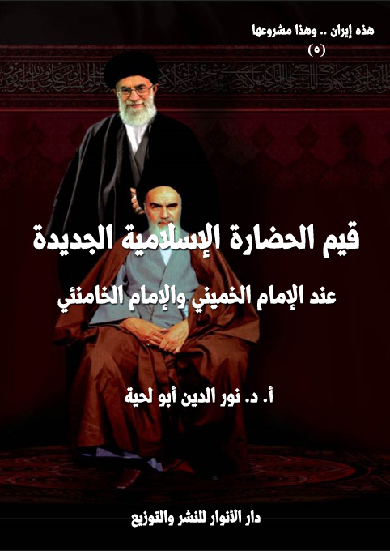

الكتاب: قيم الحضارة الإسلامية الجديدة
الوصف: قيم الحضارة الإسلامية الجديدة عند الإمام الخميني والإمام الخامنئي
السلسلة: هذه إيران وهذا مشروعها
المؤلف: أ. د. نور الدين أبو لحية
الناشر: دار الأنوار للنشر والتوزيع
الطبعة: الأولى، 1442 هـ
عدد الصفحات: 565
ISBN: 978-620-3-85921-8
لمطالعة الكتاب من تطبيق مؤلفاتي المجاني وهو أحسن وأيسر: هنا

التعريف بالكتاب
يحاول هذا الكتاب أن يدخل في لباب التجربة الحضارية الإيرانية الجديدة وروحها، حتى لا تظل محصورة في تلك الأرض الطيبة والشعب الكريم، وإنما تعم العالم أجمع بداية بالعالم الإسلامي.
ذلك أن المقصود الأول من الثورة الإسلامية الإيرانية ـ كما يذكر قادتها ـ هو أن تكون بداية لنهضة جديدة للعالم الإسلامي، بل لكل المستضعفين في الأرض.
وهي بذلك تستحق أن تُدرس من هذه الناحية بعيدا عن الخصوصية الزمانية والمكانية المرتبطة بها؛ فالمشروع الحضاري الإيراني له وجهان:
1. وجه يراه الناس جميعا من خلال المقاومة والسيادة والعزة والتطور العلمي والتقني والفني وغيرها من النواحي التي يقر بها كل صادق يتابع الواقع الإيراني.
2. ووجه خفي، هو تلك الروح السامية، وذلك الفكر النبيل، الذي كان سببا وراء كل تلك النواحي الجميلة والسامية التي تحققت للإيرانيين.
وغرض هذا الكتاب ليس الوجه الأول؛ ذلك أنه لا يمكن حصره، ولا الحديث عنه، فالتطور يسير في إيران في وتيرة متسارعة، لا يمكن حدها ولا حصرها، ولو ذكرنا في الكتاب أي إحصائيات؛ فإنها ستصبح بعد سنوات قليلة مجرد أرقام لا قيمة لها أمام التطور الجديد.
ولذلك كان الأجدى هو البحث عن الوجه الثاني، لا للتعرف من خلاله على سبب ما يحدث في الوجه الأول فقط، وإنما للاستفادة منه في خدمة كل من يرغب في مشروع جاهز أثبت صلاحه من خلال التجربة والواقع ولأجيال عديدة.
قيم الحضارة الإسلامية الجديدة (9)
يختلف هذا الكتاب عن الكتب السابقة من هذه السلسلة في كونه لا يرتبط من قريب أو بعيد بالتاريخ أو الواقع الإيراني، ذلك أنه يحاول أن يخرج من ذلك الواقع والتاريخ، ليدخل في لباب التجربة الحضارية الإيرانية الجديدة وروحها، حتى لا تظل محصورة في تلك الأرض الطيبة والشعب الكريم، وإنما تعم العالم أجمع بداية بالعالم الإسلامي.
ذلك أن المقصود الأول من الثورة الإسلامية الإيرانية ـ كما يذكر قادتها ـ هو أن تكون بداية لنهضة جديدة للعالم الإسلامي، بل لكل المستضعفين في الأرض، وهي بذلك تستحق أن تُدرس من هذه الناحية بعيدا عن الخصوصية الزمانية والمكانية المرتبطة بها.
وبذلك فإن المشروع الحضاري الإيراني له وجهان:
1. وجه يراه الناس جميعا من خلال المقاومة والسيادة والعزة والتطور العلمي والتقني والفني وغيرها من النواحي التي يقر بها كل صادق يتابع الواقع الإيراني.
2. ووجه خفي، هو تلك الروح السامية، وذلك الفكر النبيل، الذي كان سببا وراء كل تلك النواحي الجميلة والسامية التي تحققت للإيرانيين.
وغرض هذا الكتاب ليس الوجه الأول؛ ذلك أنه لا يمكن حصره، ولا الحديث عنه، فالتطور يسير في إيران في وتيرة متسارعة، لا يمكن حدها ولا حصرها، ولو ذكرنا في الكتاب أي إحصائيات؛ فإنها ستصبح بعد سنوات قليلة مجرد أرقام لا قيمة لها أمام التطور الجديد.
ولذلك كان الأجدى هو البحث عن الوجه الثاني، لا للتعرف من خلاله على سبب ما يحدث في الوجه الأول فقط، وإنما للاستفادة منه في خدمة كل من يرغب في مشروع جاهز أثبت صلاحه من خلال التجربة والواقع ولأجيال عديدة.
ونحن نرى أن الحملة المغرضة على إيران لا تهدف فقط إلى ضرب مشروعها الواقعي
قيم الحضارة الإسلامية الجديدة (10)
المتواجد على أرضها، وإنما تهدف قبل ذلك وبعده إلى نسف مشروعها الفكري والتأصيلي الذي أثبت جدواه الواقعية.
وهم يشبهون في ذلك من يحاول قتل مريض انتفع بدواء جديد تحت التجربة، لا لينتقم من المريض، وإنما ليحرم المرضى من استعمال الدواء بإثبات فشله، وعدم صلاحيته.
وهذا ما يفعله أعداء إيران، وقد نجحوا فيه إلى حد كبير، حيث نرى الكثير ممن يزعمون لأنفسهم الحرية الفكرية والتنوير، لا يعرفون شيئا عن المشروع الحضاري الإيراني، بل يحملون عنه صورة مشوهة في نفس الوقت الذي يشيدون فيه بحركة جمال الدين ومحمد عبده ورشيد رضا وغيرهم من الشخصيات أو الحركات الدعوية التي لم يتح لها أن تجرب مشاريعها في الواقع، ولا أن تنجح في تحقيق ما تفكر فيه.
ولهذا نرى قادة الثورة الإسلامية يشيرون إلى هذا، بل يدعون المفكرين والمثقفين المتنورين إلى القيام بدورهم في هذا الجانب، ومن الأمثلة على ذلك قول الإمام الخميني بعد فترة وجيزة من انتصار الثورة الإسلامية: (يجب دعوة كبار المفكرين في العالم الإسلامي، لتوضيح أبعاد الثورة الإسلامية العظيمة في إيران وتقييم الضربات القاصمة التي أنزلتها هذه الثورة بالناهبين الدوليين، لنبطل بذلك مفعول الدعاية الغربية ضد الثورة الإسلامية)(1)
وقال الإمام الخامنئي عند حديثه عن أدوار الإعلام: (ثمة أمر آخر يعتبر من الأولويات الإعلامية والتبليغية، في الوقت الحاضر، وهو الدفاع عن الجمهورية الإسلامية؛ وإنني أتوجه بالحديث الى المثقفين والمفكرين المسلمين غير الإيرانيين، إن عليهم ألا ينظروا الى الجمهورية الإسلامية على أنها كيان قائم في مكان ما من العالم أو ثورة انتصرت بإمكانهم أن يحبوها أو يبغضوها تبعاً لميولهم وعواطفهم.. لا ينبغي أن يحملوا مثل هذه الفكرة، ولا يجب أن ينظروا
__________
(1) صحيفة الإمام، ج 9، ص: 186.
قيم الحضارة الإسلامية الجديدة (11)
الى الجمهورية الإسلامية من هذا المنظار، فإقامة الجمهورية الإسلامية حدث سعى الاستعمار للحيلولة دون حصوله طيلة مئتي عام، لكي يبرهن على أن زمن الإسلام قد ولّى، وأن الإسلام غير قادر على إدارة المجتمع وإقامة النظام السياسي)(1)
ثم ذكر بعض النواحي والقيم التي استطاعت الثورة الإسلامية الإيرانية إثباتها، فقال: (لقد فنّدت الجمهورية الإسلامية بحركة واحدة مزاعم الاستعمار ودعاياته التي بقي يرددها طوال مئتي عام وأذهبتها أدراج الرياح.. تلك المزاعم والدعايات التي شارك فيها آلاف المفكرين، وأُنفقت عليها المليارات من النقود، وكم حاولوا ـ جاهدين ـ نشر وترسيخ أفكارهم في العالم الإسلامي من أقصاه الى أقصاه)(2)
ثم دعا إلى التسامي عن الواقع الإيراني الذي قد لا يعبر في بعض نواحيه بدقة عن المشروع الفكري، فقال: (ربما يكره بعض الفئات أو الأفراد هذه الجمهورية الإسلامية ولا يحبونها، أو أنهم لا يرتضون تصرف المسؤول الفلاني من مسؤولي الجمهورية الإسلامية، أو يكونوا مترددين في الرضى عنه، أو تكون لديهم تساؤلات وعلامات استفهام حوله؛ كل هذا يمكن أن يكون صحيحاً وفي محله ومنطقياً ويمكن أن يحدث، ولكن الذي لا يمكن أن يكون منطقياً ولا يمكن الدفاع عنه وتأييده هو أن يحمل الشخص تساؤلات وشكوكاً حول الجمهورية الإسلامية، أو لا يدافع عنها؛ هذا ما لا يمكن قبوله أو تبريره)(3)
ودعا بدله إلى الاهتمام بروح المشروع وغايته وقيمه، فقال: (إن الجمهورية الإسلامية تعني حاكمية القرآن وحاكمية الإسلام، ومن واجب كل مسلم في أية بقعة من أرجاء العالم أن
__________
(1) الفكر الأصيل، الإمام الخامنئي، ص 77.
(2) المصدر السابق، ص 77.
(3) المصدر السابق، ص 77.
قيم الحضارة الإسلامية الجديدة (12)
يدافع عن هذا الكيان، ليس لأنه يعود لنا أو متعلق بنا، وليس لأنه ملك لإيران)(1)
بل ذكر أن قادة الثورة الإسلامية الإيرانية لم يكن قصدهم إلا هذا، وأنهم كانوا في فترة نضالهم وثورتهم يفرحون بكل مشروع نهضوي ويدافعون عنه، فقال: (كنا في فترة الظلم والجور الشاهنشاهي حين نشاهد تحركاً أو نهضة في مكان ما ينبض فيه عِرق إسلامي، فإننا نعتبر أنفسنا ملزمين بتأييده ودعمه)(2)
ثم تحدث عما أشرنا إليه من الاهتمام بقيم المشروع وروحه وطرحه كنموذج لصلاحية الإسلام للواقع بكل جوانبه، فقال: (إننا نعتقد أن الدفاع عن الجمهورية الإسلامية في الوقت الحاضر هو أحد أهم أولويات التبليغ للإسلام في العالم بل ويعد من أوائل تلك الأولويات.. ينبغي أن يقال لشعوب العالم: إن الإسلام يمكنه أن يجنّد الجماهير والشعوب، ويتم ـ من خلالهم وعلى أيديهم وبالاعتماد على إيمانهم ـ اكتساح حصون الاستكبار وقلاعه المنيعة، وإقامة نظام مبني على أساس الإسلام وعلى أساس القرآن، ويطبّق هذا النظام حاكمية الإسلام والقرآن ويرسي سيادتهما رسمياً.. وهو نفس ذلك الشيء الذي كان يطمح إليه ويأمل في إقامته ـ سنين طويلة ـ الإسلاميون المثقفون الواعون، منذ زمن السيد جمال الدين ومحمد عبده وبقية المفكرين المسلمين، وظل يراودهم هذا الحلم كل تلك السنين، وظلوا يتحرقون شوقاً الى تحقيقه.. هذا أيضاً إحدى أولويات التبليغ والإعلام الإسلامي.. هذا ما يخص التبليغ في الدول الأجنبية غير الإسلامية، وهي ذات الأولويات التي ينبغي السعي لتحقيقها في بلداننا نحن، أي في داخل بلدان العالم الإسلامي)(3)
بل إن الإمام الخامنئي يعبر عن هذا التغيير الذي أحدثته الجمهورية الإسلامية الإيرانية
__________
(1) المصدر السابق، ص 77.
(2) المصدر السابق، ص 78.
(3) المصدر السابق، ص 78.
قيم الحضارة الإسلامية الجديدة (13)
أو تسعى لإحداثه لقب [الحضارة الإسلامية الجديدة]، فقد قال في بعض خطبه: (لو أخذنا التقدّم من جميع الأبعاد بمعنى بناء الحضارة الإسلامية الجديدة ـ ففي النهاية يوجد مصداقٌ عينيّ وخارجيّ للتقدّم وفق المفهوم الإسلاميّ ـ هنا سنقول إنّ هدف شعب إيران، وهدف الثّورة الإسلامية، هو عبارة عن إيجاد حضارة إسلامية جديدة)(1)
وبذلك؛ فإن هذا الكتاب محاولة للاستجابة لهذا النداء الشريف من قائد الثورة الإسلامية، والذي استطاع أن يثبت للعالم أجمع، وطيلة توليه للإرشاد والقيادة في الجمهورية الإسلامية الإيرانية أنه مثال للقائد العادل العالم القوي البصير الذي يمثل الحاكم المسلم والحكم الإسلامي أحسن تمثيل.
وبناء على هذا، وبدل الحديث عن المشروع بحد ذاته، اخترنا الحديث عن القيم التي يحملها، وذلك حتى نتخلص من كل القيود الزمانية والمكانية، ونخلص لروح المشروع، لأن بعض تفاصيله وأجزائه، قد يقع الخلاف فيها بين بيئة وأخرى، وهو مما لا حرج فيه.
وحتى نبين مدى أصالة هذا المشروع، وكونه لا يعبر عن جهد فكري فقط، وإنما يستمد أصوله وروحه من المصادر المقدسة المتفق عليها بين المسلمين جميعا؛ فقد حاولنا عند ذكر كل قيمة من القيم أن نذكر النصوص المقدسة الدالة عليها.
وحتى لا يزداد الكتاب عن الحجم المسموح به عادة، اكتفينا بالمرشدين الكبيرين اللذين أتيح لهما القيادة المباشرة للجمهورية الإسلامية الإيرانية، وهما الإمام الخميني والإمام الخامنئي، باعتبارها لا يمثلان الجانب التنظيري فقط، وإنما الجانب الواقعي والتطبيقي أيضا.. ذلك أن أي شخص آخر ـ مثلا ـ قد يتحدث عن الصهيونية ويدعو إلى استئصالها، ويكون ذلك كلاما طبيعيا حماسيا مسموحا به، لكن أن يتحدث عنه القائد والزعيم والحاكم الأعلى؛ فإن هذا له
__________
(1) خطابات الإمام الخامنئي 2012، ص 493.
قيم الحضارة الإسلامية الجديدة (14)
معنى آخر أقوى وأعظم، لأنه يمثل الدولة بكل أطيافها ومؤسساتها.
بالإضافة إلى أن معظم النصوص التي نقتبسها من كلام ذينك القائدين هي في الحقيقة توجيهات عملية للجهات والمؤسسات المختلفة من الشعب، وهي بذلك تمثل قوانين الدولة ومراسيمها وبياناتها الصادرة من قمة السلطة.
بالإضافة إلى أن ما يذكرونه من حقائق وقيم هي نفس ما يردده غيره من أبناء الثورة الإسلامية سواء من الذين تولوا بعض المسؤوليات أو غيرهم، ولذلك كان الكلام قادة كافيا ومؤديا للغرض.
ونحب أن ننبه إلى أنا حاولنا في الكتاب أن نذكر أكبر قدر من خطب وبيانات قائدي الثورة الإسلامية، حتى لا يتوهم القارئ أنها طروحاتنا، وأننا نقوّل قادة الثورة الإسلامية ما لم يقولوا، ولهذا اضطررنا أحيانا كثيرة إلى ترك النصوص كما هي من دون اختصار أو تصرف، لكون التلخيص يخل بها، ويفقدها روحها، فأكثرها كانت خطابات موجهة للفئات المختلفة، ويمكن أن يستفيد منها غيرهم، ولهذا لم نخض في التفاصيل المرتبطة بالجهات التي وُجهت لها، لأنها أعم من أن تحصر فيهم.
وبناء على استقرائنا للمجالات المختلفة للمشروع الإيراني رأينا تقسيم الكتاب إلى عشرة فصول، كما يلي:
1. الحضارة الإسلامية الجديدة والقيم الدينية: ونقصد به القيم المرتبطة بحقيقة الدين ومصادره وكيفية فهمه والتعامل مع قضاياه المختلفة، وقد بدأنا به باعتباره يمثل روح المشروع؛ فهو إسلامي بالدرجة الأولى، بل هو محاولة لتحقيق الإسلام كما هو بعيدا عن أي دخيل أو دخن.
2. الحضارة الإسلامية الجديدة والقيم الروحية: ونقصد به القيم المرتبطة بالسلوك الروحي والتوجه الخالص لله تعالى، ذلك أنه لا يمكن تحقيق الدين في الواقع السياسي
قيم الحضارة الإسلامية الجديدة (15)
والاجتماعي قبل تحقيقه في عالم الروح والنفس.
3. الحضارة الإسلامية الجديدة والقيم الأخلاقية: ونقصد به القيم المرتبطة بالسلوك الأخلاقي، ذلك أن المشروع الإسلامي نابع من النبوة التي صرح فيها رسول الله صلى الله عليه وآله وسلم بأنه ما بعث إلا ليتمم مكارم الأخلاق، وهذا ما يميز المشروع الإسلامي عن غيره من المشاريع الأرضية.
4. الحضارة الإسلامية الجديدة والقيم الإنسانية: ونقصد به القيم المرتبطة بحقوق الإنسان ونصرة المستضعفين باعتبار المشروع الإسلامي لا يهدف فقط إلى خدمة الواقع الاجتماعي المحدود، وإنما يمتد لكل البلاد والشعوب.
5. الحضارة الإسلامية الجديدة والقيم الاجتماعية: ونقصد به القيم المرتبطة بالبنية الاجتماعية والعلاقات المشكلة لها، ذلك أن المشروع الشامل يهتم بهذه النواحي مثل اهتمامه بغيرها.
6. الحضارة الإسلامية الجديدة والقيم السياسية: ونقصد به القيم المرتبطة بالمواقف والممارسات والسلوك السياسي، بالإضافة إلى نوع النظام، والمصادر التي يستمد منها.
7. الحضارة الإسلامية الجديدة والقيم الاقتصادية: ونقصد به القيم المرتبطة بالنظام والحياة الاقتصادية، باعتبارها ركنا أساسيا في الحياة، لا يمكن لأي مشروع ناجح أن يغض الطرف عنه، أو يتركه في يد غيره من المشاريع التي قد تتضاد معه.
8. الحضارة الإسلامية الجديدة وقيم العلم والتقانة: ونقصد به القيم المرتبطة بالموقف من العلم وأنواعه وكيفية تحقيق التطور في جوانبه النظرية والتطبيقية التقنية، ذلك أنه مظهر من مظاهر الحضارة الراقية.
9. الحضارة الإسلامية الجديدة وقيم الثقافة والفنون: ونقصد به القيم المرتبطة بالجوانب الثقافية والفنية، سواء من ناحية التحصن والممانعة، أو من ناحية التأثير والانتشار،
قيم الحضارة الإسلامية الجديدة (16)
ذلك أنها تمثل جانبا من الجوانب المهمة في الحياة، وهو جانب الاستجمام والراحة والذوق الرفيع، ولا يمكن لمشروع شامل ناجح أن يغض الطرف عنها، أو يتركها في يد غيره من المشاريع التي قد تجعل منها وسيلة لهدم كل ما بناه.
10. الحضارة الإسلامية الجديدة وقيم الإعلام والاتصال: ونقصد به القيم المرتبطة بالإعلام والاتصال، باعتبارهما من الوسائل التي تمكن المشروع من إيصال رسالته وبصورة جميلة للعالم أجمع.
هذه هي الفصول التي يتأسس عليها هذا الكتاب، وننبه إلى أننا في توثيقاتنا للنصوص التي نذكرها اعتمدنا على الكتب الإلكترونية الكثيرة التي أصدرتها مؤسسات تابعة للجمهورية الإسلامية الإيرانية، أو تتبنى رؤيتها، من أمثال: دار الولاية، ومؤسسة العرفان، ومركز نون، وغيرها.. ولست أدري مدى مطابقة الصفحات الموجودة فيها للصفحات الموجودة في الكتب الورقية، ولهذا نعتذر للقارئ في حال لم يجد مطابقة الصفحات، لأنا اهتممنا بصحة النصوص، ودقة نسبتها إلى أصحابها، بغض النظر عن مدى دقة التوثيق المرتبط برقم الصفحة.
وفي الأخير، ومن باب (من لا يشكر الناس لا يشكر الله)(1)، لا أنسى أن أتقدم بالشكر الجزيل لأستاذنا الكبير السيد جلال ميرأقائي الذي شرفني بدعوتي إلى كتابة هذا الكتاب، وبين لي أهميته وضرورته، ثم أمدني بعد ذلك بما أحتاجه من مراجع، وأرجو أن أكون بذلك قد لبيت بعض طلبه، لأن الحديث عن الحضارة الإسلامية الجديدة بتفصيل ودقة، يحتاج جهدا أكبر، ومراجع أكثر، ولذلك نستغفر الله على التقصير، فهذا جهد المقل.
__________
(1) رواه أحمد (7755)، وأبو داود (4198.
قيم الحضارة الإسلامية الجديدة (17)
الحضارة الإسلامية الجديدة والقيم الدينية
الركن الأول من الأركان الكبرى التي تتشكل منها الحضارة الإسلامية الجديدة ـ بحسب رؤية قادة الثورة الإسلامية الإيرانية ـ[القيم الدينية]، وذلك باعتبار الدين ركنا أساسيا من أركان الحياة، وخاصة لدى المسلمين، ولذلك لا يمكن أن ينجح أي مشروع لديهم لا يتبنى رؤية دينية.
وبقدر صفاء تلك الرؤية، وبقدر شمولها وعقلانيتها وقربها من الإسلام الأصيل بقدر ما يكون نجاح ذلك المشروع.
ولذلك؛ فإن المراد من القيم الدينية هي القيم التي تحدد صفات تلك الرؤية وخصائصها والأسس التي تقوم عليها، ذلك أن الدين مع شموله لجميع مناحي الحياة، إلا أن هناك ناحيتين مهمتين، قد يختص بهما، أو يقصدان عند الإطلاق، وهما:
الأولى: حقيقة الدين والمجالات التي يمكن أن يتدخل فيها.
الثانية: المصادر التي يعتمد عليها.
وهما الناحيتان اللتان وقع الخلاف الشديد فيهما بين المسلمين طيلة عصور التاريخ إلى الآن:
ففي الناحية الأولى مثلا نجد من يهتم بالنواحي الروحية من الدين دون غيرها، أو نجد من يعزل السياسة والحكم، أو نجد من يعزل التربية والتعليم، وهكذا.
وفي الناحية الثانية نرى الخلاف الشديد في فهم المصادر الإسلامية ابتداء من القرآن الكريم والسنة المطهرة، وانتهاء بالأئمة الذين يرجع إليهم في فهم تلك المصادر الأصلية.
ولهذا؛ سنقتصر في هذا الفصل على القيم المرتبطة بهاتين الناحيتين، وقد رأينا من خلال استقراء مواقف قادة الثورة الإسلامية من هذه الجوانب ستة قيم، وهي:
قيم الحضارة الإسلامية الجديدة (18)
أولا. تبني الإسلام الأصيل.
ثانيا. الدعوة للرؤية الكونية التوحيدية.
ثالثا. اعتبار مركزية القرآن الكريم.
رابعا. الاتباع المطلق للنبوة.
خامسا. الولاء الصادق للعترة.
سادسا. التخلص من الدخيل والدخن.
وسنذكر في هذا الفصل ما ورد عن قادة الثورة الإسلامية الإيرانية من النصوص الدالة على مواقفهم من هذه القيم.
ما يطلق عليه [الإسلام الأصيل] مصطلح حادث نجده كثيرا عند قادة الثورة الإسلامية الإيرانية أو من تتلمذ عليهم، وقد يطلقون عليه لقب [الإسلام المحمدي الأصيل]، أو [الإسلام الإلهي]، ويقصدون منه أمرين:
الأول: الإسلام الذي يرجع إلى المصادر الأصلية من الكتاب والسنة المطهرة وهدي ورثة النبوة بعيدا عن كل الشوائب التي لحقت به.
الثاني: الإسلام الذي لم يتلطخ بأكدار الطائفية والتشتت والتمذهب والصراع الذي شوه حقائق الدين وقيمه، بالإضافة إلى تخلصه من كدورات الخرافة والكسل والتواكل وكونه أداة مخدرة للشعوب.
وقد يكون المراد بهذا الاصطلاح ما ورد التعبير عنه في القرآن الكريم بمصطلح [الصراط المستقيم]، كما قال تعالى: ﴿وَأَنَّ هَذَا صِرَاطِي مُسْتَقِيمًا فَاتَّبِعُوهُ وَلَا تَتَّبِعُوا السُّبُلَ فَتَفَرَّقَ بِكُمْ عَنْ سَبِيلِهِ ذَلِكُمْ وَصَّاكُمْ بِهِ لَعَلَّكُمْ تَتَّقُونَ﴾ [الأنعام: 153]
أو بمصطلح الدين الأبيض النقي، كما ورد في الحديث عن رسول الله صلى الله عليه وآله وسلم عندما رأى
قيم الحضارة الإسلامية الجديدة (19)
بعض أصحابه يحمل كتابا من كتب اليهود، فقال له: (والذي نفسي بيده، لقد جئتكم بها بيضاء نقية، لا تسألوهم عن شيء فيخبروكم بحق فتكذبوا به أو بباطل فتصدقوا به، والذي نفسي بيده لو أن موسى صلى الله عليه وآله وسلم كان حيا ما وسعه إلا أن يتبعني)(1)، فهذا الحديث يفرق فيه رسول الله صلى الله عليه وآله وسلم بين الدين الخالص النقي الأبيض الصافي الذي ليس فيه أي دنس أو شبهة تمنع العقل السليم من التسليم له، وبين الدين المختلط بالخرافات المتسربة والمندسة من الأديان المحرفة أو غيرها.
وفي حديث آخر يتنبأ رسول الله صلى الله عليه وآله وسلم بوقوع هذا في الأمة، ويحذر منه، ويدعو في نفس الوقت إلى تبني الدين الأصيل، فعن عبد الله بن مسعود قال: خطّ لنا رسول الله صلى الله عليه وآله وسلم خطّا ثمّ قال: (هذا سبيل الله) ثمّ خطّ خطوطا عن يمينه وعن شماله ثمّ قال: (هذه سبل متفرّقة، قال: على كلّ سبيل منها شيطان يدعو إليه، ثمّ قرأ: ﴿وَأَنَّ هَذَا صِرَاطِي مُسْتَقِيمًا فَاتَّبِعُوهُ وَلَا تَتَّبِعُوا السُّبُلَ فَتَفَرَّقَ بِكُمْ عَنْ سَبِيلِهِ ذَلِكُمْ وَصَّاكُمْ بِهِ لَعَلَّكُمْ تَتَّقُونَ﴾ [الأنعام: 153] (2)
وبذلك؛ فإن أول قيمة من قيم الحضارة الإسلامية الجديدة هي العودة إلى الإسلام بصورته النقية الجميلة التي لم تؤثر فيها كدورات العصور المختلفة، لأنه لا يمكن أن نطلق لقب الإسلام كاملا إلا على تلك الصورة الصحيحة.
وذلك يشبه ما لو أن طبيبا وصف لمريض داوء معينا لكن المريض لم يجد ضالته من الشفاء في ذلك الدواء، واحتار الطبيب في السبب، لكنه عندما عرف أن المريض لم يتناول الدواء بالصورة الصحيحة، وأنه خلط بغيره، زالت عنه الحيرة.
وهكذا أدوية الإسلام التي هي شفاء من كل أدواء التخلف والتشتت والضياع لا يمكن
__________
(1) مسند أحمد بن حنبل: 3/ 387 ح (15195)
(2) أحمد (1/ 435) والحاكم (2/ 318.
قيم الحضارة الإسلامية الجديدة (20)
أن تؤدي أدوارها إلا بالالتزام بوصفاتها بدقة، كما قال تعالى عن أهل الكتاب: ﴿وَلَوْ أَنَّ أَهْلَ الْكِتَابِ آمَنُوا وَاتَّقَوْا لَكَفَّرْنَا عَنْهُمْ سَيِّئَاتِهِمْ وَلَأَدْخَلْنَاهُمْ جَنَّاتِ النَّعِيمِ وَلَوْ أَنَّهُمْ أَقَامُوا التَّوْرَاةَ وَالْإِنْجِيلَ وَمَا أُنْزِلَ إِلَيْهِمْ مِنْ رَبِّهِمْ لَأَكَلُوا مِنْ فَوْقِهِمْ وَمِنْ تَحْتِ أَرْجُلِهِمْ مِنْهُمْ أُمَّةٌ مُقْتَصِدَةٌ وَكَثِيرٌ مِنْهُمْ سَاءَ مَا يَعْمَلُونَ﴾ [المائدة: 65 - 66]
ومن خلال استقراء ما ورد من كلام قادة الثورة الإسلامية الإيرانية حول الموضوع، نجدهم يركزون على ناحيتين:
أولاهما: ضرورة تحقيق الإسلام الأصيل في الواقع ومواجهة المعتدين والمحرفين.
وثانيهما: بيان أسس الإسلام الأصيل وخصائصه التي تميزه عن غيره من القراءات الخاطئة للإسلام.
باعتبار أنه لا يمكن أن يتحقق التمكين ولا التمكن من دون ذلك، وقد أشار إلى هذا الإمام الخامنئي عند ذكره لمنهج أستاذه الإمام الخميني، والذي أتاح للثورة الإسلامية أن تنتصر وتنجح في تحقيق أهدافها، حيث يقول: (النقطة الأولى والأهم في مباني الإمام الخميني ونظراته هي قضية الإسلام المحمدي الأصيل.. أي الإسلام المقارع للظلم، والإسلام المطالب بالعدالة، والإسلام المجاهد، والإسلام المناصر للمحرومين والفقراء، والإسلام المدافع عن حقوق الحفاة والمعذبين والمستضعفين.. وفي مقابل هذا الإسلام أورد الإمام الخميني مصطلح [الإسلام الأمريكي] في ثقافتنا السياسية وقاموسنا السياسي.. الإسلام الأمريكي يعني الإسلام الذي يقتصر على التشريفات فيبتعد عن التطبيق، وهو إسلام عدم الاكتراث مقابل الظلم، ومقابل الجشع، واللامبالاة حيال التطاول على حقوق المظلومين، إنّه إسلام مساعدة العتاة والمتعسفين والأقوياء.. الإسلام الذي يتأقلم مع كل هذه الأمور.. هذا الإسلام سمّاه
قيم الحضارة الإسلامية الجديدة (21)
الإمام: الإسلام الأمريكي)(1)
ويذكر مدى اهتمام الإمام الخميني بالدعوة إلى هذا الإسلام، فيقول: (فكرة الإسلام الأصيل كانت الفكرة الدائمة لإمامنا الجليل، وهي ليست فكرة مختصة بفترة الجمهورية الإسلامية، بيد أن تحقق الإسلام الأصيل غير متاح من دون سيادة الإسلام وتأسيس نظام الحكم الإسلامي.. إذا لم يقم النظام السياسي في البلاد على أساس الشريعة الإسلامية والفكر الإسلامي، فلن يمكن للإسلام خوض غمار كفاح حقيقي ضد ظلَمة العالم وعتاته ومتغطرسيه، وضد المتعسفين في المجتمع)(2)
وعند العودة إلى تراث الإمام الخميني نجده كثيرا ما يدعو إلى ضرورة الالتزام بهذا الإسلام، ويبين أن معاداة المعتدين والمحرفين عليه دليل على مصداقيته، ومن الأمثلة على ذلك قوله عند حديثه عن الذين يعادون إيران بسبب تمسكها بالإسلام المحمدي الأصيل: (لقد صممت كافة الحكومات والقوى الكبرى اليوم على اقتلاع جذور إسلامنا المحمدي الأصيل.. يا رب، لقد وضع صدام وأشباهه أيديهم في أيدي جميع شياطين العالم بكل ما تنطوي عليه نفوسهم من بغضاء لدينك حتى يقضوا اليوم على صوت الإسلام المحمدي)(3)
وقال عن المحرفين الذين يعادون الإسلام الأصيل: (إن في الحوزات العلمية من يقومون بنشاطات ضد الثورة والإسلام المحمدي الأصيل، واليوم فإن بعض المتظاهرين بالقداسة يطعنون بحرابهم صدر الدين والثورة والنظام وكأنه لا عمل لهم سوى ذلك! إن خطر المتحجرين والمتظاهرين بالقداسة الحمقى ليس بالقليل في الحوزات العلمية.. على الطلاب الأعزاء أن لا يغفلوا لحظة واحدة عن هذه الثعابين الرقطاء والملساء، فهؤلاء هم مروجو
__________
(1) خطابات الإمام الخامنئي 2010، ص 165.
(2) المصدر السابق، ص 165.
(3) صحيفة الإمام، ج 20، ص 391
قيم الحضارة الإسلامية الجديدة (22)
الإسلام الأمريكي وأعداء رسول الله صلى الله عليه وآله وسلم)(1)
ويقول ـ مبينا شروط اتباع الإسلام الأصيل ـ: (لكَم تغيرت أوضاع العالم.. إن المسلمين يزعمون بأنهم أتباع الرسول الأكرم صلى الله عليه وآله وسلم، وأتباع القرآن. حسناً.. فهذا هو القرآن، فانظروا ماذا يقول هو وماذا تفعلون أنتم.. لقد تسببوا في كل ما نعانيه من مصائب من أجل أمريكا، ثم يقولون إننا مسلمون، فهل هذا هو إسلامكم الذي تزعمون ثم تقومون بكل ذلك إرضاءً لأمريكا؟ إنهم يعطون نفطهم لأمريكا، ويقدمون لها كل ثروات شعوبهم.. لقد سحقوا بظلمهم شعوبهم الضعيفة البائسة، ومازالوا يزعمون بأنهم مسلمون.. فهل يمكن أن يصبح المرء مسلماً لمجرد الادعاء؟!.. إنهم يقولون إننا مسلمون وننادي بالوحدة، فتقيم إيران أسبوع الوحدة، ثم يعودون ليقولوا بأن إيران تبث الفرقة)(2)
وهو يذكر بعض المظاهر التي تفرق أصحاب الإسلام المحمدي الأصيل عن غيرهم، فيقول: (إنه لمن دواعي الأسف أن يكون الإسلام بهذا الوضع، ويكون مدعو الإسلام على هذه الحالة.. إن الإسلام يقف موقفاً متشدداً من المتخلفين والمعتدين، في حين يقوم مدعو الإسلام بتشجيع هؤلاء)(3)
وهكذا يذكر الإمام الخامنئي استمرار تمسك الإيرانيين والتزامهم بالإسلام الأصيل على المنهج الذي رسمه الإمام الخميني ومواجهة كل المعتدين والمحرفين، يقول في ذلك: (إنّ أسس الجمهوريّة الإسلامية ـ التي هي نهج الإمام نفسه وأسس الإسلام المؤكّدة ـ هي في إيران الإسلامية ذات أهمّية، وهي أساس حياتنا السياسيّة والاجتماعيّة، رغم أنوف الأعداء.. والشعب الإيراني لن يتخلّى، تحت أيّ ظرف، عن الحياة في ظلّ الإسلام المحمّدي الأصيل الذي
__________
(1) المصدر السابق، ج 21، ص 278.
(2) المصدر السابق، ج 18،ص 266.
(3) المصدر السابق، ج 16 ص 432.
قيم الحضارة الإسلامية الجديدة (23)
تحصّل من خلال التضحيات وبذل أعزّ النفوس، وإنّ أصول الإمام الخميني ـ وعلى رأسها، أصل عدم الفصل بين الدين والسياسة، ومقاومة ضغوط المدنيّة الماديّة لعزل الإسلام والقرآن ـ ستبقى الأصول الحيّة دومًا للجمهوريّة الإسلامية)(1)
عند العودة إلى خطب وكتب قادة الثورة الإسلامية الإيرانية نجدهم لا يكتفون فقط بالدعوة للعودة للإسلام الأصيل، وإنما يصفون ملامحه وخصائصه التي تميزه عن غيره، وفي كل المجالات.
ومن الأمثلة على ذلك قول الإمام الخميني عند حديثه عن الفنون: (إن الفن الوحيد المقبول من قبل القرآن الكريم، هو الفن الذي يُجلّي الإسلام المحمدي الأصيل.. إسلام أئمة الهدى.. إسلام الفقراء البائسين.. إسلام الحفاة.. إسلام الذين لسعتهم سياط التاريخ المخجل المر)(2)
ونجده في محال كثيرة يوضح الملامح والأسس الكبرى التي يقوم عليها هذا الإسلام، ومن كلماته المنتخبة القصار في هذا قوله: (ليس في النظام الإسلامي أيّ فرق بين شخص وآخر.. الإسلام هو دين المجاهدين الذين يرومون الحق والعدالة، دين التحرريين الساعين نحو الاستقلال، وهو عقيدة الجماهير المناضلة الراغبة في مواجهة الاستعمار.. علينا أن نسعى لتحطيم أسوار الجهل والخرافات، لبلوغ المعين الرقراق للإسلام المحمّدي الأصيل صلى الله عليه وآله وسلم.. اجعلوا من الإسلام مثالكم الأسمى، وانصاعوا له.. إنّ الإسلام أسمى مما نتصوّره نحن.. رسالة الإسلام هي رسالة التهذيب.. إنّ الإسلام يسعى لتعديل نمط التعامل مع الماديّات
__________
(1) بيان القائد لحجّاج بيت الله الحرام (28/ 2/1372.
(2) الكلمات القصار، مواعظ وحكم من كلام الإمام الخميني، ص 94.
قيم الحضارة الإسلامية الجديدة (24)
بطريقة تسوقها نحو الاصطباغ بالصبغة الإلهّية.. لقد طرح الإسلام برنامجاً متكاملاً للحياة، والمشكلة في المسلمين أنفسهم.. إنّ مشكلة المسلمين الأساسيّة تكمن في الابتعاد عن الإسلام والقرآن.. لو أنّ الشعوب اطّلعت على الإسلام، لوجدت كلّ ما تريده فيه.. إنّ كل المصائب التي حلّت بهذا البلد إنّما كانت من الجاهلين بالإسلام.. عدم فهم الإسلام هو السبب الذي يقف وراء سوء ظنّ البعض بالإسلام)(1)
ويعتبر الإمام الخميني هذا النوع من الإسلام هو الكفيل وحده بحل كل المشاكل؛ حيث يقول عند حديثه عن القضية الفلسطينية: (ما لم نعد الى الإسلام، إسلام رسول الله صلى الله عليه وآله وسلم، فسوف تبقى مشاكلنا على حالها، ولن نستطيع حل قضية فلسطين)(2)
وهو يدعو العلماء إلى تبني هذا الإسلام والدعوة إليه، فيقول: (علماء الإسلام مكلفون بمحاربة الدكتاتورية والاستفادة غير المشروعة للظالمين، وأن لا يسمحوا ببقاء عدد كبير من الناس جياعاً ومحرومين والى جانبهم يتنعم الظالمون الناهبون وآكلوا الحرام.. إن علماء الإسلام الأصليين لم يخضعوا أبداً للرأسماليين وعبيد المال والخائنين، واحتفظوا بهذا الشرف لأنفسهم، وهذا ظلم كبير أن يقول أحد بأن يد الرأسماليين هي في يد الروحانيين الأصليين المؤيدين للإسلام المحمدي الأصيل)(3)
ويقول في خطاب آخر وجهه للعلماء وطلبة العلم: (إنني أرغب في أن يكون كلّ واحد منكم عالماً متخصصاً ملتزماً بالإسلام المحمدي الأصيل ومناضلاً صلباً ضد الإسلام الأمريكي ـ إسلام المرفهين ـ وحامل راية الوفاء لشهدائنا وفدائيينا، وأن توفقوا بنور العلم
__________
(1) المصدر السابق، ص 7
(2) المصدر السابق، ص 104.
(3) التربية والمجتمع في فكر الإمام الخميني، ص 105
قيم الحضارة الإسلامية الجديدة (25)
والتقوى لتبديد ظلام النفاق والانحراف والتحجر والقشرية عن الإسلام)(1)
بل إنه يوصي بهذا رجال الدين من غير المسلمين أيضا، بدعوتهم إلى العودة إلى أنبيائهم والأخذ بأصولهم الصحيحة في مواجهة الاستكبار والمستكبرين، فيقول: (الروحانيون هم في المرتبة الأولى لتحقيق هدف الأنبياء عليهم السلام، والذي هو الوحي الإلهي نفسه.. فللروحانيين وظيفة إلهية هي أسمى من جميع وظائف سائر الناس، إن عليهم مسؤولية إلهية، إنهم مسؤولون أمام الأنبياء وأمام الله تبارك وتعالى بإيصال تعليمات الأنبياء إلى الناس والأخذ بأيدي الناس وإنقاذها من مشاكلها، فأهل الدنيا اليوم مبتلون بالقوى الكبرى والقوى الشيطانية التي وقفت أمام الأنبياء، ولا تسمح بتحقق تعاليمهم، وللروحانيين المسيحيين خصوصية كبيرة وهي أن القوى الكبرى مسيحية، أنها تدعي المسيحية، وتعمل خلافاً لتعليمات الله تبارك وتعالى التي علمها لجميع الأنبياء وخلافاً لتعليمات عيسى المسيح عليه السلام، وواجب الروحانيون المسيحيون أن يحاربوا معنوياً هذه القوى الكبرى التي تتصرف خلافاتً للأنبياء وخلافاً للمسيح وذلك طبقاً لتعاليم المسيح، وأوامر الخالق العظيم، وأن يقوموا بإرشاد الشعب المسيحي وتوجيهه لكي يكفّ عن أتباع هذه القوى التي تعارض المسيح)(2)
وهكذا نرى الإمام الخامنئي يوضح المعالم المحددة لهذا الإسلام بقوله: (في الثورة الإسلامية، حلّ إسلام الكتاب والسنّة محلّ إسلام الخرافة والبدعة، إسلام الجهاد والشهادة محلّ إسلام القعود والأسر والذلّ، إسلام التعبّد والتعقّل محلّ إسلام الالتقاط والجهل، إسلام الدنيا والآخرة محلّ إسلام حب الدنيا أو الرهبانيّة، إسلام العلم والمعرفة محلّ إسلام التحجّر والغفلة، إسلام الدين والسياسة محلّ إسلام التحلّل واللامبالاة، إسلام القيام والعمل محلّ
__________
(1) الكلمات القصار، مواعظ وحكم من كلام الإمام الخميني، ص 115.
(2) التربية والمجتمع في فكر الإمام الخميني، ص 105
قيم الحضارة الإسلامية الجديدة (26)
إسلام الضعف والكآبة، إسلام الفرد والمجتمع محلّ إسلام التشريفات والإسلام العديم التأثير، الإسلام المنجّي للمستضعفين محلّ الإسلام الألعوبة بأيدي القوى العظمى، وبالخلاصة، الإسلام المحمّديّ الأصيل محلّ الإسلام الأميركي)(1)
ثم ذكر آثار هذا الإسلام على الآخر، فقال: (إنّ تقديم الإسلام بهذه الصورة وبهذه الواقعيّة والجدّيّة، أدّى إلى غضب عارم وجنونيّ لدى من كانوا يعلّقون الآمال على زوال الإسلام في إيران وفي جميع البلدان الإسلامية، أو كانوا لا يقبلون من الإسلام سوى اسم خال من المحتوى، ووسيلة لجعل الناس حمقى وغافلين، لذا، تراهم منذ اليوم الأوّل لانتصار الثورة إلى الآن، لم يوفّروا فرصةً للهجوم والضربة والمؤامرة وإضمار السوء للجمهوريّة الإسلامية، ومركز حركة الإسلام العالميّة ـ أي: إيران)(2)
ثانيا. الدعوة للرؤية الكونية التوحيدية
بناء على أن الرؤية الكونية هي التي تقوم عليها كل الرؤى النظرية والتطبيقية، والتوحيد هو لب تلك الرؤية وقلبها، ولذلك يمكن اعتباره الأساس الذي يبنى عليه المشروع الحضاري الإسلامي، وبقدر صحته وصفائه وخلوصه من كل الشوائب، بقدر ما يكون صفاء المشروع وسلامته من كل ما يفسده.
ولهذا نرى قادة الثورة الإسلامية يهتمون بالدعوة للتوحيد بمفهومه الشامل، لا القاصر على بعض النواحي، مثلما فعلت بعض التيارات والحركات الإسلامية، والتي ركزت على ما أطلقت عليه [توحيد الألوهية] بحسب فهمها، وبناء عليه جعلت كل همها الدعوة لهدم الأضرحة وإنكار التوسل، باعتبارهما ـ كما يذكرون ـ متنافيين مع التوحيد.
__________
(1) رسالة بمناسبة الذكرى السنويّة الأولى لوفاة الإمام الخمينيّ، 10/ 3/1369.
(2) المصدر السابق، (10/ 3/1369.
قيم الحضارة الإسلامية الجديدة (27)
في المقابل نجد قادة الثورة الإسلامية يهتمون بالتوحيد الذي يشمل كل مناحي الحياة؛ فالله هو الحكم والحاكم على كل شيء.
ومن خلال استقراء ما ورد من كلام قادة الثورة الإسلامية الإيرانية حول الموضوع، نجدهم يركزون على ناحيتين:
أولاهما: بيان التجليات العرفانية للرؤية الكونية.
وثانيهما: بيان التجليات الواقعية للرؤية الكونية.
1. التجليات العرفانية للرؤية الكونية
وهو الأساس الذي تقوم عليه سائر التجليات؛ فالعقيدة والعرفان والإيمان هي الأساس الذي ينبع منه كل فهم صحيح وسلوك مستقيم، ولهذا نرى قادة الثورة الإسلامية يهتمون بهذه الناحية مثل اهتمامهم بالناحية الواقعية تماما؛ فكلاهما مكمل للآخر.
ومن الأمثلة على ذلك قول الإمام الخميني لمراسل صحيفة تايمز الإنجليزية عندما سأله عن حياته الشخصية، حيث أجابه بقوله: (حياتي الخاصة كحياة جميع الناس وهي مكونة من مجموعة الحوادث التي تحصل في العالم، ولا أرى حاجه إلى شرحها وتوضيحها، وأفكاري وأفكار جميع المسلمين هي ما جاء في القرآن الكريم وأوضحها الحق رسول الإسلام صلى الله عليه وآله وسلم وأئمة الحق بعده، وأهمها التوحيد الذي هو أصل جميع تلك الأفكار القيمة جداً)(1)
ثم راح يذكر له تجليات التوحيد ومظاهره التي تشمل كل شيء، فقال: (وبناء على هذا الأصل نعتقد بأن خالق ومبدع العالم وجميع الوجود والإنسان هو الله المقدس سبحانه وتعالى الذي يعلم بكل الحقائق والقادر على كل شيء ومالك كل شيء.. وهذا الأصل يعلمنا أن الإنسان يجب أن يسلم لله جل وعلا الحق ويجب أن لا يطيع إنساناً، إلا إذا كانت طاعته لله،
__________
(1) صحيفة الإمام، ج 5، ص: 261
قيم الحضارة الإسلامية الجديدة (28)
فليس للإنسان الحق أن يجبر الآخرين على التسليم والخضوع له.. ونحن نتعلم من هذا الأصل التوحيدي حرية البشر، فلا يحق لأحد أن يحرم إنساناً أو مجتمعاً أو شعباً الحرية، أو أن يضع له قانوناً أو أن ينظم ويحدد علاقاته وتصرفاته استناداً إلى فهمه ومعرفته الخاصة التي تكون ناقصة وضعيفة أو بناء على مثله ورغباته.. وبناء على هذا الأصل نعتقد بأن واضع القوانين للناس هو الله سبحانه وتعالى وحده، فهو الذي أقر قوانين الوجود والخليقة، وسعادة وكمال الإنسان والمجتمعات مرهونة بإطاعة الأوامر والنواهي الإلهية التي بلّغها الأنبياء الناس، وسبب انحطاط البشر هو سلبهم الحرية وإخضاعهم لناس آخرين.. فيجب على الإنسان أن يثور على هذه القيود وسلاسل الأسر والذين يدعون الى الخنوع والذل، ويحرر نفسه ومجتمعه حتى يخشع الجميع لله ويصبحوا عباداً له.. ومن هنا يبدأ كفاحنا الإجتماعي للقوى الاستبدادية والاستعمارية الظالمة مستمدين إلهامنا من ذاك الأصل العقيدي التوحيدي الذي يكون فيه جميع الناس سواسية عند الله خالق الجميع وهم خلقه وعباده، وهذا هو أصل المساواة والتساوي بين البشر ومقياس تفاضلهم هو التقوى، وهي الطهارة والبعد عن الانحراف والخطأ)(1)
وهكذا نجد الإمام الخامنئي يبين كل المجالات والتجليات التي يتعلق بها التوحيد بمفهموه الواسع، حيث يذكر من تجليات التوحيد: (التوحيد على صعيد التصور والنظرة العامة للكون والحياة)(2)، ويشرح ذلك بقوله: (يعني وحدة جميع العالم وانسجامه وائتلاف أجزائه وعناصره مبدأ الخلقة واحد، وجميع المخلوقات من ذلك المبدأ الواحد، وليس هناك آلهة متعددة في خلق العالم وإدارته، وهذا يستتبع وحدة جميع أجزاء العالم في التكوين والاتجاه.. والعالم المتحرك ـ انطلاقاً من هذا التصور ـ قافلة متصلة الأجزاء، كاتصال حلقات السلسلة
__________
(1) المصدر السابق، ج 5، ص: 261
(2) العودة إلى نهج البلاغة للإمام الخامنئي، ص 22
قيم الحضارة الإسلامية الجديدة (29)
الواحدة، وكارتباط أجزاء الجهاز الواحد العاملة في اتجاه واحد، وكل جزء من هذه الأجزاء يكتسب معناه الواقعي ويتضح واجبه من خلال فهم مكانته في مجموع هذا التركيب.. وهذا يعني أن العالم بمجموعه ـ انطلاقاً من هذا التصور ـ ليس بالحائر العابث، بل هو مثل ماكينة مصنوعة ومرصودة للعمل من أجل هدف معيّن، يمكن السؤال عن هدفه ولا يمكن السؤال عن أصل هذا الهدف، فلا يوجد بين هذه المجموعة عنصر شاذ متمرد، كل قوانين الطبيعة وكل ما يخضع لسيطرة هذه القوانين منصاع لله وعبد له)(1)
2. التجليات الواقعية للرؤية الكونية
وهو نابع من التجليات العرفانية، وتابع لها، وقد اهتم به كثيرا قادة الثورة الإسلامية بناء على اتفاق المسلمين في الاعتقاد بالتجليات العرفانية للرؤية الكونية في نفس الوقت الذي يقصرون فيه في التعامل مع التجليات الواقعية، وخاصة ما يرتبط بالحاكمية الإلهية.
ومن الأمثلة على ذلك قول الإمام الخميني عند ذكره للغاية من قيام الأنبياء عليهم السلام بمواجهة أعدائهم، حيث يقول: (الأنبياء إذ كانوا يُحاربون مُخالفي التوحيد لم تكن غايتهم أن يحاربوا، ويُزيلوا مُخالِفَهُم، بل كانت غايتهم الأصلية أن ينشروا التوحيد في العالم، ويبسطوا الدِّين الحقِّ فيه، وكان أولئك مانعاً لهم، وكان هؤلاء يرون وجوب إزالة هذا المانع، ليتسنَّى بلوغ الغاية)(2)
ويوضح هذا المعنى أكثر، فيقول: (لم يكن قصد الرسول الأكرم صلى الله عليه وآله وسلم أَنْ يزيل مشركي مكّة أو مشركي جزيرة العرب، بل كان قصده أن ينشر دين الإسلام، وتكون الحكومة حكومة القرآن، حكومة الإسلام.. ولأنّ أولئك كانوا مانعاً لتحقّق الحكومة الإسلامية آل الأمر إلى
__________
(1) المصدر السابق، ص 22
(2) صحيفة الإمام، ج 8، ص: 40
قيم الحضارة الإسلامية الجديدة (30)
الحرب والمنازلة.. فالمشركون كانوا يعارضون الحكومة الإسلامية، والمؤمنون كانوا يقابلونهم.. والحروب الكثيرة التي قادها الرسول الأكرم كانت كلّها من أجل هذا المعنى، وهو أن يُزيل الموانع عن طريق هذه الإرادة الإلهية، فقد كان قصده الأعلى هو تحكيم الحكومة الإسلامية، أي: حكومة الله والقرآن على الجميع، ولو لم يُعارضوا قيام الحكومة الإسلامية لما كان معلوماً أن تقع الحرب)(1)
وبذلك؛ فإن الإمام الخميني يفهم من الآيات الآمرة بقتال المشركين، أن المقصد منها ليس قتالهم لأجل شركهم الذي هو مجرد عقيدة يعتقدونها، وإنما لكونهم معارضين للحاكمية الإلهية، والحكومة العادلة الناشئة عنها، وبذلك صاروا أنصارا للاستبداد والظلم والعدوان، ولهذا يقترن ذكر المشركين في القرآن الكريم بالاعتداء، كما قال تعالى: ﴿وَقَاتِلُوا الْمُشْرِكِينَ كَافَّةً كَمَا يُقَاتِلُونَكُمْ كَافَّةً وَاعْلَمُوا أَنَّ اللَّهَ مَعَ الْمُتَّقِينَ﴾ [التوبة: 36]
وهكذا نجد الإمام الخامنئي يبين المجالات والتجليات الواقعية للتوحيد، حيث يذكر منها (2):
1. التوحيد على صعيد فهم الإنسان: ويعني وحدة أبناء البشر وتساويهم في ارتباطهم بالله، لأنه رب جميع الناس، وليس لأحد ـ بسبب طبيعته الإنسانية ـ علاقة خاصة متميزة به، ولا لأحد معه قرابة، ليس إله شعب خاص أو قبيلة معيّنة، ولم يختر شعباً معيّناً ليكون ذلك الشعب سيداً والباقي مَسُودين.. وكل الناس أمام الله سواسية، وليس لأحد عند الله كرامة خاصة، إلا بالعمل الصالح، أي بالسعي والمثابرة على طريق خدمة الناس والعمل بأحكام الله المؤدية إلى سمو الإنسان.
__________
(1) المصدر السابق، ج 8، ص: 41
(2) العودة إلى نهج البلاغة للإمام الخامنئي، ص 27
قيم الحضارة الإسلامية الجديدة (31)
2. التوحيد على صعيد المناهج الاجتماعية والاقتصادية والسياسية وغيرها: وهو يسلب من كل مصدر غير الله صلاحية الانفراد بوضع مناهج مستقلة لشؤون الحياة والإنسان.. فالله خالق الإنسان والكون والمصمم لهذا النظام الكوني المنسجم، والعالم بإمكانات الإنسان واحتياجاته.. والله يعلم بما ينطوي عليه الكائن البشري من ذخائر دفينة وطاقات مكنوزة، وبما ينطوي عليه الكون من كنوز وإمكانات، ويعلم ميزان وأبعاد استثمار هذه الكنوز والإمكانات، ويعلم كيف تلتقي هذه جميعاً مع بعضها، ومن هنا فهو وحده القادر على وضع منهج لطريقة الحياة، ولعلاقات الإنسان، ومنهج حركته في إطار نظام التكوين، وهو وحده القادر على وضع قوانين الحياة وتعيين شكل النظام الاجتماعي.
وهو يبين أن كل المواجهات والمجابهات التي وقعت في التاريخ بين الصالحين وغيرهم كانت بسبب هذا المجال من مجالات التوحيد، لأنه لم يكن مجرد شعار، وإنما كان يمثل النضال ضد كل أدعياء الربوبية من المستبدين والمستكبرين، يقول: (كل المجابهات التي شهدها عصر فجر الإسلام تستطيع أن توضّح حقيقة هامة بشأن مفهوم التوحيد.. هذه الحقيقة هي أن شعار [لا إله إلا الله] اتجه أولاً لمقارعة أولئك الذين حاربوه وعادَوه، وهم: أفراد الطبقة المسيطرة المقتدرة في المجتمع.. وحين تشاهد أن الفئات المقتدرة كانت دوماً سبّاقة في محاربة الرسالات الإلهية، نفهم بوضوح أن هذه الرسالات تعارض بطبيعتها هذه الفئات، تعارض تجبّرها وترفها، بل تعارض أساساً هذه الطبقية التي جعلت هذه الفئات متميزة عن غيرها.. قبل أن ندرس التوحيد من هذا المنظار، منظار مقارعته لكل ألوان السيطرة الاجتماعية، لابد من الإشارة أولاً إلى أن التوحيد لا ينحصر في إطار نظرية فلسفية ذهنية ـ كما هو شائع ـ بل هو نظرية أساسية حول الإنسان والعالم، ومنهج اجتماعي واقتصادي وسياسي للحياة)(1)
__________
(1) المصدر السابق، ص 21
قيم الحضارة الإسلامية الجديدة (32)
وهو يضرب المثل على ذلك بالفرق بين تعامل قريش مع رسول الله صلى الله عليه وآله وسلم وتعاملهم مع الحنفاء الذين كانوا ينبذون الأصنام ولا يؤمنون بها، ولا يعبدونها، يقول: (في مطلع الإسلام، كان هناك مجموعة من الحنفاء يعيشون في مكة مركز الوثنية وعاصمة أصنام العرب الكبرى، لكن وجودهم لم يكن له أدنى تأثير على الجو الفكري والاجتماعي، لأن مفهوم هؤلاء الحنفاء عن التوحيد لم يتعدّ أذهانهم وقلوبهم وإطار حياتهم الخاصة، ولم يكن له أدنى تواجد في تلك المتاهات الجاهلية، ولا أقلّ تأثيراً على الحياة المؤسفة القائمة هناك.. هؤلاء الذين يُسمَّون بـ[الموحدين] كانوا يعيشون مع غيرهم على ساحة واحدة ويطوون مسيرة تلك الحياة بنفس طريقة غيرهم دون أن يزعجهم شيء.. هذا الفهم الذهني للتوحيد يتميز بهذه الصفة من الخمول والانعزال عن الحياة، وخاصة الحياة الاجتماعية.. في مثل هذه الأجواء، أعلن الإسلام مفهوم التوحيد باعتباره عقيدة ملتزمة وتنظيماً للحياة وأطروحة جديدة للمجتمع، وبهذا الشكل أعلن هويته باعتباره دعوة انقلابية لكل مخاطبيه، المؤمنين منهم والكافرين، فكل مَن سمع نداء الإسلام علم أنه نظام اجتماعي واقتصادي وسياسي جديد لا يتلاءم إطلاقاً مع الأوضاع التي كانت قائمة في العالم آنذاك، بل إنه يستهدف إزالة الوضع القائم وإبداله بوضع آخر.. بسبب هذه الأطروحة، اندفع المؤمنون صوب الدعوة باشتياق ولهفة وولع شديد وأسلموا لها، ولهذا السبب أيضاً هبّ المعارضون والكافرون ليقاوموا نداء التوحيد بوحشية وضراوة، وليصعّدوا عداءهم يوماً بعد يوم)(1)
بل إنه يذكر أن الصراع في المستقبل مع المستكبرين كله من أجل تحقيق كلمة التوحيد، حيث يقول عند حديثه عن الإمام المهدي: (إنّ قضية المهدويّة هي في عِداد المسائل الأصلية التي تدور في سلسلة المعارف الدينية العليا كقضية النبوّة مثلاً، حيث إنّ أهمّيتها ينبغي أن تُقارن
__________
(1) المصدر السابق، ص 31
قيم الحضارة الإسلامية الجديدة (33)
بأهمية النبوّة. لماذا؟ لأنّ ذاك الشيء الذي تبشّر به المهدويّة هو نفس الأمر الذي جاء من أجله جميع الأنبياء وانطلقت من أجله جميع البَعَثات، وهو عبارة عن إيجاد عالمٍ توحيدي مبني وقائم على أساس العدالة وبالاستفادة من جميع الاستعدادات التي أودعها الله تعالى في الإنسان؛ ومثل هذا العصر هو عصر ظهور الإمام المهدي.. هو عصر المجتمع التوحيدي، عصر حاكمية التوحيد، عصر الحاكمية الحقيقية للروحانية والدين على كلّ مجالات حياة البشر، وعصر استقرار العدل بمعناه الكامل والجامع.. لقد جاء الأنبياء عليهم السلام من أجل هذا)(1)
وبناء على هذه الحقيقة التي لا يجادل فيها أحد يعتبر الإمام الخامنئي كل توحيد لا يؤثر في الحياة توحيدا مهادنا ومداهنا لا يختلف عن توحيد الحنفاء، يقول: (هذه الحقيقة التاريخية، بمقدورها أن تكون معياراً لتقييم صحة أو عدم صحة ادّعاء التوحيد في كل زمان ومكان.. من الصعب أن نصدّق وجود التوحيد في نفوس قوم يشبهون موحدي مكة قبل ظهور الإسلام.. التوحيد المهادن.. التوحيد المداهن مع كل الأنداد والآلهة المزيفة.. التوحيد الذي لا يعدو أن يكون فرضية ذهنية، ليس إلا نسخة ممسوخة لتوحيد الأنبياء.. ومن الطبيعي أن يخلو مثل هذا التوحيد من ديناميكية دعوة الأنبياء، ومن خلال هذه الرؤية نستطيع أن نفهم سبب انتشار نور الإسلام وتقدّمه في العصور المتقدمة، وسبب تراجعه وتقهقره وضعفه في العصور المتأخرة)(2)
ولهذا نجده كسائر قادة الثورة الإسلامية يعتبرون سبب التخلف الأكبر الذي وقعت فيه الأمة هو انحرافهم عن التوحيد الأصيل، الذي كان رسول الله صلى الله عليه وآله وسلم يدعو له ويمثله، يقول: (إسلام رسول الله صلى الله عليه وآله وسلم كان يضع التوحيد أمام الناس باعتباره طريقاً ومسلكاً، وإسلام العصور التالية طرح التوحيد باعتباره نظرية يدور حولها البحث والجدل في المجالس والمحافل.. كان
__________
(1) خطابات الإمام الخامنئي 2011، ص 255.
(2) العودة إلى نهج البلاغة للإمام الخامنئي، ص 31
قيم الحضارة الإسلامية الجديدة (34)
الكلام هناك يدور حول تصور جديد للعالم ونظرية جديدة لحركة الحياة، وهنا الكلام يدور حول مسائل كلامية فرعية خالية من كل عطاء حي.. كان التوحيد هناك يشكّل الهيكل العظمي للنظام القائم، والمحور لكل العلاقات الاجتماعية والاقتصادية والسياسية؛ وهنا يتمثل في لوحة فنية جميلة معلّقة في صالة، الهدف منها إكمال مظاهر الزينة في الصالة.. وأي دور فعال يمكن أن نتوقعه من مثل هذه الظاهرة الكمالية؟!)(1)
وبذلك؛ فإن التوحيد (من منظار عملي أطروحة للمجتمع ومنهج للحياة وقاعدة للنظام الذي اعتبره الإسلام متناسباً مع طبيعة الإنسان ونموّه وسموّه؛ وهو من منظار نظري يشكّل القاعدة الفكرية الفلسفية لذلك النظام)(2)
وهو يستدل لهذا بما ورد في القرآن الكريم من الآيات الكثيرة الدالة على وقوف المستكبرين ضد عقيدة التوحيد، مما يدل على أنها الوحيدة التي تهز أركان عروشهم، يقول: (تفهّم شخصية المستكبر في القرآن الكريم تعيننا كثيراً على فهم هذا الموضوع، فالقرآن الكريم يعطي في أكثر من أربعين موضعاً صورة عن المستكبر، وخصائصه النفسية، ومكانته الاجتماعية، وأهدافه، وأطماعه التوسعية الاستئثارية)(3)
ولذلك يعتبر ـ كسائر قادة الثورة الإسلامية ـ إنكار الحاكمية الإلهية نوعا من أنواع الشرك، يقول الإمام الخامنئي: (اختصاص هذا الأمر بالله نتيجة طبيعية ومنطقية للخالقية والألوهية؛ فكل تدخل من الآخرين ـ إذا ـ لتعيين المسيرة العملية للبشرية هو تدخل في حاكمية الله، وادّعاءٌ للألوهية، وباعثٌ على الشرك)(4)
__________
(1) المصدر السابق، ص 32.
(2) المصدر السابق، ص 32.
(3) المصدر السابق، ص 22
(4) المصدر السابق، ص 27
قيم الحضارة الإسلامية الجديدة (35)
وهو يستدل لذلك بالآيات الكثيرة الدالة على ذلك، كقوله تعالى: ﴿فَلَا وَرَبِّكَ لَا يُؤْمِنُونَ حَتَّى يُحَكِّمُوكَ فِيمَا شَجَرَ بَيْنَهُمْ ثُمَّ لَا يَجِدُوا فِي أَنْفُسِهِمْ حَرَجًا مِمَّا قَضَيْتَ وَيُسَلِّمُوا تَسْلِيمًا﴾ [النساء: 65]، وقوله: ﴿وَمَا كَانَ لِمُؤْمِنٍ وَلَا مُؤْمِنَةٍ إذا قَضَى اللَّهُ وَرَسُولُهُ أَمْرًا أَنْ يَكُونَ لَهُمُ الْخِيَرَةُ مِنْ أَمْرِهِمْ وَمَنْ يَعْصِ اللَّهَ وَرَسُولَهُ فَقَدْ ضَلَّ ضَلَالًا مُبِينًا﴾ [الأحزاب: 36]، وغيرها من الآيات الكريمة الواضحة في دلالتها على الحاكمية الإلهية لكل شؤون الحياة.
وهو يبين قيمة هذه الحاكمية ودورها في تخليص المجتمعات من كل أشكال الظلم والاستبداد، فيقول: (ولاية الإنسان على الإنسان لو قامت على أساس حق مستقل وبدون مسؤولية، لاستلزمت الظلم والطغيان والعدوان.. الفرد الحاكم والجهاز الحاكم لا يستطيع أن يتخلص من الانحراف والطغيان والإفراط إلا إذا كانت زمام الأمور معطاة بيد هذا الفرد أو هذا الجهاز من قبل سلطة عليا ضمن إطار مسؤوليات متناسبة.. وهذه السلطة العليا في المدرسة الدينية هي الله المحيط بكل شيء علماً.. وهذه السلطة العليا لا تنطلي عليها خدعة كما قد تنطلي على الجماهير، ولا يمكن اتخاذها وسيلة للسيطرة والتجبّر كما تُتخذ الأحزاب، ولا يمكن المساومة معها كما يمكن مع علّية القوم وزعمائهم)(1)
ويعقب الإمام الخامنئي على كل هذه الأبعاد بقوله: (من خلال هذا الاستعراض السريع يتضح بجلاء أن التوحيد ليس بالنظرية الفلسفية الذهنية غير العملية المعزولة عن الحياة وعما يرتبط بحركة المجموعات البشرية وبحركة الفرد ونشاطه.. التوحيد لا يكتفي باستبدال معتقد بمعتقد آخر.. بل إنه من جهة: نظرة عامة للكون والحياة، تشتمل على مفهوم خاص للعالم وللإنسان ولمكانة الإنسان بين ظواهر العالم ومكانته في التاريخ، ولإمكاناته واحتياجاته ومتطلباته الذاتية، ولاتجاهه ومراحل سموّه وكماله، ومن جهة أخرى: منهج اجتماعي شامل
__________
(1) المصدر السابق، ص 28
قيم الحضارة الإسلامية الجديدة (36)
متناسب مع طبيعة الإنسان، ويستطيع الكائن البشري في إطاره أن يسمو على مدارج كماله بسهولة وسرعة.. إنه أطروحة خاصة للمجتمع تتضح فيها الخطوط العامة والأساسية للكيان الاجتماعي)(1)
وهذا النوع من التوحيد ـ كما يذكر الإمام الخامنئي ـ وحده الكفيل بتخليص المجتمعات من كل أشكال الهيمنة، يقول: (من هنا، حين يرتفع نداء التوحيد في المجتمعات الجاهلية ـ المجتمعات القائمة على أساس الجهل بحقيقة الإنسان ـ والمجتمعات الطاغوتية ـ القائمة على أساس المعاداة للقيم الإنسانية الحقة ـ فإنه يحدث تغييراً شاملاً، ينير القلوب المظلمة، ويحيي النفوس الهامدة، ويبعث هزة في جسد المجتمع الراكد، وينظم الشؤون المبعثرة المتناقضة لذلك المجتمع.. يحدث التوحيد تغييراً في المحتوى النفسي، والمؤسسات الاقتصادية والاجتماعية، وفي القيم الأخلاقية والإنسانية.. وبعبارة قصيرة: يهاجم التوحيد الوضع الجاهلي القائم، والسلطة التي تحمي هذا الوضع، والجو الذي يغذي هذا الوضع ويمدّه بالحياة)(2)
ثالثا. اعتبار مركزية القرآن الكريم
ذلك أن أهم خصائص المشروع الحضاري الذي دعا إليه قادة الثورة الإسلامية الإيرانية ـ كما يصرحون في كل المناسبات ـ هو مشروع إسلامي خالص، لا يستند للشرق ولا للغرب، بل ينهل من منابع الدين الصافية، وأولها وأساسها [القرآن الكريم]؛ فهم يدعون إلى تحكيمه في كل القضايا، سواء ما كان منها دينيا خالصا، أو ما ارتبط بالحياة في جوانبها المختلفة.
وقد رأينا من خلال استقراء أحاديثهم في هذا الجانب أنها لا تخلو من أمرين: إما الحديث عن عظمة القرآن الكريم، والدعوة إلى الاهتمام به وبتلاوته وتدبره.. أو الحديث عن تحكيمه
__________
(1) المصدر السابق، ص 30.
(2) المصدر السابق، ص 30.
قيم الحضارة الإسلامية الجديدة (37)
في كل الشؤون الواقعية، ابتداء من الجوانب السياسية.
وسنذكر هنا نماذج عن تصريحاتهم في هذين الجانبين:
1. تقديس القرآن الكريم واعتبار مرجعيته المطلقة
عرفنا في الكتب السابقة مدى اهتمام الإيرانيين بالقرآن الكريم تلاوة وتدبرا وتفسيرا، مما لا حاجة لإعادة ذكره هنا، ولذلك سنقتصر على بعض ما ورد في كلمات قادة الثورة الإسلامية الإيرانية التي يخاطبون فيها الجهات المختلفة بالاهتمام بالقرآن الكريم وتلاوته وتدبر والاستفادة منه في كل الشؤون الحياتية.
ومنها ما ورد في خطاب للإمام الخميني بمناسبة البعثة النبوية الشريفة، ومما ورد فيه عن غايات البعثة النبوية ودوافعها ونتيجتها والواجب تجاهها: (إن غاية البعثة هي ما قاله الله تبارك وتعالى في سورة الجمعة: ﴿هُوَ الَّذِي بَعَثَ فِي الْأُمِّيِّينَ رَسُولًا مِنْهُمْ يَتْلُو عَلَيْهِمْ آيَاتِهِ وَيُزَكِّيهِمْ وَيُعَلِّمُهُمُ الْكِتَابَ وَالْحِكْمَةَ وَإِنْ كَانُوا مِنْ قَبْلُ لَفِي ضَلَالٍ مُبِينٍ﴾ [الجمعة: 2]؛ فغاية البعثة هي ما ذكره تعالى في هذه الآية الشريفة، فهو يقول أنه بعث من بينكم رسولًا، لكي يبلغ بعض الأمور من قبل الله.. فالقرآن آيات إلهية وغاية البعثة هي هذا الكتاب العظيم)(1)
ثم ذكر سر ذلك، والذي يعود للمعاني العظيمة التي يحملها القرآن الكريم، فقال: (مع أن كل العالم من آيات الحق تعالى، لكن القرآن الكريم نسخة تتضمن كل شي ء من الخلق الإلهي التي يجب أن تنجز في البعثة.. القرآن الكريم هو مائدة بسطها الله تبارك وتعالى بواسطة النبي الأكرم صلى الله عليه وآله وسلم بين البشر لكي يستفيد منها البشر كل بحسب استعداده.. إن هذا الكتاب وهذه المائدة الممدودة بين الشرق والغرب ومنذ زمن الوحي وحتى القيامة، هو كتاب يستفيد منه
__________
(1) صحيفة الإمام، ج 14، ص: 306
قيم الحضارة الإسلامية الجديدة (38)
البشر جميعاً، العامي والعالم والفيلسوف والعارف والفقيه والجميع)(1)
ثم ذكر درجات البشر في الاستفادة منه، فقال: (على الرغم من أن القرآن الكريم تنزل من ذلك المقام إلى مكان نستطيع الاستفادة منه، ففيه مسائل يستفيد منها كل الناس، العامي والعارف والعالم وغير العالم وفيه مسائل تختص بالعلماء الكبار، والفلاسفة الكبار، والعرفاء الكبار والأنبياء والأولياء.. فبعض مسائله لا يستطيع فهمها وإدراكها والاستفادة منها أحد إلا أولياء الله تبارك وتعالى، إلا بالتفسير الذي ورد عنهم، بمقدار الاستعداد الموجود في البشر، وهناك مسائل يستفيد منها عرفاء الإسلام الكبار، وهناك مسائل يستفيد منها الفلاسفة وحكماء الإسلام، ومسائل يستفيد منها الفقهاء الكبار وهذه المائدة للجميع يستفيد منها الجميع وكل هذه الطوائف)(2)
ثم بين شمول القرآن الكريم لكل الشؤون الحياتية، وأنه على الرغم من أعماقه العظيمة التي لا يطيق فهمها إلا الراسخون في العلم، إلا أنه يمكن للجميع الاستفادة منه، كل بحسب طاقته، يقول: (في القرآن الكريم كل المسائل السياسية والمسائل الاجتماعية والمسائل الثقافية والمسائل العسكرية وغير العسكرية وكل ذلك في ذلك الكتاب المقدس.. فقد كان دافع نزول هذا الكتاب المقدس وغاية بعثة النبي الأكرم صلى الله عليه وآله وسلم من أجل أن يكون هذا الكتاب في أيدي الجميع ويستفيد منه الجميع بمقدار سعة وجودهم وفكرهم)(3)
ثم يتأسف على تفريط الأمة في القرآن الكريم، فيقول: (مع الأسف لم نستطع ولم يستطع البشر ولم يستطع علماء الإسلام أن يستفيدوا من هذا الكتاب المقدس كما يجب)(4)
__________
(1) المصدر السابق، ج 14، ص: 306
(2) المصدر السابق، ج 14، ص: 307
(3) المصدر السابق، ج 14، ص: 307
(4) المصدر السابق، ج 14، ص: 307
قيم الحضارة الإسلامية الجديدة (39)
ثم ذكر دور تلاوة القرآن الكريم في التربية والتزكية والتعليم، فقال تعليقا على قوله تعالى: ﴿لَقَدْ مَنَّ اللَّهُ عَلَى الْمُؤْمِنِينَ إِذْ بَعَثَ فِيهِمْ رَسُولًا مِنْ أَنْفُسِهِمْ يَتْلُو عَلَيْهِمْ آيَاتِهِ وَيُزَكِّيهِمْ وَيُعَلِّمُهُمُ الْكِتَابَ وَالْحِكْمَةَ﴾ [آل عمران: 164]: (فهذا هو ربما غاية التلاوة، يتلو من أجل التزكية ومن أجل التعليم ومن أجل التعليم الجماعي، تعليم هذا الكتاب وتعليم الحكمة التي هي من نفس الكتاب.. فغاية البعثة هي نزول الوحي ونزول القرآن وغاية تلاوة القرآن على البشر هي أن تحدث التزكية وتصفى النفوس من هذه الظلمات الموجودة فيها حتى تكون أرواحهم وأذهانهم بعد أن تُصفّى قادرة على فهم الكتاب والحكمة؛ فالغاية هي التزكية من أجل فهم الكتاب والحكمة)(1)
ثم ذكر الصلة بين التزكية والتفاعل مع الهدي القرآني، فقال: (لا تستطيع النفس أن تدرك هذا النور المتجلي والمتنزل من الغيب الذي وصل إلى الشهادة؛ فإن تعليم الكتاب والحكمة غير ميسر طالما أنه لا توجد تزكية، فيجب تزكية النفوس من كل التلوثات، فأكبر تلوث هو عبارة عن تلوث النفس بأهوائها النفسانية.. ما دام الإنسان في حجاب نفسه، لا يستطيع أن يدرك هذا القرآن الذي هو نور وطبقاً لما ورد في القرآن فهو نور، ولا يستطيع الغارقون في حجابهم وخلف حجبهم وهم كثر أن يدركوا هذا النور.. يظنون أنهم يستطيعون، ولكنهم لا يستطيعون؛ فلا يكون الإنسان أهلًا لكي ينعكس هذا النور الإلهي في قلبه مادام غير قادر أن يخرج من حجابه الشديد الظلمة، مادام أسيراً لأهوائه النفسية، مادام أسيراً للأنانية، ومادام أسيراً لأشياء قد أوجدها في باطن نفسه من ظلمات بعضها فوق بعض)(2)
ولهذا؛ فإن شرط الترقي بالقرآن الكريم ـ كما يذكر ـ هو تزكية النفس وتطهيرها لتصبح
__________
(1) المصدر السابق، ج 14، ص: 307
(2) المصدر السابق، ج 14، ص: 307
قيم الحضارة الإسلامية الجديدة (40)
أهلا لتنزلات معانيه العميقة عليها، يقول: (إن الذين يريدون أن يفهموا القرآن الكريم ومحتواه، وليس صورته النازلة الصغيرة، ويريدون أن يفهموا محتوى القرآن بحيث أنهم كلما قرأوا أكثر كلما ارتفعوا أكثر وكلما قرأوا أكثر كلما اقتربوا من مبدأ النور والمبدأ الأعلى، فهذا لا يمكن إلا برفع الحجب ورفع حجاب النفس من الداخل حتى تستطيع أن تدرك هذا النور كما هو، والإنسان اللائق بهذا الإدراك)(1)
ويقول في خطاب آخر وجهه لجمع من النساء: (يجب أن يكون كتابنا القرآن، لا مجرد القول بل بأن نعيش مضامينه الراقية في مختلف أبعاد حياتنا المادية والمعنوية، وأن نعمل به ونجسده في سلوكنا وعملنا وحركتنا في الحياة.. فحتى يكون هذا الكتاب كتابنا حقاً، لا بد أن نعمل بمحتواه؛ فاسعوا لأن يكون كتابكم كتاب الله، وليكن اهتمامكم بتطبيق مضمونه ومحتواه، فالكلام كلام الله، والواسطة رسول الله صلى الله عليه وآله وسلم والمخاطبون فيه هم البشر جميعاً (ياأيها الناس) كما أن خطاب (يا أيها المؤمنون) خاص بنا نحن المؤمنين بالإسلام، وإن كل أوامره ونواهيه تربوية)(2)
ثم يذكر دور التربية القرآنية في تحقيق الكمال الإنساني، فيقول: (ما لم يتربّ الإنسان تربية إلهية، فسيبقى في مصاف الحيوان بل أسوأ منه.. فإذا ما تربى هذا الإنسان تربية قرآنية، فإنه سيرقى الى أسمى مدارج الكمال؛ فالنبي الأكرم هو أفضل الخلائق، لأنه عرف القرآن على حقيقته، وعمل به كما هو، وكل من عرف القرآن على حقيقته، وعمل به، بأن يعمل بما جاء فيه من أوامر ونواهي وتعاليم، فإنه يصبح أفضل من جميع الموجودات، وبسبب كونه لا يقدر أحد على معرفة القرآن، لا يقدر على العمل به كما عمل النبي صلى الله عليه وآله وسلم لأن النبي صلى الله عليه وآله وسلم خير الخلائق وأفضلها
__________
(1) المصدر السابق، ج 14، ص: 308
(2) المصدر السابق، ج 10، ص: 391
قيم الحضارة الإسلامية الجديدة (41)
على الإطلاق)(1)
ويقول: (آمل لجمعكم هذا أن يعيش في ظلال القرآن وأن تتحقق فيه التربية القرآنية، وأن تربوا أطفالكم بنحو يكون عملهم منطبقاً مع ما أراده الله ورسوله، ليكون الفلاح نصيبكم في الدنيا والآخرة)(2)
وهكذا نجده في كل المحال يخاطب الجميع بنفس هذه المعاني من الدعوة للعودة إلى القرآن الكريم وتفعيله في كل الجوانب، ويذكّر الشيعة منهم خصوصا، أن التشيع الحقيقي لا يتم إلا بالاتباع المطلق للقرآن الكريم، يقول: (فلنسع لأن يكون هذا القرآن كتابنا حقاً وحقيقة، لا بمجرد اللفظ: (أن القرآن كتابنا، والرسول الأكرم نبينا، وعلي بن أبي طالب إمامنا)، فالكلام سهل، ومن السهل أن نقول بأننا شيعة علي بن أبي طالب، ولكن الشيعي الحقيقي هو من يسير على نهجه ويقتدي بسيرته.. فالتشيع يعني الاتباع، ومجرد القول بأننا شيعة دون أي عمل أو اتباع، أو التهاون في العمل، يعني أننا لسنا شيعة بحسب الواقع، بل أدعياء التشيع، كما أننا لو ادعينا بأن القرآن كتابنا ولم نعمل حتى بصفحة واحدة منه، فلن يكون بحسب الواقع كتابنا، كذلك الأمر إذا ما قلنا أن نبي الله صلى الله عليه وآله وسلم نبينا، ولم نعمل بما جاء به ولم نتبع قوله، فلن تفيدنا نبوته، كما أننا إذا لم نعمل بما قاله الأئمة، فلن يفيدنا التشيع لهم، أو كانت الفائدة قليلة.. فاسعوا للعمل، لكي يكون القرآن كتابكم بالعمل لا بالقول، والرسول الأكرم نبيكم وعلي بن أبي طالب إمامكم)(3)
وهكذا نجد الإمام الخامنئي يستغل كل مناسبة للدعوة إلى تقديس القرآن الكريم واعتبار مرجعيته المطلق، ومن الأمثلة على ذلك قوله في اختتام الدورة السابعة والعشرين من
__________
(1) المصدر السابق، ج 10، ص: 391
(2) المصدر السابق، ج 10، ص: 393
(3) المصدر السابق، ج 10، ص: 392.
قيم الحضارة الإسلامية الجديدة (42)
مسابقات القرآن الكريم مخاطبا جموع الحاضرين من المشاركين في المسابقات: (لقد كان اجتماعنا اليوم ممتازاً، وحقاً سُعدنا وابتهجنا من الاستماع إلى آيات القرآن الكريمة المنطلقة من حناجر بلابل بستان القرآن.. نشكر كثيراً الذين عملوا على إقامة هذه المراسم المهيبة والمهمة آملين إن شاء الله نيل المزيد من توفيق القرب من القرآن يوماً بعد يوم)(1)
ثم قال متأسفا: (الحقيقة هي أننا ولحد الآن لا زلنا بعيدين جداً وتفصلنا مسافة طويلة عن القرآن؛ فينبغي أن تكون قلوبنا قرآنية، وينبغي أن تأنس أرواحنا بالقرآن.. ولو استطعنا أن نأنس بالقرآن، وأن نجعل لمعارف القرآن نفوذاً في قلوبنا وأرواحنا، فإن حياتنا ومجتمعنا سيصبحان قرآنيين، وعندها لن نحتاج إلى بذل الجهد والضغط ووضع السياسات؛ فالأساس هو أن تكون قلوبنا وأرواحنا ومعرفتنا قرآنية حقاً)(2)
ثم ذكر المؤامرات التي تحاك لصرف الأمة عن القرآن الكريم، فقال: (أذكر لكم أنه لسنوات طويلة كان هناك سعي لأجل إيجاد مسافة وفاصلة بين المعارف القرآنية وقلوب مجتمع المسلمين والأمة الإسلامية، ولا زال هذا السعي مستمراً إلى الآن؛ ففي يومنا هذا وفي بعض الدول الإسلامية فإن رؤساء المسلمين في هذه الدول ولأجل مراعاة أعداء الإسلام مستعدون لإخراج فصل الجهاد من تعاليمهم الإسلامية.. مستعدون لإخراج وإبعاد المعارف القرآنية من تعاليمهم العامة في مدراسهم وبين شبابهم إذا كانت تخدش مصالح الأعداء.. واليوم يجري الأمر على هذا المنوال)(3)
ثم ذكر آثار القرآن الكريم على الحياة بجميع جوانبها، فقال: (لقد وعدنا القرآن بالحياة الطيبة: ﴿مَنْ عَمِلَ صَالِحًا مِنْ ذَكَرٍ أو أُنْثَى وَهُوَ مُؤْمِنٌ فَلَنُحْيِيَنَّهُ حَيَاةً طَيِّبَةً﴾ [النحل: 97]، فماذا
__________
(1) خطابات الإمام الخامنئي 2010، ص 254.
(2) المصدر السابق، ص 254.
(3) المصدر السابق، ص 254.
قيم الحضارة الإسلامية الجديدة (43)
تعني الحياة الطيبة؟ وما هي الحياة الطاهرة؟ هي تلك الحياة التي تؤمّن فيها روح الإنسان وجسمه ودنياه وآخرته، ففيها يتم تأمين الحياة الفردية، والطمأنينة الروحية، والسكينة والاطمئنان، والراحة الجسدية، وأيضاً الفوائد الاجتماعية والسعادة والعزّة الاجتماعية، والاستقلال والحرية العامة.. هذا ما وعدنا به القرآن)(1)
ثم ذكر الوسائل التي تيسر تحقيق ذلك في الواقع، فقال: (مرّة أخرى أوصي شبابنا الأعزاء بأن يأنسوا بالقرآن ويجالسوه.. فكلما جالستم القرآن ونهضتم فإن حجاباً من حجب الجهالة يرتفع عنكم وينفتح في قلوبكم منبع من منابع النورانية ثم يجري؛ فالأنس بالقرآن ومجالسته وفهمه والتدبر فيه كلها أمورٌ ضرورية.. ومقدمة هذا العمل هو أن نتمكن من قراءة القرآن، وأن نتمكّن من حفظه، فحفظ القرآن مؤثرٌ جداً.. فليقدّر الشباب مرحلة الشباب وقدرة الحفظ، ولتشجّع الأُسر أبناءها على حفظ القرآن، وليحملوهم على ذلك، فحفظ القرآن له قيمة كبيرة، وهو يمنح حافظه فرصة التدبر فيه من خلال تكرار الآيات، فهذه فرصة وتوفيق، فلا تضيّعوا هذا الأمر.. هؤلاء الحفظة عليهم أن يقدّروا هذه النعمة الإلهية العظيمة جداً، فلا يسمحوا بإضعاف حفظهم أو لا سمح الله تضييعه.. وقراءة القرآن من البداية حتى النهاية أمرٌ لازمٌ؛ فينبغي قراءته من البداية وحتى النهاية، ثم تكرار الأمر حتى يتعرّف ذهن الإنسان إلى جميع المعارف القرآنية، ولا شك بأهمية وجود المعلّمين لكي يفسّروا لنا ويحلّوا ما يشكل علينا من الآيات ويبيّنوا معارف الآيات الإلهية وبطونها، فهي من الأمور الضرورية، فلو حصلت هذه الأمور، فإننا سنستمر بالتقدم مع مرور الزمان ولن يكون للتوقف معنى)(2)
ثم ذكر التغير الكبير الذي حصل في إيران بعد الثورة الإسلامية نتيجة العودة للقرآن
__________
(1) المصدر السابق، ص 254.
(2) المصدر السابق، ص 254.
قيم الحضارة الإسلامية الجديدة (44)
الكريم، فقال: (إنني أقول لكم إنه طوال هذه السنوات الـ 31 كانت هذه الحركة إلى الأمام.. وقبل الثورة ما كان من خبرٍ في بلدنا عن القرآن، فقد نجد في زاوية أو زقاق عاشقاً يقيم جلسة قرآنية يحضرها عشرة إلى عشرين طالباً للقرآن، فقد شاهدنا ذلك في جميع المدن وكان هناك في طهران وفي مشهد مثل هذا الأمر.. أما هذه الحركة الشبابية العظيمة نحو القرآن فما كان لها من أثر، فمثل هذا الشوق لقراءة القرآن وتلاوته، وهذا الإعداد الهائل للقراء المتبحرين في تلاوة القرآن، ومثل هذه الأمور ما كان لها وجود وما كان للحفظ وجود، فعندما يأتي هؤلاء الشباب الحفظة ويقرأون القرآن عن حفظ، فإن هذا العبد يشكر الله من أعماق القلب.. فمثل هذه الأمور كانت ببركة الثورة والإسلام، فعليكم أن تقدّروها)(1)
2. تحكيم القرآن الكريم في كل الشؤون الواقعية
وهو الجانب الذي حرص قادة الثورة الإسلامية الإيرانية كثيرا على الدعوة إليه، باعتبار أن دعوتهم دعوة حركية نهضوية ترتبط بإصلاح الواقع، وتحكيم الإسلام في كل شؤونه.
ولهذا، كانت الدعوة للعودة للقرآن الكريم، وتدبرمعانيه، من أحسن الوسائل وأيسرها لإقناع الجماهير بإصلاح الواقع من كل جوانبه، لتضمن القرآن الكريم كل تلك المعاني التي يدعون إليها.
ومن الأمثلة على ذلك ما رد به الإمام الخميني على الذين ينكرون عليه وعلى أمثاله من العلماء الاهتمام بالنواحي السياسية، حيث يقول: (يجب علينا مطالعة القرآن ولو مطالعة عابرة ـ إذ لا ضرورة للتدقيق فيه ـ لنرى هل أن الأنبياء عليهم السلام الذين كانوا يدعون الناس إلى دينهم قد أضعفوا جمهور الناس؟ هل كانوا يخدعونهم؟ هل كانوا عملاء للقوى الكبرى؟.. ولنطالع القرآن نفسه مرة أخرى لنرى هل أن القرآن جاء لتعليمنا الأوراد والأدعية والأحراز
__________
(1) المصدر السابق، ص 255.
قيم الحضارة الإسلامية الجديدة (45)
وأمثال ذلك، أم أنهم لم يفهموا؟.. فإذا طالعتم القرآن ستجدون أنه يدعو إلى التحرك والنشاط أكثر من بقية الأمور.. ستشاهدون عدداً كبيراً من الآيات تحرّض الناس على القتال.. قتال مَن؟ ذوي القوى.. وفيه آيات كثيرة حول كيفية الحرب.. إذ كانت الحروب في صدر الإسلام بين ذوي القدرة ونبي الإسلام صلى الله عليه وآله وسلم.. القرآن كتاب يحث على التحرك أكثر من أي شي ء آخر.. كتاب يبعث الحركة في الناس.. القرآن أخرج الناس من الخمود إلى الحركة وجعلهم يواجهون الطغاة)(1)
ويقول ـ مبينا شمولية الإسلام مستدلا على ذلك بما ورد في القرآن الكريم من المعاني ـ: (ما من شي ء إلا وللإسلام فيه حكم، ليس الأمر كما يظن البعض بأنه مجرد دين يوضح العلاقة بين العبد وخالقه.. بل هو دين للحياة بمختلف علاقاتها وأبعادها؛ فالقرآن تبيان لكل شي ء.. فهو كتاب العلم والهداية والتربية والسياسة وكل شي ء، والأمة التي تتخذه كتاباً ومنهجاً ستكون من أسعد الأمم، ولو أننا عملنا ببعض آياته لكنا كذلك.. آمل من الله أن نكون من العاملين بذلك، فلو أننا عملنا به واجتمعنا تحت لوائه وتمسكنا بما تأمرنا به هذه الآية الشريفة ﴿وَاعْتَصِمُوا بِحَبْلِ اللَّهِ جَمِيعًا وَلَا تَفَرَّقُوا﴾ [آل عمران: 103]، وعمل المسلمون جميعاً بذلك، لتغلبوا على القوى الكبرى، ولأصبحوا هم أنفسهم قوة عظمى يهابها الجميع، إذ أنهم يملكون كل مقومات ذلك، فتعدادهم ينوف عن المليار مسلم وبلادهم من أغنى البلدان بالثروات الباطنية والطبيعية، وأراضيهم شاسعة ومناخها متنوع، وما ينقصهم إلا الاتحاد والاعتصام بحبل الله وهو القرآن والرسول الأكرم، ونبذ الفرقة والاختلاف)(2)
ويقول في محل آخر: (لو أن الدول الإسلامية اعتمدت على الإسلام بدلًا من الاعتماد
__________
(1) صحيفة الإمام، ج 4، ص: 21
(2) المصدر السابق، ج 10، ص: 393
قيم الحضارة الإسلامية الجديدة (46)
على المعسكر الشرقي أو الغربي، ووضعت نصب عينيها تعاليم القرآن الكريم المشرقة والتحررية، وطبقتها، لما استعبدها اليوم المعتدون الصهاينة، ولما أثارت طائرات الفانتوم الأمريكية الرعب في نفسها، ولما قهرتها الإرادة التساومية والألاعيب الشيطانية الروسية.. إن ابتعاد الدول الإسلامية عن القرآن الكريم، جرّ الأمة الإسلامية الى هذا الوضع المأساوي، وأوقع مصير الشعوب المسلمة والبلدان الإسلامية فريسة لسياسة الاستعمار اليساري واليميني التساومية)(1)
وقال في خطاب له يرد فيه على معارضي قانون القصاص الوارد في قوله تعالى: ﴿وَلَكُمْ فِي الْقِصَاصِ حَيَاةٌ يَا أُولِي الْأَلْبَابِ لَعَلَّكُمْ تَتَّقُونَ﴾ [البقرة: 179]: (أريد أن أعرف ما هذه المسيرة التي أعلنت اليوم وما أساسها. لقد قرأت بيانين عن (الجبهة الوطنية) في أحدهما جعلوا أحد أسباب المظاهرة قانون (القصاص).. أي أنهم دعوا شعب إيران للوقوف في وجه قانون القصاص.. وفي البيان الآخر جاءت عبارة تتحدث عن القانون بأنه (غير إنساني).. أي أنهم دعوا الشعب المسلم إلى التظاهر في مقابل قانون القصاص، ماذا يعني هذا؟ أي التظاهر في مقابل نص القرآن الكريم.. ضروري القرآن الكريم سواء عند الإخوة الشيعة أم عند الإخوة السنة.. الضروري هو أن هذا القرآن من عند الله ومن الضروري قبول ما في القرآن.. وقد صرح بقضية القصاص في أماكن من القرآن.. قانون القصاص من القضايا القرآنية.. لقد دعوا المسلمين كما يقولون الى الوقوف في وجه القرآن، وأن يقف الناس في وجه الأحكام الضرورية للإسلام.. هؤلاء الذين هم من بعض الجبهات معروف ما هو تكليفهم.. هؤلاء من البداية ومن وقت تأسيس الجمهورية الإسلامية لم تكن قضية الإسلام مطروحة عندهم.. ما كان مطروحاً لو كانوا صادقين هو الوطنية.. وأنا أشك في هذا أيضاً، لأن زعماءهم والمعروفين
__________
(1) المصدر السابق، ج 2، ص: 406
قيم الحضارة الإسلامية الجديدة (47)
بالوطنية كانوا ضد الشعب.. الآن أيضاً هؤلاء المتواجدون في الخارج يدعون القوى للوقوف ضد الشعب.. والقوى الكبرى أيضاً عندها من جميع الألوان، وعندهم وطنيون ومتدينون وعندهم علماء دين.. إنني لم أتعجب كثيراً من دعوة (الجبهة الوطنية) من أجل قانون القصاص (غير الإنسانية) ودعوة الشعب للوقوف في وجه الإسلام)(1)
ثم ذكر عدم اعتراضه على المظاهرات لو كانت في أي أمر آخر، لكن اعتراضه على المخالفة الصريحة للقرآن، فقال: (لا أريد التعرض لهذه الأمور ولو أن المظاهرة كانت لإرشاد الناس فقط فلا كلام عندي وكان من الممكن أن تتم.. ولكن تظاهرٌ في مواجهة الإسلام! ضد صريح القرآن! في مقابل حكم الإسلام الضروري! كيف نفسر هذا! لا أريد أن أتحدث عن الجبهة الوطنية مع أن بعض أفرادها يحتمل أن يكونوا مسلمين، ولكن أن أتحدث عن هؤلاء المرتبطين بهذه الجبهة الذين ارتبطوا بالمنافقين وارتبطوا بالمنحرفين حديثي فقط مع هؤلاء المتدينين والمدعين للتدين وكيف يبررون هذا المعنى؟ هل الواجب الشرعي فقط ينحصر في إصدار البيانات والدعوات في مقابل المجلس والحكومة! من بين الواجبات الشرعية فقط أحسستم بدعوة الناس للانتفاض في وجه الحكومة الإسلامية ومجلس الشورى الإسلامي؟! هل انحصر النهي عن المنكر والأمر بالمعروف بأمر الدولة الإسلامية ونهيها ومن خلال التخريب؟! ومن خلال التحريف على المواجهة! والانتفاض! في مقابل دعوة الجبهة الوطنية المخالفة لنص القرآن الكريم، في مقابل دعوة الشعب للتظاهر ضد القانون الإلهي، ألا يوجد عندكم واجب آخر؟)(2)
وهكذا نجد الإمام الخامنئي يردد نفس هذه المعاني، وفي كل المحال، ومن الأمثلة على
__________
(1) المصدر السابق، ج 14، ص: 354.
(2) المصدر السابق، ج 14، ص: 354.
قيم الحضارة الإسلامية الجديدة (48)
ذلك قوله في بعض خطبه في الترغيب في العمل بالقرآن الكريم وتحكيمه في كل شؤون الحياة: (كلما اقتربنا من القرآن فإن أمرين يتحققان: الأول هو أننا نصبح أقوى، والثاني أن أعداءنا الدوليين يتعبّؤون ضدنا أكثر.. حسناً، فليكن، فكلما اتجهنا نحو القرآن واقتربنا منه فإن أعداء البشرية يزدادون حنقاً ويبدأون بتوجيه الاتهامات والأكاذيب والإشاعات والحصار الاقتصادي والضغوط السياسية ويمارسون ضد شعبنا أنواع الخبث والملعنة ـ مثلما أنكم تشاهدون ما يفعلون ـ ولكن في المقابل فإن قدرتنا وقوة تحمّلنا وتأثيرنا تزداد يوماً بعد يوم، وسوف تتضاعف، كما ترون)(1)
وهو ينقل ما ورد في الأحاديث من كون القرآن الكريم حبل الله الممدود من السماء، ويعلق عليها بقوله: (فهذا القرآن حبلٌ إلهي، وحبلٌ إلهي وثيق لو تمسكنا به لا نزلّ أو نضلّ أو نسقط)(2)
ويختم خطابه بقوله: (اللهم، أحينا بالقرآن، وأمتنا على القرآن، واحشرنا معه.. اللهم، أرضِ القرآن عنا.. اللهم، لا تفصلنا طرفة عين عن القرآن وأهل البيت)(3)
وقال في خطاب آخر متحدثا عن آثار القرآن الكريم في إصلاح الواقع وتقويته: (فلتعلموا أيّها الإخوة الأعزّاء، أنّ النظام الإسلاميّ والمجتمع الإسلاميّ يُظهران من خلال الأنس المتزايد بالقرآن، استحكامًا ومتانة داخليّة، وهذه المتانة الداخلية هي التي تمكّن المجتمعات من التقدم في سبلها وحركتها المنشودة وتمنحها القوة في مواجهة التحدّيات)
ثم بين أسباب ذلك، فقال: (ينبغي الثبات من الداخل، ويحصل ذلك ببركة الأنس بالقرآن.. يقوّي الأنس بالقرآن عرى الإيمان، ويضاعف التوكّل على الله، ويزيد من الثقة
__________
(1) خطابات الإمام الخامنئي 2010، ص 255.
(2) المصدر السابق، ص 255.
(3) المصدر السابق، ص 255.
قيم الحضارة الإسلامية الجديدة (49)
بالوعد الإلهي ويقلّل من الخوف من المشاكل الماديّة عند الإنسان، وإن الأنس بالقرآن يقوى الناس روحيًّا ومعنويًّا، ويقوي الثقة بالنفس، ويبيّن أمام الإنسان سبل التقرّب إلى الله، وإنّ منافع الأنس بالقرآن وفوائدها في هذا القسم هي هذه)(1)
وهو يعتبر البعد عن القرآن الكريم السبب الأكبر في كل ما يحدث من أحداث سيئة في الواقع الإيراني وغيره، فيقول: (إذا ما أَنِسَتْ الأمّة الإسلامية بمعارف القرآن، ورفعت من مستوى معرفتها، فسوف يقلّ هذا النوع من الحوادث.. إنّ اتّصال القلوب وارتباطها بالله تعالى يمنع هذه القلوب من أن ترتكب الخيانة في طريق الله، وهذا ما نأمل أن يظهر ويحدث)(2)
ويختم خطابه بقوله داعيا: (إلهي! نقسم عليك بمحمد وآل محمد أن تحيينا بالقرآن، أن تجعلنا مع القرآن، أن تحيينا في طريق القرآن، وأن تميتنا في سبيل القرآن، وأن تحشرنا مع القرآن.. اللهمّ أرضِ عنّا القرآن.. إلهي! بمحمّد وآل محمد ثبّت أقدامنا في سبيل الإسلام، في طريق القرآن، في طريق الشهداء، ومجاهدي طريق الحقّ)(3)
باعتبار النبوة هي الممثلة لوساطة الهدي الإلهي؛ فإن تعظيمها وتعزيرها وتوقيرها والرجوع إليها في كل شيء ركن أصيل من أركان المشروع الحضاري الرباني، ذلك الذي لا يستند للأهواء، وإنما إلى ما رضيه الله لعباده، وهو أدرى بهم منهم.
وهو ما أشار إليه القرآن الكريم في الآيات الكثيرة التي تقرن طاعة الله بطاعة رسله، كما قال تعالى لخاتم رسله صلى الله عليه وآله وسلم: ﴿قُلْ إِنْ كُنْتُمْ تُحِبُّونَ اللَّهَ فَاتَّبِعُونِي يُحْبِبْكُمُ اللَّهُ وَيَغْفِرْ لَكُمْ ذُنُوبَكُمْ وَاللَّهُ غَفُورٌ رَحِيمٌ﴾ [آل عمران: 31]
__________
(1) خطابات الإمام الخامنئي 2014، ص 330.
(2) المصدر السابق، ص 333.
(3) المصدر السابق، ص 334.
قيم الحضارة الإسلامية الجديدة (50)
ثم بين معنى الاتباع، وأنه ليس قاصرا على مجرد الانتماء للدين، وإنما هو الطاعة المطلقة التي يقترن فيها الله مع رسوله صلى الله عليه وآله وسلم، لأنه لا يمكن أن تتحقق طاعة الله من دون طاعة رسوله، كما لا يمكن أن تتحقق طاعة الطبيب من دون استعمال أدويته، فقال: ﴿قُلْ أَطِيعُوا اللَّهَ وَالرَّسُولَ فَإِنْ تَوَلَّوْا فَإِنَّ اللَّهَ لَا يُحِبُّ الْكَافِرِينَ﴾ [آل عمران: 32]
وأخبر أن كل الأنبياء عليهم السلام دعوا إلى تلك الدعوة، بل استهلوا رسائلهم بها، كما قال تعالى في قصة نوح عليه السلام مع قومه: ﴿كَذَّبَتْ قَوْمُ نُوحٍ الْمُرْسَلِينَ إِذْ قَالَ لَهُمْ أَخُوهُمْ نُوحٌ أَلَا تَتَّقُونَ إِنِّي لَكُمْ رَسُولٌ أَمِينٌ فَاتَّقُوا اللَّهَ وَأَطِيعُونِ وَمَا أَسْأَلُكُمْ عَلَيْهِ مِنْ أَجْرٍ إِنْ أَجْرِيَ إِلَّا عَلَى رَبِّ الْعَالَمِينَ فَاتَّقُوا اللَّهَ وَأَطِيعُونِ﴾ [الشعراء: 105 - 110]، وقال عن هود عليه السلام: ﴿كَذَّبَتْ عَادٌ الْمُرْسَلِينَ إِذْ قَالَ لَهُمْ أَخُوهُمْ هُودٌ أَلَا تَتَّقُونَ إِنِّي لَكُمْ رَسُولٌ أَمِينٌ فَاتَّقُوا اللَّهَ وَأَطِيعُونِ﴾ [الشعراء: 123 - 126]﴾ [الشعراء: 106 - 110]، وهكذا كل الأنبياء عليهم السلام.
وبناء على هذا نرى قادة الثورة الإسلامية يدعون إلى تعظيم النبوة، وإلى التفريق بينها وبين كل ما عداها من رؤى ونظريات وفلسفات وأفكار، لأنها مهما كانت قيمتها تبقى مجرد رؤى غير معصومة.
وقد رأينا أنه يمكن تقسيم أحاديثهم المرتبطة بالنبوة إلى قسمين:
أولهما: الحديث عن النبوة وأدوارها التربوية التي تشمل كل المجالات، ابتداء من تعميق الإيمان في النفس.
وثانيهما: الحديث عن الناحية الحركية والسياسية من النبوة.
وقد أشار الإمام الخميني إلى كلتا الناحيتين في قوله: (لقد بُعث الأنبياء عليهم السلام من أجل تنمية معنويّات الناس واستعداداتهم حتّى يفهموا ـ من خلال تلك الاستعدادات ـ بأنّنا لا شيء، وإضافة إلى ذلك إنقاذ الناس، وإنقاذ الضعفاء من نير الاستكبار، وكانت للأنبياء عليهم السلام منذ البداية هاتان الوظيفتان، وظيفة معنويّة لإنقاذ الناس من أسر النفس وأسر
قيم الحضارة الإسلامية الجديدة (51)
ذاتها، لأنّ الذات شيطان كبير، وإنقاذ الناس والضعفاء من سلطة الظالمين، هاتان الوظيفتان هما وظيفة الأنبياء عليهم السلام وعندما يُلاحظ الإنسان النبيّ موسى والنبيّ إبراهيم عليهما السلام، وما نُقل عنهما في القرآن يُظهر بأنّهما قاما بهاتين الوظيفتين: دعوة الناس إلى التوحيد وإنقاذ المستضعفين من الظلم.. إنّ هذين الأمرين نراهما بالعيان في القرآن والسنّة ونراهما في نفس عمل الرسول صلى الله عليه وآله وسلم فالقرآن دعا إلى المعنويّات إلى ذلك الحدِّ الّذي يتمكّن فيه الإنسان من الوصول إليه وفوق ذلك وأيضاً دعا إلى إقامة العدل)(1)
وسنذكر هنا نماذج من كلامهم يدل على هذا:
وهو ركن أساسي في العلاقة بالنبوة، ذلك أن أدوار الأنبياء عليهم السلام ـ كما يذكر القرآن الكريم ـ هو التربية والتزكية والترقية، فقد قال مخبرا عن وظائف رسول الله صلى الله عليه وآله وسلم: ﴿لَقَدْ مَنَّ اللَّهُ عَلَى الْمُؤْمِنِينَ إِذْ بَعَثَ فِيهِمْ رَسُولًا مِنْ أَنْفُسِهِمْ يَتْلُو عَلَيْهِمْ آيَاتِهِ وَيُزَكِّيهِمْ وَيُعَلِّمُهُمُ الْكِتَابَ وَالْحِكْمَةَ وَإِنْ كَانُوا مِنْ قَبْلُ لَفِي ضَلَالٍ مُبِينٍ﴾ [آل عمران: 164]، وقال: ﴿هُوَ الَّذِي بَعَثَ فِي الْأُمِّيِّينَ رَسُولًا مِنْهُمْ يَتْلُو عَلَيْهِمْ آيَاتِهِ وَيُزَكِّيهِمْ وَيُعَلِّمُهُمُ الْكِتَابَ وَالْحِكْمَةَ وَإِنْ كَانُوا مِنْ قَبْلُ لَفِي ضَلَالٍ مُبِينٍ﴾ [الجمعة: 2]
ولهذا نرى قادة الثورة الإسلامية الإيرانية يذكرون بهذه الجوانب، باعتبارها الركن الأساسي الذي تتكون منه الشخصية المسلمة، والمجتمع المسلم.
ومن الأمثلة على ذلك قول الإمام الخميني في الاستدلال على ضرورة النبوة للتزكية والتربية: (ولو كان الإنسان في حدود الطبيعة ولم يكن أكثر من ذلك، لما كانت له حاجة عندئذ ليرسل إليه شي ء من عالم الغيب لتربيته، ولكن الخصائص الموجودة في الإنسان تدل على أن
__________
(1) منهجية الثورة الإسلامية، ص 51.
قيم الحضارة الإسلامية الجديدة (52)
هناك ما هو وراء طبيعته، ولما كان للإنسان ما وراء الطبيعة كما تدل على ذلك البراهين الفلسفية الثابتة، فلابد أن له عقلًا مجرداً بالامكان يصير مجرداً تاماً بعد ذلك، ولابد للذي يربي هذه الصورة المعنوية في الإنسان أن يكون له علم حقيقي بتلك الناحية ومعرفة بالعلاقات الموجودة بين الإنسان وبين تلك الجهة، ولا يملك البشر ذلك.. وإنما يستطيع الإنسان أن يدرك هذه الطبيعة، ولكنه مهما حاول فلا يمكن مشاهدة ما وراء الطبيعة بالمكبّرات، وبما ان هذه العلاقات خفية عن الإنسان ولا يعلمها إلا الله تبارك وتعالى الذي خلق كل شي ء فإنه يعلم هذه العلاقات، ولذلك يوحى لعدد ممن اتّصفوا بالكمالات المعنوية وصارت لهم علاقات مع عالم الوحي، فيبعثون لتربية الناحية الثانية في الإنسان ويرسلون إلى الناس لتربيتهم)(1)
ويتحدث عن الهدف من إرسال الأنبياء، فيقول: (ليس لله تبارك وتعالى أي حاجة إلينا والى تربيتنا، ولا يناله نفع إن أشركنا جميعاً أو أصبحنا موحدين، وكل ذلك يتعلق بأنفسنا، فبعث الأنبياء لتربيتنا بحيث نتربى في الناحية الثانية بشكل تسعد به حياتنا هناك أيضاً.. وإذا لم تكن هذه التربية، ويرحل الإنسان من هذا العالم إلى ذلك العالم بتلك الطبيعة الحيوانية، يصل إلى الشقاء والظلمات.. لقد بعث الأنبياء لتوعيتنا بعالم الطبيعة ومن ثم وشيئاً فشيئاً تربيتنا التربية المعنوية المطلوبة، بما يوحي به الله تبارك وتعالى.. ولو لم يكن الأنبياء، لكنا حيوانات ولا نملك غير الطبيعة.. لقد بعث الأنبياء لتقويتنا حتى إذا ما انتقلنا إلى العالم الآخر كنا سعداء هناك أيضاً.. والغاية من إرسال الأنبياء هو تربية هذا الإنسان الذي يمكن تربيته وهو أسمى من الحيوان، وهذا هو عطاء منحه الله تبارك وتعالى للبشر.. وتربية الأنبياء هي بيان الأمور التي تربط بين هذا العالم وذلك العالم، والتي إن أدّيناها تساعد على تربيتنا المعنوية)(2)
__________
(1) صحيفة الإمام، ج 4، ص: 127
(2) المصدر السابق، ج 4، ص: 128
قيم الحضارة الإسلامية الجديدة (53)
ويقول في بعض خطبه: (إنّ الهدف الّذي بُعث من أجله الأنبياء عليهم السلام وجميع الأعمال الأخرى هي مقدّمة له ألا وهو نشر التوحيد، ومعرفة الناس بالعالَم ورؤيته كما هو لا بالشكل الّذي ندركه وبذلوا جهودهم ليكون كلّ التهذيب والتعليم، وتنصبّ جميع الجهود لإنقاذ الناس من هذه الظلمة الّتي تُسيطر على العالم)(1)
وهو ركن مهم أيضا، بل لا يمكن فهم النبوة من دونه، وفيه وردت الآيات القرآنية الكثيرة التي تذكر مواجهة الأنبياء عليهم السلام لأقوامهم، في سبيل الدعوة للإيمان وتحقيق العدالة، كما يشير إلى ذلك بوضوح قوله تعالى: ﴿لَقَدْ أَرْسَلْنَا رُسُلَنَا بِالْبَيِّنَاتِ وَأَنْزَلْنَا مَعَهُمُ الْكِتَابَ وَالْمِيزَانَ لِيَقُومَ النَّاسُ بِالْقِسْطِ وَأَنْزَلْنَا الْحَدِيدَ فِيهِ بَأْسٌ شَدِيدٌ وَمَنَافِعُ لِلنَّاسِ وَلِيَعْلَمَ اللَّهُ مَنْ يَنْصُرُهُ وَرُسُلَهُ بِالْغَيْبِ إِنَّ اللَّهَ قَوِيٌّ عَزِيزٌ﴾ [الحديد: 25]
ولهذا نرى قادة الثورة الإسلامية يذكرون كثيرا أدوار النبوة المرتبطة بالحركة الفاعلة في الحياة، باعتبار أن الإسلام الأصيل هو المستند للنبوة استنادا تاما.
ومن الأمثلة على ذلك قول الإمام الخميني عند رده على القائلين بأن الدين أفيون الشعوب: (الإسلام مدرسة الحركة، والقرآن كتابها، الحركة من الشهادة إلى الغيب، مِن المادّية إلى المعنويّة، الحركة في سبيل العدالة، الحركة لإقامة حكومة العدل.. وإذا نظرتم في أحوال الأنبياء وتاريخهم، وتأملتم تاريخ الإسلام وصدره القريبين مِنّا ترون خلاف هذا التبليغ الذاهب إلى أنّ الدين أفيون الشعوب، أي: أنّ الدين جاء لينيم الناس إذ يُغرِقهم في السكوت كحشّاش يغرق في النعاس، هكذا يفعل بهم ليستولي عليهم الرأسماليون، وهذا تضليل، فتاريخ الأنبياء إذا لاحظتم جليٌّ أنهم جاؤوا ليوقظوا الناس، ويفطّنوا الغافلين منهم، ويبعثوا مَنْ غَطّوا
__________
(1) منهجية الثورة الإسلامية، ص 48
قيم الحضارة الإسلامية الجديدة (54)
في سباتٍ عميق.. فتاريخ موسى عليه السلام مفصّل في القرآن وفي الكتب السماوية الأخرى أيضا، وتجدونه فيه إنساناً راعيا، كان راعياً لشعيب النبي، وقد عبّأ الناس بعصاه على فرعون الذي كان القوّة الكبرى في زمانه، ولم يُنِمْهُم لِيستعبدَهم فرعون، لقد أيقظ الناس، لئلا يسترِقّهم فرعون، وهذا عكس ما بَثوا وصدّقه شبّاننا.. الإسلام قريب منّا، وتاريخ رسوله بين أيدينا، فانظروا، أترون الإسلام جاء ليخدِّر الناس ويُنيمَهُم، أو أنّ القرآن كتاب تسلّح واستعداد للقتال ومنازلة المشركين الذين كانوا مقتدرين ونصُّه: ﴿وَقَاتِلُوا الْمُشْرِكِينَ كَافَّةً كَمَا يُقَاتِلُونَكُمْ كَافَّةً﴾ [التوبة: 36]، فالمشركون كانوا هم القوى الكبرى، ومشركو قريش كانت القدرة كلها بأيديهم.. هل عبّأ الرسول المشركين ليقوّيهم؟ هل عَمِل ليُنيم الناس حتّى يهيمن عليهم المشركون أو عبّأ هؤلاء المكشوفي الرؤوس الحُفاة على قريش وقاتلهم بهم وحاربهم حتى مرَّغ أنوف المشركين، وأوجد العدالة الإجتماعية على عكس ما أملاه الغربيّون على الشرقيين)(1)
وهكذا نراه يصحح تلك المفاهيم الخاطئة عن النبوة، والتي تحصرها في الجانب العرفاني، دون أن ترى جانبها الآخر المرتبط بإقامة المجتمع الصالح والدولة العادلة، يقول في خطاب موجه لحرس الثورة الإسلامية عن اختلاف الحكومة الإسلامية عن غيرها: (ما نقوله وأشرتم إليه هو أنه لا يستطيع نظامٌ غير الحكومة الإسلامية أن يدير الإنسان والشعوب الإدارة التي تجب، ويربِّيها، وهذا لأنّ جميع الأنظمة غير التوحيدية والأنظمة التي لم يُقيمها الأنبياء محدودة النظر، ولو فرضنا أنها أمنية مئة بالمئة وحنون على الشعوب، فإنه تجبُ رؤية مدى النظر البشري، وإلام يستيطيع الإنسان أن يسير، وما مقدار احيتاجاتهِ.. هل يستوعب نظر الأنظمة غير الإلهية سعة وجود الإنسان وقدرته على التكامل؟)(2)
__________
(1) صحيفة الإمام، ج 8، ص: 231
(2) المصدر السابق، ج 8، ص: 231
قيم الحضارة الإسلامية الجديدة (55)
ثم يذكر نواحي القصور والضعف الكثيرة لكل الأنظمة التي لا تستند للنبوة، فيقول: (كل الأنظمة غير الألهية التي ظهرت بأيدي غير الأنبياء حدود نظرها هي هذه الطبيعة، تستطيع أنّ تقضي الحاجات المادّية، وتتمكّن من قضائها على أحسن وجه؛ فالسفر سابقاً كان على الحمير والخيل، واليوم بالطائرة، وكان الطبّ ناقصاً، وهو اليوم كامل، وسوف يكون أكمل، وكلّ هذه حدود الطبيعة، وجميع هذه الأشياء تنالها يد الإنسان، وتبلغ حدود الطبيعة هذه الأشياء التي يراها الناس بعيونهم، ويعرفونها بإدراكهم الناقص، ويد الإنسان قاصرة عن بلوغ الطرف الآخر من عالم الطبيعة.. ولهذا فلو فرضنا أنّ الأنظمة البشرية صالحة ـ ونحن نعلم أنَّ أكثرهم ليس كذلك ـ فإنها تقودُ الإنسان إلى ما هو في حدود نظرهم، وحيث لا تعرف لا تستطيع أن تتقدّم، ولهذا نرى الأنظمة غير المتّصلة بالوحي ولا المربوطة بمبدئه لا علاقة لها بالإنسان)(1)
ويقول: (النظام الوحيد والمدرسة الوحيدة المعنيان بالإنسان قبلَ أن يلتقي أبواه هما ما جاء به الأنبياء.. ما من مدرسة في العالم غير مدرسة الأنبياء تدلّك على المرأة التي تختارُها، وتقترن بها، وتدلّ المرأة على الرجل الذي ترتضيه.. وهذه الدلالة لا صلة لها بتلك الأنظمة، وهي لا تعنى بهذه الأمور، فلا شي ء في قوانينها أي امرأة تنتخب وأيّ رجل ينتخب، وليس في قوانينها ما تفعل المرأة أيام الحمل، ولا ما تفعل أيام الرضاعة وأيّام الحضانة، ولا تبيّن وظيفة الأمّ عندما يكون الطفل في تربية أبيه.. ليست هذه الأعمال في القوانين المادّية والطبيعية وأنظمة غير الأنبياء، ولا هذه القوانين تلتفت إليها.. أولئك ينظرون للإنسان عندما يدخل المجتمع فيصدونه عن المفاسد التي يرتكبها، وهي المفاسد التي تضر النظام العامّ، أمّا مفاسد الشراب والمجون واللذات، فلا تعبأ بها، بل ربّما تنشرها، لا تهتم بما يصنع الإنسان، ولا تنظر إليه، فلا
__________
(1) المصدر السابق، ج 8، ص: 314
قيم الحضارة الإسلامية الجديدة (56)
فرق بين الإنسان والحيوان عندهم إلا هذا التقدم في الطبيعة، الحيوان لا يستطيع أن يصنع طائرة، ولا يتمكّن أن يكون طبيباً، والإنسان يقدر على ذلكِ، لكن في حدود الطبيعة)(1)
ويتحدث عن أدوار الأنبياء عليهم السلام المرتبطة بالإصلاح الاجتماعي، فيقول: (إنّ جميع الأنبياء عليهم السلام منذ بداية البشر والبشريّة، ومنذ مجيء آدم عليه السلام وحتّى خاتم الأنبياء صلى الله عليه وآله وسلم إنّما استهدفوا إصلاح المجتمع، وجعلوا الفرد فداءً للمجتمع، إنّنا لا نملك شخصاً أسمى من الأنبياء عليهم السلام أو من هو أسمى من الأئمة عليهم السلام، فهؤلاء ضحّوا بأنفسهم في سبيل المجتمع، ويقول الباري جلّ وعلا أنّه بعث الأنبياء عليهم السلام وأعطاهم البيّنات والآيات والميزان ليقوم الناس بالقسط، فالغاية قيام الناس بالقسط، وأن تتحقّق العدالة الاجتماعيّة بين الناس ويزول الظلم ويحلّ الاهتمام بالضعفاء والقيام بالقسط)(2)
وهو يضرب كل حين الأمثلة على ذلك من السيرة المطهرة أو من سير الأنبياء عليهم السلام، ومن ذلك قوله: (الأنبياء العظام السابقون عليهم السلام والرسول الأعظم صلى الله عليه وآله وسلم في الوقت الّذي يحملون فيه الكتب السماويّة في يد من أجل هداية الناس، كانوا يحملون السلاح في اليد الأخرى، فإبراهيم عليه السلام كان يحمل الصحف في يد، والفأس في يد أخرى للقضاء على الأصنام، وكان كليم الله موسى عليه السلام يحمل التوراة في يد والعصا في يد أخرى، تلك العصا الّتي أذلّت الفراعنة، وتحوّلت إلى أفعى وابتلعت الخائنين، وكان النبيّ الأكرم صلى الله عليه وآله وسلم يحمل القرآن في يد والسيف في الأخرى، فالسيف للقضاء على الخائنين والقرآن للهداية)(3)
وكان يقول: (إنّ نهضة الأنبياء عليهم السلام كانت دوماً هكذا، وهو أن يبرز شخص من بين المؤمنين من الطبقة المستضعَفة ويُنتَخب للدعوة، وأحد أعماله جمع الناس المستضعَفين،
__________
(1) المصدر السابق، ج 8، ص: 315
(2) منهجية الثورة الإسلامية، ص 51
(3) المصدر السابق، ص 56
قيم الحضارة الإسلامية الجديدة (57)
ودعوتهم ليقفوا مقابل المستكبرين، ويُهيّؤهم لذلك العمل)(1)
وكان يقول: (لقد جاءت النبوّة وبُعث النبيّ صلى الله عليه وآله وسلم من أجل تحطيم معاقل الظالمين الّذين يظلمون الناس، وإنّ معاقل الظلم هذه قد قامت أسسها على كدح هؤلاء الضعفاء وعلى دمائهم واستثماراتهم، حتّى أصبحت قصوراً عالية، كان مجيء النبي صلى الله عليه وآله وسلم لتحطيم هذه المعاقل وقلع جذور الظلم هذه.. ومن جانب آخر فلأنّ الهدف أيضاً بسط التوحيد فقد قام صلى الله عليه وآله وسلم بهدم مراكز عبادة غير الخالق جلّ وعلا ومراكز عبدة النار وأطفأ نيرانهم)(2)
وكان يقول: (إن جميع الأنبياء عليهم السلام وحتى خاتم الأنبياء صلى الله عليه وآله وسلم إنّما استهدفوا إصلاح المجتمع وجعلوا الفرد فداءً للمجتمع، إنّنا لا نملك شخصاً أسمى من الأنبياء عليهم السلام أو من هو أسمى من أئمة الهدى فهؤلاء ضحّوا بأنفسهم في سبيل المجتمع)(3)
باعتبار الولاء والولاية إيمانا وتصديقا وتنفيذا للوصايا النبوية الكثيرة المرتبطة بهم، والتي تعتبرهم سفينة النجاة، وهي من الأحاديث المتفق عليها في المصادر الإسلامية جميعا، سواء كانت سنية أو شيعية، ومنها قوله صلى الله عليه وآله وسلم: (إنِّي تاركٌ فيكم ما إن تمسَّكتُم به لن تضلُّوا بعدي، أحدُهما أعظمُ من الآخَر: كتاب الله، حبْلٌ ممدودٌ من السَّماء إلى الأرض، وعِترتي أهل بيتي، ولن يتفرَّقَا حتى يرِدَا عليَّ الحوضَ، فانظروا كيف تَخلُفوني فيهما)(4)
وغيرها من الأحاديث الكثيرة التي يوافقها ما ورد في القرآن الكريم من الأدلة على وجود خلفاء وورثة وأوصياء للأنبياء عليهم السلام، يكونون بمثابة النماذج الطيبة للاقتداء
__________
(1) منهجية الثورة الإسلامية، ص 57
(2) المصدر السابق، ص 11.
(3) المصدر السابق، ص 52.
(4) رواه الترمذي (3788)، والفسوي في (المعرفة والتاريخ)(1/ 536)
قيم الحضارة الإسلامية الجديدة (58)
الكامل بالنبوة، بالإضافة لحفظهم للدين من كل تحريف وتشويه، كما أخبر الله تعالى عن ذلك في قوله عن زكريا عليه السلام حينما دعا الله عز وجل في طلب الذرية الصالحة: ﴿فَهَبْ لِي مِنْ لَدُنْكَ وَلِيًّا يَرِثُنِي وَيَرِثُ مِنْ آلِ يَعْقُوبَ وَاجْعَلْهُ رَبِّ رَضِيًّا﴾ [مريم: 5، 6]
فزكريا عليه السلام حسب هذا الدعاء، لم يكن يقصد الولد لذاته، ولا ليتمتع برؤيته، وتقرّ به عينه، وإنما كان لحرصه على بني إسرائيل، خوفا من أن يؤثر فيهم غيابه عنهم، ليتحولوا عن الهداية التي جاء بها.
وهكذا أخبر عن إبراهيم عليه السلام أنه دعا الله أن يمد البشر بالأئمة الهداة الذين يحفظون مسيرة الدين من التحريف والتبديل، قال تعالى: ﴿وَإِذِ ابْتَلَى إِبْرَاهِيمَ رَبُّهُ بِكَلِمَاتٍ فَأَتَمَّهُنَّ قَالَ إِنِّي جَاعِلُكَ لِلنَّاسِ إِمَامًا قَالَ وَمِنْ ذُرِّيَّتِي قَالَ لَا يَنَالُ عَهْدِي الظَّالِمِينَ﴾ [البقرة: 124]
فإبراهيم عليه السلام ـ لحرصه الشديد على هداية الخلق ـ لم يكتف بأهل زمانه، وإنما تطلع لسائر الأزمنة، سائلا الله تعالى أن يرزقهم من أئمة الهدى من يحفظون لهم الهداية الإلهية.
وسر ذلك واضح.. ذلك أن النبوة تتضمن إيصال التعاليم الإلهية إلى العباد لتطبيقها في حياتهم، ثم يقوم الإمام بعد ذلك بشرح تلك التعاليم، وخاصة في الزمن الذي يتسلل فيه البغاة للتحريف والتبديل.
وقد أشار إلى هذا قوله تعالى ـ مشيرا إلى منابع الهداية الثلاثة: الكتاب، والنبوة، والإمامة ـ: ﴿وَلَقَدْ آتَيْنَا مُوسَى الْكِتَابَ فَلَا تَكُنْ فِي مِرْيَةٍ مِنْ لِقَائِهِ وَجَعَلْنَاهُ هُدًى لِبَنِي إسرائيل وَجَعَلْنَا مِنْهُمْ أَئِمَّةً يَهْدُونَ بِأَمْرِنَا لَمَّا صَبَرُوا وَكَانُوا بِآيَاتِنَا يُوقِنُونَ﴾ [السجدة: 23، 24]؛ فقد قرن الله تعالى الإمامة بالهداية، أي أن دور الإمام هو حفظ الهداية من أن يتسلل إليها المتسللون عبر استثمار المتشابه، واستعماله وسيلة للفتنة.
وهكذا ورد الإخبار عن هذه السنة الإلهية في قوله تعالى: ﴿ثُمَّ أَوْرَثْنَا الْكِتَابَ الَّذِينَ اصْطَفَيْنَا مِنْ عِبَادِنَا﴾ [فاطر: 32]، ثم بين مواقف الأمم من هؤلاء المصطفين، فقال: ﴿فَمِنْهُمْ ظَالِمٌ
قيم الحضارة الإسلامية الجديدة (59)
لِنَفْسِهِ وَمِنْهُمْ مُقْتَصِدٌ وَمِنْهُمْ سَابِقٌ بِالْخَيْرَاتِ بِإِذْنِ اللَّهِ﴾ [فاطر: 32]
بناء على هذا نجد الاهتمام الشديد من قادة الثورة الإسلامية الإيرانية بترسيخ الولاء الصادق للعترة الطاهرة، والدعوة إلى الفهم الصحيح لأدوارهم، واستثمارها استثمارا جيدا، سواء في النواحي التربوية الخاصة بكل فرد، أو بالنواحي الاجتماعية، والتي لا تتعلق فقط بالإصلاح الاجتماعي المحدود، وإنما بالإصلاح السياسي، وما يرتبط به من الثورة على الظلمة والمستبدين.
وسنذكر هنا نماذج من كلامهم في هذين الجانبين:
مثلما كان للإيمان والتعلق الصادق بالنبوة دورها الكبير في التزكية والترقية والتربية؛ فإن للولاء الصادق لورثتها من الأئمة الهداة مثل ذلك التأثير، ذلك أنهم يمثلون النبوة بسلوكم وأخلاقهم وهديهم، كما يمثلونها في مواجهة التحريفات الخاطئة والتصويرات المشوهة التي حاول المندسون والبغاة إلصاقها بها.
وقد برر الإمام الخميني سر ذلك التأثير بقوله: (الإنسان لا يُمكنه أن يُدرك سوى عالمَ الطبيعة وكلّما ينظر بالمكبّر والمجهر، فإنّ عالمَ ما وراء الطبيعة لا يُشاهد بها، بل إنّه بحاجة إلى معاني أخرى في العمل، وبما أنّ هذه العلاقات خافية على البشر، ولا يعلم بها إلّا الباري جلّ وعلا، الّذي خلق كلّ شيء، لذا فإنّ الوحي الإلهي ينزل على أشخاص وصلوا مرحلة الكمال ونالوا الكمالات المعنويّة وفهموا، وتتحقّق علاقة بينهم وبين عالَم الوحي ويوحى إليهم، ويُبعثوا لتربية الجانب الآخر من الإنسان فيأتون إلى الناس ليربّوهم)(1)
وما ذكره عن الأنبياء عليهم السلام ينطبق على ورثتهم من الهداة الذين تمثلوا تعاليم
__________
(1) منهجية الثورة الإسلامية، ص 45.
قيم الحضارة الإسلامية الجديدة (60)
أنبيائهم في سلوكهم؛ فصاروا أحسن مثال معبر عنها، ولهذا نجد قادة الثورة الإسلامية الإيرانية يرجعون كثيرا إلى ذكر ما ورد في سلوكهم أو أقوالهم من معان تربوية، كما فعل الإمام الخميني في كتابه المشهور [الأربعون حديثا]
وهو من أوائل كتبه، وقد قال في مقدمته مشيرا إلى غرضه منه: (كنت أحدث نفسي منذ فترة، بأن أجمع أربعين حديثا من أحاديث أهل بيت العصمة والطهارة، المدونة في الكتب المعتبرة للأصحاب والعلماء رضوان الله عليهم، وأن أشرح كلّ حديثٍ شرحاً يتناسب وفهم العامة، ومن هذا المنطلق كتبتها باللغة الفارسية كي ينتفع منها الذين ينطقون بالفارسية، ولعَلّي بذلك ـ إن شاء الله ـ أصبح ممن يشمله الحديث الشريف لخاتم الأنبياء حيث يقول: (من حفظ من أمتي أربعين حديثا ينتفعون بها بعثه الله يوم القيامة فقيها عالما)(1) إلى أن وفقت للبدء بذلك)(2)
وهو لهذا يذكر دائما بالعودة إلى هديهم للاهتداء به، وعدم الاكتفاء بمعرفة التفاصيل التي تؤرخ لهم، ومن الأمثلة على ذلك قوله ـ في الدعوة لمراعاة النواحي الروحية والمعنوية في الصلاة ـ: (ويشارط القلب أن يراقب هذه الأمور ويحافظ عليها ويتفكر ويتدبر في أحوال أعاظم الدين وهداة السبل أنهم كيف كانت حالاتهم في الصلاة وكيف كانوا يتعاملون مع مالك الملوك، ويتخذ من أحوال أئمة الهدى أسوة لنفسه، ويتأسى بهؤلاء الأعاظم ولا يكتفي من تاريخ حياة أعاظم الدين وأئمته بسنة وفاتهم ويومها وسنة تولدهم ويومه ومقدار أعمارهم الشريفة وأمثال تلك من الأمور التي لا تترتب عليها فائدة جليلة، بل يكون عمدة سيره في سيرهم الإيماني والعرفاني وسلوكهم، كذلك أنه كيف كانت معاملتهم في العبودية وكيف كان مشيهم في السير إلى الله وأي مقدار كانت مقاماتهم العرفانية التي تستفاد من كلماتهم
__________
(1) عيون أخبار الإمام الرضا ج 2، ح 99.
(2) الأربعون حديثا، ص 5.
قيم الحضارة الإسلامية الجديدة (61)
الإعجازية)(1)
ثم قال متأسفا: (فيا أسفا، إنّنا نحن أهل الغفلة وسكر الطبيعة والمغرورون بالآمال خلفاء الشيطان الخبيث في جميع الأمور ولا نستيقظ أبدا من النوم الثقيل ولا نخرج عن النسيان الكثير وإن استفادتنا من مقامات أئمة الهدى ومعارفهم قليلة، بل ولا شيء يذكر أصلا واكتفينا من تاريخ حياتهم بالقشر والصورة وصرفنا النظر بالكلية عما هو غاية لبعثة الأنبياء عليهم السلام، وفي الحقيقة ينطبق علينا المثل المعروف (استسمن ذو ورم)(2)
ثم راح يذكر بعض الروايات في هديهم في الصلاة مقدما لها بقوله: (ونحن نذكر في هذا المقام بعض الروايات الواردة في هذا الباب فلعله يحصل التذكر لبعض الاخوان المؤمنين والحمد لله وله الشكر.. ومنها ما روي أن الإمام السجاد كان إذا قام إلى الصلاة تغيّر لونه فاذا سجد لم يرفع رأسه حتى يرفض عرقا.. وقيل للإمام الباقر: إني رأيت علياً بن الحسين إذا قام إلى الصلاة غشي لونه لون آخر، فقال: والله إن علياً بن الحسين كان يعرف الذي يقوم بين يديه)(3)
وغيرها من الروايات الكثيرة التي عقب عليها بقوله: (والأخبار الشريفة في هذه الموضوعات أكثر من أن تسعها هذه الرسالة، وفي التفكر فيما ذكر منها كفاية لأهل التذكر والتفكر بالنسبة إلى الآداب الصورية وبالنسبة إلى الآداب القلبية والمعنوية وكيفية القيام بين يدي الله.. وتفكر في حالات علي بن الحسين (الإمام السجاد) ومناجاته مع الحق تعالى وأدعيته اللطيفة التي تعلّم آداب العبودية لعباد الله تعالى، لا أقول أن مناجاتهم عليهم السلام كانت لتعليم العباد فإن هذا الكلام بلا مغزى وباطل صادر من الجهل لمقام الربوبية، ومعارف أهل
__________
(1) الآداب المعنوية للصلاة، الإمام الخميني، ص 280.
(2) المصدر السابق، ص 280.
(3) المصدر السابق، ص 280.
قيم الحضارة الإسلامية الجديدة (62)
البيت فإن خوفهم وخشيتهم كانت أكثر من جميع الناس وقد تجلت عظمة الحق وجلاله في قلوبهم أكثر من الكل ولكني أقول: لابد أن يتعلم عباد الله منهم كيفية العبودية والسلوك إلى الله تعالى، فإذا قرأوا أدعيتهم ومناجاتهم فلا تكون القراءة لقلقة اللسان بل يتفكرون في كيفية تعاملهم مع الحق وإظهارهم التذلل والعجز والحاجة للذات المقدسة ولعمر الحبيب أن علي بن الحسين من أعظم النعم منّ بها ذات الحق المقدسة على عباده وأنزله من عالم القرب والقدس لأجل تفهيم عباده طرق العبودية ولتسألنّ يومئذ عن النعيم.. واذا سئلنا لماذا ما قدّرنا هذه النعمة وما استفدنا من هذا الرجل العظيم؟ فلا تحير جوابا غير أن ننكس برؤوسنا ونحترق بنار الندامة والأسف، ولا ينفع حينذاك الندم)(1)
وهكذا نجد الإمام الخامنئي يذكّر كثيرا بالأدوار التربوية للولاء لأئمة الهدى، ومن الأمثلة على ذلك قوله في ذكر ميلاد فاطمة بنت رسول الله صلى الله عليه وآله وسلم، داعيا الشعراء والمداحين إلى تعميق المعاني التربوية أثناء مدحهم لأئمة الهدى: (إن أحد العوامل التي يمكن أن تؤدي هذا العمل الكبير هو نشر المعارف الإسلامية والمعنوية والثورية بصورة واضحة ونشر محبة أهل البيت عليهم السلام مهما أمكن في القلوب وفي أرواح الناس، وهذه مسؤولية ملقاة اليوم على عاتقنا جميعاً، فالمداحون يتحمّلون جزء منها، وهو جزء مهمٌ أيضاً.. بهذه العين انظروا إلى مهنة المدّاح؛ فعندما تقفون هناك من أجل القراءة اشعروا أنكم قد وقفتم كمبلّغين للدين وكحملة للحقائق الدينية في أعظم الأساليب تأثيراً، فلو وُجد هذا الشعور سيضيق مجال اختيار الشعر، وكذلك كيفية الأداء ومن يريد أن يؤدي هذه المسؤولية، لا بد من ذلك)(2)
ويقول: (عليكم أن تنظروا إلى المدّاح على أنه معلّمٌ يريد أن يعلّم مستمعه شيئاً.. فإذا
__________
(1) المصدر السابق، ص 283.
(2) خطابات الإمام الخامنئي 2010، ص 207.
قيم الحضارة الإسلامية الجديدة (63)
كنتم تتلون الشعر فليكن شعر المعرفة، شعراً تعليمياً.. افرضوا أنكم تريدون أن تعرّفوا بفاطمة الزهراء عليها السلام، فقوموا بذلك بحيث يستلهم المسلم أو المرأة أو الشاب منها دروس الحياة، فيشعر في قلبه بالخشوع والخضوع والتعلّق تجاه هذه المرأة التي تجسّد القداسة والطهارة والحكمة والمعنويات والجهاد.. هذه هي طبيعة الإنسان، فنحن تابعون للكمال ونصبو إليه؛ فلو تمكنّا من إيجاد الكمال في أنفسنا سنفعل، ولو لم نتمكّن، فإننا سننجذب إلى من هو صاحب هذا الكمال وبشكلٍ طبيعي؛ فنقوم ببيان هذا الكمال في فاطمة الزهراء وفي أمير المؤمنين وفي الأئمة الأطهار للمستمعين، حتى يرتوي مستمعنا من هذه المعرفة التي تشبه الماء الزلال الذي يأتيه في قالب الشعر وفي قالب الكلام الموزون وخصوصاً إذا كان في قالب الصوت الحسن واللحن الصحيح والجيّد؛ فيسري إلى كل أجزاء بدنه، ومثل هذا العمل لا يقدر عليه الكثير من الخطباء أو الفنانين أو المعلمين ولكنكم قادرون عليه لو قمتم به)(1)
ونحب أن نضيف إلى ما ذكره قادة الثورة الإسلامية الإيرانية هنا ما ذكره الشهيد مطهري من الأدلة العقلية على دور تعميق الولاء الروحي لأئمة الهدى في تحقيق التربية والتزكية والترقية، وقد ذكر ذلك في بحث مفصل، قال في مقدمته: (إنّ أهم بحث من بحوثنا ـ وهو بحثنا الأصل في الواقع ـ هو معرفة ما إذا كان حب الأولياء والصالحين يعتبر هدفاً بحد ذاته والوسيلة الفضلى لتهذيب النفس وإصلاح الأخلاق وكسب السجايا والفضائل الإنسانية.. في الحب الحيواني، يتوجه كلّ اهتمام العاشق وعنايته إلى صورة الحبيبة وتناسق أعضائها وجمال ملامحها وطراوة بشرتها، وفي هذا الحب تكون الغريزة هي الّتي تجذب الإنسان وتلهب فيه الرغبة، ولكن بعد أن يشبع شهوته يخبو ذلك اللهيب وتبرد حرارته وتنطفئ شعلته.. أمّا الحب الإنساني، فهو الحياة وهو الّذي يصنع الأتباع الطائعين، كما قلنا.. إنّ الحب هو الّذي يشاكل
__________
(1) المصدر السابق، ص 208.
قيم الحضارة الإسلامية الجديدة (64)
بين العاشق والمعشوق، فيسعى المحب لأن يكون مظهراً من مظاهر الحبيب ونسخة من سلوكه)(1)
ثم استشهد لذلك بما قاله فلاسفة الأخلاق، ومنهم العلامة نصيرالدين الطوسي الذي قال في شرح إشارات ابن سينا: (والنفساني هو الّذي يكون مبدؤه مشاكلة نفس العاشق لنفس المعشوق في الجوهر، ويكون أكثر اعجاباً بشمائل المعشوق لأنّها آثار صادرة عن نفسه.. وهو يجعل النفس لينة شيقة ذات وجد ورقة، منقطعة عن الشواغل الدنيوية)(2)
ثم علق عليه بقول: (فالحب يسوق الإنسان نحو المشابهة والمشاكلة، وما فيه من قدرة تجعل المحب يكون بشكل المحبوب.. الحب كأسلاك الكهرباء الّتي تصل بين المحبوب والمحب؛ فتنقل إليه صفات المحبوب، ولهذا كان لاختيار المحبوب أهمية بالغة.. ولذلك أولى الإسلام اهتماماً كبيراً بموضوع اختيار الأحبة والأصدقاء، وقد وردت في ذلك آيات وروايات كثيرة، لأنّ الصداقة تصطنع الصبغة وتصطنع الجمال، وتصطنع الغفلة، فحيثما ألقت بأشعتها قلبت العيوب فنوناً، وأحالت الأشواك ورداً وريحاناً)(3)
ثم استعرض المدارس الأخلاقية ووسائلها المختلفة في التربية، مبينا أن أجداها وأقربها إلى تحقيق أغراضها تلك التي تستعمل الحب والولاء الصادق.
وقد ضرب مثالا لذلك بالمدارس التي تعتمد العقل المجرد في التربية، فقال: (هنالك عدة طرق لتهذيب النفس وإصلاح الأخلاق، كما أن هناك مدارس مختلفة لذلك، منها مدرسة سقراط الّتي ترى أنّ على المرء أن يعتمد العقل في إصلاح نفسه، فيلزمه أوّلا أن يدرك فوائد تزكية النفس ومضار اختلال الأخلاق، ثمّ يقوم بواسطة آلة العقل بالبحث عن الصفات
__________
(1) الإمام عليّ في قوّته الجاذبة والدافعة، مرتضى مطهري، ص 32.
(2) نقلا عن: المصدر السابق، ص 33.
(3) المصدر السابق، ص 33.
قيم الحضارة الإسلامية الجديدة (65)
المذمومة واحدة واحدة فيقتلعها كما يقتلع المرء الشعيرات من داخل أنفه واحدة واحدة، أو كالزارع الّذي يقتلع الحشائش الضارة من أرضه، أو ينظف قمحه مما فيه من أحجار وصخيرات بيده، وبذلك يكون قد نظف بيدر حياته من الشوائب.. وعلى وفق هذا الأسلوب لابدّ من الالتزام والصبر والجلد والدقة في الحساب والتفكير لكي يمكن بالتدريج إزالة المفاسد الأخلاقية وتنقية ذهب الوجود من أوشابه، ولربما أمكن القول بأنّ ذلك غير متيسر للعقل أن يضطلع به.. الفلاسفة يريدون إصلاح الأخلاق من العقل والفكر والتفكير.. فهم يقولون مثلا: إن العفة والقناعة في نظر الناس هما اللذان يؤديان إلى عزة الإنسان وشخصيته، وإنّ الطمع والجشع هما باعثا الذلة والضعة.. أو يقولون: إنّ العلم سبب القوّة والقدرة، وإنّه كذا وكذا، وإنّه (خاتم ملك سليمان) وإنّه سراج في طريق الإنسان ينير له الطريق ويكشف المهاوي)(1)
ثم بين صعوبة هذا المسلك، وعدم تمكن جميع الناس من استعماله، فقال: (لاشك في أن هذا طريق صحيح، وأنّ هذه وسيلة جيدة، ولكن الكلام يدور على قيمة هذه الوسيلة بالقياس إلى وسيلة أُخرى، كالقول بأن السيارة وسيلة جيدة، ولكن ينبغي معرفة درجة جودتها بالنسبة للطائرة مثلا.. نحن ـ قبل كلّ شيء ـ لا نجادل في قيمة العقل من حيث عمله الإرشادي، أي إلى أي مدى تكون الاستدلالات العقلية قادرة على اظهار الواقع في القضايا الأخلاقية ومدى صحتها وعدم صحتها، ولكن الّذي نريد أن نقوله هو أن المدارس الفلسفية الأخلاقية والتربوية لا تعد ولا تحصى، وما زالت هذه القضايا الاستدلالية تدور ضمن حدود البحث واختلافات وجهات النظر)(2)
__________
(1) المصدر السابق، ص 35.
(2) المصدر السابق، ص 34.
قيم الحضارة الإسلامية الجديدة (66)
وفي مقابل هذه المدرسة ذكر المدارس الصوفية التي تعتمد الحب والولاء وسيلة للتربية، فقال: (إنّ رجال العرفان والسير والسلوك قالوا باستبدال طريق العقل والاستدلال بطريق المحبة والولاء.. يقولون: ابحث عن الإنسان الكامل، ضع حبل حبه والولاء له في عنق قلبك، فذلك أقل خطراً من الاستدلال وأسرع في بلوغ المرام)(1)
ثم بين الفرق بين المدرستين العقلية والصوفية في هذا المجال، فقال: (من حيث المقارنة بين هاتين الوسيلتين فإنّهما تكونان كالمكائن اليدوية القديمة والمكائن الآلية الحديثة.. إنّ تأثير قوة الحب والولاء في إزالة الرذائل الأخلاقية من القلب أشبه بتأثير المواد الكيماوية على المعادن، فصانع (الكلايش) مثلا يزيل أطراف الحروف الطباعية بالتيزاب، لا بظفره أو بالسكين.. ولكن تأثير قوة العقل في إصلاح المفاسد الأخلاقية أشبه بمن يريد أن يفصل ذرات الحديد عن التراب باليد، فكم سيكون عناؤه وتعبه في هذا السبيل؟! إذ لو كان بيده مغناطيس قوي لاستطاع بإدارة المغناطيس دورة واحدة في التراب أن يجتذب كلّ ذرات الحديد مرة واحدة.. إنّ قوة المحبة والولاء هي المغناطيس الّذي يجمع الصفات الرذيلة ويلقي بها بعيداً)(2)
ويستدل على ذلك بالواقع والتجربة، فيقول: (يرى أهل العرفان أنّ حب الأطهار والكاملين والولاء لهم يعمل كالجهاز الآلي الّذي يجمع الرذائل ويطرحها جانباً؛ فلو أصبح المرء مجذوباً بحقّ لكان في أحسن حال من الصفاء والنبوغ.. نعم، إنّ الّذين سلكوا هذا الطريق طلبوا إصلاح الأخلاق من قوة الحب واعتمدوا في ذلك على قدرة العشق والولاء، ولقد دلت التجارب على أنّ مطالعة مئات الكتب الأخلاقية لم تؤثر بقدر أثر مصاحبة الصالحين وحبهم ومتابعتهم في الروح)(3)
__________
(1) المصدر السابق، ص 35.
(2) المصدر السابق، ص 35.
(3) المصدر السابق، ص 35.
قيم الحضارة الإسلامية الجديدة (67)
ويقول: (نرى أحيانا بعض العظماء الّذين يقلدهم أتباعهم حتّى في طراز مشيتهم وملابسهم وتعاملهم وطريقة حديثهم.. إنّ هذا التقليد ليس اختياراً، بل هو طبيعي يحدث بغير وعي وبتأثير قوة الحب والولاء الّتي تؤثر في جميع أركان وجود المحب، فتعمل على أن تجعله في جميع الأحوال أشبه بالحبيب، ولهذا فعلى كلّ امرئ يريد إصلاح نفسه أن يبحث عن أحد رجال الحقيقة فيمحضه حبه لكي يستطيع أن يصلح نفسه حقّاً)(1)
ويذكر من الأمثلة على ذلك ما حصل لجلال الدين الرومي ولقائه بشمس التبريزي، فيقول: (يشير التاريخ إلى رجال عظام أثار حب الكاملين والولاء لهم ـ في نظر المحبين في الأقل ـ ثورة في أرواحهم ونفوسهم.. والشاعر (رومي) واحد من أُولئك، إذ أنّه لم يكن منذ البداية بهذه الحرقة والثورة.. كان عالماً هادئاً منصرفاً إلى التدريس في زاوية من مدينته، ولكنه منذ اليوم الّذي التقى فيه (شمس) التبريزي، وهب له قلبه وروحه وولاءه، فأحاله هذا إلى شخص مختلف وأشعل في قلبه النيران كالشرر إذ يصيب مخزناً للبارود)(2)
وبناء على هذا يذكر ما لحب رسول الله صلى الله عليه وآله وسلم والتعلق به من التأثير التربوي الكبير، فيقول: (في التاريخ الإسلامي نشاهد نماذج بارزة لم يسبق لها مثيل من حب المسلمين وتعلقهم بشخص رسول الله صلى الله عليه وآله وسلم وهذا في الحقيقة واحد من الاختلافات بين مدرسة الأنبياء عليهم السلام ومدرسة الفلاسفة، ففي هذه يكون الطلاب متعلمين فحسب، بغير أن يكون للأساتذة الفلاسفة أي تأثير في نفوس طلابهم أكثر من تأثير أي معلم في تلميذه.. أمّا الأنبياء فنفوذهم من قبيل نفوذ الحبيب، ذلك الحبيب الّذي يكون قد نفذ إلى أعماق قلب محبه واستولى على جميع حياته ووجوده)(3)
__________
(1) المصدر السابق، ص 36.
(2) المصدر السابق، ص 37.
(3) المصدر السابق، ص 38.
قيم الحضارة الإسلامية الجديدة (68)
وبعد أن استعرض الأمثلة على ذلك من حب الصحابة المنتجبين لرسول الله صلى الله عليه وآله وسلم، قال: (إنّ من بين حقائق الإسلام التاريخية، الّتي تثير إعجاب كلّ دارس للتاريخ وعالم بالإنسان وبالمجتمع، ذلك الانقلاب الّذي أحدثه الإسلام في حرب الجاهلية؛ فبموجب الموازين والحسابات العادية وبالطرق المألوفة في التربية والتعليم، يتطلب مجتمع كذاك إلى مضي زمان طويل حتّى ينقرض الجيل القديم الّذي ألِفَ الرذائل والفساد ويتربى جيل جديد مختلف، ولكننا هنا ينبغي ألا نغفل عن قوة الجذب والانجذاب الّتي قلنا: إنّها مثل ألسنة اللهب تحرق المفاسد من جذورها.. كان أغلب أصحاب رسول الله صلى الله عليه وآله وسلم يعشقونه العشق كلّ العشق، وإنّ مطية الحب الّتي ركبوها هي الّتي طوت لهم ذلك الزمن الطويل في فترة قصيرة، فغيروا مجتمعهم في أقصر وقت)(1)
وبناء على هذه المقدمة، راح يفسر المعاني التربوية الواردة في قوله تعالى: ﴿قُلْ لَا أَسْأَلُكُمْ عَلَيْهِ أَجْرًا إِلَّا الْمَوَدَّةَ فِي الْقُرْبَى﴾ [الشورى: 23]، فيقول: (هنا يتبادر للذهن هذا السؤال: لماذا لم يطلب الأنبياء السابقون أي أجر، وطلب نبيّنا صلى الله عليه وآله وسلم أجراً من الناس هو حب أقربائه الأدنين؟)(2)
ثم أجاب على ذلك بقوله: (القرآن نفسه يجيب على هذا السؤال بقوله: ﴿قُلْ مَا سَأَلْتُكُمْ مِنْ أَجْرٍ فَهُوَ لَكُمْ إِنْ أَجْرِيَ إِلَّا عَلَى اللَّهِ وَهُوَ عَلَى كُلِّ شَيْءٍ شَهِيدٌ﴾ [سبأ: 47].. أي إنّ ما طلبته من أجر إنّما يعود نفعه عليكم، إذ أنّ هذه المودة ليست سوى ذريعة تتوصلون بها إلى إصلاح ذواتكم وإلى التكامل الإنساني.. هذا هو الأجر، ولكنه في الحقيقة خير آخر أعرضه عليكم، وذلك لأنّ أهل البيت وذوي قربى رسول الله صلى الله عليه وآله وسلم أُناس طاهرو الذيل غير ملوثين.. فحبهم والتمسك بهم لا يعني سوى طاعة الله والتزام الفضائل.. إنّ حبهم هو الإكسير الّذي يقلب
__________
(1) المصدر السابق، ص 44.
(2) المصدر السابق، ص 45.
قيم الحضارة الإسلامية الجديدة (69)
الأحوال ويوصل إلى الكمال)(1)
ثم ذكر النواحي التي تستدعي حب العترة الطاهرة، وأنها لا تتعلق بقرابتهم للنبي صلى الله عليه وآله وسلم فقط، وإنما بالقيم التي كانوا يمثلونها، وقد ضرب مثالا على ذلك بالإمام علي، الذي ورد في المصادر السنية والشيعية الحث على حبه، يقول: (لقد كان عليّ محبوب القلوب ومعشوق الناس، فلماذا؟ وكيف؟.. فيم امتياز عليّ بحيث أثار العشق فولهت به القلوب، فاصطبغ بصبغة الحياة الخالدة؟ لماذا ترى القلوب نّها شديدة القرب منه، ولا تحسبه قد مات، بل تراه حياً يرزق؟)(2)
ثم أجاب على هذه التساؤلات بقوله: (لاشك أن مبعث الحب فيه ليس جسمه، لأنّ جسمه لم يعد الآن بيننا، وما كنا أحسسنا به.. إنّ حبه ليس من قبيل حب الأبطال الشائع في الأُمم.. كما نكون قد جانبنا الصواب إن قلنا: إنّ حبنا عليّاً تابع لحبنا الفضائل الأخلاقية والإنسانية، وإنّ حب عليّ هو حب الإنسانية.. صحيح أنّ عليّاً كان تجسيداً للإنسان الكامل، وصحيح أنّ الإنسان يحب مثل الإنسانية السامية.. ولكن لو أنّ جميع الفضائل الّتي امتاز بها عليّ من الحكمة، والعلم، والتضحية، ونكران الذات، والتواضع، والأدب، والمحبة، والعطف، والأخذ بيد الضعيف، والعدالة، والحرية، وحب الحرية، واحترام الإنسان، والإيثار، والشجاعة، والمروءة، والفتوة نحو العدو، والسخاء والجود والكرم.. لو أنّ كلّ ما تحلى به عليّ من الفضائل لم يكن مصطبغاً بالصبغة الإلهية، لما كان على هذا القدر الّذي نراه عليه اليوم من استثارة للانفعال واجتذاب للحب.. فعليّ محبوب لكونه مرتبطاً بالله.. إنّ قلوبنا ترتبط في أعماقها، وبغير وعي منا، بالله)(3)
__________
(1) المصدر السابق، ص 45.
(2) المصدر السابق، ص 48.
(3) المصدر السابق، ص 49.
قيم الحضارة الإسلامية الجديدة (70)
وطبعا لا يمكننا في هذا المحل المختصر أن نذكر كل ما ورد عن قادة الثورة الإسلامية الإيرانية من القيم التربوية المرتبطة بحب العترة الطاهرة، ولكنا قصدنا من ذكر التفاصيل السابقة، وخصوصا ما ذكره الشهيد مطهري الرد على الذين يتوهمون أن الولاء مجرد دعاوى فارغة لا قيمة لها في الواقع، مع أنها وسيلة من أكبر وسائل التربية والصلاح.
مثلما اهتم قادة الثورة الإسلامية بإبراز الجانب الحركي للأنبياء عليهم السلام في مواجهة الظلم والطغيان، وإقامة العدل والقسط، نجدهم كذلك يهتمون بإبراز هذا الجانب في سير أئمة الهدى، باعتبارهم الورثة الحقيقيين الممثلين للنبوة في أجمل صورها.
ولهذا نجدهم يقرنون بين ذكر الأنبياء عليهم السلام ومسيرتهم الحركية بمسيرة أوصيائهم وورثتهم، ومن الأمثلة على ذلك قول الإمام الخميني: (لقد بُعث الأنبياء عليهم السلام لإصلاح المجتمع وكلّهم كانوا يؤكِّدون أنَّه ينبغي التضحية بالفرد من أجل المجتمع مهما كان الفرد عظيماً، وحتّى لو كان الفرد أعظم من في الأرض فإذا اقتضت مصلحة المجتمع التضحية بهذا الفرد فعليه أن يضحّي.. وعلى هذا الأساس نهض سيّد الشهداء وضحّى بنفسه وأصحابه وأنصاره، فالفرد يفدي في سبيل المجتمع فإذا توقّفت مصلحة المجتمع على تضحيته وجب التضحية، إنّ العدالة ينبغي أن تتحقّق بين الناس ﴿لِيَقُومَ النَّاسُ بِالْقِسْطِ﴾ [الحديد: 25]﴾)(1)
وكان يقول: (إنّ حياة سيّد الشهداء وحياة الإمام المهدي وجميع الأنبياء من آدم عليه السلام حتّى الرسول الخاتم صلى الله عليه وآله وسلم كانت تدور حول محور إرساء وإقامة حكومة العدل في مقابل
__________
(1) نهضة عاشوراء، ص 46.
قيم الحضارة الإسلامية الجديدة (71)
الظلم)(1)
وهكذا نجده في كل المناسبات يذكر الأمة والشيعة خصوصا بهذه الأدوار المغيبة عن العقل المسلم، والتي حصرت أدوار الأئمة في بعض الشؤون دون أن تمتد بها إلى الواقع بجميع نواحيه، يقول في ذلك: (إنّنا نفخر لأنّ أئمّة الهدى سُجنوا ونُفوا من أجل تعالي الدِّين الإسلاميّ ومن أجل تطبيق القرآن الكريم الّذي يعتبر أنّ تشكيل حكومة العدل أحد أبعاده، واستشهدوا في النهاية في طريق الإطاحة بالحكومات الجائرة وطواغيت زمانهم)(2)
ويذكر أن هذا من خصائص الولاء الصادق لأئمة الهدى، فيقول: (إنّ واحدة من خصائص التشيُّع الذاتيّة منذ البداية وحتّى اليوم هي المقاومة والانتفاض بوجه الدكتاتوريّة والظلم، حيث يُشاهد ذلك على طول تاريخ الشيعة)(3)
وهكذا نجده في المناسبات المختلفة المرتبطة بأئمة الهدى، لا يكتفي بالسرد المؤثر كعادة أصحاب مجالس العزاء، وإنما يضم إلى ذلك تبيان الأدوار الحركية، وكيفية تجسيدها وإحيائها في الواقع، ومن الأمثلة على ذلك قوله: (إنّ مجيء سيّد الشهداء إلى مكّة وخروجه منها بتلك الحال يعدّ حركة سياسيّة كبيرة، ففي الوقت الّذي كان فيه الحجيج يدخلون مكّة كان الحسين يُغادرها وهي حركة سياسيّة، فكلّ سلوكات الحسين وأعماله كانت سياسيّة إسلامية وهي الّتي قضت على بني أميّة ولولا ذلك الدم لكان سُحِق الإسلام وانتهى)(4).
وهو يفسر حركات الأئمة من خلال قوله تعالى: ﴿قُلْ إِنَّمَا أَعِظُكُمْ بِوَاحِدَةٍ أَنْ تَقُومُوا لِلَّهِ﴾ [سبأ: 46]، فيقول: (قام أمير المؤمنين لله عندما شاهد دين الله في خطر وأنّ معاوية يُحرِّف دين
__________
(1) المصدر السابق، ص 47.
(2) منهجية الثورة الإسلامية، ص 470.
(3) المصدر السابق، ص 127.
(4) نهضة عاشوراء، ص 64.
قيم الحضارة الإسلامية الجديدة (72)
الله ونفس الشيء بالنسبة لسيّد الشهداء فقد قام لله وهذا أمر لا يختص بزمن معيّن إنّ موعظة الله دائميّة)(1)
ويقول عن حركة الإمام الحسين: (عندما يرى سيّد الشهداء أنّ حاكماً ظالماً جائراً يحكم الناس فإنّه يُصرِّح ويقول إنّ من يُشاهد حاكماً جائراً يحكم بين الناس ويظلمهم فيجب عليه أن يقف بوجهه ويمنعه بقدر استطاعته.. إنّ بضعة أنفار لم يكونوا شيئاً يُذكر أمام ذلك الجيش، ولكنّها المسؤوليّة والتكليف إذ كان يجب عليه أن ينتفض، ويُقدِّم دمه حتّى يُصلح هذه الأمّة وحتّى يقضي على راية يزيد، وهذا ما قام به فعلاً فقد قدّم دمه ودم أولاده، وكلّ ما يملك من أجل الإسلام)(2)
ويقول: (عندما رأى سيّد الشهداء أنّ هؤلاء يُسيؤون بأعمالهم إلى سمعة الإسلام ويُشوِّهون صورته باسم خلافة الرسول ويرتكبون المعاصي ويحكمون بالظلم والجور وأن انعكاس ذلك على الصعيد العالميّ هو أنّ خليفة رسول الله صلى الله عليه وآله وسلم يُمارس هذه الأعمال، فرأى من واجبه أن ينهض ويثور حتّى لو أدّى الأمر إلى مقتله، المهمّ هو إزالة ما تركه معاوية وابنه من آثار على الإسلام)(3)
وهو أثناء ذلك يرد على تلك التشويهات التي فسرت بها حركة الإمام الحسين، فيقول: (لقد قُتل سيّد الشهداء ولم يكن طامعاً في الثواب، فهو لم يعر هذا الأمر كثير الاهتمام، لقد كانت نهضته لإنقاذ الدِّين ولإحياء الإسلام ودفع عجلته إلى الأمام)(4)
ويتحدث عن الثمار المباركة لتلك الثورة، فيقول: (لكن إرادة الله تبارك وتعالى شاءت ـ
__________
(1) منهجية الثورة الإسلامية، ص 469.
(2) المصدر السابق، ص 468.
(3) المصدر السابق، ص 43.
(4) المصدر السابق، ص 52.
قيم الحضارة الإسلامية الجديدة (73)
وما تزال ـ أن يخلد الإسلام المنقذ للشعوب والقرآن الهادي لها وأن تحييه دماء شهداء من أمثال أبناء الوحي وتصونه من أذى الدهر، منذ بعث الحسين بن عليّ ـ عصارة النبوّة وتذكار الولاية ـ كي يُضحّي بنفسه وبأرواح أعزّته فداء لعقيدته ومن أجل أمّة النبيّ الأكرم صلى الله عليه وآله وسلم العظيمة كي تبقى دماؤه الطاهرة تغلي على امتداد التاريخ وتجري دفّاقة لتروي شجرة دين الله وتصون الوحي وتحفظ معالم الدِّين.. لقد أثمرت شهادة سيّد المظلومين وأتباع القرآن في عاشوراء خلود الإسلام وكتبت الحياة الأبديّة للقرآن الكريم)(1)
ويقول: (لولا سيّد الشهداء لاستطاع هؤلاء تقوية وتدعيم نظامهم الطاغوتيّ ولأعادوا الوضع إلى ما كان عليه في الجاهليّة، لولا هذه الثورة المباركة لكنّا أنا وأنتم الآن مسلحين من النوع الطاغوتيّ لا على النهج الحسينيّ.. لقد أنقذ الإمام الحسين الإسلام)(2)
وهو يتتبع كل الجزئيات والتفاصيل المرتبطة بحياة أئمة الهدى، ليشكل منها الوعي الجماهيري بضرورة الحركة، ومن كل الناس، يقول: (لقد أفهمنا سيّد الشهداء وأهل بيته وأصحابه أنّ على النساء والرجال ألّا يخافوا في مواجهة حكومة الجور، فقد وقفت زينب في مقابل يزيد ـ وفي مجلسه ـ وصرخت بوجهه وأهانته وأشبعته تحقيراً لم يتعرّض له جميع بني أميّة في حياتهم؛ كما أنّها عليها السلام والسجاد عليه السلام تحدّثا وخطبا في الناس أثناء الطريق وفي الكوفة والشام، فقد ارتقى الإمام السجّاد المنبر وأوضح حقيقة القضيّة وأكّد أنّ الأمر ليس قياماً لأتباع الباطل بوجه الحقّ، وأشار إلى أنّ الأعداء قد شوّهوا سمعتهم وحاولوا أن يتّهموا الحسين بالخروج على الحكومة القائمة وعلى خليفة رسول الله صلى الله عليه وآله وسلم.. لقد أعلن الإمام السجّاد الحقيقة بصراحة على رؤوس الأشهاد وهكذا فعلت زينب أيضاً)(3)
__________
(1) المصدر السابق، ص 52.
(2) المصدر السابق، ص 62.
(3) نهضة عاشوراء، ص 24.
قيم الحضارة الإسلامية الجديدة (74)
وهكذا نجد الإمام الخامنئي يسير على درب أستاذه في استثمار الجانب الحركي من سير أئمة الهدى في الدعوة لإصلاح الواقع بجميع جوانبه، وله في ذلك نظرية رائعة جدا يفسر بها حركة كل أئمة الهدى من هذه الزاوية، وكأنهم شخص واحد، وهو بذلك يرد على كل التلبيسات والشبهات والمفاضلات التي يجريها البعض على الأئمة دون اهتمام بالظروف التي مر بها كل إمام، والتكليف الشرعي المناط به.
وعنوان الكتاب هو [إنسان بعمر 250 سنة]، وهو عبارة عن مجموعة من المحاضرات والدراسات التي ألقاها ودوّنها الإمام الخامنئي حول أئمة الهدى، في المؤتمر العالمي للإمام الرضا عام 1986 م.
ويتضمّن الكتاب (رؤية تحليلة كلّية لحياة كل إمام بالنظر إلى المسار التاريخي لمرحلة إمامته، وفي إطار رؤية متكاملة ومترابطة مع باقي الأئمة الأطهار، بحيث غدت سيرتهم الجهادية بمثابة عرض منسجم ومترابط لحركة واحدة متّصلة ومتواصلة نحو مقصد واحد وغرض مشخّص.. وهو يهدف بشكل أساسي إلى تكوين رؤيا واضحة عن الحياة السياسية للأئمة الأطهار، وإلى تسليط الضوء والبحث عن عنصر الجهاد والمواجهة السياسية التي اتسمت بها حياتهم المباركة، والمقصد الحقيقي الذي كانوا يرمون الوصول إليه)(1)
وتدور فكرة هذه الرؤية على النظر إلى الأئمة على (أنّهم شخص واحد يحيا بأهداف واضحة ومحدّدة على المستوى المرحلي والاستراتيجي؛ يسعى دون كلل أو ملل للوصول إلى هذه الأهداف، والتي هي نفسها أهداف هذا الدين الحنيف والرسالة المحمدية الأصيلة.. وقد امتدت حياة هذا الإنسان على طول حياة أئمة الهدى، أي من سنة 11 للهجرة حتى عام 260 للهجرة، ليكون إنساناً بعمر 250 سنة، ومن هنا اقتبس عنوان هذا الكتاب؛ من كلمات القائد
__________
(1) من مقدمة كتاب: إنسان بعمر 250 سنة، السيد علي الخامنئي، ص 3.
قيم الحضارة الإسلامية الجديدة (75)
نفسها)(1)
وقد ورد في مقدمة الكتاب بيان لأسباب طرح هذه النظرية المهمة، والظروف التي دعت إليها، حيث يقول الإمام الخامنئي: (إنّ غربة أئمة الهدى لم تقتصر على الفترة الزمنيّة الّتي عاشوها في حياتهم، بل استمرّت لعصور متمادية من بعدهم، والسبّب في ذلك يرجع إلى إهمال الجوانب المهمّة بل والأساسية من حياتهم.. ومن المؤكّد أنّ هناك كتباً ومؤلّفاتٍ كثيرة قد حَظِيت بمكانة رفيعة لا نظير لها، وذلك لما حملته في طيّاتها من روايات تصف حال أئمة الهدى، ولما نقلته للأجيال المتعاقبة من أخبار تصف سيرتهم، ولكنّ عنصر المواجهة السياسيّة الحادّة، والّتي تمثّل الخطّ الممتد لحياة أئمّة الهدى عليهم السلام طيلة 250 سنة، قد ضاع في طيّات الروايات والأحاديث، وذكر الأحوال الناظرة إلى الجوانب العلميّة والمعنويّة)
ثم ذكر المعاني الحركية السامية التي تنطوي عليها حياة الأئمة، فقال: (يجب علينا أن ننظر إلى حياة أئمة الهدى كدرس وأسوة، لا كمجرّد ذكريات قيّمة وعظيمة حدثت في التاريخ.. وهذا لا يتحقّق إلّا بالاهتمام والتركيز على المنهج والأسلوب السياسي من سيرة هؤلاء العظماء عليهم السلام)
ثم ذكر مبدأ اهتمامه بهذا الطرح الحركي، فقال: (أنا شخصياً عندي رغبة شديدة في الاطّلاع على هذا الجانب المهمّ من حياتهم، وأوّل مرّة شعرت بأهميّة هذه المسألة كان عام (1971 م) أي في مراحل المحنة الّتي سبقت الثورة، ومع أنّني قبل تلك الفترة كنت أنظر إلى أئمة الهدى بعنوان أنّهم شخصيّات مجاهدة ومكافحة لإعلاء كلمة التوحيد وإقامة الحكومة الإلهية، إلّا أنّ النقطة المهمّة الّتي وصلت إليها في تلك الفترة هي أنّه على الرغم من الاختلاف الظاهري بين سيَرهم حتّى أنّ بعض الناس ليشعر بالاختلاف الشاسع وبالتناقض فيها، إلا أنّها
__________
(1) المصدر السابق، ص 5.
قيم الحضارة الإسلامية الجديدة (76)
عبارة عن مسيرة واحدة استمرّت 250 سنة ابتداءً من سنة 11 هـ إلى 260 هـ أي انتهت ببداية الغيبة الصغرى للإمام الحجّة)(1)
ثم بين قيمة هذه النظرة، وتأثيرها في الاقتداء والاهتداء الصحيح، فقال: (هؤلاء العظماء كانوا شخصاً واحداً.. ولا ينبغي الشكّ بأنّ هدفهم هو واحدٌ.. ولذلك فإنّنا وبدل أن ندرس حياة كلّ من الإمام الحسن والحسين والسجّاد بصورة منفصلة عن الأخرى، حتّى لا نقع في فخّ هذا الخطأ الخطر من وجود التناقض والتعارض بين سيرة هؤلاء الأئمّة الثلاثة بسبب وجود هذا الاختلاف الظاهريّ، يجب أن نفرض وجود إنسان عمّر 250 سنة، وفي سنة 11 للهجرة وضع أوّل قدمٍ له على الطريق، حتّى قطعه عام 260 للهجرة، عندها سوف تصبح كلّ حركات هذا الإنسان، العظيم، قابلةً للفهم والتفسير وفق هذا المنظار، فإنّ أيّ إنسان يملك شيئاً من العقل والحكمة، ولا نقول يملك شيئاً من العصمة، تكون له تكتيكات ومواقف موضعيّة خاصّة خلال حركته البعيدة المدى.. وقد يجد هذا الإنسان أنّه من الضروريّ أن يُسرِع في حركته تارةً، وأن يبطئ تارةً أخرى، أو حتّى أن يتراجع تراجعاً حكيماً في مواضع أخرى.. والإنسان العاقل والحكيم والعارف سيرى في هذا التراجع، بالنظر لهدف هذا الإنسان، حركة وتقدّماً نحو الأمام.. من هذا المنظار تُعتبر حياة الإمام أمير المؤمنين، والإمام المجتبى، والإمام الحسين، والأئمّة الثمانية من ولدهم، حركة واحدة ومستمرّة حتّى سنة 260 للهجرة)(2)
ثم ذكر مبدأ تشكل هذه الفكرة لديه، وأنها كانت قبل انتصار الثورة الإسلامية، فقال: (وقد التفتُّ في تلك السنة (1971 م) إلى هذا الأمر، ودخلت في دراسة حياتهم، من هذا المنظار، وعاودتُ النظر مرّةً أخرى وكلّما توغّلت وجدتُ أنّ هذه الفكرة صائبة.. إنّ الالتفات
__________
(1) المصدر السابق، ص 7.
(2) المصدر السابق، ص 8.
قيم الحضارة الإسلامية الجديدة (77)
إلى الحياة المستديمة لهؤلاء العظماء من أهل بيت رسول الله صلى الله عليه وآله وسلم بالتلازم مع التوجّه السياسيّ، يستحقّ أن يُفرد له فصلٌ خاصّ مستقلّ، وقد قرّرتُ القيام بهذا الأمر)(1)
وقد لخص في بداية الكتاب الأدوار الحركية لأئمة الهدى عموما، فقال: (كان سعي الأئمّة ومنذ وفاة الرسول صلى الله عليه وآله وسلم وحتّى عام 260 هـ هو إيجاد وتأسيس حكومة إلهيّة في المجتمع الإسلاميّ، وهذا هو الأصل المدّعى، ولا نستطيع القول إنّ كلّ إمام كان بصدد تأسيس حكومة في زمانه وعصره، ولكن كلّ إمام كان يهدف إلى تأسيس حكومة إسلامية مستقبلية، أكان ذلك في المستقبل البعيد أو القريب.. مثلاً هدف الإمام المجتبى كان تأسيس حكومة إسلامية في المستقبل القريب.. وأمّا الإمام السجّاد، وبحسب اعتقادي، كان يهدف إلى تأسيس حكومة إسلامية في المستقبل المتوسّط، ولدينا شواهد في هذا المجال نذكرها فيما بعد.. أمّا الإمام الباقر فيوجد احتمال كبير أنّه سعى لتأسيس حكومة في المستقبل القريب، وأمّا بعد شهادة الإمام الثامن فأغلب الظنّ أنّ الأمر صار متوجّهاً إلى المدى البعيد.. إذاً، إنّ هدف تأسيس الحكومة كان نصب أعين الأئمّة دائماً، لكن الزمن المنشود لتأسيسها وقيامها كان يختلف من إمامٍ إلى آخر.. وهذا هو معنى النضال السياسي)(2)
ونحن لا نستطيع أن نذكر هنا تفاصيل الأدلة الكثيرة المهمة التي ذكرها، فهي تحتاج إلى بحوث مفصلة حولها لدورها في التفسير الحركي لسير أئمة الهدى، وتنزيل كل دور في مرحلته الخاصة به، مما يعطي لسيرهم بعدا حركيا واقعيا، أكثر من دراسة حركة كل واحد منهم لوحده.
وقصدنا الأساسي من ذكر هذا هو بيان مدى اهتمام قادة الثورة الإسلامية بالتجديد والتصحيح في هذه الجوانب، وهو ما أتاح لهم القيام بالثورة والانتصار فيها، بخلاف أولئك
__________
(1) المصدر السابق، ص 6.
(2) المصدر السابق، ص 10.
قيم الحضارة الإسلامية الجديدة (78)
المقلدين الذين لم يكتفوا بعدم مناصرة الثوريين، وإنما راحوا ينتقدونهم، ويتوهمون أنهم يسيرون على خلاف هدي الأئمة، كما سنرى.
وعلى نفس المنهج نجد الفيلسوف الشهيد مرتضى مطهري يشرح بأسلوبه البديع الأبعاد العملية والحركية لمسيرة أئمة الهدى، وخصوصا حركة الإمام الحسين، ويستثمرها في التوجيه لكيفية القيام بالثورة وتحقيق شروطها.
ومن ذلك قوله في الرد على المتحمسين الانفعاليين الذين لا يضبطون حركاتهم بضوابط الحكمة والعقل: (لقد كانت ثورة الإمام الحسين قائمة على الوعي والإدراك الكاملين بضرورتها سواء عنده هو أو عند أهل بيته أو لدى أصحابه، ولا يمكن لمثل هذه الثورة أن يقال عنها بأنها وليدة الانفجار النفسي أو العاطفي مطلقاً، ولمثل هذه الثورة الواعية حقائق وماهيات متعددة ومختلفة وهي ليست أحادية الكنه والحقيقة)(1)
ومثل ذلك يرد على الأخطأء التي تسيء فهم حركة الإمام الحسين، فيقول: (إن إحدى الأخطأء التي وقع فيها مؤلف كتاب [الشهيد الخالد] هو أنه أعطى أهمية زائدة عن الحد إلى عامل [دعوة أهل الكوفة] وكأنه العامل الرئيسي في نهضة الإمام الحسين، والحقيقة أن هذا العامل كما ذكرنا لم يكن الأهم، بل كان العامل الأصغر من حيث التأثير فلو صح اعتباره العامل الرئيسي لكان على الإمام بعد أن ثبت له عدم جدوى موضوع أهل الكوفة أن يتخلى عن كلامه ويستعد لتقديم البيعة ويترك الحديث عن الأمر بالمعروف والنهي عن المنكر، لقد كان الأمر الواقع بالعكس، إذ أن أكثر الخطب حماسةً وثورية وإثارة ألقاها الإمام الحسين بعد سقوط الكوفة بيد الأمويين، وهنا يثبت الإمام الحسين أنه يعمل كما يقتضي منه واجب الأمر بالمعروف والنهي عن المنكر وأنه يعتبر ذلك دافعه للهجوم، يعتبره أمراً ثورياً موجهاً لسلطة
__________
(1) حقيقة النهضة الحسينية، مرتضى مطهري، ص 11
قيم الحضارة الإسلامية الجديدة (79)
ذلك الوقت)(1)
سادسا. التخلص من الدخيل والدخن
وهي من الأركان الكبرى للمسيرة الحركية الإصلاحية لقادة الثورة الإسلامية الإيرانية، ذلك أن الواقع الذي انطلقوا منه هو نفس الواقع الذي يعيشه العالم الإسلامي جميعا، والذي كان سببا في التخلف والضعف والوهن، ولهذا كانوا مضطرين مثل غيرهم من المصلحين إلى مواجهة كل الأسباب الداعية إلى ذلك، وأهمها الدخيل والدخن والتحريف الذي وقع في الدين.
1. المفاهيم السلبية المرتبطة بالدين
وهي الأصول التي نشأت عنها كل التحريفات والدخن والدجل الذي وقع في الدين، وقادة الثورة الإسلامية الإيرانية يقسمونها عادة إلى قسمين كبيرين، أحدهما يلغي من الدين جوانبه الواقعية بما فيها الجانب السياسي، والثاني يلغي منه الجانب الروحي والمعنوي.
ولهذا نراهم يركزون في طرح كل القضايا على كلا الجانبين، باعتبارهما من مقاصد الدين الضرورية.
ومن الأمثلة على ذلك ما قاله الإمام الخميني عند ذكره لجذور التحريف التي وقعت في الدين، فقد قال: (ابتلي الإسلام منذ البداية بالمحنة، وهي عدم ادراكهم للإسلام، فالذين درسوا الإسلام لم يفهموا الإسلام بجميع أبعاده، فكل واحد أدرك بعداً من أبعاد الإسلام وفسّر قضايا الإسلام والقرآن الكريم طبقاً لذلك، فقد كانت جماعة من المتكلمين في القرون السابقة تفسر الإسلام حسب فهمها الكلامي، وجماعة أخرى من الفلاسفة يفهمون الإسلام كفلسفة كانوا يتصورون بأن الإسلام مذهب فلسفي.. والجماعة الثالثة هم العرفاء اذ كانوا
__________
(1) المصدر السابق، ص 29.
قيم الحضارة الإسلامية الجديدة (80)
يفسرون الإسلام بالفهم العرفاني، واستمرت هذه الحال حتى عصور متأخرة)(1)
ثم بين أن التأويلات والتفسيرات المرتبطة بالنصوص المقدسة كانت تنبع من تلك الفهوم المحدودة التي تعتبر الإسلام قاصرا على بعض الجوانب، فقال: (لم يتم التعرف على الإسلام بمختلف أبعاده، كلّ طائفة كانت تدرس الإسلام من وجهة نظر فهمها، وترجع كلّ الآيات وأخبار النبي صلى الله عليه وآله وسلم والأئمة إلى وجهة نظرها، وتعيد جميع الأوراق إلى تلك الورقة التي أدركتها، لذلك لا يوجد فيها خبر عن البعد الدنيوي والحكومي للإسلام، كلّ تلك المواضيع فلسفية وعرفانية، أما ما هي وظيفة الناس في هذا اليوم الذي يعيشون فيه، وكيف تكون الحكومة الإسلامية، وكيف يجب أن يتعامل الناس مع الطبيعة؟ فلا يوجد شي ء عن ذلك في كلامهم، إنهم درسوا فقط المواضيع التي ترتبط بما وراء الطبيعة والمسائل العرفانية والفلسفية)(2)
ثم ذكر موقف الصنف الثاني، وهم الذين يقصرون الإسلام على جوانبه الواقعية، ويلغون منه جوانبه المعنوية، فقال: (إلى أن وصل ذلك إلى هذه الطبقة المتأخرة، فعمل هؤلاء على العكس من أولئك، أي أن هذه الطبقة تركت الأبعاد المعنوية والفلسفية والعرفانية للإسلام جانباً بشكل عام، ونظرت إلى الظاهر فقط، أي أنهم تصوروا أن الإسلام رسالة مادية، مثلما تصور أولئك أن الإسلام رسالة معنوية وكأنه مفصول عن المادة أساساً، حتى أنهم أوّلوا الآيات المتعلقة بقتال المشركين، بالقتال مع النفس وأمثال ذلك.. وفي مقابل أولئك، وفي هذا الوقت الذي وصلت إلينا علوم الغرب ودعاياته، نجد أن معرفة هؤلاء للإسلام ـ رغم كونهم مسلمين ـ تقتصر على البعد المادي للإسلام فقط!، وفيما كان أولئك يدعون إلى الباطن ويغفلون
__________
(1) صحيفة الإمام، ج 4، ص: 14
(2) المصدر السابق، ج 4، ص: 14
قيم الحضارة الإسلامية الجديدة (81)
عن الظاهر والطبيعة، نرى هؤلاء يدعون إلى الماديات ويغفلون عن المعنويات، وكلاهما على خطأ، فالإسلام غير محدود في تلك المعنويات التي يقولها أولئك، ولا محدد في الماديات التي يقول بها هؤلاء)(1)
ثم بين الخطأ الذي وقع فيه كلاهما، فقال: (الإسلام رسالة نزلت للتربية الإنسانية، ويجب أن نرى ما هي أبعاد هذا الإنسان، الذي يقول البعض عنه أنه ذو الماهية المجهولة، وما هي احتياجاته؟ وهل جاء الإسلام لتربية جوانبه الحيوانية فقط؟ أو جوانبه المعنوية فحسب؟ أو يريد تربية الإنسان؟، ليس الإنسان كسائر الموجودات، فإدراك الحيوان عما وراء الطبيعة إدراك ناقص، ولكن الإنسان يستطيع أن يسير من الطبيعة، إلى ما وراء الطبيعة ومن ما وراء الطبيعة إلى الألوهية، إلى أن يصل إلى فهم ذلك.. الإنسان كائن جامع، كائن ذو أبعاد متعددة، الكائنات الأخرى بعضها ذات بعد واحد، وبعضها الآخر ذات بعدين أو أكثر، غير أن كافة أبعاد الوجود غير موجودة في بقية الكائنات، الإنسان وحده من بين كلّ الكائنات كائن متعدد الأبعاد، ولكل بعد من ابعاده حاجات)(2)
وهو لهذا يرد خطأ المعاصرين الذين يقيسون الإسلام على غيره من المدارس الفكرية التي تحصر الإنسان في جوانبه الحسية المادية، فيقول: (المدارس الفكرية الموجودة في العالم ـ باستثناء الإسلام ـ مادية تصورت الإنسان حيواناً، وأن جميع أموره تتحرك ضمن هذه الحدود، وتكامله يتم ضمن الاعتبارات المادية وقد اطلقوا عليها اسم (الأمور العينية)، يتخيلون أن الأمور العينية هي عبارة عن نفس عالم الطبيعة هذا، في حين أن هناك عوالم أخرى لم يدركوها، ولتلك العوالم حظ أكبر من العينية بالنسبة إلى عالم الطبيعة، إن عالم الطبيعة يقع في آخر مراتب
__________
(1) المصدر السابق، ج 4، ص: 14
(2) المصدر السابق، ج 4، ص: 15
قيم الحضارة الإسلامية الجديدة (82)
موجودات عالم الوجود، أي أن عالم الطبيعة هو نهاية عالم الوجود وهو أدنى العوالم، ليس صحيحاً أن الإنسان وحده الموجود وله هذه الطبيعة فقط، وليس ثمة مراتب أخرى بعد ذلك.. فللإنسان مراتب، والذي طلب المرتبة العليا للإنسان وغفل عن هذه المراتب، فقد أخطأ، ومن تمسك بعالم المادة فشهد مرتبة الطبيعة وغفل عما وراء الطبيعة فقد أخطأ أيضاً)(1)
ثم بين حقيقة الإسلام التي أساء فهمها كلا الطرفين، فقال: (إن للإسلام منهجاً ومسلكاً لهذا الإنسان الذي له مراتب من الطبيعة إلى ما وراء الطبيعة، ومن ما وراء الطبيعة إلى الألوهية، إن الإسلام يريد أن يربي إنساناً جامعاً، أي يربيه بالصورة التي هو عليها: له بعد طبيعي فينمي فيه البعد الطبيعي، وله بعد برزخي فينمي فيه البعد البرزخي، وله بعد روحي فينمي فيه البعد الروحي، وله بعد عقلي فينمي فيه البعد العقلي، وله بعد إلهي فينمي فيه البعد الإلهي، إن جميع الأبعاد التي يمتلكها الإنسان هي بصورة ناقصة ولم تصل إلى درجة الكمال، وقد جاءت الأديان لإنضاج هذه الثمرة غير الناضجة، وإكمال هذه الثمرة الناقصة)(2)
ثم حذر من الأفكار الحديثة التي تقصر الإسلام على جوانبه الواقعية، فقال: (على المقيمين في الغرب، الغرب الغارق في الطبيعة الدنيوية والغافل تماماً عما وراء الطبيعة، أن لا يخدعوا بهذه المدارس الفكرية، ويتصوروا بأن الإنسان ليس سوى ما هو عليه من الطعام والشراب وما عدا ذلك لا شي ء، إن ذلك وليد الفهم الخاطئ للإسلام، لابد من وضع كلّ شي ء في موضعه.. لا تظنوا ان الإسلام جاء ليربي حيواناً، الإسلام يريد أن يربي الإنسان ليكون كائناً متكاملًا يمتلك جميع الأبعاد، ولدى الإسلام تعليمات لكل بعد من أبعاد الإنسان، ففي الإسلام أحكام للحكومة الإسلامية ولمؤسساتها، ولمواجهة الأعداء، ولتحريك المجتمع من
__________
(1) المصدر السابق، ج 4، ص: 16
(2) المصدر السابق، ج 4، ص: 16
قيم الحضارة الإسلامية الجديدة (83)
أجل الوصول إلى ما وراء الطبيعة، الإسلام يملك كلّ ذلك.. الإسلام ليس أحاديّ الجانب ليقول الإنسان إنني عرفت الإسلام، وعرفت تاريخه مثلًا، وما كانت عليه حياته البشرية ـ على سبيل الفرض ـ وقوانينه الطبيعية وأمثال ذلك، فليس الأمر بهذه الصورة، إن قضايا الإسلام أسمى من هذه المعاني ولها أبعاد كثيرة، وإن من يريد أن يعرف الإسلام عليه أن ينظر جيداً في القرآن الذي هو المبدأ الأساس، ويلاحظ جميع الأبعاد الموجودة فيه، وألّا يقول: أنا أقبل الآيات المتعلقة بالطبيعة والحكومة فقط، أما الآيات المتعلقة بيوم القيامة فلا أقبلها، ولأن هذا الإنسان لا يعلم ما معنى القيامة، وما هو ذلك اليوم الذي سيأتي، فيظن الأمر وهماً، كلا، إنه أمر عينيّ وعينيته أكثر من عينية هذه الطبيعة، غاية الأمر أننا لم نصل إلى ذلك)(1)
2. المفاهيم السلبية المرتبطة بالانتظار
واجه قادة الثورة الإسلامية تلك المفاهيم السلبية لانتظار الإمام المهدي، والتي كانت تنتشر بين أوساط الشيعة من خلال بعض الروايات والأحاديث المردودة، أو المفهومة فهما خاطئا، لأنها كانت أكبر عقبة تقف بينهم وبين الدعوة للحاكمية الإلهية الشاملة.
ومن الأمثلة على ذلك قول الإمام الخميني في بعض خطبه: (البعض يرى انتظار الفرج في أن يجلس في المسجد أو الحسينية أو المنزل، ويدعو الله تعالى لفرج الإمام الحجة صاحب الزمان.. إن من لديهم مثل هذا التصور هم أناس صالحون، بل إن بعض الذين أعرفهم كان إنساناً صالحاً للغاية وقد اشترى له حصاناً وكان عنده سيف، وكان على أهبة الاستعداد في انتظار الإمام صاحب الأمر.. فأمثال هؤلاء كانوا يعلمون واجباتهم الشرعية، وكانوا يأمرون بالمعروف وينهون عن المنكر، ولكن الأمر كان يقف عند هذا الحد.. وفيما عدا ذلك لا يصدر منهم شيء ولم يكونوا يفكرون بفعل شيء فيما يخص هذا الأمر الهام.. وعلى صعيد آخر ثمة
__________
(1) المصدر السابق، ج 4، ص: 16
قيم الحضارة الإسلامية الجديدة (84)
جماعة ترى في انتظار الفرج بأن تدير ظهرها لكل ما يجري من حولها؛ فلا شأن لها بما يجري على الشعوب وما يعاني منه شعبنا، وكل همها هو العمل بواجباتها الدينية وفيما عدا ذلك فهو من مهام صاحب الزمان الذي سيأتي ويصحح كل شيء بنفسه، إذ يقول أفراد هذه الجماعة: نحن غير مسؤولين عما يجري وكل ما علينا هو أن ندعو لظهور صاحب الزمان، هؤلاء أيضاً كانوا أفراداً صالحين)(1)
بل إن الأمر ـ كما يذكر الإمام الخميني ـ تجاوز ذلك كله، فقد ظهر من يستحسن زيادة المعاصي والجور، ويتصور أن ذلك هو التمهيد الحقيقي للإمام المهدي، يقول: (فئة ثالثة كانت تقول: حسناً، يجب أن يمتلئ العالم بالمعاصي حتى يمهد لظهور الإمام صاحب الأمر.. يجب أن لا ننهى عن المنكر ولا نأمر بالمعروف وترك الناس يفعلون ما يشاءون لكي تزداد المعاصي ويقترب الفرج.. بل هناك فئة تؤمن بأكثر من هذا إذ تقول: يجب التشجيع على المعاصي وارتكاب الذنوب حتى تمتلئ الدنيا ظلماً وجوراً مما يمهد لظهور الإمام الحجة، وبطبيعة الحال بين هؤلاء أناس منحرفون وبينهم سذج أيضاً، وكان المنحرفون يتطلعون إلى تحقيق أهداف خاصة)(2)
وبناء على هذا نرى كل أحاديثه تنصب حول الانتظار الإيجابي، وبيان كيفيته ومنهجه والطرق التي تؤدي له، ويرد على تلك المفاهيم التي يشيعها المنكرون على الجمهورية الإسلامية، والتي تصورها بمثابة المستعجل الذي أراد أن يؤدي وظائف الإمام المهدي قبل ظهوره، ومن الأمثلة على ذلك قوله في بعض خطبه: (علينا في مثل هذه الأيام، أيام الله، أن ننتبه ونعمل على إعداد أنفسنا لظهور الإمام.. وعلينا أن نعد أنفسنا بحيث إذا كتب لنا أن نلقاه إن
__________
(1) المصدر السابق، ج 21، ص: 18.
(2) المصدر السابق، ج 21، ص: 19.
قيم الحضارة الإسلامية الجديدة (85)
شاء الله، نلقاه بوجه أبيض.. وعلى جميع الأجهزة التي تمارس مهامها في البلاد ـ وآمل أن يتسع ذلك ليشمل سائر البلدان ـ الاهتمام بهذا المعنى وإعداد أنفسهم للقاء الإمام المهدي)(1)
ويقول مخاطبا العلماء: (آمل أنْ يتحقق إنْ شاء الله وعد الله المؤكد ويملك المستضعفون الأرض فهذا وعد الله ولن يخلف الله وعده، غاية الأمر هي هل إنَّنا ندركه أم لا ندركه وهذا بيد الله، فمن الممكن أنْ تتهيّأ في لحظة بعض الأسباب فتكتحل أنظارنا بجمال طلعته.. إنَّ وظيفتنا المهمة في هذا العصر هي انتظار ظهوره المبارك، لكنَّ الإنتظار وحده ـ مع الوضع الذي عليه الكثيرون ـ لا يكفي، بل علينا ملاحظة واجباتنا الشرعية الإلهية في الوقت الحاضر ولايخشى شيئاً؛ فعلى من يقوم بواجبه من أجل رضا الله أنْ لا يتوقع رضا الجميع عنه إذ لاينال رضا الجميع، حتى أعمال الأنبياء لم تنل رضا الجميع ولكنَّهم عملوا بواجباتهم ولم يقصّروا في أداء ما أوكل إليهم مع عدم إصغاء أكثر الناس لكلامهم، ونحن كذلك نعمل بما نحن مكلفون بعمله ويجب أنْ نعمل حتى لو لم ترض الأكثرية عنا أو تعرقل عملنا)(2)
ومثل ذلك نرى الإمام الخامنئي يرد على تلك الفهوم السلبية الناشئة عن الروايات التي تذكر أن كل راية تُرفع قبل ظهور الإمام المهدي راية ضلال أو طاغوت، مع أنها في حقيقتها لا يقصد منها إقامة الحكومة المستندة للحاكمية الإلهية، وإنما يُقصد منها أدعياء المهدوية زورا ودجلا وبهتانا، مثلما حصل في فترات متعددة من التاريخ الإسلامي.
يقول الإمام الخامنئي في ذلك: (إنهم حينما يفشلون في استلاب هذه العقيدة (المهدوية) من النفوس يحاولون تشويهها في الأذهان.. ولكن كيف يتم تشويه هذا المعتقد؟ يتم ذلك عن طريق القول أن المهدي سيظهر وهو الذي يصلح جميع الأمور، وليس علينا شيء، هذا تشويه
__________
(1) المصدر السابق، ج 12، ص: 386.
(2) المصدر السابق، ج 19، ص: 219
قيم الحضارة الإسلامية الجديدة (86)
لهذه العقيدة، وتحويلها من محرِّك دافع إلى إطار لا فاعلية فيه، ومن دواء مقوٍّ إلى داء مخدِّر ومنوِّم، نعم يظهر المهدي أرواحنا فداه ويصلح الأمور، لكن ما هو واجبكم اليوم؟ واجبكم اليوم هو أن تمهِّدوا له الأمور)(1)
وهو لذلك يدعو إلى الاستثمار الإيجابي للانتظار، باعتبار أن الإمام المهدي يمثل المستقبل الجميل الذي ينتظر الأمة وكل المستضعفين، ولذلك يحاول الظلمة والمجرمون التعتيم عليه، حتى لا يصبح وسيلة ليقظتهم وحركتهم، يقول في ذلك: (أعدى أعداء هذه العقيدة [العقيدة في الإمام المهدي]، وأشدّهم عداء لشخصه منذ يوم غيبته بل ومنذ يوم ولادته، هم الظلمة الذين اقترنت حياتهم بالجور والتسلط، وهم مصرّون على مقته وعلى مقت هذه الظاهرة الإلهية وهذا السيف الرباني، كما أن المستكبرين والظلمة يعارضون اليوم ويناوئون هذه الفكرة وهذه العقيدة، لمعرفتهم بأن هذه العقيدة وهذا الحب المغروس في قلوب المسلمين، والشيعة خاصة، يضيّق على مآربهم)(2)
ويقول ـ معمما حكمه على سائر القضايا الواردة في الدين، والتي تحولت إلى سلبية بسبب الفهوم الخاطئة ـ: (لقد تعرّضت جميع العقائد البنّاءة لهجمات من خصومها.. إذ أنهم نقّبوا في تعاليم الإسلام وأحكامه وحيثما وجدوا في الشرع المقدّس معتقداً أو حكماً له تأثير إيجابي واضح وكبير في حياة ومستقبل الفرد والمجتمع والأمة الإسلامية وقفوا بوجهه وقاوموه بشكل أو آخر، لعلّهم يستطيعون القضاء عليه، فإن لم يصلوا إلى غايتهم حاولوا التلاعب بمحتواه)(3)
ثم رد على الاستغراب الناتج عن هذا، فقال: (لعلّ البعض يتساءل مستبعداً: وما شأن العدو، وكيف يتسنى له تجريد العقائد الإسلامية من فائدتها للناس؟ وهذا التصوّر خاطئ
__________
(1) الإمام المهدي في فكر الإمام الخامنئي، ص 28
(2) المصدر السابق، ص 23.
(3) المصدر السابق، ص 25.
قيم الحضارة الإسلامية الجديدة (87)
طبعاً؛ فالعدو قادر على ذلك ولكن لا على المدى القصير، بل على امتداد فترة طويلة قد تمتد إلى عشرات السنين حتى يستطيع طمس بؤرة مضيئة فيها أو إفراغها من جوهرها، أو إبراز نقطة مظلمة.. فقد يبذل أحدهم جهوداً محمومة على مدى سنوات طويلة وينفق الأموال ولكن لا يصل إلى نتيجة، فيأتي آخرون من بعده ويمضون على نهجه)(1)
وفي السياق نفسه أو قريب منه، نرى الشهيد مطهري ينتقد بشدة المفاهيم السلبية المرتبطة بالتجديد والإحياء، وذلك في كتابه [أسباب تخلف المسلمين]، حيث انتقد أطروحة [وجود مجدد على رأس كل سنة]، وهي الأطروحة السائدة في الوسط السني، ثم بعدها في الوسط الشيعي، وعلى الرغم من شهرتها وقبول الكثير بها إلا أن ذلك لم يمنع مطهري من انتقادها، بل اعتبارها سببا من أسباب التخلف، حيث قال عنها: (فكرة وجود مجدد على رأس كل سنة فكرة خاطئة وهي تعتمد على حديث واه السند يقول: (إن الله يبعث لهذه الأمة على رأس كل مائة سنة من يجدد لها دينها).. وقد راجت هذه الفكرة في الفكر السني قديما، ودخلت الفكر الشيعي في القرن الحادي عشر، حيث وصف الشيخُ البهائي الشيخ َ الكليني بأنه مجدد المذهب في القرن الثالث، ثم أُطلق بعد ذلك هذا اللقب على المجلسي الثاني في القرن الثاني عشر، وعلى الوحيد البهبهاني في القرن الثالث عشر، وعلى الميرزا الشيرازي في القرن الرابع عشر الهجري)(2)
ثم ذكر العيوب الكثيرة المنجرة وراء الأطروحة، فقال: (ومن الغريب في هذه الفكرة أنها لماذا لم تعتبر النوابغ الذين برزوا في أواسط القرون كالشيخ الطوسي مثلا من المجددين، وكأن ذنبهم الوحيد أنهم لم يظهروا على رأس القرن الهجري.. والملاحظ على هذه الفكرة أنها
__________
(1) المصدر السابق، ص 25.
(2) أسباب تخلف المسلمين، مرتضى مطهري، ص 3.
قيم الحضارة الإسلامية الجديدة (88)
تعفي أفراد المجتمع ككل من التجديد، وتلقي بالمسؤولية على عاتق رجل واحد من بين أفراد معينين على رأس كل قرن)(1)
ثم يعرض الأطروحة على القرآن الكريم، ويبين تعارضها معه، فيقول: (بينما نجد القرآن الكريم عندما يتحدث عن فكرة التغيير يلقي بالمسؤولية على عاتق الجميع.. ﴿إِنَّ اللَّهَ لَا يُغَيِّرُ مَا بِقَوْمٍ حَتَّى يُغَيِّرُوا مَا بِأَنْفُسِهِمْ﴾ [الرعد: 11]، فتغيير المجتمع الإنساني مرتبط بتغيير المحتوى الداخلي لأفراد ذلك المجتمع وأن يكونوا مستعدين لمثل هذا التغيير، وليست فكرة التجديد الأحادي هذه إلا لصرف الأمة عن التفكير بعلاج مشاكلها وانحرافها وانتظار من يقوم عنها بهذا الدور)(2)
3. المفاهيم السلبية المرتبطة بالعمل
وهي كثيرة للأسف، ومنتشرة بين طوائف المسلمين، ولكل منهم أساليبه الخاصة في ذلك، ومن تلك الأساليب اعتبار التعلق بأهل البيت والولاء لهم حبل نجاة مغن عن العمل، وقد رد الإمام الخميني على ذلك كثيرا، ومن أقوله فيه: (إن الاعتقاد بمشروعية تسويد صحف الأعمال اتكالاً على محبتهم وولايتهم مصيبة من المصائب الكبيرة وافتراء وسوء فهم، وهو ما لا يدعو إليه الأئمة بل في منتهى البعد عن هذا المعنى)(3)
ويروي في كتابه الأربعين ما ورد في الكافي عن محمد بن مارد قال: قلت للإمام الصادق: حديث روي لنا أنك قلت: إذا عرفت فاعمل ما شئت، فقال: قد قلت ذلك، قال: قلت: وإن زنوا وإن سرقوا وإن شربوا الخمر؟! فقال لي: (إنا لله وإنا إليه راجعون، والله ما أنصفونا أن نكون أخذنا بالعمل ووضع عنهم! إنما قلت: إذا عرفت فاعمل ما شئت من قليل الخير وكثيره،
__________
(1) المصدر السابق، ص 3.
(2) المصدر السابق، ص 4.
(3) الأربعون حديثاً. ص 623.
قيم الحضارة الإسلامية الجديدة (89)
فإنه يقبل منك)(1)
ثم علق عليه بقوله: (إن المؤمن إذا لم يعمل بمتطلبات الإيمان وما تستدعيه محبة الله وأوليائه لما كان مؤمناً ومحباً، وإن هذا الإيمان الشكلي والمحبة الجوفاء من دون جوهر ومضمون)(2)
وهو لذلك يحمل الأحاديث الواردة في تأثير حبهم في النجاة والفوز، على ارتباطها بالعمل، لا بالحب المجرد، ومن الأمثلة على ذلك ما ذكره في تفسيره للحديث المشهور بين العامة والخاصة: (حب علي حسنة لا تضرَ معها سيئة، وبغضه سيئة لا ينفع معها حسنة)(3)
والذي ورد ما يفسره في الرواية، في حديث جابر عن الإمام الباقر أنه قال: يا جابر، لا تذهب بك المذاهب حسب الرجل أن يقول أحب علياً وأتولاه ثم لا يكون مع ذلك فعّالاً، فلو قال إني أحب رسول الله صلى الله عليه وآله وسلم ـ ورسول الله صلى الله عليه وآله وسلم خير من علي ـ ثم لا يتبع سيرته ولا يعمل بسنته ما نفعه حبه إياه شيئاً)(4)
ومن تأويلاته المرتبطة بتلك الأحاديث قوله: (.. أو ما ذكرناه من أن حب الإمام علي يبعث على نور وإيمان يجنبان صاحبهما عن الآثام، ويدفعانه إلى التوبة والإنابة عندما يبتلي بالمعصية من دون أن يفسح المجال أمامه للتمادي في الغيّ والعصيان)(5)
وهو لذلك يفرق بين المحبة الحقيقية والوهمية، والولاء الصادق والكاذب، حيث يقول: (يتوهم بعض الناس أن مجرد ادعاء التشيع وحب التشيع وحب أهل بيت الطهارة والعصمة
__________
(1) الكافي 2/ 464.
(2) الأربعون حديث. الإمام الخميني، ص 512.
(3) مناقب ابن شهر آشوب. ج 3، ص 197
(4) الكافي ج 2 ص 74.
(5) الأربعون حديثاً. ص 629.
قيم الحضارة الإسلامية الجديدة (90)
يسوغ له والعياذ بالله اقتراف كل محرم من المحذورات الشرعية ويرفع عنه قلم التكليف.. إن هذا السيء الحظ لم ينتبه بأن الشيطان قد ألبس عليه الأمر فيخشى عليه في نهاية عمره أن تسلب منه هذه المحبة الجوفاء التي لا تجدي ولا تنفع ويحشر يوم القيامة صفر اليدين وفي صفوف نواصب أهل البيت.. إن ادعاء المحبة من دون دليل وبينة لا يكون مقبولاً إذ لا يمكن أن أكون صديقك وأضمر لك الحب والإخلاص ثم أقوم بكل ما هو مناقض لرغباتك وأهدافك، إن شجرة المحبة تنتج وتثمر في الإنسان المحب والعمل حسب درجة المحبة ومستواها؛ فإذا لم تحمل تلك الشجرة هذه الثمرة فلابد من معرفة أنها لم تكن محبة حقيقية وإنما هي محبة وهمية)(1)
ثم ذكر صفات الموالي الصادق، فقال: (محب أهل البيت هو الذي يشاركهم في أهدافهم ويعمل على ضوء أخبارهم وآثارهم.. وإن المؤمن إذا لم يعمل بمتطلبات الإيمان وما تستدعيه محبة الله وأوليائه لما كان مؤمناً ومحباً، وإن هذا الإيمان الشكلي والمحبة الجوفاء من دون جوهر ومضمون ينتفي ويزول أمام حوداث بسيطة وضغوط يسيرة)(2)
وهكذا نجد الإمام الخامنئي يدعو إلى الجمع بين العواطف الجياشة تجاه أئمة الهدى، وفي نفس الوقت العمل بهديهم، وعدم الغرور أو الاكتفاء بالعواطف المجردة، ومن الأمثلة على ذلك قوله في بعض خطبه التوجيهية للشعراء وخطباء المنابر: (لقد أوصيت مراراً والآن أوصي بأن تقسّموا منبركم ومجلسكم إلى قسمين: القسم الأول في المعارف والأخلاقيات.. فنحن اليوم بحاجة إلى الأخلاقيات وإلى المعارف.. اليوم نحن بحاجة إلى أن يقبل شبابنا وأجيالنا بحيوية وأمل ورغبة وتفاؤل بالمستقبل نحو الإيمان بالله والارتباط القلبي بأهل البيت.. نحن بحاجة لأن يفتخر شبابنا اليوم بأنهم أبناء إيران الإسلامية، أن يفتخروا بوجود الإمام
__________
(1) المصدر السابق، ص 632.
(2) المصدر السابق، ص 632.
قيم الحضارة الإسلامية الجديدة (91)
والجمهورية الإسلامية، يفتخروا بدينهم ومذهبهم واتّباع أهل البيت.. إننا اليوم بحاجة إلى الشاب الذي يعلم أن مصيره ومصير مجتمعه ومصير أسرته الكبيرة مرتبطٌ بسعيه وعمله، فليكن من أهل السعي والعمل والجد والمثابرة، ولا يكونن من الكسالى والمحبطين واللامبالين.. فكيف تتحقق مثل هذه التربية؟ يمكنكم أنتم أن تؤدوا هذا الدور)(1)
وفي السياق نفسه أو قريب منه نجد الشهيد مطهري يرد على ظاهرة الإرجاء كثيرا في كتبه، ومنها قوله عند الحديث عن جذور الإرجاء: (بدأ انحراف مفهوم العمل كما يحدثنا التاريخ عند ظهور فكرة الإرجاء (2) على يد أناس غارقين في بحر الرذيلة، وقد تبنت هذه الفكرة السلطة الحاكمة في العهد الأموي، وراحت تفرق بين الإيمان والعمل مؤكدة على أهمية ما يضمره المرء في قلبه من إيمان مستهينة بكل ما يصدر منه من أعمال)(3)
ثم ذكر مواجهة أئمة الهدى لتلك الفتنة والتحريف الذي حصل للدين، فقال: (لقد وقف الأئمة الأطهار في وجه كل انحراف ظهر بعد وفاة الرسول الأكرم صلى الله عليه وآله وسلم، بما في ذلك انحرافات المرجئة، ومفهوم انفصال الإيمان عن العمل والاستهانة بالعمل، وما وصلنا من أحاديث عنهم يكشف عما خاضوه من حرب فكرية تهدف إلى إحباط كل محاولات المسخ والتشويه في الدين الإسلامي)(4)
ثم ذكر نماذج من أقوالهم في ذلك (5) قدم لها بقوله: (وأما مواجهتهم لفكرة العمل
__________
(1) خطابات الإمام الخامنئي 2010، ص 207.
(2) حيث يقول المرجئة: (لا تضر مع الإيمان معصية كما لا تنفع مع الكفر طاعة. والإيمان هو الاعتقاد بالقلب وإن أعلن الكفر بلسانه، وعبد الأوثان، ومات على ذلك فهو مؤمن كامل الإيمان عند الله عز وجل، ولي لله عز وجل، من أهل الإيمان)
(3) أسباب تخلف المسلمين، مرتضى مطهري، ص 4.
(4) المصدر السابق، ص 4.
(5) من الأحاديث التي أوردها ما روي عن الإمام علي أنه قال: (إني لمن قوم لا تأخذهم في الله لومة لائم، سيماهم سيما الصديقين. لا يستكبرون ولا يعلون ولا يغلّون، ولا يفسدون، قلوبهم في الجنان، وأجسادهم في العمل) [نهج البلاغة ج 2، ص 160159]، وقوله: (الإيمان تصديق بالجنان، وإقرار باللسان، وعمل بالأركان، وهو عمل كله) [بحار الأنوار، ج 66، ص 74]
قيم الحضارة الإسلامية الجديدة (92)
المشوهة، فلاحظ ما ورد عنهم من حثّ وتأكيد على العمل وعدم فصله عن الإيمان.. وهناك الكثير من الروايات التي تؤكد على مفهوم العمل، وأن الإيمان عمل كله، وجعله المعيار لتقييم خلوص الإنسان وقربه من الله)(1)
ومن الأمثلة التي ذكرها ما عبر عنه بقوله: (لقد اكتفينا بانتسابنا لمدرسة أهل البيت على مستوى القول لا العمل، بينما القرآن الكريم يدين أولئك الذين يزعمون أن لهم قرابة عند الله تنجيهم من العذاب)(2)
ثم استدل بقوله تعالى: ﴿وَقَالُوا لَنْ تَمَسَّنَا النَّارُ إِلَّا أَيَّامًا مَعْدُودَةً قُلْ أَتَّخَذْتُمْ عِنْدَ اللَّهِ عَهْدًا فَلَنْ يُخْلِفَ اللَّهُ عَهْدَهُ أَمْ تَقُولُونَ عَلَى اللَّهِ مَا لَا تَعْلَمُونَ بَلَى مَنْ كَسَبَ سَيِّئَةً وَأَحَاطَتْ بِهِ خَطِيئَتُهُ فَأولئك أَصْحَابُ النَّارِ هُمْ فِيهَا خَالِدُونَ﴾ [البقرة: 80 - 81]
وعقب عليها بقوله: (القرآن يرفض أن تكون وشيجة القرابة شفيعا للإنسان، فهو يجيب النبي نوح عليه السلام: ﴿يَا نُوحُ إِنَّهُ لَيْسَ مِنْ أَهْلِكَ إِنَّهُ عَمَلٌ غَيْرُ صَالِحٍ﴾ [هود: 46].. وروي أن رسول الله صلى الله عليه وآله وسلم قال لابنته فاطمة: (يا فاطمة اعملي بنفسك إني لا أغني عنك من الله شيئا)
بالإضافة إلى هذا ذكر الكثير من النماذج الداعية إلى القعود عن العمل، وقد قال في تقديمه لها: (نلاحظ أن مجتمعنا الإسلامي يفتقد مظاهر الحياة ويتجه نحو الموت، ومن هنا كان لزاما علينا أن نشير إلى أسباب هذا التخلف في إطار المفاهيم الممسوخة والمشوهة، لأن كثيرا من المفاهيم الإسلامية الأصيلة أصبحت باهتة ميتة لا حراك فيها بسبب ما لحقها من التشويه، ومن هنا كان علينا كخطوة أولى على طريق الإحياء أن نعالج بعض المفاهيم ونقوم بتصحيحها
__________
(1) أسباب تخلف المسلمين، مرتضى مطهري، ص 4.
(2) المصدر السابق، ص 5.
قيم الحضارة الإسلامية الجديدة (93)
في الأذهان)(1)
وقال في خاتمة عرضه لها: (لماذا تخلف المسلمون وفقدوا مظاهر المجتمع الحي واتجهوا نحو الموت؟ أليس لأن المفاهيم الإسلامية الرفيعة قد شوهت.. ومن تلك المفاهيم التي شوهت مفهوم التوكل، حيث أصبح اليوم تواكل وتقاعس، وكذلك مفهوم الزهد، وترك طيبات وملذات الدنيا، فإن الدنيا كلها وسيلة للوصول إلى الآخرة وليست هدفا بحدّ ذاتها، وعندما يطرح الإسلام مفهوم الزهد فإنه يهدف منه لتحقيق المساواة بين الناس، وإيثار المؤمنين وتفانيهم في سبيل مصالح الآخرين، وبالتالي التحرر من كل قيود الدنيا ومتعلقاتها، حتى يتأتى للإنسان أن يتذوق اللذات المعنوية، التي هي أهم من كل اللذات الدنيوية)(2)
ومن نماذج تلك العلل التي تدعو إلى القعود والكسل والوهن التي ذكرها في كتابه [أسباب تخلف المسلمين] (3):
1.. الحظ: من الأفكار التي سرت في مجتمعاتنا رغم أنها لا تعتمد على منطق علمي أو فلسفي أو قرآني.
2.. انتصار الباطل في صراعه مع الحق: وهي فكرة تشاؤمية مستشرية في مجتمعاتنا، ترى أن أي معاملة أو حركة ملتزمة بمعايير الصدق والإنصاف لا يمكن لها أن تحقق أي مكاسب مادية، وهذا يناقض النظرة الإسلامية التي ركزت على ضرورة النظرة التفاؤلية لمسيرة العالم، وأنه لا يمكن تصور نظام أحسن من النظام الموجود، كما قال تعالى: ﴿الَّذِي أَحْسَنَ كُلَّ شَيْءٍ خَلَقَهُ﴾ [السجدة: 7]، وقال: ﴿قَالَ رَبُّنَا الَّذِي أَعْطَى كُلَّ شَيْءٍ خَلْقَهُ ثُمَّ هَدَى﴾ [طه: 50]
وقد خلق الله الإنسان مختارا يمكنه الانحراف يمنة أو يسرة، ويستتبع هذا الاختيار
__________
(1) المصدر السابق، ص 4.
(2) المصدر السابق، ص 12.
(3) المصدر السابق، ص 2، وما بعدها.
قيم الحضارة الإسلامية الجديدة (94)
انحراف جماعة عن جادة الحق والعدل، وهنا تتحمل المجموعة الصالحة مسؤولية مقارعة المنحرفين، وهي تحظى في نفس الوقت بإسناد رب العالمين، وليس للباطل سوى جولة سرعان ما يتراجع بعدها أمام الحق.
ثم يستشهد لهذا بقوله تعالى: ﴿أَنْزَلَ مِنَ السَّمَاءِ مَاءً فَسَالَتْ أَوْدِيَةٌ بِقَدَرِهَا فَاحْتَمَلَ السَّيْلُ زَبَدًا رَابِيًا وَمِمَّا يُوقِدُونَ عَلَيْهِ فِي النَّارِ ابْتِغَاءَ حِلْيَةٍ أو مَتَاعٍ زَبَدٌ مِثْلُهُ كَذَلِكَ يَضْرِبُ اللَّهُ الْحَقَّ وَالْبَاطِلَ فَأَمَّا الزَّبَدُ فَيَذْهَبُ جُفَاءً وَأَمَّا مَا يَنْفَعُ النَّاسَ فَيَمْكُثُ فِي الْأَرْضِ كَذَلِكَ يَضْرِبُ اللَّهُ الْأَمْثَالَ﴾ [الرعد: 17]، ويعلق عليها بقوله: (فالزبد الذي يمثل الباطل يذهب جفاء أمام الحق، وهذا هو قانون الخليقة، بينما تسري بيننا أحاديث مشككة في جدوى الكفاح من أجل إحقاق العدل والحق، دون أن ندخل في تجربة كفاحية عملية واحدة)(1)
3.. الفهم الخاطئ للتوكل: يقول الشهيد مطهري: (هذا المفهوم القرآني السامي، مثل سائر المفاهيم الإسلامية دقيق وحساس وذو حدين، إن فُهِم بالشكل الصحيح أثمر أعظم النتائج الإيجابية، وإن فُهِم بالشكل المشوّه كما هو اليوم، كان من العوامل المثبطة للهمم والعزائم.. التوكل في المفهوم القرآني مفهوم ينبض بالدفع والنشاط والحيوية، ويزيل كل عوامل التردد والانهزام والخوف، ولذلك نجد القرآن يستعمله عندما يريد أن يثبت ويشد من عزيمة وصمود الفئة المسلمة، كما قال تعالى: ﴿وَمَا لَنَا أَلَّا نَتَوَكَّلَ عَلَى اللَّهِ وَقَدْ هَدَانَا سُبُلَنَا وَلَنَصْبِرَنَّ عَلَى مَا آذَيْتُمُونَا وَعَلَى اللَّهِ فَلْيَتَوَكَّلِ الْمُتَوَكِّلُونَ﴾ [إبراهيم: 12]، وقال: ﴿وَلَا تُطِعِ الْكَافِرِينَ وَالْمُنَافِقِينَ وَدَعْ أَذَاهُمْ وَتَوَكَّلْ عَلَى اللَّهِ وَكَفَى بِاللَّهِ وَكِيلًا﴾ [الأحزاب: 48]، وللأسف إن هذا المفهوم القرآني النابض بالحياة، تبدل بين المسلمين اليوم إلى مفهوم التواكل والتقاعس عن
__________
(1) المصدر السابق، ص 6.
قيم الحضارة الإسلامية الجديدة (95)
العمل والاندفاع)(1)
4.. الفهم الخاطئ للزهد: يقول الشهيد مطهري: (وهذا المفهوم من المفاهيم التي شوهت وتأثرت بملابسات غير إسلامية، فالزهد الذي يعني لغة ترك الشيء والرغبة عنه، واصطلاحا يطلق على من يترك أمرا له رغبة طبيعية فيه، فلا يطلق مثلا على المريض الذي لا رغبة له بالطعام أنه زاهد، هذا المفهوم جاء به الإسلام ليحث الإنسان على الترفع عن الإنشداد البهيمي بالأرض، وعن ممارسة القدرة والتسلط لاستضعاف الناس واستغلال ثرواتها، وعندها تتحول كل الممارسات الحياتية إلى وسيلة للإنسان ترتقي به إلى الله سبحانه، وتصبح الدنيا وسيلة لا غاية.. هذا المفهوم تأثر بالرهبانية التي ابتدعتها المسيحية، حيث نجد فيها أن كل ممارسة مع الطبيعة والحياة عملا دنيويا، وأما الطقوس فهي الأعمال الأخروية المعزولة عن كل ممارسة حياتية، وقد رفض الإسلام هذه الرهبانية وعبر على لسان رسوله صلى الله عليه وآله وسلم: (لا رهبانية في الإسلام)، واعتبر أن كل الأعمال الدنيوية يمكن أن تتأطر بإطار ديني، وتصبح أعمالا عبادية وأخروية، وذلك فيما لو كان الهدف منها تحصيل رضا إلى الله، فالسلطة الاقتصادية يمكن لها أن تكون وسيلة لتحقيق خلافة الله على الأرض، فقد عبّر النبي يوسف عليه السلام: ﴿قَالَ اجْعَلْنِي عَلَى خَزَائِنِ الْأَرْضِ إِنِّي حَفِيظٌ عَلِيمٌ﴾ [يوسف: 55]، فهو لا يريد أن يستغلّ هذه السلطة لتحقيق مطامعه الشخصية، وكذلك قد أوجب الإسلام على المسلمين إعداد القوة ليرتفع بهم في المستوى الاجتماعي ليشكلوا قوة تبعث على الرهبة في نفوس الأعداء)(2)
ثم بين مفهوم الزهد في الإسلام وغاياته الشريفة، فقال: (الإسلام يدعو إلى الزهد في الدنيا بمعنى أن لا يجعل الدنيا غاية ويجعلها وسيلة، فلا يحس بالفشل والانكسار إذا فقد
__________
(1) المصدر السابق، ص 6.
(2) المصدر السابق، ص 7.
قيم الحضارة الإسلامية الجديدة (96)
متاعها، ولا يشعر بالغرور إذا ما امتلك شيئا منها، لأنه لا يريد إلا وجه الله)(1)
ومن الغايات التي ذكرها لمفهوم الزهد الحقيقي تحقيق الإيثار، (فعندما تتعارض مصلحة الفرد مع مصلحة المجتمع يتصدى الدين لحل هذه المشكلة الاجتماعية، ويقوم الإسلام بتربية أبنائه تربية لا يبقى لهذه المشكلة أثر، بحيث يشعر المسلم باللذة عندما يضحي بمصالحه الشخصية لأجل مصالح الآخرين، فيحرُم نفسه من أجل إسعاد الآخرين.. وقد ذكر لنا القرآن الكريم صوراً رائعة، وكذلك كتب التاريخ عن الرعيل الأول من المسلمين، تؤكد التفاني والإيثار الذي زرعه الإسلام في نفوسهم.. فسورة الإنسان تحدثنا عن إيثار أمير المؤمنين وأهل بيته الكرام بما يملكونه من طعام، كما قال تعالى: ﴿وَيُطْعِمُونَ الطَّعَامَ عَلَى حُبِّهِ مِسْكِينًا وَيَتِيمًا وَأَسِيرًا إِنَّمَا نُطْعِمُكُمْ لِوَجْهِ اللَّهِ لَا نُرِيدُ مِنْكُمْ جَزَاءً وَلَا شُكُورًا﴾ [الإنسان: 8 - 9]، وكذلك مدح القرآن الكريم الصفوة المؤمنة من الأنصار، حيث سطروا أروع الصور في التفاني والإيثار، فعبر عنهم بقوله: ﴿وَالَّذِينَ تَبَوَّءُوا الدَّارَ وَالْإِيمَانَ مِنْ قَبْلِهِمْ يُحِبُّونَ مَنْ هَاجَرَ إِلَيْهِمْ وَلَا يَجِدُونَ فِي صُدُورِهِمْ حَاجَةً مِمَّا أُوتُوا وَيُؤْثِرُونَ عَلَى أَنْفُسِهِمْ وَلَوْ كَانَ بِهِمْ خَصَاصَةٌ وَمَنْ يُوقَ شُحَّ نَفْسِهِ فَأولئك هُمُ الْمُفْلِحُونَ﴾ [الحشر: 9])(2)
ومنها تحقيق المواساة، (فالإسلام يربي أبناءه على الاشتراك في الأحاسيس، والعواطف، ليصبحوا كالجسد الواحد إذا اشتكى منه عضو تداعت له سائر الأعضاء بالسهر والحمى، وعندها لا نتصور في المجتمع الإسلامي فئة مترفة وأخرى معدمة، لأن روح المساواة التي يخلقها الإسلام بالزهد تأبى على المتمكنين من أن يتركوا المحرومين دون أن يمدوا لهم يد العون، فتزول عندها ظاهرة الفقر والفاقة، ولا يبقى هناك تفاوت فاحش في مستوى
__________
(1) المصدر السابق، ص 7.
(2) المصدر السابق، ص 9.
قيم الحضارة الإسلامية الجديدة (97)
المعيشة)(1)
ومنها تحقيق التحرر والإنعتاق، (فالإنسان مقيد بعوامل طبيعية لا يمكنه التخلي عنها، كالتنفس وتناول الطعام وما شابه ذلك، لكن هناك بعض القيود التي يمكن له أن يتحرر منها، كالبخل والنهم وحب الجاه والشهرة وأمثال ذلك، فإنها كفيلة بأن تكبل الإنسان فيما لو أرخى لهواه العنان ولم يروض نفسه على التحرر والإنعتاق منها.. والزهد يقوم بدور هام في حياة الإنسان، وتحريره من العوامل والقيود التي تشده إلى البطر والراحة وحب الذات، ويجعله قادرا على الاندفاع السريع في ساحات العمل الاجتماعي، ومن هنا كان الأنبياء عليهم السلام أكثر الناس تحررا من هذه القيود المفتعلة)(2)
ومنها تذوق اللذات المعنوية، (لأن الانغماس في تلبية حاجات الجسد المادية، يحول دون تذوق اللذائذ المعنوية، فلا يمكن لمن يعيش بين المعلف والمضجع أن يعيش لذة الدعاء مثلا، أو لذة الاتصال بالله أو التضحية والإيثار أو طلب العلم والتفكير والعطاء ولكنه حينما يمارس الزهد والترفع عن الانغماس باللذائذ المادية والانشداد البهيمي إلى الأرض ومتاعها، ينفتح أمامه عالم جديد من اللذائذ المعنوية التي لا تقل عن اللذائذ المادية، إن لم تكن أعمق منها، والعابد الزاهد يرى حقائق الكون بمنظار يختلف عن ذلك المنغمس في حسّه المادي، فهو يتجاوز إطار الرؤية ليشمل التفكير والاستنتاج والتقييم والربط، كما قال تعالى: ﴿إِنَّ فِي خَلْقِ السَّمَاوَاتِ وَالْأَرْضِ وَاخْتِلَافِ اللَّيْلِ وَالنَّهَارِ لَآيَاتٍ لِأُولِي الْأَلْبَابِ الَّذِينَ يَذْكُرُونَ اللَّهَ قِيَامًا وَقُعُودًا وَعَلَى جُنُوبِهِمْ وَيَتَفَكَّرُونَ فِي خَلْقِ السَّمَاوَاتِ وَالْأَرْضِ رَبَّنَا مَا خَلَقْتَ هَذَا بَاطِلًا سُبْحَانَكَ فَقِنَا عَذَابَ النَّارِ﴾ [آل عمران: 190 - 191])(3)
__________
(1) المصدر السابق، ص 9.
(2) المصدر السابق، ص 10.
(3) المصدر السابق، ص 12.
قيم الحضارة الإسلامية الجديدة (98)
الحضارة الإسلامية الجديدة والقيم الروحية
الركن الثاني من الأركان الكبرى التي تتشكل منها الحضارة الإسلامية الجديدة ـ بحسب رؤية قادة الثورة الإسلامية الإيرانية ـ[القيم الروحية]، بناء على أن هذا المشروع ـ كما رأينا في الفصل الأول ـ لا يهتم فقط بتحقيق الرفاه والعدالة المادية، بل يهدف قبل ذلك وبعده إلى بناء الإنسان من كل جوانبه، وأهمها بلا شك، جانبه الروحي.
وهو من الجوانب التي أشار إليها القرآن الكريم كثيرا، فهو يعتبرها من علامات التمكين وأسبابه، كما قال تعالى: ﴿الَّذِينَ إِنْ مَكَّنَّاهُمْ فِي الْأَرْضِ أَقَامُوا الصَّلَاةَ وَآتَوُا الزَّكَاةَ وَأَمَرُوا بِالْمَعْرُوفِ وَنَهَوْا عَنِ الْمُنْكَرِ وَلِلَّهِ عَاقِبَةُ الأمور﴾ [الحج: 41]
وهكذا عندما يذكر صفات الذين ينصرون الله ورسوله يذكر أنهم ﴿التَّائِبُونَ الْعَابِدُونَ الْحَامِدُونَ السَّائِحُونَ الرَّاكِعُونَ السَّاجِدُونَ الْآمِرُونَ بِالْمَعْرُوفِ وَالنَّاهُونَ عَنِ الْمُنْكَرِ وَالْحَافِظُونَ لِحُدُودِ اللَّهِ﴾ [التوبة: 112]
وقد رأينا من خلال استقراء كلمات قادة الثورة الإسلامية المرتبطة بهذا الجانب خمسة معان كبرى، هي:
أولا ـ بيان ضرورة التزكية للتمكين والتمكن.
ثانيا ـ التحذير من المسالك الخاطئة في السلوك الروحي.
ثالثا ـ االاهتمام بالأبعاد الروحية للشعائر التعبدية.
رابعا ـ الاهتمام بالأبعاد الواقعية للشعائر التعبدية.
خامسا ـ الاهتمام بالأذواق والمواجيد الروحية.
وسنذكر في هذا الفصل ما ورد عن قادة الثورة الإسلامية الإيرانية من النصوص الدالة على هذه المعاني.
قيم الحضارة الإسلامية الجديدة (99)
أولا ـ بيان ضرورة التزكية للتمكين والتمكن
وهي من المقدمات الضرورية لتحقيق التزكية في الواقع، ذلك أنها تحتاج إلى استعمال كل وسائل الإقناع والتأثير، وهو ما قام به قادة الثورة الإسلامية الإيرانية أحسن قيام، اعتقادا منهم أنه لا يمكن أن يقوم بالأدوار العظيمة التي تتطلبها الثورة والتضحيات المرتبطة بها إلا من زكت نفوسهم وطهرت حتى صارت أهلا لتنزل النصر الإلهي.
ولهذا نجد في آثارهم وخطبهم وبياناتهم الكثير من النصوص، بل الكتب الدالة على ذلك الاهتمام على الرغم من ممارساتهم الثورية والسياسية التي كان يمكن أن تحول بينهم وبين فعل ذلك..
ومن الأمثلة على ذلك ما ورد في خطاب للإمام الخميني لا يكتفي فيه بالتحذير من الطغيان السياسي، بل يضم إليه طغيان النفس، ويعتبره السبب في كل طغيان يحصل، يقول في ذلك: (إن أول آية نزلت على الرسول الأكرم صلى الله عليه وآله وسلم بحسب الروايات والتواريخ هي قوله تعالى: ﴿اقْرَأْ بِاسْمِ رَبِّكَ الَّذِي خَلَقَ﴾ [العلق: 1]، فهذه الآية هي أول آية وبناء على ما نقل قرأها جبرائيل على الرسول الأكرم صلى الله عليه وآله وسلم وقد دعي فيها منذ البداية إلى القراءة والتعلم.. وفي نفس هذه السورة ﴿كَلَّا إِنَّ الإنسان لَيَطْغَى أَنْ رَآهُ اسْتَغْنَى﴾ [العلق: 6 - 7].. فيُعلم من ذلك أن وجود الطغيان والطاغوت من الأمور التي هي على رأس الأمور ومن أجل سحق الطاغوت يجب تعليم الكتاب والحكمة وتعلم الكتاب والحكمة والتزكية.. فالإنسان بهذا الشكل، والوضع الروحي لكل الناس بهذا الشكل، فبمجرد أن يستغني أحد ما يطغى؛ فلو استغنى مالياً يطغى بهذا المقدار، ولو استغنى علمياً يطغى بهذا المقدار، ولو حصل على مقام يطغى بهذا المقدار)(1)
ثم ضرب المثال على ذلك بكبار الطواغيت، وأنهم لم يكونوا ليقعوا في الطغيان الواقعي،
__________
(1) صحيفة الإمام، ج 14، ص: 308
قيم الحضارة الإسلامية الجديدة (100)
لولا الطغيان النفسي، فيقول: (ففرعون الذي يسميه الله تبارك وتعالى طاغية لأنه حصل على المقام ولم يكن فيه غاية إلهية جرّه هذا المقام إلى الطغيان.. وهكذا الأشخاص الذين يحصلون على أشياء مرتبطة بالدنيا بدون تزكية النفس، ومهما حصلوا فإن طغيانهم سوف يزداد، وإن وبال هذا المال وهذا المنال وهذا المقام وهذا الجاه وهذا المنصب من الأشياء التي تؤدي إلى تعرض الإنسان للمتاعب والصعوبات في الدنيا وهي في الآخرة أكثر)(1)
ثم ذكر أن الغاية من النبوة هي تخليص البشر من الطغيان مهما كان نوعه، يقول في ذلك: (إن غاية البعثة هي أن تخلصنا من هذا الطغيان وأن نزكّي أنفسنا، ونصفي نفوسنا ونخلصها من هذه الظلمات؛ فلو حصل هذا التوفيق للجميع، ستصبح الدنيا نوراً واحداً كنور القرآن وتجلياً لنور الحق؛ فكل الخلافات الموجودة بين البشر، الخلافات الموجودة بين السلاطين، الخلافات الموجودة بين الأقوياء، هي بسبب الطغيان الموجود في النفس)(2)
ثم بين سبب ذلك، فقال: (ومردّ هذا الى أن الإنسان رأى نفسه في منصب ما فطغى لأنه لم يقتنع بذلك المنصب، فكان هذا الطغيان سبب تجاوزه، وعندما يتجاوز يحصل الخلاف ولن يختلف هذا في مرتبة الطغيان الصغيرة إلى تلك المرتبة العالية منه.. من المرتبة الصغيرة التي يحصل الخلاف في قرية ما بين الأفراد بسبب الطغيان، إلى المرتبة الأعلى وكلما علا كان الطغيان أكثر، ففرعون الذي طغى، فقال: ﴿أَنَا رَبُّكُمُ الْأَعْلَى﴾ [النازعات: 24].. هذه الغاية موجودة في الجميع لا في فرعون وحده؛ فلو وضعوا الإنسان فوق رؤوسهم فسوف يقول: أنا ربكم الأعلى.. فغاية البعثة هي السيطرة على نفوس العصاة ونفوس الطغاة ونفوس المتمردين من العصيان والطغيان والتمرد ودفعها الى التزكية)(3)
__________
(1) المصدر السابق، ج 14، ص: 308
(2) المصدر السابق، ج 14، ص: 308
(3) المصدر السابق، ج 14، ص: 308
قيم الحضارة الإسلامية الجديدة (101)
ثم نبه إلى أن كل ما يحصل بين البشر من صراع هو بسبب النفوس غير المهذبة التي لم تهتم بالتزكية ولم تمارسها، يقول: (إن كل الخلافات الموجودة في البشر هي لأن النفوس لم تزك.. فبواسطة التزكية يتعلمون الحكمة ويتعلمون القرآن والكتاب أيضاً، وإذا تزكت النفوس فلن يحدث الطغيان.. فالشخص الذي زكى نفسه، لا يعتبر نفسه مستغنياً أبداً.. عندما يرى نفسه ويعتبر لنفسه مقاماً ويقول بعظمة نفسه، فإن هذه الرؤية لنفسه هي سبب الطغيان)(1)
ويبين قيمة التزكية في إحلال السلام بين البشر، فيقول: (لو اجتمع كل الأنبياء العظام في مدينة ما وفي بلد ما لن يختلفوا مع بعضهم أبداً، لأنهم تزكوا، فهم يملكون العلم والحكمة بعد التزكية في النفس.. فكل مشاكلنا جميعاً لأننا لم نُزكّ، لم نربّ.. أصبحوا علماء ولكن لم يتربوا.. تفكرهم عميق ولكنهم لم يتربوا.. وإن الخطر الناشي ء عن العالِم الذي لم يربّ ولم يزكّ على البشر أكبر من خطر المغول)(2)
وهو يبين عدم جدوى العلوم والمعارف ما لم يهتم أصحابها بالتزكية، فيقول: (لو أن النفوس لم تزكّ ولم تربّ ثم دخلت أي ساحة، في ساحة التوحيد، في ساحة المعارف الإلهية، في ساحة الفلسفة، في ساحة الفقه، في ساحة السياسة، في أي ساحة دخلت، الأشخاص الذين لم يزكوا نفوسهم ولم تصفو ولم يتحرروا من هذا الشيطان الباطني، فإن خطرهم على البشر هو خطر كبير)(3)
وهو لهذا يوجه نصيحته لكل المتصدين لأي شأن من الشؤون، وخاصة شؤون الدولة، بالاهتمام بتزكية أنفسهم، يقول: (يجب على الأشخاص الذين يريدون أن يربوا آخرين في هذا العالم، أن يكونوا قد زكوا أنفسهم سابقاً وربوها، ويجب على الأشخاص الذين يأخذون زمام
__________
(1) المصدر السابق، ج 14، ص: 308
(2) المصدر السابق، ج 14، ص: 309
(3) المصدر السابق، ج 14، ص: 309
قيم الحضارة الإسلامية الجديدة (102)
الأمور إذا لم يريدوا أن يطغوا ولا يفعلوا أعمالًا شيطانية، أن يزكوا أنفسهم.. وإن هذا التهذيب ضرورة أكثر لرجال الدولة وللسلاطين ولرؤساء الجمهوريات وللدول وللمسؤولين أكثر من الناس العاديين؛ فلو أن الأفراد العاديين لم يزكوا أنفسهم وطغوا فإن الطغيان يكون محدوداً جداً؛ فلو أن شخصاً في السوق أو شخصاً في القرية طغى فمن الممكن أن يسبب فساداً في نقطة محددة، لكن لو كان الطغيان في يد شخص قبله الناس، ولو حصل في عالِم قبله الناس، في سلطان ما وقبل الناس ذلك السلطان، في رؤساء قبلتهم الناس فهذا أحيانا قد يجر بلداً إلى الفساد وأحياناً قد يجر عدداً من البلدان إلى الفساد؛ فهذا الطغيان يؤدي إلى جر البلاد إلى الفساد والخراب لأن الشخص الذي يمسك بزمام الأمور لم يزكّ نفسه)(1)
ثم يضرب الأمثلة على ذلك بالجرائم التي ارتكبها حكام العالم، وأن سببها كان طغيان نفوسهم، وعدم تزكيتها، يقول: (قارنوا أنتم بين صدام وشخص عادي، فمهما طغى الشخص العادي ومهما كان فرعونياً لن يؤثر إلا على أشخاص محددين أو أسرته فيجرهم إلى الفساد ولن يصدر منه غير ذلك، لكن صدام كما ترون طاغية وطغى وهذا الطغيان يوجب فساد البلد، أو بلدين وربما المنطقة وإذا كان هذا الطغيان في رؤساء كبار في الدنيا، إذا طغى رئيس جمهورية أمريكا فإن طغيانه يؤدي إلى فساد الكثير من الدول.. فالحروب الكبيرة التي حصلت في الدنيا، كالحرب العالمية الأولى والثانية، كانت لأن الطغيان كان في تلك الطبقات العليا.. تلك الطبقة العليا التي لم تكن مهذبة طغت وجرت دولًا كبيرة نحو الفساد؛ فلو أن رئيس الحزب الشيوعي السوفياتي يطغى فإن طغيانه غير محدود بهذه الحدود المعينة، فطغيانه يجر بلداناً نحو الخراب والفساد.. فالأشخاص المتواجدون في منصب ما، سواء منصب عادي أو منصب رفيع المستوى، إذا أرادوا أن يصلحوا البلد، إذا أرادوا أن يهدأ هذا البلد، فيجب أن يبدأوا بالهدوء
__________
(1) المصدر السابق، ج 14، ص: 309
قيم الحضارة الإسلامية الجديدة (103)
من الأعلى، ولا يمكن أن يحصل الهدوء من الأسفل؛ فيجب على الأشخاص الذين يمسكون بزمام الأمور مهما كانوا أن يبدءوا بالهدوء من هناك؛ فهدوؤهم يجر البلد نحو الهدوء وإذا ـ لا سمح الله ـ طغوا، فإن طغيانهم يجر البلد نحو الهلاك)(1)
ثم يعود ـ ككل مرة إلى التذكير بغاية البعثة النبوية ـ فيقول: (أولئك الذين يعتبرون أن البعثة النبوية بعثة إلهية ويعتبرون أن غاية البعثة هي هداية جميع الخلق، يجب عليهم الانتباه إلى غاية البعثة، أن ينتبهوا إلى غاية البعثة التي قالها الله تعالى: ﴿يَتْلُو عَلَيْهِمْ آيَاتِهِ وَيُزَكِّيهِمْ وَيُعَلِّمُهُمُ الْكِتَابَ وَالْحِكْمَةَ﴾ [آل عمران: 164]، فالتزكية من أجل أن يصبح نور الهداية في الإنسان، فإذا لم تزكوا أنفسكم فإنكم ستطغون.. إذا لم تُزكوا فإن العلم يشكل خطراً عليكم، أخطر من كل شي ء.. إذا لم تزكوا فإن المنصب خطير عليكم ويجركم إلى الهلاك في الدنيا والآخرة)(2)
ثم ذكر المظاهر الكبرى للتزكية، فقال: (لقد كانت غاية البعثة تزكية النفوس وتزكية النفوس هي أن تنتهي الأنانية، وينتهي التكبر وحب الذات، وينتهي طلب الرئاسة، وينتهي حب الدنيا وطلبها، ويحل محل الجميع حب الله تبارك وتعالى؛ فغاية البعثة هي أن تحكم حكومة الله في قلوب البشر حتى تحكم في المجتمعات البشرية)(3).
ثم يختم خطابه بقوله: (نحن مكلفون بتزكية أنفسنا.. فلو لم تحدث التزكية فإن كل ما يحدث للنفس، وكل ما يأتي إلى النفس، هو حجاب للإنسان.. كلنا مكلفون بتزكية أنفسنا حتى نستطيع أن نستفيد من النور الإلهي ونور القرآن.. ولكن هذه التزكية أكثر ضرورة لرجال الدولة وللطبقات العليا من أمثالنا.. إذا لم نزكّ أنفسنا، فإننا نجر حداً محدوداً من الفساد أو نجر أنفسنا إلى الفساد وإذا لم يزكّ أولئك أنفسهم ولم يضعوا الأنانية جانباً، فإن من الممكن أن يجروا
__________
(1) المصدر السابق، ج 14، ص: 309
(2) المصدر السابق، ج 14، ص: 310
(3) المصدر السابق، ج 14، ص: 310
قيم الحضارة الإسلامية الجديدة (104)
بلداً، بل بلاداً إلى الفساد)(1)
ويقول في خطاب آخر وجهه لأعضاء الرابطة الإسلامية في مؤسسة البيئة والصحة: (إن كل المتاعب التي تتعرض لها الأمم منشأها عدم التزكية؛ فلو كان قادة وحكّام هذا الشعب، أولئك الذي يديرون البلاد، قد تمت تربيتهم وتزكية نفوسهم لما وجدت كل هذه المتاعب والمعاناة لشعبنا ولا لأنفسهم.. إن منشأ كل هذه المعاناة والآلام في كل مكان، هو أن القائمين على أمور الشعوب لم يزكوا أنفسهم؛ فإن وجود شخص واحد على رأس السلطة لايملك نفسا زكية أوجد كل هذه المتاعب لهذا الشعب على مدى خمسين عاماً؛ فإذا كان مثل هذا الشخص مزكياً لنفسه وعادلًا ومتبنياً للعدالة، سيكون جهازه الحاكم متبنياً ومربياً للعدالة في المجتمع وسوف تتبعه كافة الفئات إلى العدالة، بما في ذلك دوائر الدولة التي سوف لا تجد لنفسها مخرجاً إلا بالعدالة.. فإذا زكيت أنفس أبناء الشعب، فسوف يعيش هذا الشعب في جنة من النعيم وسوف تزول كل العقبات من طريقهم للوصول إلى السعادة.. ومن هذا المنطلق ونظراً الى أن الشاه كان يفتقر الى النفس الزكية والأخلاق المزكاة أو العقائد المزكاة، فقد عمل على تضييع شعب بأكمله)(2)
وهكذا نجد الإمام الخامنئي يمارس نفس الدور في الدعوة للتزكية، ويعتبرها الوسيلة الوحيدة للتمكين الإلهي الحقيقي، لا المزيف، ويضرب المثل على ذلك بأستاذه وقائده الإمام الخميني، يقول في بعض خطاباته: (كان مظهر الروحانية في الإمام الخميني وبالدرجة الأولى إخلاصه.. كان الإمام يقوم بالعمل لله؛ فمنذ البداية كان كلّما أدرك التكليف الإلهي يؤدّيه، ولم يأبَ الإمام أيّة تضحية على هذا الطريق، فمنذ بداية المواجهات والنضال في العام 1962 كان
__________
(1) المصدر السابق، ج 14، ص: 311
(2) المصدر السابق، ج 9، ص: 112
قيم الحضارة الإسلامية الجديدة (105)
الإمام على هذا المنوال، يتقدّم من خلال التكليف، ولطالما ردّد هذا الدرس على الناس والمسؤولين أنّ ما هو مهمّ هو التكليف، نحن علينا أن نؤدّي تكليفنا ونتيجة عملنا بيد الله، لهذا كان مظهرا للروحانية.. المهمّ في سلوك الإمام إخلاصه.. لم ينطق بكلمة أو يفعل فعلاً أو يُقدم خطوة من أجل الحصول على ثناء وتمجيد هذا وذاك؛ فما أدّاه لوجه الله نال عليه البركة من الله وصار خالداً؛ فهذه هي خاصية الإخلاص.. كان الإمام يكرّر هذه الوصية على المسؤولين، فكان يأمرنا بأن نكون من المتوكلين والواثقين بالله الذين يحسنون الظن بربّهم ويعملون لله، وكان هو من أهل التوكل والتضرّع والتوسّل والاستمداد من الله ومن أهل العبادة؛ فبعد نهاية شهر رمضان عندما كان المرء يرى الإمام كان يشعر بنورانيته شعوراً حسياً، كان يستفيد من فرص الحياة من أجل التقرّب إلى الله تعالى ومن أجل تطهير قلبه وروحه الطاهرة، وكان يأمر الآخرين ويقول: إنّنا في محضر الله، العالم محضر الله، العالم محلّ حضور التجلّيات الإلهية، وكان يوجّه الجميع في هذا الاتّجاه، وكان من الذين يراعون الأخلاق ويوجّه الآخرين نحو الأخلاق، فقسمٌ مهمّ من الروحانية في الإسلام عبارة عن الأخلاق واجتناب المعاصي، والبُعد عن الطعن وسوء الظنّ والغيبة وسوء السريرة والفرقة.. كان الإمام الجليل نفسه يُراعي هذه الأشياء ويُوصي الناس بها وكذلك المسؤولين.. لطالما أوصانا الإمام بأن لا نغترّ بأنفسنا وأن لا نعدّها أعلى من الناس، وأن لا نتعالى عن الانتقاد ونغفل عن العيوب)(1)
وهكذا نراه في خطبه يفصل كل حين الأسس والمراحل التي تقوم عليها التزكية، ومن الأمثلة على ذلك قوله تعليقا على قوله تعالى: ﴿فَأَنْزَلَ اللَّهُ سَكِينَتَهُ عَلَى رَسُولِهِ وَعَلَى الْمُؤْمِنِينَ وَأَلْزَمَهُمْ كَلِمَةَ التَّقْوَى﴾ [الفتح: 26]: (إنّ هذه النّعمة التي يفتحها الله تعالى على المؤمنين، إنّما تحصل بما ذكرنا، فيجب السعي بالدرجة الأولى لأجل الابتعاد عن المعاصي.. وعندما نقول
__________
(1) خطابات الإمام الخامنئي 2011، ص 243.
قيم الحضارة الإسلامية الجديدة (106)
الابتعاد عن المعاصي، لا يعني أنّ علينا في البداية أن نترك جميع المعاصي بشكل تامّ حتّى نتمكّن من الانتقال إلى المرحلة الثانية، كلّا، فإنّ هذه الأمور متلازمة فيما بينها.. يجب أن نبذل الهمم والمساعي حتّى لا تصدر عنّا المعاصي، والتقوى هي بهذا المعنى.. الالتزام بالتوجّه في الصلاة وفي تلاوة القرآن وأمثالها، هي الأمور التي تمنحنا المعنويات والروحانيّات وصفاء الروح، هي التي تمنحنا الطمأنينة والسكينة المطلوبة.. ولا حاجة للذّهاب إلى بيوت العرفان الكاذب والماديّ والمتوهّم والتخيّلي الذي لا يوجد وراءه أيّة واقعيّة.. فليلتفت الجامعيّون وشباب الثانويّات إلى هذه الأبعاد للدين والتديّن، واجعلوا التديّن عنصراً أساسيّاً لمخاطبيكم، واعلموا إن شاء الله أنّ الله تعالى سيعينكم)(1)
ويقول في خطاب آخر موجه للشباب يحثهم فيه على الجمع بين العلم والتزكية: (العلم الذي نطالب به مصحوب بالتزكية.. هذه الآيات التي تليت في بداية الجلسة تشير إلى هذه النقطة: ﴿هُوَ الَّذِي بَعَثَ فِي الْأُمِّيِّينَ رَسُولًا مِنْهُمْ يَتْلُو عَلَيْهِمْ آيَاتِهِ وَيُزَكِّيهِمْ وَيُعَلِّمُهُمُ الْكِتَابَ وَالْحِكْمَةَ وَإِنْ كَانُوا مِنْ قَبْلُ لَفِي ضَلَالٍ مُبِينٍ﴾ [الجمعة: 2].. التزكية في البداية، وكذلك التربية الدينية والقرآنية والإسلامية.. لماذا كانت التزكية في البداية؟ لأنه ما لم تكن هناك التزكية انحرف العلم، فالعلم أداة وسلاح.. إذا وقع هذا السلاح بيد إنسان شرير أسود القلب خبيث قاتل لما كانت نتيجته سوى الفاجعة، ولكن يمكن أن يكون هذا السلاح بيد إنسان صالح كوسيلة للدفاع عن الناس وحقوقهم والدفاع عن العائلة.. يجب الأخذ بهذا العلم حينما يترافق مع التزكية.. هذه وصيتي لكم.. أنتم والحمد لله شباب وفقكم الله تعالى للتربية في بيئة دينية وإسلامية، وهذه فرصة جيدة جداً، وهي تشبه ما قاله الإمام الحسين في دعاء عرفة حيث شكر الله تعالى على أن خلقه في زمن دولة الإسلام والرسول صلى الله عليه وآله وسلم.. طبعاً الفرق بيننا وبينه كبير جداً،
__________
(1) المصدر المصدر السابق، ص 243.
قيم الحضارة الإسلامية الجديدة (107)
وهو كالفرق بين السماء والأرض، لكننا في نفس الاتجاه، وهذا توفيق بالنسبة لنا وبالنسبة لكم أيها الشباب)(1)
ثانيا ـ التحذير من المسالك الخاطئة في السلوك الروحي
من الخصائص المهمة التي تميز قادة الثورة الإسلامية الإيرانية، والتي لقوا بسببها بعض الإنكار من المخالفين لهم من الشيعة وغيرهم، كونهم جميعا من ذوي التوجه الروحي العرفاني، والذي أوحى للمخالفين المنتقدين لهم أنهم لا يختلفون في ذلك عن أصحاب الطرق الصوفية.
وهذا كله نتيجة عدم التفريق بين العرفان والتصوف، وبين السلوك الروحي، والاهتمام بالتربية الروحية؛ فمع كون قادة الثورة الإسلامية الإيرانية وخصوصا الإمام الخميني من المهتمين كثيرا بالعرفان الصوفي، إلا أن سلوكه والمعاني التي كان يدعو إليها تختلف اختلافا جذريا عن السلوك السلبي الذي وقع فيه بعض الصوفية أو الكثير منهم.
بل إن الإمام الخميني نفسه، ينكر على كل العلماء والمشايخ الذين يقعدون عن نصرة الدين أو السكون إلى الواقع، أو عدم مواجهة الطواغيت.
وقد أشار الشيخ حيدر حب الله إلى هذا عند ذكره لبعض الفروق المهمة بين العرفان الصوفي، والعرفان الذي يقول به كبار المتأخرين من أمثال الإمام الخميني، والعلامة السيد محمد حسين الطباطبائي، والشهيد مرتضى مطهري، حيث قال: (عندنا تجربة عرفانية تؤكّد القدرة على هذا التخطّي بدرجة عالية، وهي بعض مظاهر العرفان الشيعي الأخير بالخصوص، وأحبّ هنا أن آخذ ثلاث عيّنات تؤكّد قدرة العرفان الشيعي بأشكاله الأخيرة على حلّ هذه المشكلة ميدانياً بنسبة جيّدة؛ بقطع النظر عن الأصول النظرية لهذه الحلول، وهل أنها موجودة في العرفان القديم سيما عند ابن عربي أو لا؟ كما وبقطع النظر عن حلّ العرفان الشيعي عبر
__________
(1) خطابات الإمام الخامنئي 2010، ص 371.
قيم الحضارة الإسلامية الجديدة (108)
العيّنات التي سنأخذها للإشكاليّة بجميع أبعادها خصوصاً الاجتماعيّة منها)(1)
ثم ذكر العينات التي أشرنا إليها، فقال: (وهذه العيّنات ـ الخميني والطباطبائي ومطهري ـ فقد كان هؤلاء ـ سيما الأوّلين منهما ـ من أقطاب العرفان الشيعي في القرن العشرين أو من أقطاب المدافعين عنه والمنظّرين كالمطهري، وكتبهم ـ سيما الإمام الخميني ـ تشهد على مدى غوصهم في هذا العالم، وفي الوقت نفسه، لم يثن العرفان شخصاً مثل الإمام الخميني عن أن يعمل في عمق الحياة السياسية، فيؤسّس دولة ويكون زعيماً لها، إنها إحدى المرّات القلائل في تاريخ العالم، التي يكون فيها عارفٌ زعيمَ دولة، وهذا بنفسه شاهد قويّ على مدى قدرة العرفان ــ من حيث نواته الداخلية ــ على تجاوز إشكاليّة الدنيوي، بل والسعي لتشكيل دولة بكل ما تعنيه كلمة دولة من دلالات، لا بل قد نجد من يقول: إنّ بعض المدارس العرفانية التي انتمى إليها الإمام الخميني والتي كانت تعتمد بناء النفس مقدّمةً للسير والسلوك ـ لا فناءها ـ هي التي كانت صاحبة الفضل في تشكيل شخصية جبّارة صلدة كتلك التي تمتّع بها الخميني، وهو أمر يساعدنا أكثر على تحليل الموضوع ويقدّم شاهداً آخر)(2)
ثم ذكر مدى تجاوز العلامة الطباطبائي للكثير من الإشكالات التي وقع فيها الصوفية؛ فقال: (أما العلامة الطباطبائي، فلا نجد حاجة للتأكيد على تجاوزه إشكاليّة الدنيوي بالنسبة لشخص طالع كتبه، سيما منها (الميزان في تفسير القرآن)، فقد امتاز الطباطبائي بشخصية عقلانية، وحاول إقامة الفكر الإسلامي على ثنائي: القرآن والعقل، وساهم مساهمة فاعلة في حركة التحرير الديني، ونقد العقل الديني السائد، مقدّماً معطيات بالغة الأهمية دون أن يسندها ـ في الخطاب الفكري والثقافي العام ـ إلى كشوفات القلب ومشاهداته، كما فعله أحيانا
__________
(1) انظر مقالا بعنوان: العرفان الإسلامي بين الإشكاليّة المعرفيّة والآليّة التربويّة والمنحى الواقعي، حيدر حب الله، مجلة نصوص معاصرة.
(2) المصدر السابق.
قيم الحضارة الإسلامية الجديدة (109)
بعض العرفاء، وإنما قدّم كل التصوّرات عن الحياة في صورة عقلانية ليمثل امتداداً رئيسيّاً لمدرسة الشيرازي صاحب الحكمة المتعالية)(1)
ثم ذكر نفس الموقف عن مطهري، فقال: (أما الشهيد مرتضى مطهري، فهو واحد من القلائل الذين يمكن تصنيفهم على حساب تيّار الإصلاح الديني، وقد كان إنساناً قائماً في عمق الحياة وأمواجها المتلاطمة على الصعيدين: الفكري والسياسي معاً، وليس القارئ بحاجة إلى كثير جهد وعناء ليرجع إلى أعماله الكاملة فيتأكّد من ذلك)(2)
ثم ذكر أن نفس هذا الحكم منطبق على غيرهم من الذين اشتهروا بالعرفان مع تجاوزهم لكل سلبيات التصوف، فقال: (هذه العيّنات ـ وغيرها كثير كالميرزا جواد ملكي التبريزي، والحبوبي، وجمال الدين الأفغاني ومحمد إقبال اللاهوري.. تؤكّد أن في العرفان نواة تجاوز إشكاليّة الدنيوي، بل والمزاوجة بين الفقه والعرفان كما حصل مع الإمام الخميني، وهو ما يجعل من تطوير هذه النواة أمراً هاماً لفصل العرفان عن المفاهيم التي حملها التصوّف في تاريخه، مما تعبّر عنه كلمات العزلة والوحدة والفردية والانطواء)(3)
وأحب أن أشير هنا إلى أن الذين ينسبون للإمام الخميني التأثر التام بابن عربي، نتيجة ثنائه عليه في بعض المواضع، أو ذكره له في بعض المحال، مثل ذكره له في رسالته لغورباتشوف، ليس صحيحا؛ فهو ذكره بسبب كونه شخصية تحظى بمكانة عالية لدى المدرسة السنية، وخاصة في جمهوريات الاتحاد السوفيتي التي يشكل الصوفية نسبة كبيرة فيها، ولذلك لم يذكر الملا صدرا مع كونه أكثر تأثيرا في شخصيته من ابن عربي.
بالإضافة إلى ذلك؛ فإننا لو عدنا إلى تراث الإمام الخميني نجده ينتقد بشدة كل العلماء
__________
(1) المصدر السابق.
(2) المصدر السابق.
(3) المصدر السابق.
قيم الحضارة الإسلامية الجديدة (110)
الذين والوا السلطات الظالمة ومكنوا للاستبداد، وأكثرهم كان من الصوفية أو من المتأثرين بهم.
وهكذا نجد كتبه مملوءة بالدعوة للعرفان العملي والسلوك الأخلاقي بعيدا عن كل تلك الشطحات التي وقع فيها الصوفية، والتي نريد في هذا الكتاب عرضها على القرآن الكريم.
ومن الأمثلة على ذلك قوله: (واعلم أن طي أي طريق في المعارف الإلهية، لا يمكن إلا بالبدء بظاهر الشريعة، وما لم يتأدب الإنسان بآداب الشريعة الحقة، لا يحصل له شيء من حقيقة الأخلاق الحسنة، كما لا يمكن أن يتجلى في قلبه نور المعرفة وتتكشف له العلوم الباطنية وأسرار الشريعة.. وبعد انكشاف الحقيقة، وظهور أنوار المعارف في قلبه لا بد من الاستمرار في التأدب بالآداب الشرعية الظاهرية أيضا)(1)
ثم رد على من يخالف ذلك من أدعياء التصوف؛ فقال: (ومن هنا نعرف بطلان دعوى من يقول: (أن الوصول إلى العلم الباطن يكون بترك العلم الظاهر)، أو (لا حاجة إلى الآداب الظاهرية بعد الوصول إلى العلم الباطن)، وأن هذه الدعوى ترجع إلى جهل من يقول بها، وجهله بمقامات العبادة ودرجات الإنسانية)(2)
وهكذا نرى كتابه [شرح الأربعين حديثا] مملوءا بمثل هذه المعاني الراقية التي تجنب فيها ما وقع فيه بعض الصوفية من الطامات والشطحات والتساهل مع الشريعة.
أما ما يتعلل به البعض من شرحه للفصوص، فقد كان ذلك منه في شبابه الباكر، وهو يعبر عن مرحلة فكرية مر بها، كما يمر بها سائر الناس، بالإضافة إلى أنه تجنب في شرحه الكثير من الأمور الجدلية.
__________
(1) شرح الأربعين حديثا، الخميني، ص 29.
(2) المصدر السابق، ص 29.
قيم الحضارة الإسلامية الجديدة (111)
بل إن الإمام الخميني ينكر بشدة على الذين يكتفون من العرفان بتلك المعاني والشطحات والكتب المؤلفة فيها بعيدا عن العمل والسلوك، وفي كل مجالات الحياة، ومن الأمثلة على ذلك ما قاله الخميني في رسالته لابنه، حيث قال له: (بني: لا الإعتزال الصوفي دليل الإرتباط بالحق، ولا الدخول في المجتمع وتشكيل الحكومة شاهد الإنفصال عن الحق، الميزان في الأعمال هو دوافعها، فكثيراً ما يكون العابد والزاهد مبتلىً بشَرَك إبليس وهو يوسع ذلك الشَّرَك بما يناسبه من الأنانية والغرور والعجب والتكبر وتحقير خلق الله والشرك الخفي وأمثال ذلك مما يبعده عن الحق ويؤدي به إلى الشِّرك.. وكثيراً ما يكون المتصدي لشؤون الحكومة ذا دافعٍ إلهي فيحظى بمعدن قرب الحق كداود النبي وسليمان النبي عليهما السلام، والنبي الأكرم صلى الله عليه وآله وسلم وخليفته بالحق على بن أبي طالب، وكحضرة المهدي أرواحنا لمقدمه الفداء في عصر حكومته العالمية.. إذاً، ميزان العرفان والحرمان هو الدافع، كلما كانت الدوافع أقرب إلى نور الفطرة وأكثر تحرراً من الحجب حتى حجب النور، تكون أكثر ارتباطا بمبدأ النور إلى حيث يصبح الكلام عن الإرتباط كفراً)(1)
وقال مخاطبا له يدعوه إلى أن يفر من أي مسؤولية تلقى عليه بحجة التفرغ للحق سبحانه وتعالى: (بني: لا تلق عن كاهلك حمل المسؤولية الإنسانية التي هي خدمة الحق في صورة خدمة الخلق.. فإن جولات الشيطان وصولاته في هذا الميدان ليست بأقل من جولاته وصولاته بين المسؤولين والمتصدين للأمور (العامة).. ولا تتعب نفسك للحصول على مقام مهما كان ـ سواء المقام المعنوي أم المادي ـ متذرعاً بأني أريد أن أقترب من المعارف الإلهية أكثر.. أو أني أريد أن أخدم عباد الله، فإن التوجه إلى ذلك من الشيطان، فضلا عن بذل الجهد للحصول عليه)(2)
__________
(1) الوصايا العرفانية للإمام الخميني، ص 55.
(2) المصدر السابق، ص 56.
قيم الحضارة الإسلامية الجديدة (112)
ويقول له: (الميزان في أول السير هو القيام لله، إنْ في الأعمال الشخصية والفردية أو في النشاطات الاجتماعية، فاسعَ أن تكون موفقا في هذه الخطوة الأولى.. فإذا تيسر لإنسان ما ـ بدافع إلهي ـ مُلك الجن والإنس، بل إذا حصل عليه، فهو عارف بالله وزاهد في الدنيا.. وإذا كان الدافع نفسانيا وشيطانيا، فكل ما حصل عليه حتى إذا كان سبحة فقد ابتعد بهذا المقدار عن الله تعالى)(1)
وعلى نفس الموقف، نجد الإمام الخامنئي ينكر على أدعياء العرفان الكاذب؛ فيقول: (راقبوا في هذا السياق أيضاً ما يتداول من أنواع العرفان الكاذب في بيئة الشباب، فمثل هؤلاء يتسلّلون إلى الجامعات خصوصاً.. إنّ أحد البرامج هو أن يتسلّل كلّ هذا العرفان الكاذب إلى داخل الجامعات، وهو من الأشياء التي تتسبّب بالشلل؛ فلو أنّ شخصاً أصبح أسيراً وابتُلي بهذه المنسوجات الفاقدة للأصل والأساس من هذا العرفان الكاذب ـ والتي تأتي في الأغلب من مناطق خارج البلد ـ فإنّها في الواقع ستشلّه.. إنّ المعيار الذي نتبعه في حركتنا نحو السموّ المعنويّ، والتقرّب إلى الله هو التقوى والنّزاهة والورع.. فشبابنا ـ سواء بناتنا أم أبناؤنا ـ لو كانوا منزّهين وأتقياء وسعوا للابتعاد عن المعصية، وأدّوا الصلاة بتوجّهٍ واهتمام وفي وقتها، ولم يقطعوا أنسهم بالقرآن، فإنّهم لن يصبحوا أسرى هذا العرفان الكاذب)(2)
ولهذا نراه في كل المحال يدعو بدله إلى العرفان القرآني، فيقول: (إنّني أوصي شبابنا في الغالب بشأن القرآن.. فاسعوا أن لا تقطعوا رابطتكم بالقرآن، اقرأوا كلّ يوم ولو نصف صفحة، فكلّ ذلك مقرّبٌ للإنسان ويوجد الصفاء الرّوحيّ والفتوحات المعنويّة، وتلك الطمأنينة والصبر والسكينة التي يحتاجها الإنسان)(3)
__________
(1) المصدر السابق، ص 56.
(2) خطابات الإمام الخامنئي 2012، ص 462.
(3) المصدر السابق، ص 462.
قيم الحضارة الإسلامية الجديدة (113)
ثالثا ـ االاهتمام بالأبعاد الروحية للشعائر التعبدية
ذلك أن الغرض الأول من الشعائر التعبدية هو إقامة ذكر الله وتحقيق الاتصال الروحي بين العبد وربه، كما قال تعالى: ﴿وَأَقِمِ الصَّلَاةَ لِذِكْرِي﴾ [طه: 14]
وقد اهتم قادة الثورة الإسلامية الإيرانية بهذا الجانب خصوصا، بل ألفوا فيه المؤلفات الرائعة، وخصوصا الإمام الخميني الذي ألف كتابه الرائع [الآداب المعنوية للصلاة]، وهو كتاب فريد في بابه في هذا الجانب، حيث تناول كل الأبعاد الروحية والمعنوية للصلاة وشروطها، بتفصيل كبير، كما أنه ذكر الأبعاد المختلفة لسائر العبادات في كتبه وخطبه المختلفة، ومثله سائر قادة الثورة الإسلامية ومفكريها وعلمائها.
وسنقتصر هنا على بعض النماذج التي نتبين من خلالها المنهج الذي يعتمده قادة الثورة الإسلامية الإيرانية في بث أمثال هذه المعاني.
يعتبر الإمام الخميني تحقيق معنى الخشوع في الصلاة وغيرها من الشعائر التعبدية ركنا أساسيا لا تتم الصلاة الحقيقية من دونه، يقول في ذلك: (إن من الأمور اللازمة للسالك في جميع عباداته ـ ولا سيما في الصلاة التي هي رأس العبادات ولها مقام الجامعية ـ الخشوع، وحقيقته عبارة عن الخضوع التام الممزوج بالحب أو الخوف وهو يحصل من إدراك عظمة الجلال والجمال وسطوتهما وهيبتهما)(1)
ثم فصل هذا المعنى، وسر اختلاف السالكين في صورته، فقال: (قلوب أهل السلوك بحسب الجِبِلّة والفطرة مختلفة، فبعض منها عشقّي ومن مظاهر الجمال ومتوجه إلى جمال المحبوب بحسب الفطرة فهؤلاء إذا أدركوا في سلوكهم ظل الجميل، أو شاهدوا أصل الجمال
__________
(1) المصدر السابق، ص 40.
قيم الحضارة الإسلامية الجديدة (114)
تمحوهم العظمة المختفية في سرّ الجمال فتصعقهم، لأنّ في كل جمال جلالا مختفيا وفي كل جلال جمالا مستورا.. وهذه الحالة في أوائل الأمر توجب تزلزل القلب واضطرابه، وبعد التمكين تحصل للسالك حالة الأنس وتتبدل حالة الوحشة والاضطراب المتولدة من العظمة والسطوة إلى الأنس والسكينة وتجيئه حالة الطمأنينة، كما أن حالة قلب خليل الرحمن كانت كذلك.. وبعض من القلوب خوفّي ومن مظاهر الجلال، وأرباب تلك القلوب يدركون دائماً العظمة والكبرياء والجلال، وخشوعهم يكون من الخوف، ومن تجلي الأسماء القهرية والجلالية لقلوبهم، كما أن يحيى، على نبيّنا وآله وعليه السلام، كان هكذا؛ فالخشوع يكون ممزوجا تارة بالحب وأخرى بالخوف والوحشة، وإن كان في حبّ وحشة، وفي كل خوف حبّ)(1)
ثم ذكر المراتب المختلفة للخشوع، فقال: (ومراتب الخشوع على حسب مراتب إدراك العظمة والجلال والحسن والجمال، وحيث أن أمثالنا مع ما لنا من هذه الحالة، من نور المشاهدات محرومون فلا بد أن نكون بصدد تحصيل الخشوع من طريق العلم أو الإيمان، قال تعالى: ﴿قَدْ أَفْلَحَ الْمُؤْمِنُونَ الَّذِينَ هُمْ فِي صَلَاتِهِمْ خَاشِعُونَ﴾ [المؤمنون: 1 - 2]، فجعل الخشوع في الصلاة من حدود الإيمان وعلائمه.. فكل من لم يكن خاشعا في الصلاة فهو خارج عن زمرة أهل الإيمان طبقا لما قاله الذات المقدسة الحق تعالى شأنه)(2)
ثم ذكر ما ذكره علماء السلوك من أقسام الخشوع في الصلاة، وهي (الأول: الخشوع القلبي وهو أن يكون تمام همّته في الصلاة ومعرضا عما سواها بحيث لا يكون في قلبه سوى المحبوب.. والثاني: الخشوع في الجوارح وهو يحصل بأن يغمض عينيه ولا يلتفت إلى الجوانب ولا يلعب بأعضائه.. وبالجملة لا تصدر منه حركة سوى الحركات الصلاتية، ولا يأتي بشيء
__________
(1) الآداب المعنوية للصلاة، الإمام الخميني، ص 40.
(2) المصدر السابق، ص 41.
قيم الحضارة الإسلامية الجديدة (115)
من المكروهات)(1)
وعلق على ذلك بقوله: (أقول: إن حقيقة الخشوع عبارة عن حالة قلبية تحصل للقلب من إدراك الجلال والجمال، وبمقدار ما يدرك القلب منهما تزول عنه الإنّيّة والأنانية فيخضع ويسلّم لصاحب الجلال والجمال.. وبهذه العناية نسب الخشوع إلى الأرض والجبال، فإن الأرض مسلّمة للعوامل الطبيعية وليس لها إرادة في إنبات النبات، بل هي تسليم محض، قال تعالى: ﴿وَمِنْ آيَاتِهِ أَنَّكَ تَرَى الْأَرْضَ خَاشِعَةً فَإِذَا أَنْزَلْنَا عَلَيْهَا الْمَاءَ اهْتَزَّتْ وَرَبَتْ﴾ [فصلت: 39]، وهكذا الجبل بالنسبة إلى نزول القرآن فإن أنيّة الجبل تندكّ ولا يمكنه المقاومة، قال تعالى: ﴿لَوْ أَنْزَلْنَا هَذَا الْقُرْآنَ عَلَى جَبَلٍ لَرَأَيْتَهُ خَاشِعًا مُتَصَدِّعًا مِنْ خَشْيَةِ اللَّهِ﴾ [الحشر: 21])(2)
ثم ذكر ارتباط الإيمان بالخشوع، فقال: (وبما أن صلواتنا ليست مشفوعة بالخشوع فإن ذلك ناجم إمّا عن نقص الإيمان، أو فقدانه.. وإن الاعتقاد والعلم مغايران للإيمان، فالعلم بالله وأسمائه وصفاته وسائر المعارف الإلهية الذي يوجد فينا، مغاير للإيمان وليس بإيمان، والدليل على ذلك إن الشيطان كما يشهد له الذات المقدسة الحق عالم بالمبدأ والمعاد ومع ذلك فهو كافر، لأنه يقول: ﴿خَلَقْتَنِي مِنْ نَارٍ وَخَلَقْتَهُ مِنْ طِينٍ﴾ [الأعراف: 12]، فهو إذا يعترف بالحق تعالى وخالقيته، ويقول أيضاً: ﴿أَنْظِرْنِي إِلَى يَوْمِ يُبْعَثُونَ﴾ [الأعراف: 14]، فيعتقد بالمعاد وهو كذلك عالم بالكتب والرسل والملائكة، ومع ذلك كله خاطبه الله سبحانه بلفظ الكافر، وأخرجه من زمرة المؤمنين.. فإذاً يمتاز أهل العلم من أهل الإيمان، وليس كل من هو من أهل العلم أهل للإيمان، فيلزم للسالك أن يدخل نفسه في سلك المؤمنين بعد سلوكه العلمي، ويوصل إلى قلبه عظمة الحق وجلاله وبهاءه، وجماله جلّت عظمته كي يخشع قلبه، وإلا فمجرد العلم لا يوجب
__________
(1) المصدر السابق، ص 41.
(2) المصدر السابق، ص 41.
قيم الحضارة الإسلامية الجديدة (116)
خشوعا كما ترونه في أنفسكم فإنكم مع كونكم معتقدين بالمبدأ والمعاد، ومع اعتقادكم بعظمة الله وجلاله ليست قلوبكم خاشعة)(1)
ثم رد على الإشكال الذي قد يوجه لما قاله بما ورد من نسبة عدم الخشوع للمؤمنين في قوله تعالى: ﴿أَلَمْ يَأْنِ لِلَّذِينَ آمَنُوا أَنْ تَخْشَعَ قُلُوبُهُمْ لِذِكْرِ اللَّهِ وَمَا نَزَلَ مِنَ الْحَقِّ﴾ [الحديد: 16]، بقوله: (لعلّ المراد منه الإيمان الصوري أي الإيمان بما جاء به النبي صلى الله عليه وآله وسلم، وإلا فالإيمان الحقيقي يلازم مرتبة من الخشوع لا محالة أو أن المراد من الخشوع في هذه الآية، هو الخشوع بمراتبه الكاملة، كما أن العالم ربما يطلق على من وصل من حد العلم إلى حد الإيمان، ويحتمل أن تكون الآية الشريفة: ﴿إِنَّمَا يَخْشَى اللَّهَ مِنْ عِبَادِهِ الْعُلَمَاءُ﴾ [فاطر: 28] إشارة إلى هؤلاء، وقد أطلق العلم والإيمان والإسلام في الكتاب والسنة على المراتب المختلفة منها)(2)
ثم ذكر الحاجة إلى الرياضات والمجاهدات الروحية للتحقق بالخشوع، فقال: (وبالجملة على السالك لطريق الآخرة، وخصوصا على السالك بالخطوة المعراجية الصلاتية أن يحصّل الخشوع بنور العلم والإيمان وأن يمكّن هذه الرقيقة الإلهية، والبارقة الرحمانية في قلبه بمقدار ما يمكنه، فلعله يستطيع أن يحتفظ بهذه الحالة في جميع الصلاة من أولها إلى آخرها.. وحالة التمكّن والاستقرار وان كانت لا تخلو في أول الأمر من صعوبة وأشكال لأمثالنا، ولكنها مع الممارسة والارتياض القلبي أمر ممكن جدّا)(3)
ثم توجه بالنصح لمريديه وتلاميذه ـ كعادته ـ قائلا: (عزيزي، إن تحصيل الكمال وزاد الآخرة يستدعي طلبا وجدا، وكلما كان المطلوب أعظم فهو أحرى بالجدّ.. ومن الواضح أن معراج القرب إلى حضرة الألوهية، ومقام جوار رب العزة، لا يتيسر مع هذه الرخوة والفتور
__________
(1) المصدر السابق، ص 42.
(2) المصدر السابق، ص 42.
(3) المصدر السابق، ص 42.
قيم الحضارة الإسلامية الجديدة (117)
والتسامح، فيلزمك القيام الرجولي حتى تصل إلى المطلوب، وطالما أنك تؤمن بالآخرة وتعلم بأن النشأة الآخرة لا يمكن أن تقاس بهذه النشأة من حيث السعادة والكمال ولا في جانب الشقاوة والوبال، لأن تلك النشأة عالم أبدي دائم لا موت فيه ولا فناء له، سعيدة في راحة وعزة ونعمة أبدية وهي راحة لا يوجد لها شبيه في هذا العالم، وعزة وسلطنة إلهيان ليس لهما نظير في هذه النشأة، ونِعَمُ ما خطرت على مخيِّلة أحد وكذلك الأمر في جانب الشقاوة فإن عذابها ونقمتها ووبالها ليس لها في هذا العالم مثيل ولا نظير، وتعلم أن طريق الوصول إلى السعادة إنما هو طاعة رب العزة، وليس في العبادات ما يضاهي هذه الصلاة فإنها معجون جامع إلهي يتكفل بسعادة البشر (وإن قبلت قبلت جميع الأعمال) فلا بدّ لك من الجدّ التام في طلبها ولا تتضايق في السعي إليها ومن تحمل المشاق في سبيلها مع أنه ليس فيها مشقة بل إنك إذا واظبت عليها مدة يسيرة، وحصل لقلبك الأنس بها لتجدنَّ في هذا العالم من المناجاة مع الحق تعالى شأنه لَذّات لا يقاس بها لذّة من لذّات هذا العالم كما يظهر ذلك من السير في أحوال أهل المناجاة مع الله سبحانه)(1)
ثم لخص كل هذه المعاني السامية والإشارات العميقة والمواعظ الرقيقة بقوله: (وبالجملة فخلاصة ما ذكرنا في هذا الفصل، أنه إذا علم الإنسان بالبرهان أو ببيان الأنبياء عليهم السلام عظمة الله وجماله وجلاله، فلا بدّ إن يذكِّر القلب بها حتى يدخل الخشوع شيئا فشيئا في القلب بواسطة التذكُّر والتوجه القلبي والمداومة على ذكر عظمة الله وجلاله حتى تحصل النتيجة المطلوبة، ولا بد للسالك ألاّ يقنع في حال من الحالات بالمقام الذي هو فيه، فإنه مهما حصلت المقامات لأمثالنا فلا تساوي أصغر نقد في سوق أهل المعرفة، ولا تقابل في سوم أصحاب القلوب حبة خردل، فليتذكر السالك في جميع حالاته نقائصه ومعايبه، فعلّه ينفتح له
__________
(1) المصدر السابق، ص 43.
قيم الحضارة الإسلامية الجديدة (118)
طريق إلى السعادة من هذه السبيل والحمد لله)(1)
وهكذا يذكر الإمام الخامنئي المعاني العميقة للصلاة، فيقول: (إنّ العبادات، وعلى رأسها الصلاة، لها كلُّ هذه الأهميّة، وسُمّيت الصلاة بعمود الدِّين، ذلك عندما تكون الصلاة مقرونة بالتوجّه والحضور، فإنّها تجعل قلب المصلّي وروحه والجوّ من حوله لطيفاً ونورانيّاً ومعطّراً، وتُنير البيت والأسرة وجوّ العمل والأصدقاء وجوّ المحلّة وكلّ أجواء الحياة)(2)
ويقول: (رغم ما لدينا حول الصلاة من كلام مختار وقيِّم مرويّ عن الأئمّة وعن المفكِّرين وأصحاب الرأي الدِّينيّ ممّا يُنوّر قلوب الهداية الخاصّة، ويُعرّفها بحقيقة وحكمة هذه الفريضة الإلهيّة الكبرى، رغم ذلك ينبغي القول إنّ منزلة الصلاة لم تُعرف جيّداً عند كثير من الناس، حتّى عند الّذين يعتبرون الصلاة فريضة ويؤدّونها.. لا شكّ أنّ واجباً ثقيلاً يقع على عاتق علماء المجتمعات الإسلامية في هذا المجال، وينبغي أنْ تُستعمل جميع أساليب التبيين والتوضيح من أجل أداء حقّ معرفة الصلاة)(3)
ويقول: (ينبغي القول إنّ الصلاة هي المعبر الأساس لسلوك الإنسان في الطريق الّذي وضعته الأديان الإلهيّة أمام البشر، ليتمكّن من خلاله من بلوغ الهدف والغاية الأساس للحياة، أي الفلاح ونيل سعادة الدنيا والآخرة.. والصلاة هي الخطوة الأولى للسلوك إلى الله.. لكنْ سعة هذا العامل الإلهي كبيرة لدرجة أنّه يُصبح جناحاً يُحلِّق به الإنسان العرشي في أوج كماله البشريّ أيضاً، إلى حدّ أنّ أفضل البشر في التاريخ أي رسول الإسلام الأعظم قال: (الصلاة قرّة عيني)، وكان يطلب من المؤذِّن عند حلول وقت الصلاة أنْ يُريح نفسه ويطمئنها بأداء الأذان.. ولعلّه يُمكن القول إنّه ليس لأيِّ عملٍ عباديٍّ آخر غير الصلاة كلّ هذا الأثر الكبير
__________
(1) المصدر السابق، ص 47.
(2) توجيهات أخلاقية للإمام الخامنئي، ص 34.
(3) من ندائه إلى ملتقى الصلاة التاسع (8/ 9/1999 م، توجيهات أخلاقية للإمام الخامنئي، ص 35.
قيم الحضارة الإسلامية الجديدة (119)
وتيسير أمور الإنسان ودعمه خلال جميع مراحل تكامله المعنويّ؛ فالصلاة تمنح أفراد المجتمع السلامة والسموّ الأخلاقيّ والمعنويّ أوّلاً، كما أنّها بشكلها ومحتواها الخاصّ تدعو المصلّي للانضباط وتُنجيه من الخواء والضياع، لذلك ينبغي أنْ تُعدّ بحقٍّ كأحد أهمِّ عوامل الانضباط والانتظام الاجتماعيّ.. إذا راجت الصلاة بين الناس بحضور وعن شوقٍ وفي وقتِ فضيلتها، فسينال الناس نتائجها القطعيّة تلك.. ومن البديهيّ أنّ الصلاة بكسلٍ، ودون حضور، أو رياء، لن تحمل أيّاً من تلك الفوائد)(1)
لا يختلف تحقيق الطمأنينة في الصلاة والشعائر التعبدية عن الخشوع في فرضيته للتحقق بالأهداف التي ترمي إليها تلك الشعائر، وفي ذلك يقول الإمام الخميني: (من الآداب المهمة القلبية للعبادات ـ وخصوصا العبادات الذكرية ـ الطمأنينة، وهذه غير الطمأنينة التي اعتبرها الفقهاء رضوان الله عليهم في خصوص الصلاة، فهذه عبارة عن أن السالك يأتي بالعبادة مع سكون القلب، واطمئنان الخاطر، لأن العبادة إذا أتي بها في حال اضطراب القلب وتزلزله فالقلب لا ينفعل بمثل هذه العبادة ولا يحصل أثر من العبادة في ملكوت القلب ولا تصير حقيقة العبادة صورة باطنية للقلب، والحال أن من إحدى جهات تكرار العبادات وتكثير الأذكار والأوراد أن يتأثر القلب منها وينفعل حتى يتشكل باطن السالك شيئا فشيئا من حقيقة الذكر والعبادة، ويتحد قلبه بروح العبادة، وطالما لم يكن للقلب اطمئنان وسكون وطمأنينة ووقار لم يكن للأذكار والنسك فيه تأثير ولا يسري أثر العبادة في ظاهر البدن وملكه إلى ملكوته وباطنه ولا يؤدي إلى القلب حظوظه من العبادة، وهذا من الأمور الواضحة التي لا تحتاج إلى بيان، ويعلم بأدنى تأمّل، وإذا كانت العبادة بهذه الكيفية بحيث لا يشعر القلب بها أصلا ولا
__________
(1) توجيهات أخلاقية للإمام الخامنئي، ص 36.
قيم الحضارة الإسلامية الجديدة (120)
يظهر منها أثر في الباطن لا يتحفظ عليها في سائر العوالم ولا تصعد من نشأة الملك إلى نشأة الملكوت، ومن الممكن أن تمحى صورتها بالكلية عن صفحة القلب (ونعوذ بالله) عند شدائد مرض الموت وسكراته المهيبة والأهوال والمصائب التي تكون بعد الموت فيقدم الإنسان على الله وهو صفر اليدين)(1)
ويضرب مثالا على ذلك بالذكر الشريف: (لا إله إلا الله محمد رسول الله)، (فإذا قاله أحد من قلبه وبإطمئنان من لبّه وراح يعلّم القلب هذا الذكر الشريف، فيتعلم القلب الذكر ويتكلم به شيئا فشيئا حتى يتبع لسان القلب اللسان الظاهر فيكون القلب ذاكراً أولا ثم يتبعه اللسان الظاهر، ويكون ذاكرا.. ففي أول الأمر ما لم ينطق لسان القلب فلسالك طريق الآخرة أن يعلّمه النطق ويلقي عليه الذكر مع طمأنينة وسكون، فإذا انفتح لسان القلب بالنطق يكون القلب قبلة للّسان ولسائر الأعضاء؛ فإذا شرع القلب في ذكر تكون مدينة وجود الإنسان بأسرها ذاكرة، وأما إذا قال هذا الذكر الشريف بلا سكون في القلب ولا طمأنينة منه ومع العجلة والاضطراب واختلال الحواس فلا يكون منه أيّ تأثير في القلب ولا يتجاوز عن حدّ اللسان والسمع الحيواني الظاهري، إلى الباطن والسمع الإنساني ولا تتحقق حقيقته في الباطن ولا يصير صورة كمالية للقلب غير ممكنة الزوال فإن إصابته الأهوال والشدائد وبالخصوص أهوال الموت وسكراته وشدائد نزع الروح الإنساني فينسى الذكر بالمرّة وينمحي الذكر الشريف عن صحيفة قلبه بل اسم الله سبحانه وتعالى واسم الرسول الخاتم والدين الشريف الإسلام، والكتاب المقدس الإلهي والأئمة الهداة وسائر المعارف التي ما أنهاها إلى القلب فينساها كلها وعند السؤال في القبر لا يحير جوابا، والتلقين أيضاً لا يفيد حاله لأنه لا يجد في نفسه من حقيقة الربوبية والرسالة وسائر المعارف أثراً، وما قاله بقلقلة لسانه وما حصلت له
__________
(1) الآداب المعنوية للصلاة، الإمام الخميني، ص 48.
قيم الحضارة الإسلامية الجديدة (121)
صورة في القلب قد انمحى من خاطره ولم يكن له نصيب من الشهادة بالربوبية والرسالة وسائر المعارف)(1)
وبعد نقله لبعض الأحاديث الواردة في الموضوع، والتي تؤكد ما طرحه، قال: (والأحاديث الشريفة في هذا النحو من الطمأنينة وآثارها، كثيرة، ومن هذه الجهة أمر بترتيل القرآن الشريف.. والسّر في ذلك أنّ اشتغال القلب وتكدره في أيام الشباب أقل لذا يتأثر القلب من القرآن أكثر وأسرع ويكون أثره أيضاً أبقى)(2)
هذه مجرد أمثلة مختصرة وملخصة جدا لما ذكره في هذين الركنين من أركان الصلاة، وفي الكتاب تفاصيل كثيرة مهمة جدا، وهي تدل على نوع التوجه الروحي الذي يعتمده قادة الثورة الإسلامية الإيرانية، وهو منهج بعيد كل البعد عن الانحراف الذي وقع فيه المتأخرون من الصوفية، بل هو أقرب إلى منهج المتقدمين منهم، أولئك الذين اهتموا بالأعمال وأسرارها الباطنية، والتي جمعها أبو حامد الغزالي في كتابه الإحياء، ونقلها عنه الكاشاني في المحجة البيضاء.
ولهذا نرى الإمام الخميني يرجع كثيرا للفيض الكاشاني، ويثني عليه، وعلى كتابه، وينقل منه أحيانا الفصول الكاملة، وهي نفس الفصول الموجودة في إحياء علوم الدين.
3. الأذكار والأدعية وأبعادها الروحية
كما اهتم قادة الثورة الإسلامية الإيرانية بالصلاة وجوانبها الروحية، اهتموا بالأذكار والأدعية، وأولوها اهتماما كبيرا، حيث نجد معظم خطبهم تبدأ وتنتهي بأذكار وأدعية، كما أنهم يهتمون بالترغيب في الأذكار والأدعية المأثورة.
__________
(1) المصدر السابق، ص 49.
(2) المصدر السابق، ص 50.
قيم الحضارة الإسلامية الجديدة (122)
ومن الأمثلة على ذلك ترغيبات الإمام الخميني الكثيرة في المناجاة الشعبانية، والتي أولاها اهتماما كبيرا، ومن ذلك قوله في بعض خطبه في الدعوة للتزود من بركات شهر شعبان: (إن شهر شعبان هو مقدمة لشهر رمضان يستعد الناس فيه للدخول في ضيافة الله فمثلًا لو دعاكم أحدهم إلى بيته لأجريتم بعض التغييرات والإقدامات التحضيرية كتغيير نوع اللباس وحتى طريقة الكلام والسلوك، وشهر شعبان هو كذلك لأنه الشهر الذي يجب أن نهي ء أنفسنا فيه للدخول إلى ضيافة الله وخير طريقة لذلك هي المناجاة الشعبانية وأنا لم أر في الأدعية أي دعاء قيل بأن جميع الأئمة كانوا يقرأونه إلّا دعاء المناجاة الشعبانية، ولم أر بأن الأئمة كانوا يدعون بدعاء آخر غير المناجاة الشعبانية، لأن المناجاة الشعبانية هي لإعدادكم، لإعداد الجميع لضيافة الله عزوجل)(1)
ثم تحدث عن أهمية الدعاء وضرورته، فقال: (هنالك الكثير من الجهل وسوء الفهم عند الإنسان والذي يزداد أحيانا يوماً بعد يوم، والكثير منا لا يعرف ماهية الدعاء وحقيقته ويظن أنه بوجود القرآن لا حاجة للأدعية.. إن هؤلاء لا يدركون أهمية الدعاء وأثره في نفوس الناس والانعكاس الذي يسببه في سلوكهم وأفعالهم؛ فالمناجاة الشعبانية مثلًا خير دليل على هذا، فلقد توارثها أئمتنا الأطهار وأكثروا من الدعاء بها وهي بحق كنز ثمين اعتمد عليه العرفاء في عرفانهم واستنبطوا منها الكثير والكثير، بالطبع فإننا عندما نتحدث عن العرفان فإننا نقصد العرفان الإسلامي وليس العرفان الهندي وغيره من أنواع العرفان)(2)
ثم ذكر أدوار الدعاء في حياة الإنسان، فقال: (الدعاء يأخذ بيد الإنسان ويرفع من منزلته ويصل به إلى عوالم لا يمكن لي ولكم أن نفهمها وندركها.. إن ترك الإنسان على حاله لكان
__________
(1) صحيفة الإمام، ج 13، ص: 32
(2) المصدر السابق، ج 13، ص: 32
قيم الحضارة الإسلامية الجديدة (123)
أشد افتراساً من الحيوانات الضارية ولكن في الدعاء لغة خاصة تسمو بالإنسان وترفع من منزلته ومن مستوى وعيه وإدراكه)(1)
وقال: (إن للأدعية الواردة في بعض الشهور والأيام وخصوصاً في رجب وشعبان ورمضان دور هام في تقوية النفوس وتهذيبها وفتح السبل أمامه وتنوير وإضاءة الدرب وإخراجه من الظلمات إلى النور بصورة إعجازية بحق)(2)
ورد على الذين يزهدون في الدعاء، فقال: (اهتموا بالدعاء وتوسلوا به ولا تلتفتوا للمغرضين الذين يسعون لإضعاف الدعاء والإضرار بالإسلام، وفي الحقيقة فإن هؤلاء أناس ساذجون لا يعرفون محتويات هذه الكتب وقيمتها وأهميتها فالدعاء هو انعكاس لمعاني القرآن على لسان الأئمة؛ فللقرآن لغته الخاصة وللدعاء لغة خاصة أيضاً، وهي تختلف بدورها عن لغة العلماء والعرفاء كذلك)(3)
وبين أهمية الأدعية الواردة عن أئمة الهدى، فقال: (إن الأدعية التي وردتنا عن الأئمة الأطهار: هي الوحيدة القادرة على تحرير الإنسان وتخليصه وإخراجه من الظلمات وتطهيره من الشوائب والشهوات.. لقد عانى أئمتنا الكثير من ظلم الحكام والذين لم يسمحوا لهم بالعمل المباشر والدعوة العلنية إلى الله فاضطر أئمتنا إلى العمل السري وتسليح الناس بالدعاء ليكتسب الإنسان قوة روحية هائلة تحرره من سلاسل الشهوة وقيود الرغبة وتسمو به نحو الشهادة والتضحية)(4)
ونفس الموقف نجده عند الإمام الخامنئي الذي يولي الأذكار والأدعية أهمية بالغة، ومن
__________
(1) المصدر السابق، ج 13، ص: 33
(2) المصدر السابق، ج 13، ص: 33
(3) المصدر السابق، ج 13، ص: 33
(4) المصدر السابق، ج 13، ص: 33
قيم الحضارة الإسلامية الجديدة (124)
الأمثلة على ذلك قوله عن الاستغفار وأهميّته: (الاستغفار يُنجيكم من الحقارة.. الاستغفار يُنجينا من القيود والسلاسل والغلّ.. الاستغفار يُجلي صدأ قلوبكم النورانيّة الّتي وهبها الله تعالى لكم ويُطهّرها.. القلب يعني النفس، يعني الروح، يعني الهويّة الواقعيّة للإنسان.. إنّه شيء نورانيّ جدّاً.. كلُّ إنسان نورانيّ، حتّى الإنسان الّذي لا يعرف الله ولا يرتبط به، فإنّه يحمل نورانيّة في جوهره وذاته، لكنّ الصدأ يُغطّي قلبه لافتقاره إلى المعرفة ولارتكابه الذنوب وركوبه الشهوات، والاستغفار يُجلي ذلك الصدأ وينوّره.. الاستغفار يعني طلب المغفرة والعفو الإلهي عن الذنوب؛ فإذا تمّ الاستغفار بشكلٍ صحيح فسينفتح باب البركات الإلهيّة في وجه الإنسان، فكلُّ ما يحتاج إليه الفرد البشريّ والمجتمع الإنسانيّ من ألطافٍ إلهيّة وتفضّلات ورحمة ونورانيّة وهداية إلهيّة وتوفيق من الله وعون على الأمور ونجاح في الساحات المختلفة، تنغلق أبوابها بسبب الذنوب الّتي نرتكبها؛ فالذنوب تُصبح حجاباً بيننا وبين الرحمة والتفضُّل الإلهيّ، والاستغفار يُزيل ذلك الحجاب، ويفتح أمامنا سبيل الرحمة والتفضُّل الإلهيّ، تلك هي فائدة الاستغفار)(1)
ويذكر الآثار التي يحدثها الاستغفار في النفس والواقع، فيقول: (لاحظوا آيات القرآن في عدّة مواضع قد ذكرت للاستغفار فوائد دنيويّة وفوائد أخرويّة.. مثلاً: ﴿وَأَنِ اسْتَغْفِرُوا رَبَّكُمْ ثُمَّ تُوبُوا إِلَيْهِ يُمَتِّعْكُمْ مَتَاعًا حَسَنًا إِلَى أجل مُسَمًّى وَيُؤْتِ كُلَّ ذِي فَضْلٍ فَضْلَهُ﴾ [هود: 3]، ﴿اسْتَغْفِرُوا رَبَّكُمْ إِنَّهُ كَانَ غَفَّارًا يُرْسِلِ السَّمَاءَ عَلَيْكُمْ مِدْرَارًا وَيُمْدِدْكُمْ بِأَمْوَالٍ وَبَنِينَ وَيَجْعَلْ لَكُمْ جَنَّاتٍ وَيَجْعَلْ لَكُمْ أَنْهَارًا﴾ [نوح: 10 - 12].. كلّ تلك الآيات ـ من هذا القبيل ـ يُفهم منها أنّ السبيل إلى نيل التفضُّل الإلهي هو الاستغفار، وببركته ينهمر الفضل الإلهي على قلب الإنسان وجسمه وعلى المجتمع الإنسانيّ، لذلك فإنّ الاستغفار مهمّ.. الاستغفار بذاته هو جزءٌ من
__________
(1) أخلاق ومعنويت (فارسي)، ص 163، نقلا عن توجيهات أخلاقية للإمام الخامنئي، ص 37.
قيم الحضارة الإسلامية الجديدة (125)
التوبة، والتوبة تعني العودة إلى الله، وعليه فإنّ الاستغفار هو ركنٌ من أركان التوبة، وهو طلب العفو والمغفرة من الله تعالى، وهي إحدى النِّعم الإلهيّة الكبرى، أي أنْ يفتح الله تعالى باب التوبة بوجه عباده ليتمكّنوا من السير في طريق الكمال، وأن لا يُقعدهم الذنب عن ذلك، لأنّ الذنب يُسقط الإنسان من أوج علوّه الإنسانيّ؛ فكلُّ ذنب يوجِّه لروح الإنسان وصفائه ومعنويّاته وعزّته الروحيّة ضربة، ويذهب بشفافيّة روح الإنسان ويُكدِّرها؛ فالذنب يقضي على الجانب المعنويّ للإنسان والّذي يُميِّز الإنسان عن باقي موجودات عالَم المادّة، ويُسقط شفافيّته ويقرِّبه من الحيوانات والجمادات.. وعلاوة على هذا الجانب المعنويّ، فإنّ الذنوب تتسبّب بسلب توفيق الإنسان في حياته؛ فالإنسان يفشل في كثير من ميادين التحرُّك البشريّ بسبب الذنوب الّتي تصدر عنه، ولذلك الأمر تبرير علميّ وفلسفيّ ونفسيّ أيضاً، وليس تعبُّداً وألفاظاً فقط)(1)
وهكذا نراه يولي الدعاء أهمية كبرى، ويتحدث عنه في الكثير من خطبه، ومن الأمثلة على ذلك قوله: (إن من أعظم النعم الإلهية التي وهبها الله للإنسان نعمة الدعاء، يكفي أن الله سبحانه وتعالى هو خالقنا ومولانا، ونحن عباده الضعفاء، وقد أجاز لنا أن نطلب منه ونطلبه، فهذا من أكبر نِعَم الله وأعظم مننه على الإنسان.. ولولا نعمة الدعاء لكان الإنسان في سجن خانق، كما هو حال الذين لا يؤمنون بالله عز وجل، ولا يقولن أحد أنه إذا كان هؤلاء في سجن خانق، فلماذا لم يختنقوا بعد! كلا، فهم يختنقون بالفعل)(2)
ويتحدث عن آثار الدعاء، فيقول: (يعيش الإنسان حياته اليومية دون أن يلتفت إلى نفسه وإلى ربه ما دامت جميع أموره تسير على ما يرام، لكن يكفي أن يقع في مأزق واحد حتى
__________
(1) أخلاق ومعنويت (فارسي)، ص 163، نقلا عن توجيهات أخلاقية للإمام الخامنئي، ص 37.
(2) المواعظ الحسنة، الإمام الخامنئي، ص 5.
قيم الحضارة الإسلامية الجديدة (126)
يعلم أهمية ذكر الله ودعائه، وقيمة مخاطبته وطلبه.. نحن قد رأينا الكثيرين من المساكين الذين عانوا من السجون والشدائد ولم يكونوا مؤمنين بالله، وكنا نشفق لحالهم؛ ففي تلك الحالات التي تنسد جميع الأبواب على الإنسان وتشتد عليه الدنيا، لا ينجو ولا يفلح إلا من كان مع الله، حاضراً بين يديه، مسموحاً له بالتكلم مع ربه.. فأمثال هذا هم الذين ينعمون بالأمن والطمأنينة والراحة الحقيقية، وكل من عداهم مسكين خاسر)(1)
ويقول: (يعيش الإنسان حياة صعبة، والدعاء نعمة الله وباب الفرج.. وويل لمن أغلق هذا الباب على نفسه، وويل للغافلين الذين لا يطلبون من الله شيئاً)(2)
ويتحدث عن آداب الدعاء ومعانيه الروحية، فيقول: (ليس الطلب من الله أن يقول المرء بلسانه اللهم ارحمني واقضِ دَيني وافعل بي كذا وكذا.. فليس هذا هو الطلب، إنه بعض تموجات وذبذبات صوتية لا قيمة لها.. الطلب الحقيقي هو عندما يكون القلب وجميع الحواس مع الله وتحت تصرفه، ففي هذه الحال يُستجاب الدعاء قطعاً.. إن قيمة الدعاء بالنسبة للداعي أسمى من استجابته، فنفس حالة الدعاء أعظم من استجابة الدعاء، وقد نُقل عن أحد كبار العرفاء قوله: (أنا مِنْ أنْ أُحرم من الدعاء أخوف مِنْ أنْ أُحرم من الإجابة).. إن المسكين هو المحروم من الدعاء والغافل عن التكلم مع ربه)(3)
ثم يوجه خطابه للشباب بقوله: (أنتم الشباب يجب أن تدعوا وتتضرعوا وتتكلموا مع الله، وتطلبوا منه حوائجكم، اطلبوا منه كل شيء، وكل ما يحلو لكم.. وبالطبع، إن من يعيش حالة الأنس مع الله لن تتبادر إلى ذهنه الأمور الصغيرة، بل سيكون منصرفاً بشكل تام إلى ما هو أعظم وأكبر.. القليل هو عشرة آلاف ليرة (مثلاً)، والأكثر هو عشرة ملايين، ولكن الأغلى
__________
(1) المصدر السابق، ص 5.
(2) المصدر السابق، ص 5.
(3) المصدر السابق، ص 5.
قيم الحضارة الإسلامية الجديدة (127)
والأثمن هو طلب المغفرة من الله.. وفي المناجاة الشعبانية، يقول الإمام: (إلهي، ما أظنك تردني في حاجة قد أفنيت عمري في طلبها منك).. فما هي؟ إنها في ما ادَّخر.. وفي دعاء أبي حمزة الثمالي: (وإن قوماً آمنوا بألسنتهم ليحقنوا به دماءهم) فإيمان بعض الناس بالله هو مجرد لقلقة لسان ليحفظوا أنفسهم، وليتمتعوا ببركات المجتمع الإسلامي، ولكننا نرى في هذا الدعاء: (فإنّا آمنّا بك بألسنتنا وقلوبنا لتعفو عنا) فجعل العفو والمغفرة الإلهية هدفاً للإيمان.. إن نيل مغفرة الله هو من أعلى المراتب وأعظم الحوائج.. وعلينا أن نطلب هذا الأمر من الله دائماً ونسأله التفضل علينا وإعانتنا في جميع حوائج الدنيا والآخرة)(1)
ويقول: (أنتم أيها الشباب، عندما تدعون، يجب أن تعلموا بأنكم تقفون بين يدي الله دون أن يكون ذلك في مخيلتكم، لأن الله لا يمكن تصوره أبداً.. يجب أن تتصوروا أنفسكم عبيداً ضعافاً في غاية المحدودية والعجز.. وهذا هو الواقع فعلاً.. أنا وأنتم قدراتنا محدودة جداً.. فجرثومة تدخل إلى أجسامنا تفقدنا السيطرة بشكل كامل.. زكام حاد يصيب أحدنا يشعره بالعجز.. إلى غير ذلك من الأمراض والعوارض.. علينا أن نستحضر دائماً محدوديتنا وضعفنا وحقارتنا أمام الله وأمام أوليائه، وعندما نطلب يجب أن نعرف أن المولى هو صاحب الاختيار وبيده الإجابة.. ينبغي أن نردد بألسنتنا ما نريده من أعماق قلوبنا، وهذا هو الدعاء الذي يقربنا من الله.. ادعوا ما استطعتم؛ وادعوا أن يهبكم الله السكينة.. وإذا دعوتم فأدعو لنا كذلك)(2)
4. التعرف على أسرار الشعائر التعبدية
وهي من المعاني التي اهتم بها قادة الثورة الإسلامية الإيرانية عند حديثهم عن العبادات
__________
(1) المصدر السابق، ص 5.
(2) المصدر السابق، ص 6.
قيم الحضارة الإسلامية الجديدة (128)
المختلفة، وخصوصا ما يرتبط بها من واجبات ومستحبات ونحوها، فهم لم يكتفوا بذكر ما ورد فيها في أبواب الفقه، وإنما يضمون إليها المعاني الروحية، سواء تلك التي قالها علماء السلوك، أو يذكرون معاني جديدة لم يسبقوا إليها.
ومن الأمثلة على ذلك ما قاله الإمام الخميني في بعض خطبه للحجاج يذكرهم فيها بالاهتمام بالنواحي الروحية والمعنوية للحج مثل اهتمامهم بالنواحي الظاهرية منه، فمما ورد فيها: (إن المراتب المعنوية للحج هي رأسمال الحياة الخالدة وهي التي تقرب الإنسان من أفق التوحيد والتنزيه، وسوف لن نحصل على شيء ما لم نطبق أحكام وقوانين الحج العبادية بشكل صحيح وحسن، وحرفاً بحرف، وعلى الحجّاج المحترمين والعلماء المعظمين مسؤولي قوافل الحجّاج أن يصرفوا وقتهم ويكون كل همّهم تعليم وتعلم مناسك الحج، وعلى العارفين مراقبة من يرافقهم حتى لا يتخلف أحد عن الأوامر لا سمح الله)(1)
وقال: (في المواقيت الإلهية والمقامات المقدسة، في جوار بيت الله المليء بالبركات، راعوا آداب الحضور في الساحة المقدّسة للعلي العظيم، وحرّروا قلوبكم أيُّها الحجّاج الأعزّاء من جميع الارتباطات المتعلقة بغير الله، وأخرجوا من قلوبكم غير حب الله، ونوّروها بأنوار التحليات الإلهية، حتى تكون الأعمال والمناسك في سيرها إلى الله مليئة بمضمون الحج الإبراهيمي وبعده بالحج المحمدي، وبمقدار تخفيف الحمل من أفعال الطبيعة يسلم الجميع من أوزار المنى والمنية، وبحمل ثقل معرفة الحق وعشق المحبوب تعودون إلى أوطانكم وتجلبون للأصدقاء هدايا النعم الإلهية الأزلية بدل الهدايا المادية الفانية، وبقبضات مليئة بالقيم الإنسانية الإسلامية التي بعث لأجلها الأنبياء العظام من إبراهيم خليل الله إلى محمد حبيب الله صلى الله عليه وآلهم أجمعين، تلتحقون بالرفاق عشّاق الشهادة.. هذه القيم والدوافع التي تحرِّر الإنسان من أسر النفس
__________
(1) أبعاد الحج في كلام الإمام الخميني، ص 13.
قيم الحضارة الإسلامية الجديدة (129)
الأمَّارة بالسوء، وتنجّي من الارتباط بالشرق والغرب، وتوصل إلى شجرة الزيتون المباركة اللا شرقية واللا غربية)(1)
وقال مخاطبا لهم: (انتبهوا إلى أن السفر إلى الحج ليس سفراً للتجارة، وليس سفراً لتحصيل أمور الدنيا، إنما هو سفر إلى الله.. أنتم ذاهبون إلى بيت الله الحرام، فأتمّوا كل الأمور والأعمال المطلوبة منكم بطريقة إلهية.. إن سفركم الذي يبدأ من حين التهيّؤ هو وفادة إلى الله، سفر إلى الله تعالى وكما أن المسافرين إلى الله أمثال الأنبياء عليهم السلام والعظماء من ديننا، مسافرون إلى الله في جميع أحوالهم وأوقات حياتهم، ولم يتخلّفوا خطوة واحدة عن أي شيء في برنامج الوصول إلى الله، أنتم أيضاً تذهبون الآن وفوراً إلى الله، في الميقات الذي تذهبون إليه تلبون فيه نداء الله، وتقولون لبّيك اللهم لبّيك، يعني أنت تدعونا ونحن نجيب الدعوة، معاذ الله أن تقوموا بعمل لا يرضاه الله تبارك وتعالى أنا لا أقبل ولا أريدكم إذا كنتم غير إسلاميين.. معاذ الله أن تجعلوا هذا السفر سفراً للتجارة أو تبحثوا الأمور والمسائل التجارية فيما بينكم، أيها السادة أهل العلم، أيتها القوافل، يا رؤساء القوافل، يا سائر الحجاج، هذا السفر سفر إلى الله وليس سفراً إلى الدنيا، فلا تلوّثوه بها)(2)
وهو لا يكتفي بهذه التنبيهات المجملة، بل يضم إليها شرح الأسرار المرتبطة بكل شعيرة، ومن الأمثلة على ذلك قوله عن التلبية: (التلبية التي تتكرر عدة مرات من إنسان، حقيقتها أنّه يستجيب لدعوة الله بالاسم الجامع، ويستمع بروحه لنداء الحق، فالمسألة هي مسألة الحضور بين يدي الله ومشاهدة جمال المحبوب.. ويحكى أن المتحدث في هذه الساحة المقدسة يتجاوز ذاته لينفي وهو يكرر استجابته الدعوة ويعقب بعد ذلك بنفي الشريك لله بالمعنى
__________
(1) أبعاد الحج في كلام الإمام الخميني، ص 15.
(2) المصدر السابق، ص 16.
قيم الحضارة الإسلامية الجديدة (130)
المطلق الذي يعلمه أهل الله ليس الشريك في الألوهية فقط، وإن كان نفي الشريك في هذا المقام أيضاً شاملاً لجميع المراتب حتى فناء العالم في نظر أهل المعرفة ومشتمل على جميع الفقرات الاحتياطية والاستجابية مثل (الحمد لك والنعمة لك)، والحمد هنا من اختصاص الذات المقدسة، وكذلك النعمة ونفي الشريك، وهذا غاية التوحيد عند أهل المعرفة، وهذا يعني أن كل حمد وكل نعمة تتحقق في عالم الوجود، هي حمد الله ونعمة الله بدون شريك، ويسري هذا المقصد وهذه الغاية على كل موقف ومشعر ووقوف وحركة وسكون وفي أي عمل، وخلاف ذلك إنما يكون الشرك بالمعنى الأعم، المبتلون به نحن جميعاً عمي القلوب)(1)
ومثل ذلك في حديثه عن الأسرار المرتبطة بالقيام للصلاة، حيث خص كل ركن من أركان الصلاة ببيان آدابه وأسراره، ومن الأمثلة على ذلك قوله عن القيام في الصلاة: (وأما دوام القيام فهو تنبيه على إدامة القلب على الله تعالى على نعت واحد من الحضور.. قال صلى الله عليه وآله وسلم: (إن الله مقبل على العبد ما لم يلتفت).. واعلم أن أهل المعرفة يرون القيام إشارة إلى التوحيد الأفعالي، كما أن الركوع عندهم إشارة إلى التوحيد الصفاتي، والسجود إلى التوحيد الذاتي)(2)
وقال عن آداب القيام: (.. أن يرى السالك نفسه حاضرا في محضر الحق، ويعلم أن العالم محضر الربوبية، ويحتسب نفسه من حضّار المجلس بين يدي الله، ويوصل إلى قلبه عظمة الحاضر والمحضر، ويفهم القلب أهمية المناجاة مع الحق تعالى وخطره، ويحضّر قلبه قبل الورود في الصلاة بالتفكر والتدبّر ويفهمه عظمة المطلب ويلزمه بالخضوع والخشوع والطمأنينة والخشية والخوف والرجاء والذل والمسكنة إلى آخر الصلاة)(3)
وقال عن الأسرار المرتبطة بكل العبادات: (النتيجة المطلوبة من العبادات هي تحصيل
__________
(1) المصدر السابق، ص 14
(2) الآداب المعنوية للصلاة، الإمام الخميني، ص 276.
(3) المصدر السابق، ص 279.
قيم الحضارة الإسلامية الجديدة (131)
المعارف وتمكين التوحيد وسائر المعارف في القلب، وهذا المقصد لا يحصل إلا بأن يستوفي السالك الحظوظ القلبية للعبادات ويعبر من الصورة والقالب إلى الحقيقة واللبّ ولا يتوقف في الدنيا والقشر فإن الوقوف في هذه الأمور أشواك في طريق سلوك الإنسانية)
ثم حذر من الذين يحذرون من الاهتمام بهذه المعاني، وهو يقصد أولئك الذين يكفرونه بتهمة العرفان والتصوف، فقال: (الذين يدعون إلى الصورة فقط وينهون الناس عن الآداب الباطنية، ويقولون إنّه لا معنى للشريعة ولا حقيقة لها سوى هذه الصورة والقشرة فهم شياطين الطريق إلى الله وأشواك سبيل الإنسانية ولا بد أن يستعاذ من شرّهم إلى الله فإنهم يطفئون للإنسان نور فطرة الله الذي هو نور المعرفة والتوحيد والولاية وسائر المعارف ويسدلون عليه حجب التقليد والجهالة والعادات والأوهام ويمنعون عباد الله عن العكوف بجنابه والوصول إلى جماله الجميل ويصدّون عن طريق المعارف ويوجهون إلى الدنيا وزخارفها والجهات المادية والجسمانية وعوارضها القلوب الصافية الطاهرة لعباد الله التي زرع في خميرتها الحق تعالى بذر المعرفة بيدي جماله وجلاله وأرسل الأنبياء العظام وأنزل الكتب السماوية لتربية ذاك البذر وتنميته، ويصرفون تلك القلوب عن الروحانية والسعادات العقلية ويحصرون العوالم الغيبية والجنات الموعودة في المأكولات والمشروبات والمنكوحات وسائر المشتهيات الحيوانية، هؤلاء يظنون أن الحق تعالى إذ بسط بساط الرحمة المعظّمة وبعث الأنبياء العظام لإدارة البطن والفرج، وغاية معارفهم أنك إذا حفظت بطنك وفرجك في الدنيا تصل إلى شهواتها في الآخرة، فهؤلاء لا يهتمون بالتوحيد والنبوّات بمقدار ما يهمّهم الشهوات التي تكون مدّتها خمسمئة سنة.. ويحسبون جميع المعارف مقدمة لتأمين البطن والفرج، واذا أراد حكيم إلهي أو عارف ربّاني أن يفتح إلى عباد الله بابا من الرحمة ويقرأ لهم درسا من الحكمة الالهية لا يمتنعون عن أيّة تهمة
قيم الحضارة الإسلامية الجديدة (132)
وغيبة وأيّ سبّ وتكفير)(1)
رابعا ـ الاهتمام بالأبعاد الواقعية للشعائر التعبدية
لم يكتف قادة الثورة الإسلامية الإيرانية بالاهتمام بالأبعاد الروحية للشعائر التعبدية، وإنما أضافوا إليها اهتمامهم الشديد بالنواحي الواقعية للشعائر التعبدية بما فيها الواقع السياسي، والدعوة إلى الثورة على كل الانحرافات من خلاله.
وسنذكر هنا نموذجين عن ذلك، أحدهما يتعلق بالصلاة ودور المسجد، والثاني بالحج.
كما اهتم قادة الثورة الإسلامية الإيرانية بالأبعاد الروحية للصلاة اهتموا بالأبعاد الواقعية لها، وخصوصا بأدائها جماعة في المسجد، حيث اعتبروا المسجد وسيلة الثورة والإصلاح الكبرى، كما عبر عن ذلك الإمام الخميني بقوله: (أحيوا الثورة من خلال المساجد، التي تعتبر حصون الإسلام المنيعة)(2)
ويقول: (اسعوا في إعادة المساجد إلى ما كانت عليه في صدر الإسلام، ولتنتبهوا إلى أنه ليس في الإسلام عزلة أو اعتزال)(3)
ويقول: (كان المسجد في الإسلام وفي صدر الإسلام دوماً مركزاً للتحرك الإسلامي وكان الإعلام الإسلامي يبدأ من المسجد، وتنطلق الجيوش وقوى المسلمين منه لدحر الكفار وإدخالهم تحت لواء الإسلام.. فالمسجد في صدر الإسلام كان مركزاً للتحرك والانطلاق دوماً)(4)
__________
(1) المصدر السابق، ص 280.
(2) الكلمات القصار، ص 65.
(3) الكلمات القصار ص 64.
(4) منهجية الثورة، ص 478.
قيم الحضارة الإسلامية الجديدة (133)
وهو لذلك يحث الجميع على ممارسة السياسة، باعتبارها دينا، لا يقل عن الشعائر التعبدية، يقول في ذلك: (إننا نؤمن بضرورة تدخل جميع فئات المجتمع في شؤون السياسة وليس علماء الدين وحدهم؛ فالسياسة ليست إرثاً للحكومة أو المجلس أو فئة خاصة.. إن جميع أبناء الشعب لهم الحق بالتدخل في إدارة شؤون بلدهم.. النساء لهن الحق بالتدخل في السياسة وهو واجب عليهن، كما أن لعلماء الدين الحق بالتدخل في السياسة وهو واجب عليهم أيضاً.. الإسلام دين السياسة.. دين كل بعد من أبعاده سياسة حتى عبادته)(1)
ثم ضرب المثال على ذلك بصلاة الجمعة وغيرها، فقال: (إن صلاة الجمعة شأن سياسي اجتماعي وفي الوقت نفسه عبادة؛ ففي صلاة الجمعة لابد من طرح الأمور السياسية ومشاكل المسلمين، والشي ء نفسه ينطبق على صلاة الجماعة، فهي اجتماع من أجل أن يتعرف المسلمون على أوضاع بلدهم وأحوال إخوتهم والتفكير بحل مشاكلهم.. إن تجمعات من قبيل التجمع العظيم في مكة المكرمة وفي منى وعرفات والمدينة المنورة، حيث يجتمع المسلمون من شتى بقاع العالم، هي تجمعات سياسية، ومن المؤسف له أننا لم نتمكن من استغلال هذه التجمعات لا الكبيرة ولا الصغيرة منها، وكل ذلك يعود الى الدعايات المغرضة التي تحاول اقناع المصلين بالاهتمام بشؤون العبادة فحسب)(2)
ثم ذكر الأدوار الواقعية للمسجد، فقال: (إن المسجد مركز للتبليغ، وفي صدر الإسلام، كانت الجيوش والعساكر تنطلق من المساجد، وكان المسجد مركزاً للتعريف بالأحكام السياسية الإسلامية، وكلما كانت تحصل مشكلة كانوا ينادون (الصلاة جماعة)، فيجتمع المسلمون ويطرحون المشاكل ويفكرون بحلول لها، وعليه فالمسجد مركز اجتماعي سياسي،
__________
(1) صحيفة الإمام، ج 10، ص: 19
(2) المصدر السابق، ج 10، ص: 19
قيم الحضارة الإسلامية الجديدة (134)
وتعتبر صلاة الجمعة أكثر استيعاباً لهذا الأمر حيث يجتمع الناس في كل أسبوع؛ فإذا كانت المدينة صغيرة فالاجتماع يكون مصغّراً، وإذا كانت المدينة مثل طهران، فالاجتماع الأسبوعي يكون اجتماعاً كبيراً.. كما أن هناك اجتماعات مصغرة تعقد عدة مرات في اليوم، وفي جميع هذه الاجتماعات ينبغي للخطيب أن يكون واعياً ليعرّف الناس بواجباتهم السياسية والاجتماعية والثقافية.. كذلك هناك اجتماعات سنوية تعقد مرة واحدة في السنة، وهناك العيدان وهما اجتماعان كبيران، ويعتبر الاجتماع العام الذي يعقد في مكة المكرمة كل عام اجتماعاً سياسياً، حيث ينبغي للمسلمين المجتمعين من شتى بقاع العالم، طرح مشاكلهم ومعاناتهم وهمومهم على بعضهم البعض والتفكير بحلول لها)(1)
ثم ذكر الدعاية المغرضة التي تحاول أن تصرف المسلمين عن الأدوار الواقعية للشعائر التعبدية، فقال: (وهذا يعود الى حجم الدعاية الإعلامية التي يشنها الأجانب وأذنابهم ومحاولة إقناع المسلمين بفكرة فصل الدين عن السياسة.. إن هؤلاء أنفسهم فوضوا السياسة لقيصر والدين للبابا ورجاله، وفي بلدنا أيضاً فوضوا السياسة لمحمد رضا بهلوي، ودعوكم لاقتفاء أثرهم وأن تدعوهم يفعلون ما يشاءون وتحافظون أنتم على قداستكم.. وإنني آمل أن نتخلص من هذا المخطط الشيطاني الذي تمت متابعته بدقة في الأيام القليلة الماضية، بفضل ثورتنا ونهضتها، ولا يخفى أن الآثار المهمة لهذه الثورة التغيير والتحول الذي حصل للنساء والرجال والأخوة والأخوات، والمتمثل بالإحساس بالواجب الذي نشعر به جميعاً وهو واجب التعلّم مما ينفعنا في الدنيا والآخرة)(2)
ثم استدل لهذا بشمولية الإسلام لكل مناحي الحياة، فقال: (إن الإسلام دين متعدد
__________
(1) المصدر السابق، ج 10، ص: 20
(2) المصدر السابق، ج 10، ص: 20
قيم الحضارة الإسلامية الجديدة (135)
الأبعاد، وأحكامه وتعاليمه تشمل جميع جوانب الحياة، سواء الجوانب المتعلقة بالدنيا والسياسة والاجتماع والاقتصاد، والجانب الذي غفل عنه أهل الدنيا؛ فالأديان التوحيدية جاءت لتتناول مختلف أبعاد الحياة المادية والمعنوية دون أن تتمسك ببعد وتهمل أبعادا أخرى.. والإسلام يعد من أكثر الأديان إصراراً على هذا المعنى، إذ أن جميع أحكامه متداخلة بالسياسة وهي مسؤولية تقع على عاتق الجميع.. إن كلًّا من صلاته وزكاته وحجه يرتبط ارتباطاً وثيقاً بالسياسة، والشي ء نفسه ينطبق على الخمس والحدود والتعزيرات والقصاص وكل حكم من أحكامه، غير أن المسلمين تركوا كل هذه الأحكام جانباً، وعملوا بمجموعة قوانين مستوردة من الغرب طوال هذه الفترة)(1)
وهو يصف لهم سنة رسول الله صلى الله عليه وآله وسلم في ذلك، فيقول: (عندما كان الرسول الأكرم صلى الله عليه وآله وسلم يحكم البلاد الإسلامية باسم الإسلام كان يأتي إليه بعضهم وهو جالس في المسجد مع أصحابه، فكان يسأل: (أيّكم رسول الله؟) لأنهم كانوا يجلسون مع بعضهم فلم يكن بينهم مرتفع أو منخفض، الكل يجلسون على الأرض، وإذا كان هناك حصير فهي للمسجد والكل كانوا يجلسون عليها، ومن نفس ذلك المسجد الذي كان يقضي فيه حياته كان يجهّز الجيوش لفتح الممالك الأخرى.. نحن نريد مثل تلك الحكومة، نريد إزالة تلك الطبقات المستغلة، وإنصاف المزارعين والبؤساء)(2)
وهكذا نجد الإمام الخامنئي يدعو إلى مراعاة كل الجوانب الواقعية والمعنوية في الصلاة وجميع الشعائر التعبدية، فيقول في خطاب له ألقاه في [ملتقى الصلاة العام التاسع عشر]: (إنّ إطلاق ظاهرة المسجد في قباء أولاً ثم في المدينة كانت من أجمل وأعمق إبداعات الإسلام في
__________
(1) المصدر السابق، ج 10، ص: 21
(2) المصدر السابق، ج 9، ص: 49
قيم الحضارة الإسلامية الجديدة (136)
بداية تأسيس المجتمع الإسلامي: بيت الله وبيت الناس، خلوة الأنس مع الله وتجلي الحشر مع الناس، قطب الذكر والمعراج المعنوي وميدان العلم والجهاد والتدبير الدنيوي، مكان العبادة ومقر السياسة، ثنائيات مترابطة تظهر صورة المسجد الإسلامي واختلافه عن أماكن العبادة الشائعة في الأديان الأخرى.. في المسجد الإسلامي يمتزج وَجدُ العبادة الخالصة وبهجتها مع توثّب الحياة الطاهرة والعقلانية والسليمة، ويقترب الفرد والمجتمع من الطراز الإسلامي لهذه الحياة.. المسجد مظهر امتزاج الدنيا والآخرة وتواصل الفرد والمجتمع في رؤية المدرسة الإسلامية وأفكارها.. بهذه النظرة تخفق قلوبنا للمسجد وتفيض بشوق المسؤولية والشعور بها.. ليست قليلة بين المساجد اليوم تلك التي بمقدورها تقديم نموذج لهذه الصورة الجميلة المشرقة)(1)
ويتحدث عن أدوار أئمة المساجد والقائمين عليها في تحقيق هذه المقاصد، فيقول: (النقطة المهمة الأولى هي بناء المسجد وحضور رجل الدين المناسب فيه.. رجل الدين الورع والمتعقل والخبير والمخلص في المسجد كالطبيب والممرض في المستشفى يبعث في المسجد الروح والحياة.. على أئمة الجماعة أن يعتبروا إعداد أنفسهم للطبابة المعنوية واجبهم الحتمي، وعلى مراكز شؤون المساجد والحوزات العلمية في كل مكان أن تمدّ لهم أيدي العون.. يجب أن تكون المساجد قاعات للتفسير والحديث ومنابر للمعارف الاجتماعية والسياسية ومراكز للموعظة وتربية الأخلاق.. على سدنة المساجد ومديريها وأمنائها أن يجذبوا قلوب الشباب الطاهرة ويبعثوا فيها الشوق.. حضور الشباب والروح التعبوية ينبغي أن يجعل أجواء المساجد حية زاخرة بالنشاط والتطلع إلى المستقبل وطافحة بالأمل.. يجب إطلاق التعاون وشدّ الأواصر بين المسجد والمراكز التعليمية في كل محلة وحي.. ما أجمل أن يشجَّع التلاميذ المميزون البارزون في
__________
(1) خطابات الإمام الخامنئي 2010، ص 377.
قيم الحضارة الإسلامية الجديدة (137)
كل حي في المسجد من قبل إمام الجماعة وأمام أنظار الناس.. يجب على المسجد أن يقيم علاقات متينة مع الشباب الذين يتزوجون، والذين يحرزون نجاحات علمية واجتماعية وفنية ورياضية، ومع أصحاب الهمم الذين يجعلون مساعدة الآخرين موضوعاً لهممهم، وأصحاب الهموم الذين يبحثون عمّن يروِّح عنهم همومهم، وحتى مع أهالي الأطفال الذين يولدون تواً.. يجب أن يكون المسجد في أية منطقة أو حي مأمناً وسبب خير وبركة، وأن لا يكون من باب أولى سبباً في إيذاء جيرانه وإزعاجهم)(1)
ويذكر القائمين على المساجد بمراعاة الجوانب الذوقية والاجتماعية في كل ما يصدر عن المساجد حتى لا تخرج عن المقاصد المرادة منها، فيقول: (بث الأصوات المزعجة خصوصاً في الليل وعند أوقات راحة الناس عمل غير صحيح وفي بعض الأحيان بخلاف الشرع.. الصوت الوحيد الذي يجب أن يفشى في الأجواء من المسجد هو صوت الأذان بصوت عذب محبب.. عمران المساجد والاهتمام بزينتها المعنوية والظاهرية واجب الجميع، وعلى كل شخص المساهمة في ذلك بمقدار قدرته وهمته.. وعلى الناس والبلديات والأجهزة الحكومة أن تمارس دورها في هذا الجانب، وبوسع عالم الدين العالم المتحمِّل لمسؤولياته والورع ـ بل يجب عليه ـ أن يكون محوراً لهذه المنظومة من المساعي المقدسة)(2)
مثلما اهتم قادة الثورة الإسلامية الإيرانية بالأبعاد المعنوية والروحية للحج، اهتموا بالأبعاد الواقعية له، ومن الأمثلة على ذلك ما قاله الإمام الخميني عن أسرار التلبية والرجم، حيث قال مخاطبا الحجاج: (إن الطواف حول الكعبة المشرّفة يعني أن الإنسان لن يطوف لغير
__________
(1) المصدر السابق، ص 378.
(2) المصدر السابق، ص 379.
قيم الحضارة الإسلامية الجديدة (138)
الله، ورجم العقبات هو رجم شياطين الإنس والجن، وأنتم عندما ترجمون عاهدوا الله أن تقتلعوا شياطين الإنس والقوى العظمى من البلاد الإسلامية.. اليوم كل العالم الإسلامي أسير بيد أمريكا، احملوا من الله رسالة إلى مسلمي القارات المختلفة للعالم الإسلامي، رسالة أن لا تخضعوا لغير الله ولا تكونوا عبيداً لأحد)(1)
وقال عن الأسرار الواقعية للتلبية وغيرها من مناسك الحج: (عندما تلفظون لبّيك لبّيك، قولوا لا لجميع الأصنام، واصرخوا: لا لكل الطواغيت الكبار والصغار، وأثناء الطواف في حرم الله حيث يتجلى العشق الإلهي، خلّوا قلوبكم من الآخرين، وطهّروا أرواحكم من أي خوف لغير الله، وفي موازاة العشق الإلهي، تبرأوا من الأصنام الكبيرة والصغيرة والطواغيت وعملائهم وأزلامهم، حيث إن الله تعالى ومحبّيه تبرأوا منهم، وأن جميع أحرار العالم بريئون منهم، وحين تلمسون الحجر الأسود اعقدوا البيعة مع الله أن تكونوا أعداء لأعداء الله ورسوله والصالحين والأحرار، ومطيعين وعبيداً له، أينما كنتم وكيفما كنتم.. لا تحنوا رؤوسكم، واطردوا الخوف من قلوبكم، واعلموا أن أعداء الله وعلى رأسهم الشيطان الأكبر جبناء وإن كانوا متفوقين في قتل البشر وفي جرائمهم وجناياتهم، وأثناء سعيكم بين الصفا والمروة اسعوا سعي من يريد الوصول إلى المحبوب، حتى إذا ما وجدتموه هانت كل الأمور الدنيوية، وتنتهي كل الشكوك والترددات، وتزول كل المخاوف والحبائل الشيطانية، وتزول كل الارتباطات القلبية المادية، وتزدهر الحرية، وتنكسر القيود الشيطانية والطاغوتية التي أسرت عباد الله.. سيروا إلى المشعر الحرام وعرفات وأنتم في حالة إحساس وعرفان، وكونوا في أي موقف مطمئني القلب لوعد الله الحق بإقامة حكم المستضعفين.. وبسكون وهدوء فكّروا بآيات الله الحق، وفكروا بتخليص المحرومين والمستضعفين من براثن الاستكبار العالمي، واطلبوا من
__________
(1) أبعاد الحج في كلام الإمام الخميني، ص 16.
قيم الحضارة الإسلامية الجديدة (139)
الحق تعالى في تلك المواقف الكريمة تحقيق سُبل النجاة، بعد ذلك عندما تذهبون إلى منى واطلبوا هناك أن تتحقق الآمال الحقّة حيث التضحية هناك بأثمن وأحب شيء في طريق المحبوب المطلق، واعلموا أنه ما لم تتجاوزوا هذه الرغبات والتي أعلاها حب النفس وحب الدنيا التابع لها، فسوف لن تصلوا إلى المحبوب المطلق.. وفي هذه الحال ارجموا الشيطان، واطردوا الشيطان من أنفسكم وكرروا رجم الشيطان في مواقع مختلفة بناء على الأوامر الإلهية، لدفع شر الشياطين وأبنائهم عنكم)(1)
ويتحدث عن دور الحج في تعميق الوحدة بين المسلمين، وقيام حوار بينهم لأجل تحقيق ذلك، فيقول: (ينبغي على جميع الإخوة والأخوات المسلمين والمسلمات الانتباه إلى أن إحدى مهمات فلسفة الحج إيجاد التفاهم وتوثيق عرى الأخوة بين المسلمين، وينبغي على المفكرين والمعممين طرح مسائلهم الأساسية، السياسية والاجتماعية مع الآخرين من إخوانهم، وتقديم الاقتراحات من أجل رفعها وحلها ووضعها بتصرّف وتحت نظر العلماء وأصحاب الرأي عند عودتهم إلى بلادهم.. يجب أن نعلم أن إحدى الفلسفات الاجتماعية لهذا التجمّع العظيم من جميع أنحاء العالم توثيق عرى الوحدة بين أتباع نبي الإسلام، أتباع القرآن الكريم في مقابل طواغيت العالم، وإذا لا سمح الله أوجد بعض الحجّاج من خلال أعمالهم خللاً في هذه الوحدة أدّت إلى التفرقة، فذلك سيوجب سخط رسول الله صلى الله عليه وآله وسلم وعذاب الله القادر الجبار)(2)
ويخاطب الحجاج ويدعوهم إلى التواصل والتعارف، فيقول: (إن الحج هو أفضل مكان لتعارف الشعوب الإسلامية حيث يتعرّف المسلمون على إخوانهم وأخواتهم في دين الإسلام من جميع أنحاء العالم، ويجتمعون في ذلك البيت المتعلّق بجميع المجتمعات الإسلامية، وباتباع
__________
(1) المصدر السابق، ص 18.
(2) المصدر السابق، ص 27.
قيم الحضارة الإسلامية الجديدة (140)
دين إبراهيم الحنيف وبعد أن يضعوا جانباً المفردات والألوان والعرقية والقومية، يرجعون إلى أرضهم وبيتهم الأول.. ومع مراعاة الأخلاق الكريمة الإسلامية واجتناب الجدال والتجملات يتجلى ويتمظهر صفاء الأخوة الإسلامية وأبعاد تنظيم الأمة المحمدية في جميع أنحاء العالم)(1)
وهكذا نجد للإمام الخامنئي الخطابات الكثيرة المتعلقة بالحج، والتي يلقيها كل سنة على الحجيج أو المسؤولين عنهم يذكرهم فيها بالقضايا الإسلامية المختلفة، ويدعوهم إلى تفعيلها في الحج، باعتباره عبادة لا ترتبط بالجانب الروحي فقط، وإنما لها علاقة بكل جوانب الحياة.
ومن الأمثلة على ذلك قوله في خطاب وجهه للمسؤولين والمعنيين بإقامة فريضة الحج: (المهم أن يعتبر كلّ شخصٍ وكلّ مسؤولٍ وكل حاجٍّ نفسه مسؤولاً تجاه هذه الحركة الجماعية العظيمة للعالم الإسلامي والأمّة الإسلامية.. لو أنّ هذه الحركة العظيمة الواحدة للأمّة الإسلامية تحقّقت تحقّقاً سالماً كاملاً دون أي عيب، لشملت بالنفع والنعمة آثارها وبركاتها في كلِّ سنة كلّ عالم الإسلام ـ بل بمعنى من المعاني كلّ البشرية ـ ﴿لِيَشْهَدُوا مَنَافِعَ لَهُمْ﴾ [الحج: 28])(2)
ثم ذكر النواحي التي على الحجاج الاهتمام بها، فقال: (الحج مهمٌّ من ناحيتين، من ناحية وضعنا الباطني كأفراد وكأمّة إسلامية، ومن الناحية الدولية.. لقد أذلّوا الأمّة الإسلامية طوال قرونٍ وعلى مرّ السنين واستخفوا بها وأوهنوا عزيمتها ونشروا اليأس فيها، وأرادوا بالوسائل الحديثة أن يضعّفوا المعنويات والروحانيات والتوجّه والتضرّع إلى الله فيها.. الحجّ يرمّم كل هذه المصائب ويعطي العزّة لكلّ أفراد الأمّة الإسلامية ويشعرهم بالاقتدار ويمنحهم الأمل،
__________
(1) المصدر السابق، ص 27.
(2) خطابات الإمام الخامنئي 2010، ص 373.
قيم الحضارة الإسلامية الجديدة (141)
هكذا هو الحج الصحيح، وأوّل آثاره يتحقق في داخل الأمّة الإسلامية وفي قلوبنا، نحن بحاجة إلى الحج من أجل أن نقوّي روحيّاتنا ونرمّمها ونستشعر أنّنا نتوكّل على الله وأنّنا نثق به، وأنّنا أمّة عظيمة وكبيرة.. من هذه الجهة يكون التأثير الداخلي مهمّاً، ومن تلك الجهة يكون التأثير الدولي مهمّاً، لأنّه يُضعف العدوّ ويحطّم معنويّاته ويبرز له عظمة الإسلام، ويظهر وحدة الأمّة الإسلامية أمامه)(1)
وقال: (يجب أن يكون الحج مظهر الاتحاد والتفاهم ومظهر الحوار والمواساة والتعاون والتقارب بين المسلمين، يجب أن يتحرّك الحج على هذا الطريق وضمن هذه الحركة)(2)
ويتحدث عن المشاكل التي تحدث في الحج، والتي تصرف عن تحقيق مقاصده، ويدعو إلى حلها بحكمة وعقلانية، فيقول: (وهنا، حين يكون الحج مركز الاتحاد والتوافق نجد جماعة من الناس تبدأ بإيجاد الاختلافات سواء في مكة أو في المدينة ـ جماعة تعمل ضد الشيعة، لأنهم يزورون ويقومون بأعمالهم ومناسكهم وتكاليفهم وعقائدهم يضغطون عليهم ويهينونهم ـ وللأسف! تصلنا أخبار هذه الأمور ـ وفي المقابل، هناك جماعة من هذه الجهة يقومون بأعمالٍ مخالفة كردّة فعلٍ.. وهذا بالضبط مخالفٌ تماماً لمصلحة الحج ولفلسفته)(3)
ثم نصح الحجاج الإيرانيين على الخصوص بقوله: (ينبغي أن يكون سلوك الحاج الإيراني دالّاً على جميع الخصائص التي تعبّر عن وظيفة المسلمين في الحج، وتكليفهم.. من الجهة المعنوية، التضرّع، التوسّل، التوجّه، الأنس بالقرآن، ذكر الله، تقريب القلوب إلى الله، إضفاء البعد المعنوي على النفس وتنويرها، والرجوع إلى البيت بحصادٍ معنوي.. ومن الجهة الاجتماعية والسياسية: التعاون داخل العالم الإسلامي، ففي يومنا هذا، إن من القضايا المهمة
__________
(1) المصدر السابق، ص 374.
(2) المصدر السابق، ص 375.
(3) المصدر السابق، ص 376.
قيم الحضارة الإسلامية الجديدة (142)
والفورية للعالم الإسلامي قضية إخواننا في باكستان.. بالطبع، فإن شعبنا قد قدم المعونات وكذلك الحكومة ـ وإن شاء الله يتقبل ويثيب ـ ولكنه غير كافٍ.. أولئك الذين يتشرّفون بالذهاب إلى الحج ـ في الدرجة الأولى الزائر الإيراني الذي هو جارٌ وقريب ومطّلع على مشكلات جيرانه في باكستان ـ يمكنهم أن يتخلّصوا من الكثير من هذه الإنفاقات الزائدة وغير الضرورية من أجل مواساة أخٍ أو أختٍ مسلمة في باكستان، ولهذا الأمر أجرٌ عظيم عند الله تعالى، وهو يُعدّ تمريناً وتجربة، وبالدرجة الثانية الزوار والحجاج من بقية الدول الإسلامية، فأوصلوا إليهم هذا النداء وقوموا بترغيبهم وحثّهم عليه)(1)
ثم ذكر ـ ككل خطبه ـ بضرورة الوحدة الإسلامية واستغلال الحج لترسيخها، فقال: (خذوا قضية الوحدة على محمل الجدّ؛ فاليوم يجري التخطيط والتآمر التفصيلي في مراكز الفكر والمعرفة من أجل إيقاع الخلاف داخل العالم الإسلامي، ويجري ذلك على مستوى الحكومات، وعلى مستوى الشعوب بنحوٍ آخر، كلّما ظهرت نغمة داخل الحكومات الإسلامية أو كلمة تدلّ على التقارب نشاهد مباشرة عاملاً خارجياً وعاملاً صهيونياً وعاملاً أمريكياً يتدخل ويمنع هذا التقارب.. عندما تكون الدول الإسلامية جيدة فيما بينها ومتقاربة، فإنّ هؤلاء يكونون مشغولين بالفتن، وهذا ما يجري أيضاً على صعيد الشعوب، والشعوب ليس لديها أيّ دافعٍ لتتعادى فيما بينها، لهذا يثيرون النزعات المذهبية والقومية والعصبيات الوطنية من أجل أن يوقعوا العداوة فيما بينها)(2)
خامسا ـ الاهتمام بالأذواق والمواجيد الروحية
الهدف الأكبر من القيم الروحية هو تحويل الحقائق الإيمانية من مجرد معارف ومعلومات
__________
(1) المصدر السابق، ص 376.
(2) المصدر السابق، ص 376.
قيم الحضارة الإسلامية الجديدة (143)
يختزنها الذهن إلى حقائق يمتلئ بها الكيان جميعا، ويحصل حينها التواصل الذوقي مع الله، بالمحبة والشوق والأنس، وغيرها من الأحوال الروحية.
وهذا الهدف النبيل يخرج العقيدة الإسلامية من أن تصبح مجرد قوانين للإيمان من خالفها يُحكم عليه بالكفر والبدعة والضلالة، كما تفعل المدارس الإسلامية المتشددة، وخصوصا السلفية منها، سواء سلفية السنة أو سلفية الشيعة، والتي تحصر العقيدة في متون تحفظها، وتجعل كل من يخالف حرفا منها كافرا وضالا ومبتدعا.
ولهذا نرى قادة الثورة الإسلامية في إيران لا يشجعون على هذا النوع من المعرفة، بل يدعون إلى المعرفة التحققية الذوقية، لأنها حقيقة الإيمان أولا، ولأنها كذلك منبع لكل الفضائل، بخلاف ذلك الاختصار للحقائق العقدية، والذي مارسته المدارس المتشددة، والذي حول من العقيدة وسيلة للصراع والجدال، لا الطمأنية والسلام.
وعند البحث عن التوجه الروحي لقادة الثورة الإسلامية، نجدهم جميعا من ذوي هذه المشارب، وخصوصا الإمام الخميني الذي ألف في ذلك المؤلفات وكتب الأشعار، ولو لم يقم بهذه الثورة، لأُدرج ضمن الصوفية، ولم يدرج ضمن السياسيين.
ومن أقواله في وصيته العرفانية، مخاطبا ابنه يبين له أهمية المعرفة التحققية الذوقية: (اعلم أن في الإنسان ـ إن لم أقل في كل موجود ـ حباً فطريا للكمال المطلق، وحباً للوصول إلى الكمال المطلق، وهذا الحب يستحيل أن ينفصل عنه، كما أن الكمال المطلق محال أن يتكرر أو أن يكون اثنين، فالكمال المطلق هو الحق جل وعلا، والجميع يبحثون عنه، وإليه تهفو قلوبهم وإن كانوا لا يعلمون؛ فهم محجوبون بحجب الظلمة والنور، ولهذا فهم يتوهمون أنهم يطلبون شيئا آخر وهم لا يقنعون بتحقيق أية مرتبة من الكمال، ولا بالحصول على أي جمال أو قدرة أو مكانة.. فهم يشعرون أنهم لا يجدون في كل ذلك ضالتهم المنشودة.. فالمقتدرون وأصحاب القوى العظمى، هم في سعي دائم للحصول على القدرة الأعلى مهما بلغوا من القدرة.. وطلاب العلم
قيم الحضارة الإسلامية الجديدة (144)
يطلبون الدرجة الأعلى من العلم مهما بلغوا منه ولا يجدون ضالتهم التي غفلوا عنها في ذلك.. ولو أعطي الساعون الى القدرة والسلطة، التصرف في كل العالم المادي من الأرضين والمنظومات الشمسية والمجرات، وكل ما فوقها، ثم قيل لهم: إن هناك قدرةً فوق هذه القدرة التي تملكونها، وهناك عالم أو عوالم أخرى أبعد من هذا العالم، فهل تريدون الوصول إليها؟ فإنهم من المحال أن لا يتمنوا ذلك، بل إنهم سيقولون بلسان الفطرة: ليتنا بلغنا ذلك أيضا!.. وهكذا طالب العلم، فهو إن ظن أن هناك مرتبة أخرى -غير ما بلغه- فإن فطرته الباحثة عن المطلق ستقول: ياليت لي القدرة للوصول إليه أو ياليت لي سعةً من العلم تشمل تلك المرتبة أيضا!)(1)
وهكذا نراه يفصل في ذكر المراحل التي يمر بها السالك للتحقق بالإيمان الذوقي الشهودي في كتبه المختلفة، ومن الأمثلة على ذلك ما ذكره في الفصل المخصص لـ[الآداب التي تكون ضرورية في جميع الحالات الصلاتية، بل في جميع العبادات والمناسك]، حيث قدم لذلك بقوله: (من الآداب القلبية في العبادات والوظائف الباطنية لسالك طريق الآخرة التوجّه إلى عزّ الربوبية وذلّ العبودية، وهذا التوجّه من المنازل المهمّة في السلوك للسالك بحيث تكون قوّة سلوك كل من السالكين بحسب قوة هذا النظر وبمقدارها، بل الكمال والنقص لإنسانية الإنسان تابع لهذا الأمر، وكلما كان النظر إلى الإنّية والأنانية ورؤية النفس وحبّها في الإنسان غالبا كان بعيدا عن كمال الإنسانية ومهجورا من مقام القرب الربوبي، وأن حجاب رؤية النفس وعبادتها لأضخم الحجب وأظلمها، وخرق هذا الحجاب أصعب من خرق جميع الحجب، وفي نفس الحال مقدمة له بل وخرق هذا الحجاب هو مفتاح مفاتيح الغيب والشهادة وباب أبواب العروج إلى كمال الروحانية، وما دام الإنسان قاصرا على النظر إلى نفسه وكماله المتوهم وجماله
__________
(1) الوصية الإلهية العرفانية، ص 20.
قيم الحضارة الإسلامية الجديدة (145)
الموهوم فهو محجوب ومهجور من الجمال المطلق والكمال الصرف والخروج من هذا المنزل هو أول شرط للسلوك إلى الله بل هو الميزان في حقانية الرياضة وبطلانها؛ فكل سالك يسلك بخطوة الأنانية ورؤية النفس ويطوي منازل السلوك في حجاب الإنيّة وحب النفس تكون رياضته باطلة، ولا يكون سلوكه إلى الله بل إلى النفس)(1)
ثم استدل لهذا بالمعنى الإشاري في قوله تعالى: ﴿وَمَنْ يَخْرُجْ مِنْ بَيْتِهِ مُهَاجِرًا إِلَى اللَّهِ وَرَسُولِهِ ثُمَّ يُدْرِكْهُ الْمَوْتُ فَقَدْ وَقَعَ أَجْرُهُ عَلَى اللَّهِ وَكَانَ اللَّهُ غَفُورًا رَحِيمًا﴾ [النساء: 100]، حيث قال: (فالهجرة الصورية وصورة الهجرة عبارة عن هجرة البدن [المنزل الصوري] إلى الكعبة أو إلى مشاهد الأولياء، والهجرة المعنوية هي الخروج من بيت النفس ومنزل الدنيا إلى الله ورسوله، والهجرة إلى الرسول وإلى الوليّ أيضاً هجرة إلى الله، وما دام للسالك تعلّق ما بنفسانيّته وتوجّه منه إلى إنّيّته فليس هو بمسافر وما دامت البقايا من الأنانية على امتداد نظر السالك وجدران مدينة النفس وأذان أعلام حبّ النفس غير مختفية فهو في حكم الحاضر لا المسافر ولا المهاجر)(2)
ثم ذكر المراحل التي يمر بها السالك في هجرته لله ورسوله، فقال: (اعلم أن لأهل السلوك في هذا المقام وسائر المقامات مراتب ومدارج لا تحصى.. ونحن نذكر بعض مراتبه على النحو الكلّي، وأما الإحاطة بجميع جوانبه وإحصاء جميع مراتبه فخارج عن عهدتي وفوق طاقتي، فإن الطرق إلى الله بعدد أنفاس الخلائق)
ومن المراتب التي ذكرها: [مرتبة العلم]، وفسرها بقوله: (هي أن يثبت بالسلوك العلمي والبرهان الفلسفي ذلة العبودية وعزة الربوبية، وهذا لبّ من لباب المعارف؛ فقد اتضح
__________
(1) انظر: الآداب المعنوية للصلاة، الإمام الخميني، ص 31، وما بعدها.
(2) المصدر السابق، ص 33.
قيم الحضارة الإسلامية الجديدة (146)
في العلوم العالية والحكمة المتعالية أن جميع دار التحقق وتمام دائرة الوجود إنما هو صرف الربط والتعلّق ومحض الفقر والفاقة أما العزّة والملك والسلطان فمختصة بذاته المقدس الكبريائي وليس لاحد من حظوظ العزة والكبرياء نصيب.. وذل العبودية والفقر ثابت في ناصيتهم وفي حاقّ حقيقتهم، وإنما حقيقة العرفان والشهود ونتيجة الرياضة والسلوك هي رفع الحجاب عن وجه الحقيقة ورؤية ذل العبودية وأصل الفقر والتدلي في نفسه وفي جميع الموجودات)(1)
ثم ذكر المرحلة التالية لهذا السلوك، فقال: (فسالك طريق الحقيقة ومسافر سبيل العبودية إذا قطع هذا المنزل بالسلوك العلمي وركب مركب السير الفكري يقع في حجاب العلم ويصل إلى المقام الأول للإنسانية، ولكن هذا الحجاب من الحجب الغليظة وقد قالوا: العلم هو الحجاب الأكبر ولا بد ألا يبقى في هذا الحجاب وأن يخرقه ولعله إذا اقتنع بهذا المقام وسجن قلبه في هذا القيد يقع في الاستدراج، والاستدراج في هذا المقام هو أن يشتغل بالتفريعات الكثيرة العلمية ويجوّل فكره في هذا الميدان، فيقيم لهذا المقصد براهين كثيرة فيحرم من المنازل الأخر ويتعلق قلبه بهذا المقام ويغفل عن النتيجة المطلوبة وهي الوصول إلى الفناء في الله ويصرف عمره في حجاب البرهان وشعبه وكلما كثرت الفروع يصير الحجاب والاحتجاب عن الحقيقة أكثر.. فللسالك ألاّ يغتّر بمكايد الشيطان في هذا المقام ولا يحتجب بكثرة العلم وغزارته، ولا بقوة البرهان عن الحق والحقيقة ويتأخر عن السير في الطلب وله أن يشمّر الذيل بهمّته، ولا يغفل عن الجدّ في طلب المطلوب الحقيقي حتى ينال المقام الثاني)(2)
ثم ذكر المقام الثالث، وهو مقام الاطمئنان والطمأنينة، (وهو في الحقيقة المرتبة الكاملة من الإيمان، كما قال تعالى مخاطبا خليله: ﴿أَوَلَمْ تُؤْمِنْ قَالَ بَلَى وَلَكِنْ لِيَطْمَئِنَّ قَلْبِي﴾ [البقرة:
__________
(1) المصدر السابق، ص 36.
(2) المصدر السابق، ص 37.
قيم الحضارة الإسلامية الجديدة (147)
260])(1)
ثم ذكر المرتبة الرابعة، وهي مقام المشاهدة، (وهو نور إلهي وتجلّ رحماني يظهر في سرّ السالك تبعا للتجليات الأسمائية والصفاتية وينوّر جميع قلبه بنور شهوديّ ولهذا المقام درجات كثيرة لا تتسع هذه الأوراق لذكرها.. وفي هذا المقام يبرز نموذج من قرب النوافل المعبّر عنه بـ (كنت سمعه وبصره)، ويرى السالك نفسه مستغرقا في البحر اللامتناهي ومن ورائه بحر عميق في غاية العمق تنكشف له فيه نبذة من أسرار القدر، ولكل من هذه المقامات استدراج يختص به وللسالك فيه هلاك عظيم.. ولا بدّ للسالك في جميع هذه المقامات من تخليص نفسه من الأنانية وأن يتخلص من رؤية نفسه وحبّها، فإنه منبع أكثر المفاسد ولا سيّما للسالك)(2)
__________
(1) المصدر السابق، ص 39.
(2) المصدر السابق، ص 39.
قيم الحضارة الإسلامية الجديدة (148)
الحضارة الإسلامية الجديدة والقيم الأخلاقية
الركن الثالث من الأركان الكبرى التي تتشكل منها الحضارة الإسلامية الجديدة ـ بحسب رؤية قادة الثورة الإسلامية الإيرانية ـ[القيم الأخلاقية]، بناء على أن الأخلاق هي التي تضبط كل الممارسات الإنسانية، وتميز بينها.. ولذلك تتميز الحضارات بالأخلاق التي تتبناها، أو تنتصر لها، أو تشيع بينها.
ولهذا نرى القرآن الكريم يهتم بذكر الأخلاق التي كانت الأمم الظالمة تتبناها، وكيف سعى الأنبياء عليهم السلام للتنفير منها، والتحذير من عواقبها، ومن الأمثلة على ذلك ما ذكره الله تعالى عن لوط عليه السلام ونصيحته لقومه، وموقفهم منها، ونتيجة ذلك الموقف، قال تعالى: ﴿وَلُوطًا إِذْ قَالَ لِقَوْمِهِ أَتَأْتُونَ الْفَاحِشَةَ مَا سَبَقَكُمْ بِهَا مِنْ أَحَدٍ مِنَ الْعَالَمِينَ إِنَّكُمْ لَتَأْتُونَ الرِّجَالَ شَهْوَةً مِنْ دُونِ النِّسَاءِ بَلْ أَنْتُمْ قَوْمٌ مُسْرِفُونَ وَمَا كَانَ جَوَابَ قَوْمِهِ إِلَّا أَنْ قَالُوا أَخْرِجُوهُمْ مِنْ قَرْيَتِكُمْ إِنَّهُمْ أُنَاسٌ يَتَطَهَّرُونَ فَأَنْجَيْنَاهُ وَأَهْلَهُ إِلَّا امْرَأَتَهُ كَانَتْ مِنَ الْغَابِرِينَ وَأَمْطَرْنَا عَلَيْهِمْ مَطَرًا فَانْظُرْ كَيْفَ كَانَ عَاقِبَةُ الْمُجْرِمِينَ﴾ [الأعراف: 80 - 84]
ومثل ذلك ذكر نصيحة شعيب عليه السلام لقومه، وردهم عليه، فقال: ﴿وَإِلَى مَدْيَنَ أَخَاهُمْ شُعَيْبًا قَالَ يَا قَوْمِ اعْبُدُوا اللَّهَ مَا لَكُمْ مِنْ إِلَهٍ غَيْرُهُ قَدْ جَاءَتْكُمْ بَيِّنَةٌ مِنْ رَبِّكُمْ فَأَوْفُوا الْكَيْلَ وَالْمِيزَانَ وَلَا تَبْخَسُوا النَّاسَ أَشْيَاءَهُمْ وَلَا تُفْسِدُوا فِي الْأَرْضِ بَعْدَ إصلاحهَا ذَلِكُمْ خَيْرٌ لَكُمْ إِنْ كُنْتُمْ مُؤْمِنِينَ وَلَا تَقْعُدُوا بِكُلِّ صِرَاطٍ تُوعِدُونَ وَتَصُدُّونَ عَنْ سَبِيلِ اللَّهِ مَنْ آمَنَ بِهِ وَتَبْغُونَهَا عِوَجًا وَاذْكُرُوا إِذْ كُنْتُمْ قَلِيلًا فَكَثَّرَكُمْ وَانْظُرُوا كَيْفَ كَانَ عَاقِبَةُ الْمُفْسِدِينَ وَإِنْ كَانَ طَائِفَةٌ مِنْكُمْ آمَنُوا بِالَّذِي أُرْسِلْتُ بِهِ وَطَائِفَةٌ لَمْ يُؤْمِنُوا فَاصْبِرُوا حَتَّى يَحْكُمَ اللَّهُ بَيْنَنَا وَهُوَ خَيْرُ الْحَاكِمِينَ﴾ [الأعراف: 85 - 87]
ثم ذكر عاقبة ذلك الرد، فقال: ﴿فَأَخَذَتْهُمُ الرَّجْفَةُ فَأَصْبَحُوا فِي دَارِهِمْ جَاثِمِينَ الَّذِينَ
قيم الحضارة الإسلامية الجديدة (149)
كَذَّبُوا شُعَيْبًا كَأَنْ لَمْ يَغْنَوْا فِيهَا الَّذِينَ كَذَّبُوا شُعَيْبًا كَانُوا هُمُ الْخَاسِرِينَ فَتَوَلَّى عَنْهُمْ وَقَالَ يَا قَوْمِ لَقَدْ أَبْلَغْتُكُمْ رِسَالَاتِ رَبِّي وَنَصَحْتُ لَكُمْ فَكَيْفَ آسَى عَلَى قَوْمٍ كَافِرِينَ﴾ [الأعراف: 91 - 93]
وما ذكره القرآن الكريم ينطبق تماما على الحضارة الحديثة، بل أكثر الحضارات البشرية، ابتداء من الحضارة الرومانية واليونانية وغيرها، والتي انتشرت فيها أنواع الفواحش والمنكرات، وكانت سببا في دمارها.
بل إنه ينطبق في بعض المظاهر على الحضارة الإسلامية نفسها، والتي اختلطت بالدخن، وبسنن من قبلها من الأمم، كما حذر من ذلك رسول الله صلى الله عليه وآله وسلم في قوله: (لتتبعن سنن من قبلكم شبراً بشبرٍ، وذراعاً بذراع، حتى لو دخلوا في جحر ضبٍ لاتبعتموهم)، قلنا: يا رسول الله، آليهود والنصارى؟ قال: (فمن)(1)
ولهذا اهتم قادة الثورة الإسلامية الإيرانية ـ باعتبارهم دعاة للمشروع الحضاري الإسلامي الأصيل ـ بالدعوة إلى الأخلاق، واعتبارها ركنا أساسيا تقوم عليه الأمة.
واهتموا كذلك بنقد كل الانحرافات التي انحرفت بالواقع الإسلامي عن تلك الأخلاق التي جاء بها رسول الله صلى الله عليه وآله وسلم، واعتبرها غرض بعثته الأكبر، كما قال: (بعثت لأتمّم مكارم الأخلاق)(2)
بناء على هذا سنتناول في هذا الفصل ما ذكروه حول القيم الأخلاقية والأسس التي تقوم عليها، وقد رأينا أنه يمكن حصرها فيما يلي:
أولا ـ التحذير من الأخلاق السيئة وعواقبها.
ثانيا ـ الترغيب في الأخلاق الحسنة وفضائلها.
__________
(1) رواه البخاري (3269) ومسلم (2669.
(2) رواه البزّار، سبل الهدى (7/ 6)، وتنبيه الخواطر ونزهة النواظر، ج 1 ص 89.
قيم الحضارة الإسلامية الجديدة (150)
أولا ـ التحذير من الأخلاق السيئة وعواقبها
بناء على الرؤية القرآنية التي يعتمدها قادة الثورة الإسلامية في تفسير كل ما يحصل من أحداث؛ فإنهم يفسرون كل المصائب والبلايا والانحرافات التي وقعت في الأمة بانحرافها عن الأخلاق الحسنة التي تميز الصالحين عن غيرهم.
ولذلك نراهم يحذرون من عودة الظلم والاستبداد في حال تفشي مثل تلك الأخلاق في المجتمع أو في أي مؤسسة من مؤسسات الدولة.
ومن الأمثلة على ذلك ما ذكره الإمام الخميني عند وصفه لنظام الشاه، فهو لم يقتصر في إنكاره عليه على النواحي السياسية والاقتصادية، بل ذكر قبلها ما كان ينشره من مفاسد أخلاقية بغية السيطرة على الشعب عن طريق شهواته وأهوائه.
ومن الأمثلة على ذلك قوله في خطاب وجهه للعاملين في المجال الإعلامي: (يجب أن نطلق على أجهزة النظام الملكي والأنظمة المشابهة له، بالنظام اللاديني، فالأنظمة غير الربانية، تخون شعبها حسبما تقتضي حاجتها والأجهزة الإدارية التي تضعها تكون لحماية مصالحها فقط، أما الشعب فإنها توجهه لخدمتها بدلًا من أن تكون هي في خدمته، وتكون منفصلة تماماً عن الشعب، برامجها تهدف إلى جر شعوبها إلى الفساد والإجرام وشبابها إلى الفسق والفجور، لأنهم يخشون من الشباب لئلا يتصدوا لهذه الأنظمة ويدينوا تصرفاتها، ولهذا فقد لجأوا إلى مختلف الأساليب والطرق لإفساد الشباب وأبعادهم عن مسائل حياتهم اليومية والمستقبلية، كما سخروا الصحافة والإذاعة والتلفزيون والسينما والمسرح لتحقيق مآربهم التي يصبون إليها.. كل هذا من أجل جعل الشعب متخلفاً وغافلًا عما يملك من موارد وهبه الله إياها، أحيانا كانوا يسعون إلى جر الشعب لجوارهم ولفت أنظاره إلى أشياء لاطائل منها، أما هم فقد كانوا ينهبون مايشاؤون دون أن يقلق راحتهم صوت معارض أو إنسان يقظ، ولهذا فقد قاموا بتهيئة كل وسائل اللهو والفجور للشباب، ولابد أنكم تعرفون كم كانت هذه المراكز كثيرة وخاصة في
قيم الحضارة الإسلامية الجديدة (151)
طهران، بنحو يندى الجبين لذكر الأعمال التي كانوا يقومون بها، وكذلك الأمر بالنسبة إلى شاطئ البحر، فما إن يصل الناس إلى شاطئ البحر حتى يروا أول الأشياء التي جهزوها هناك، وهي اختلاط أماكن السباحة، فالشباب والنساء والرجال جميعاً كانوا يجلسون في أماكن واحدة، ولم يكن هذا من قبيل أنهم يريدون أن يخلقوا المتعة لشبابنا ولكن لأنهم كانوا يريدون أن يفسدوا أخلاق الشباب ويجروهم إلى الفسق والفجور، وهناك أيضاً كانت تنتشر إلى ماشاء الله مراكز بيع الخمور والأشياء الأخرى التي تخدر الشعب، وعندما كان يذهب شبابنا إلى دور السينما مرة واثنتان وثلاث فإنهم يعتادون على الجو الفاسد الموجود هناك والمناظر المخجلة.. والشي ء نفسه ينطبق على برامج الإذاعة والتلفزيون أيضاً، حتى الصحافة والمجلات.. كل هذه الوسائل تم تسخيرها لإفساد الشباب وانحطاطهم)(1)
وقال في رسالة وجهها للمهنيين والكسبة يحذرهم فيها من عواقب التلاعب بالأسعار: (إنني أواجه كل يوم وبمنتهى الأسف مشاكل مظنية تضطرني أحيانا إلى توجيه بعض النصائح للشعب المجيد، ومن جملة ذلك الإجحاف ورفع الأسعار، الأمر الذي وصلتني عنه شكايات متعددة، وقد بلغ الأمر حدا أشير فيه إلى أن بعض البضائع التي توزعها الحكومة وتحدد أسعارها، تباع على الفقراء خلافا للموازين الشرعية بأثمان مرتفعة للغاية مما يؤدي إلى مضايقة الإخوة والأخوات.. إنني لأهيب بالباعة أن يتخلوا عن هذا الإجحاف والتعدي، وأن يعودوا إلى الأخلاق والممارسات الإسلامية سيما بالنسبة إلى ما يمثل حاجات الناس الأساسية.. إنني أنصحهم بالتعامل بالعدل والإنصاف مع هذا الشعب الذي أراق دمه في سبيل الإسلام وفقد شبانه الأعزاء، فأنا أخشى أن نبتلى بغضب الله القهار وأن يحترق الأخضر واليابس نتيجة لذلك.. إنني أحذر هؤلاء من أنهم إن لم يكفوا عن الإجحاف ومخالفة تعاليم الإسلام في هذا
__________
(1) صحيفة الإمام، ج 9، ص: 154
قيم الحضارة الإسلامية الجديدة (152)
الإطار، فسيتم التعامل معهم بالسياسات والتعزيرات الشرعية الإسلامية طبقا لشريعة العدل الإلهي والحكومة الشرعية.. أيها الإخوة ثيبوا إلى رشدكم قبل أن تأتيكم العقوبة الالهية، وكفوا عن الظلم، أصلحكم الله والسلام عليكم)(1)
وهكذا نجد الإمام الخامنئي يحذر من كل الأخلاق السيئة التي قد تتسبب في انهيار كل ما تحقق من مكاسب، ومن الأمثلة على ذلك تحذيراته الكثيرة من التكبر، والعواقب الوخيمة التي يجرها على صاحبه وكل من يحيط به.
ومن ذلك قوله ـ في بعض توجيهاته ـ: (من الممكن القول أن جوهر وروح الدين هو تجاوز الإنسان لنفسه وأهوائه وأغراضه، وإن زعم شخص أن هذا هو معنى التدين فلن يكون كلامه عبثاً.. والمقصود من تخلص الإنسان من نفسه هو أن لا يجعل لها أي شأن مطلقاً أمام إرادة الله وعظمته وأمره ونهيه، وهذا الشخص الذي يصل إلى هذه المنزلة هو المتدين الحقيقي.. إن صلاة المرء وصدقته وحجّه وسائر عباداته لا قيمة لها إن كان يرى لنفسه شأناً ومقاماً أمام الله؛ فأعمال المتكبرين غير مقبولة ولا فائدة منها، والذين يرون لأنفسهم مقاماً أعلى من الآخرين ويحسبون لأنفسهم وأنانيتهم حساباً دون اعتبار لشؤون غيرهم من الناس، هؤلاء ستكون عبادتهم ضئيلة الأثر، وإن كانوا في الظاهر من أهل الزهد والطاعة والتقوى، ذلك لأن المتقي حقاً لا يمكن أن يتصف بمثل هذه الصفات.. المتكبر، ولو قرأ القرآن وذكر الأذكار وجاهد فإن كل هذه الحسنات لن تؤثر تأثيرها الكامل فيه)(2)
ثم ذكر الأمثلة على عدم جدوى التدين المصحوب بالكبر، فقال: (لقد تنوّع الحكام والسلاطين والأمراء على مر التاريخ، ولم يكونوا جميعهم منكرين للدين.. البعض منهم كان
__________
(1) المصدر السابق، ج 6، ص: 404
(2) المواعظ الحسنة، الإمام الخامنئي، ص 11.
قيم الحضارة الإسلامية الجديدة (153)
يعبد الله ويصلي، لم يكن الجميع كمحمد رضا شاه وأبيه تاركين للصلاة، ولقد قرأت في أخبار فتح علي شاه (أحد ملوك القاجارية) أنه كان يستمع لدعاء كميل كل ليلة جمعة هو وعائلته ومجموعة من الناس، لكن ما كان أثر ذلك الدعاء؟!.. إن هكذا دعاء وصلاة لا فائدة منها.. أعمال كهذه لن تقرّب الإنسان من الله، والتاريخ يبرهن لنا ذلك؛ فلو كانوا قريبين من الله لما ظلموا الخلق كل هذا الظلم، ولما فسقوا وفجروا وأجحفوا الناس حقوقهم)(1)
وقال: (كان خلفاء بني أمية وبني العباس في منتهى السوء والظلم والخبث، ولكنهم كانوا في نفس الوقت يصلّون ويصومون ويبكون ويتهجدون.. ويحكي عن هارون الرشيد أنه بكى بكاءً ابتلت لحيته منه عندما نصحه أحد زهّاد عصره، هل كان لبكائه أثر؟! في الواقع إن البكاء على النفس هو المطلوب وهو المؤثر.. وطوبى لمن يبكي على نفسه.. لكن بكاء هارون لم يكن كذلك، فأنانية هارون هي الأساس في بكائه، هو يريد كل شيء لنفسه، حتى الله يريده لنفسه.. هارون كان يعبد نفسه، وهذا هو التكبر)(2)
وبعد أن ذكر هذه الأمثلة وغيرها، قال: (انتبهوا، لا تتكبّروا.. لا تغرّوا أنفسكم بأن لديكم منصب أو إمكانات أو مستوى علمي أو ميزة وأفضلية معينة، فستكونون مثل ذلك الرجل (الملك ناصر الدين شاه) الذي كان ينظر إلى الناس من أعلى شمس العمارة بتحقير واستصغار.. عند محاسبة النفس يجب أن لا يرى الإنسان نفسه فوق الآخرين.. وإذا صلّينا وبكينا وتصدقّنا وعملنا في طريق الإسلام، فإن ذلك لا يعطينا الأفضلية على هذه المجموعة أو تلك.. إن حسّ الأفضلية مضرّ للغاية.. لكنه في المقابل لا يمنع المرء من رؤية نفسه أعلى من أعدائه، لأنهم أعداء الله تعالى إذا كان الدوافع وراء ذلك هو ولاية الله عز وجل.. بل في هذه
__________
(1) المصدر السابق، ص 11.
(2) المصدر السابق، ص 11.
قيم الحضارة الإسلامية الجديدة (154)
الحال يجب ذلك.. الإنسان يجب أن يتواضع أمام أولياء الله وأمام المؤمنين، وإلاّ فالتكبر سيؤدي به نحو الهاوية، والقصص كثيرة حول أحوال المتكبرين في العالم)(1)
وهكذا نجده يربط كل قراراته بالمعايير الأخلاقية، ومن ذلك فتواه بتحريم الأسلحة النووية، فقد قال في رسالة وجهها للمؤتمر الدولي لنزع السلاح النووي الذي أقيم حينها في إيران: (رغم البديهيات الأخلاقية والعقلانية والإنسانية وحتى العسكرية فإنّ الحاجة الإنسانية المؤكّدة والمتكررة للمجتمع الإنساني لمحو هذه الأسلحة تم تجاهلها من قِبَل ثلة من الدول التي بَنَت أمنها الوهمي على أساسٍ من التهديد الجماعي للعالم)(2)
ثم بين أن السبب وراء ذلك التنافس المحموم لتطوير وتحصيل الأسلحة النووية يكمن في الانحرافات الأخلاقية التي تمثلت في المسؤولين على تلك الدول، يقول: (إن إصرار هذه الدول على حفظ ومضاعفة القدرة التخريبية لهذه الأسلحة التي لم ولن يكون لها أثر عملي إلا الإرعاب والإرهاب الجماعي وتحقيق الأمن الوهمي القائم على الردع الناشئ عن الدمار الشامل المضمون، سيؤدي إلى استمرار الكابوس الذري في العالم.. لقد تم صرف الموارد المالية والإنسانية التي تفوق حدّ الإحصاء في تنافس غير عقلاني ولا منطقي لتحصل القوى الكبرى على قدرة وهمية تستطيع معها أن تقضي عشرات آلاف المرات على القوى المنافسة لها وباقي سكان العالم وحتى ما يشملها هي أيضاً، وليس من الغريب أن تسمّى هذه السياسة الإستراتيجية بالردع المبني على الدمار الشامل المتبادل والمضمون أو توصف بالجنون)(3)
وقال: (ونحن نرى أن باقي أنواع أسلحة الدمار الشامل كالأسلحة الكيماوية والأسلحة الجرثومية أيضاً بالإضافة للأسلحة الذرية تشكل تهديداً حقيقياً للإنسانية..
__________
(1) المصدر السابق، ص 11.
(2) خطابات الإمام الخامنئي 2010، ص 141.
(3) المصدر السابق، ص 143.
قيم الحضارة الإسلامية الجديدة (155)
والشعب الإيراني الذي يُعدّ ضحية لاستخدام الأسلحة الكيماوية يشعر أكثر من غيره من الشعوب بخطر إنتاج وتخزين مثل هذه الأسلحة وهو مستعدٌ لوضع كل إمكانياته بغية مواجهتها)(1)
ثم ذكر بفتواه في تحريمها بناء على كل ذلك، فقال: (نحن نقول بحرمة استخدام هذه الأسلحة ونرى أن السعي نحو حماية أفراد البشرية من خطر هذا البلاء العظيم يشكل مسؤولية وواجباً عاماً على جميع المسلمين)(2)
ثانيا ـ الترغيب في الأخلاق الحسنة وفضائلها
ينطلق قادة الثورة الإسلامية الإيرانية في دعوتهم للأخلاق والقيم المرتبطة بها من الفهم الشمولي للإسلام، والذي يستوعب كل نواحي الحياة، وبما أن الإسلام رسالة أخلاقية؛ فإنهم يدعون إلى شمولية الأخلاق لكل جوانب الحياة، ولهذا نجد في خطاباتهم لكل جهة من الجهات يهتمون بذكر النواحي الأخلاقية المرتبطة بها.
وقد شرح الإمام الخميني هذا المعنى، حيث قال في خطاب وجهه لتجمع للمعلمين في بعض المدارس: (سمعت أنكم عملتم بطريقة جيدة، لقد ربيتم أبناءنا تربية صالحة، وليس هناك سوى أمر واحد أود الاشارة إليه، وأريد أن تأخذوه بنظر الاعتبار من الآن فصاعدا، وهو الحرص على تربية الناشئة في كل عصر بما ينسجم مع ذلك العصر.. وقد أشارت الروايات كذلك إلى أن علينا تربية أبناءنا بغير ما نحن عليه، ذلك لأن الناشئة هم الذين سيبادرون إلى الإشراف على أمور البلاد في المستقبل.. كذلك فإنكم إذا أبعدتم الناشئة عن السياسة وعن أمثالها من تلك الأمور، فإن ذلك سيعني أنهم سيدخلون المجتمع كما يدخله الأعمى، إن
__________
(1) المصدر السابق، ص 143.
(2) المصدر السابق، ص 143.
قيم الحضارة الإسلامية الجديدة (156)
المطلوب لمن يراد لهم أن يعيشوا في هذه البلاد والإمساك بمقدراتها مستقبلا، أن يكونوا واعين ومطلعين على كافة الخدع التي قام بها الاستعمار وعلى كافة المساعي التي بذلت للإبقاء على البلاد متخلفة، وأن كل ذلك يجب أن يتعلمه الناشئة على أيديكم وأن يسمعوه منكم، اشركوهم في المسائل المعاصرة وأطلعوهم عليها، وإذا حصل أي تقصير بهذا الأمر لا سمح الله فإنكم ستواجهون كثرة من المنحرفين يتصدون لهذه الأمور تتغلب على القلة الصالحة)(1)
ثم عقب على ذلك بقوله: (إن التربية والتعليم يجب أن يكونا شاملين لكافة النواحي، وبالقدر الذي تحتاجه البلاد ويحتاجه الإنسان، التربية والتعليم يجب أن يتناولا كافة الأبعاد.. إذا كنتم من المطلعين وإن شاء الله أنتم من المطلعين على الإسلام والقرآن فلابد أنكم تعلمون بأن الإسلام لا يقتصر على الأمور العبادية، الإسلام ليس تعليما وتعلما عباديا وأمثال ذلك، الإسلام سياسة، لقد أقام الإسلام حكومة كبيرة حكمت بلادا مترامية الأطراف، والإسلام نظام، نظام سياسي، غاية الأمر أن سائر الأنظمة غفلت عن العديد من الأمور، غير أن الإسلام لم يغفل عن أي شي ء، فالإسلام يتكفل بتربية الإنسان في مختلف الأبعاد، يمتلك الإسلام بعداً مادياً يتناول البعد السلوكي للإنسان، وفيه بعد معنوي يتناول الأمور المعنوية ويتحدث عنها)(2)
ثم ذكر بعض النماذج عن ذلك، فقال: (الإسلام يضع بين يدي الإنسان المسلم حين إقدامه على الزواج تعاليم لبناء الإنسان الذي سيولد من هذه الأسرة، فهو يوجه الرجل في انتخاب المرأة، ويوجه المرأة في انتخاب الرجل ويطالب بمعرفة الوضع الأخلاقي له ومعرفة مستوى تدينه وهكذا.. الإسلام يتعامل مع بني الإنسان كما يتعامل الفلاح الذي يريد أن يزرع
__________
(1) صحيفة الإمام، ج 6، ص: 162
(2) المصدر السابق، ج 6، ص: 162
قيم الحضارة الإسلامية الجديدة (157)
نبتة ما ليستفيد منها، فالإسلام وقبل أن تبدأ الزراعة يعطي تعاليمه عن الأب والأم وأحوالهما، أي أنه يعطي تعاليمه عن الزواج، وهو يحرص على ذلك مخافة ما ستؤول اليه عواقب الأمر إذا كان أحد الأبوين فاسداً مثلا أو أن ممارساته غير إنسانية، فإن الطفل الذي سيولد في مثل هذه الأسرة قد يتأثر نتيجة لقوانين الوراثة التي تقوم بدورها وتؤثر عليه، لذا فإنه يتصرف بدقة كما يتصرف المزارع الحريص على زراعته، فالإسلام يحرص على نوع الإنسان، ومنذ البدء وحتى عقد الزواج له تعاليمه، ومن ثم وبعد حصول الزواج فإن لديه من التعاليم والآداب تتناول نوع التربية التي يجب أن يقترن الزواج بها، ثم لديه العديد من الآداب بما يتعلق بالنكاح والحمل والرضاع، ثم الآداب الأخرى التي تتعلق بكيفية تربية الأم والأب للوليد، وبعد ذلك فإن لديه سلسلة أخرى من الآداب في المدرسة وفي المجتمع، إن الإسلام يحرص على تربية الإنسان من قبل أن يأتي إلى الدنيا حتى بلوغه أعلى المراتب، وفي كل هذه المراحل لديه تعاليم وآداب)(1)
ثم بين الفرق بين الإسلام وغيره من المدارس الفكرية في هذه الناحية، فقال: (سائر الانظمة في العالم وسائر الحكومات لا تنظر إلى أصل الإنسان، هي تنظر فقط إلى استغلال هذا المجتمع مثلا لتحقيق مصالحها، وتحرص على استتباب نوع من الهدوء حتى تمارس نهبها للناس.. أما أولئك البعض ممن يوصفون بأنهم جيدون وعادلون فإنهم لا يهتمون بهذه المسائل وانما بتصحيح الأمور الاجتماعية بقدر ما فقط، أما كيف يجب أن يكون الطفل إلى آخر عمره، وكيف يجب أن تكون التربية وما هو الواجب في زمن الحمل والرضاع فإن هذه الأمور لا تتطرق إليها تلك الأنظمة أبداً)(2)
وبناء على هذا نجده يحدد لكل جهة يتواصل معها ـ بخطبه وبياناته وفتاواه ـ التكاليف
__________
(1) المصدر السابق، ج 6، ص: 163
(2) المصدر السابق، ج 6، ص: 163
قيم الحضارة الإسلامية الجديدة (158)
الأخلاقية المرتبطة بها، ومن الأمثلة على ذلك قوله في خطاب وجهه لأعضاء منتخبات طهران لكرة القدم: (أنا لست رياضيا ولكني أحب الرياضيين.. أحب الصالحين ولست منهم.. أدعو الله تبارك وتعالى أن يوفقكم أنتم الشباب ذخر هذا البلد ومبعث أمل الأمة والإسلام حتى تمارسوا الرياضة في جميع الأبعاد الإنسانية، منها البعد الذي تخصصتم فيه ويحدوني الأمل أن تنمو فيكم الأبعاد الإنسانية الأخرى، لقد كان الرياضيون دائما يحملون روحاً سليمة لأنهم لم يكونوا يفكرون في الشهوات والملذات، ومارسوا نشاطا بدنيا حيث أن العقل السليم في الجسم السليم، ولو تأملتم في أحوال المجتمعات وطبقاتها، لوجدتم أن الذين ينهمكون في الملذات الجسمانية هي في الحقيقة ليست ملذات، فالأبدان كئيبة، والروح قد ذبلت وأصابها التعب، فلو أمضى إنسان ساعتين في الملذات فإنه يمضي اثنتين وعشرين ساعة في القلق والاضطراب، وأما المؤمنون بالله فإنهم يمارسون رياضة بدنية وأخرى روحية فلا يصيبهم الذبول، وهذه نعمة ندعو الله تعالى أن يمنحها للجميع إن شاء الله.. ينبغي عليكم أن تكونوا قدوة في الدول الأخرى لأنكم تمثلون الجمهورية الإسلامية، وإننا بحاجة إلى تقوية الإسلام في كل مكان ونطبقه وأن نصدر الإسلام كما هو موجود في بلدنا إلى البلدان الأخرى، وأنتم الشباب أحد مصاديق هذا التصدير حيث تسافرون إلى الدول الأخرى ويتفرج الكثيرون على فعالياتكم، فينبغي عليكم أن تعملوا بالشكل الذي تدعون به هؤلاء إلى الإسلام وعليكم أن تكونوا نموذجاً للجمهورية الإسلامية التي نأمل أن تقوم في أماكن أخرى إن شاء الله.. واعلموا أننا نعيش في عزلة بين الدول الرجعية والدول التي تريد نهب الشعوب ويقف الجميع في الصف المعادي لنا، إلا أن الشعوب ليست كذلك، فالشعوب مع الحق ومع القيم الإنسانية بخلاف الحكومات التي لا تعرف شيئا عن القيم، ولذلك يجب أن تتصلوا بالشعوب أينما سافرتم حيث يأتي الناس لمشاهدة قدراتكم البدنية، ومن خلال ذلك اعرضوا عليهم القيم الموجودة في ايران من القيم الأخلاقية والعقائدية والقيم العملية وانشروها بين الشعوب، وعندما تكونون في
قيم الحضارة الإسلامية الجديدة (159)
إيران قدموا خدماتكم للمجتمع)(1)
وقال في رسالة كتبها لتلاميذ مدرسة ابتدائية ـ جوابا على رسالة أرسلوها له ـ: (أبنائي الأعزاء! وصلتني رسالتكم المفعمة بالحب، وإنني في الوقت الذي أشكركم على ذلك أدعو الله تعالى أيها الأعزاء الذين تحملون قلوبا نقية مليئة بالحب، أن يوفقكم في نيل العمل والأخلاق الفاضلة وتهذيب النفس، حتى تكونوا في المستقبل إن شاء الله خادمين للإسلام وبلدكم وشعبكم، وأن يحفظكم من شر المنحرفين الذين يريدون جركم إلى الانحراف.. جاهدوا ما استطعتم في نيل العلوم النافعة والتخلق بالأخلاق وأداء الأعمال الحسنة حتى تكونوا في المستقبل مبعث فخر لوطنكم، ولا تقصروا في احترام الآباء والأمهات والمعلمين الذين هم آباء معنويون وثقافيون لكم ودافعوا عن الإسلام والجمهورية الإسلامية، ادعو الله تعالى أن يحمي الجميع وينصركم)(2)
وهكذا نجد الإمام الخامنئي في خطاباته الكثيرة الموجهة لأي جهة أو مؤسسة يذكرها بالواجبات الأخلاقية المرتبطة بها، ومن الأمثلة على ذلك قوله في خطاب وجهه لجمع غفير من الممرضات النموذجيات، في يوم السيدة زينب الكبرى ـ وهو اليوم الذي اختارته الجمهورية الإسلامية الإيرانية ليكون يوم الممرضة ـ: (إن دور الممرضة في هذا المجال يُعدّ دوراً بارزاً جداً، فالممرّض يبقى في سعيٍ وتحدٍّ مستمرٍّ على المستوى الروحي والنفسي، فليست القضية منحصرة ببدنه، فالتعب الروحي للتعامل مع المريض والشعور بالمسؤولية بأن يقدّم لهذا المريض ـ بالإضافة إلى العلاج الجسماني ـ العلاج الروحي والمعنوي هو قضية مجهدة جداً وعملٌ ثقيل، فمثل هذه المسؤولية الثقيلة يتحمّلها الممرضون.. تأكّدوا أن كل لحظة، وثانية أو دقيقة تقضونها
__________
(1) المصدر السابق، ج 16، ص: 71
(2) المصدر السابق، ج 16، ص: 95
قيم الحضارة الإسلامية الجديدة (160)
في مثل هذا العمل ـ ومع الالتفات إلى الشعور بالتكليف تجاه المريض، هذا الإنسان المبتلى ـ تُعدّ حسنة من الله تعالى ولها ثوابٌ وأجرٌ تنالونه من الرب المتعال، وفي الحسابات الإلهية لا تضيع أية ثانية، فلا يجوز أن نظن أنّ هذه اللحظات الصعبة التي يقضيها الممرّض إلى جنب المريض سيتمّ إغفالها في الحسابات الإلهية، كلا ليس الأمر كذلك، فكل لحظة تقضونها، وكل سعي تبذلونه، وكل نفَسٍ يصدر عنكم مقابل المشقّات التي تعانون منها هو حسنة وعملٌ يستحقّ أجراً، والله تعالى يسجّل كل هذه اللحظات، فيجب تقدير هذه الأعمال الشاقّة ذات الآثار الكبرى والمهمة)(1)
ثم ذكرهم بضرورة الالتزام بالأخلاق المرتبطة بوظيفتهم، فقال: (لا شك بأن التكاليف ثقيلة أيضاً، فيجب الاعتناء بها، فالأخلاق التمريضية كالأخلاق الطبية، تُعد فريضة وتكليفاً، وإن أجركم عظيمٌ جداً مثلما أن تكليفكم أيضاً عظيم كذلك، لأن المريض إنسان وليس سيارة، وهو ليس عبارة عن قطع من الحديد والفولاذ والبراغي، وليس مجرّد جسمٍ، إن روح الإنسان وأحاسيسه ومشاعره وخصوصاً إذا مرض تصبح متألّمة وتحتاج إلى الكثير من اللطف والكثير من المواساة، فابتسامة منكم أحيانا تكون أثمن من الدواء الذي يُعطى لهذا المريض ولها أثرٌ أكبر وقيمة أعلى، فالمريض يُبتلى بالاضطراب والانزعاج وخاصّة ذوو الأمراض الصعبة، وتقديم المساعدة له لا تكون مساعدة لجسمه فقط، إن البدن ينبغي أنّ يُعالج بالأدوية والحقن والعلاجات الطبية، أما الروح فتعالج بالمحبة والرأفة والملاطفة، وفي بعض الأحيان يحلّ هذا العلاج الروحي محلّ العلاج الجسماني، وهذا أمرٌ علميٌّ أثبتته التجربة حيث إنّ سرور روح الإنسان وأعصابه ومشاعره له تأثيرٌ إيجابي على بدنه، وهذا بأيديكم، بأيدي الممرّضين)(2)
__________
(1) خطابات الإمام الخامنئي 2010، ص 146.
(2) المصدر السابق، ص 146.
قيم الحضارة الإسلامية الجديدة (161)
وقال في زيارته لمعامل السيارات، في خطاب وجهه لجمع من العاملين والمدراء في معامل السيارات: (كان هناك وهم خطير، تمّ ضخه وحقنه في الأذهان ـ وربما لا يزال هذا الوهم موجوداً إلى الآن في بعض الأذهان ـ وهو وهم التضادّ بين الحياة العقلانية المتقدمة من ناحية، والحياة المعنوية والأخلاقية من ناحية ثانية، كان بعضهم قد صدق أنه لو أراد المجتمع أن يعيش حياة عقلانية عملية متسارعة الخطى على طريق التقدم فهو مضطر للابتعاد عن الأخلاق والمعنويات والدين والله.. كان ثمة مثل هذا الوهم، ولهذا الوهم أسبابه التاريخية الواضحة، وله أيضاً أسبابه المرتبطة بعلم الاجتماع، ما نروم الإصرار عليه هو أن الجمهورية الإسلامية وبسيادة الدين والإسلام أبطلت هذا الوهم ورفضته، نحن نريد أن نعيش حياة عقلانية ومنطقية وعلمية ومتقدمة وبمقدورنا ذلك، ونكون في الوقت ذاته متمسكين بقيمنا الأخلاقية وملتزمين بإيماننا الديني وعاملين بفرائضنا الدينية ومقتضيات حياتنا الدينية، بل ونتقدم في هذا الاتجاه.. الإسلام دين المعنويات ودين العلم في نفس الوقت، كان المجتمع الإسلامي في القرنين الرابع والخامس للهجرة من أكثر المجتمعات البشرية تقدماً، مفاخرنا العلمية في تلك الفترة لا تزال تتألف كالنجوم في سماء العلم حتى بعد مرور ألف سنة، ولكننا أصبنا بحالة من الركود والتراجع لأسباب خاصة.. مسيرتنا اليوم مسيرة تقدمية نحو الأمام، إنها مسيرة ذات قفزات واسعة ويجب أن تكون هكذا، سواء على الصعد العلمية أو على الصعد المعنوية والأخلاقية، الصناعة بوسعها أن تكون صناعة متقدمة وتراعى فيها في الوقت ذاته الاعتبارات الدينية والأخلاقية والإنسانية، إننا نريد منكم أنتم الصناعيين في بلادنا ومدراء الصناعة أن تكونوا رمزاً ومثالاً لهذه الحقيقة، ملتزمين بالدين، وفي الوقت ذاته وبسبب الالتزام بالدين، ملتزمين بالتقدم السريع في الصناعة)(1)
__________
(1) المصدر السابق، ص 116.
قيم الحضارة الإسلامية الجديدة (162)
وقال في خطاب وجهه لرؤساء السلطات الثلاث وجمع كبير من المسؤولين في شهر رمضان، عند حديثه على أهمية دعاء مكارم الأخلاق، وهو الدعاء العشرون في الصحيفة السجادية: (هذا الدعاء دعاء مهمٌّ جداً، وفي رأيي أنه يجب علينا جميعاً وخصوصاً العاملين أن نقرأ هذا الدعاء وندقق في مضامينه الملهمة)
ثم ذكر نماذج عما ورد في الدعاء، وبين وجه الاستفادة منها، فقال: (وإصلاح ذات البين.. فبدلاً من إشعال النيران والإذاعة وإلقاء الخلاف والتفرقة نقوم بإصلاح ذات البين بين الإخوة المؤمنين والمسلمين ونوجد الإئتلاف، هذه هي التقوى.. لاحظوا: إن هذه كلها تُعدّ من قضايانا المعاصرة: إشاعة العدل وبسطه في القضاء والاقتصاد والاختيار وتوزيع الثروات والفرص الموجودة في البلاد بين الجماعات، هذه جميعها قضايا مهمة جداً، وهي مورد حاجتنا، فبسط العدل يُعدّ أرفع أنواع التقوى، فهو أعلى من صلاة جيدة وصوم يوم في صيف حار، فقد ورد في حديثٍ: إن كل أميرٍ ـ الأمير يُقصد به أنتم، كل من يدير جهازاً ويكون حكمه نافذاً فيه ـ يحكم يوماً واحداً بالعدل فكأنه قد عبد الله سبعين سنة، ومثل هذه القضايا الفائقة الأهمية تدلنا على أهمية العدالة والسلوك العادل.. وكظم الغيظ تجاه الأصدقاء ـ أما مقابل الأعداء فيجب أن نتحلى بالغيظ ﴿وَيُذْهِبْ غَيْظَ قُلُوبِهِمْ﴾ [التوبة: 15]، ففي مقابل ذاك العدو الذي يخالف هويتكم ووجودكم يكون الغضب مقدساً ولا إشكال فيه، أما في جمع المؤمنين وبين أولئك الذين أُمرنا أن نعاملهم وفق السلوك الإسلامي فلا ينبغي أن يكون هناك غيظٌ وغضب، فالغضب يضر بصاحبه، واتخاذ القرار مع الغضب مضرّ، وكذلك الكلام والعمل مع الغضب فإنه غالباً ما يؤدي إلى الوقوع في الأخطأء والشبهات، وهو أمرٌ ذائعٌ بيننا كثيراً وللأسف، فاجتناب هذا الغضب الذي يؤدي إلى الانحراف والخطأ في الفكر والعمل يُعدّ من موارد
قيم الحضارة الإسلامية الجديدة (163)
التقوى)(1)
وهكذا راح يشرح لهم بعض ما ورد في دعاء مكارم الأخلاق مطبقا ذلك على الوظائف المرتبطة بهم، ومنها قوله ـ في شرح [إطفاء النائرة] الواردة في الدعاء ـ: (فبعضهم يشعل النيران السياسية والفئوية، وكأنه مكلف بهذا العمل، أرى داخل بلدنا جماعة همّهم أن يُوجِدوا الاختلافات والعداوات بين التيارات المختلفة وكأنهم يستمتعون بذلك، وهذا خلاف التقوى لأن التقوى تعني إطفاء النائرة، فمثلما أنكم تطفئون النيران المندلعة في المحل والمكان المادي فعليكم أن تسيطروا على النيران التي تندلع في الأجواء الإنسانية والمعنوية والأخلاقية وتطفئوها، وهكذا: (ضمّ أهل الفرقة).. لقد قلنا بجذب الحدّ الأكثر ودفع الحد الأقل، بالطبع المعيار والميزان هو الأصول والقيم، فالناس ليسوا سواء بلحاظ الإيمان، ففينا من هو ضعيف الإيمان ومن هو أقوى إيماناً، وعلينا أن نسعى، فلا يصح أن ندفع ضعيف الإيمان، ولا يصح أن نركّز على الأقوى إيماناً، كلّا، فضعفاء الإيمان ينبغي أن يحوزوا على عنايتنا، فالذين يعدّون أنفسهم أقوياء ينبغي أن يعتنوا بمن يرونه ضعيفاً ويراعوه ولا يدفعوه، الذين كانوا من الجماعة لكنهم بسبب الاشتباه والغفلة ابتعدوا وانفصلوا نعيدهم إلينا، ننصحهم، نبين لهم الطريق، ونستعيدهم، وهذه قضايا أساسية)(2)
وقال في درس ألقاه على مسمع مجموعة من المجاهدين العاملين في قسم الحراسات، وهو يحثهم على اللين: (إن من أهم الصفات التي يجب أن يتحلى بها الإنسان في علاقاته مع الآخرين اللين.. وهو مطلوب حتى في علاقاتنا مع أعدائنا إلاّ أن يكونوا أعداء الله، فهؤلاء الكفار مستثنون من ذلك حيث يقول تعالى: ﴿يَا أيها الَّذِينَ آمَنُوا قَاتِلُوا الَّذِينَ يَلُونَكُمْ مِنَ
__________
(1) المصدر السابق، ص 274.
(2) المصدر السابق، ص 275.
قيم الحضارة الإسلامية الجديدة (164)
الْكُفَّارِ وَلْيَجِدُوا فِيكُمْ غِلْظَةً﴾ [التوبة: 123])(1)
ثم ذكر كيفية تطبيق هذا الخلق، فقال: (يجب على الإنسان أن يتخذ اللين شعاراً في تعامله مع الجميع: مع السجناء في سجونهم، والمحكومين بالإعدام حتى تنفيذ الحكم بهم ـ إلاّ أن يكونوا أعداء لله ـ وحتى مع كل المذنبين الذي سيعاقبون على أفعالهم.. إلاّ أن اللين والعطف ينبغي أن لا يصل إلى المستوى الذي يخرج فيه المرء عن الحدود الإلهية، فالحد الإلهي يجب أن يبقى محفوظا.. السارق يجب أن يلقى جزاءه، والقاتل والظالم كذلك.. كل يلقى جزاءه بحسب ما تقضى الشريعة الغراء.. أحكام الله يجب أن تراعى وتنفذ، ومع ذلك كله يبقى اللين مطلوباً، نأمر بالمعروف وننهى عن المنكر حسبما يأمر الإسلام ونكون ليّنين بالشكل المناسب.. من المهم جداً أن نميز بين هذه الأمور جميعاً)(2)
وقال ـ يحثهم على العفو ـ: (العفو من الصفات التي يجب أن يتحلى بها الإنسان في معاشرته مع الناس، فإن أساء إليكم شخص من الممكن أن تسيئوا إليه كما أساء إليكم، لكن اعفوا عنه واصفحوا، فالعفو من أحسن الصفات وأسماها في الأوقات التي يتعرض فيها المرء لإساءة أو سوء أدب من قبل أخيه المؤمن، وفي لحظات الغضب والانفعال التي تدعو صاحبها إلى رد السوء بالسوء.. في تلك الحالات يكون الإنسان حيواناً حقيقياً، أسير غضبه ونفسه التي تستهدف فقط منافعها الشخصية، وعند العجز عن رد الإساءة بالمثل يقبل البعض بالذلة والضعف، ومتى سنحت الفرصة للرد يكون الرد وحشياً شديداً.. إن هذه مسألة طبيعية لدى الإنسان، ولكن علينا ضبطها وتقييدها.. هذه الحالة الحيوانية التي تظهر حين غضبنا وحين الرد على من أساء إلينا، يجب أن نسيطر عليها)(3)
__________
(1) المواعظ الحسنة، الإمام الخامنئي، ص 1/ 15.
(2) المصدر السابق، ص 1/ 15.
(3) المصدر السابق، ص 1/ 18.
قيم الحضارة الإسلامية الجديدة (165)
الحضارة الإسلامية الجديدة والقيم الإنسانية
الركن الرابع من الأركان الكبرى التي تتشكل منها الحضارة الإسلامية الجديدة ـ بحسب رؤية قادة الثورة الإسلامية الإيرانية ـ[القيم الإنسانية]، وهي وإن كانت تابعة في الكثير من مضامينها للقيم الأخلاقية والاجتماعية إلا أنا نقصد منها خصوصا ما يرتبط بما يطلق عليه [حقوق الإنسان]، وخصوصا تلك التي يتوهم الغرب أنه يمثلها من أمثال: الحرية والإخاء والمساواة والعدالة ونحوها.
ولهذا نجد قادة الثورة الإسلامية الإيرانية عند تبنيهم أو دعوتهم أو اهتمامهم بهذا النوع من القيم يشيرون إلى الفهوم الخاطئة المرتبطة بها، والتي يتبناها الاستكبار العالمي، وعلى أساسها يصنف الدول كما يشتهي.
وبناء على هذا؛ فإن ما سنذكره من اقتباسات ونصوص من كلمات قادة الثورة الإسلامية الإيرانية يتضمن كلا الأمرين:
الأول: الرد على الفهوم الخاطئة المرتبطة بالقيم الإنسانية.
الثاني: بيان المفهوم الصحيح للقيم الإنسانية، ومن الرؤية الإسلامية.
وقد رأينا أن التصنيف المناسب لذلك هو ذكر القيم نفسها، ثم بيان ما يرتبط بها من حقائق وفهوم، مع العلم أنا قد فصلنا الكثير من هذه النواحي في كتاب [إيران: نظام وقيم]، لكن لا باعتبار الرؤية الفكرية المجردة، وإنما باعتبار التطبيقات الواقعية التي تبنتها الجمهورية الإسلامية الإيرانية في قوانينها، والتي تنبني ـ طبعا ـ على الرؤية الفكرية لقادتها.
وقد رأينا من خلال استقراء كلمات قادة الثورة الإسلامية المرتبطة بهذا الجانب خمسة معان كبرى، هي:
أولا ـ الاهتمام بحقوق الإنسان.
قيم الحضارة الإسلامية الجديدة (166)
ثانيا ـ الاهتمام بالإخوة الإنسانية.
ثالثا ـ توفير الحرية المسؤولة.
رابعا ـ توفير العدالة الشاملة.
خامسا ـ نصرة المستضعفين.
من خلال الاطلاع على خطب ورسائل قادة الثورة الإسلامية الإيرانية حول حقوق الإنسان، نجد نوعين من الأحاديث يكمل بعضهما البعص:
أولهما ـ الرد على ما يسمى [منظمات حقوق الإنسان]، بسبب كيلها بالمكاييل المزدوجة؛ أو كونها تفرض رؤيتها الفكرية على غيرها.
ثانيهما ـ الدعوة إلى الاهتمام الحقيقي بحقوق الإنسان، والذي لا يتوفر إلا في الشريعة الإسلامية.
وسنذكر نماذج عن أحاديثهم عن كلتا الناحيتين في العنوانين التاليين:
1 ـ الرد على الاستغلال الخاطئ لحقوق الإنسان
نلاحظ من خلال كلام قادة الثورة الإسلامية الإيرانية عن منظمات حقوق الإنسان نبرة غضب شديدة، ذلك أن تلك المنظمات كانت قبل الثورة تقف مع الشاه ونظامه الاستبدادي، وبعد الثورة، صارت تقف ضد كل قيمة من القيم النبيلة التي يوفرها النظام الإسلامي.
من الأمثلة على ذلك قول الإمام الخميني في بعض خطبه عنها ـ متعجبا ـ: (كيف يفكر هؤلاء تجاه الشرق والعالم الثالث؟ بماذا يفكرون؟ وكيف ينظرون إلينا؟! هؤلاء الذين يؤسسون المنظمات من أجل (حقوق الإنسان) وحتى حقوق الحيوان، إنما يؤسسونها للحفاظ على مصالحهم وحدهم، وأما حقوقنا فلا معنى لها عندهم.. يدّعون الحفاظ حتى على حقوق الحيوانات ويدافعون عنها، ولكنهم في فيتنام ارتكبوا من المجازر ما يندى لها جبين الإنسانية،
قيم الحضارة الإسلامية الجديدة (167)
وقتلوا مئات الملايين من البشر في سائر أنحاء العالم.. هؤلاء الذين ينادون بحقوق الإنسان، يسحقون الإنسان بهذا الشكل.. ومما يؤسف له أننا صدقنا ذلك، وراح بعض مفكرينا ومثقفينا يؤيدون ذلك ويدافعون عنه.. إن الإسلام بقادته من أمثال علي بن أبي طالب، من يمكنه التأسيس لحقوق الإنسان، وليس هؤلاء الذين يدوسون على حقوق الإنسان باسم حقوق الإنسان)(1)
ويقول في خطاب آخر ـ إبان تواجده في النجف الأشرف وفي أربعينية شهداء قم ـ: (جميع أنواع البؤس الذي عانيناه وما نزال نعانيه، هو بسبب زعماء هذه الدول الذين وقّعوا على إعلان حقوق الإنسان، فإنّ الموقّعين على إعلان حقوق الإنسان هم أولئك الذين سلبوا حرية الإنسان في جميع الأوقات التي أمكنتهم فيها الفرص.. وأهم ما في إعلان حقوق الإنسان هو حرية الأفراد، فكل فرد من أفراد البشر حرّ، ويجب أن يكون حراً، ويجب أن يكون الجميع متساوين إزاء القانون، الجميع يجب أن يكونوا أحراراً في بلدانهم، وأحراراً في عملهم، وأحراراً في مشيهم.. هذا هو إعلان حقوق الإنسان المتضمّن لهذه المسألة.. والمسلمون، بل جميع البشر، كانوا يعانون من هؤلاء الذين وقّعوا وصادقوا على إعلان حقوق الإنسان)(2)
ثم ضرب لهم الأمثلة على ذلك بما تفعله إنجلترا وأمريكا، فقال: (ونحن نرى هذا المعنى ينطبق على أميركا التي وقّعت إعلان حقوق الإنسان، وعلى إنجلترا التي يبالغون في وصف حضارتها، ويُغالون في وصف ديمقراطيتها، وهذا إعلام كاذب، وشيطنة منهم ليس إلا، فقد دفعوا الناس بالإعلام الخادع إلى التصديق بأنّ انجلترا تقف على هرم الديمقراطية، وأنّ الملكية الدستورية مطبّقة بمعناها الحقيقي في إنجلترا، وأوهموا الناس بقبول هذا المعنى بإعلامهم،
__________
(1) صحيفة الإمام، ج 10، ص: 264.
(2) المصدر السابق، ج 3، ص: 296
قيم الحضارة الإسلامية الجديدة (168)
ونحن رأينا الجرائم التي ارتكبتها انجلترا في الهند وباكستان ومستعمراتها الأخرى، وما فعلت أميركا بالمسلمين، وما تقدّمه من الدعم حالياً لربيبتها إسرائيل التي أقاموا لها كياناً هناك.. ومن ناحية أخرى وضعوا عميلًا لهم في مصر اسمه السادات الحاكم الناشط في تطبيق مخططات الاستعمار، وكلّنا نعلم بزيارته لإسرائيل، وفي الخمسين سنةً التي نتذكّرها، وهي تمثّل حالة العزاء، تمثل المصيبة لإيران بما ذاق الشعب من هذه الأسرة الظالمة، قامت انجلترا ـ المحبّة للإنسان! ـ انجلترا الديمقراطية التي وقّعت على إعلان حقوق الإنسان بإيصال رضا خان إلى السلطة، وذلك بحسب إقرارها هي، وجعلتنا عرضة للعناء حوالي عشرين سنة، وجعلت الشعب المسلم في مشقة)(1)
وعندما سأله بعض الصحفيين إبان تواجده في فرنسا قائلا: (هل تفكّر كما يفكر البعض بأن أميركا تتطلّع إلى إقامة نظام ليبرالي ذي نزعة تحررية في إيران؟)، قال مجيبا له: (هل تعني الإعلان الخاص باحترام حقوق الإنسان؟.. هذا الموضوع ليس أكثر من كلام مجرَّد، وأنا لا أؤمن به.. يكفي أن تنظر إلى كارتر ـ الرئيس الأمريكيّ ـ في زيارته لطهران حيث جدَّد دعمه للشاه إضافة إلى ذلك لم يكذّب هذا الدعم عملياً.. على أية حال نحن لا نقبل ـ في أي وقت ـ نظاماً له ملامح وصورة النظام الليبرالي الحر، إلّا أن جوهره ومحتواه ديكتاتوري واستبدادي)(2)
فعاد الصحفي يسأله عن الموقف من الاتّحاد السوفياتي، وهو يتوهم أن رفضه لأمريكا يعني قبوله بالاتحاد السوفيتي، فأجابه الإمام الخميني: (هو الموقف ذاته إزاء أميركا.. القوتين العظميين استغلتا واستثمرتا شعبنا وأنا لا أجد فرقاً بينهما.. بل، حتى لا أجد فرقاً بينهما وبين
__________
(1) المصدر السابق، ج 3، ص: 296
(2) المصدر السابق، ج 3، ص: 326
قيم الحضارة الإسلامية الجديدة (169)
انكلترا.. وإذا تحقَّق استقلال إيران، يمكن حينئذ إقامة علاقات سليمة مع دول العالم كافّة)(1)
وهكذا نجد الإمام الخامنئي يستعرض في كتبه وخطبه ومحاضراته ما يطرحه الغرب من أفكار وممارسات حول حقوق الإنسان، ويبين نواحي الدجل والخلل الواقع فيها، ومن الأمثلة على ذلك قوله متسائلا ـ بعد استعراض جهود الغرب في هذا المجال ـ: (السؤال الأول هو: هل كانت المحاولات التي جرت خلال القرنين الماضيين، وخاصة خلال نصف القرن الأخير، منذ الحرب العالمية الثانية وحتى الآن وتحت اسم حقوق الإنسان، موفقة أم لا؟ وهل استطاعت كل هذه التصريحات والاجتماعات والمؤتمرات من جانب هيئة الأمم المتحدة والإذاعات حول حقوق الإنسان أن توصل البشر إلى حقوقهم الحقة؟ أو في الأقل هل استطاعت إعطاء الإنسان الجزء الأكبر من حقوقه؟)(2)
ثم قال مجيبا: (إن الإجابة عن هذا السؤال ليست صعبة، فمجرد الإطلاع على حقائق عالمنا اليوم، يكفي لإثبات إخفاق كل ما بذل في هذا المجال لحد الآن، ونظرة عابرة لوضع المجتمعات المتخلفة التي تشكل النسبة الأكبر من سكان العالم ستثبت لنا أن أكثر البشر لم يحصلوا خلال نصف القرن الأخير على حقوقهم، وليس هذا فحسب بل إن أساليب سلب حقوق الإنسان والشعوب المحرومة قد تطورت وتعقدت وأصبح من الصعب علاجها.. نحن لا يمكننا تقبّل ادعاءات منظمات حقوق الإنسان ولا ادعاءات هؤلاء الذين يدّعون مناصرة حقوق الإنسان، بينما نحن نشاهد الواقع المر لشعوب إفريقيا وآسيا، وجوع ملايين البشر، وحرمان العديد من الشعوب من أبسط حقوقها الاجتماعية.. إن هؤلاء الذين رفعوا عقيرتهم خلال الأربعين عاماً الماضية دفاعاً عن حقوق الإنسان إنما هم أنفسهم قد سلبوا ولا زالوا
__________
(1) المصدر السابق، ج 3، ص: 326
(2) الفكر الأصيل، الإمام الخامنئي، ص 30.
قيم الحضارة الإسلامية الجديدة (170)
يسلبون حقوق الشعوب المحرومة في العالم الثالث، واليوم نشاهد حكومات وأنظمة تسلّمت السلطة في العالم الثالث تستند إلى تلك القوى نفسها وتنتهج طريقها نفسه في انتهاك حقوق الإنسان في بلدانها.. إن الحكام الجبابرة الذين كثر عددهم خلال نصف القرن الأخير في آسيا وإفريقيا وأميركا اللاتينية، لا يستطيعون انتهاج الدكتاتورية دون الاعتماد على القوى الكبرى في العالم، والقوى الكبرى هي نفسها التي ترفع عقيرتها دوماً بشعارات الدفاع عن حقوق الإنسان، وهي التي أسست الأمم المتحدة التي لا زالت حتى اليوم خاضعة لسيطرتها.. إن تفشي الفقر والجوع والموت في العديد من دول العالم، إنما هو نتيجة التدخل والظلم والاغتصاب الذي تقوم به هذه القوى.. فمَن الذي أوصل إفريقيا المليئة بالخيرات إلى ما هي عليه اليوم؟ ومَن الذي استغل شعبي بنغلادش والهند لسنوات طوال وأوصلهما إلى هذا الوضع بحيث يتفشى فيهما الجوع والموت بينما تملكان من الخيرات والبركات ما شاء الله؟.. ومَن الذي ينهب ثروات دول العالم الثالث ويطوّر تكنولوجيته وصناعته ويجمع الأموال الطائلة على حساب الفقراء والجياع في هذه الدول؟)(1)
ثم ذكر الدور القذر الذي مارسته المنظمات الدولية في هذا الواقع، فقال: (إن الذين أسسوا منظمة الأمم المتحدة، وأصدروا الإعلان العالمي لحقوق الإنسان، والذين يواصلون اليوم وبكل صلافة الادعاء بالدفاع عن هذه الحقوق، هم أنفسهم سبب معاناة الشعوب وتعاستها، وإلا فلماذا تبقى إفريقيا الغنية بالثروات والموارد الطبيعية، وأميركا اللاتينية المليئة بالثروات الطبيعية، والهند الكبيرة الواسعة، ودول العالم الثالث التي تمتلك كل هذه الطاقات البشرية والثروات الطبيعية، لماذا تبقى كل هذه المناطق متخلفة عن مواكبة ركب التطور والتقدم؟.. إن الذي يحكم العالم اليوم، هم أصحاب المال والقدرة الذين وضعوا بأنفسهم
__________
(1) المصدر السابق، ص 30.
قيم الحضارة الإسلامية الجديدة (171)
أسس الإعلان العالمي لحقوق الإنسان، وها نحن نرى الوضع المأسوي الذي تعاني منه الشعوب وهي ترزح تحت نير تسلّط هذه القوى ونهبها لها)(1)
ثم تساءل عن الدور القذر الذي مارسته منظمة الأمم المتحدة في هذا الواقع المؤلم، فقال: (منظمة الأمم المتحدة التي تعتبر ثمرة كل الجهود الرامية إلى حفظ حقوق الإنسان، ما الذي عملته للشعوب، وماذا تفعل اليوم؟ وفي أية قضية سياسية أو كارثة كبرى أصابت الشعوب استطاعت هذه المنظمة أن تلعب دوراً فعالاً وإيجابياً؟ ومتى نهضت هذه المنظمة لدعم المظلوم؟ ومتى استطاعت هذه المنظمة منع القوى الكبرى من مواصلة سياساتها الظالمة؟ إن هذه المنظمة أكثر تخلفاً من الكثير من الدول والشعوب.. فعلى الرغم من كل هذه الإدعاءات، فإنكم تشاهدون في إفريقيا اليوم نظاماً عنصرياً، بل إنكم تشاهدون التمييز العنصري داخل الدول المتقدمة نفسها.. إذا فمنظمة الأمم المتحدة لم تفعل شيئاً من أجل حقوق الإنسان، إذ قُصر دورها في المشاكل العالمية على التوصيات والإرشادات فقط كما تفعل أية كنيسة)(2)
ثم ذكر نواحي الخلل الواضحة في تلك المنظمات، والتي لا توفر إلا المزيد من حق الهيمنة للدول المستكبرة، فقال: (في منظمة الأمم المتحدة، يوجد مجلس الأمن الدولي الذي يعتبر النواة المركزية للمنظمة ومركز القرار، وفيه تمتلك الدول الكبرى حق النقض (الفيتو) فتستطيع الدول الكبرى نقض أي قرار يتخذه المجلس ضد المتسببين في إضعاف الشعوب وإبقائها متخلفة.. إن منظمة الأمم المتحدة وكل المنظمات التابعة لها، سواء أكانت ثقافية أم اقتصادية أم فنية أم غيرها.. خاضعة لتأثير القوى الكبرى، وقد شاهدتم الضغوط التي مارستها أميركا ضد منظمة اليونسكو الثقافية بسبب مجيء رجل مسلم إلى رئاسة المنظمة يسعى إلى إبقائها مستقلة؛
__________
(1) المصدر السابق، ص 30.
(2) المصدر السابق، ص 32.
قيم الحضارة الإسلامية الجديدة (172)
فقد شاهدتم خلال السنتين الماضيتين حجم الضغوط التي مارستها أميركا ضد هذه المنظمة ورئيسها.. إذا فالأمم المتحدة، باعتبارها ثمرة كل الجهود التي بذلت من أجل حقوق الإنسان، تراها اليوم عقيمة لا فائدة منها، بل إنها تتصرف أحيانا وكأنها ملك للقوى الكبرى)(1)
ومع هذا الموقف من تلك المنظمات نرى حكمة الإمام الخامنئي في عدم رفضه المطلق لوجود تلك المنظمات، يقول: (ومع ذلك فإننا لا نرفض وجود الأمم المتحدة أساساً، بل نعتقد أنها يجب أن تبقى، ولكن يجب أن يجري إصلاحها، فنحن أيضاً عضو فيها.. والذي أريد قوله هو أنه بعد كل تلك الجهود والضجيج والادعاءات، وبعد كل تلك الآمال التي عُقدت على هذه المنظمة، نشاهد اليوم مدى عجز هذه المنظمة عن تأمين حقوق الإنسان)(2)
وقد أرجع الإمام الخامنئي سبب إخفاق تلك المنظمات إلى كونها لم تكن صادقة ولا مخلصة، يقول: (صحيح أنه كان من بين المتصدين لحقوق الإنسان مفكرون وفلاسفة ومصلحون، إلا أن السياسيين كانوا يتحكمون بكل شيء حتى أن جهود بعض المصلحين أصبحت بالنتيجة تصب في مصلحة تجار السياسة.. ففي الماضي، كان الذين يطلقون نداءات الدفاع عن حقوق الإنسان هم الأنبياء والحكماء وأمثالهم، أما اليوم فنشاهد هذه النداءات تصدر عن السياسيين، ولهذا فمن حقنا أن نشك في صدقها وإخلاصها)(3)
ثم ضرب المثال على ذلك بالرئيس الأمريكي، فقال: (انظروا مَن الذي ينادي بحقوق الإنسان اليوم، فالرئيس الأميركي السابق اتخذ من ضمان حقوق الإنسان شعاراً ليصل بواسطته إلى الرئاسة، وفي أيام رئاسته الأولى كان يظهر من أحاديثه وتصريحاته أنه يريد العمل بجد بهذا الخصوص، إلا أنه وقف في النهاية إلى جانب أظلم الحكام المعارضين لحقوق الإنسان وأقساهم
__________
(1) المصدر السابق، ص 33.
(2) المصدر السابق، ص 34.
(3) المصدر السابق، ص 34.
قيم الحضارة الإسلامية الجديدة (173)
وأشرسهم في المنطقة، فقد وقف إلى جانب الشاه والصهاينة المتسلطين على فلسطين وسائر المستبدين المعروفين في هذا العصر)(1)
وهكذا الأمر بالنسبة لسائر الحكام والسياسيين، يقول الإمام الخامنئي: (إن الحكام ورجال السياسة الذين يرفعون عقيرتهم اليوم بالدفاع عن حقوق الإنسان في المؤتمرات والمحافل الدولية، ليسوا بأفضل ممن سبقوهم، إذ أننا لا نشاهد الصدق والإخلاص في تحركاتهم.. فالذين وضعوا الإعلان العالمي لحقوق الإنسان، وعلى رأسهم أميركا، كانوا يسعَون إلى فرض سلطتهم وهيمنتهم على العالم.. إن هؤلاء هم أنفسهم الذين قتلوا عشرات الآلاف من البشر بالقنبلة الذرية، وهم أنفسهم الذين زجّوا بأبناء الهند والجزائر وإفريقيا في جيوش تخوض حروباً لا علاقة لها بهذه الدول من قريب ولا من بعيد.. نعم إننا لا يمكن أن نصدّق أبداً أن روزفلت وتشرشل وستالين وأمثالهم قد فكروا يوماً بحقوق الإنسان الحقيقية، أو أنهم كانوا صادقين ومخلصين في تأسيسهم منظمة الأمم المتحدة وإصدارهم الإعلان العالمي لحقوق الإنسان)(2)
وانطلاقا من هذا كله ذكر الإمام الخامنئي أسباب كل هذا العجز والإخفاق في هذه المساعي، فقال: (نحن نعتقد أن ما يطرح اليوم باسم حقوق الإنسان إنما يطرح في إطار نظام معْوَجّ وخاطئ، ألا وهو نظام الهيمنة، نظام الظلم، وهو ما يؤمن به أولئك الذين أوجدوا الأمم المتحدة والإعلان العالمي لحقوق الإنسان، والذين يرفعون اليوم عقيرتهم ويملأون الدنيا شعارات دفاعاً عن هذه الحقوق، كما يؤمن به أيضاً ـ مع الأسف ـ أغلب الحكام والسياسيين في العالم، ويتلخص معنى هذا النظام في أن هناك مجموعة من الناس تهيمن على الباقين ويجب أن
__________
(1) المصدر السابق، ص 34.
(2) المصدر السابق، ص 35.
قيم الحضارة الإسلامية الجديدة (174)
تبقى مهيمنة.. هذا النظام تتبعه ثقافة الهيمنة)(1)
وبناء على هذا طبق الإمام الخامنئي النظرية القرآنية في تقسيم المجتمعات إلى قسمين: مستكبرين ومستضعفين، فقال: (العالم اليوم مقسّم إلى قطبين أو مجموعتين: مجموعة المهيمنين، ومجموعة الخاضعين لهذه الهيمنة، فالمجموعة الأولى تعتقد بأن نظام الهيمنة يجب أن يسود، والثانية رضيت بهذا النظام وخضعت للهيمنة.. وهذا هو الخلل الكبير في الوضع العالمي اليوم)(2)
ثم ذكر أن هناك قسما ثالثا، وهم الثائرون على الهيمنة، فقال: (فالذين يرفضون هذا النظام والذين يتمردون على الوضع الاجتماعي والسياسي السائد في العالم، هم أولئك الثوار التحرريون أو دول قليلة جداً، وهؤلاء يتعرضون لضغوط مستمرة، والجمهورية الإسلامية خير مثال على ذلك، فقد رفضت نظام الهيمنة بكل أشكاله، ورفضت هيمنة أية جهة أو دولة أو مجموعة، سواء أكانت شرقية أم غربية.. وقد شاهد الجميع ما واجهته الثورة الإسلامية خلال سنيّ عمرها الثماني من ضغوط سياسية وعسكرية واقتصادية وإعلامية بسبب اتخاذها الموقف الصادق والجاد والمستقل من نظام الهيمنة.. فإن كانت هناك بعض التقدمية تقف بوجه الهيمنة الغربية والأميركية، فسنلاحظ أنها تميل إلى المعسكر الشرقي بنسب متفاوتة، فبعضها يرتمي بشكل كامل في أحضان المعسكر الشرقي وروسيا، وبعضها الآخر يميل إلى هذا المعسكر مع وضوح الاستقلالية في الكثير من مواقفه وسياساته)(3)
ثم ذكر السبب في محدودية هذا القسم الثائر على نظم الهيمنة، فقال: (نحن نعتقد أن الدول الفقيرة، والدول التي رضخت للهيمنة والدول التي أُجبرت على الرضوخ للهيمنة رغم
__________
(1) المصدر السابق، ص 36.
(2) المصدر السابق، ص 36.
(3) المصدر السابق، ص 36.
قيم الحضارة الإسلامية الجديدة (175)
امتلاكها القدرات والثروات، بإمكانها الوقوف بوجه القوى الكبرى إن أرادت ذلك، وهذا الأمر يسير لا يحتاج إلى معجزة، إذ يكفي حكومات هذه الدول أن تعتمد على شعوبها.. إن ضعف نفوس وإرادة بعض الحكام، وخيانة بعضهم الآخر أدّيا إلى خضوع هؤلاء لنظام الهيمنة، فهذا النظام هو الذي يسيّر الاقتصاد والثقافة والعلاقات والحقوق الدولية، وطبيعي أن تكون مسألة حقوق الإنسان قد انطلقت من هذه النظرة، ووجدت وتنامت في إطار هذا النظام؛ فالذين ينادون بحقوق الإنسان في الغرب ويسعَون إلى إعطاء مواطنيهم بعض الحرية الشكلية والإمكانات الرفاهية، يقومون هم أنفسهم بقتل آلاف البشر من الدول الأخرى، فما الذي يعنيه ذلك غير سيطرة ثفافة الهيمنة على عقول هؤلاء؟ إنهم يقسمون الإنسان في العالم إلى نوعين: الأول: إنسان يجب الدفاع عن حقوقه، والثاني: إنسان بلا حقوق، يجوز قتله واستعباده واغتصاب ثرواته.. هذه هي ثقافة الهيمنة المسيطرة على العالم، وحقوق الإنسان المطروحة اليوم، إنما هي وليدة هذه الثقافة)(1)
2 ـ الدعوة إلى الاهتمام الحقيقي بحقوق الإنسان
لعل أحسن ما نكتفي به في هذا العنوان تلخيص محاضرة علمية مطولة للإمام الخامنئي حول جذور اهتمام المعاصرين بحقوق الإنسان، وأسباب الخلل الواقع فيها، وهو الخلل الذي حصل بعد ذلك للمنظمات التي تتبنى تلك الحقوق.. وهو من خلال تلك المحاضرة أعطى البدائل الشرعية الصحيحة لكل ما ذكره من أسباب الخلل.
قال في بداية المحاضرة ـ مبينا جذور الاهتمام بحقوق الإنسان في العصر الحديث ـ: (لقد طرحت قضية حقوق الإنسان ـ كما يعلم الإخوة ـ منذ القرن الثامن عشر في أوربا والعالم الغربي كمسألة يدور حولها الكثير من اللغط والكلام والجدل.. لقد برزت قضية حقوق الإنسان، قبل
__________
(1) المصدر السابق، ص 37.
قيم الحضارة الإسلامية الجديدة (176)
الثورة الفرنسية الكبرى، في بعض البحوث الثانوية في كثير من الكتب والمحاضرات والمؤتمرات، ومازالت حتى اليوم من القضايا التي يوليها الغرب الكثير من اهتمامه، وطبيعي أن تبرز من خلال ذلك وجهات نظر جيدة ومفيدة وعميقة)(1)
ثم ذكر أن الموقف العلمي والموضوعي مما ذكره الغرب عن حقوق الإنسان، لا يستدعي رفض كل ما ذكروه، يقول: (إننا ـ بالطبع ـ لا نرفض كل ما قاله الغرب بشأن حقوق الإنسان، كما إننا لا نتقبله كله، إذ إن هناك في البحوث الموجودة نقصاً مبدئياً موجوداً في جميع المساعي المبذولة في أرجاء العالم بخصوص حقوق الإنسان)(2)
ثم ذكر بعض مظاهر ذلك النقص، فقال: (على الرغم من كل الجهود المبذولة، ما زلنا نرى أن قضية حقوق الإنسان من القضايا التي لا حل لها في عالمنا اليوم.. أقصد أن حقوق الإنسان ما زالت غير متوفرة حتى الآن.. إنك حيثما تلتفت بنظرك في العالم تجد المحاباة، والقيود، والفقر المفروض، وانعدام الثقافة الاجباري، بل تجد أن حقوق الإنسان تداس بالأقدام في بعض نقاط من العالم على الرغم من المساعي الكثيرة التي بذلت وتبذل في سبيل هذه القضية)(3)
ثم استطرد مبينا أن الغرب الذي يقصده ليس الغرب الرأسمالي فقط، فقال: (إنني عندما أشير إلى الغرب ونقص الثقافة الغربية، لا أعني أن الثقافات الأخرى الشائعة في العالم هي خير من تلك، بل أريد القول إن الثقافة الغربية هي ـ في الحقيقة ـ أم الثقافات الشائعة في العالم اليوم، بما فيها الثقافات الماركسية والاشتراكية في العالم الثالث.. من المؤسف أن نلاحظ أن ما يخطط له في الدول المتخلفة بهذا الخصوص يدور حول محور ما يقوله، ويزوقه مفكرو الغرب.. بل إن
__________
(1) المصدر السابق، ص 45.
(2) المصدر السابق، ص 45.
(3) المصدر السابق، ص 45.
قيم الحضارة الإسلامية الجديدة (177)
الشعراء والمفكرين والفلاسفة والمصلحين في هذه الدول واقعون تحت تأثير أقوال أولئك المفكرين الغربيين وتزويقاتهم، وثقافة الكتلة الشرقية والفكر الماركسي أيضاً ـ كما قلنا ـ من منتجات الثقافة الغربية، ولذلك فهي واقعة أيضاً ـ وبشكل خاص ـ تحت تأثير تلك الثقافة نفسها، وحتى إذا ما ارتفعت فيها نغمة مضادة تماماً لما يرتفع في الغرب من نغمات، فإن الغرب هو الذي رفعها.. كان لينين يقول: (الحرية تعني ديكتاتورية البرجوازيين، إذن، في قبال تلك الديكتاتورية يجب أن يرتفع علم ديكتاتورية البروليتاريا) الديكتاتورية مرة أخرى.. وهكذا ترون أن فكرة ديكتاتورية البروليتاريا لم تكن سوى انعكاس وتأثر بما كان يدور في ذهنه من الثقافة الغربية.. وما جذور الثقافة الماركسية إلا نتائج الثقافة الغربية، وهذا أمر واضح لا لبس فيه)(1)
ثم ذكر جذور الخلل في الفكر الغربي، والتي صرفته عن المعرفة الدقيقة بحاجات الإنسان وحقوقه، فقال: (على كل حال، هناك عيب أساس واحد يوجد في جميع ما يعرض اليوم في العالم باسم حقوق الإنسان، سواء أكان ذلك في المساعي العملية، كنشاط المؤسسات التي تبذل جهودها في هذا السبيل، أم في المساعي الفكرية، كالآراء التي يعرضها المفكرون على هذا الصعيد.. وعلى الرغم من الجهود الواسعة التي يبذلها عالم اليوم من أجل حقوق الإنسان ـ وبعض تلك الجهود مدفوع بدافع الإخلاص حقاً ـ فإنها تنطبق عليها الآية الكريمة التالية: ﴿قُلْ هَلْ نُنَبِّئُكُمْ بِالْأَخْسَرِينَ أَعْمَالًا الَّذِينَ ضَلَّ سَعْيُهُمْ فِي الْحَيَاةِ الدُّنْيَا وَهُمْ يَحْسَبُونَ أَنَّهُمْ يُحْسِنُونَ صُنْعًا﴾ [الكهف: 103 ـ 104].. هذا ـ في الحقيقة ـ يجسد المساعي التي تبذل في العالم من أجل حقوق الإنسان، وقد قلنا إن بعضاً منها مدفوع بدافع الإخلاص.. إن المشكلة الرئيسية في نظرنا هي أن أهم حق من حقوق الإنسان قد أغفلته تلك المساعي.. إنهم تجاهلوا الأصل
__________
(1) المصدر السابق، ص 45.
قيم الحضارة الإسلامية الجديدة (178)
وتمسكوا بالفروع.. ذلك الأصل هو حق حرية الإنسان في عدم العبودية لغير الله، كالعبودية للقوة، والعبودية للذهب والفضة، والعبودية لمختلف النظم غير الإلهية، هذا هو أكبر حق من حقوق الإنسان، ولكنهم تجاهلوه)(1)
وهكذا يرجع الإمام الخامنئي ـ كسائر قادة الثورة الإسلامية الإيرانية ـ كل خلل يحصل في الواقع إلى الخلل المرتبط بالرؤية الكونية التوحيدية، يقول: (التوحيد هو ما لا يعثر عليه في كل هذه الجهود.. تلك هي المنقصة الكبرى.. لا نقصد بالتوحيد مجرد الذهنية المحضة فقط، بل التوحيد بصفته فكراً اجتماعياً، أو مشروعاً لبناء العالم وبناء المجتمعات البشرية.. أما التوحيد بمعنى أن الحكم لله على جميع شؤون حياة الإنسان، فهذا ما نجد مكانه خالياً في العالم.. وحيثما لا يكون الحكم لله، يكون الحكم لغير الله.. وحيثما لا يكون الإنسان عبداً لله، يكون عبداً لغير الله، وهذا تضييع لأكبر حق من حقوق الإنسان.. إن المفكرين والفلاسفة والسياسيين، الصادقين في أقوالهم وفي أعمالهم ـ لا الكاذبين ـ الذين يريدون اليوم أن يضمنوا حقوق الإنسان، فيسعون للحصول على حقوق الأسرة، أو حقوق المرأة، أو حق التقاعد، البطالة، أو التأمين، ولكنهم لا يتجهون لضمان حق الإنسان الأصلي، أي حقه في الحرية الحقيقة.. تلك هي عقدة المسألة.. ولهذا فإننا لا نسيء الظن بالجهود التي بذلت منذ السابق وحتى الآن من أجل حقوق الإنسان.. إننا لا ننكر وجود جهود مخلصة، بل ونكرر قولنا هذا، فنحن لا نشك في وجود مثل هذه المساعي، ولا يمكن أن نخطئ الذين كتبوا كتابات جيدة، وأبدوا آراء طيبة، وعرضوا مُثُلاً مقبولة.. نعم، لا نشك في أن هناك جهوداً مخلصة، ولكننا نسيء الظن بقيادات الحركات الكبرى التي تجري في العالم باسم حقوق الإنسان.. إننا نلحظ وجود أيدٍ غير مخلصة، طامعة في حياة الإنسان وراء تلك الحركات، ولهذا تجاهلت هذا الحق الأساس للإنسان ونبذته جانباً،
__________
(1) المصدر السابق، ص 48.
قيم الحضارة الإسلامية الجديدة (179)
وإلاّ، لو كانوا مخلصين حقاً في نظرتهم، لرأوا هذا الحق الأصلي للإنسان أمام أعينهم)(1)
وبعد أن ضرب الأمثلة الكثيرة على الانحراف الذي وقع فيه الغرب في مفاهيمه وتطبيقاته حول حقوق الإنسان، ذكر في ختام المحاضرة العلاج الذي يصحح ذلك الانحراف، فقال: (إن العلاج وطريق الحل الرئيسي هو العودة إلى الدين الخالص، أي التوحيد.. إن ما يستطيع ضمان حقوق الإنسان هو العبودية لله؛ ففي ظل العبودية لله وحده يمكن دفع مفاسد العبودية للمال والقوة والأهواء النفسية والتحريف.. إن على العالم أن يفكر مرة أخرى في الدين الخالص والتوحيد.. ولئن أرادت المجتمعات البشرية أن تنجو من ضغوط القوى العظمى، فعليها أن تلجأ إلى قوة الله.. إن الإيمان بالله وبالتوحيد الخالص يهب الإنسان ـ فرداً ومجتمعاً ـ من القوة ما لا تستطيع معها أية قوة مادية إخضاع ذلك الفرد الإنسان أو المجتمع الإنساني ولا تحطيمه.. وهذا هو السر الكبير في انتصار ثورتنا، فقبل تسع سنوات، وفي مثل هذا اليوم الذي عاد فيه الإمام إلى البلاد بعد (15) سنة من البعد عن الوطن قام شعبنا ـ من دون أن يحمل أي سلاح، أو أن يتمتع بأي قوة ظاهرة ـ بمقارعة واحدة من أقوى السلطات الحكومية والعسكرية في المنطقة، في الوقت الذي كانت فيه أمريكا تحمي تلك السلطة؛ إذ الحماية التي تقدمها الآن أيضاً أمريكا لأنظمة مثل إسرائيل، كانت تقدمها لنظام الشاه وتجهّزه بالإمكانات وتشجعه على استعمال العنف والشدة، والناس ـ في قبال هذا الجبل من القوة الظاهرية سياسياً وعسكرياً ـ لم يكونوا يملكون شيئاً سوى الإيمان وسوى الاعتقاد بالتوحيد الذي كان نافذاً إلى أعماق شعبنا.. كان الشعب يؤمن بأن عليه أن يتقبل العبودية لله، وأن يخرج من تحت نير العبودية لذاك النظام الفاسد، وهكذا قرر ونجح)(2)
__________
(1) المصدر السابق، ص 48.
(2) المصدر السابق، ص 52.
قيم الحضارة الإسلامية الجديدة (180)
ثم ذكر دور الإيمان في توفير كل ما يحتاجه الإنسان من حقوق، فقال: (هذه هي القوة العظيمة التي ينالها الإنسان بخروجه من عبودية غير الله؛ فإذا ما تحقق هذا؛ تحقق أيضاً سائر الحقوق الأخرى، وعندئذ سوف تحس الشعوب بالحرية، ويومها تذوق المجتمعات طعم حقوق الإنسان.. إن المجتمع الإسلامي يتكفل توفير جميع الحريات وجميع الحقوق الحقة للإنسان.. إن المجتمع الإنساني، المجتمع المسلم؛ يكفل الحرية والرفاه، والعدالة وحقوق الأسرة، والحقوق الفردية والجماعية.. المجتمع الإسلامي لا يضيع فيه حتى أتفه الحقوق، والأمثلة على ذلك يجب أن نبحث عنها في صدر الإسلام)(1)
ثم ختم محاضرته بقوله: (إن في مجتمعنا أمثلة غير متكاملة على ذلك، إذ أننا مازلنا في منتصف الطريق إلى المجتمع الإسلامي المتكامل، ولكننا نسير في ذلك الاتجاه.. علينا أن نشاهد الصورة الكاملة والدفاع الجميل عن حقوق الإنسان، جميع حقوق الإنسان، في صدر الإسلام، في حياة الرسول الكريم، في أدوار الحكم الحقيقي للإسلام والقرآن على المجتمع.. إنه لم يغفل عن أي حق ـ مهما صغر ـ فجميع حقوق أفراد المجتمع مضمونة.. إن علينا أن نواصل السعي للوصول إلى ذلك اليوم.. إن على مجتمعنا أن يستمر في النضال حتى يبلغ تلك النقطة، والطريق أمامه صعب.. كذلك على المجتمعات الإسلامية الأخرى أن تسعى من أجل الحكم الحقيقي للإسلام، وعلى المجتمعات البشرية أيضاً أن تسعى من أجل التحكيم الحقيقي ـ للدين الخالص ـ على أنظمتها، وهذا هو وحده طريق ضمان حقوق الإنسان، فبغير هذا يكون كل شيء ناقصاً)(2)
وقال في كلمة أخرى له حول الموضوع ـ بعد ذكره لجذور الاهتمام الغربي بحقوق
__________
(1) المصدر السابق، ص 53.
(2) المصدر السابق، ص 54.
قيم الحضارة الإسلامية الجديدة (181)
الإنسان ـ: (طبيعي أننا نحن المسلمين نعلم جيداً أنه إذا كان الغرب قد أولى هذه المسألة اهتماماً كبيراً خلال العقود الماضية، فإن الإسلام كان قد اهتم بها وبأبعادها الواسعة والشاملة منذ قرون عديدة؛ فقد عالجها بشكل أساسي وجذري، وهذا ما نلاحظه في الكتب والآثار الإسلامية الموجودة والتي لسنا بحاجة إلى تفصيلها الآن ما دمنا نتحدث إلى جمع من المسلمين.. إن الآيات القرآنية والأحاديث الواردة عن الرسول الأكرم والأئمة أكدت جميع حقوق الإنسان التي تنبّه إليها العالم واهتم بها خلال العهود الأخيرة، وهي تحظى دوماً باهتمام المسلمين والعلماء، وهم ليسوا بحاجة إلى التذكير بها وتكرارها)(1)
وقال في كلمة أخرى يجيب فيها عن علاج الخلل الواقعي المرتبط بحقوق الإنسان: (برأينا يكمن العلاج في جملة واحدة هي: العودة إلى الإسلام والوحي الإلهي.. إنها الوصفة الطبية النافعة للمسلمين وغير المسلمين على حد سواء.. إن على المجتمعات الإسلامية أن لا تفكر بغير هذا، عليها أن تحيي القرآن والفكر الإسلامي وتستنبط القوانين والأحكام من المصادر الإسلامية (القرآن والسنّة) فذلك كفيل بتحديد معالم حقوق الإنسان ومصاديقها، ومساعدتنا في ضمان هذه الحقوق، ولأجل إعطاء الإنسان حقوقه علينا ترك التوصيات والنصائح، فهي عديمة الفائدة، ﴿خُذُوا مَا آتَيْنَاكُمْ بِقُوَّةٍ﴾ [البقرة: 63]، فلقد أعطى الله هذه الحقوق للإنسان وعليه أخذها بكل قوة.. على الشعوب أن تعتمد على الفكر الإسلامي في مواجهة الهيمنة والضغوط)(2)
ثم ذكّر بالتجربة الإيرانية، وكيف استطاعت التخلص من نظم الهيمنة، فقال: (هذا الكلام لا يصدر من إنسان يجلس في زاوية المدرسة يفكر بالمسائل والنظريات الإسلامية، بل
__________
(1) المصدر السابق، ص 29.
(2) المصدر السابق، ص 40.
قيم الحضارة الإسلامية الجديدة (182)
إنه صادر عن ثورة خاضت تجربة ناجحة ولمست حقائق عديدة، فثورتنا تجربة تقدم نفسها لكل الشعوب.. أنا لا أقول إننا استطعنا حل كل مشاكلنا، فبسبب الثورة واتجاهنا نحو الإسلام اختلقوا لنا مشاكل عديدة، إلا أننا استطعنا إنهاء مشكلة الهيمنة، وشعبنا اليوم مستقل عن جميع القوى، ويمكنه اتخاذ أي قرار يريده بكل حرية واستقلالية.. وطبيعي أن أمام شعب يريد التحرر من كل أنواع التبعية طريقاً طويلاً وشاقاً، لكن التبعية التي لا تقترن بالهيمنة هي أمر طبيعي يمكن تحمله، وواضح أن ثورتنا وجمهوريتنا الإسلامية قد ورثتا مجتمعاً مدمراً واقتصاداً منهاراً وثقافة منحطة.. إيران كانت خلال الستين عاماً الأخيرة معرضة للغزو من كل صوب وعلى الأصعدة كافة، ولا يتوقع أحد أن الثورة ستستطيع التعويض عما فات على الصعيد الثقافي والأخلاقي والاقتصادي والعلمي والصناعي في فترة وجيزة، ونحن أيضاً لا ندّعي ذلك)(1)
ثانيا ـ الاهتمام بالأخوة الإنسانية
وهي من القيم الكبرى التي لا يمكن قيام أي مشروع حضاري إسلامي ومسالم من دونها، وهي كذلك من المميزات الكبرى للمشروع الإسلامي عن مشاريع المستكبرين، والتي تنظر إلى غيرها نظرة احتقار ودونية واستكبار.
وقد رأينا من خلال استقراء ما ورد عن قادة الثورة الإسلامية الإيرانية من أحاديث في هذا الجانب أنه يمكن تقسيمها إلى قسمين:
أولاهما: الاهتمام بالدعوة لتحقيق الأخوة والوحدة بين المسلمين فيما بينهم.
ثانيهما: الاهتمام بالدعوة لتحقيق الأخوة بين المسلمين وغيرهم من الشعوب وأصحاب الأديان المختلفة.
وسنورد بعض النماذج عن ذلك هنا.
__________
(1) المصدر السابق، ص 40.
قيم الحضارة الإسلامية الجديدة (183)
1 ـ الاهتمام بتحقيق الأخوة بين المسلمين فيما بينهم
وهو نتيجة طبيعية لتبني الإسلام الأصيل، والذي تحث مصادره المقدسة على وجوب إقامة هذه العلاقة، كما قال تعالى: ﴿إِنَّمَا الْمُؤْمِنُونَ إخوة فَأَصْلِحُوا بَيْنَ أَخَوَيْكُمْ وَاتَّقُوا اللَّهَ لَعَلَّكُمْ تُرْحَمُونَ﴾ [الحجرات: 10]، وقال: ﴿فَإِنْ تَابُوا وَأَقَامُوا الصَّلَاةَ وَآتَوُا الزَّكَاةَ فَإِخْوَانُكُمْ فِي الدِّينِ وَنُفَصِّلُ الْآيَاتِ لِقَوْمٍ يَعْلَمُونَ﴾ [التوبة: 11]
ولهذا نجد قادة الثورة الإسلامية الإيرانية في خطاباتهم وبياناتهم ورسائلهم يركزون على هذه المعاني، وخصوصا عند حضور الطوائف الإسلامية المختلفة، ومن الأمثلة على ذلك قول الإمام الخميني في بعض رسائله الموجهة لحكام العرب: (آمل أن تتزايد النزعة الخيرة بين جميع الشعوب الإسلامية وزعمائها؛ كي يحافظوا على كيان الإسلام والبلدان الإسلامية والاستقلال وتحرر الشعوب من أغلال القوى الكبرى في الشرق والغرب من خلال حفظ الأخوة الإسلامية والتسليم إزاء الأحكام الإلهية؛ ويكونوا إخوة ورحماء بينهم حسب الأمر الصريح للقرآن، وأشداء ومقاومين أمام الكفار والعتاة.. إن الجمهورية الإسلامية، وخلافاً لما تسعى إليه الأبواق الدعائية لتصوير وجهها المشرق في شكل كريه، ترغب في أن تمدّ يد الأخوة إلى جميع البلدان الإسلامية؛ فهي لا تجيز الاعتداء على أي بلد، خاصة البلدان المجاورة وبلدان المنطقة والبلدان الإسلامية الأخرى، اتباعاً للأحكام الإلهية؛ مثلما ترفض هي بدورها أي اعتداء وظلم عليها من أي بلد؛ وتستميت في مواجهة الممارسات التعسفية الظالمة)(1)
ثم ذكّر بأن الحرب الحاصلة حينها بين إيران والعراق، لم تكن سوى دفاع من الإيرانيين عن أنفسهم، وأنهم لم يفكروا أبدا في الاعتداء على أي دولة من الدول، يقول: (تعلمون سيادتكم، أن إيران لم تفعل شيئاً سوى الدفاع عن الإسلام والمظلومين فيها بعد الاجتياح
__________
(1) صحيفة الإمام، ج 16، ص: 255
قيم الحضارة الإسلامية الجديدة (184)
الوحشي لحزب البعث في العراق وارتكاب القتل والنهب والتخريب في المناطق العربية والكردية والمناطق الأخرى في إيران المسلمة، التي لم ترتكب ذنباً سوى الدعوة إلى الإسلام والأخوة الإسلامية بين جميع طوائف المسلمين.. ورغم أنها والحمد لله تمثل أقوى قوة في المنطقة، وأن الكثير من مدن العراق تقع في مرمى نيران القوات الإيرانية المسلحة وبإمكانها تدميرها خلال مدة قصيرة وتتعامل بالمثل، إلّا أنها وضعت الصبر والتحمل نصب عينها؛ ارضاء لله تعالى.. وكما تعلمون سيادتكم أيضاً، فعلى الرغم من أن إيران تمثل بلداً ثورياً، وأن جميع الثورات تضع ضمن أولوياتها قتل المعارضين وسجنهم وتوقيف الأحزاب وإعلام الشرائح السياسية حتى باحتمال المعارضة، إلا أنها فسحت المجال لجميع الفئات والأحزاب بمجرد انتصارها، رغم أن البعض منها كان له تاريخ يبعث على الأسف البالغ حتى ثبتت خيانتها وتآمرها من خلال جمع الشواهد والأدلة، بشكل لم يكن بإمكانها إنكاره؛ فلم يكن هناك، والحال هذه، من سبيل سوى ما حدث بحكم الإسلام دفاعاً عن الجمهورية الإسلامية التي لا تفكر إلّا في مصالح المسلمين والإسلام)(1)
وقال في رسالة أخرى: (لقد سعى الشعب والحكومة الإيرانية منذ انطلاقة الثورة الإسلامية الإيرانية على الأيدي المقتدرة للشعب العظيم بالاتكال على الله تبارك وتعالى، وبعد إزالة النظام الشاهنشاهي الفاسد الذي أرسى دعائم ظلمه واستبداده طوال التاريخ على أكتاف المحرومين والمستضعفين، وقطعِ دابر الناهبين الدوليين والمجرمين عن وطننا الإسلامي وإقامة الجمهورية الإسلامية بوحي من قوانين الإسلام السماوية؛ لقد سعى الشعب والحكومة، واتباعاً لأحكام الإسلام، إلى مدّ يد الأخوة إلى جميع الدول الإسلامية بحكم الأخوة المنصوص عليها في القرآن المجيد، والعمل على إنقاذ البلدان الإسلامية عبر توحيد الكلمة واتحاد صفوف
__________
(1) المصدر السابق، ج 16، ص: 255
قيم الحضارة الإسلامية الجديدة (185)
المسلمين، من شرّ القوى الكبرى المتغطرسة ومؤامرات الناهبين والمجرمين)(1)
وقال في خطاب وجهه لحجاج بيت الله الحرام: (من الضروري أن يلتزم زوار بيت الله المحترمين من أي ملّة ومذهب كانوا بتعاليم القرآن الكريم ويمدوا يد الأخوة الإسلامية إلى بعضهم البعض مقابل الشيطان الذي يريد قلع الإسلام المناهض للشرق والغرب وعملائهم.. وأن يلتفتوا إلى الآيات الالهية الشريفة التي تأمرهم بالاعتصام بحبل الله والاجتناب عن التفرقة والخلاف)(2)
وهو في خطاباته الكثيرة يرد على استثمار الأعداء للخلاف السني الشيعي، ويبين أن الجميع إخوة، وأن اختلافهم في بعض المسائل لا يعني فصم علاقة الأخوة بينهم، يقول في بعض خطبه مبينا ذلك: (إن الاختلاف بين أتباع الطائفتين والمذهبين يعود في جذوره إلى صدر الإسلام، إذ سعى آنذاك الخلفاء الأمويون والعباسيون إلى إيجاد الفرقة والخلاف فكانوا يعقدون المجالس لتكريس الاختلاف.. ورويدا رويدا أدى هذا الاختلاف إلى ظهور حالة التنافس بين عوام السنة وعوام الشيعة والا فلا عوام السنة عملوا ويعملون بسنة رسول الله صلى الله عليه وآله وسلم ولا عوام الشيعة اتبعوا الأئمة الأطهار)(3)
ثم بين العلاقة الصحيحة بين هاتين الطائفتين من المسلمين، فقال: (لقد سعى أئمتنا الأطهار إلى وضع الجميع في إطار المجتمع، فكانوا يصلون معهم، ويمشون خلف جنائزهم، ولكن الأمور اختلفت تدريجيا وقام المتجبرون بمثل هذه الأعمال لإشغال الطائفتين ببعضهما كي يتسنى لهم أن يفعلوا ما يشاءون)(4)
__________
(1) المصدر السابق، ج 17، ص: 210
(2) المصدر السابق، ج 16، ص: 386
(3) المصدر السابق، ج 6، ص: 80
(4) المصدر السابق، ج 6، ص: 80
قيم الحضارة الإسلامية الجديدة (186)
ثم ذكر المؤامرات التي دبرت في إيران لتحقيق هذا الغرض، فقال: (قبل ما يقرب من ثلاثمائة عام تم تنفيذ سياسة أجنبية في إيران وفي الشرق استهدفت في الغالب تحقيق مثل هذه الأمور؛ فقد عكف خبراءهم على دراسة الطائفتين وبعض الشخصيات ونفسيات الناس بالإضافة إلى جوانب القضايا المادية المتعلقة بنا، وحاولوا استغلالنا من طريقين: ماديا وكما ترون فقد استغلونا، ونفسياً من خلال التركيز على توسيع شقة الخلاف بيننا.. وترون كيف أنه إذا تفوه أحد بكلمة واحدة فإنهم يجعلونها نارا على علم، فينشرونها ويطبعونها، وهذا ليس من فعل شخص عادي.. إنه عمل الحكومات والأجانب الذين يسعون إلى نشر ذلك وتوسيع نطاقه)(1)
ثم قال ـ مخاطبا علماء أهل السنة الحاضرين ـ: (نحن معا كيان واحد غير قابل للتفكيك، وإن الاختلاف بين المذهبين لا ينبغي أن يتحول إلى خلاف في أساس الإسلام، فالإسلام أسمى من أن يؤدي الاختلاف فيه إلى ظهور مسلك كذائي فيه.. إننا نرى الأخطار تهدد الإسلام، لذا علينا جميعا أن نتكاتف ونتجنب تلك الاشتباهات التي ارتكبت في الماضي، وأن نقطع الأيدي التي تريد أن تفرقنا عن بعضنا.. إنني آمل أن نتمكن من تجاوز هذه الفرقة بمساعيكم وجهودكم أنتم أيها العلماء في مناطقكم، وجهودنا نحن طلبة العلوم الدينية هنا)(2)
ثم بين أن الاختلاف ضروري وموجود حتى بين أبناء الطائفة الواحدة، فقال: (إن الاختلافات موجودة حتى بيننا نحن: كالاختلاف بين الإخباريين والمجتهدين وهو باب من أبواب الاختلاف، والاختلاف بين الصوفية والمتشرعة وأخيرا بين الأحزاب بعضها مع بعض أو بين الجامعيين وطلبة العلوم الدينية، كل هذا موجود وهم يسعون إلى تكريس تلك
__________
(1) المصدر السابق، ج 6، ص: 80
(2) المصدر السابق، ج 6، ص: 80
قيم الحضارة الإسلامية الجديدة (187)
الاختلافات كي نبقى مشغولين بأنفسنا وهم يقضون على ما لدينا من اعتبار، فهم ينهبون ثرواتنا على الصعيد المادي وما لدينا من معنويات على الصعيد المعنوي.. إلا أن شعبنا قد استيقظ الآن، سواء في أوساطكم وذلك ببركة وجودكم أنتم، أو في أوساطنا ببركة وجود علماء الدين هنا)(1)
وهكذا نراه يدعو إلى الأخوة العامة بين جميع أبناء الشعب مهما اختلفت أعراقهم ودياناتهم واتجاهاتهم، يقول في بعض خطاباته: (لا يوجد ظلم في الجمهورية الإسلامية، ليس فيها إجبار أو إكراه.. لايمكن للغني أن يظلم الفقير، ولا يمكنه أن يستغله، لايمكنه أن يستخدمه بأجر قليل لإنجاز أعمال كثيرة.. يجب ترجمة التعاليم الإسلامية وتطبيقها.. يجب حماية المستضعفين ودعمهم، يجب أن تتبدل الأمور، فيصبح المستكبر مستضعفا والمستضعف مستكبرا، ليس مستكبرا بذلك المعنى وإنما على الجميع أن يتآخوا فيما بينهم في هذه الدنيا في هذه البلاد أن يكونوا معاً.. وأقول لجميع فئات الشعب للجميع بأنه لا يوجد في الإسلام تمايز بين الأغنياء وغير الأغنياء، بين الأسود والأبيض، بين الفئات المختلفة، بين السنة والشيعة، العرب والعجم، والترك وغير الترك أبداً.. والقرآن جعل التمايز على أساس التقوى والعدالة؛ فمن اتقى كان مميزا، ومن تتجسد فيه معاني روحية عالية فهو متميز، فالامتياز ليس بالماديات وليس بالملكية والثروة.. يجب أن تزول هذه الامتيازات فالناس سواسية، الجميع يحصلون على حقوقهم، والجميع متساوون في الحقوق.. كذلك يجب مراعاة حقوق الأقليات الدينية، فالإسلام يوليهم احتراما خاصا، الإسلام يولي جميع الفئات احتراما.. الأكراد وسائر القوميات الموجودة، جميعهم إخواننا ونحن إخوانهم، جميعنا أبناء شعب واحد ودين واحد، وانني آمل أن ينتبه الأهالي في بعض المناطق الإيرانية التي شهدت نشاطا تبليغياً لبعض المفسدين الذين
__________
(1) المصدر السابق، ج 6، ص: 81
قيم الحضارة الإسلامية الجديدة (188)
يحضون على إثارة الشغب ودفعوا الناس التعساء إلى الاقتتال، وأن لايسمحوا لهؤلاء الخونة بالقيام بمثل هذه الأعمال.. إننا إخوة، نحن إخوة لأبناء العامة والسنة ولا يحق لنا التآمر على بعضنا، بل علينا أن نحفظ حقوق بعضنا بعضا)(1)
وهكذا نجد الإمام الخامنئي في كل المناسبات المرتبطة بالوحدة الإسلامية يرد على أمثال تلك الإشاعات والدعاوى التي تنشر الفرقة بين المسلمين، ومن الأمثلة على ذلك قوله في بعض خطبه: (يجب أن لا تكون هناك فوارق بين الشعوب.. يجب أن يكون الشعور بالتعاطف والتضامن بين الشعوب الأثر الأول للوحدة الإسلامية.. حينما يفرح شعب تفرح له باقي الشعوب، وحينما يكون حزيناً تحزن له باقي الشعوب.. وحينما يكون في مأزق يرى الآخرون أنفسهم أنّ لهم نصيباً في ذلك المأزق، وحينما يستنصرهم شعب يهبّ الآخرون لنُصرته ويأتون إليه؛ هذا هو واجبنا.. وهو ما سوف يحصل ويتقدّم.. إنّنا مؤمنون بهذا الوعد الإلهيّ، وعلى يقين منه، ونعتقد أنّ ﴿الَّذِينَ جَاهَدُوا فِينَا لَنَهْدِيَنَّهُمْ سُبُلَنَا﴾ [العنكبوت: 69]، وأنّ الله تعالى سيُعين المؤمنين بلا شكّ.. كلّنا يجب أن نعرف قدر هذه الجلسات والاجتماعات.. تقارُب القلوب هذا مهمّ جداً.. مسائل السنّة والشيعة وصراعات السنّة والشيعة أمور يريد أعداء الإسلام اليوم التركيز عليها.. إنّ الذين يتحدّثون حول التشيّع والذين يتحدّثون حول التسنُّن لا يؤمنون بالسنّة ولا بالشيعة ولا بعظماءالإسلام ولا بعلماءالإسلام المعاصرين، إنّما لهم أهداف أخرى.. يجب التغلّب على كلّ هؤلاء، وتأمين الوحدة، وستكون الوحدة إن شاء الله رصيداً ودعامة لانتصار العالم الإسلاميّ)(2)
ويقول في خطاب آخر: (إنّ الإتحاد بين المسلمين، والتوافق، والتعاضد والتعاون، من
__________
(1) المصدر السابق، ج 6، ص: 366.
(2) خطابات الإمام الخامنئي 2011، ص 58.
قيم الحضارة الإسلامية الجديدة (189)
الأمور الضروريّة والملحّة جدّاً.. وندعو جميع الدّول الإسلاميّ، وجميع الحكومات الإسلامية، إلى التبصّر في جميع الأمور، ليروا مَنْ هم الخصوم، وندعوهم أن لا يخطئوا في معرفة العدوّ، وأن لا يخطئوا في معرفة مخطّطات الأعداء، وليعرفوا مرامي الأعداء، وليعرفوا أين تكمن سعادة شعوبهم)(1)
وقال في خطاب آخر مذكرا بمخططات الأعداء: (من الوسائل التي يستفيد دوماً منها أعداء الشعوب المسلمة للتفرقة، مسألة التفرقة المذهبية، بين الشيعة والسنة.. هم يصنعون الشقاق، يحدثون التفرقة، يوقعون أيضاً بين الإخوة، يضخمون الاختلافات، يبرزونها، ويضعفون الجهات المشتركة والموحدة ويبهتونها، فهم يضخمون الشيء الصغير ويبرزونه.. كل المسائل المشتركة الموجودة بين السنة والشيعة، يضعفونها ويقللون من شأنها، وهذا العمل الذي كان يُعمل عليه دوماً، الآن أيضاً يعمل عليه.. الجمهورية الإسلامية من اليوم الأول وقفت في وجه هذه المؤامرة، والسبب أننا لا نجامل أحداً أو نداهن، هذه عقيدتنا)(2)
ثم ذكر تجربته الشخصية في هذا المجال قبل انتصار الثورة الإسلامية، فقال: (قبل أن يتشكل النظام الإسلامي، كان إخوتنا، أعلام النهضة، قادة النضال الثوري آنذاك ـ ووقتها لم يكن يلوح في الأفق خبر حول الحكومة الإسلامية والجمهورية الإسلامية ـ يسعون باتجاه وحدة الشيعة والسنة.. أنا نفسي تمّ إبعادي إلى بلوشستان، ومن حينها والى يومنا هذا أنا وعلماء السنة الحنفيون لمدن بلوشستان ـ إيرانشهر وتشابهار وسراوان وزاهدان ـ الذين هم بحمد الله لازالوا أحياء، أصدقاء ومقربون وتجمعنا علاقات حميمة.. لقد نُفيت إلى هناك، ولم تكن الأجهزة لتدعنا نقوم بأي سعي، لكن في الوقت ذاته أنا قلت: تعالوا ولنقم بعمل ما كمظهر يظهر
__________
(1) خطابات الإمام الخامنئي 2013، ص 326.
(2) خطابات الإمام الخامنئي 2011، ص 502.
قيم الحضارة الإسلامية الجديدة (190)
الوحدة بين الشيعة والسنة في هذه المدينة، حيث خطرت قضية أسبوع الوحدة ـ ولادة النبي الأكرم صلى الله عليه وآله وسلم في الثاني عشر من الربيع الأول على رواية أهل السنة، وفي السابع عشر من ربيع الأول على رواية الشيعة ـ بأذهاننا في ذلك الوقت وعملنا بها في إيرانشهر، أي أننا احتفلنا من الثاني عشر وحتى السابع عشر؛ فهذا الفكر المتأصل ليس وليد اليوم أو البارحة)(1)
وقال: (أنا أصر أنه في كافة مناطق البلاد، سواء في المناطق التي يعيش فيها السنة والشيعة جنباً إلى جنب، أم تلك المناطق التي يقطنها الشيعة فقط، أم تلك المناطق التي يسكنها السنة فقط، على الجميع أن يتصرفوا على هذا المنوال بحيث يفهم العدو أنه لا يمكنه في هذا البلد وبذريعة الاختلاف المذهبي، أن يُحدث تفرقة بين المذاهب الإسلامية، وإلا إذا وُفق العدو لذلك، اعلموا أنه لن يكتفي بهذا المقدار، فإذا لا قدر الله استطاع أن يفرّق بين الشيعة والسنة، فإنه سيذهب باتجاه السنة، وإذا كانوا موحدين، سيفرقهم، جماعة من الشافعيين، جماعة من الحنفيين، جماعة من المالكيين، جماعة تتبع المذهب الأصولي الفلاني، وجماعة تتبع المذهب الآخر، فالعدو لا يقف عند حد)(2)
وقال في خطاب آخر ـ أثناء زيارته لكرمانشاه حيث يتواجد السنة والشيعة ـ يدعو إلى الحوار بين المذاهب الإسلامية: (إنّني أتعرّض لهذه القضية هنا وهي أنّ محافظتكم هي محافظة شيعية وسنية وغير ذلك.. فليجلس علماء الشيعة والسنّة معاً ويتفاهموا ويتحاوروا؛ فلدينا الكثير من الأمور المشتركة.. حسنٌ جداً، فليدرسّ كلٌّ منكم فقهه ويبيّنه، سواء كان فقهاً جعفرياً أم شافعياً.. فليكن لكلّ عقيدته، لكن يمكنكم أن تقوموا بأعمالٍ مشتركة؛ فأنا لا أقول للفقيه الشافعيّ أو للمقلّد الشافعيّ إنّه عليك أن تصبح جعفرياً أو شيعياً، كلا، إذا أراد أن يُحقّق
__________
(1) المصدر السابق، ص 503.
(2) المصدر السابق، ص 504.
قيم الحضارة الإسلامية الجديدة (191)
فليأتِ، إن حصل ذلك فهو جيد، وإن لم يحصل، فلا مشكلة.. كلّ من أراد أن يحافظ على مذهبه وعمله فليكن، وإذا أراد أن يُجري بحثاً مذهبياً فلا إشكال في ذلك فإنّني أقبل بالبحث المذهبي، فمن أراد البحث العلمي المذهبي بين العلماء وبين أصحاب الفنّ فليقم بذلك، لكن لا يكون ذلك على مرأى ومسمع الناس، بل في اللقاءات العلمية، فالكل يستدل ويطرح أدلّته، فإمّا أن يقتنع أو لا، فمثل هذا لا إشكال فيه، ولكن بالرغم من كل هذا، فهناك أمور مشتركة، وهناك همومٌ مشتركة تتطلّب علاجات مشتركة.. فللعالم الشيعي نفوذٌ بين أهله، وكذلك للعالم السنّي نفوذٌ بين أهله، وعليهما الاستفادة من هذا النفوذ من أجل رفع هذه المشاكل المشتركة.. يوجد اليوم من يستخدم سلاح التكفير ولا يستنكف أن يقول إنّني تكفيريّ.. هؤلاء سمومٌ ويجب التخلّص منها وإخراجها من البيئة الإسلامية.. فبعضهم يكفّر ويفسّق، فهنا كمن يتحدّث في خطبه وعلى المنابر ويتعرّض للآخرين، وهناك من يردّ عليه، إنّ هذا ما يريده العدوّ.. فإنّ هذه المسؤولية المضاعفة التي ذكرتها تشمل جميع هذه الجوانب، بدءاً من المسؤولية المعنوية وتربية النفس وإيجاد الخشوع والخشية في القلب وانتهاءً إلى هذه الأشياء)(1)
2 ـ الاهتمام بتحقيق الأخوة بين المسلمين وغيرهم
من أخطر الدعايات التي يذكرها العلمانيون وغيرهم لمعارضة الحكومة الإسلامية ما يطلقون عليه [حقوق الأقليات]، حيث يشيعون أن الإسلام لا يوفر هذه الحقوق، بل يتعامل مع غير المسلمين بما لا يتناسب مع القيم الإنسانية.
ولهذا نجد في كلمات قادة الثورة الإسلامية الإيرانية الردود المختلفة النظرية والعلمية على أصحاب هذه الدعاوى، ومن الأمثلة على ذلك قول الإمام الخميني ـ جوابا عن سؤال حول وضع الأقليات الدينية في ظل الحكومة الإسلامية، وذلك قبل انتصار الثورة ـ: (من جهة
__________
(1) المصدر السابق، ص 452.
قيم الحضارة الإسلامية الجديدة (192)
أخرى نجد الدعايات الإعلامية الواسعة لتشويه صورة الحكومة الإسلامية واتهامها بإساءة معاملة الأقليات الدينية لدى تسلمها السلطة، ولكن لنرى هل أنتم تتعاملون مع الأقليات بصورة أفضل من الإسلام؟ إنك الآن تسحق وتدمر الأقليات الدينية والأكثرية الدينية معاً، بل إنك تسحق حقوق بني الإنسان جميعاً في إيران.. فقد سلبت الحرية من المسلم وغير المسلم.. في حين أن الأقليات الدينية تحظى في ظل الإسلام بالاحترام والحرية.. إننا كثيراً ما نُسأل: كيف ستتعاملون مع الأقليات الدينية إذا ما أقيم الحكم الإسلامي؟ وإن سر تكرار هذا السؤال هو كثرة ما لقنوا بأنه إذا ما أقيم الحكم الإسلامي فسيقتلون اليهود والنصارى والزرادشتيين دون تمييز وبشكل جماعي.. متى وقعت مثل هذه المجازر في ظل الإسلام وفي بلد إسلامي لم تكن الأقليات الدينية في حالة حرب ضده؟! بل ومتى قتل في ظله أحد منها؟! فمن هذه الأقلية الدينية كانت تلك المرأة اليهودية الذمية التي سلبوها خلخالها ولما سمع أمير المؤمنين (الامام علي) بالخبر، قال: (لو أن امرؤا مسلماً مات من بعد هذا أسفاً، ما كان به ملوماً)، لأنه وقع في ظل حماية الإسلام، فهل هذا الإسلام ومثل هذا الحكم الإسلامي، يسيء إلى الأقليات الدينية؟!.. هذه كلها دعايات يروج لها الشاه وأنصاره عبر أبواقهم من أجل تشويه صورة الإسلام وحكومته وعلمائه في أذهان الناس، أو على الأقل في أذهان الأجانب خارج إيران من غير المسلمين واللادينيين، والإيحاء لهم بأن علماء الإسلام يريدون إقامة حكومة رجعية، رجعية إسلامية!)(1)
وقال في خطاب وجهه لجمعية الزرادشت الإيرانيين ـ بعد انتصار الثورة الإسلامية ـ: (أطمئن السادة من جميع الأقليات الدينية بأن الإسلام تعامل دوما مع الأقليات الدينية تعاملا إنسانيا وعادلا، وكانوا جميعا مرفهين.. إنهم كسائر الأقليات جزء من شعبنا، ونحن وإياهم
__________
(1) صحيفة الإمام، ج 4، ص: 302
قيم الحضارة الإسلامية الجديدة (193)
نعيش معا في هذه البلاد وسوف يتحقق الرفاه لنا جميعا إن شاء الله.. إن سر هذا النصر الذي يجب أن يحفظ هو وحدة الكلمة.. نحن من موقعنا وأنتم من مواقعكم وسائر أبناء الشعب من مختلف الفئات هكذا أيضا، نسعى جميعا من خلال العمل والتعاضد فيما بيننا لإعمار إيران التي سلموها لنا الآن وهي خربة.. كذلك فإنكم مطالبون أيها الزرادشتية بمواصلة عملكم كما كنتم دوما بالعمل لصالح هذا الشعب وهذه الأرض وعليكم أن تحافظوا على وحدة الكلمة.. أسأل الله تعالى التوفيق لجميع أبناء الشعب الإيراني)(1)
بل إن الإمام الخميني يدعو رجال الدين وخصوصا المسيحيين إلى تطبيق تعاليم أديانهم التي تحث على مواجهة الظلم والاستكبار، ومن الأمثلة على ذلك قوله ـ في رسالة وجهها للقساوسة المسيحيين يهنئهم فيها بميلاد المسيح عليه السلام ـ: (من جانبي أهنئ جميع الشعوب المستضعفة في العالم والأمة المسيحية بولادة السيد المسيح، وأهنئ أتباع الديانة المسيحية من مواطنينا.. كل شيء في السيد المسيح كان معجزة.. كان معجزة عندما ولدته عذراء بتول.. كان معجزة عندما تكلّم في المهد صبياً.. كان معجزة عندما جاء للبشرية بالسلام والصفاء والمعنوية.. جميع الأنبياء هم معجزة، والجميع جاءوا لتربية البشر، يريدون أن يسير البشر في الصراط المستقيم وأن يعيش البشر في سلام وصفاء وأخوة.. هذه هي واجبات المرسلين الإلهيين الذين جاءوا للأرض كي يسموا بالإنسان من هذا العالم إلى العالم الأعلى.. وعلى علماء الأديان كلّهم، علماء الدين المسيحي، وعلماء الدين المسلمين، وعلماء اليهود، وجميع علماء الدين هو دعوةُ الناس إلى ربّهم.. والواجب ذلك هو التبعية التامة للأنبياء الذين جاءوا لتربية البشر وإرساء السلام والصفاء بين أفراد البشر)(2)
__________
(1) المصدر السابق، ج 6، ص: 155
(2) المصدر السابق، ج 11، ص: 323
قيم الحضارة الإسلامية الجديدة (194)
ثم رد على ادعاء الاستكبار العالمي انتماءه للمسيح عليه السلام أو المسيحية، فقال: (لقد ابتليت شعوب العالم اليوم بالقوى العظمى التي هي قوىً شيطانية تقف في وجه الأنبياء ولا تسمح بنشر تعاليمهم.. ويتمتع علماء الدين المسيحي بميزة خاصة هي أن القوى العظمى مسيحية تدّعي المسيحية، وهذه القوى العظمى هي التي تعمل على نقض تعاليم الله تبارك وتعالى التي علّمنا الأنبياء جميعاً وخلافاً لتعاليم عيسى المسيح.. علماء الدين المسيح مكلفون بحسب تعاليم المسيح وبحسب تعاليم الله العظيم، مكّلفون أن يكافحوا هذه القوى التي تعمل خلافاً لمسيرة الأنبياء وسبيل المسيح.. يجب إرشاد هؤلاء إلى دين المسيح.. يجب أن يرشدوا الشعوب المسيحية كي لا يتبعوا هذه القوى التي تعمل خلافاً للمسيح)(1)
ثم وجه خطابه إلى رجال الدين المسيحي بإنقاذ المسيحية من ذلك الاستغلال السيء من طرف المستكبرين وأدواتهم التضليلة، فقال: (أنتم علماء الدين المسيحي عليكم إنقاذ المسيح من هذا المأزق الذي أوجده رؤساء جمهوريتكم له، المسيح تقر عينه بعلماء الدين المسيحيين وسائر الشرائح، المسيح يريد ذلك، إنه يدرس الأوضاع، ويراقبكم، لكي يرى ماذا تفعلون مع الظالمين الذين يفعلون هكذا مع البشر.. هل تم التطرّق أو الحديث إلى هذه الجرائم في كنائسكم؟ هل قام البابا باستنكار هذه الممارسات؟ هل كان البابا الذي قام باستنكار عملنا في خصوص الرهائن حسب ما جاء في الصحف هل كان يعرف من هؤلاء وما هم عليه؟ هل استنكار أعمال شعب مستضعف هو من شأن عالم دين يعتبر نفسه أكبر علماء الدين المسيحي؟ هل استنكار عمل هؤلاء الذين رزحوا تحت الظلم خمسين عاماً، تحت ظلم القوى الكبرى التي تنسب حكوماتها نفسها إلى المسيحية عمل صحيح؟ وهل استنكر هذه الأعمال في وقت ما؟ هل استنكر علماء الدين المسيحيّ هذه الأعمال والممارسات التي تناقض تعاليم عيسى المسيح
__________
(1) المصدر السابق، ج 11، ص: 324
قيم الحضارة الإسلامية الجديدة (195)
سلام الله عليه، هل استنكروا مثل هذه الأعمال؟ إننا أعلّنا في باريس وتزامنا مع عيد ميلاد السيّد المسيح، وتحدثنا بهذه المظالم، وكتبنا هنالك أشياء، ولكن مع الأسف قيل: إن البابا لم يسمح بنشرها، لماذا يجب أن يتعامل عالم دين مسيحي رفيع المستوى مع المظلومين هكذا؟ لماذا يجب أن يقوم علماء الدين المسيحي باستنكار أعمال المظلومين والإعراب عن دعمهم للظالمين.. هل أنتم لا تعلمون بهذه الجرائم التي حدثت هنا؟ ألم تعلموا أنّ شعباً نُهبت خيراته وسرقت جميع مصادره وبقي جائعاً؟ ألم تعلموا أنهم مارسوا الضغوط على شعب سنين عدّة (على مدى 50 عاماً) ومارسوا عليه شتىّ أنواع العذاب والمشقة، وتقاسموا جميع أمواله مع الحكومات الكبيرة؟ ألا يعلم علماء الدين المسيحيون أنه خلافاً لتعاليم جميع الأنبياء والسيد المسيح جمّد كارتر أموال الإيرانيين، جمّدها في جميع البنوك؟ هل عيسى عليه السلام الذي جاء لنشر العدالة، ويسعى لكي ينعم بها البشر، وأنتم مكلّفون بالعمل بما قاله المسيح وإرغام الظالمين على القيام بعملهم يرضى بهذا؟ هل تعلمون أن الحظر الاقتصادي الذي يحاول كارتر تطبيق مفهومه أنّ يموت خمسة وثلاثون مليون نسمة من الجوع؟.. والآن نتساءل هل يعلم البابا بهذه المسائل ويردّ علينا؟ أو أن المعلومات التي تصل إليه مغلوط فيها؟ إن كان على علم، فوا آسفاه علينا وا وآسفاه على المسيحية، وواأسفاه على علماء دين المسيح، وإن لم يكن مطّلعاً فبئس أوضاع الفاتيكان)(1)
وبناء على هذا نراه في لقاءاته مع الوفود المختلفة من المسلمين وغير المسلمين يذكرهم بالبعد الإنساني للثورة الإسلامية، وأنها تأمل في إقامة علاقات طيبة مع كل شعوب العالم، وخاصة المستضعفين، ومن الأمثلة على ذلك قوله في حديث مع وفد من يوغوسلافيا: (إن نهضة إيران نهضة إسلامية، والنهضة الإسلامية نهضة إنسانية، ولو أن شعوب العالم اطلعت
__________
(1) المصدر السابق، ج 11، ص: 326
قيم الحضارة الإسلامية الجديدة (196)
على عمق هذه النهضة فإنها ستؤيدها وتدعمها، إلا إذا كانت هي نفسها بعيدة عن الإنسانية.. إن الحكومة الإسلامية تتطلع لتحقيق السعادة للبشرية، وأن يحيا الجميع في سلام ورخاء إلى جوار بعضها البعض.. الإسلام يتوق إلى إرساء علاقات طيبة مع جميع الدول، والحكومة الإسلامية تفكر بإقامة علاقات سليمة ومتفهمة مع الشعوب والحكومات الأخرى قائمة على الاحترام المتبادل.. إن هدف الجمهورية الإسلامية يتلخص في إيجاد حكومة يتسم سلوكها بالعدل مع كل الفئات، لا تميز بين فئة وأخرى أو طبقة وأخرى عدا الامتيازات الإنسانية التي تتمتع كل فئة.. وإذا كتب لنا التوفيق وتمكنا من إقامة جمهورية إسلامية في إيران شكلًا ومضموناً، وتشكيل حكومة إسلامية بكل ماتحمله هذه الكلمة من معاني، فإنها ستكون قدوة لجميع الدول، وستتحقق الديمقراطية بمعناها الحقيقي وليس بمعناها القائم على استغفال الآخرين.. وسيتحقق كل هذا إن شاء الله.. إننا نأمل أن تكون علاقاتنا مع جميع الشعوب والحكومات قائمة على أساس حسن الجوار والنوايا الحسنة، وأن تكون لدينا علاقات طيبة قائمة على الاحترام المتبادل مع جميع الدول)(1)
وهكذا نجد الإمام الخامنئي يصحح المفاهيم الخاطئة المرتبطة بالبراءة من الاستكبار والمستكبرين، وأنها خاصة بأئمتهم وقادتهم، لا بالشعوب المستضعفة المغلوبة على أمرها.
يقول في بعض خطبه ـ بعد ذكره لضرورة الإعداد ـ: (حسنٌ، أن نقول إنّنا نريد أن نتحرّك، نتقدّم ونسير للأمام، هل يعني هذا الدعوة للحرب من قبل النظام الإسلاميّ؟ وهل يعني أنّ النظام الإسلاميّ لديه نيّة الصدام (التحدي) مع جميع الشعوب ومع كل دول العالم؟ حيث يُسمع هذا الكلام أحيانا من أعداء الشّعب الإيرانيّ ومن جملتهم (ما يصدر) من الفم النجس لكلب المنطقة المسعور في النظام الصهيوني، حيث يزايدون بأنّ إيران هي تهديد لكل
__________
(1) المصدر السابق، ج 9، ص: 65.
قيم الحضارة الإسلامية الجديدة (197)
العالم، كلا، هذا كلام العدو وهو النقطة المقابلة تماماً للمنهج الإسلاميّ نقطة تهديد كل العالم إنما هي قوى الشر والعدوانية والتي لم تُظهر إلاّ الشر، ومن جملتها ذلك النظام المزوّر لإسرائيل وبعض داعميه.. لقد تعلّم النظام الإسلاميّ درساً من القرآن، الدرس الذي تعلّمه من نبي الإسلام ومن أمير المؤمنين، إنه درس آخر، وليس التهديد المزعوم: ﴿إِنَّ اللَّهَ يَأْمُرُ بِالْعَدْلِ وَالْإِحْسَانِ﴾ [النحل: 90] العدالة والإحسان وفعل الخير.. قال أمير المؤمنين بأنه يجب أن نحسن للجميع فهم (إمّا أخ لك في الدين وإمّا نظير لك في الخلق) فهو إما أخ إسلامي أو إنه إنسان، هذا هو منطق الإسلام.. إننا نريد أن نخدم جميع الناس وأن نمنحهم المحبة، إننا نريد إقامة علاقات صداقة ومحبة مع كل الناس الشعوب، لا عداء لنا أبداً حتى مع الشعب الأميركي ـ مع أن الحكومة الأمريكية حكومة مستكبرة ومعادية وسيئة وحاقدة على الشّعب الإيرانيّ ونظام الجمهوريّة الإسلامية ـ هو مثل بقيّة الشعوب، وإنّ النقطة المقابلة لنظام الجمهوريّة الإسلامية هي الاستكبار.. إن جهة خصومة النظام الإسلاميّ مع النظام الاستكباري، هي إننا نخالف الاستكبار، نحن نحارب الاستكبار)(1)
ويقول في خطاب وجهه لأعضاء التعبئة في الهيئة العلمية للجامعات: (ينبغي أن تكون النظرة إنسانية، الإنسان الذي يمتد على كل هذا العالم الواسع: إما أخ لك في الدين أو نظير لك في الخلق، فعلى هذه النظرة أن تتوجه إلى هذه الشمولية والسعة.. إن الأماني التي نحملها اليوم بشأن هذا البعد الوسيع هي أمانٍ لا يرفضها أي شعب واعٍ أو عالِم صالح أو سياسي منصف.. إننا دعاة إزالة نظام التسلّط والهيمنة الذي يقوم على رابطة الهيمنة ووجود المتسلِّط والمتسلَّط عليه، فحتى من يعيش في دولة حكومتها متسلّطة مئة بالمئة لا يرفض هذا الأمر، وعليه ففي العلاقات الدولية لا ينبغي أن تكون العلاقة مبنية على وجود مهيمن ومهيمَن عليه.. وكذلك
__________
(1) خطابات الإمام الخامنئي 2013، ص 615.
قيم الحضارة الإسلامية الجديدة (198)
العدالة واستخدام العلم ينبغي أن يكونا من أجل أمن البشرية لا تهديداً لها، وخاصة بعد العصور الحديثة، من عصر النهضة إلى يومنا هذا، وخصوصاً في القرن الأخير، فإن الكثير مما أنجز على صعيد العلم بدل أن يكون لرفاهية وأمن البشرية كان تهديداً لها، إما أنه كان تهديداً للروح أو الأخلاق أو الأسرة وتشجيعاً على الاستهلاك وتعبئة جيوب الناهبين الدوليين وأصحاب الشركات والكارتلات ومؤسسيها)(1)
ويقول في خطاب آخر ـ بعد ذكره للمستكبرين وتسلطهم ـ: (لا ينبغي اعتبار هذا الكلام مناصبة العداء للغرب، نحن لا نكنّ العداء لأيّة مجموعة إنسانيّة بسبب تمايزها الجغرافيّ.. نحن تعلّمنا من الإمام عليّ ما قاله عن الإنسان أنّه: إمّا أخٌ لك في الدين أو نظيرٌ لك في الخلق.. اعتراضنا إنّما هو على الظلم والاستكبار والتحكّم والعدوان والفساد والانحطاط الأخلاقيّ والعمليّ الذي تمارسه القوى الاستعماريّة والاستكباريّة ضدّ شعوبنا)(2)
ويقول في نداء له إثر الاعتداء على القرآن الكريم في أمريكا: (أيتها الأمة الإسلامية الكبرى الإهانة الجنونية المنفّرة والمُستنكَرة للقرآن المجيد في أمريكا، والتي حدثت في ظل غطاء أفراد الشرطة لذلك البلد، حدث مرير كبير لا يمكن اعتباره مجرد تصرف أبله صدر عن حفنة من الأشخاص المرتزقة التافهين.. إنه خطوة مدروسة من قبل مراكز جعلت منذ سنوات سياسة التخويف من الإسلام ومحاربته ضمن جدول أعمالها، وراحت تحارب الإسلام والقرآن الكريم بمئات الأساليب وآلاف الوسائل الإعلامية والعملياتية.. إنها حلقة أخرى من سلسلة مخزية بدأت بخيانة المرتد سلمان رشدي، واستمرت بخطوة رسام الكاريكاتير الدنماركي الخبيث وعشرات الأفلام المعادية للإسلام المنتجة في هوليوود، ووصلت اليوم إلى هذا
__________
(1) خطابات الإمام الخامنئي 2010، ص 217.
(2) خطابات الإمام الخامنئي 2013، ص 198.
قيم الحضارة الإسلامية الجديدة (199)
الاستعراض المستنكَر)(1)
لكنه مع هذا نبه إلى أن الذي قام بهذا ليس الشعوب، وإنما المستكبرون المتآمرون على الشعوب، قال في ذلك: (دراسة سياق الشر هذا، والذي ترافق في الأعوام الأخيرة مع عمليات إجرامية في أفغانستان والعراق وفلسطين ولبنان وباكستان، لا تترك مجالاً للشك في أن المخططين له وغرفة قيادته في يد رؤساء نظام الهيمنة وتديرها غرفة سوداء تهيمن عليها أفكار الصهاينة والتي تتمتع بأكبر قدر من النفوذ في الحكومة الأمريكية والمنظمات الأمنية والعسكرية الأمريكية وكذلك في الحكومة البريطانية وبعض الحكومات الأوروبية.. إنها الجهات التي يزداد يوماً بعد يوم الإشارة إليها بأصبع الاتهام في الدراسات المستقلة والباحثة عن الحقيقة فيما يتعلق بالهجوم على الأبراج في الحادي عشر من سبتمبر.. وقد وفرّ ذلك الحدث للرئيس الأمريكي المجرم في حينه ذرائع الهجوم على أفغانستان والعراق، فأعلن عن الحروب الصليبية، وقد أعلن نفس هذا الشخص بالأمس حسب ما أفادت التقارير أن الحرب الصليبية اكتملت بدخول الكنيسة إلى الساحة)(2)
ثم ذكر أن الهدف من ذلك هو إحداث صراع بين المسلمين والمسيحيين، فقال: (إن الهدف من العمل المقزز الأخير هو ـ من جهة ـ أن تصل مواجهة الإسلام والمسلمين في المجتمع المسيحي إلى المستويات الشعبية العامة، وتتخذ صبغة دينية بدخول الكنيسة والقساوسة فيها، وتكتسب رصيداً من العصبيات والنزعات الدينية، ومن جهة أخرى أن تنصرف أذهان الشعوب المسلمة الغاضبة والجريحة من هذا الاعتداء الكبير، عن قضايا الإسلام ومشكلة الشرق الأوسط)(3)
__________
(1) خطابات الإمام الخامنئي 2010، ص 335.
(2) خطابات الإمام الخامنئي 2010، ص 335.
(3) المصدر السابق، ص 338.
قيم الحضارة الإسلامية الجديدة (200)
ثم ذكّر بالتاريخ الطويل للمستكبرين في استعمال كل وسائل التفرقة بين الشعوب، فقال: (ليس هذا العمل الحقود بداية لسياق وتيار معين، إنما هو مرحلة من سياق طويل ومستمر لمحاربة الإسلام بزعامة الصهيونية والنظام الأمريكي.. لقد تجمع الآن كل زعماء الكفر وأئمته ليقفوا أمام الإسلام.. الإسلام دين حرية الإنسان وذي المعنويات، والقرآن كتاب الرحمة والحكمة والعدالة.. من واجب كل طلاب الحرية في العالم وأتباع كل الأديان الإبراهيمية إن يقفوا إلى جانب المسلمين في سياسة محاربة الإسلام القذرة بكل أساليبها المقززة والكريهة هذه.. لا يمكن لساسة النظام الأمريكي بتصريحاتهم المخادعة الخاوية تبرئة أنفسهم من تهمة مواكبة هذه الظاهرة البشعة.. منذ سنين وكل مقدسات وحقوق وحرمات ملايين المسلمين المظلومين في أفغانستان وباكستان والعراق ولبنان وفلسطين تُسحق وتُنتهك.. مئات الآلاف من القتلى، وعشرات الآلاف من النساء والرجال الأسرى وتحت التعذيب، والآلاف من الأطفال والنساء المختطَفين، وملايين المعاقين والمشردين والمشتتين، ضحايا أي شيء؟ ورغم كل هذه المظلوميات لماذا يُظهرون المسلمين في وسائل الإعلام العالمية الغربية على أنهم مظهر العنف، والقرآن والإسلام باعتبارهما خطراً على البشرية؟ من يصدق أن هذه المؤامرة الواسعة يمكن أن تجري وتنفَّذ عملياً من دون مساعدة اللوبي الصهيوني داخل الحكومة الأمريكية؟!)(1)
ثم نبه إلى خطورة ما وقع فيه بعض المسلمين من ربط ما يحصل بالكنيسة، فقال: (يجب أن نعلم جميعاً أن الحدث الأخير لا صلة له بالكنيسة والمسيحية، وينبغي عدم سحب التصرفات الاستعراضية لحفنة من القساوسة الحمقى والمرتزقة على المسيحيين ورجال دينهم.. نحن المسلمين لن نبادر إطلاقاً إلى أعمال مماثلة ضد مقدسات الأديان الأخرى.. النزاع بين المسلمين
__________
(1) المصدر السابق، ص 338.
قيم الحضارة الإسلامية الجديدة (201)
والمسيحيين على المستوى العام مما يريده الأعداء والمخططون لهذه المسرحية الجنونية، والقرآن يريد منّا أن نقف في الجهة المعاكسة تماماً لهذا الشيء)(1)
وقال في خطاب آخر ينبه فيه إلى مخططات الأعداء في نشر الفرقة بين الشعوب: (المشكلة تكمن في أنّنا نحن المسلمين أحياناً، لا نعرف ما هي المُخطّطات بالشكل الدقيق، لذا نصبح جُزءاً منها.. وللأسف هذا ما ابْتُلي به العالم الإسلاميّ هذه الأيّام.. فمُخطّط الأعداء هو بثّ الفُرقة بين المسلمين.. ومُخطّط الأعداء هو إثارة النّعرات المذهبيّة بين المسلمين.. ومُخطّط الأعداء هو حَرْفُ وُجْهَة الأمّة الإسلامية عن الخصوم والأعداء الحقيقيّين، أي الرأسماليّة الفاسدة المُفسدة، والصهيونيّة، إلى أماكن أخرى.. في يوم من الأيام، ناهض العالم الإسلاميّ الصهيونيّة الغاصبة، فوصفها الأعداء في دعاياتهم، إنّها مُعاداةٌ للساميّة (اليهوديّة)، مع أنّها لم تكن كذلك، إذ يعيش اليهود في الدّول الإسلاميّة، كغيرهم من أبناء الديانات الأخرى ـ اليهوديّة، المسيحيّة والإسلامية ـ إلى جانب بعضهم بعضاً.. يعيش اليوم في وطننا، اليهود والمسيحيون والمسلمون، وبعض أتباع الديانات الأخرى، معاً في ظلّ أمن الإسلام.. المسألة ليست معاداة الساميّة، فهم يكذبون ويُحرّفون قضيّة مناهضة الصهيونيّة الغاصبة والمحتلّة، والظالمة والقاسية القلب، على أنّها معاداة للساميّة، لكنّ الغرب نفسه، قد ابْتُلي اليوم بمعاداة الإسلام والمسلمين، وهم يُقدّمون الدعم، ويُؤازرون الّذين يوجّهون الإهانات للإسلام وللرسول الأعظم، هذه هي معاداة الإسلام، وهي موجودة عندهم)(2)
وهي من القيم التي اهتم قادة الثورة الإسلامية الإيرانية بالدعوة لها والتأصيل لمفهومها
__________
(1) المصدر السابق، ص 339.
(2) خطابات الإمام الخامنئي 2013، ص 325.
قيم الحضارة الإسلامية الجديدة (202)
وحقيقتها وضوابطها، لا بسبب تلك الهجمات التي يشنها الحاقدون والمستكبرون عليهم، وإنما لكون ثورتهم أصلا قامت لأجل التحرر من الاستبداد والهيمنة والظلم.
ولذلك نرى في أحاديثهم عنها كلا الجانبين:
الأول: الرد على دعاة الحرية المزيفة التي يدعو إليها الاستكبار العالمي، والتي على أساسها يتهم إيران بالإخلال بها.
الثاني: بيان مفهوم الحرية الحقيقية، والتي تتناسب مع الإنسان، ولا تتعارض مع المسؤولية.
وسنتحدث عن أحاديثهم في كلا الجانبين في العنوانين التاليين:
1 ـ الرد على دعاة الحرية المزيفة وبيان أوهامهم حولها
مثلما أنكر قادة الثورة الإسلامية الإيرانية على الغرب ومنظماته المختلفة الفهوم والتطبيقات المرتبطة بحقوق الإنسان، نراهم كذلك ينكرون عليهم فهمهم للحرية، والمعايير التي يضعونها لها، والتي تنبني على الفلسفات المادية الإلحادية، لا على الرؤية الكونية التوحيدية.. بالإضافة لانبنائها على الهيمنة والتسلط، فلذلك يمنحون الحرية لمن شاءوا، ويمنعونها من شاءوا.
ومن الأمثلة على ذلك قول الإمام الخميني في خطاب له ينتقد فيه من ينادي للحرية بمفهومها الغربي: (هؤلاء الذين ينادون بالحرية متأثرون بالغرب، يريدون الحرية الغربية.. هؤلاء الذين يتحدثون عن الديمقراطية، إنهم يتطلعون للديمقراطية الغربية، يريدون الحرية الغربية أي الإباحية.. إن هؤلاء من جملة المتأثرين بالغرب.. إن الصحف حرة في تناول الموضوعات، وطرح المسائل، ولكن هل هي حرة في الإساءة مثلًا إلى مقدسات الناس؟! حرة في سبّ الناس؟..! حرة في اتهام الناس؟.. إن مثل هذه الحرية لا يمكن أن تُقبل، حرية التآمر لا يمكن أن تُقبل.. إذا كانت إحدى الصحف تريد التآمر ضد الشعب بنشر الأمور المناهضة
قيم الحضارة الإسلامية الجديدة (203)
لمسيرة الشعب وعدم نشر ما يخدم الشعب، إذا كانت تريد التآمر والسير في طريق أعداء الشعب، فتروِّج لأعمال أعداء الشعب وتكتب ما يخدم أعداء الشعب، فإن مثل هذه الحريات لا يمكن لشعبنا أن يقبلها)(1)
ثم نبه إلى أن الحرية الحقيقية في ترك الشعب واختياره، والشعب الإيراني لم يختر عندما ثار على المستبدين سوى الإسلام، يقول: (إن شعبنا بذل كل تلك التضحيات، وكل تلك الدماء، وتحمل كل هذه المعاناة وأطلق كل تلك الصرخات، إنما فعل ذلك من أجل الإسلام، فالناس يريدون الإسلام، لو لم يكن الإسلام لكان الوضع الآن لا يختلف عما كان في السابق.. فالناس لا يضحون ويبذلون دماءهم من أجل أمور أخرى غير الإسلام.. إن الناس يطلبون الشهادة وحتى هذه اللحظة ما زال يأتيني أشخاص يطلبون مني الدعاء لهم بالشهادة.. لأي شيء يطلبون الشهادة؟ هل يريدون الشهادة من أجل أن يتحقق شيء آخر غير الإسلام؟ ديمقراطية غربية مثلًا؟ حرية مثل حرية مثلما هي في السوفييتي؟ حرية على النمط الأميركي؟ أم كانوا يريدون الإسلام؟.. لولا الإسلام لكان ينبغي لهؤلاء الذين ينادون الحرية جميعهم لكان ينبغي لهم أن يعيشوا إما في أوروبا أو في المناطق النائية!.. إن الإسلام هو الذي أخرج هؤلاء من عزلتهم وأعادهم إلى البلد، والآن وقد فسح لهم المجال فإنهم أخذوا يرددون الكلام المخالف لمسيرة الإسلام.. إن ما فعله الإسلام هو أنه حرركم، أخرجكم من السجون، وأعادكم من منفاكم، أنتم الذين سافرتم إلى الخارج وجلستم تنتظرون حتى سفكت دماء الناس هنا، والآن سنحت لكم الفرصة وعدتم إلى إيران.. إن الذي فعله الإسلام هو أنكم الآن أحرار ولكن تنتهزون الحرية للتحدث ضد الإسلام! لإثارة الشكوك ضد الذي حرركم! تنتهزون الحرية لتقولوا كل شيء إلا الإسلام، تتكلموا بكل شيء إلا الإسلام.. وإذا تحدث أحد
__________
(1) صحيفة الإمام، ج 7، ص: 381.
قيم الحضارة الإسلامية الجديدة (204)
عن الإسلام تهاجمونه!.. لا ينبغي أن يكون الوضع هكذا.. إن الصحف والمجلات وجميع المطبوعات في أي بلد، يجب أن تكون في خدمة الشعب، يجب أن تكون مرشدة للشعب، يجب أن تضيء مسير الشعب لا أن تعمل بما يخالف مسير الشعب؛ ففي أي مكان في العالم تنتهج وسائل الإعلام والصحافة مسيراً ينسجم مع مسير الشعب ولا تتخلف عنه، وهذا لمصلحتها ومصلحة البلد)(1)
وفي خطاب آخر وجهه لبعض الجهات التي أرادت استغلال الحرية المتاحة لوسائل الإعلام في نشر الفتن والفوضى، قال: (إنني أحذر الصحفيين، الإذاعة والتلفزيون، الجماعات التي بدأت تمارس نشاطها الآن.. إذا أرادوا خدمة البلد، فليتعرفوا على توجهات الشعب وتطلعاته، وليتأملوا في البواعث التي دفعت أبناء الشعب للنزول إلى الشوارع والهتاف (الله أكبر)، والتضحية بشبابهم.. لماذا حصل هذا؟ لقد كان من أجل الإسلام.. كانوا يريدون الإسلام، لم تكن المسألة فقط أننا نريد الحرية، فالحرية بدون الإسلام لا تريدها إيران، لا يريدها شعب إيران، إن الشعب الإيراني ينشد الإسلام.. لتكن الحرية ولكن مثل الإتحاد السوفييتي؟ لتكن الحرية ولكن مثل دولة أخرى؟ أجنبية؟ متى كان شعبنا يريد مثل هذا؟! إن هؤلاء السادة مخطئون ولا أقول خائنون، وإنما أقول مخطئون، عليهم أن يتلافوا أخطاءهم، يجب أن يكون الجميع متحدين مع بعضهم، مثلما حققوا باتحادهم ما هم فيه الآن)(2)
وقال في خطاب آخر تحدث فيه عن دور المرأة في التاريخ الإيراني الحديث، وكان لجمع من المعلمات والطالبات: (لا بدّ لنا من أن نعرف ما الحرية التي كان يريدها (محمد رضا) وأولئك الذين ينهجون نهجه؟ وما هو دور النساء في عصر الشاه وما قبله وبعده؟ إن من يقرأ
__________
(1) المصدر السابق، ج 7، ص: 381.
(2) المصدر السابق، ج 7، ص: 382.
قيم الحضارة الإسلامية الجديدة (205)
تاريخ السنوات المائة الأخيرة يعرف أنه كانت في إيران حركات أصيلة قبل النظام البهلوي، ففي حركة (تحريم التنباك) و(الحركة الدستورية) ساهمت النساء مع الرجال في الفعاليات والأنشطة.. لقد كانت النساء في المجتمع يشاركن الرجال في النشاطات السياسية والاجتماعية ومشاكل البلاد وبعد سقوط الشاه لاحظتن جميعاً في هذه الثورة التي قام بها المسلمون كيف كانت النساء سبّاقات، بل كانت قيمة نشاطاتهن في هذا المضمار تفوق قيمة نشاطات الرجال! حيث كانت الأخوات يتظاهرن في الشوارع أمام المدافع والدبابات مما ضاعف من قدرات الرجال)(1)
ثم قارن ذلك بالحرية التي كان يدعو الشاه النساء والمجتمع إليها، فقال: (في عهد النظام الشاهنشاهي حيث كانوا يهتفون (حرية المرأة والرجل) ماذا كان للنساء من نشاط؟! إن الفعاليات التي شاهدناها من النساء كانت تتمثل باجتماع عدد منهم للذهاب إلى قبر رضا خان وبصورة مبتذلة ليشكرنه على تحريره إياهن! فكيف حررهن! لا يفكرن في نوع الحرية التي منحها لهن! إنهم كانوا يريدون نوعاً خاصاً من الحرية، وإن حملة الأقلام اليوم يكتبون مقالات ضد الإسلام وعلماء الدين، مطالبين بنفس تلك الحرية! الحرية التي أتت من الغرب والتي أمليت لإفساد الشباب! إنهم يريدون أن يكون الرجل والمرأة أحراراً بالشكل الذي تحضر فيه المرأة المجالس وتلاحقها نظرات السوء من قبل الرجال!.. لقد أوجدوا ذلك الوضع، وهم يريدون جر أخواتنا والشباب ورجالنا إلى الفساد والضياع! إنهم يريدون إشاعة الفحشاء! ففي زمان الشاه، الذي كان عصر (حرية المرأة)، أي امرأة كانت تستطيع قول كلمة واحدة في المسائل الراهنة؟ وأي رجل كان بإمكانه أن يكتب كلمة واحدة عن المشاكل التي يعاني منها الشعب جراء تسلط الأيدي الأجنبية والمحلية؟! وأي من صحفنا كانت حرة؟! أين كانت الحرية في
__________
(1) المصدر السابق، ج 10، ص: 133.
قيم الحضارة الإسلامية الجديدة (206)
الإذاعة والتلفزيون؟! وأين كان الناس والشباب والجامعيون وطلبة العلوم الدينية أحراراً؟! لقد كانت الحرية الواقعية المفيدة للمجتمع مسلوبة خلال السنوات الخمسين هذه! فلم تكن لديهم الحرية للتحدث بكلمة واحدة عما يعانيه الشعب على يد الحكومات العميلة!)(1)
وقال ـ يصف الحرية التي كان الشاه يدعو إليها ويوفرها ـ: (إن الحرية التي كانوا يريدونها في عهد رضا خان وابنه ـ خاصة في عهد الثاني ـ لم تكن حرية وإنما فساد الشعب! قسموا الحرية إلى قسمين أحدهما حرية الصحافة والإذاعة والتلفزيون والأقلام والخطابة والكتب التي يجب أن تكون في صالح البلاد، إلّا أنها كانت تحت الرقابة بكاملها ولم تكن هناك أية حرية! فكانت الحرية النافعة لمصلحة بلادنا مسلوبة بالكامل.. لقد حطموا الأقلام وقطعوا الألسن ولم يكن لأحد الحق في أن ينبس ببنت شفة.. وكان كل ما يقال وكل ما تكتبه الصحافة ويبث في الإذاعة والتلفزيون ينبغي أن يكون في مدح شخص واحد قد ضيّع كل ما لدينا! ولكن كان هناك نوع واحد من الحرية، يعني فتح أبواب دور السينما مع ذلك الوضع الذي كانت عليه بحيث لو تردد شبابنا عليها عدة أيام لفسدوا وضاعوا! وكانت مراكز القمار والفحشاء مفتوحة على مصراعيها، ويقال إن مراكز الفساد من طهران حتى أواخر شميران كانت بالقدر الذي لا يمكن تقصيها! بل إن الأقلام والكتابات زادت من هذا النوع من الحريات المضرة للبلاد والشعب.. لقد ضرب هذا الأب وابنه الرقم القياسي للفساد!)(2)
وقال في خطاب آخر وجهه لبعض الجهات العلمية يدعوهم فيه إلى التحرر من التبعية الثقافية: (يقع على عاتقكم أنتم المعلمون، وكل من يعمل في حقل التربية والتعليم إنقاذ العقول المتغربة جراء بقائها طيلة خمسين عاماً ونيف تحت نير الحكومة الجائرة وسلطة الأجانب؛ فإذا
__________
(1) المصدر السابق، ج 10، ص: 134.
(2) المصدر السابق، ج 10، ص: 135.
قيم الحضارة الإسلامية الجديدة (207)
أردتم أن تشقوا طريق النجاة لشعبكم، فلابد من البدء بالثقافة والجامعات، وطالما كنا مرتبطين فكرياً بالأجانب فلن نستطيع أن نتخلص من الصعوبات التي ذكرتموها.. الإصلاح الثقافي وتحرر شبابنا من التبعية الغربية هو في طليعة أولويات الإصلاح.. إن الغرب يحتفظ لنفسه بالكثير من الأمور المفيدة، ويصدّر البعض منها إلى الدول الشرقية مع جرائم لا تحصى)(1)
ثم ضرب لهم بعض الأمثلة على ذلك، فقال: (إنّ الذي يُصدر إلينا باسم (العلم) أو (الثقافة)، أو باسم (الرقي والرفعة)، هو غير الذي يحتفظون به لأنفسهم، إنهم يفكرون بطريقة أخرى من أجل الدول الشرقية؛ فإذا لاحظتم قبل عدة أيام نشر في إحدى المجلات أو الجرائد أن الدواء الفلاني ممنوع في أمريكا ولكن تصديره مسموح إلى دول العالم الثالث! الأطباء الذين ينهون دراساتهم في الدول الأجنبية وينالون الشهادات منها لا يُسمح لهم بالعمل فيها، ويقولون لهم اذهبوا واعملوا في بلدانكم، لأن مستوى الدراسة التي يتلقاها شبابنا هناك، وهم يحسبون أنهم يذهبون للإحاطة بالتقدم العلمي، مستوى ناقص بالمقارنة مع ما هو موجود من تقدم علمي، لأنهم يعطوننا شيئاً ويمنعون عنّا أشياء، يجعلونها حكراً على طلابهم.. ومثل هذا التعليم من الأفضل أن يطلق عليه (التعليم الاستعماري)، يجعلونا تابعين لهم في كل شيء، في الوقت الذي لا يعطوننا شيئاً)(2)
ثم ذكر لهم خطر التبعية الفكرية التي تتناقض مع الحرية والاستقلال الحقيقي الكامل، فقال: (نحن الآن مبتلون بنوعٍ من التبعية الغربية ـ بدون شك ـ في كل أمورنا، والأخطر من كل هذه التبعيات هي التبعية الفكرية.. إن الكثير من أفكار شبابنا وشيوخنا ومثقفينا وشريحتنا المتنورة تابع للغرب ولأمريكا، ولهذا حتى أولئك الذين ليس لديهم سوء نية ويتصورون أنهم
__________
(1) المصدر السابق، ج 10، ص: 260.
(2) المصدر السابق، ج 10، ص: 261.
قيم الحضارة الإسلامية الجديدة (208)
يقومون بخدمة بلدهم، بافتراض أنهم لا يعرفون الطريق بشكلٍ صحيح واعتقدوا أنه يجب علينا أن نتلقف كل شيء من الغرب، لديهم أمثال هذه التبعية وهي منشأ كل التبعيات التي نعاني منها؛ فإذا ما كنا تابعين ثقافياً فستتبعها التبعية الأيديولوجية أيضاً، وكذلك الاجتماعية والسياسية وغيرها)(1)
ثم ذكر بعض الأمثلة على ما يصدره الغرب من قيم خاطئة، فقال: (إن ما يُصدّر إلينا هو ذلك الذي يؤدي بشعبنا للهلاك.. تصدر إلينا الحرية التي يرتكبون باسمها أنواع الفحشاء.. ومما يؤسف له أن بعض المتحررين عندنا، وكلما مُنع شيء فيه ضرر ومفسدة على البلاد، يضجون قائلين هذا كبت وتضييق!.. الكبت والتضييق هو أن تمنع المخلصين والشرفاء من فعل ما فيه نفع وخير الشعب والبلد والإسلام، وأمّا منع ما يمكنه أن يلحق الضرر بمجتمعنا وثورتنا وبلادنا، أو منع التآمر، فهذا لا يسمى كبتاً وتضييقاً وإنما يسمى الحؤول دون الفساد؛ فلا بد من التفريق بين منع الفساد وعدم السماح بجر شبابنا إلى مراكز الفحشاء والقمار وتعاطي الهيرويين والمخدرات وأمثال ذلك؛ فمنع هذه الأمور لا يسمى منعاً للحرية وإنما لما فيه خير الشباب وصلاحهم)(2)
ثم ضرب لهم المثل على ذلك بما كان يتاح في إيران من حريات، فقال: (طيلة الفترة التي حكمت إيران هذه الأسرة الخبيثة، أعطت للناس الحرية في أن يعملوا كل ما يحلو لهم دون أن يتدخلوا في شؤون الدولة أو مصير البلد، فمراكز الفحشاء في المدن الكبيرة كانت أكثر من كل شيء آخر وخصوصاً في طهران، وقد قيل: إن محلات بيع الخمور كانت أكثر من المكتبات! وكانت مراكز القمار التي أعدت لسوق الشباب والشابات نحو الفحشاء، كانت مطلقة العنان،
__________
(1) المصدر السابق، ج 10، ص: 261.
(2) المصدر السابق، ج 10، ص: 261.
قيم الحضارة الإسلامية الجديدة (209)
فضلًا عن التشجيع والترويج لها بكل الوسائل الممكنة، عن طريق الراديو والتلفزيون والصحف والمجلات.. وأما الحديث عما تعانيه البلاد وما تغط فيه من مشاكل، أو عن ثروات الشعب ومصيرها، فقد كان ممنوعاً، وكل من كان يجرؤ على ذلك، سيلاقي مصيراً مجهولًا على أيدي السافاك.. فالحرية التي كانوا ينادون بها ويريدونها للنساء والرجال، هي أن يكونوا أحراراً في فعل ما يريدون وارتياد مراكز الفحشاء لذا فإن منع هكذا أمور وهكذا حرية لا يسمى كبتاً وخنقاً للحريات، وإنما خنق الحريات يصدق على الذين يُمنعون العمل أو الكتابة أو النطق بما يخدم مصالح البلاد والإسلام.. فإذا ما أردنا أن نمنع متآمراً أو متآمرين ثبت للشعب تآمرهم، علت أصواتهم بكذا وكذا!.. وإذا ما أردنا أن نمنع فاحشة ما، عادت أصوات هؤلاء السادة لتعلو تباكياً على فقدان الحرية، وأمّا إذا أراد احدهم أن يقوم بعمل مفيد فيه خير البلاد ومستقبلها، ويضمن للبلد استقلاله، علت أصواتهم بالقول: لماذا يجب أن يحدث مثل هذا؟)(1)
وهكذا نجد الإمام الخامنئي يسلك مسلك أستاذه في التحذير من تشويهات الغرب لمفهوم الحرية، واستعمالها في غير محلها، ومن الأمثلة على ذلك قوله في بعض محاضراته في التأريخ لظهور الاهتمام بالحرية في الفكر الغربي، وجذور الانحراف المرتبطة بها: (لقد كانت الثورة الصّناعيّة بحدّ ذاتها أشبه بالانفجار الذي يفرض على البشر أن يفكّروا وعلى العلماء أن يبحثوا.. وبعدها، وفي منتصف القرن الثامن عشر، تحقّقت مقدّمات الثورة الفرنسيّة الكبرى ـ التي كانت أرضيّة اجتماعيّة لتحقّق ثورة عظيمة ـ في منطقةٍ لم يكن فيها مثل تلك الثورات.. بخصوص الحريّة، طرحوا قضيّة العقل.. كلا، أقول لكم إنّه ربّما كان هناك أربعة مثقّفين في الثورة الفرنسيّة يتحدّثون بهذه الطريقة، أمّا في ميدان العمل وعلى الأرض فما لم يكن يُطرح هو قضية العقل والعقلانية والتوجّه إلى العقل.. كلا، لم يكن هناك سوى قضية الحريّة، وتحديداً
__________
(1) المصدر السابق، ج 10، ص: 262.
قيم الحضارة الإسلامية الجديدة (210)
التحرّر من قيد الملكيّة والحكومة المستبدّة المهيمنة لعدّة قرون، أي حكومة الأسرة البوربونية (1) التي كانت مهيمنة على جميع أركان حياة الناس.. لم يكن الأمر منحصراً بجهاز البلاط فحسب، بل كان كل واحد من أشراف ونبلاء فرنسا ملكاً، وما سمعتموه عن سجن الباستيل وسجنائه لم يقتصر على عدّة أيّام، بل لعلّه بقي على حاله لعدّة قرون، أي إنّ الوضع كان مزرياً.. حسنٌ، لقد كان هناك أشخاصٌ أصحاب فكر مثل فولتير ومونتسكيو وروسّو يشاهدون هذه الأحوال، وكان لديهم الاستعداد للتفكّر والتأمّل، ووصلوا إلى هذه الحالات وتحدّثوا، إلا أنّه لم يكن لكلماتهم أيّ وقع على صعيد وقائع المجتمع وفي مجال العمل داخل فرنسا من الأساس.. حسنٌ، انظروا، وستجدون أنّ أياً من الخطب التي كانت تُلقى من قبل الخطباء الكبار ـ كميرابو وغيره ـ لم تكن ناظرة إلى كلمات مونتسكيو وفولتير وأمثالهما، بل كانت كلّها ناظرة إلى فساد الجهاز الحاكم واستبداده وأمثال ذلك.. هذه هي واقعيّة الثورة الفرنسيّة)(2)
ثم ذكر سبب فشل الثورة الفرنسية وغيرها من الثورات التي لم تحقق الحرية الحقيقية، والتي كانت تصبو إليها، فقال: (إنّ الثورة الفرنسيّة الكبرى كانت، بأحد المعاني، ثورة فاشلة، فلم يمضِ على الثورة إحدى عشر أو اثنتا عشرة سنة، حتى جاء إمبراطورٌ مقتدر كنابليون، ليصبح ملكاً مطلق الصلاحيّات لم يتمتّع بسلطته حتّى الملوك الذين كانوا قبل لويس السادس عشر المقتول في الثورة! عندما أراد نابليون أن يتوّج نفسه ملكاً جاؤوا بالبابا لكي يضع التاج على رأسه، لكنّ نابليون لم يسمح للبابا بذلك بل أخذ منه التاج ووضعه على رأسه بنفسه!.. ففي المدّة الفاصلة ما بين الثورة وظهور نابليون وإمساكه بالسلطة ـ تلك السنوات الاثنتا عشرة ـ جاءت ثلاث جماعات على رأس الحكم، وكانت كل جماعة تأتي إلى الحكم تبيد الجماعة السابقة
__________
(1) إحدى أهم السلالات التي حكمت في أوروبا، وينتمي إليها حاليّاً ملكا إسبانيا والسويد، وأول حاكم من هذه العائلة كان فيليب الخامس (1746 م)، حاكم إسبانيا (1700 م - 1746 م.
(2) خطابات الإمام الخامنئي 2012، ص 574.
قيم الحضارة الإسلامية الجديدة (211)
وتصفّيها، ثمّ تأتي الجماعة اللاحقة وتفعل نفس فعلتها مع من سبقها.. وكانت النتيجة أن رزح الناس تحت حياة التّعاسة والشّقاء والفوضى، هكذا كانت الثورة الفرنسية الكبرى.. وبالنسبة لثورة أكتوبر الرّوسيّة كان الوضع مشابهاً من عدّة جهات ـ أي إنّها كانت تشبه الثّورة الفرنسيّة الكبرى ـ غاية الأمر إنّه في (ثورة أكتوبر) وُجد وضعٌ خاص وعوامل مختلفة أخرى كانت توجّه الناس بشكل ما وتسيطر عليهم، لا بأس أن يتمّ الالتفات إليها)(1)
ثم ذكر الجذور الفكرية التي أسست لمفهوم الحرية في الغرب، فقال: (نزعة عصر النّهضة، في الأساس، كانت نزعة معادية للدين وللكنيسة لهذا تأسّست وأقيمت على قاعدة النّزعة الإنسانيّة (الهيومانيزم).. وبعدها قامت جميع الحركات الغربيّة على أساس هذه النّزعة الإنسانيّة واستمرّت إلى يومنا هذا على هذا المنوال)(2)
ثم تحدث عن الحريّة الاقتصاديّة في الغرب، فقال: (نجد الحرّية الاقتصادية اليوم في الغرب على تلك الشاكلة.. في الدائرة الاقتصادية: توارث المناصب الاقتصادية بواسطة أشخاص معدودين؛ فلو استطاع أيّ إنسان أن يوصل نفسه بالاحتيال أو التزوير أو أي شكل آخر، إلى ملعب المتسلّطين الاقتصاديين، فإنّ كل شيء يصبح له بالطبع، لا ينظرون في أمريكا إلى السوابق الأرستقراطية، خلافاً لأوروبا والتقاليد الأوروبية حيث تولى هذه القضايا مقداراً من الأهميّة، وكان ذلك في الماضي أكثر واليوم قد تضاءل.. وفي أمريكا لا يوجد مثل هذه السوابق الأرستقراطية والأسرية وأمثالها، فهناك يمكن لأيّ شخصٍ ـ ولو كان حمّالاً ـ أن يستفيد من منصبٍ ما وأن يوصل نفسه إلى تلك النقطة العالية للرأسمالية، ويصبح في مصاف الرأسماليين ويتمتّع بالامتيازات التي هي من مختصّاتهم.. في ذاك الميثاق الذي أعدّه
__________
(1) المصدر السابق، ص 575.
(2) المصدر السابق، ص 576.
قيم الحضارة الإسلامية الجديدة (212)
الأمريكيون، فإنّ أحد الكبار والروّاد وبناة أمريكا اليوم ـ الذي عاش قبل قرنين، ولا أذكره الآن، وعلى وجه التقريب بعد الثورة الفرنسية الكبرى بمدّة قليلة، حيث وقعت تلك الأحداث في أمريكا وتشكّلت تلك الدّولة ـ يقول إنّ إدارة أمريكا يجب أن تكون بأيدي أولئك الذين يتمتّعون بثروتها.. إنّ هذا أصلٌ عام ولا يستنكفون عنه أبداً؛ فثروة البلاد بيد هذه الجّماعة ويجب عليهم أن يديروا البلاد بأنفسهم، وهي النقطة المقابلة تماماً لما أراده أخونا العزيز أن يحصل من خلال (الجمعيات) التعاونيّة التي يحقّ فيها للجميع أن يكون لهم الإدارة ولو بحصّة ما.. حسنٌ، هذه هي حريّتهم الاقتصادية)(1)
وقال عن الحريّة السياسيّة في الغرب: (في المجال السياسي أنتم ترون لعبة التنافس هذه بين الحزبين، التي يحتكرون الساحة السياسية من خلالها، ولا شك بأنّ عدد الأشخاص الذين يتّبعون هذين الحزبين هو أقلَ بكثير من 1%.. أساساً، إنّ هذه الأحزاب ليس لها امتداد حقيقيّ وواقعيّ في عمق المجتمع، فهي في الواقع ملاعب لتجمّع جماعة.. أولئك الذين يأتون ويصوّتون، فإمّا إنّهم يقعون تحت خدع الشّعارات، أو تحت تأثير سلطة الإعلام الذي هو في الغرب غنيٌّ جدّاً ومتطوّر، وخصوصاً في أمريكا التي هي بلحاظ القدرات الإعلامية وقلب الوقائع متقدّمة علينا، بمسافة هي ما بين الأرض والسماء ـ فهم يقلبون الأسود إلى أبيض والأبيض إلى أسود ـ وأصبحوا متطوّرين وفعّالين في هذه المجالات بشكل خارق.. فهم يقودون الناس بمثل هذه الوسائل)(2)
وقال عن الحريّة في القضايا الأخلاقيّة في الغرب: (إنّ وقائع المجتمع الغربي سيّئة جداً ومرّة وبشعة، وبعضها يبعث على النّفور، فلا وجود للعدالة ولا لأيّ شيء من هذا القبيل، بل
__________
(1) المصدر السابق، ص 585.
(2) المصدر السابق، ص 585.
قيم الحضارة الإسلامية الجديدة (213)
هناك التمييز العنصري والاستبداد، وفي مجال القضايا العالمية إشعال الحروب؛ فإنّهم، ومن أجل أن تحصل مصانع الأسلحة على المال، وأن لا يفلس ذلك المصنع، يشعلون الحروب بين شعبين! يأتون إلى بلدان الخليج الفارسي ويخوّفونها من إيران ومن الجمهوريّة الإسلامية من أجل أن يبيعوها الفانتوم والميراج! ومثل هذه الأعمال يقومون بها على نحو دائم.. أمّا تعاملهم مع المقولات الشريفة ـ كحقوق الإنسان والسيادة الشعبية ـ فإنّه تعاملٌ انتقائيّ.. إنّ تعاملهم سيّئٌ جداً وغير أخلاقيّ مع هذه المقولات.. لهذا، فإنّ حال الوقائع الحالية للحياة في الغرب، ذاك الغرب الذي تحدّث فلاسفته بهذا المقدار عن الحرية فيه، هو حالٌ سيّئٌ في الواقع)(1)
وقال في خطاب آخر محذرا من المفاهيم الغربية للحرية وغيرها من القيم: (من الأمور الضرورية في كل حركة عامة وفي كل نهضة، أن يتم وضع اصطلاحات، وكذلك بناء مؤسسات على أساس الأفكار والأسس الأصيلة لهذه النهضة الإسلامية وهذا التيار.. عندما يطرح فكر جديد ـ كفكر الحكومة الإسلامية والنظام الإسلامي والنهضة الإسلامية ـ فإنّ هناك مفاهيم جديدة تظهر في المجتمع، لذلك فإنّ على هذه الحركة وهذه النهضة امتلاك الإصطلاحات المتناسبة معها، إذاجرت استعارة الإصطلاحات الأجنبية فإنّ الجو سيتلبد ويرتبك، وستبقى المفاهيم المطلوبة غائبة.. نحن نقبل بحاكمية الشعب (الديموقراطية) وكذلك نقبل بالحرية، ولكننا لا نقبل بالليبرالية الديموقراطية، مع أنّ المعنى اللغوي لـ[الليبرالية الديموقراطية] هو الحرية وحاكمية الشعب هذه، لكن اصطلاح الليبرالية الديمقراطية في معناه الرائج عند شعوب العالم وفي تلقي الجميع، يترافق مع مجموعة مفاهيم ونحن لا نُقرّها، فلا نرغب بوضع ذلك الاسم على المفهوم النقي والصحيح والخالص الذي نملكه، لذلك فإننا نضع إسماً جديداً على نظامنا المنشود، نقول حاكمية الشعب الدينية أو الجمهورية الإسلامية، أي إننا نختار اسماً
__________
(1) المصدر السابق، ص 586.
قيم الحضارة الإسلامية الجديدة (214)
جديداً.. أو بما يتعلق بالتوزيع الصحيح للثروة والاستفادة الجماعية من الأموال العامة، والتي هي من الأهداف الأصلية السامية للإسلام، فإنّنا لا نستخدم اصطلاح الاشتراكية مع أنّ الاشتراكية لغوياً تعني ذلك المفهوم، لكنها ترافقت مع مفاهيم أخرى لا نرتضيها، وتمتزج مع وقائع لا نقبلها في التاريخ والمجتمع.. لذلك وبدلاً من الاصطلاحات التي كانت معروفة بين الماركسيين واليساريين وغيرهم، طرحنا اصطلاح [الاستكبار] و[الاستضعاف] و[الشعبية]، نحن وضعناها، أي إنّ الثورة وضعتها، ولم يكن لأشخاص معنيين في هذا المجال، تأثير حتمي وقاطع)(1)
وقال ـ مبينا تميز الحرية في المفهوم الإسلامي عنها في المفهوم الغربي ـ: (إحدى مشكلاتنا طوال هذه السنوات، أنّ بعض الأشخاص قام يترجم المفاهيم الإسلامية بالمفاهيم الغربية، حيث قام بتكرار كلام الغربيين، وسعى لتحققها، والحال أن الثورة الإسلامية لم تقم من أجل هذا.. الحرية الغربية في مجال الاقتصاد هي هذه المسائل التي تشاهدونها، هي اقتصاد آدم سميث هذا، وصولاً للوضع الاقتصادي الديكتاتوري الموجود في العالم، والذي يشهد حالياً انحلاله وسقوطه بنفسه وبشكل تدريجي.. ليس مرادنا من الحرية هذا.. الحرية الإنسانية لا تعني حرية التفلّت الأخلاقي الموجود في الثقافة الغربية.. لا ينبغي لنا ومن أجل أن نحلو في عيون الغربيين، أن ننطق بالكلام الذي ينطقون به، وهو كلام خاطئ وباطل، وها هو اليوم يظهر بطلانه.. نحن نتكلم عن احترام الإنسان، احترام المرأة، لا ينبغي أن يشتبه هذا مع ما يتمّ ترجمته وعرضه وبيانه في الغرب تحت هذه المفاهيم.. المراد هو المفاهيم الإسلامية، العدالة بمعناها الإسلامي، الحرية بمعناها الإسلامي، كرامة الإنسان بمعناها الإسلامي، حيث إنّ جميع هذه المفاهيم واضحة ومبينة في الإسلام.. للغربيين أيضاً كلام آخر.. في هذه المجالات، في اعتبار
__________
(1) خطابات الإمام الخامنئي 2011، ص 466.
قيم الحضارة الإسلامية الجديدة (215)
القيم ووضعها، إنّ طريقهم طريق منحرف)(1)
ثم ذكر التناقضات التي يقع فيها الغرب إزاء هذه المفاهيم، فقال: (وبالمناسبة، فإن الغربيين عملياً وليعلم الجميع هذا، وأنتم تعلمون بالطبع، لم يعملوا أبداً بهذه المفاهيم نفسها التي ادّعوها بأنفسهم، أي إنّ الزعماء والرؤساء وأصحاب القدرة الغربيين لم يقفوا مع تلك العدالة ولا مع تلك الحرية التي نادوا بها، بل كانت مجرد شعارات وعناوين طرحوها وارتكبوا باسمها كل ما يحلو لهم.. على سبيل المثال: يهاجمون أفغانستان تحت شعار تحقيق الديموقراطية ولكن باطن القضية شيء آخر، وهو أنّ أمريكا أو حلف الناتو بحاجة لأفغانستان، لإقامة قاعدة مستقرة لهم هناك، بحيث يمكنهم الإشراف على الصين والهند وإيران وجنوب غرب آسيا من هذه القاعدة.. غزوا العراق تحت عنوان مكافحة الأسلحة الذرية، لكن باطن القضية ليس هذا، وهم بالمناسبة قد قاموا لاحقاً باختلاق القصص وقالوا: نعم لقد فتشنا ولكن لم نجد شيئاً، لقد أخطأنا، الأمر ليس كذلك، أيعقل أن يقوم أحد، ولأجل تقرير خطأ وغير موفق بتحميل نفسه دفع كل هذه الأثمان البشرية والمالية لمهاجمة العراق؟ لم يكن الهدف من الهجوم على العراق مكافحة الأسلحة الكيميائية، بل السيطرة على بلد غني بالنفط مجاورٍ للجمهورية الإسلامية، وكان الهدف كذلك الهيمنة على العالم العربي وحماية إسرائيل واستكمال السلسلة الاستكبارية في هذه المنطقة.. وكذلك الآن حيث تواصل قوات حلف الناتو غاراتها الجوية على ليبيا، هذه الغارات المستمرة منذ عدة أشهر بدون أي مسوّغ حقيقي وإنساني وقانوني ودولي، وادعاؤهم أنهم يريدون إسقاط القذافي! ليست هذه هي القضية، بل المطلوب هو تعبيد الطريق أمام الشركات النفطية.. إنّ ليبيا هي بلد مشرف على مصر وكذلك على تونس وعلى السودان والجزائر، بلد محاذٍ للبحر الأبيض المتوسط، وعلى بعد مرمى حجر من أوروبا.. إنهم يريدون
__________
(1) المصدر السابق، ص 488.
قيم الحضارة الإسلامية الجديدة (216)
إقامة مركز لهم هناك، يحكمون من خلاله هذه المنطقة، ويطلقون على هذا اسم الصراع مع القذافي! والواقع ليس كذلك، أي إنّ الغرب غالباً ما يستخدم هذه المفاهيم والأهداف التي يدّعيها هو بنفسه، كغطاء للوصول إلى مقاصده الشيطانية.. وعليه فإننا عندما نقول عدالة أو حرية لا نعني مطلقاً كلماتهم ومفاهيمهم نفسها، تلك الديمقراطية الكاذبة.. إني أقول بكل حزم، إنّ الديمقراطية الرائجة في الغرب مع وجود بعض الاستثناءات هي غالباً الديمقراطية الكاذبة، ليست حقيقية، فإذن، مقصودنا المفاهيم المستنبطة من منطق الإسلام والقرآن وما هو موجود في المعارف الإسلامية)(1)
2 ـ بيان المفهوم الحقيقي للحرية وارتباطها بالمسؤولية
لم يكتف قادة الثورة الإسلامية الإيرانية بالتحذير من تلك المعاني الخاطئة للحرية، والتي أصبحت سببا لتعاسة الإنسان والمجتمعات البشرية، بل أصبحت وسيلة لكل الجرائم والانحرافات، وإنما كانوا يذكرون الحرية الحقيقة التي دعا إليها الإسلام، والتي هي حرية في مصلحة الإنسان والمجتمعات والشعوب، لانبنائها على القيم والضوابط الأخلاقية التي تحميها من التفلت والانحراف.
ومن الأمثلة على ذلك قول الإمام الخميني في بعض خطبه يذكّر بنعمة الحرية ـ بعد القضاء على الاستبداد ـ ويدعو إلى شكرها، والاستعمال الصحيح لها: (نحن حتّى الآن نلنا الحريّة، وكلّكم الآن حضرتم أحرارا، والتقينا كما نريد، وما كنتم هكذا قبلا، ولا نحن.. كلنا الآن أحرار، والحريّة نعمة إلهية كبيرة، فهل ننظر في هذا الوقت الذي نحن فيه أحرار أَنستَغِلّ الحريّة أم نستثمرها؟.. الحرية أمانة إلهية رزقناها الله، فماذا نفعل بهذه الأمانة التي وهبها الله ـ تبارك وتعالى ـ لنا ومتّعنا بها؟ أنضعها لمصلحة الشعب والإسلام، أم لما يُخالِف مسيرة الثورة
__________
(1) المصدر السابق، ص 489.
قيم الحضارة الإسلامية الجديدة (217)
ولا يرضي الله؟.. كلّنا الآن قد اجتزنا قاعة الامتحان فئات الشعب جميعا من رجال الدين إلى الجامعيين، من القوّة الجويّة إلى القوة البريّة والبحرية.. كلّنا الآن أحرار وفي امتحان، يريد الله أن يبلونا بهذه النعمة.. فإذا وضعناها في سبيلها وهو صلاح الشعب والإسلام وخدمة البلاد نجحنا في الامتحان، وإذا سِرْنا بها ـ لا سمح الله ـ على خلاف مسير الشعب والإسلام، وانحدرنا إلى الفوضى لأنّنا تحرّرنا، أو رُحنا نظلم أنفسنا لأننا انطلقنا، أو عاكسنا النظام الإسلامي والوطني، وأقمنا الفوضى خالعين كل قاعدة من قواعد هذا النظام بذريعة الحرية، إذا حدث هذا، فقد وضعنا الحرية على خلاف مسير الشعب ومسير الإسلام)(1)
ثم ضرب لهم بعض الأمثلة على خطر الانحراف عن المفهوم الصحيح للحرية، فقال: (إذا تعدَّيتُ أنا الحوزوي إذا تحرّرت على رفاقي ومَن هم إليّ وأصدقائي، فقد عملت على خلاف مسيرة الثورة ومسيرة الشعب، وخنت هذه الحرية التي أعطاها الله تبارك وتعالى.. وإذا كنتم إخوتي العسكريين الذين حظيتم بالحرية الآن تريدون أن تستغلوها، وتسيروا بها على خلاف مسير الشعب والبلاد والأنظمة المقرَّرة، فأنتم مثلي لم تخرجوا من الامتحان، وخنتم لا سمح الله.. فاحفظوا أمانة الله، ولا تخونوها)(2)
ثم ذكر لهم الضوابط التي تحمي الحرية من الانحراف، فقال: (أنتم أحرار، فضعوا الحرية في صلاح الشعب وصلاح البلاد، فليست الحرية أن يعمل كل إنسان كل مايُريد، فيهرّب ويبيعَ غالياً، ويُزعزع الحدود، ويُزلزل النظام، ولا يرعى المقررات الوطنية والحكومية والإسلامية.. فليس هذا معنى الحرية.. الحرية ذات حدود، ولابُدَّ لهذه الحرية أن تحفظ، فلا حقّ لأحد أن يعتدي عليكم، فأنتم أحرار، ولا حقّ لأحد أن يحدّكم، لكن علينا جميعاً أن نصون
__________
(1) صحيفة الإمام، ج 8، ص: 37.
(2) المصدر السابق، ج 8، ص: 37.
قيم الحضارة الإسلامية الجديدة (218)
المقررات.. فأنا الموجود هنا وأنتم الذين في الحدود يجب أن نحفظ المقررات، يجب أن نحترم الأنظمة، ونرعى كل ما هو مقرّر لنا ولكم، لنرفع هذه البلاد ـ إن شاء الله ـ إلى ما يليق بها.. فإن أعملْ أنا الموجود هنا ويعملْ مَن هو في طهران ومن هو في الحدود على خلاف المقررات ـ لا سمح الله ـ نكفُرْ هذه النعمة التي حباناها الله، ويجب أن نشكرها له، ولا نكفُر بها، لئلا يستردَّها مِنّا ـ لا سمح لُطفُه ـ فنعود للسنين الماضية ووَيْلاتها الخالية.. يجب أن يعمل الجميع بما يعيّنه الشرع والعقل من مقرّرات، ونأخذ كلنا بالأنظمة التي يجب الأخذ بها والتمسك بمقرّراتها)(1)
وقال في خطاب آخر يبين مدى ارتباط الحرية بالدين ومصادره المقدسة: (الاستقلال والحرية في اتباع القرآن الكريم والرسول الأكرم.. إننا جميعاً أتباع القرآن والرسول الأكرم، وجميعنا إخوة وهدفنا واحد، وقبلتنا واحدة وديننا واحد وقرآننا واحد)(2)
وقال في خطاب آخر: (إنّ ما يثير القلق في الجملة هو أنكم أيها السادة وكل الشعب تحسّون الآن بالحرية وأنتم أحرار، لكنّ العمل بالحرية كما يجب ليس واضحاً للجميع.. فلنرَ ماذا نفعل بالحرية التي ننعم بها الآن؟.. هل نلقي كل الضبط والانضباط الآن جانباً مادمنا أحرارا؟ وهل لنا أن نقول مانريد ونفعل ما نريد لأنّنا أحرار؟.. هذا معناه أن الحرية في الجمهورية الإسلامية هي أن ترتفع كل الضوابط، ويكون لكل إنسان أن يتحدّث بما يريد، ولو خالف الشعب والإسلام والقرآن المجيد، أو أنّ الحرية التي نريدها هي الحرية التي أعطاناها الإسلام.. الحرية في حدود القانون، وهذا في كل مكان.. فحرية كل شعب هي في نطاق القانون، وليس لأحد أن يمسّ القانون باسم الحرية.. ليست الحرية أن تقفوا مثلًا في الزُّقاق وتنبزوا كل مَن مرَّ فيها بلقب ـ لا سمح الله ـ أو تضربوه بِعَصَا.. وليست الحرية أن تتناولوا
__________
(1) المصدر السابق، ج 8، ص: 37.
(2) المصدر السابق، ج 7، ص: 101.
قيم الحضارة الإسلامية الجديدة (219)
أقلامكم، وتكتبوا ما تشاؤون ولو خالف الإسلام والقانون.. هذه الحرية وهبها الله ـ تبارك وتعالى ـ لنا، ليمتحننا، فما كنتم تستطيعون شيئاً، والآن لطف الله بكم، وأخرج أولئك الذين كانوا يحدّون حريتكم من هذه البلاد، وهو الآن يمتحنكم بِمنّه عليكم بإخراج أولئك عنكم وبإعطائكم الحرية، ونعم الله امتحان لعباده.. لننظر الآن إلى النعمة التي آتانا الله إياها أنكفر بها أم نشكرها له؟.. والكفر أن نجعل الحرية وسيلة للقبائح بدعوى (أنا حرّ أفعل ما أشاء).. هذه الحرية التي رحمنا الله بها، وأهداها إلينا إذا خنتموها يمكن أن يستردّها الله ـ تبارك وتعالى ـ منا، ويمكن أن نعود إلى الحال السابقة التي كنّا عليها، فلْننتبه جميعنا على ألّا نستغل الحرية)(1)
ثم ذكر لهم بعض الأمثلة على ذلك، فقال: (الغلاء أحد ألوان الاستغلال إذ يقول أحد: أنا حرّ، ويجحف بهؤلاء المحتاجين على ما يشتهي، ويرفع الأسعار، ويعيد السوق إلى وضعه الطاغوتيّ.. فالإجحاف في المعاملات وعدم الإنصاف فيها أمر لايقبله العقل، والله ـ تبارك وتعالى لا يرضاه، فيجب أن نجعل الأسواق إسلامية.. الجمهورية الإسلامية يجب أن تكون كل أمورها إسلامية، ولابدّ أن تكون إداراتها إسلامية متحوّلة، وهذا غير حاصل الآن.. والمحكمة يلزم أن تكون إسلامية والقضاة يجب أن يكونوا على ما رسم الإسلام لهم من القضاء، ولم يتحقّق هذا حتى الآن.. والثقافة لابدّ أن تكون إسلامية، وأن تخرجوا من هذه الثقافة المرتبطة والتابعة والاستعمارية، وهذا غير جار الآن.. والسوق الآن بيد ناس متدينين في الظاهر يقولون: ليس هنا من يضغط علينا، ويحدد السعر.. يجب ألّا يُجحفوا، وعلى الحاكم الآن أن يقف في وجوههم، ومن الممكن أن نأمر بذلك)(2)
وهكذا نجد الإمام الخامنئي في خطبه ومحاضراته في المناسبات المختلفة يتحدث عن
__________
(1) المصدر السابق، ج 8، ص: 101.
(2) المصدر السابق، ج 8، ص: 103.
قيم الحضارة الإسلامية الجديدة (220)
المفهوم الصحيح للحرية، والتي لا تتحقق إلا في الدين، واتباع مصادره المقدسة.
وهو يحرص كثيرا على بيان كون الإسلام هو المنقذ الذي خلص البشرية جميعا من كل ألوان العبودية التي كانت تنتشر بين الحضارات المختلفة، ومن الأمثلة على ذلك قوله في بعض خطبه ـ بمناسبة ميلاد رسول الله صلى الله عليه وآله وسلم ـ: (هذه الولادة المباركة هي مصدر البركات التي حلّت على جميع أبناء البشر عبر القرون، وأوصلت الأمم والإنسان والإنسانيّة إلى مصافّ العوالم الإنسانيّة والفكريّة والروحيّة، وإلى الحضارة السامية والآفاق المنيرة للحياة.. وما يهمّ الإسلام والمجتمع الإسلاميّ في هذه الذكرى، هو أن نضع ما يريده النبيّ الأكرم صلى الله عليه وآله وسلم من المجتمع الإسلاميّ نصب أعيننا، ونسعى جاهدين لتحقيقه، إذ تكمُن سعادة العالم الإسلاميّ في هذا لا غير.. جاء الإسلام من أجل سعادة البشر، ولتحريرهم من قيود وبراثن الأنظمة المستبدّة، والظالمة لمختلف طبقات البشر وإقامة الحكومة العادلة، وأيضًا لتحريرهم من الأفكار والأوهام المسيطرة على حياة الإنسان التي تقوده وتسيّره خلافًا لمصلحته)(1)
وقال في خطاب آخر ـ معلقا على وصف الإمام علي للبيئة التي ظهر فيه الإسلام وأنّهم كانوا في (فتنٍ داستهم بأخفافها ووطئتهم بأظلافها): (الفتنة تعني: الأجواء الملوّثة بالغبار، حيث تعجز العين عن الرؤية في تلك الأجواء الملوّثة؛ فلا ترى طريقها ولا تشخّص مصلحتها.. هكذا كانت حال الناس الذين عاشوا في تلك المنطقة المليئة بالمحن والشقاء، وهذا ما كان سائدًا في الدول الكبرى، وفي حضارات ذاك الزمن، التي امتلكت حكومات وشعوبا، لكن بأشكالٍ مختلفة، وليس الأمر أن نتصوّر أنّه في زمن ظهور الإسلام في الجزيرة العربيّة، كان الناس هناك تُعساء، والشعوب الأخرى سعداء.. كلا! فغلبة الحكومات الجائرة والظالمة، وعدم احترام شأن الإنسان والإنسانية، والحروب المدمّرة التي جرت بين القوى، وبهدف
__________
(1) خطابات الإمام الخامنئي 2014، ص 31.
قيم الحضارة الإسلامية الجديدة (221)
فرض سيطرتها، قد شرذمت حياة البشر)(1)
ثم ذكر النماذج التاريخية الدالة على ذلك، فقال: (يشير التاريخ إلى وجود حضارتين في ذلك الزمن، هما الحضارة الإيرانية (الفارسية) الساسانيّة، وحضارة الإمبراطوريّة الرومانيّة.. كان الناس، ومن مختلف الأطياف والشرائح، يعيشون في تلك المجتمعات حالة مزرية تحرق قلب الإنسان، كانوا يعيشون حياة الرقّ والعبوديّة والأسر، فجاء الإسلام وحرّرهم، وكانت الحريّة بالدرجة الأولى، لقلب الإنسان وروحه.. وعندما شعر الإنسان بالحريّة، شعر معها بالحاجة إلى فكّ القيود، وقد أصبحت قواه تحت تأثير تلك المشاعر، فإذا ما عقد الهمّة وتحرّك، فسوف يصل إلى الحريّة المنشودة.. وهذا ما فعله الإسلام للإنسان، وهي ذاتها، رسالة اليوم للعالم الإسلاميّ والعالم بأسره، فأعداء حريّة الإنسان يعمدون إلى قتل الفكر الإنسانيّ الحرّ، والقضاء عليه، وإذا ما فُقد الفكر الحرّ، فستبطئ الحركة نحو الحريّة أو تنتفي كليًّا)(2)
ونحب أن نلفت النظر هنا إلى أن الإمام الخامنئي استنكر الظلم والاستبداد الفارسي مثل استنكاره للظلم والاستبداد الرومي، وفي ذلك أبلغ رد على أولئك الذي يتهمون النظام الإسلامي في إيران بأنه يحلم بإعادة الإمبراطورية الفارسية، مع أن جميع قادة الثورة الإسلامية الإيرانية ومفكريها، يعتقدون ويصرحون بأن الإسلام هو الذي أنقذ الفرس من الظلم والاستبداد والجاهلية، وفي جميع المجالات.
وبناء على أهمية الحرية بمفهومها الصحيح وضرورتها، يعتبر الإمام الخامنئي العمل على تحقيقها واجبا على الأفراد والشعوب، يقول: (إنّ تكليفنا اليوم ـ نحن المسلمين ـ هو العمل للوصول إلى الحريّة التي يبتغيها الإسلام؛ فاستقلال الشعوب الإسلامية، استقرار الحكومات
__________
(1) المصدر السابق، ص 33.
(2) المصدر السابق، ص 33.
قيم الحضارة الإسلامية الجديدة (222)
الشعبيّة في كافة أنحاء العالم الإسلاميّ، مشاركة وحضور جميع أفراد الشعب في القرارات المصيريّة، والحركة على أسس الشريعة الإسلامية هي التي ستُنقذ الأمّة.. وبالطبع، فإنّ الشعوب الإسلامية اليوم، وفي جميع أنحاء العالم الإسلاميّ تشعر بالحاجة إلى هذه الحركة، وفي النهاية ستصل هذه الأحاسيس إلى النتيجة المرجوّة)(1)
وهو يقسم الحرية التي جاء بها الإسلام إلى قسمين، يعبر عنهما بقوله: (إنّ الحريّة المعنويّة بذاك المعنى المتعلّق بالسلوك إلى الله، والقرب من الله، والنّظر إلى الله، وحبّ الله وأمثاله سيكون موضوعاً آخراً في محلّه.. هناك حرّيّة أخرى يمكن عدّها بأحد المعاني حريّة معنويّة وهي التحرّر من مخالب العوامل الدّاخليّة المانعة من عملنا الحرّ في المجتمع، أو مانعة من فكرنا الحرّ في المجتمع، كالخوف من الموت والخوف من الجوع، والخوف من الفقر.. وقد أشير في القرآن إلى هذه المخاوف: ﴿فَلَا تَخْشَوُا النَّاسَ وَاخْشَوْنِ﴾ [المائدة: 44]، ﴿فَلَا تَخَافُوهُمْ وَخَافُونِ﴾ [آل عمران: 175]، وفي خطابه للنبيّ صلى الله عليه وآله وسلم: ﴿وَتَخْشَى النَّاسَ وَاللَّهُ أَحَقُّ أَنْ تَخْشَاهُ﴾ [الأحزاب: 37]، أو الخوف من سلب الامتيازات، فافرضوا أنّ لنا في هذا الجهاز امتيازاً معيّناً، فإنّنا لو قلنا كلاماً وأعملنا مثل هذه الحريّة وأمرنا بالمعروف فإنّنا نسقط، أو الطّمع الذي يؤدّي إلى أن لا أذكر عيبكم، وأن لا أتعامل معكم بحريّة ـ أنتم أصحاب القدرة والسّلطة ـ لأجل أنّني طامعٌ بكم، أو الحسد أو العصبيّات الخاطئة والتي لا محلّ لها، أو التحجّر، فإنّ هذه كلّها أنواعٌ من الموانع الدّاخليّة، والتي يُعدّ التحرّر منها حريّة معنويّة.. لهذا لدينا اصطلاحان بشأن الحريّة المعنويّة: أحدهما، ذاك الاصطلاح الأوّل الذي هو عبارة عن العروج إلى الله والقرب من الله وحبّ الله وأمثاله.. والآخر هو الحريّة المعنويّة بمعنى التحرّر من القيود والأغلال الدّاخليّة التي تمنعني من الذهاب إلى الجهاد، ومن الذهاب إلى المواجهة، ومن أن أتكلّم بصراحة، ومن أن أعلن مواقفي علانيّةً،
__________
(1) المصدر السابق، ص 33.
قيم الحضارة الإسلامية الجديدة (223)
وتجعلني أبتلى بالنّفاق وأكون ذا وجهين.. (فقضية) مواجهة موانع الحريّة قابلة لأن تُطرح للبحث)(1)
ونتيجة لهذه الحريات المعنوية التي جاء بها الإسلام ودعا إليها، فإن أول مظاهرها ـ كما يذكر الإمام الخامنئي ـ التحرر من كل المفاهيم التي أراد الغرب أو غيره فرضها علينا بناء على قناعاته المبنية على الفلسفات المادية، يقول: (النقطة اللاحقة هي أنّنا نريد أن نتعرّف إلى رأي الإسلام، نحن الذين لا نجامل أحداً.. لو أردنا تتبّع الآراء غير الإسلامية ـ كل ما تنضجه أذهاننا وتنشئه ـ فإنّنا سنُبتلى بتلك الاضطرابات التي ابتُلي بها المفكرّون الغربيّون في المجالات المختلفة، سواء أكانت في الفلسفة أم في الأدب والفنّ أم في المسائل الاجتماعيّة، أي بالآراء المتضاربة والمتنوّعة والمتضادّة والتي لا يكون لها في الأغلب استمرار وامتدادٌ عمليّ.. كلاّ، إننا نسعى للتعرّف على رأي الإسلام وموقفه.. فانظروا، إنّنا نصنع لأنفسنا في بحث الحريّة أوّل نطاق، فما هو هذا النّطاق؟ إنّه عبارة عن أننا نريد رأي الإسلام فنحدّ أنفسنا بنظر الإسلام والإطار الإسلامي، هذا هو أوّل نطاق.. ففي بحث الحريّة لا نخشى النّطاق، لأنّه عندما يُقال الحريّة فإنّها في معناها الأوّليّ ـ الذي هو بالحمل الأوّلي الذاتي ـ التحرّر، وأيّ شيء يكون له أدنى منافاة مع هذا التحرّر يصبح ثقيلاً على ذاك الذي يريد أن يبحث بشأن الحريّة، فيسعى نحو الاستثناء، والقاعدة هي عبارة عن التحرّر المطلق.. إنّه يسعى نحو هذا الذي يُعبّر عنه [إلّا ما خرج بالدليل]، فيقول: حسنٌ، في هذه المجالات لا يوجد حريّة، وفي تلك المجالات لا يوجد حريّة، وإذا تجاوزنا هذه المجالات يوجد حريّة.. هذا هو الخطأ الذي يمكن أن يقع فيه الإنسان في تعامله مع بحث الحريّة.. وأنا أقول إنّ الأمر ليس كذلك، فمنذ البداية لا يوجد فرضيّة مسبقة تريد أن تمنحنا الحريّة المطلقة ـ حيث سأذكر هنا ما هو منشأ الحريّة في الإسلام من
__________
(1) خطابات الإمام الخامنئي 2012، ص 578.
قيم الحضارة الإسلامية الجديدة (224)
الأساس ـ، فليس لدينا منذ البداية مثل هذا الفرض المسبق بأنّ الحريّة المطلقة هي حقّ الإنسان ومرتبطة به وأنّها قيمة له، وهنا ننظر لنرى ما هي هذه الاستثناءات، فأيّ منها تحت عنوان [ما خرج بالدّليل]، كلّا، القضيّة ليست كذلك، إنّنا لا نخشى التحديد والنّطاق، فمثلما قلت إنّ أوّل نطاقٍ وضعناه بشأن أبحاث الحريّة في الإسلام هو أن نقول في الإسلام، أي إنّنا نضع لها منذ البداية إطاراً ونحدّد لها نطاقاً من الخطوة الأولى.. فما هي الحريّة في الإسلام وما هو معناها؟ فمثل هذا صار نطاقاً)(1)
وانطلاقا من هذا قال معقبا على قوله تعالى: ﴿الَّذِينَ يَتَّبِعُونَ الرَّسُولَ النَّبِيَّ الْأُمِّيَّ الَّذِي يَجِدُونَهُ مَكْتُوبًا عِنْدَهُمْ فِي التَّوْرَاةِ وَالْإِنْجِيلِ يَأْمُرُهُمْ بِالْمَعْرُوفِ وَيَنْهَاهُمْ عَنِ الْمُنْكَرِ وَيُحِلُّ لَهُمُ الطَّيِّبَاتِ وَيُحَرِّمُ عَلَيْهِمُ الْخَبَائِثَ وَيَضَعُ عَنْهُمْ إِصْرَهُمْ وَالْأَغْلَالَ الَّتِي كَانَتْ عَلَيْهِمْ﴾ [الأعراف: 157]: (إنّ هذه أوضح آية في القرآن حول الحريّة، حيث تضع الإصر.. والإصر هو تلك الحبال التي تُربط بها الخيمة من أجل أن لا تطيح بها الرّياح، وهي التي تُربط بإحكام بالأرض، ولكنّه أخلد إلى الأرض، هذا هو الإخلاد إلى الأرض.. فأواصرنا هي تلك الأمور التي تربطنا بالأرض وتمنعنا من التحليق.. والغلّ هو تلك السلسلة المعدنية التي جاء النبيّ من أجل رفعها.. في هذه الآية، وقبل أن يقول: ﴿وَيَضَعُ عَنْهُمْ إِصْرَهُمْ وَالْأَغْلَالَ الَّتِي كَانَتْ عَلَيْهِمْ﴾ [الأعراف: 157]:، يقول: ﴿وَيُحِلُّ لَهُمُ الطَّيِّبَاتِ وَيُحَرِّمُ عَلَيْهِمُ﴾ [الأعراف: 157]: فماذا يعني الحلال والحرام؟ الحلال والحرام يعني وضع الحدود والمنع، وهما متلازمان مع الممنوعيّة.. فمن الأساس، لا ينبغي أن نأبى وجود الحدود والمنع في أذهاننا أثناء البحث حول الحريّة)(2)
وبناء على هذا ذكر الاختلاف الجذري بين الرؤية الإسلامية والرؤية الغربية، فقال:
__________
(1) المصدر السابق، ص 579.
(2) المصدر السابق، ص 580.
قيم الحضارة الإسلامية الجديدة (225)
(الاختلاف الأهم هو أنّ منشأ الحريّة في الليبرالية تحت عنوان الحقّ أو القيمة هو عبارة عن النّزعة الإنسانية، لأنّ محور عالم الوجود والاختيار في عالم الكون هو هذا الإنسان، وذلك لا يكون ذا معنى من دون الاختيار، لهذا يجب أن يكون حاصلاً على الاختيار والحريّة.. هذا هو أساس بحث الحريّة.. وهذا هو مبنى الفكر الإنسانيّ بشأن الحريّة (الهيومانيزم).. أمّا في الإسلام فالقضيّة منفصلة تماماً عن هذا الأمر، ففي الإسلام المبنى الأساسيّ للإنسان هو التوحيد.. والتوحيد ليس منحصراً بالاعتقاد بالله، بل هو عبارة عن الاعتقاد بالله والكفر بالطاغوت والعبودية لله وعدم العبودية لغير الله: ﴿قُلْ يَا أَهْلَ الْكِتَابِ تَعَالَوْا إلى كَلِمَةٍ سَوَاءٍ بَيْنَنَا وَبَيْنَكُمْ أَلَّا نَعْبُدَ إِلَّا اللَّهَ وَلَا نُشْرِكَ بِهِ شَيْئًا﴾ [آل عمران: 64]، لا يقول ولا نشرك به أحداً، بالطبع، هناك موردٌ جاء فيه كلمة أحدا، لكنّه هنا بمعنىً أعم، حيث يقول لا نشرك به شيئاً؛ فلا نجعل أي شيء شريكاً لله، أي إنّكم إذا اتّبعتم العادات دون دليل فهذا خلاف التوحيد، وإذا اتّبعتم البشر يكون كذلك، وهكذا في مورد الأنظمة الاجتماعية ـ فكل ما لا ينتهي إلى الإرادة الإلهية ـ يكون في الواقع شركاً بالله، والتوحيد هو عبارة عن الإعراض عن هذا الشرك: ﴿فَمَنْ يَكْفُرْ بِالطَّاغُوتِ وَيُؤْمِنْ بِاللَّهِ فَقَدِ اسْتَمْسَكَ بِالْعُرْوَةِ الْوُثْقَى لَا انْفِصَامَ لَهَا﴾ [البقرة: 256]، يوجد الكفر بالطاغوت وبعده الإيمان بالله، حسنٌ، هذا معناه تلك الحرية، فأنتم أحرارٌ من جميع القيود غير العبودية لله)(1)
ثم ذكر مقارنة أخرى طريفة، فقال: (أنا العبد، وقبل سنوات في صلاة الجمعة في طهران، تحدّثت عن بحث الحريّة في عشرة أو خمس عشرة جلسة، وقد أشرت هناك إلى مسألة وقلت: نحن في الإسلام نعتبر أنفسنا عبيداً لله، لكن في بعض الأديان الناس هم أبناء الله.. قلت ذاك مجاملة، إنّهم أبناء الله وعبيدٌ لآلاف البشر، عبيدٌ لآلاف الأشياء والأشخاص! الإسلام لا
__________
(1) المصدر السابق، ص 581.
قيم الحضارة الإسلامية الجديدة (226)
يقول هذا، بل يقول كن ابناً لمن تشاء، ولكن كن عبداً لله فقط، لا ينبغي أن تكون عبداً لغير الله؛ فأساس المعارف الإسلامية في مورد الحرية ناظرٌ إلى هذه النقطة)(1)
ثم ذكر مقولة منسوبة للإمام علي يقول فيها: (أوَلا حرٌّ يدع هذه اللُّماظة لأهلها)(2)، وعلق عليها بقوله: (هذه هي الحريّة ـ ألا يوجد حرٌّ يترك هذا المتاع الحقير ـ اللُماظة هي سوائل الأنف أو تلك التي تخرج من فم الحيوان الوضيع، ليتركها لأهلها؟ إلى هنا لا يُفهم شيء.. من الواضح أنّ الحرّ هو الذي يترك هذا الأمر لأهله ولا يسعى نحوه.. فيقول بعد ذلك، (فليس لأنفسكم ثمنٌ إلا الجنة فلا تبيعوها بغيرها).. من المعلوم أنّهم يريدون أن يجعلوا لتلك اللماظة قيمة وثمناً، أي إنّهم كانوا يقدّمون تلك اللُماظة ليبادلوا بها أنفسهم ووجودهم وهويّتهم وشخصيّتهم، فالقضيّة أنّ هناك معاملة تجري وهو ينهى عنها؛ فإذا أردتم أن تقوموا بهذه المعاملة فلماذا تبيعون أنفسكم لقاء هذه اللُماظة؟ بل اجعلوا ذلك فقط مقابل الجنّة والعبودية لله)(3)
ثم ذكر مباحث مهمة ترتبط بمفهوم الحرية في الإسلام، أهمها علاقته بمفهوم الحق، وقد عبر عن ذلك بقوله: (الحقّ في الاصطلاح القرآني ـ والذي لعلّه تكرّر في القرآن كمصطلح الحقّ أو عبارة الحقّ أكثر من مئتي مرّة ـ وهو أمرٌ عجيبٌ جدّاً.. والحقّ في القرآن له معنىً عميق ووسيع، حيث إنّه يمكن بشكل مختصر ومجمل التعبير عنه بكلمتين بمعنى سطحيّ وبمعنى جهاز منظّم وهادف.. فالله تعالى في آيات عديدة من القرآن يقول إنّ كل عالم الوجود قد خُلق على أساس الحقّ: ﴿مَا خَلَقْنَاهُمَا إِلَّا بِالْحَقِّ﴾ [الدخان: 39].. أي إنّ نظام أو جهاز عالم الوجود وجهاز الخلقة ـ من جملتها وجود الإنسان الطبيعي بمعزلٍ عن قضية الاختيار والإرادة في
__________
(1) المصدر السابق، ص 582.
(2) نهج البلاغة، ج 4، ص 105.
(3) خطابات الإمام الخامنئي 2012، ص 582.
قيم الحضارة الإسلامية الجديدة (227)
الإنسان ـ هو جهازٌ مصنوعٌ ومُعدّ، ومترابط ومتّصل ببعضه بعضاً، وله نظامٌ وهدف، فيما بعد يبيّن هذه المسألة نفسها بشأن التشريع.. حيث يقول: ﴿ذَلِكَ بِأَنَّ اللَّهَ نَزَّلَ الْكِتَابَ بِالْحَقِّ﴾ [البقرة: 176] ﴿اللَّهُ الَّذِي أَنْزَلَ الْكِتَابَ بِالْحَقِّ﴾ [الشورى: 17].. فهذا الحقّ وذاك الحقّ، هذا في عالم التكوين وذاك في عالم التشريع.. ويعني ذلك أنّ عالم التشريع متطابق مئة بالمئة مع عالم التكوين بحسب الحكمة الإلهيّة.. ويمكن لإرادة الإنسان أن تخرّب بعض زواياه، لأنّه متطابق مع عالم التكوين، والجهة هي جهة الحقّ ـ أي إنّ كلّ ما ينبغي أن يكون، تقتضيه الحكمة الإلهية ـ لهذا، فإنّ تلك الحركة العامّة والكلّية ستتغلّب في النهاية على جميع هذه الأعمال الجزئية التي تتعدّى هذا الطريق وتتخلّى عنه وتنحرف.. لكن، من الممكن أن تحصل أنواعٌ من المخالفات، هذا هو عالم التكوين وهذا هو عالم التشريع.. ومن موادّ هذا العالم إرادة الإنسان، ومن موادّ هذا التشريع حريّة الإنسان، فهذا هو الحقّ إذاً.. وبهذه النّظرة نتطلّع إلى قضية الحريّة وهي حريّة الحقّ مقابل الباطل)(1)
ومنها ارتباطه بمفهوم التكليف، يقول: (ينبغي أن ننظر إلى الحرّية من منظار تكليفٍ ما؛ فليس من الصحيح أن نقول: حسنٌ جداً إنّ الحريّة أمرٌ جيّد لكنّني لا أريد هذا الشيء الجيّد، كلّا، لا يصحّ ذلك، يجب على الإنسان أن يسعى إلى الحرّيّة، سواء أكانت حريّته أو حرّيّة الآخرين؛ فلا ينبغي أن يسمح لأحدٍ أن يبقى في الاستضعاف والمذلّة والمحكوميّة.. يقول أمير المؤمنين: (لا تكن عبد غيرك وقد جعلك الله حرّاً)، ويقول القرآن أيضاً: ﴿وَمَا لَكُمْ لَا تُقَاتِلُونَ فِي سَبِيلِ اللَّهِ وَالْمُسْتَضْعَفِينَ مِنَ الرِّجَالِ وَالنِّسَاءِ وَالْوِلْدَانِ الَّذِينَ يَقُولُونَ رَبَّنَا أَخْرِجْنَا مِنْ هَذِهِ الْقَرْيَةِ الظَّالِمِ أَهْلُهَا وَاجْعَلْ لَنَا مِنْ لَدُنْكَ وَلِيًّا وَاجْعَلْ لَنَا مِنْ لَدُنْكَ نَصِيرًا﴾ [النساء: 75]، أي إنّكم
__________
(1) المصدر السابق، ص 583.
قيم الحضارة الإسلامية الجديدة (228)
مكلّفون بتحقيق حريّة الآخرين ولو بالقتال)(1)
وهي من القيم الكبرى، وقد ذكرناها هنا بدلا عن ذكرها في القيم السياسية، بناء على كونها قيمة شاملة لا تختص بالسياسة فقط، وإنما تشمل كل الجوانب، ابتداء من السلوك والحياة الشخصية، ولهذا أمر الله تعالى بالعدل الأسري، فقال: ﴿وَإِنْ خِفْتُمْ أَلَّا تُقْسِطُوا فِي الْيَتَامَى فَانْكِحُوا مَا طَابَ لَكُمْ مِنَ النِّسَاءِ مَثْنَى وَثُلَاثَ وَرُبَاعَ فَإِنْ خِفْتُمْ أَلَّا تَعْدِلُوا فَوَاحِدَةً﴾ [النساء: 3]
وبناء على هذا؛ فإن مفهوم العدالة ـ مثل سائر القيم ـ عند قادة الثورة الإسلامية الإيرانية وتطبيقها مرتبط بمدى الارتباط بالإسلام المحمدي الأصيل، وهو شامل لجميع القضايا والأحكام.
ولهذا نجدهم في كل المحال يذكّرون بالعدل، وبضرورة تنفيذه بحسب ما يتطلبه كل واقع أو وظيفة، ومن الأمثلة على ذلك قول الإمام الخميني في خطاب وجهه لقوى الأمن الداخلي: (أرجو الله أن يوفق جميع شرائح الشعب خصوصاً قوى الأمن الداخلي وفي مقدمتهم الشرطة لمدينة يزد، وأدعوه أن يعينكم على النهوض بالمسؤولية الملقاة على عاتقكم.. في الأمس كانت قوى الأمن بخدمة الطاغوت، واليوم هي في خدمة الإسلام؛ فوظيفتكم اليوم غير ما كانت بالأمس، إنها مسؤولية ثقيلة.. أنتم شرطة الجمهورية الإسلامية، أي: شرطة الإسلام وإمام العصر والزمان.. ما يجب أن تفعله شرطة إمام الزمان يختلف عما كان يقوم به جيش الطاغوت بالأمس، كما هو الفرق بين إمام الزمان وبين الطاغوت.. فتلك حكومة الجور والظلم وهذه حكومة العدل، تلك حكومة الطاغوت وهذه حكومة الله)(2)
__________
(1) المصدر السابق، ص 584.
(2) صحيفة الإمام، ج 11، ص: 369.
قيم الحضارة الإسلامية الجديدة (229)
ثم قال العبارة التي تختصر مفهوم العدل عنده وعند قادة الثورة الإسلامية الإيرانية: (في الإسلام حكومة واحدة هي حكومة الله، وقانون واحد هو قانون الله، والجميع مكّلفون بالعمل به، ويجب أن لا يتنصّل عنه أحد.. إنه قانون العدل، إنه مجتمع العدل، المجتمع الذي تطبق فيه العدالة)(1)
ثم ذكر لهم بعض المفاهيم الخاطئة التي يطرحها المتأثرون بالثقافة الشيوعية خصوصا، فقال: (ربما تصدر من بعض المنحرفين من الشرطة أو من مسؤولي الجيش أو قوات الدرك أخطاء تؤثر في سلوك الشباب.. يقولون لهم مثلًا: لقد ولّى عهد الطاغوت ونحن الآن نعيش زمن الثورة الإسلامية فلا معنى لوجود التسلسل في الرتب داخل صفوف الجيش وقوى الأمن، فالضابط والجندي على حد سواء في المجتمع الموحّد.. إنها شبهة، فهم لا يريدون الإسلام كما يجب أن يتحقق، لقد ألقوا هذه الشبهات في أذهان الشباب، فانساقوا وراءها لعدم تثبتهم بالأمور)(2)
ثم بين لهم خطر هذا الفهم، وعلاقته بالفوضى، فقال: (المجتمع الموحّد الذي يقصدونه يعني مجتمع الفوضى.. فمثلًا في مركز الشرطة، إذا كان القرار أن لا يخضع أفراد الشرطة لرئيسهم، أي كلٌ يعمل وحده بحجّة أن المجتمع موحّد، لا رئيس فيه ولا مرؤوس، والجميع في رتبة لواء أو الجميع جنود لا فرق.. تصوّر إذا كان كل أفراد الجيش أو مركز الشرطة رؤساء، فهل يستمر هذا المركز في عمله؟ وإذا أصبح الجميع جنوداً وحرّاساً ولا أثر لمن يخطّط ويعطي الأوامر كيف يمكن أن تبقى لهذا المركز باقية، وكذلك الجيش؟.. إذا أصبح الجميع جنوداً في المجتمع الموحّد بالفهم الخاطئ الذي ألقوه في الأذهان، الجميع برتبة رائد أو لواء هل يكون
__________
(1) المصدر السابق، ج 11، ص: 369.
(2) المصدر السابق، ج 11، ص: 370.
قيم الحضارة الإسلامية الجديدة (230)
هذا جيشاً لدولة أو فوضى؟ أساس الجيش وقوات الدرك والدولة النظام، والنظام في العالم كلّه وليس هنا فقط، فمنذ اليوم الأول الذي تبلور فيه مفهوم النظام، قامت الأمور على سلسلة المراتب)(1)
ثم بين لهم المفهوم الحقيقي للعدل في الحكومة الإسلامية، فقال: (الفرق بين الحكومة الإسلامية وغيرها أن لا يكون هناك ظلم من الذين هم في المرتبة المعينة على من هم دونهم رتبة.. وليس أن لا تصدر الأوامر، بل يجب أن تكون هناك طاعة، نعم يجب أن لا يكون هناك ظلم.. في زمن رسول الله صلى الله عليه وآله وسلم كان الجميع يطيعون الرسول، إذ كان يأمر والجميع يطيع، وهكذا مالك الأشتر كان آمراً والآخرون مكلفون بإطاعته، وإنما لم يصدر عنه ظلم لأحد)(2).
ثم بين لهم المعنى الحقيقي للمجتمع الموحّد، فقال: (المجتمع الموحّد هو المجتمع الذي تتوحّد فيه الكلمة، كأنه موجود واحد في الوقت الذي يحتفظ فيه بسلسلة المراتب، فقوى الأمن الداخلي، والبلدية، والجيش، والشرطة، وسائر شرائح الحكومة، والشعب، ورئيس الجمهورية، وما دونه، جميعهم هدف واحد هو هدف إلهي مع الاحتفاظ بمراتبهم، أشبه والمجتمع الموحّد أشبه شيء بجسم الإنسان، فالإنسان مجتمع موحّد، فالعين والأذن واليد ففي الوقت الذي يستقل كلّ منها بعمله يخضع لآمر واحد.. فالمخ يأمر واليد تطيع، والجميع يتجه نحو صوب واحد.. الجميع من أجل إدارة هذه الدولة الصغيرة التي هي الإنسان، الجميع ينتظرون الأمر من فوقهم ليطيعوا، وهذا مجتمع موحّد.. وحين جئنا بالإنسان مثالًا أثبتنا أن الفرد هو مجتمع موحّد أي: أنّ قواه المختلفة تنساق لآمر واحد.. هذه الأعضاء المختلفة والقوى المختلفة الباطنة والظاهرة، اليد والقدم والرأس والقلب تعمل بأوامر المخ أو الروح.. الكل
__________
(1) المصدر السابق، ج 11، ص: 370.
(2) المصدر السابق، ج 11، ص: 370.
قيم الحضارة الإسلامية الجديدة (231)
باتجاه هدف واحد، لحفظ الذات والهوية الشخصية والمنافع)(1)
ثم طبق لهم هذا المثال على الدولة، فقال: (هذا هو معنى المجتمع الموحّد فيه الرئيس والمرؤوس، ففي الوقت الذي يكون فيه رئيس الجمهورية يكون فيه مجلس الشورى وناس عوامّ ولواء ورئيس لأركان الجيش، والكل يجب أن يتسلّموا أوامرهم مِنْ مسؤوليهم حسب النظام المعمول به.. وفي الوقت نفسه يعمل الجميع كالبدن الواحد الجميع لأجل هدف واحد، لا أن يميل الجيش لصوب معيّن وقوات الدرك لصوب آخر.. ففي بلد واحد إذا شاء الجيش أن يميل لصوب ما وقوى الأمن لصوب آخر وقوات الدرك لصوب غيرهما يقع الاختلاف فيه لا محالة.. يجب أن يكون الجميع معاً هدفهم واحد وهو حفظ بلادهم، فالهدف هو حفظ البلاد)(2)
ثم ذكر لهم خطر تلك الأفكار المطروحة، وهي نفس الأفكار التي استغلت في الحرب الناعمة، فقال: (إن المجتمع الموحّد الذي يفهمه هؤلاء المنحرفون يعني المجتمع الحيواني.. خارج دائرة الحيوان لا وجود للمجتمع الموحّد.. حتى الحيوانات ليست هكذا جميعها، بعضها متحضّر كالنمل والنحل، لهم نوع من التحضّر، فهم منقسمون على رئيس ومرؤوس.. أمّا الحيوانات التي يهبط فيها الإدراك عن القسم الأول.. هل لها مجتمع موحد.. الحمير مثلًا لا يمتاز أحدها عن الآخر، وهكذا البقر فلا رئيس ولا مرؤوس، فهل يريد هؤلاء مجتمعاً كهذا؟ مجتمعاً موحّداً لا مراتب فيه، ولا تفاضل، الجميع مثلًا كسبة فاذا لم يكونوا كسبة، فليس المجتمع موحّداً! إذا كان هذا هو معنى المجتمع الموحد فهذا لم يحصل إلا حين كان البشر متوحشاً، في ذلك الزمن كلٌ يقتطف شيئاً يأكله، أما حين تحضّر البشر فقد جُعلت المراتب
__________
(1) المصدر السابق، ج 11، ص: 371.
(2) المصدر السابق، ج 11، ص: 371.
قيم الحضارة الإسلامية الجديدة (232)
لضرورتها في المجتمع المتحضر الذي يقتضي أن يكون أحدهم مثلًا طبيباً، والآخر مهندساً، وغيره رائداً، وهكذا، وهذا أمر لا بدّ منه، وإذا أردنا أن نحذفه وننشئ مجتمعاً موحّداً، فهذا هو التوحش بعينه)(1)
ثم بين لهم خطورة هذه المفاهيم التي تنحرف بمفهوم العدالة عن معناه الصحيح، فقال: (هؤلاء الذين يُلقون في أذهان شبابنا هذا الأمر إنما يهدفون لإظهارنا للعالم كمجتمعٍ حيواني، لكي يبيّنوا أننا لا نستطيع أن نحكم أنفسنا، فالذي لا يريد حكومة تسود يريد الفوضى، أي: يريد مجتمعاً حيوانياً، إذن مثل هؤلاء الناس بحاجة إلى أسياد يقودونهم.. هؤلاء يخطّطون ليُقدم شبابنا في الجيش على الفوضى، كذلك في مراكز قوات الدرك وفي الحرس الثوري وفي قوى الأمن الداخلي، فإذا انساقت قوى الأمن الداخلي وهي العمود الفقري للمجتمع، خلف الفوضى، واجهنا نظاماً مضطرباً بحاجة إلى قيّم، وفي بلد لا نظم فيه لا طاعة ولا انقياد فيه، كل يعمل لنفسه عاقبته أن ينخر من الداخل ويتهاوى)(2)
وفي أثناء خطابه حذر بشدة من هذه المفاهيم الخاطئة، وبين أنها قد تستثمر في إسقاط النظام، وملء البلد بالفوضى، وكأنه بذلك يصف بدقة ما وقع في الحرب الناعمة، مع العلم أنه ألقى خطابه في 8 صفر 1400 هـ أي قبل أكثر من أربعين سنة من الآن، وقبل ثلاثين سنة من الحرب الناعمة التي وقعت في الدول العربية، وكان يراد جر إيران إليها، لولا حكمة قادتها، وبثهم الوعي في الشعب قبل حصولها..
ومن أقواله في ذلك: (انتبهوا لما أقوله، فلربما لا يمهلني القدر أكثر مما عمرت، إن هذا المخطط الذي وضعه المغرضون لخداع شبابنا هو لغرض أن تفرض أمريكا هيمنتها علينا، إنّ
__________
(1) المصدر السابق، ج 11، ص: 371.
(2) المصدر السابق، ج 11، ص: 371.
قيم الحضارة الإسلامية الجديدة (233)
وسائل الإعلام الأمريكية والغربية، جميعهم أعداء لكم، هذه الوسائل بدأت تنشر صورة مشوهة لإيران، بأنه بلد لا نظم فيه، فسلسلة المراتب انعدمت، والناس يفترس بعضهم بعضاً كالحيوانات، الاختلاف يدب بينهم، فيسيء كلّ منهم لغيره، ولا يحترم أحدهم الآخر، إنهم بحاجة إلى قيّم، وبذلك يحكم العالم بحاجة إيران إلى قيّم، وتصيح الدنيا أجمع أن التمسوا لإيران قيّماً! فيمهّدون بهذا الإعلام الطريق لتنصيب قيّم كمحمد رضا، وكرضا خان على رؤوسنا.. إن خصمنا ليس بالخصم السهل، فلديه خبراء يدرسون شؤون البلدان، ويضعون لكل بلد برنامج عمل معيناً، وهم يبحثون الآن كيف يهدمون ثورتنا التي لقنتهم درساً، فخططوا لضرب جيشنا بالجيش نفسه، وضرب قوى الأمن الداخلي بعضها ببعض، بقوات الدرك يحاربون قوات الدرك، وبعلماء الدين يحاربون علماء الدين، يوجّهون ضربة للدين بأهل الدين.. إنه مخطط أيها السادة! ليس الأمر كما تفكرون، كل شيء قد خططوا له)(1)
وقال في خطاب آخر بمناسبة إحياء ذكرى الإمام المهدي، يذكر فيه مفهوم العدالة الشاملة في الإسلام: (كم هو عظيم هذا اليوم الذي ولد فيه باني العدالة العالمية، ومفسر بعثة الأنبياء عليهم السلام الذي سيطهر الأرض من ظلم الظالمين والمحتالين وسيملؤها عدلًا وقسطاً بعدما ملئت ظلماً وجوراً، وسيقضي على المستكبرين في الأرض وسيجعل المظلومين ورثتها.. وكم هو مسعود ومبارك ذلك اليوم الذي سيزول فيه الظلّام ومشعلو نار الفتن من على وجه الأرض وتقوم مكانهم حكومة العدل الإلهي التي ستنتشر إلى جميع البقاع، وسيرفرف لواؤها فوق البسيطة، وسيبسط قانون العدل الإسلامي ظله ورحمته فوق رؤوس البرية، وستتهدم عروش الظلم والفسق، وستتحقق الغاية من بعثة الأنبياء صلوات الله عليهم والأولياء الصالحين عليهم السلام، وستهبط بركات السماء على الأرض، وستتحطم أقلام
__________
(1) المصدر السابق، ج 11، ص: 372.
قيم الحضارة الإسلامية الجديدة (234)
العار وستتقطع ألسنة النفاق، وسيشع شعاع الحق على العالم وسيفر الشياطين وأعوانهم إلى بحور العتمة، وتلك المنظمات الكاذبة التي تدعي الدفاع عن حقوق الإنسان، ستذهب إلى غير رجعة، ورجاؤنا أن يعجّل الله سبحانه وتعالى بقدوم ذلك اليوم الميمون والمبارك، الذي ستشع فيه شمس الهداية والإمامة)(1)
ثم بين الواجبات المرتبطة بالانتظار الحقيقي، فقال: (علينا نحن الذين ننتظر ذلك اليوم، أن نسعى لإحقاق الحق وأن نجعل قانون العدل الإلهي هو القانون الذي يحكم هذه البلاد، وأن نحذر من النفاق والمنافقين، ويكون اهتمامنا منصبّاً على جلب رضا الله سبحانه وتعالى، في سعينا للعيش كإخوة تحت قانون العدل والمساواة والسير بثورتنا الإسلامية إلى الأمام، ويجب أن نعلم أن الله يرى أعمالنا ويراقبنا، ولهذا يجب أن لا نتخلى عن القوانين الإسلامية، وأن لا نعير لوساوس الشيطان وأصحاب الفتن أي أهمية)(2)
وهكذا نجد الإمام الخامنئي يؤكد الكثير من المفاهيم المرتبطة بالعدالة الشاملة، ويصحح التصورات الخاطئة المرتبطة بها، ومن الأمثلة على ذلك ما ورد في محاضرة مهمة له ألقاها في الملتقى الثاني للأفكار الاستراتيجية، سنة 2011.
ومما جاء فيها قوله في بيان شمولية العدالة التي جاء بها الأنبياء عليهم السلام مقارنة بالعدالة التي ذكرها الفلاسفة والحكماء: (العدالة كانت همّاً دائماً للبشر عبر التاريخ، ونتيجة الشعور بالحاجة إلى العدالة التي عمت جميع الناس على مرّ التاريخ وإلى يومنا هذا، دخل مفكّرو البشرية والفلاسفة والحكماء في هذه المقولة وأضحت مورد اهتمامهم، لهذا تمّ البحث بشأن العدالة والعدالة الاجتماعية من الأزمنة القديمة وإلى يومنا هذا بهذا المعنى العام، وقُدّمت
__________
(1) المصدر السابق، ج 14، ص: 370.
(2) المصدر السابق، ج 14، ص: 371.
قيم الحضارة الإسلامية الجديدة (235)
النظريات، لكنّ دور الأديان كان دوراً استثنائياً، أي أنّ ما ذكرته الأديان عبر الأزمنة حول العدالة وأرادته واهتمّت به كان منقطع النظير واستثنائياً، ومثل هذا الاهتمام الذي أولته الأديان لا نشاهده في آراء الحكماء والعلماء)(1)
ثم ذكر لهم القيمة العظيمة التي تحتلها العدالة في الدين الإلهي، وأنها ليست مجرد مطلب من المطالب البسيطة، بل هي غاية من الغايات الكبرى، فقال: (الميزة الأولى أنّ الأديان جعلت العدالة هدفها بشهادة القرآن ﴿لَقَدْ أَرْسَلْنَا رُسُلَنَا بِالْبَيِّنَاتِ وَأَنْزَلْنَا مَعَهُمُ الْكِتَابَ وَالْمِيزَانَ لِيَقُومَ النَّاسُ بِالْقِسْطِ﴾ [الحديد: 25]، من المؤكّد أنّ هذه الآية تحكم بأنّ هدف إرسال الرسل وإنزال الكتب ومجيء البيّنات ـ أي الحجج المتقنة التي لا تقبل الشكّ ممّا عرضه الأنبياء؛ والكتاب يعني منشور الأديان بما يتعلّق بالمعارف والأحكام والأخلاقيات؛ والميزان يعني ما يحدّد وضع المعايير ـ هو القيام بالقسط؛ ﴿لِيَقُومَ النَّاسُ بِالْقِسْطِ﴾، وبالطبع، لا شكّ بأنّ القيام بالقسط وكلّ ما يتعلّق بالحياة الدنيوية والاجتماعية والفردية للنّاس، هو مقدّمة لذاك الهدف المتعلّق بالخلق ﴿وَمَا خَلَقْتُ الْجِنَّ وَالْإِنسَ إِلَّا لِيَعْبُدُون﴾، أي العبودية، في الأساس هدف الخلقة صيرورة الإنسان عبداً لله، حيث إنّ هذه العبودية نفسها تُعدّ أعلى الكمالات، إلاّ أنّه للوصول إلى ذاك الهدف، الذي هو هدف النبوّات وإرسال الرّسل، ومن جملتها ذاك الشيء الذي تصرّح به هذه الآية، بالطبع، هناك بيانات أخرى أيضاً في آيات القرآن تشير إلى بقية أهداف إرسال الرسل، حيث يمكن جمعها معاً، فإذاً، أضحى الهدف هو العدالة؛ هدف بناء النظام؛ هدف الحضارات وغاية حراك البشر في المحيط الاجتماعي هو العدالة، ومثل هذا لا يوجد في أي مذهبٍ آخر؛ فهو من مختصّات الأديان)(2)
__________
(1) خطابات الإمام الخامنئي 2011، ص 149.
(2) المصدر السابق، ص 151.
قيم الحضارة الإسلامية الجديدة (236)
ثم ذكر لهم تاريخ الأنبياء عليهم السلام وارتباطه بالعدالة والوقوف مع المظلومين والمستضعفين، فقال: (الأنبياء كانوا على مرّ التاريخ إلى جانب المظلومين؛ فقد جاهدوا عملياً من أجل العدالة، لاحِظوا؛ لقد صرّح القرآن الكريم أنّ الأنبياء يواجهون الطواغيت والمترفين والملأ؛ حيث إنّ هؤلاء جميعاً من الطبقات الظالمة؛ فالمترفون يقفون مقابل الأنبياء، ﴿وَمَا أَرْسَلْنَا فِي قَرْيَةٍ مِنْ نَذِيرٍ إِلَّا قَالَ مُتْرَفُوهَا إِنَّا بِمَا أُرْسِلْتُمْ بِهِ كَافِرُونَ﴾ [سبأ: 34]، فما نجد من نبيٍّ إلا وكان في مقابله مُترَفون، وكان النبيّ صلى الله عليه وآله وسلم يُحاربهم، وهكذا كان حال الممسكين بالقدرة وأصحاب السلطة، والطاغوت له معنى يشمل جميع هؤلاء، لهذا فإنّ الأنبياء عليهم السلام كانوا دائماً إلى جانب المظلوم في الصراع بين الظالم والمظلوم؛ فكانوا ينزلون إلى الميدان من أجل العدالة ويُحاربون)(1)
ثم ذكر فرقا أساسيا ومهما بين الأنبياء عليهم السلام وسائر المتحدثين عن العدالة في هذا، فقال: (لقد تحدّث الحكماء عن العدالة، ولكنّهم في أوقات كثيرة كانوا مثل كثير من المفكّرين المختلفين الذين يكتفون بالكلام ولكنّهم لا ينزلون إلى الميدان عندما يحين دور العمل)(2)
ثم ذكر أن الفرق بين أتباع الأنبياء عليهم السلام الصادقين وغيرهم مرتبط بمواقفهم وجهودهم في تحقيق العدالة، لا مجرد التنظير لها، فقال: (وقد شاهدنا مثل هذا في مرحلة المواجهة [ضد الشاه] وأيضا شاهدناه بعد ذلك في مرحلة الدفاع المقدّس، وهذا ما نشاهده تقريباً اليوم أيضاً، لم يكن الأنبياء هكذا، بل كانوا ينزلون إلى الميدان ويُعرّضون أنفسهم للخطر، حتى أنّه في الوقت الذي كانوا يقولون لهم لماذا تقفون إلى جانب الطبقات المظلومة، انفَصِلُوا
__________
(1) المصدر السابق، ص 151.
(2) المصدر السابق، ص 151.
قيم الحضارة الإسلامية الجديدة (237)
عنهم؛ كان الأنبياء عليهم السلام يواجهونهم، فالآية الشريفة، ﴿وَلَا أَقُولُ لِلَّذِينَ تَزْدَرِي أَعْيُنُكُمْ لَنْ يُؤْتِيَهُمُ اللَّهُ خَيْرًا﴾ [هود: 31] تتحدّث عن جواب النبي نوح عليه السلام لمعارضيه هي في هذا المجال أيضاً، لذا، فأولئك الذين كانوا محرومين من العدالة كانوا أوّل من يُؤمن بالأنبياء أيضاً)(1)
ومن المميزات المهمة التي تميز العدالة التي جاء بها الأنبياء عليهم السلام عن غيرهم، كما يذكر الإمام الخامنئي هي ذلك الأمل الذي يبثونه في النفوس بانتصار العدالة على كل ظلم وجور، يقول: (جميع الأديان تتّفق على أنّ نهاية هذه الحركة التاريخية العظيمة هي نهاية مليئة بالأمل بالعدل، إنّها تقول بشكل قاطع إنّه سيأتي عصرٌ يكون عصر العدل وهو عصر استقرار الدين الكامل، وقد جاء في الدعاء الذي يُقرأ بعد زيارة آل ياسين، (يَملأ اللهُ بِهِ الأَرضَ قِسطَاً وَعَدلاً كَمَا مُلِئَت ظُلمَاً وَجَورَاً).. فجميع الأنبياء وكلّ الأديان وجميع النبوّات أشارت إلى هذه النهاية وأكّدت عليها وأصرّت وقالت إنّها في طور السير إلى تلك النهاية، لهذا فإنّه في المبدأ وفي المسير وفي المنتهى، كان استناد النبوّات إلى العدل)(2)
ثم ذكر مدى استمداد الثورة الإسلامية الإيرانية من العدالة التي جاء بها الأنبياء عليهم السلام، لأنها قامت أساسا لتحقيق أحلامهم، وإحياء منهجهم، فقال: (العدالة في ثورتنا الإسلامية التي كانت حركة دينية كانت بشكل طبيعي في موقع ممتاز، والآن هي كذلك، وهذه الموقعية المميّزة مشهودة في الشعارات الشعبية، وفي الدستور، وفي كلمات الإمام الراحل قدس سره، وفي الخطابات المقطعية، وفي الأزمنة المختلفة، وفي المواقف المختلفة التي أعلنتها الجمهورية الإسلامية)(3)
__________
(1) المصدر السابق، ص 152.
(2) المصدر السابق، ص 153.
(3) المصدر السابق، ص 153.
قيم الحضارة الإسلامية الجديدة (238)
ثم ضرب مثالا مهما على ذلك، فقال: (لنفترض في زمن الدفاع المقدّس [الحرب المفروضة]، فقد كانوا يضغطون ويطرحون شعار الصلح من أجل إخراج الجمهورية الإسلامية من الميدان، هناك طرحت الجمهورية الإسلامية شعار الصلح العادل، حسناً، إنّ الصلح ليس قيمة مطلقة، هو قيمة نسبية، ففي بعض الأماكن يكون الصلح جيداً، وفي أماكن أخرى يكون سيئاً والحرب جيّدة، لكن العدالة ليست كذلك، فالعدالة قيمة مطلقة، أي إنّه لا مكان لدينا تكون العدالة فيه سيّئة، هكذا كانت الوضعية في الجمهورية الإسلامية، فقد كانت [العدالة] على رأس اهتمامات النظام منذ بدايات الثورة)(1)
ثم بين أن قادة الثورة الإسلامية الإيرانية لا يزعمون أنهم حققوا العدالة بمفهومها الحقيقي الشامل، ولكنهم يسعون لذلك، وفي كل المجالات، فقال: (في الجانب الإجرائي للعدالة، فإنّه ـ إنصافاً ـ أُنجز الكثير من الأعمال، لكنها غير مُرضِية، بعض الأصدقاء قدّموا معطيات وأرقاماً مهمّة في توصيف الإنجازات؛ ولعلّ معلوماتي أكثر في مجال الأعمال التي أُنجزت، أنا أعلم أنّه قد أُنجز الكثير من الأعمال منذ بداية الثورة، لكنها ليست مرضية مطلقاً، ما نحتاج إليه ونسعى نحوه هو العدالة بحدّها الأكثري لا مجرّد حد مقبول؛ كلا، نحن نسعى نحو العدالة في حدّها الأكثري، نريد أن لا يكون هناك أي ظلم في المجتمع، وللوصول إلى هذه المرحلة توجد مسافة طويلة، لهذا يجب السعي من أجل ذلك)(2)
ثم بين سبب الاهتمام بالعدالة، والحديث عنها في كل المحال، فقال: (إنّنا نريد أن تكون مقولة العدالة حيّة دائماً وحاضرة في الساحة، بين النخب والمسؤولين والناس وخصوصاً الأجيال الجديدة حيث يجب أن يكون عنوان العدالة وقضية العدالة مطروحة بعنوان قضية
__________
(1) المصدر السابق، ص 153.
(2) المصدر السابق، ص 153.
قيم الحضارة الإسلامية الجديدة (239)
أساسية بشكل دائم.. والأمر الآخر هو أنه إذا أردنا أن نقلّل المسافة بين ما هو ضروري وواجب من العدالة وبين الوضع الحالي ـ الوضع الذي نحن عليه الآن ـ يجب أن نتوصّل إلى أساليب وطرق عمل جديدة ومؤثّرة، يجب أن نعلم ما هي الأساليب التي نطبق فيها العدالة؛ أي أن نتجاوز مرحلة التجربة والخطأ، فعلى مدى هذه السنوات الثلاثين كان عملنا في الكثير من الموارد عبارة عن التجربة والخطأ، سواء في العقد الأول مع ما كان فيه من توجّه حيث أشار الأصدقاء إلى ذلك وما بعده، في النقطة المقابلة، في العقد الثاني وأثناءه حيث شاهدنا أساليب ومناهج مختلفة، لم يعد من الصلاح أن نعمل بهذه الطريقة، يجب أن نجلس ونكتشف الأساليب المتقنة والمبنية على الحدود المتقنة ونشخّصها ونستقر عليها ونتحرّك)(1)
ثم دعا إلى الاهتمام بالتنسيق بين التطور الحاصل والعدالة الشاملة، فقال: (البلد يتطور اليوم بقفزات متسارعة [النمو الطفري]؛ فهذه واقعية، لحسن الحظ، حركة البلد نحو التطوّر بالمعنى العام هي حركة سريعة، فلا يمكن أبداً مقارنة اليوم مع ما كان قبل عشرين سنة، إنّنا اليوم نتحرّك نحو التطوّر بشكل قفزي، وفي هذا الوضع الذي تكون فيه التحرّكات نوعية (طفرة) تكون هناك حاجة إلى اتخاذ قرارات كبرى، يجب اتّخاذ القرارات الكبرى، حسناً، لو أنّ عنصر العدالة بقي مغفولاً عنه في هذه القرارات الكبرى، فإنّ الأضرار والخسائر التي ستحدث لن تحصى، لهذا، اليوم خصوصاً، يجب أن يكون هناك مزيد من التوجّه إلى العدالة، وبالأخص تشخيص العلاقة بين التقدّم والعدالة.. أُشير إلى استحداث مركزٍ لأجل متابعة قضية أنموذج التقدّم المرتقب وقد أُنجزت مقدّماته؛ وإن شاء الله يجري العمل بجدّية)(2)
ثم دعا إلى المزيد من الاهتمام بالفقه التأصيلي للعدالة، والمستمد من المصادر الأصلية،
__________
(1) المصدر السابق، ص 154.
(2) المصدر السابق، ص 154.
قيم الحضارة الإسلامية الجديدة (240)
لاستخراج النظرية الإسلامية الواقعية في باب العدالة، فقال: (ما نريد أن نصل إليه في المرحلة النظرية هو النظرية الإسلامية في باب العدالة، بالطبع، ينبغي أن يكون ذلك برؤية تجديدية ابتكارية تُراجَع فيها المصادر الإسلامية وتُستخرج من متن المصادر الإسلامية، في أُطُرها العلمية والفنية.. إنّنا نمتلك المناهج والأساليب العلمية والمجرّبة والمحسوبة بدقّة للاستنباط، يجب أن نستفيد منها، لهذا في المرحلة النظرية والتنظير يجب أن نتوجّه إلى المصادر الإسلامية ونحصل على النظرية الأصيلة في باب العدالة من المتون الإسلامية)(1)
ثم دعا إلى التركيز على الأصالة عند البحث في نظرية العدالة الإسلامية، حتى لا تشوه بخلطها بغيرها من النظريات، فقال: (لا نريد أن نستخرج نظرية أو أن نُنتجها من خلال التجميع والتركيب من النظريات المختلفة للمفكّرين والحكماء الذين تحدثوا في هذا المجال، إننا في هذه القضية يجب أن نحترز تماماً من الالتقاط، ففي موارد متعدّدة وقعنا في الخطأ، ودون أن نريد ذلك، زلّت أقدامنا في مستنقع الالتقاط.. يجب علينا في الحقيقة أن نبحث في المصادر الإسلامية، وهذه المصادر كثيرة جداً.. في القرآن والحديث ونهج البلاغة والمدوّنات الفقهية والكلامية والحكمية توجد أبحاث كثيرة، يمكنها جميعاً أن تُمثّل مصدراً مفيداً لاكتشاف النظرية الإسلامية الأصيلة)(2)
ثم بين أنه لا مانع عند تحقق الأصالة من الاستنارة والاستفادة بالآراء الأخرى، فقال: (إنّ التعرّف إلى آراء الآخرين ـ مثل كل الموارد الأخرى ـ يمكنه أن يساعدنا في فهم المتون الإسلامية، وهذا الأمر واردٌ في جميع المجالات وفي الأبحاث الحقوقية والفقهية أيضاً، عندما نتعرّف إلى رأيٍ أجنبي ويتّسع ذهننا بطريقة صحيحة، فإنّنا سنستفيد بشكل أفضل وأكمل من
__________
(1) المصدر السابق، ص 154.
(2) المصدر السابق، ص 154.
قيم الحضارة الإسلامية الجديدة (241)
مصادرنا الإسلامية؛ والأمر هنا كذلك، لكن ينبغي أن نكون جادّين للوصول إلى النظرية الإسلامية الأصيلة وأن نحترز من الالتقاط، وبالطبع من البديهي أن سبب قولنا إن النظرية الإسلامية ينبغي أن تكون خالصة وأصيلة هو أنّ قضية العدالة مبنية على أسس ومباني معرفة الوجود وعلم المعرفة والأركان الأساس؛ وإذا أردنا أن نعتمد على النظريات الغربية والتي هم عمدتها فإننا نكون في الواقع قد اعتمدنا على المباني الفلسفية التي لا نقبلها وهي الآراء المتعلقة بمعرفة الوجود)(1)
ثم ذكر المجالات التي يمكن الاستفادة فيها نتيجة الانفتاح على الآخر، فقال: (بعد وصولنا إلى نظرية مُتقنة ومستجمعة في باب العدالة، تظهر الحاجة من جديد لاكتشاف أساليب إجرائية وتنفيذية في المجتمع، من خلال الأبحاث التطبيقية، وهو ما يستتبع بذاته أبحاثاً كثيرة، وهناك يمكننا أن نستفيد من تجارب البشر)(2)
ثم ضرب لهم مثالا على ذلك، فقال: (لنفرض في مجال القطاع المصرفي أو أي مجال آخر في القضايا الاقتصادية، أو في الأبحاث الاجتماعية بشكل آخر، أو في الأبحاث القضائية بنحو مختلف، تجربة خاضها شعبٌ ما وبقي عليها مدّة من الزمن وآثارها أيضاً أصبحت واضحة، فهنا يمكننا أن نستفيد منها، لا إشكال في ذلك، لهذا، ينبغي الاستفادة من تجارب الآخرين)(3)
وفي الأخير دعا إلى الاهتمام بالعدالة في جانبها السلوكي الشخصي، فقال: (في القرآن تكرّر ظلم النفس في آيات عديدة، حسناً، الظلم هو النقطة المقابلة للعدل، في دعاء كميل نقرأ: (ظَلَمتُ نَفسِي)، وفي المناجاة الشعبانية الشريفة نقول: (قَد جُرتُ عَلَى نَفسِي بِالنَظَر لَهَا، فَلَهَا الوَيلُ إِن لَم تَغفِر لَهَا)، الذنوب والزلاّت والسعي وراء الشهوات واتّباع الأهواء والابتعاد عن
__________
(1) المصدر السابق، ص 155.
(2) المصدر السابق، ص 156.
(3) المصدر السابق، ص 156.
قيم الحضارة الإسلامية الجديدة (242)
الذكر والخشوع لربّ العالمين هو ظلمٌ للنفس، وهذا يُعدّ ميداناً مهمّاً، عندما نقوم بالبحث في باب العدالة ـ في العلاقات الاجتماعية وفي تشكيل النظام الاجتماعي ـ لا يُمكننا أن نُغفِل العدالة مع النفس، فلا ينبغي أن نَظلِم أنفسنا، بل أن نكون عادلين مع أنفسنا، والنقطة المقابلة لـ (قَد جُرتُ عَلَى نَفسِي) هي هذا العدل، فلا نجور بل نَعدِل)(1)
هذه بعض النماذج عن أحاديث قادة الثورة الإسلامية الإيرانية عن العدالة الشاملة، وتصوراتها النظرية والعملية وحولها، مع العلم أنا ذكرنا بعض التفاصيل المرتبطة بها، وخاصة في قوانين الجمهورية الإسلامية الإيرانية في كتاب [إيران نظام وقيم]
وهي من القيم الكبرى التي دعا إليها الإسلام، بل أوجب الجهاد لتحقيقها، كما قال تعالى: ﴿وَمَا لَكُمْ لَا تُقَاتِلُونَ فِي سَبِيلِ اللَّهِ وَالْمُسْتَضْعَفِينَ مِنَ الرِّجَالِ وَالنِّسَاءِ وَالْوِلْدَانِ الَّذِينَ يَقُولُونَ رَبَّنَا أَخْرِجْنَا مِنْ هَذِهِ الْقَرْيَةِ الظَّالِمِ أَهْلُهَا وَاجْعَلْ لَنَا مِنْ لَدُنْكَ وَلِيًّا وَاجْعَلْ لَنَا مِنْ لَدُنْكَ نَصِيرًا﴾ [النساء: 75]، وقال: ﴿وَلَوْلَا دَفْعُ اللَّهِ النَّاسَ بَعْضَهُمْ بِبَعْضٍ لَهُدِّمَتْ صَوَامِعُ وَبِيَعٌ وَصَلَوَاتٌ وَمَسَاجِدُ يُذْكَرُ فِيهَا اسْمُ اللَّهِ كَثِيرًا وَلَيَنْصُرَنَّ اللَّهُ مَنْ يَنْصُرُهُ إِنَّ اللَّهَ لَقَوِيٌّ عَزِيزٌ﴾ [الحج: 40]
وهي أيضا من القيم التي كانت سببا في تأجيج صراع القوى العظمى وأدواتها مع الجمهورية الإسلامية الإيرانية، حيث سموا وقوفها مع قضايا المستضعفين تدخلا خارجيا، أو طلبا لتوسيع النفوذ، ونحو ذلك مما نسمعه كل حين.
ولكن ذلك لم يثن قادة الثورة الإسلامية الإيرانية، أو يدعوهم للتراجع والانكفاء على الذات، وإنما دعاهم إلى المزيد من الاهتمام بقضايا المستضعفين، باعتباره ركنا من الأركان التي
__________
(1) المصدر السابق، ص 159.
قيم الحضارة الإسلامية الجديدة (243)
يتأسس عليها الدين الإلهي الأصيل.
والنماذج في هذا المجال من كلام قادة الثورة الإسلامية الإيرانية كثيرة جدا، وقد ذكرنا بعضها سابقا، ولهذا سنكتفي هنا ببعض الأمثلة المختصرة.
ومنها ما ورد في خطاب ألقاه الإمام الخميني على فراش المستشفى بمناسبة ذكرى المولد النبوي الشريف، قال فيه: (أبارك لكل المستضعفين والمحرومين ولجميع شعوب العالم وخصوصاً المسلمين بمناسبة المولد السعيد والهجرة المباركة لخاتم النبيين وأفضل المرسلين، التي كانت منطلقاً للنهضة الإسلامية والإلهية، ومصدر نشر العدالة ودين تهذيب الإنسان، ونقطة البداية في الحركة باتجاه اقتلاع أساس الظلم والمكر، والارتقاء إلى المكانة الإنسانية السامقة، والهجرة من كل أنواع الظلم والخصال الشيطانية الحيوانية صوب النور المطلق ومصدر الكمال، ومؤسس الأمة والإمامة.. يجب على المسلمين وهم على أعتاب القرن الخامس عشر الهجري أن ينهضوا ويدافعوا تحت الراية الإلهية الإسلامية عن حقوقهم الحقة، ويقطعوا دابر الجائرين، لا سيما القوى العظمى في الشرق والغرب، ويوقفوا الدكتاتوريين المدعين الديمقراطية والشيوعية عند حدّهم)(1)
ثم بين لهم أن مصدر الاهتمام بالمستضعفين ومواجهة المستكبرين هو الاقتداء برسول الله صلى الله عليه وآله وسلم، فقال: (إن ثورتنا الأصيلة والعظيمة الإلهية الإسلامية الإيرانية قبس من النهضة العظيمة لسيدنا محمد رسول الله صلى الله عليه وآله وسلم الذي جاءت ولادته السعيدة وهجرته المحفِّزة، في عصر كانت ظلمات الجهل تلف العالم برمته، والأقوياء يتلاعبون بحياة المستضعفين كالحيوانات المفترسة.. وقد انطلقت النهضة الإسلامية للشعب الإيراني في عصر يماثل ذلك العصر الجاهلي، وفي بيئة حلّت فيها الحراب محل العدالة، والسجن والتعذيب والكبت محل الحرية، والفقر
__________
(1) صحيفة الإمام، ج 12، ص: 118.
قيم الحضارة الإسلامية الجديدة (244)
والبؤس محل الرفاه والراحة، فثار شعبنا، لأن مخالب الوحش الذي بدا بصورة إنسان، كانت قد نشبت حتّى المرفقين في دماء شبابنا الأعزاء، وحبست الأنفاس في الصدور، وسعت إلى محو آثار الإسلام والإنسانية، وهدم أركان العدالة.. كان الكبت والإرهاب سائداً إلى درجة أن الرجال لم يكونوا يجرؤون على الشكوى أمام زوجاتهم، ولا الإخوة أمام أخواتهم، ولم تكن الأقلام ووسائل الإعلام إلّا في خدمة الظالم، وعند ذاك خرجت يد القدرة الإلهية من أكمام العدالة وتجسّدت في نداء (الله أكبر)، وغيرت حال الشعب الإيراني من الضعف إلى القوة، ومن الجبن إلى الشجاعة، ومن التهاون إلى الحركة، وهدر سيل البشر الإلهيين الذين علموا أن الشهادة سعادة، والإيثار بالدماء أعظم العبادات، فنسف سور الشياطين، وعروش وتيجان 2500 سنة من الظلم والجور وملء البطون، نسفاً لم يُبق لهم دياراً ولا خبراً)(1)
ثم بين أن لهم أن الاحتفال الحقيقي يكون بانتصار المستضعفين، فقال: (حيث يقف المسلمون اليوم على أعتاب القرن الخامس عشر الهجري، وإيران على أعتاب الذكرى السنوية للثورة والهجرة، نحتفل بهذه الولادة السعيدة والهجرة الكبرى والثورة الإسلامية ونباركها، إلّا أن الاحتفال الأكبر سيكون عندما ينتصر المستضعفون على المستبكرين، ويقضون عليهم إلى الأبد، ويقطع المسلمون بوحدة الكلمة وتحت لواء التوحيد يد الجائرين عن بلدانهم)(2)
ثم بين لهم الموقف الرسمي الإيراني من قضايا المستضعفين، فقال: (إن الشعب الإيراني الحر يدعم الشعوب المستضعفة في العالم في مقابل من لا منطق لهم سوى منطق المدافع والدبابات، ولا شعار لهم سوى الحراب.. إننا ندعم كل حركات التحرر في العالم بأسره، التي تكافح في سبيل الله والحق والحقيقة والحرية.. إننا نعلن مرة أخرى دعمنا السخي لإخوتنا
__________
(1) المصدر السابق، ج 12، ص: 119.
(2) المصدر السابق، ج 12، ص: 119.
قيم الحضارة الإسلامية الجديدة (245)
المسلمين والمظلومين الأفغانيين، وندين احتلال المحتلين بشدة.. نحن مسلمون، ولا نبالي بشرق أو غرب.. إننا ندافع عن المظلوم ونحمل على الظالم.. هذا واجب إسلامي)(1)
ثم وجه خطابه للأمة الإسلامية، فقال: (يا شعوب العالم! كلكم مستضعفون، انتفضوا واستعيدوا حقوقكم، ولا تهابوا عربدات المتسلّطين فالله معكم والأرض ميراثكم، ولا خلف في وعد الله تعالى)(2)
وفي خطاب آخر، قال: (على كافة المستضعفين أن يتحدوا مع بعضهم ويجتثّوا جذور الفساد في بلدانهم.. إن السلام والصلح العالمي يتوقّف على زوال المستبكرين.. وطالما بقي هؤلاء السلطويون العديمو الثقافة على وجه الأرض، لن ينال المستضعفون ميراثهم الذي تفضل به الله تعالى عليهم.. يا مظلومي العالم، من أي طبقة ومن أي بلد كنتم، عودوا إلى رشدكم، ولا تخشوا ضجيج وعربدة أميركا وسائر المتجبرين الغاشمين، ضيقوا الخناق عليهم، وخذوا منهم حقكم بسواعدكم.. ويا أيها المسلمون، من أي شعب ومن أي مذهب كنتم، أقلعوا عن العداوات الضيّقة وانصاعوا لأمر القرآن الكريم والإله العظيم: ﴿وَاعْتَصِمُوا بِحَبْلِ اللَّهِ جَمِيعًا وَلَا تَفَرَّقُوا﴾ [آل عمران: 103].. لقد جعل الله تعالى العزة لنفسه، ولرسوله العظيم، وللمؤمنين، ثوروا على الحكومات المتجبرة التي أخضعتكم لسيطرة أعداء الإسلام، وأنقذوا بلدانكم من أيدي هؤلاء الخونة الأذلاء، فالله معكم)(3)
وقال في خطاب آخر: (إنني أحذر الشعب الإيراني والشعوب المستضعفة في العالم من الأمور التي تخطط ضد الإسلام، إذ كلما زادت هذه التخريبات فإن أبعاد التلاحم يجب أن تزداد بين الشعوب المستضعفه ومستضعفي العالم.. والأساس هو أنّ المستكبرين في العالم وكلَّ من
__________
(1) المصدر السابق، ج 12، ص: 119.
(2) المصدر السابق، ج 12، ص: 119.
(3) المصدر السابق، ج 12، ص: 124.
قيم الحضارة الإسلامية الجديدة (246)
كانوا يستغلون هذه البلاد المستضعفة قد أحسوا بالخطر ولكونهم اعتبروا أن إيران منطلق لنهضةالمسلمين والمستضعفين العامة فإنهم قد عبّأوا جميع طاقاتهم ضد إيران سواء في أمر الدعاية ضدها أو في القيام بالتخريبات.. وعلى جميع إخواننا في أنحاء العالم أن يعلموا أن توجيه أي صدمة لبؤرة المعارضه للقوى الكبرى (إيران) سيودي إلى انزواء الإسلام لسنوات طويلة.. ولأن جميع إخواننا في الإيمان يحبون الإسلام في كل مكان وقد اختاروه نهجاً للحياة في هذا العالم ويعتبرونه قاعدتهم الوحيدة، فإن عليهم الانتباه إلى أن جميع القوى في العالم قد عبّأت طاقاتها في المستويين الإعلامي والتخريب العملي والهجوم العسكري لإجهاض هذا الفكر الذي انطلق من هنا لقطع أيدي المستكبرين الشرقيين والغربيين في العالم ومنعه من الانتشار إلى الأماكن الأخرى خوفاً من أن يُمنعوا من نهب ثروات المناطق المختلفه كما قطعت أيديهم من ثروات إيران وانتهت سيطرتهم الشاملة عليها.. لابد لإخواننا المسلمين أينما كانوا وفي أي بلد يسكنون بل على جميع مستضعفي العالم الذين سحقوا تحت سيطرة القوى الشيطانية وتحت أقدام القوات العسكرية للقوى الشيطانيه، أن ينتبهوا وأن يجهزوا أنفسهم كما جهز الأعداء أنفسهم لقمع هذه الثورةالإسلامية في إيران لخوفهم منها، وأن يحفظوا هذا المنطلق الذي انطلقت منه فكرة الثورة)(1)
ثم بين لهم تميز الثورة الإسلامية الإيرانية عن غيرها من الثورات بكونها ثورة المستضعفين، لعدم استنادها لأي قوة من القوى الاستكبارية، فقال: (إذا ما نظر المحللون في الداخل والخارج بدقة فإن إيران قد قامت بعمل لايوجدله مثيل في التاريخ.. إن جميع الثورات في التاريخ كانت تابعة للشرق أو الغرب كما أن جميعها شهدت مشاكل شتى في طريقها إلّا أن الثورة الإيرانية ثورة غير تابعة لأحد وليست ثورة حكومية ولا انقلاباً عسكريّا ولا ثورةحزبية
__________
(1) المصدر السابق، ج 15، ص: 127.
قيم الحضارة الإسلامية الجديدة (247)
إنها ثورة تستند إلى الإسلام، إنها إسلامية.. هي تشبه الثورات التي حصلت على أيدي الأنبياء عليهم السلام عبر التاريخ حيث لم تكن تابعة لأحد إلّا لجهة واحدة هي مبدأ الوحي والاتصال بالله تبارك وتعالى لقد كان طريق إيران منذ بدايات الثورة حيث تم وضع أساسها طريق الأنبياء وكان منهجها مستقيماً لا شرقياً ولا غربياً بل كانت الغاية جمهوريةإسلامية، ولايزال شعبنا سائراً على هذا النهج وكلما حصلت المصائب والأحداث المريرة فإن هذا النهج الإسلامي يحتفظ به هو يسير إلى الأمام ويزداد قوة.. وكلّما يظهر بعض الفتور والضعف في صفوف الشعب فإن الله تبارك وتعالى يُحدث أمراً بإرادته يؤدي إلى ازدياد صحوة الشعب وقوته وانسجامه)(1)
وفي خطاب آخر ـ وجهه لجمع من الأدباء والعلماء والمثقفين يدعوهم فيه إلى استعمال سلاح الكلمة لمواجهة المستكبرين، ونصرة المستضعفين ـ قال: (إن المسؤولية التي تقع على عاتقكم جميعاً أيها السادة الذين قدمتم إلى هنا، من شعراء وكتّاب ومتحدثين، تتمثل في تناول قضايا هذه الثورة في نتاجاتكم.. على الشعراء تناول قضايا هذه الثورة في أشعارهم.. فإذا كان بمقدورهم ففي التجمعات العامة، وإن لم يتمكنوا ففي جلساتهم الخاصة كي يتم حفظها للأجيال القادمة.. لابدّ من توعية الناس وتوعية شعوب العالم، وتوعية المستضعفين بالمصائب التي حلت على رؤوسهم والهموم التي يعانون منها، والأوضاع التي يعيشون فيها ولفت أنظارهم إلى أوضاع حكامهم والترف الذي يرفلون فيه.. لابدّ لأبناء الدول الإسلامية أن يعلموا كيف تنفق ثرواتهم وأين تذهب خيرات بلدانهم، في ذات الوقت الذي تعاني فيه شعوبهم من الجوع والفقر والحرمان، وإن الكثير منهم يموت جوعاً فيما يسرق هؤلاء ثروات بلدانهم وخيرات شعوبهم.. إن هؤلاء الغاصبين لو أنفقوا على شعوبهم عشر أعشار هذه
__________
(1) المصدر السابق، ج 15، ص: 128.
قيم الحضارة الإسلامية الجديدة (248)
الثروات، لاستطاعوا أن يحققوا النمو والازدهار لشعوبهم، غير أنهم يقدمون كل ثروات بلدانهم لأعداء الإسلام)(1)
وقال في خطاب آخر: (الحمد لله الذي أراد أن يمنّ على المستضعفين بنصرهم على المستكبرين، ويطهِّر الأرض من رجس المستكبرين، ويجعل المستضعفين حكَّاماً على الأرض.. لقد جاء الإسلام لهذا الغرض، وتعاليم الإسلام هي لهذا الأمر وهو أن لا يبقى مستكبر في الأرض، وأن لا يستطيع المستكبرون استعمار المستضعفين واستغلالهم.. إننا بتتبع تعاليم القرآن السامية وما وصلنا من الإسلام وسيرة الرسول الأكرم وأئمة المسلمين، وما وصلنا أيضاً من سيرة الأنبياء كما ينقلها القرآن، وهو أن على المستضعفين أن يتحدوا ويثوروا بوجه المستكبرين ولا يتركوهم ليعتدوا على حقوقهم)(2)
ثم بين أن الخلاص الحقيقي للمستضعفين هو في التمسك بالإسلام الأصيل، فقال: (إذا طبِّقت قوانين الإسلام بين الشعوب وبين الحكومات وكانت الآداب السائدة بين الحكومات والشعوب آداب إسلامية، فإنه لا الحكومات تفكر حينئذ بالتعدّي على الشعوب، ولا الشعوب تعارض الحكومات)(3)
وهكذا نجد الإمام الخامنئي في كل خطاباته أو أكثرها يهتم بهذه الناحية، فهو لا يترك فرصة تمر دون ذكر ضرورة مواجهة الاستكبار، والتخلص من الاستضعاف، ونصرة المستضعفين، ومن الأمثلة على ذلك قوله في أسبوع التعبئة عند لقاء أعضاء المجمع العالي لتعبئة المستضعفين، يبين صفات المواجهين للاستكبار: (في البداية أرحّب بكم أيها الإخوة والأخوات الأعزّاء، أنتم نخبة المجتمع البسيجيّ (المجتمع التعبوي) في البلاد، الذين جعلتم
__________
(1) المصدر السابق، ج 17، ص: 247.
(2) المصدر السابق، ج 7، ص: 91.
(3) المصدر السابق، ج 7، ص: 91.
قيم الحضارة الإسلامية الجديدة (249)
العقل والفكر والعلم إلى جانب العشق والقلب، ووردتم ميداناً نهاية الحضور فيه النصر الحاسم والمحبوبيّة عند الله تعالى، إن شاء الله.. يقول الله تعالى في القرآن الكريم: ﴿يَا أيها الَّذِينَ آمَنُوا مَنْ يَرْتَدَّ مِنْكُمْ عَنْ دِينِهِ فَسَوْفَ يَأْتِي اللَّهُ بِقَوْمٍ يُحِبُّهُمْ وَيُحِبُّونَهُ أَذِلَّةٍ عَلَى الْمُؤْمِنِينَ أَعِزَّةٍ عَلَى الْكَافِرِينَ يُجَاهِدُونَ فِي سَبِيلِ اللَّهِ وَلَا يَخَافُونَ لَوْمَةَ لَائِمٍ ذَلِكَ فَضْلُ اللَّهِ يُؤْتِيهِ مَنْ يَشَاءُ وَاللَّهُ وَاسِعٌ عَلِيمٌ﴾ [المائدة: 54]، فهم يحبّون الله تعالى، والله أيضاً يحبّهم ـ وفي موضع آخر يعرّفهم أو يعرّف بعضهم فيقول: ﴿إِنَّ اللَّهَ يُحِبُّ الَّذِينَ يُقَاتِلُونَ فِي سَبِيلِهِ صَفًّا كَأَنَّهُمْ بُنْيَانٌ مَرْصُوصٌ﴾ [الصف: 4]، أي أنّ هذا الشابّ، والرجل، والمرأة، والنخبّويّ، والحكيم، والمؤمن، الذين وضعوا جميعاً كلّ إمكاناتهم وحياتهم على أكفّهم، ووردوا الميدان، وهذه هي الميزة نفسها التي نقول إنّها ينبغي أن تكون في التعبويّ)(1)
ثم بين المجالات التي على المواجهين للاستضعاف والاستكبار الاهتمام بها، فقال: (لقد رأينا التعبئة في ميدان العمل منذ البداية إلى الآن، في جميع الميادين، وكلّها ميادين عمل.. في الدفاع المقدّس: سنوات الحرب الثماني، في البناء، في التقنيّات المتنوّعة، ابتداءً من الخلايا الجذعيّة إلى الطاقة النوويّة، هذه كلّها أعمال التعبئة، من حضور الأطبّاء في المستشفيات القريبة من الخطوط الأماميّة للجبهة، حيث رأيت في تلك الفترة، تلك المستشفيات التي كان بمقدور الأعداء قصفها بالمدافع القصيرة المدى.. لقد كان الأطبّاء من طهران، ومن القرى مستعدّين، وبمجرّد أن يُطلب منهم، كانوا ينطلقون حاملين حقائبهم التي كانت مهيّأة دوماً، ويلتحقون بالعمل في مثل هذه المواقع، من الأعمال الفنّيّة التعبويّة، ظهرت أعمال فنّيّة رائعة، فعّالة ومؤثّرة تكاملت يوماً بعد يوم حتى الآن بحمده تعالى، لقد شاهدنا البسيج في ميدان العمل في مختلف
__________
(1) خطابات الإمام الخامنئي 2014، ص 509.
قيم الحضارة الإسلامية الجديدة (250)
المواقع)(1)
ثم أكد على أهمية البناء الفكري للمواجهين للاستكبار، فقال: (ينبغي الاهتمام بالخلفيّة الفكريّة للتعبئة والقاعدة والمرتكز الفكري.. التعبئة هي فكر، ومنطق، ومنظومة فكريّة.. والسبب في أنّنا جميعنا نرى انجذاب المتعلّمين والنخب والنوابغ في الاختصاصات المختلفة إلى التعبئة، هو أنّ التعبئة ليست مجرّد حركة حماسيّة، هناك منطق قويّ يقف خلف التعبئة، وعندما يترافق هذا المنطق والعلم مع العمل، يحدث هذا الصخب، ويخلق هذه الحوادث العجيبة)(2)
ثم بين الأسس الفكرية لتعبئة المستضعفين، وأولها ما عبر عنه بقوله: (أساس هذا الفكر هو الاعتقاد بمسؤوليّة الإنسان، الإنسان موجود مسؤول.. والنقطة المقابلة لهذا الفكر هي عدم الإحساس بالمسؤوليّة تحت عنوان وشعار: [دع عنك ذلك، تمتع بحياتك، اهتم بنفسك].. إنّ الأساس الفكريّ للتعبئة هو هذه المسؤوليّة والوظيفة الإلهيّة، والتي أقول إنّ لها أسساً ومباني دينيّة متينة.. ليس المقصود من المسؤوليّة هنا المسؤولية أمام النفس والعائلة والأقارب، فهذه المسؤوليّة موجودة، بل المسؤوليّة أمام حوادث الحياة، أمام مصير العالم، ومصير البلد ومصير المجتمع، سواءً المسلمين أو غير المسلمين.. وهذا الإحساس بالمسؤوليّة ليس فقط تجاه أبناء دينه والمسلمين والمؤمنين، بل هو يشعر بالمسؤوليّة حتّى تجاه غير المسلمين وغير المؤمنين.. هي النقطة المقابلة للاستلشاء، واللامبالاة، وحالة الكسل والهروب من المسؤوليّة وأمثال هذه الأمور)(3)
ثم ذكر المستندات الشرعية لهذه المسؤولية، فقال: (إنّ فكرة مسؤوليّة الإنسان هذه هي من واضحات الإسلام.. أي لا يمكن لأحد أن يشكّ بأنّ الإسلام يعتبر الإنسان مثل هكذا
__________
(1) المصدر السابق، ص 511.
(2) المصدر السابق، ص 511.
(3) المصدر السابق، ص 512.
قيم الحضارة الإسلامية الجديدة (251)
موجود: موجود مسؤول، مطلوب منه العمل)(1)
وضرب مثالا على ذلك بالأمر بالمعروف والنهي عن المنكر، فقال: (لاحظوا الأحكام المختلفة: حكم الأمر بالمعروف والنهي عن المنكر على سبيل المثال.. الأمر بالمعروف والنهي عن المنكر يعني أنّكم جميعاً مسؤولون بأن تنشروا المعروف والخير، وأن تأمروا به، والنهي عن المنكر يعني أن تنهوا عن القبائح والمنكرات، والأعمال الدنيئة، وتحولوا دونها بالوسائل المختلفة.. ما معنى ذلك؟ معناه المسؤوليّة إزاء السلامة العامّة للمجتمع.. الجميع مسؤولون: أنا، أنت، وهو مسؤول)(2)
وضرب مثالا آخر على ذلك بالجهاد الإسلاميّ، فقال: (لاحظوا مثلاً مسألة الجهاد، فهو في الواقع مساعدة الشعوب التي تعيش في ظلّ السياسات الاستعماريّة والاستكباريّة والاستبداديّة التي لا يصل إليها نور الإسلام، ولا يصل إليها نور الهداية.. الجهاد من أجل تمزيق هذه الأستار والحجب، هذا هو الجهاد الإسلاميّ.. والبحث في أنّ الجهاد دفاعي أو ابتدائي وما شابه، هو بحث فرعي، البحث الأساسي هو: ﴿وَمَا لَكُمْ لَا تُقَاتِلُونَ فِي سَبِيلِ اللَّهِ وَالْمُسْتَضْعَفِينَ مِنَ الرِّجَالِ وَالنِّسَاءِ وَالْوِلْدَانِ الَّذِينَ يَقُولُونَ رَبَّنَا أَخْرِجْنَا مِنْ هَذِهِ الْقَرْيَةِ الظَّالِمِ أَهْلُهَا وَاجْعَلْ لَنَا مِنْ لَدُنْكَ وَلِيًّا وَاجْعَلْ لَنَا مِنْ لَدُنْكَ نَصِيرًا﴾ [النساء: 75]، فالآية تقول: لِمَ لا تقاتلون في سبيل الله وفي سبيل المستضعفين، من أجل إنقاذهم؟ هذا هو الإحساس بالمسؤوليّة، أي إذهب وعرّض نفسك للخطر، وضع روحك على كفّيك في ميادين الخطر، من أجل إنقاذ المستضعفين، ومعنى هذا هو تلك المسؤوليّة نفسها)(3)
وضرب لهم مثالا آخر بما ورد من الدعوة للاهتمام بشؤون المسلمين، فقال: (هذا
__________
(1) المصدر السابق، ص 512.
(2) المصدر السابق، ص 513.
(3) المصدر السابق، ص 513.
قيم الحضارة الإسلامية الجديدة (252)
الحديث المشهور: (من أصبح ولم يهتمّ بأمور المسلمين فليس بمسلم)(1)، وأمثاله، الكثير من الآيات والروايات الموجودة في النصوص الإسلامية، والتي هي من الأمور البيّنة في الإسلام، أي أنّ الإسلام أراد للإنسان أن يكون مسؤولاً على هذا النحو، مسؤولاً أمام نفسه، وأمام أقربائه، وأمام مجتمعه، أمام البشريّة.. فإنّكم إن ذهبتم الآن، وفتّشتم عن هذا الفكر في النصوص الإسلامية، فإنّكم ستشاهدون أموراً مدهشة ولافتة على مستوى هذا الاهتمام، وهذا الإحساس بالمسؤوليّة)(2)
ثم ضرب لهم المثال على ذلك برسول الله صلى الله عليه وآله وسلم، فقال: (لقد كان الرسول الأكرم صلى الله عليه وآله وسلم يدعو الله ويتضرّع إليه: (اللهم اهدِ قومي)، وقومه كانوا أولئك الأشخاص أنفسهم الذين كانوا يؤذونه، ويطردونه، ويهدّدونه بالقتل، والذين كانوا يجلبون له المتاعب، ومع ذلك كان يطلب من الله لهم الخلاص والشفاء والهداية! وعندما يسمع أمير المؤمنين بأنّ جيش معاوية قد أغار على تلك المدينة كان يقول بغصّة: (بلغني أنّ الرجل منهم كان يدخل على المرأة المسلمة والأخرى المعاهدة)، فكانوا يهينون النساء، ويسلبونهنّ أساورهنّ وأقراطهنّ، ومن ثمّ يتابع أمير المؤمنين قائلاً: (فلو أنّ امرؤاً مسلماً مات من بعد هذا أسفاً ما كان به ملوماً، بل كان به عندي جديرًا)، انظروا إلى أيّ درجة يصل الإحساس بالمسؤوليّة.. لم يقل لو مات أمير المسلمين ما كان به ملوماً، بل امرءاً مسلماً.. هذا هو الإحساس بالمسؤوليّة نفسه.. هذه هي الركيزة الأساسيّة لحركة التعبئة: الإحساس بالمسؤوليّة الإلهيّة)(3)
أما الأساس الثاني الذي دعا الإمام الخامنئي المستضعفين إلى التحلي به لمواجهة الاستكبار، فهو البصيرة والرؤية الواضحة، يقول في ذلك: (الركيزة الثانية المكمّلة لهذا الركيزة
__________
(1) الكافي، ج 2، ص 163.
(2) خطابات الإمام الخامنئي 2014، ص 514.
(3) المصدر السابق، ص 515.
قيم الحضارة الإسلامية الجديدة (253)
هي البصيرة، والرؤية الواضحة.. فماذا تعني البصيرة؟ تعني معرفة الزمان، معرفة الحاجات، معرفة الأولويّات، معرفة العدوّ، معرفة الصديق، معرفة الوسيلة التي ينبغي استخدامها في مواجهة العدوّ، البصيرة هي هذه المعارف.. لا يمكن المواجهة دوماً بسلاح واحد، ولا يمكن الورود إلى كلّ الميادين بسلاح واحد.. علينا أن نعرف أيّ سلاح نستخدم؟ وأين هو العدو؟ لقد قلت مراراً، إنّ مَثَل الذين لا يمتلكون البصيرة كمَثَل الذين يريدون توجيه ضربة للمعارض أو العدوّ في الضباب الكثيف، والغبار الغليظ، فإنّهم لا يعرفون أين هو العدوّ، من أولى شروط ومقدّمات الحرب لدى الجيوش: الاستطلاع.. أن تذهب وتستطلع أين يتواجد العدوّ؛ فلو ذهبت من دون استطلاع قد تضرب مكاناً يتواجد فيه الصديق، قد تضرب شخصاً ليس بعدوّ لك، وتكون بذلك قد قدّمت العون للعدو، قد يحصل هذا أحياناً.. إن لم تكن البصيرة موجودة قد يحصل هذا، حيث جاء في الحديث الشريف: (العالم بزمانه لا تهجم عليه اللوابس)(1)، فالشبهات والجهل وعدم الإدراك لا تهجم على العالم بزمانه، فهو يعرف ماذا يصنع، وإن لم يكن كذلك، ستحصل المشاكل حتّى لو كان يشعر بالمسؤوليّة)(2)
ثم ضرب لهم مثالا على ذلك بمن كان يواجه الشاه، ولكن من دون بصيرة، فقال: (لقد كان البعض أيّام المواجهة مع الشاه يشعرون بالمسؤوليّة، لكنّهم لم يكونوا يعرفون أين يصرفونها، كانوا يصرفونها في مواقع أدّت إلى إلحاق الضرر بالحركة الجهاديّة العظيمة للإمام، وكذلك بعد الثورة، وحتى الآن أيضاً يوجد مثل هكذا أناس.. البعض لديه إحساس بالمسؤوليّة، ولديه الدافع، لكنّه يستخدم هذا الدافع بالنحو الخاطئ، وفي المكان الخطأ، لا يُظهر سلاحه في المكان المناسب، وهذا نتيجة لانعدام البصيرة)(3)
__________
(1) تحف العقول، ص 356.
(2) خطابات الإمام الخامنئي 2014، ص 516.
(3) المصدر السابق، ص 516.
قيم الحضارة الإسلامية الجديدة (254)
الحضارة الإسلامية الجديدة والقيم الاجتماعية
الركن الخامس من الأركان الكبرى التي تتشكل منها الحضارة الإسلامية الجديدة ـ بحسب رؤية قادة الثورة الإسلامية الإيرانية ـ[القيم الاجتماعية]، ذلك أنه لا يمكن أن تقوم حضارة من دون أن تؤسس على مجتمع قوي متماسك متآلف، فضعف المجتمع سيؤدي لا محالة إلى انهيار الدولة والمشروع جميعا.
وذلك ما نبه إليه القرآن الكريم عندما دعا إلى تكوين مجتمع إيماني نموذجي يتحقق على يديه النصر الإلهي، كما قال تعالى في ذكر الآداب والأخلاق المؤلفة بين قلوب أفراد المجتمع، والموثقة لعرى المودة بينهم: ﴿وَأَلَّفَ بَيْنَ قُلُوبِهِمْ لَوْ أَنْفَقْتَ مَا فِي الْأَرْضِ جَمِيعًا مَا أَلَّفْتَ بَيْنَ قُلُوبِهِمْ وَلَكِنَّ اللَّهَ أَلَّفَ بَيْنَهُمْ إِنَّهُ عَزِيزٌ حَكِيمٌ﴾ [الأنفال: 63]
وقال في وصف المجتمع الذي أسسه رسول الله صلى الله عليه وآله وسلم: ﴿مُحَمَّدٌ رَسُولُ اللَّهِ وَالَّذِينَ مَعَهُ أَشِدَّاءُ عَلَى الْكُفَّارِ رُحَمَاءُ بَيْنَهُمْ﴾ [الفتح: 29]، وقال: ﴿وَالَّذِينَ تَبَوَّؤُوا الدَّارَ وَالْإِيمَانَ مِنْ قَبْلِهِمْ يُحِبُّونَ مَنْ هَاجَرَ إِلَيْهِمْ وَلَا يَجِدُونَ فِي صُدُورِهِمْ حَاجَةً مِمَّا أُوتُوا وَيُؤْثِرُونَ عَلَى أَنْفُسِهِمْ وَلَوْ كَانَ بِهِمْ خَصَاصَةٌ وَمَنْ يُوقَ شُحَّ نَفْسِهِ فَأولئك هُمُ الْمُفْلِحُونَ﴾ [الحشر: 9]
ولتحقيق هذا الركن ورد في القرآن الكريم ذكر القيم الكثيرة التي لا يمكن أن يقوم المجتمع الصالح المتحضر من دونها.
وسنذكر هنا ـ باختصار ـ أصول تلك القيم، من خلال خطب وبيانات وتصريحات قادة الثورة الإسلامية الإيرانية، وقد رأينا أنه يمكن تقسيمها إلى قسمين:
الأول: القيم المرتبطة بالبنية الاجتماعية، والجهات المكونة لها، وحقوقها.
الثاني: القيم المرتبطة بالعلاقات الاجتماعية، وكيفية الاستفادة منها في تحقيق المشروع الحضاري.
قيم الحضارة الإسلامية الجديدة (255)
وسنتحدث عن كلا الأصلين في العنوانين التاليين:
أولا ـ القيم المرتبطة بالبنية الاجتماعية
ونقصد بها القيم المرتبطة بالأصناف التي ينبني عليها المجتمع، وخاصة تلك التي تحتاج إلى المزيد من العناية، وقد رأينا من خلال استقراء كلمات قادة الثورة الإسلامية الإيرانية الاهتمام الخاص بصنفين من الفئات الاجتماعية، هما: المرأة والشباب، لكون كليهما من الفئات المستهدفة من قوى الاستكبار، لاستعمالهما في تحقيق أغراضه.
بناء على استثمار المستكبرين للمرأة وقضاياها في تمرير مشاريعهم الإجرامية، نرى قادة الثورة الإسلامية الإيرانية يولون الحديث عنها اهتماما خاصا، سواء من زاوية بيان أدوارها والتكاليف المرتبطة بها، أو بالتحذير من الإساءة إليها باستعمالها كوسيلة للانحرف الاجتماعي.
والأمثلة على ذلك من كلام قادة الثورة الإسلامية الإيرانية كثيرة جدا، نقتصر على بعض النماذج منها، وأولها خطاب ألقاه الإمام الخميني بعد سنة من انتصار الثورة الإسلامية، بمناسبة ميلاد الزهراء بنت رسول الله صلى الله عليه وآله وسلم، والذي استهله بقوله: (أبارك وأهنئ ذكرى الميلاد السعيد للصديقة الطاهرة الذي هو أفضل يوم لانتخابه يوماً للمرأة، للشعب الإيراني الشريف، وخصوصاً النساء المحترمات.. لقد حدثت هذه الولادة السعيدة في زمان ومحيط لم تكن المرأة تعد إنسانا بل كانت الأمم المختلفة في الجاهلية تعتبر وجودها مدعاة للذلة والعار لأهلها.. ففي مثل هذه البيئة الفاسدة الموحشة، أخذ نبي الإسلام الكبير بيد المرأة وخلصها من مستنقع عادات الجاهلية، ويشهد التاريخ الإسلامي على احترام رسول الله صلى الله عليه وآله وسلم اللامحدود لهذا المولود الشريف، لكي يؤكد أن للمرأة عظمة خاصة في المجتمع، إذا لم تكن أفضل من الرجل، فهي ليست أقل منه.. إذن فهذا اليوم هو يوم حياة للمرأة ويوم لتأسيس عزتها ودورها الكبير في
قيم الحضارة الإسلامية الجديدة (256)
المجتمع)(1)
ثم تحدث عن المؤامرت التي حاولت استغلال المرأة لتثبيت الاستبداد، وكيف استطاعت الإيرانيات المسلمات التخلص منها، فقال: (إنني أتباهى بنساء إيران اللواتي يُفتخر بهن حيث تغيرن كثيراً وأصبح ذلك الدور الشيطاني الذي رسمه الأجانب وأتباعهم من عديمي الشرف منذ أكثر من خمسين سنة، من الشعراء الفاسدين إلى الكُتَّاب ووسائل الإعلام العميلة نقشا على الماء، وأثبتن أن النساء المسلمات لم يتأثرن بطرق الضلال ولن يتضررن بمؤامرات الغرب والشرق وأتباعهما.. فلم يتأثرن بخدع الغرب طوال مدة السلطة البهلوية الغاصبة ورغم التطبيل الإعلامي فما عدا نساء الطاغوت المرفهات وأتباع السافاك وأذيالهم فإنّ باقي الشرائح المليونية من النساء اللاتي هن أساس الشعب المسلم لم يقعن في شرك المنبهرين بالغرب وقد قاومن بعملهن خلال خمسين عاماً من الظلام بوجوه بيضاء أمام الله والشعب.. ولكنّ في هذا التبدل الإلهي الأخير قطعن بشكل قاطع للأبد أمل كل من عميت قلوبهم والذين كانت ولازالت قبلتهم الغرب)(2)
ثم تحدث عن الأدوار الإيجابية العظيمة للمرأة الإيرانية، والتي كانت سببا في تحقيق انتصار الثورة الإسلامية، فقال: (النصر والرفعة للنهضة الإسلامية لنساء إيران العظيمات.. الفخر لهذه الشريحة الكبيرة التي استطاعت بحضورها القيم والشجاع في ساحة الدفاع عن الوطن الإسلامي والقرآن الكريم، الوصول بالثورة إلى النصر وهن الآن مشغولات في الجبهة مستعدات للتضحية.. ورحمة الله على الأمهات اللواتي أرسلن شبابهن الأبطال إلى ساحة الدفاع عن الحق، واللواتي يفتخرن بشهادتهم العظيمة.. الخزي والعار لأولئك اللواتي جلسن في
__________
(1) صحيفة الإمام، ج 14، ص: 249.
(2) المصدر السابق، ج 14، ص: 249.
قيم الحضارة الإسلامية الجديدة (257)
قصورهن الفاسدة في الداخل والخارج كالدمى قد علقن قلوبهن بحياة حيوانية، ولا يفكرن إلا في نشر الفساد.. قُطعت الألسنة والأيدي المجرمة التي تحاول أن تقضي على الجمهورية الإسلامية بكلامها وأقلامها وتريد أن تجر بلدنا العزيز إلى اليمين أو اليسار.. والتحية الدائمة للنساء الملتزمات المشغولات في كل مكان في البلد بتربية وتعليم الأميين وتدريس العلوم الإنسانية وتعليم الثقافة القرآنية.. وسلام الله على النساء اللواتي نلن الشهادة في الدفاع عن هذا الوطن.. وعلى كل العاملات في المشافي والمستوصفات في خدمة المرضى والمعاقين.. والسلام على الأمهات اللواتي فقدن شبابهن بكل فخر)(1)
وقال في خطاب آخر يتحدث فيه عن دور المرأة المتعدد الجوانب والاتجاهات: (إن دور المرأة في العالم له مميزات خاصة حيث أن صلاح أو فساد أي مجتمع ينشأ من صلاح وفساد نساء ذلك المجتمع، فالمرأة هي الموجود الوحيد الذي يمكن أن يقدم من حجرها أشخاصا إلى المجتمع، تنال المجتمعات من بركاتهم وتحقق لنفسها الاستقامة والقيم الإنسانية العليا ويمكن أن يقع عكس ذلك)(2)
ثم ذكر المؤامرات التي استعملها المستكبرون لاستغلال المرأة وتوظيفها في خدمة استكبارهم، وضرب المثل على ذلك بإيران، فقال: (إن المجرمين الدوليين الذين يرون أن استمرار حياتهم يكمن في أسر الشعوب ولا سيما الشعوب الإسلامية بحيث مهدوا لأنفسهم للنفوذ إلى الدول الإسلامية النفطية والغنية أدركوا أن الشريحة المتدينة في هذه الدول هي وحدها التي تشكل شوكة في طريقهم لاستعمارهم واستغلالهم.. وعلموا أيضا أن حكما يصدره مرجع ديني في نصف سطر يكون تأثيره على الشعب حدا بحيث تركع الحكومة
__________
(1) المصدر السابق، ج 14، ص: 250.
(2) المصدر السابق، ج 16، ص: 146.
قيم الحضارة الإسلامية الجديدة (258)
الإنجليزية والحكومة القاجارية القوية أمامه، وأدركوا كذلك أن المرأة لعبت دورا أساسيا في تلك الحركة، وانتبهوا إلى أن الحركة الدستورية وبعد ذلك المرأة وخاصة الشريحة المتوسطة المظلومة منها، هم القادرون على جر الرجال إلى الساحة، كما أحسوا أنه إذا ما بقيت هذه العناصر على قوتها فإن ذلك سيحبط خططهم، فرأوا أن من الضروري لأجل التغلغل في هذه الدول ونهب خيراتها الوفيرة إضعاف أسس الدين والقيادة الدينية للشرائح المتدينة، ومنذ ذلك الحين وضعوا ونفذوا مخططاتهم ضد هذه الشرائح وحققوا نجاحات في ذلك حتى أعدوا رضا خان لتنفيذ هذه المخططات وأوصلوه إلى السلطة، حيث بدأ حربا ضارية ضد هذه العناصر الثلاثة، ويتذكر الذين عاصروا تلك الفترة ماذا فعل هذا الخائن المنحرف وأعوانه اللاوطنيون مع هذه العناصر، وأي الأساليب استخدموها لإنجاح خططهم بأسرع ما يمكن وإفساد المرأة المظلومة وتحريف المجتمع، ويكفي للأجيال الحالية التي لم تعاصر تلك الفترة أن تراجع الكتب والأشعار والمقالات والأفلام والصحف والمجلات ومراكز الفساد ودور القمار والبارات ودور السينما أو أن تسأل الذين شاهدوا الأوضاع بما جرى على المرأة والمربية والمعلمة من ظلم وخيانات، تظاهرت تحت العنوان المخادع [المرأة المتطورة]، ولا شك أن قطاعات المرأة المتدينة وخاصة الطبقة المحرومة قاومت هذه السياسة، لكن المستعمرين الخونة حققوا نجاحات في أوساط الكثير من الشرائح المرفهة التي شجعت المستعمرين على ذلك، والآن حيث قطعت أيادي الجائرين بفضل الله تعالى والحركة الوطنية العظيمة وخاصة النساء الشجاعات، مازالت هناك قلة قليلة تواصل أعمالها الجاهلية، ولكننا نأمل أن يتنبه هؤلاء إلى أحابيل الشيطان الكبيرة والصغيرة، وأن يخلصوا أنفسهم من شراكهم)(1)
ثم أشاد بدور المرأة في نجاح الثورة الإسلامية، فقال: (ينبغي علينا في يوم المرأة في إيران
__________
(1) المصدر السابق، ج 16، ص: 147.
قيم الحضارة الإسلامية الجديدة (259)
أن نفتخر بالمرأة الإيرانية وما أعظم فخرا من أن تقف المرأة العظيمة مقابل النظام الجائر السابق، ثم مقابل القوى العظمى وعملائها وتقاومها حيث لم تسجل مثل هذه المقاومة والشجاعة من قبل الرجال في أي عصر، لقد بلغت مقاومة وتضحيات هؤلاء النساء العظيمات في الحرب المفروضة درجة عجيبة بحيث يعجز القلم والفكر من ذكرها، بل يشعر بالخجل إزاءها.. ولقد شاهدت في هذه الحرب مشاهد عن الأمهات والأخوات والزوجات اللاتي فقدن أعزاءهن، حيث لا أظن أن تكون لهن مثيل إلا في الثورة.. ومن المشاهد التي لن أنساها ـ رغم أن جميع المشاهد كذلك ـ زواج فتاة من شاب في حرس الثورة فقد يديه في الحرب وأصيبت عيناه، وقد قالت هذه الفتاة الشجاعة بروحية عظيمة مفعمة بالنقاء والطهر: (بما أنني لم استطع أن أذهب إلى الجبهة، اسمحوا لي أن أؤدي وظيفتي ومسؤوليتي تجاه الثورة وتجاه ديني بهذا الزواج)، ولا يستطيع الكتاب والشعراء والفنانون والخطباء والرسامون والفلاسفة والفقهاء وأي إنسان آخر أن يعكس العظمة الروحية لهذا المشهد وما فيه من قيمة إنسانية وأنغام إلهية، كما لا يستطيع أي إنسان أن يقيس عظمة وتضحية وروحية هذه الفتاة العظيمة بالمعايير الموجودة في العالم)(1)
وهكذا نجد الإمام الخامنئي يتحدث في كثير من خطبه عن المرأة وأدوارها المختلفة، في نفس الوقت الذي يرد فيه على الذين يريدون الانحراف بها عن وظائفها المناطة بها، ومن الأمثلة على ذلك محاضرة مطولة ألقاها بمناسبة يوم المرأة الإيرانية، على مجموعة من المثقفات الإيرانيات، وهي تلخص كل رؤاه ورؤى قادة الثورة الإسلامية الإيرانية حول الموضوع.
ومما ورد فيها قوله ـ مشيدا بالنجاحات التي حققتها المرأة الإيرانية بعد الثورة الإسلامية في المجالات المختلفة ـ: (حين ننظر فنرى أنّ أسماء نسائنا تزيّن أغلفة الكتب المتنوّعة: الكتب العلميّة والبحثيّة والتاريخيّة والأدبيّة والسياسيّة والفنيّة، نلاحظ أنّ أفضل الكتابات والآثار
__________
(1) المصدر السابق، ج 16، ص: 148.
قيم الحضارة الإسلامية الجديدة (260)
المكتوبة للنظام الإسلاميّ اليوم ـ سواء المقالات أو الكتب ـ هي من تأليف سيّداتنا، وهذا مصدر افتخار حقًّا.. الأمر الذي لا نظير له في كلّ تاريخنا، لقد شهدنا عهودًا ومراحل مختلفة، وكنّا على اطّلاعٍ على الجوّ الثقافيّ للبلاد، لم يسبق أن كان لدينا كلّ هذه الشخصيّات من النساء البارزات في المجالات المتنوّعة ـ سواء في المسائل الحوزويّة أم في المسائل الجامعيّة ـ وإضافة إلى هذا، كان البروز والظهور الناصع للهويّة والشخصيّة المستقلّة للمرأة الإيرانيّة، في ميادين الجهاد، ومنها ما ظهر في الدفاع المقدّس وما تلاه حتّى أيّامنا هذه، كلّ زوجات الشهداء، زوجات الجرحى، أمّهات الشهداء، البقيّة الرائدة للذّين ضحّوا بأنفسهم في سبيل الله، ممّن تحلّوا بالإرادة المتينة والعزم الراسخ والصبر، فجعلوا كلّ إنسان يخشع، فيخضع أمام تضحياتهم.. في الحقيقة، إنّي ـ العبد لله ـ كلّما التقي هؤلاء النساء أشعر بالخشوع في محضرهنّ.. إنّني أتواصل كثيرًا مع أمّهات الشهداء وزوجاتهم ومع زوجات الجرحى.. هذه السيدّة المضحيّة التي تقضي سنوات عمرها لتدبير وتحسين حياة جريح قربة إلى الله، هذا ليس بالأمر البسيط، إنّ ذكر هذه المسائل سهلٌ على اللّسان، ولكن الواقع شيءٌ أرقى، تلك الأمّ التي قدَّمت اثنين أو ثلاثة أو أربعة من أبنائها في سبيل الله، وبقيت بعدهم صلبة ثابتة، وتدعونا نحن إلى الصمود والثبات! إنّ الإنسان ليشعر أمام كلّ هذه العظمة بالخشوع حقًّا.. إنّ هذه حقائق واقع النساء في مجتمعنا وهي مهمّة وتبعث على الافتخار)(1)
ثم دعا إلى الاهتمام بالتنظير والتأصيل لكل ما يرتبط بحقوق المرأة وأحكامها بناء على معايير الإسلام الأصيل لا الطروحات الغربية، فقال: (إذا أردنا أن نفكّر بشكلٍ صحيح حول مسألة المرأة، وأن نتحرّك ولا نقع في الأخطاء، يجب علينا أوّلاً، أن نخلّي أذهاننا بشكلٍ كامل من الكلام والشعارات الفارغة التي أنتجها الغربيّون، حيث إنّ الغربيّين في قضيّة المرأة أساؤوا
__________
(1) خطابات الإمام الخامنئي 2014، ص 172.
قيم الحضارة الإسلامية الجديدة (261)
الفهم، وأساؤوا العمل، ثمّ طرحوا هذا الفهم الخاطئ، والعمل الخاطئ، المضلّ والمهلِك، الخاصّ بهم كعملة رائجة في العالم، وكلّ من ينطق بكلمة تخالف رأيهم، صاروا يهاجمونه بواسطة أجهزتهم الإعلامية الواسعة الانتشار ويعرّضونه لأشنع الحملات والتهويل، لا يُفسح الغربيّون المجال لأحد كي يتكلّم ويُظهر رأيه.. إن كنتنّ تردن إيجاد استراتيجيّة صحيحة حول مسألة المرأة، ومتابعة هذه الاستراتيجيّة وإعداد برامجها التنفيذيّة ومستلزماتها، والتقدّم بها على المدى الطويل والوصول إلى النتيجة المطلوبة، فإنّ عليكنّ أن تخلّين أذهانكنّ من الأفكار الغربيّة حول المرأة.. لا أقول أن نبقى دون اطّلاع ومعرفة، كلّا، نحن لسنا أنصار عدم الاطّلاع، إنّني مناصر للوعي والمعرفة، ولكن نرفض مرجعيّة تلك الأفكار بشكلٍ كامل.. إنّ أفكار الغربيّين وآراءهم في مجال قضيّة المرأة لا يمكنها مطلَقًا أن تكون مصدرًا للسعادة، ولهداية المجتمع الإنسانيّ)(1)
ثم بين أسباب ذلك الموقف المتشدد، ومنها وهو أهمها، ما عبر عنه بقوله: (إنّ أفكارهم قائمة على نظريّة معرفة ماديّة وغير إلهيّة، وهذا أمرٌ خاطئ وباطل.. إنّ أيّ جهاز علميّ وفكريّ يُبنى على أساس معرفة ماديّة واعتقاد ماديّ، فإنّ نتيجته خطأ وغلط بالتأكيد.. ينبغي أن يتمّ النظر إلى حقائق الخلق وفهمها ومتابعتها من خلال النظرة المعرفيّة الإلهيّة، والاعتقاد بوجود الله وقدرته، والحضور الإلهي والربوبيّة الإلهيّة.. وعليه، فإنّ أساس وأصل وجذور الأفكار الغربيّة خاطئة كونها ماديّة)(2)
ومنها (أنّ في التوجّه الغربيّ إلى مسألة المرأة ـ كما يلاحظ الإنسان بوضوح في تاريخ الثورة الصناعيّة ـ تدخل نظرة التكسّب والربح الماديّ والاقتصاديّ، أي إنّه في أوروبا التي لم يكن
__________
(1) المصدر السابق، ص 174.
(2) المصدر السابق، ص 175.
قيم الحضارة الإسلامية الجديدة (262)
للمرأة فيها حقّ التملّك، وكلّ أملاكها كانت تصبح ملكًا للرجل وزوجها، ولم تكن تملك حتّى حقّ التصرّف في أملاكها الخاصّة، أو أنّه إلى الوقت الذي جرى فيه إقرار الديمقراطيّة في الغرب، لم يكن للمرأة حقّ المشاركة في الانتخابات، في هكذا عالم، فجأة يتمّ طرح مسألة الثورة الصناعيّة والمصانع، والحضور المؤثّر للمرأة العاملة في المصانع للعمل بأجرٍ أقلّ ولمصلحة الرأسماليّين! حينها فقط أقرّوا حقّ التملّك للمرأة، كي يتمكّنوا من جرّها إلى المصنع، فيعطونها أجرًا وحقوقًا أقلّ، وبالطبع، فإنّ نزولها إلى ميدان العمل والشغل كان له مستلزمات وتبعات ونتائج لا تزال تظهر تباعًا)(1)
بالإضافة إلى كل هذه الإساءات الغربية للمرأة يذكر الإمام الخامنئي البعد الأخطر في جرائم الغرب حول المرأة، وهو استعمالها وسيلة لإخماد الشهوة، يقول: (هناك بُعدٌ آخر يدفعنا إلى اجتناب النظرة الغربيّة هذه، هو أنّ المرأة في النظرة الغربيّة هي وسيلة لإخماد الشهوة، وهو أمرٌ لا يمكن إخفاؤه وإنكاره.. إذا ادّعى أحدٌ هذا فمن الممكن أن يقوم أشخاصٌ بالاعتراض والتهويل عليه بأنّه كلّا، الأمر ليس كذلك أيها السيّد!.. ولكن عندما يشاهد الإنسان حياتهم، يدرك بوضوح أنّ هذه النظرة هي الحاكمة والسائدة.. في المحيط الاجتماعيّ كلّما كان لباس المرأة أقلّ كانت مرغوبة أكثر.. إنّهم لا يتحدّثون هكذا عن الرجل، في الحفلات الرسميّة، ينبغي عندهم أن يحضر الرجل باللّباس الكامل، بربطة عنق وبنطال ولباس رسميّ أحيانًا، ولكنّ النساء عليهنّ أن يظهرن بشكلٍ آخر في هذه اللّقاءات الرسميّة، وهذا الأمر لا يوجد له أيّ فلسفة وحكمة أخرى غير تمتّع العيون المهووسة والخليعة للرجال، الوضع اليوم، هكذا في عالم الغرب، وعمليًّا، فإنّ أكبر ظلم تتعرّض له المرأة اليوم في العالم الغربي هو من هذا القبيل)(2)
__________
(1) المصدر السابق، ص 175.
(2) المصدر السابق، ص 176.
قيم الحضارة الإسلامية الجديدة (263)
ثم ذكر نموذجا لهذا، ومن أعلى مستويات القيادة الغربية، فقال: (صدر كتاب للرئيس الأميركي السابق [جيمي كارتر] بعنوان: [طلبٌ بالتحرّك]، تعرّض فيه لموضوع انتهاك حقوق البشر والاعتداءات الوحشيّة ضدّ النساء.. يقول جيمي كارتر في هذا الكتاب: (في كلّ عام، يتمّ شراء مئة ألف فتاة تمامًا كالإماء والرقيق! في أميركا يستطيع صاحب بيتٍ للدعارة أن يشتري فتاة ـ تكون عادة من أميركا اللّاتينيّة وإفريقيا ـ بمبلغ ألف دولار، كذلك يشير الكاتب إلى الاعتداءات الجنسيّة التي تحصل في أجواء الجامعات والكليّات، حيث يتمّ إثبات حالة واحدة فقط من كلّ خمسة وعشرين حالة اعتداء.. كذلك يذكر كارتر بأنّه: في الجيش الأميركي يتمّ محاكمة واحد في المئة فقط من المعتدين جنسيًّا)(1)
وبناء على هذا يذكر الإمام الخامنئي ضرورة تصفية الموقف من المرأة وما يتعلق بها من كل آثار الفكر الغربي الذي أهان المرأة في الوقت الذي يزعم فيه أنه كرمها، يقول: (إذا أردنا أن تكون نظرتنا إلى قضيّة المرأة، نظرة سليمة ومنطقيّة ودقيقة، فإنّ الشرط الأوّل أن نخلّي أذهاننا بالكامل من تلك الأفكار التي يطلقها الغرب حول المرأة)(2)
ثم بين الأخطاء المرتبطة بعدم التفريق بين العدالة والمساواة فيما يتعلق بالمرأة في الفكر الغربي، فقال: (من أكبر أخطاء التفكير الغربيّ في مسألة المرأة هو عنوان [المساواة الجنسيّة] هذا.. العدالة هي الحقّ، المساواة تكون أحيانا حقًّا وأحيانًا باطلًا، لماذا ينبغي أن نسحب الإنسان الذي خُلق وأٌعِدَّ من ناحية طبيعية ـ سواء في البُعد الجسديّ أو العاطفيّ ـ من منطقة خاصّة من حياة البشر ونفصله عنها، ونقوم بجرّه إلى منطقة أخرى خلقها الله تعالى بميّزاتٍ خاصّة وتركيبٍ آخر؟! لماذا؟ أيُّ منطقٍ عقلائيّ في هذا الأمر؟ أيُّ شفقة وتعاطفٍ هذا؟ لماذا
__________
(1) المصدر السابق، ص 176.
(2) المصدر السابق، ص 177.
قيم الحضارة الإسلامية الجديدة (264)
ينبغي أن يوكَل عمل الرجل إلى المرأة؟ أيّ افتخارٍ للمرأة أن تقوم بعمل الرجال؟ إنّني آسف، لأنّ السيّدات والنساء أنفسهنّ، يُظهرن أحيانا حساسيّة تجاه هذه المسألة، ويقلن: ما الفرق بيننا وبين الرجال؟)(1)
ثم بين النواحي التي يمكن أن تتساوى فيها المرأة مع الرجل، والنواحي التي تختلف فيها عنه، ويختلف فيها عنها، فقال: (حسنٌ، نعم، في كثيرٍ من المسائل لا يوجد أيّ فرقٍ.. نظرة الإسلام إلى المرأة والرجل هي نظرة إلى الإنسان، في مسألة الإنسانيّة وسير وسلوك المقامات المعنويّة، والإمكانات والاستعدادات الوافرة فكريًّا ومعنويًّا وعلميًّا لا يوجد أيّ فرق، ولكن القوالب جُعلت في قالبَين: قالبٌ لعملٍ خاصّ ونوعٍ من العمل، وقالبٌ آخر لعملٍ آخر مختلف، وبالطبع، فإنّ هناك أعمالًا مشتركة أيضًا.. هل نحن نقدّم خدمة حين نُخرج أحد القالبَين من منطقته الخاصّة، ونأخذه إلى منطقة القالب الآخر؟ هذا هو العمل الذي يقوم به الغربيّون.. إنّ الكثير من المعاهدات الدوليّة والعالميّة تهدف إلى هذه المسائل.. ولقد خرَّبوا الحياة البشريّة بناءً على هذا الفكر الخاطئ، خرَّبوا أنفسهم ومن ثمّ يريدون أن يخرّبوا حياة الآخرين)(2)
وبعد أن أكد على ضرورة التخلي عن كل آثار الفكر الغربي عن المرأة دعا إلى التزام الرؤية الإسلامية الخالصة، المستمدة من المصادر المقدسة، فقال: (اتّخذن من القرآن والسُنّة والحديث والدعاء، والمتون الإسلامية، ومن كلمات أئمة الهدى وسلوكهم، تلك الأصول والأُسس الأصليّة.. إنّه وحي! والوحي من الله، الله هو خالقي وخالقكنّ.. أنا لا أقول: بأن يقبل الإنسان بكلّ ما يجري على الألسنة والأفواه باسم الدين، كلّا، بل ينبغي الاستفادة من الدين الصحيح نفسه المستنبط بالأسلوب الصحيح، ومن قبل أهل هذا العمل واللّائقين لذلك، في الواقع يجب
__________
(1) خطابات الإمام الخامنئي 2014، ص 177.
(2) المصدر السابق، ص 177.
قيم الحضارة الإسلامية الجديدة (265)
الاستفادة من كتاب الله ومن سُنّة الرسول وسيرة الأئمّة وكلماتهم، كي نصل إلى الاستراتيجيّة التي علينا اتّباعها في مجال مسائل النساء، ونحدّد الخطوط العامّة والأساسيّة من تلك المصادر)(1)
ثم نبه إلى بعض المفاهيم الخاطئة عن المرأة والتي تتبنى في الظاهر رؤية دينية، لكنها ليست كذلك، فقال: (إنّ التصوّر بأنّ المرأة في البيت موجود من الدرجة الثانية، وهو مكلَّفٌ بخدمة الآخرين، هو تصوّر رائج بين الكثير منّا ـ البعض يقولونه علنًا، والبعض يستحي ولا يقوله ولكنّه يضمره في قلبه ـ هذا التصوّر هو تمامًا في النقطة المقابلة والمخالفة لما بيّنه الإسلام.. لطالما كرّرت هذا الحديث المعروف بأنّ: (المرأة ريحانة، وليست بقهرمانة)(2)، القهرمان في التعابير العربيّة الرائجة هو الموظّف العامل، كما يُقال مثلًا: (أَمَرَ قهرمانه بكذا) أي إنّ فلان صاحب ملك وأملاك كثيرة يأمر عامله المكلّف بمتابعة أمور الأملاك بكذا وكذا.. لهذا العامل يُقال (قهرمان)، ويشير الحديث إلى أنّه لا تظنّن أنّ المرأة هي عامل لديك في المنزل عليه القيام بأعمال المنزل، الأمر ليس كذلك.. حسنٌ، انظرن، هذا بحدّ ذاته فصل يفتح من عدّة فصول: مسألة احترام عمل المرأة داخل المنزل وعدم إجبارها عليه، قابليّة شراء هذا العمل أي دفع المال مقابله، هذا هو، وهذه أشياء موجودة في الإسلام وفي الفقه الإسلاميّ، الحقّ أنّ فقهنا فقه راقٍ وممتاز.. هناك أشياء يأخذ البعض بقسمٍ منها، وأشياء يتمّ نسيانها وتناسيها، وأشياء يتمّ قلبها من هذه الجهة إلى تلك، لأجل الانسجام مع الأفكار الغربيّة الفارغة والتهويليّة)(3)
ثم بين الموقف من بعض المسائل المتعلقة بالمرأة وتعلمها وعملها، فقال: (ينبغي إيجاد المسائل الأساسيّة، هي مسألة المنزل والأسرة: أمن المرأة في جو الأسرة، فرصة المرأة لظهور
__________
(1) المصدر السابق، ص 178.
(2) نهج البلاغة، الرسالة 31.
(3) خطابات الإمام الخامنئي 2014، ص 179.
قيم الحضارة الإسلامية الجديدة (266)
استعداداتها في محيط الأسرة وتدبير المنزل، فلا يكون هناك ما يمنعها من الدرس والمطالعة والوعي والفهم والكتابة لمن هنّ من أهل هذه الأمور.. يجب توفير الميدان لهذه الأعمال، هذا هو أساس القضيّة.. مسألة عمل النساء ليست من المسائل الأساسيّة، وبالتأكيد نحن لا نخالف عمل المرأة، أنا العبد لله، لا أعارض عمل النساء ولا إدارتهنّ، طالما لم تتعارض وتتنافَ مع تلك المسائل الأصليّة، إذا تعارضت فالمسائل الأساسيّة مقدّمة.. بعض المهن لا تتناسب مع تركيب المرأة، حسن، لا ينبغي للنساء أن يسعين خلفها.. من الأعمال اللّازمة في هذا المجال أن لا يُفرض على المرأة تلك الإختصاصات التي تنتهي عمليًّا بتلك المهن التي لا تتناسب مع المرأة.. بحث الجامعة والاختصاصات وما شابه والتي يثير البعض الضوضاء، ويفتعل الأزمات حولها بأنّ هناك تمييزًا بين الشباب والفتيات.. مثل هذا التمييز ليس سيّئًا دائمًا، فالتمييز عندما يخالف العدالة يكون سيّئًا ومرفوضًا، ولكن افرضوا مثلًا، حين يكون هناك فريق كرة قدم، فيُجعل أحد اللّاعبين مهاجمًا والآخر مدافعًا والثالث حارس مرمى، حسن، إنّ هذا تمييز أيضًا.. ولو وُضع المدافع مكان المهاجم، فإنّ الفريق سيخسر المباراة.. إذا وُضع المهاجم مكان حارس المرمى وهو لا يتقن هذه المهمّة، فالفريق حينها سيخسر.. هذا تمييز، ولكن هذا التمييز هو عين العدالة.. يوضع أحدهم هنا، والآخر هناك وكلٌّ في مكانه.. فلنرَ والحال هذه وبالتوجّه إلى الأهداف العليا، ما هي الدروس والتخصّصات المناسبة للسيّدات، ولنقدّم لهنّ هذه الدروس والتخصّصات، ولا نجبرهنّ هكذا: ولأنّكنّ اشتركتنّ في الامتحانات الرسميّة بهذا الشكل وحصلتنّ على هذه العلامات يجب عليكنّ حتمًا أن تدرسن الاختصاص الفلانيّ، بينما هذا الاختصاص لا يتناسب مع طبيعة المرأة الأنثويّة، وكذلك لا ينسجم مع أهدافها العليا، ولا المهنة التي يفرضها هذا التخصّص تتناسب معها.. برأيي، إنّ هذه الأمور يجب أن تراعى في
قيم الحضارة الإسلامية الجديدة (267)
مجال عمل المرأة)(1)
وختم حديثه بدعوة النساء إلى البحث في كل ما يتعلق بشؤونهن، وعدم ترك ذلك للرجال، لأنهن أدرى بقدراتهن وحاجاتهن، فقال: (أفضل من يستطيع أن يتابع قضايا النساء ويحلّها هن السيّدات أنفسهنّ.. ونحن لا نعاني نقصًا أبدًا في تعداد السيّدات المتعلّمات والمثّقفات وذوات الفكر النيّر والاستعداد، وذوات البيان الحسن والقلم المعبّر والحسّ المبادر، بحمد الله، هنّ اليوم كثيرات جدًّا في بلدنا.. وكما ذكرت لم يكن لدينا أبدًا وفي أي مرحلة من تاريخ بلدنا كلّ هذه النسبة من النساء المتعلّمات والحكيمات، والشخصيّات البارزة، والشاعرات والباحثات والمحقّقات في الفروع المختلفة.. لحسن الحظّ، هنّ كثيرات اليوم ببركة النظام الإسلاميّ، وبركة الإسلام، وبركة الجمهوريّة الإسلامية)(2)
من خلال استقراء ما ورد من خطب وكتب قادة الثورة الإسلامية الإيرانية في الجانب الاجتماعي نجد اهتماما بفئة الشباب، باعتبارهم ركنا مهما من أركان المجتمع، بالإضافة إلى كونهم الممثل الحقيقي والأكبر للمستقبل، ولهذا نجد في خطاباتهم لهذه الفئة خصوصا اهتماما بجانبين:
الأول: تحذيرهم من الانسياق وراء تلك الطروحات التي تجعلهم طعما للمستكبرين.
الثاني: توجيههم إلى المكارم العلمية والعملية، وتشجيعهم على الاهتمام بها، لتحقيق الكمال الإنساني المنشود.
ومن الأمثلة على هذا ما ورد في رسالة للإمام الخميني للشباب، يقول فيها: (أنتم أيها
__________
(1) المصدر السابق، ص 181.
(2) المصدر السابق، ص 182.
قيم الحضارة الإسلامية الجديدة (268)
السادة الذين تنعمون الآن بالشباب لن يمر عليكم وقت طويل حتى تشيبوا فلا تفرطوا بمرحلة الشباب واسعوا لخدمة الخالق والخلق ونيل رضا المولى جلت قدرته.. فالتهذيب في مرحلة الشباب سهل للغاية إذا ما قورن بأيام الشيخوخة والهرم، حيث تذهب القوة وتستحكم جذور الأخلاق الفاسدة التي تنبت من حب الدنيا والنفس وتعسر التهذيب للغاية.. جهزوا أنفسكم لتحمل الصعاب والشدائد في سبيل الله تعالى فقد تمر عليكم في المستقبل ـ لاسمح الله ـ أيام ثقال قد يصعب عليكم تحملها إذا لم تكونوا قد أعددتم أنفسكم لها من الآن.. اسعوا للقضاء على حب الدنيا وحب الشهرة والجاه في أنفسكم فإن هذا الخطر هو أكبر المصائب في أيام الهرم)(1)
وقال في لقاء جمعه مع بعض الشباب بعد انتصار الثورة الإسلامية: (إنني عندما أراكم أنتم الشباب بهذه القوة وبهذا الإخلاص والتغير الذي حدث لشعبنا لا سيما شبابنا وجميع فئات الشعب، أشعر بالفخر والأمل.. إن لكم الأجر نفسه الذي كان لشهداء أحد)(2)
وقال في حديث آخر مع اتحاد راكبي الدراجات الهوائية في خراسان: (إن الشعب الذي يقطع أفراده كل هذه المسافة وبهمة عالية ركوباً على الدراجة، فإن ثورته لا يمكن أن تهزم.. إن الحماس والاندفاع الذي يتحلى به شبابنا في مختلف أنحاء البلاد، نتيجته هو هذا الذي قمتم به أنتم أيها الشباب، وهو ما يبعث على الأمل.. وإني آمل أن تحافظوا دائماً أنتم الشباب على حماسكم وعنفوانكم وتلاحمكم ووحدتكم)(3)
وقال في خطاب آخر موجه لبعض الشباب الفدائيين: (لا أدري أأشكر لكم أيها الشباب الذين قطعتم هذا الطريق من مدينة مراغة إلى هنا مشياً على الأقدام، وتحملتم هذه المشاقّ أم
__________
(1) صحيفة الإمام، ج 2، ص: 96.
(2) المصدر السابق، ج 9، ص: 193.
(3) المصدر السابق، ج 9، ص: 193.
قيم الحضارة الإسلامية الجديدة (269)
أعرب عن خجلي.. أنا عندما أشاهد مثل هذا الشعور لدى شباب الوطن وتأهبهم للشهادة، واستعدادهم للدفاع عن الإسلام، أشعر بالاعتزاز، لأننا لدينا مثل هؤلاء الشباب.. أنتم نفس جنود صدر الإسلام.. أولئك الذين واجهوا المشركين، ووقفوا بوجه من كان يريد عدم تحقق الإسلام، ويحيكون الدسائس من أمثال أبي سفيان وأعوان أبي سفيان.. أولئك أيضاً كانوا لا يرغبون في نجاح النبي صلى الله عليه وآله وسلم في نشر الإسلام على صعيد الجزيرة العربية.. كان همّهم الوحيد هو عدم تحقق الإسلام، لأنهم كانوا يرون أنّ الإسلام مناقضاً لجميع مصالحهم.. كانوا يرون أنّه في حال انتصار نبي الإسلام لا يستطيعون المضي في ظلمهم، ولا يستطيعون الاستمرار في نهبهم، ولهذا السبب استعدّوا وأعدّوا جميع الشرائح الأخرى لمواجهة رسول الله صلى الله عليه وآله وسلم، وبحمد الله لم يوفّقوا)(1)
ثم قال ناصحا لهم: (أنتم الآن بحمد الله عددكم كثير، النفوس بحمد الله كثيرة.. والحمد لله فإن قوة إيمانكم أيضاً عظيمة، ويجب أن تعملوا لتعزيز هذه القوة الإيمانية كلّ يوم.. وطّنوا أنفسكم على تربيتها بالاتكال على الباري تعالى لكي تصبحوا أناساً متقين، أناساً مجاهدين في سبيل الله تبارك وتعالى.. تقاة.. إن توكلتم على الله تبارك وتعالى وربّيتم أنفسكم، فإنكم منتصرون.. ونحن نأمل أن نتقدّم بالإسلام الذي بين أيدينا حالياً وننشره برغم ما نواجهه من قوى عالمية، كما فعل قبلنا مسلمو صدر الإسلام إذ بذلوا آنذاك مهجهم للدفاع عنه في مقابل كافة الصعاب والابتلاءات.. الحمد لله أن نفوسنا حالياً جيّدة.. لكننا لن نكون شيئاً إزاء القوى العظمى إذا نأينا بأنفسنا عن الإسلام، وكنا بعيدين عن قوته، أما بالإسلام فسنكون كلّ شيء.. بالاتكال على الله سنكون جنود صدر الإسلام الذين هزم ثلاثون منهم ستّين ألف جنديّ.. ستون هزموا ستين ألفاً.. كان أولًا يزمع ثلاثون نفراً فقط الذهاب، لكنّهم أصبحوا
__________
(1) المصدر السابق، ج 11، ص: 289.
قيم الحضارة الإسلامية الجديدة (270)
ستين فارساً.. ستّين مجاهداً.. هاجموا في سبيل الله، وتغلّبوا على ستين ألف فارس.. إنّ الإسلام هو الذي كان السبب في غلبتهم.. واليوم فإنّ أوضاع بلادنا وأوضاع الإسلام شبيهة بأوضاع صدر الإسلام.. أي كما أنّ أبا سفيان وأعوان أبي سفيان والمتّحدين معه تضامنوا فيما بينهم ضد الإسلام، وانتفضوا لكي لا يتحقّق الإسلام، فالآن أيضاً القضايا عينها تعيد نفسها، الآن أيضاً أدرك الذين وقفوا يصدّون عن الإسلام والذين تلقّوا ضربة منه يسعون ألّا يتحقّق الإسلام، مثلما يجب أن يتحقق، لأنّه إذا حدث ذلك سيقطع أيدي الأجانب وجميع أذنابهم والذين يدعمون الأجانب من مصادرنا وثرواتنا، ولا يستطيعون الحكم في بلادنا)(1)
وهكذا نجد الإمام الخامنئي يتحدث عن نفس هذه المعاني، ولكن بحسب الظروف الجديدة، ومن الأمثلة على ذلك ما ورد في خطاب للقاء جمعه مع الشباب النخبة في البلاد، وبعد استماعه لطروحاتهم، قال: (أعتقد أننا إذا ركزنا أرصدتنا على قضايا العلم والتقنية وإعداد النخبة نكون قد عملنا بلا شك في إطار إحدى أهم الأولويات.. التقدم العلمي وتبعاً لذلك التقدم التقني يمنح البلاد والشعب إمكانية وفرصة الاقتدار المادي والمعنوي.. كل إنسان بقدر استطاعته وإمكانيته.. والجميع مسؤولون، ابتداء من الطالب الجامعي الذي التحق بالجامعة هذه السنة إلى الطلبة الجامعيين المتفوقين إلى الأساتذة ثم مسؤولي النظام التعليمي والعلمي في البلاد إلى القطاعات المختلفة في سلسلة المراتب الإدارية والعلمية في البلاد.. كلنا يجب أن نبذل مساعينا ونعمل ونركض لنستطيع تعويض هذا التأخر التاريخي المفروض علينا)(2)
وقال في خطاب آخر يشيد بالدور الفدائي للشباب في الدفاع المقدس: (أعزائي، أيها الشباب الحاضرون في هذا الاجتماع وفي هذه الصحراء ويا جميع شباب البلاد، اعلموا أن جيل
__________
(1) المصدر السابق، ج 11، ص: 290.
(2) خطابات الإمام الخامنئي 2010، ص 361.
قيم الحضارة الإسلامية الجديدة (271)
الشباب في فترة الدفاع المقدس استطاع بتضحياته وفطنته وإرادته وعزيمته الراسخة إنقاذ البلاد من أيدي الأعداء.. كان هدف أعداء نظام الجمهورية الإسلامية فصل جزء من الوطن الإسلامي وإذلال الشعب الإيراني بذلك.. أرادوا فرض قهرهم وجبروتهم على شعب إيران.. أرادوا إذلال شعبنا والتسلط على أرواحه وأمواله وأعراضه.. من الذي لم يسمح بذلك؟ الشاب المقاتل الفدائي، وتلك العزيمة الراسخة، وذلك الإيمان القوي هو الذي وقف أمام العدو بعدده وعدته الضخمة.. أمريكا كانت تساعد عدونا، والاتحاد السوفيتي يومذاك كان يساعده، والبلدان الأوروبية التي تتشدق اليوم بحقوق الإنسان كانت تساعد يومها ذلك العدو الخبيث ليقتل ويدمر ويحرق الأرض وأهلها.. وكان يفعل ذلك دون وازع، بَيد أن شبابكم، أي شباب هذا الشعب، لم يسمح بذلك.. في [دشت عباس] هذا، في هذا السهل الواسع وهذه المنطقة الكبيرة، تقدم الشباب بأرواحهم إلى الساحة وانتصروا على الأعداء وهزموهم وأذلوهم بعزيمتهم الراسخة وأحبطوا المؤامرة التي شاركت وأسهمت وتدخلت فيها كل القوى الاستكبارية وسعت إلى تنفيذها)(1)
ثم أشاد بدور الشباب في كل المجالات، فقال: (أريد أن أقول لكم: أيها الشباب الأعزاء، هكذا هو الحال دوماً، عزيمتكم الراسخة ووعيكم وبصيرتكم وصمودكم وحسمكم وشجاعتكم بوسعها دوماً فرض الهزيمة على كل الأعداء مهما كانوا في ظاهرهم كباراً وأقوياء.. وهكذا هو الحال اليوم أيضاً.. وكذلك سيكون يوم غد.. إذا أراد الشعب الإيراني أن يبلغ ذروة السعادة في الدنيا والآخرة ـ وهو يريد ذلك وسوف يبلغه إن شاء الله ـ فالطريق إلى ذلك عبارة عن الشجاعة، والبصيرة، والتدبير، والعزيمة الراسخة، والإرادة القوية عند النساء والرجال، وكل هذا يعتمد على الإيمان الإسلامي.. الشيء الذي يضمن هذه العزيمة والهمّة الراسخة لدى
__________
(1) المصدر السابق، ص 122.
قيم الحضارة الإسلامية الجديدة (272)
جنودنا هو إيمانهم القلبي.. كانوا مؤمنين بالدين، والله، والقيامة، والمسؤولية الإنسانية مقابل الله.. إذا توفّر هذا الإيمان في أي شعب وفي أي مجتمع فسيجعله منيعاً قوياً يستطيع المقاومة)(1)
وقال مشيدا بهم، وحاثا على مواصلة جهودهم: (إنني مرتاح جداً لحركة [السائرون إلى النور] التي انطلقت منذ سنوات وهي تنمو وتتصاعد يوماً بعد يوم والحمد لله، وأعتبرها حركة مباركة جداً، وأعتقد أن هذه المرحلة الحساسة تمثل تجربة بالنسبة لنا.. أنتم الشباب اليوم لو كنتم في ذلك اليوم لحضرتم في هذا الميدان بعزيمة راسخة.. لقد أثبتم أيها الشباب بطولتكم حالياً في ميادين العلم والسياسة والجدّ والعمل والتضامن الوطني والبصيرة.. لقد أثبتم صمودكم.. أحيانا تكون الحرب العسكرية أسهل من الحرب الفكرية والحرب على الصعد السياسية.. لقد أثبت الشعب الإيراني أن بصيرته وثباته في الحروب السياسية والأمنية ليس أقل من صموده في الحرب العسكرية.. لذا فإن شبابنا والحمد لله شباب جدير ثابت ناضج وعليهم عدم الاكتفاء بهذا القدر والطموح إلى الهمّة المضاعفة والعمل المضاعف.. اشحذوا هممكم.. على الشعب الإيراني تعويض التخلف الذي عاشه خلال فترات الاستبداد الطويلة والتدخل والنفوذ الأجنبي.. إنني على ثقة راسخة بأن شباب بلدنا العزيز اليوم لا نظير لهم على مستوى العالم أو هم نادرو النظير.. وهذه بشارة لمستقبل البلاد.. سوف ترون أيها الشباب إن شاء الله اليوم الذي تكون فيه بلادكم من الناحية العلمية والتقنية والسياسية والنفوذ الدولي في مستوى جدير بإيران الإسلامية وبشعب إيران الكبير)(2)
وهكذا نجده في كل لقاء يجمعه مع الشباب يتعامل معهم تعامل الأب مع أبنائه بنصيحتهم وتوجيههم وحثهم على التزود من الفضائل، ومن الأمثلة على ذلك قوله في بعض
__________
(1) المصدر السابق، ص 122.
(2) المصدر السابق، ص 122.
قيم الحضارة الإسلامية الجديدة (273)
التجمعات التي جمعته بهم: (لقد فرح الرسول الأكرم صلى الله عليه وآله وسلم بأحد أصحابه الشباب فدعا له قائلاً: (اللّهم أمتعه بشبابه)، أي اللّهم اجعله يستفيد من شبابه ويلتذّ به.. يُفهم من هكذا دعاء للرسول لهذا الشاب أنّه ليس كل شاب يستفيد من شبابه.. ماذا يعني التمتّع والاستفادة من مرحلة الشباب؟ من الخطأ أن نتصوّر أنّ الاستفادة من الشباب تعني الالتذاذ بالشهوات المادية للشباب وتسليات الشباب وصرف الوقت باللهو في هذه المرحلة من العمر، ليس هذا بالاستفادة من الشباب.. قال الرسول الأكرم صلى الله عليه وآله وسلم في كلمة أخرى له: (ما من شاب يدع لذة الدنيا ولهوها وأهرم شبابه في طاعة الله إلا أعطاه الله أجر اثنين وسبعين صدّيقاً)، أي إنّ الشاب الذي يحافظ على طهارته وعفته ويختار عدم الانغماس في الشهوات المادية، له عند الله تعالى أجر اثنين وسبعين صدّيقاً.. الطهارة في الشباب منهج نبوي.. المثال الذي وضعه الله كأسوة للشباب هو النبي يوسف عليه السلام، ليس هذا بالتمتع من الشباب، بل هو عند من (أهرم شبابه في طاعة الله) كما ورد في الحديث يقضي الشباب في طاعة الله.. إطاعة الله ليست فقط في الصلاة، بالطبع إن الصلاة هامة وبنَّاءة وذات فضيلة عالية، ولكن ليس في هذا فقط، توجد في أفق الحياة الواسع مصاديق كثيرة لإطاعة الله، ومن أهمها ترك الذنب، حفظ العفة والطهارة.. الدرس الذي تدرسونه هو أيضاً إطاعة لله، الابتكار الذي تبدعونه هو إطاعة لله.. هذه الأعمال التي ذكرها شبابنا العزيز هنا في مسائل الكيمياء والطاقة والعلوم الإنسانية والطب وغيرها وبذل الجهد في هذا الطريق، كلها إطاعة لله)(1)
ثانيا ـ القيم المرتبطة بالعلاقات الاجتماعية
ونقصد بها القيم المرتبطة بالعلاقات التي يبني عليها المجتمع، والتي ورد النص عليها في القرآن الكريم، كقوله تعالى: ﴿إِنَّمَا الْمُؤْمِنُونَ إخوة فَأَصْلِحُوا بَيْنَ أَخَوَيْكُمْ وَاتَّقُوا اللَّهَ لَعَلَّكُمْ
__________
(1) خطابات الإمام الخامنئي 2011، ص 484.
قيم الحضارة الإسلامية الجديدة (274)
تُرْحَمُونَ﴾ [الحجرات: 10]، وقوله: ﴿وَاعْتَصِمُوا بِحَبْلِ اللَّهِ جَمِيعًا وَلَا تَفَرَّقُوا وَاذْكُرُوا نِعْمَتَ اللَّهِ عَلَيْكُمْ إِذْ كُنْتُمْ أعداء فَأَلَّفَ بَيْنَ قُلُوبِكُمْ فَأَصْبَحْتُمْ بِنِعْمَتِهِ إِخْوَانًا وَكُنْتُمْ عَلَى شَفَا حُفْرَةٍ مِنَ النَّارِ فَأَنْقَذَكُمْ مِنْهَا كَذَلِكَ يُبَيِّنُ اللَّهُ لَكُمْ آيَاتِهِ لَعَلَّكُمْ تَهْتَدُونَ وَلْتَكُنْ مِنْكُمْ أُمَّةٌ يَدْعُونَ إلى الْخَيْرِ وَيَأْمُرُونَ بِالْمَعْرُوفِ وَيَنْهَوْنَ عَنِ الْمُنْكَرِ وَأولئك هُمُ الْمُفْلِحُونَ وَلَا تَكُونُوا كَالَّذِينَ تَفَرَّقُوا وَاخْتَلَفُوا مِنْ بَعْدِ مَا جَاءَهُمُ الْبَيِّنَاتُ وَأولئك لَهُمْ عَذَابٌ عَظِيمٌ﴾ [آل عمران: 103 ـ 105]
وقد رأينا من خلال استقراء كلمات قادة الثورة الإسلامية الإيرانية الاهتمام بثلاثة أصناف من العلاقات، سنذكرها هنا باختصار.
ونقصد بها كل ما يؤلف بين أفراد المجتمع من المعاملات، سواء تلك التي تتعلق بالأخلاق والسلوك الاجتماعي، أو تلك التي تتعلق بآداب المعاملات المختلفة.
وقد رأينا أن قادة الثورة الإسلامية الإيرانية لم يكتفوا في هذا المجال بالخطب النظرية، وإنما كانوا يمارسونه بسلوكهم عمليا، حيث يبدون أدبا وتواضعا كبيرا أثناء حديثهم لأي جهة يخاطبونها.
ومن الأمثلة على ذلك ما ورد في رسالة للإمام الخميني وجهها لبعض لعلماء الآذريين، حيث قال فيها: (حضرات أولي العزة العلماء الأعلام والأفاضل العظام الآذريين.. دامت إفاضاتهم.. أشكر للسادة المحترمين رسالتهم الكريمة التي عبرت عن عواطفهم النبيلة وأحاسيسهم الدينية.. وأرى لزاماً عليّ أن أعرب عن شكري وتقديري للمتاعب والمعاناة الشاقة التي يتحملها الأفاضل في الحوزات العلمية لا سيما في الحوزة العلمية في قم.. فهذه الدنيا ستمر بحلوها ومرها، وسنذهب جميعا إلى دار الجزاء، فيا حبذا لو أمضينا أعمارنا القصيرة في سبيل خدمة الإسلام والمسلمين لنتمكن من الوقوف مرفوعي الرأس في حضرة الحق تبارك وننخرط في صف خدمة دين الله وعباده.. إن مسؤوليتكم أنتم شريحة الشبان الفضلاء جسيمة
قيم الحضارة الإسلامية الجديدة (275)
باعتباركم حماة أحكام الإسلام في المستقبل، فبادروا إلى إعداد أنفسكم لحماية الإسلام والمسلمين وخدمتهم.. أدعو الله تعالى بالعزة للإسلام والمسلمين وعلماء الإسلام، كما أدعو لكم أيها الأفاضل الأجلاء بعزة الدارين.. والسلام عليكم ورحمة الله وبركاته)(1)
وهكذا نجده يتعامل مع كل الجهات بهذا المستوى من الليونة واللطف والأدب الذي دعا الله إليه من خلال وصفه لرسوله صلى الله عليه وآله وسلم حيث فقال: ﴿فَبِمَا رَحْمَةٍ مِنَ اللَّهِ لِنْتَ لَهُمْ وَلَوْ كُنْتَ فَظًّا غَلِيظَ الْقَلْبِ لَانْفَضُّوا مِنْ حَوْلِكَ فَاعْفُ عَنْهُمْ وَاسْتَغْفِرْ لَهُمْ وَشَاوِرْهُمْ فِي الأمر فَإِذَا عَزَمْتَ فَتَوَكَّلْ عَلَى اللَّهِ إِنَّ اللَّهَ يُحِبُّ الْمُتَوَكِّلِينَ﴾ [آل عمران: 159]
ومن الأمثلة على ذلك ما ورد في رسائله الخاصة إلى تلاميذه وغيرهم، ومنها رسالة مواساة للشيخ مرتضى مطهري على وفاة والده، يقول فيها: (باسمه تعالى.. حضرة المستطاب عماد الأعلام وحجة الإسلام السيد مطهري دامت إفاضاته.. بلغني من مكة المكرمة بأن المرحوم حجة الإسلام والدكم (رحمه الله) التحق بالرفيق الأعلى.. أسأل الله تعالى له علو الدرجات ولسماحتكم وسائر الأقارب الصبر والثواب.. لقد كانت لي علاقة خاصة به.. إنّا إن شاء الله إليه لاحقون.. أسأل سماحتكم صالح الدعاء.. والسلام عليكم)(2)
وقال في رسالة وجهها لميرزا محمد ثقفي: (أشكر سماحتكم على رسالتكم الكريمة التي وصلتني مع التفسير الشريف للروح الخالدة، وأعرب لكم عن شكري لله على هذه الخدمة القيمة وأسأله تعالى أن يجزل لكم الثواب وأن ينفع به الآخرين وأن يمنَّ عليكم بالشفاء الكامل.. إنا بحمد الله بخير وإن كنت عانيت قبل هذا من آلام في صدري وظهري ولكن ولله الحمد فإنه ليس بالأمر المقلق.. الألم الروحي هو الذي يزيد مع الأيام وسيزيد، ولعل الله يحدث
__________
(1) صحيفة الإمام، ج 2، ص: 51.
(2) المصدر السابق، ج 2، ص: 391.
قيم الحضارة الإسلامية الجديدة (276)
بعد ذلك أمراً وإلى الله المشتكى.. أرجو من سماحتكم صالح الدعاء بحسن العاقبة.. والسلام عليكم ورحمة الله.. وسلامي إلى حضرات حجج الإسلام في حوزة المباحثة دامت بركاتهم وأسألهم الدعاء)(1)
وهكذا نجده في رسائله إلى أهله، ومن الأمثلة على ذلك قوله في رسالة وجهها لابنه أحمد: (باسمه تعالى.. عزيزي أحمد.. أرجو أن تنعم بالسلامة إن شاء الله تعالى.. نحن بخير بحمد الله تعالى.. إنني قلق من ترككم شقيقي وحده.. لاتجعلوه يتألم.. تفرغ للدراسة وتهذيب النفس، ولا تتدخل بأي أمر.. بلغ سلامي لشقيقي المحترم وللفتيات ولمخدرة أهل البيت.. والسلام عليكم.. الوالدة لديها ضيوف لذا لا يسعها الكتابة، وهي بحمد الله تعالى بخير كما هو حال الآخرين.. والدك)(2)
وقال في رسالة وجهها لابنته فريدة مصطفوي: (باسمه تعالى.. ابنتي العزيزة.. إن والدتك لم تترك لي موضوعاً لأتحدث عنه ولا أية مساحة للكتابة.. إن شاء الله يكون العيد مباركاً عليك وعلى الآخرين وتكونوا دوماً سعداء وبسلامة وخير.. نحن بحمد الله تعالى بخير من الناحية الجسمانية والأمل أن لا تطول علينا المتاعب الروحية.. أرجو أن تطلعوني على أوضاعكم أولًا بأول لأننا نقلق بعد أن تعودنا استلام الرسائل منكم.. أبلغي سلامي إلى السيد أعرابي (3) والسيدة فرشتة (4).. وإن شاء الله يكون العيد مباركاً على الجميع.. والسلام.. والدك)(5)
__________
(1) المصدر السابق، ج 2، ص: 391.
(2) المصدر السابق، ج 2، ص: 393.
(3) زوج السيدة فريدة مصطفوي.
(4) ابنة السيدة فريدة مصطفوي.
(5) صحيفة الإمام، ج 2، ص: 394.
قيم الحضارة الإسلامية الجديدة (277)
وقال في رسالة وجهها إلى ابنه بمناسبة العيد: (باسمه تعالى.. عزيزي أحمد.. أرجو من الله تعالى أن تكون سعيداً وسالماً.. نحن ولله الحمد سالمون ونأمل أن تؤدي أدعية السادة إلى حل ما نعاني من مشاكل.. لقد أخذت السيدة ـ يقصد زوجته ـ بنظر الاعتبار إعطاء عشرة دنانير لكل فرد من أفراد العائلة كهدية بمناسبة العيد، وهي تطالبني الآن أن أطلب منك إعطاء مائتي تومان لكل واحد بدلا من الدنانير العشرة.. خذ من السيد العم أو من السيد لواساني المبلغ بكفي واعط كل واحدة من البنات المحترمات وزوجتك مائتي تومان.. أدعو الله أن تكونوا جميعا سالمين.. أبلغ سلامي لجناب العم المحترم وأنا قلق من وحدته.. اسأل الله تعالى أن يكون سالماً.. والسلام.. والدك)(1)
وهكذا نجد هذه الرقة واللين في خطاباته للشعب، وللجهات المختلفة منه، ومن الأمثلة على ذلك قوله في خطاب وجهه لجمع من عناصر القوات المسلحة الإيرانية عشية الاستفتاء الشعبي العام: (كم هو أمر يبعث على الفخر أن يكون مثل هؤلاء الشباب الأبطال في خدمة الإسلام في بلدنا.. كم أشعر بالسعادة حينما يجمعني وإياكم مجلس واحد تغمره المودّة!.. بالأمس قلت هذا الأمر لمجموعة من السادة من منتسبي الجيش الذين جاؤوا إلى هنا، وأقوله الآن أيضا.. إن أحد الفروق بين الحكومات غير الإسلامية الحكومات الطاغوتية والحكومة الإسلامية يكمن في هذا الأمر وهو أن الأجواء في ظل الحكومات الإسلامية أجواء مودة وأخوة، فلا الجيش بمعزل عن الناس ولا الناس بعيدين عن الجيش، وليس هناك من أجواء رعب حاكمة.. ينعت الله تبارك وتعالى المؤمنين العاملين في سبيل الإسلام فيقول عز وجل: ﴿مُحَمَّدٌ رَسُولُ اللَّهِ وَالَّذِينَ مَعَهُ أَشِدَّاءُ عَلَى الْكُفَّارِ رُحَمَاءُ بَيْنَهُمْ﴾ [الفتح: 29]، فالمؤمنون رحماء فيما
__________
(1) المصدر السابق، ج 2، ص: 395.
قيم الحضارة الإسلامية الجديدة (278)
بينهم، لكنهم أشداء أقوياء في مقابل الكفار والأجانب)(1)
وقال في خطاب وجهه لعموم الشعب الإيراني يهنئهم فيه على المشاركة الفعالة في الاستفتاء الذي تم بموجبه إعلان الجمهورية الإسلامية الإيرانية: (أبارك بإخلاص للشعب الإيراني العظيم ماحققه، رغم القهر والاستخفاف الذي مارسه النظام الشاهنشاهي بحقه بإيحاء من مستكبريه.. لقد منَّ الله تعالى علينا فحطم نظام الاستكبار بيده المقتدرة التي تمثل قدرة المستضعفين، وجعل من شعبنا إماما ورائدا للشعوب المستضعفة وقيض لكم إرثه الحق بإقامة الجمهورية الإسلامية.. إنني أعلن في هذا اليوم المبارك، يوم إمامة الأمة ويوم الفتح والظفر للشعب، أعلن قيام الجمهورية الإسلامية الإيرانية.. إنني أعلن للدنيا بأن لاسابقة لمثل هذا الاستفتاء في تاريخ إيران، بحيث هجم الناس في مختلف أنحاء البلاد على مراكز الاقتراع بشوق ولهفة وعشق للإدلاء بآرائهم المؤيدة ولإلقاء النظام الطاغوتي في مزبلة التاريخ وإلى الأبد.. إنني أعرب عن تقديري البالغ لهذا التلاحم الفريد الذي استجاب فيه الجميع للنداء السماوي ﴿وَاعْتَصِمُوا بِحَبْلِ اللَّهِ جَمِيعًا وَلَا تَفَرَّقُوا﴾ [آل عمران: 103] وصوتت الغالبية العظمى من أبناء الشعب، وأثبتت بذلك للشرق والغرب نضوجها السياسي والاجتماعي.. أبارك لكم إقامتكم حكومة العدل الإلهي باقتراعكم لصالح الجمهورية الإسلامية، بعد دحركم للعدو الجبار وفرعون الزمان بفضل شهادة شبابكم الأبطال وما تحمله الآباء والأمهات من مشقات وعذاب لا يطاق.. مبارك لكم الحكومة التي ستنظر سواسية إلى الجميع، مبارك لكم نور العدالة الإلهية الذي سيسطع على الجميع بشكل متجانس، مبارك لكم غيث رحمة القرآن والسنة النبوية الذي سينزل على الجميع دون تفريق)(2)
__________
(1) المصدر السابق، ج 6، ص: 349.
(2) المصدر السابق، ج 6، ص: 359.
قيم الحضارة الإسلامية الجديدة (279)
وهكذا نجد الإمام الخامنئي في كل خطبه ومحاضراته يتعامل بلطف ولين مع كل الجهات التي يخاطبها، ومن الأمثلة على ذلك قوله في خطاب في حشد شعبي من أبناء محافظة خوزستان: (الغاية من الحضور في هذا المكان التاريخي وبين حشدكم أيها الإخوة والأخوات الأعزاء هي بالدرجة الأولى أداء الاحترام لأرواح المقاتلين والشهداء الأبرار الذين شهدت هذه الأرض بطولاتهم وتضحياتهم وحركتهم العظيمة خلال أيام الحرب المفروضة والدفاع المقدس.. وهي في الدرجة الثانية تقديم الشكر والتقدير لأهالي خوزستان الأعزاء، والإخوة والأخوات الذين خرجوا من الامتحان مرفوعي الرأس في هذه المنطقة، وفي أشد الأزمنة حساسية وأصعب الظروف)(1)
وقال في خطاب وجهه لأهالي مدينة شيروان (خراسان الشماليّة): (أشكر الله تعالى على عناية توفيقه لهذا العبد الحقير، أن تمكّن من اللقاء بكم أيها المؤمنون والأعزّاء من أهالي شيروان، أهل اللطف والمحبّة في هذا الجمع الحماسيّ والحميم.. إنّ ذكرياتنا عن مدينتكم وأهاليكم هي ذكريات طيّبة؛ ففي مرحلة الامتحانات الصّعبة والكبيرة كانت مدينة شيروان من المناطق التي نجحت في امتحانها، وثبّتت اسمها الطيّب في ديوان الذكرى؛ فبالإضافة إلى مئات الشّهداء والجرحى المعوّقين في مرحلة الدّفاع المقدّس ـ الذين قدّمهم الأهالي الأعزّاء لشيروان وضواحيها ـ يوجد فيها أسماء لسبعة قادة من بين شهداء هذه الدّيار.. فإعداد القادة وإرسالهم لإدارة الميادين الصّعبة، ومن ثمّ شهادتهم، ليست بالحوادث التي يمكن أن تُنسى على مرّ التّاريخ.. واليوم أيضاً يوجد في هذه المدينة وهذه المحافظة عدّة آلاف من التعبويين، والهيئات الدينيّة الفعّالة، بالإضافة إلى النّخب الثقافيّة والرياضيّة.. كلّ ذلك يشير إلى هويّة كلّ منطقة من مناطق البلاد.. على شبابنا الأعزّاء ـ سواء أكانو في هذا القضاء أم في سائر أقضية هذه
__________
(1) خطابات الإمام الخامنئي 2010، ص 121.
قيم الحضارة الإسلامية الجديدة (280)
المحافظة ـ أن يفخروا بأنفسهم لهذه النجّاحات، وأن يعدّوها للقيام بالأعمال الكبرى في المستقبل.. إنّ من مآثر هذه المدينة وهذه المحافظة ـ وهو أمرٌ ملموس تماماً في قضاء شيروان هذا ـ هو هذا التعايش الأخويّ والإسلاميّ بين القوميّات المختلفة من الكرد والترك والفرس والتات.. وإن شاء الله يتمكّن شبابكم، من النّساء والرّجال، مستقبلاً، من تقديم المزيد من الوجوه الساطعة، وبأعداد أكبر لهذا المجتمع في بلدهم العزيز ومن أجل رفعة ثورتهم، وهو أملٌ ليس بعيد المنال)(1)
وهكذا في خطاباته مع أصحاب الوظائف المختلفة، ومن الأمثلة على ذلك قوله في خطاب وجهه للممرّضات النموذجيات بمناسبة ولادة السيدة زينب، وهو يوم الممرضة في إيران: (بداية أبارك لكم جميعاً إخواني وأخواتي الأعزاء والممرضات المحترمات يوم الممرضة وأيام ولادة زينب الكبرى، هذه المرأة التي هي أنموذج لتاريخ البشرية.. وكلّنا رجاء من الله أن يثيبكم على هذه الخدمة الكبرى، وهذه المساعي الفائقة الأهمية فيشملكم برحمته وهدايته وفضله أنتم وجميع الممرضين في البلد وقطاع العاملين في ملف الصحة.. إنّ أساس كلامنا ولقائنا اليوم يتوجّه إلى تقديم الشكر على جهود الممرضين.. وإنه لمن المناسب حقاً أن يقدّم الإنسان شكره لكل قطاع التمريض في البلاد، ويقدّر هذا العمل الكبير ذا العناء الكثير والمسؤولية الثقيلة التي تحمّلتموها)(2)
وقال في خطاب وجهه للأساتذة الجامعيين من أبناء التعبئة في ذكرى شهادة الشهيد الدكتور مصطفى شمران: (أنا شاكر جداً وسعيدٌ جداً لأن أصدقاءنا هيّأوا هذا اللقاء الجيّد.. في الواقع هذا الجمع هو مظهر جمعٍ يُظهر توليفة العلم والإيمان، فأساتذة الجامعات بصبغتهم
__________
(1) خطابات الإمام الخامنئي 2012، ص 509.
(2) خطابات الإمام الخامنئي 2010، ص 145.
قيم الحضارة الإسلامية الجديدة (281)
الربانية التعبوية هم مظهر تركيبة العلم والإيمان.. ولقاؤنا هذا هو لقاء حميمٌ وجيّد.. وقد استمعت بدقة إلى كلمات الأصدقاء وهم يمثّلون صلحاءنا، أنتم وهم.. وقد عرض الإخوة الأصدقاء اقتراحات جيدة، وبالطبع فإن بعض هذه الاقتراحات يتعلق بالحكومة ـ الوزراء المحترمون والمسؤولون حاضرون وعلى أجهزة الدولة أن تتابع تلك الاقتراحات ـ وبعض هذه الاقتراحات ليس كذلك، بل هو أشمل وأوسع من حدود الأجهزة التنفيذية، مما ينبغي أن نفكر فيه، وإن شاء الله نستفيد منه ونجريه.. والاقتراح الذي يتعلّق بتسمية يوم شهادة الشهيد شمران باسم يوم [تعبئة الأساتذة]، هو بنظري اقتراح ذو معنى ومغزى؛ فالشهيد المرحوم شمران كان حقاً نموذجاً ومظهراً لذلك الأمر الذي يودّ الإنسان أن تتحرك تربية شبابنا وجامعيينا باتجاهه، فلا بأس بذلك)(1)
وقال في خطاب وجهه لآلاف من الشباب وأعضاء مؤسسة [تعبئة البناء]: (أرحب بكم أيها الشباب الأعزاء، أبنائي الأحباء، الإخوة والأخوات الناشطون الملتزمون الذين أضفيتم الألق والرونق على البلاد والمجتمع وهذا العهد من الزمان بحضوركم وقوتكم وطاقاتكم وشبابكم وحماسكم وأملكم وإيمانكم، وجعلتم التاريخ شامخاً مرفوع الرأس.. نقول بداية بعض الشيء عن رفعة مكانتكم التي تتحلون بها اليوم أيها الشباب الأعزاء، سواء أنتم الحاضرون في هذا المحفل أو عشرات الآلاف وربما مئات الآلاف من الشباب السائرين في هذا الدرب، لكنهم لم يحضروا اليوم هنا.. وما أريد قوله: يا أعزائي، الكل يغبطكم على شبابكم الذي تقضونه في هذه الفترة من الزمن.. هذا الشباب، وأن يعيش الإنسان شبابه هكذا، وينفق فترة شبابه العزيزة الثمينة بهذه الطريقة أمر يبعث على الغبطة.. في أية مشاعر، وأوهام، وأعمال يقضي الشباب في سنكم وفي بلدان مختلفة من العالم حالياً سن شبابهم العزيز القيم؟ في أكثر
__________
(1) المصدر السابق، ص 217.
قيم الحضارة الإسلامية الجديدة (282)
البلدان تقدماً تعلو غبرة اليأس والكآبة وعدم تحديد الهدف حياة الشباب الجميلة.. الكثير من الشباب لا هدف لهم سوى تحقيق آمال مادية صغيرة وتافهة خاصة بهم.. لا يذوقون لذة خدمة الآخرين، ولا ينفقون طاقة الشباب العظيمة النادرة في السبيل اللائق بها.. والكثير منهم لا يفتقرون للأهداف السامية وحسب، بل ليس لهم أهدافهم أساساً، ويقضون الحياة يومياً غارقين في الماديات والشهوات العابرة الباعثة على الاكتئاب.. لا يفهمون شيئاً عن تلك الروح المعنوية المتلألئة التي يتحلى بها الشاب المتدين المؤمن العاشق للخدمة والمتوجّه نحو أصل الحبّ والجمال والحقيقة.. شبابكم موضع غبطة مثل هؤلاء الناس لو كانت لهم أعين البصيرة.. اعرفوا قدر هذه الفترة وهذا التوجه وهذه الروح والمعنويات.. اعرفوا قدر نعمة الخدمة والقدرة على الخدمة التي أهداكم الله تعالى إياها.. اشكروا الله واسألوه أن يضاعف لكم هذه الكنوز المعنوية.. واعلموا أن أي مجتمع وأي بلد يتمتع بمثل هذا الرصيد العظيم الثمين سيستطيع بلا أي شك الوصول إلى أعلى قمم العزة والعظمة، وهذا هو المصير المحتم لمجتمعكم وشعبكم والسبب في ذلك والمحرك الذي يدفع هذه المسيرة هو هذه الروح التي تتحلون بها)(1)
وغيرها من الخطب والرسائل الكثيرة التي لا يمكن استيعابها هنا، بالإضافة إلى توجيهاته الكثيرة إلى تحقيق التآلف الاجتماعي، ومن الأمثلة على ذلك ما ورد في خطاب وجهه للشباب يحثهم على رعاية والديهم، ويضرب لهم المثل على ذلك بنفسه.
ومما ورد في ذلك الخطاب قوله: (إن بناء الحياة الإنسانية قائم على أساس مراعاة الناس بعضهم البعض.. فبدون الرعاية والمودة والاهتمام وغيرها من المشاعر الأخرى لا تستقر الحياة البشرية، ولا تقوم لها قائمة.. وهذه المشاعر موجودة عند الإنسان بوعيه والتزامه.. بينما لا توجد بهذه الصورة في الحيوانات، وإنما تكون بصورة غرائزية، وتتفاوت هذه المشاعر عند
__________
(1) المصدر السابق، ص 356.
قيم الحضارة الإسلامية الجديدة (283)
الناس من حيث الأهمية والمؤثرية)(1)
ثم حدثهم عن أهمية رعاية الوالدين وضرورتها، فقال: (ينبغي على من أنعم الله عليه، وخاصة الشباب، بنعمة وجود الوالدين أو أحدهما أن يؤدي حق هذه النعمة وشكرها، ولا بأس أن نذكر في هذا الخصوص الرواية المروية عن الرسول الأكرم صلى الله عليه وآله وسلم حينما جاءه أحد الأشخاص وسأله: من أبر؟.. فللإنسان كثير من الأقارب والأصدقاء والمعارف الذين تجمعه بهم علاقات مختلفة.. فإلى من يجب أن يتوجه بالإحسان؟.. أجاب الرسول صلى الله عليه وآله وسلم: أمك.. فسأله الرجل ثانية: ثم من؟.. فقال الرسول صلى الله عليه وآله وسلم: أمك.. فسأله الرجل ثالثة: ثم من؟.. أجاب الرسول صلى الله عليه وآله وسلم: أمك.. وهذا يعني أن المسافة بين حق الأم وباقي الحقوق واسعة جداً.. وعندما سأله الرجل مرة رابعة: يا رسول الله، ثم من؟ قال الرسول: ثم أباك.. وهكذا نفهم أن حق الوالد كبير أيضاً، لكن الأولوية دائماً للأم)(2)
ثم ذكر لهم الآثار العاجلة لبر الوالدين، فقال: (وأنا أقول لكم إن أداء حقوق الوالدين، وإضافة إلى آثاره الإلهية الأخروية، فإنه يورث بعض التوفيقات المادية والمعنوية والتي لا أقلها حصول السعادة والرضا كأثر طبيعي لهذا العمل)(3)
ثم حدثهم عنه وعن آثار بره بوالديه، فقال: (من المفيد أن أنقل لكم بعض التجارب الشخصية التي تعتبر مصداقاً لما نقول.. إنني كلما كنت أوفّق في مجال ما وأعيد حساباتي، أجد أن كل توفيق وبركة حصلت لي تعود إلى عمل خير عملته مع والديّ.. قبل وفاة المرحوم الوالد بحوالي عشرين سنة ـ أي كان له من العمر سبعين سنة ـ ابتلي رحمه الله بمرض في عينيه كاد أن يؤدي إلى فقدانه بصره، وكنت في تلك الفترة أتابع دراستي وسكني في مدينة قم، وبالتدريج
__________
(1) المواعظ الحسنة، الإمام الخامنئي، ص 1/ 7.
(2) المصدر السابق، ص 1/ 7.
(3) المصدر السابق، ص 1/ 7.
قيم الحضارة الإسلامية الجديدة (284)
علمت من خلال الرسائل التي كان يبعثها لي الوالد أنه لم يعد يرى جيداً؛ فقصدت مشهد ووجدته بحاجة إلى طبيب، فراجعنا الطبيب عدة مرات ثم عدت إلى قم لضرورات الدراسة، وفي العطلة عدت إلى مشهد واهتممت بعلاج الوالد، ولكن أي تطور في حالة عينيه لم يحصل، فرجعت إلى قم مرة أخرى.. في سنة [1964 م] اضطررت أن آخذه إلى طهران لعدم استفادته من العلاجات في مشهد، ولكننا في طهران أيضاً لم نوفق لعلاج لهما.. بالطبع بعد حوالي ثلاث سنوات عولجت إحدى عينيه وبقي يرى بواسطتها إلى آخر عمره، لكن قبل ذلك لم يكن يرى أبداً حتى أننا كنا نأخذ بيديه لينتقل من مكان إلى آخر.. وقد أحزنني هذا الأمر كثيراً فهو لم يعد قادراً على المطالعة أو معاشرة الآخرين أو أي عمل آخر.. لقد كان ذلك صعباً علي بشكل كبير.. كان الوالد يستأنس بوجودي استئناساً خاصاً بالمقارنة مع إخوتي؛ فهو لم يكن يذهب إلى الطبيب إلاّ معي.. كنت أقرأ له الكتب ونناقش المسائل العلمية، حتى شعرت أنني بتركه سيكون إنساناً بلا عمل، وهذا كان ثقيلاً عليه جداً)(1)
ثم ذكر لهم بعض الاختبارات التي مر بها، والتي ترتبط بهذا الجانب، فقال: (في أحد الأيام كنت منزعجاً جداً تساورني الشكوك والأفكار التي ترجّح أن أرجع أبي إلى مشهد وأعود إلى قم، لكن لصعوبة الأمر عليّ ذهبت إلى أحد الأصدقاء، وكان إنساناً عارفاً، وأخبرته بما يجري معي وبما أشعر به من آلام وضيق صدر؛ فأنا من جهة لا أستطيع أن أترك والدي، ومن جهة أخرى أرى أن مستقبلي ودنياي وآخرتي وصلاحهما في قم فقط.. عندها تأمّل قليلاً، وقال لي: اترك مدينة قم واذهب وابق في مشهد.. افعل ذلك لأجل الله.. فكَرت ووجدت أن كلامه صحيح، فما أحلى أن يتعامل المرء مع ربه.. قررت أن أعود إلى مشهد، فالله تبارك وتعالى إذا أراد يستطيع أن يأتي بدنياي وآخرتي إلى مشهد.. عندما اتخذت ذلك القرار انشرح صدري، وفي
__________
(1) المصدر السابق، ص 1/ 8.
قيم الحضارة الإسلامية الجديدة (285)
لحظة انقلبت من حال إلى حال.. عدت إلى البيت براحة وسرور وأخبرت الجميع بقراري.. لقد وهبني الله الكثير من التوفيقات إثر ذلك.. وعلى أي حال فإنني أعتقد أن ما حصلت عليه من توفيقات في الحياة إنما يعود إلى البر الذي خصصت والديّ به.. ذكرت هذه الحادثة لتنتبهوا لأهمية هذه المسائل عند الله تعالى)(1)
ثم حدثهم عن حقوق الوالدين بعد الموت، فقال: (الإحسان إلى الوالدين لا يختص بزمان حياتهما، بل إنه يتعداه إلى ما بعد الممات أيضاً.. كل إنسان يستطيع أن يحسن إلى والديه ويبرهما.. وقد ورد في الروايات أن البعض ممن يكونون بارين بوالديهم في حياتهم يصبحون عاقين لهم بعد مماتهم، والبعض يصبح باراً بوالديه بعد مماتهم، وقد كان عاقاً لهم من قبل.. إن برّ الوالدين بعد مماتهم يكون بالاستغفار والدعاء لهم والتصدق عنهم.. هكذا ترضى أرواح الوالدين ويحصلون على بركات بر الأولاد)(2)
ثم نبههم إلى أن التركيز على بر الوالدين لا يعني التفريط في سائر العلاقات، فقال: (ينبغي أن تنتبهوا أن تركيزنا على بر الوالدين وأداء حقوقهما لا يعني ترك حقوق الآخرين، فللزوجة حقوق، وللأولاد وللإخوة والجيران حقوق أيضاً.. الإنسان العاقل الذكي هو الذي يجمع كل هذه الحقوق ويؤديها للجميع)(3)
وهو ركن أساسي في العلاقات الاجتماعية، ذلك أن الإنسان ليس جسدا فقط يحتاج إلى غذاء قد يكفي أمره التكافل، أو يحتاج إلى حماية قد يكفي أمرها التناصر، ولكنه روح وعقل يحتاج إلى تعليم وتوجيه وتربية ونصح، وكل ذلك يستدعي وجود هذا الركن، وإليه الإشارة
__________
(1) المصدر السابق، ص 1/ 9.
(2) المصدر السابق، ص 1/ 9.
(3) المصدر السابق، ص 1/ 9.
قيم الحضارة الإسلامية الجديدة (286)
بقوله تعالى: ﴿ثُمَّ كَانَ مِنَ الَّذِينَ آمَنُوا وَتَوَاصَوْا بِالصَّبْرِ وَتَوَاصَوْا بِالْمَرْحَمَةِ﴾ [البلد: 17]، وقوله: ﴿إِلَّا الَّذِينَ آمَنُوا وَعَمِلُوا الصَّالِحَاتِ وَتَوَاصَوْا بِالْحَقِّ وَتَوَاصَوْا بِالصَّبْرِ﴾ [العصر: 3]، وغيرها من الآيات الكريمة الكثيرة التي تحث على الأمر بالمعروف والنهي عن المنكر.
وقد أولى قادة الثورة الإسلامية الإيرانية هذا الركن أهمية قصوى، ذلك أنهم يعتبرون أن كل الحركة التغييرية والتصحيحية التي قاموا بها تنطلق من النصح والأمر بالمعروف والنهي عن المنكر.
ومن الأمثلة على ذلك قول الإمام الخميني في بعض خطبه بعد انتصار الثورة الإسلامية بعام واحد: (ما أحوجنا في هذه المرحلة للتكاتف والتلاحم وللعمل بما وصّانا به الله في كتابه العزيز في سورة العصر: ﴿وَالْعَصْرِ إِنَّ الإنسان لَفِي خُسْرٍ إِلَّا الَّذِينَ آمَنُوا وَعَمِلُوا الصَّالِحَاتِ وَتَوَاصَوْا بِالْحَقِّ وَتَوَاصَوْا بِالصَّبْرِ﴾ [العصر: 1 ـ 3]، ما أحوجنا اليوم لأن نوصي بعضنا بعضاً بالصبر والصمود والثبات.. ما أحوجنا اليوم لأن ندعو إخواننا وأصدقاءنا إلى الحق، إلى الإسلام، إلى الجمهورية الإسلامية، فلو كان الإنسان يريد الحق وإقامة دولة الحق في بلاده وتطبيق الإسلام، فعليه أن يصبر كما صبر الأنبياء والأولياء عليهم السلام، فطريق الحق طريقٌ مليء بالعقبات والصعوبات)(1)
وقال فيه: (البلد الذي يدّعي الإسلام وإقامة جمهورية إسلامية، جميعُ أفراده مسؤولون عن إصلاح الإنحرافات وتقويمها من منطلق الأمر بالمعروف والنهي عن المنكر؛ فإذا ما صدر عن دائرة أو مؤسسة أو لجنة ما عملٌ مخالف للشرع والقانون فعلى أفراد نفس هذه المؤسسة أو الدائرة أن يحولوا دون وقوع ذلك بأن يتواصوا بالحق في المخالفات، وبالصبر في الأزمات والمشكلات ليسدوا بذلك الطريق على أولئك المفسدين الذين يريدون التسلل إلى دوائر الدولة
__________
(1) صحيفة الإمام، ج 13، ص: 367.
قيم الحضارة الإسلامية الجديدة (287)
ومؤسساتها بهدف التخريب وتشويه صورتها في أعين الناس، وعلى كل من تسوّل له نفسه ارتكاب أعمال تخالف الشرع والقانون، فاعملوا الصالحات وأمروا بالمعروف وانهوا عن المنكر، لتكونوا مصداقاً لقوله تعالى: ﴿وَالْعَصْرِ إِنَّ الإنسان لَفِي خُسْرٍ إِلَّا الَّذِينَ آمَنُوا وَعَمِلُوا الصَّالِحَاتِ وَتَوَاصَوْا بِالْحَقِّ وَتَوَاصَوْا بِالصَّبْرِ﴾ [العصر: 1 ـ 3]، فلا تكونوا من الخاسرين إن شاء الله)(1)
ثم قال: (الأمر بالمعروف والنهي عن المنكر واجب على جميع المسلمين، وهو اليوم وظيفتنا جميعاً.. الوقوف في وجه المنكرات والنهي عنها واجبٌ على جميع المسلمين، والأمر بالمعروف والتواصي بالحق من واجبات كل مسلم وأنتم ونحن موظفون بالأمر بالمعروف في كل ما يتعلق بالأجهزة التنفيذية للدولة، بحيث يتوجب على كل منا إطلاع الجهات المختصة بكل مخالفة قد تقع هنا أو هناك، لتقوم بدورها بمتابعة المسألة.. كما أنه علينا أن نتحلى بالصبر والثبات أمام ما تواجهه بلادنا من مشاكل في الوقت الراهن، فإن هذه المشاكل لا يمكن التغلب عليها إلا بالصبر، فما دمتم تعتبرون الحكومة والجيش منكم وإليكم وكل ما فيه مصلحة البلاد فيه مصلحتكم، وكل ما فيه إلحاق الضرر بها فيه إلحاق الضرر بكم فأنتم ونحن موظفون بصون الحق في هذه البلاد، والوقوف في وجه كل باطل وعمل هو مخالف للحق، وأن نتواصى بالحق، ونتواصى بالصبر في ظل هكذا ظروف صعبة وتحديات كبيرة تتعرض لها البلاد، فادعو إلى الحق وادعو إلى الصبر لعل الرحمة الإلهية تشلمنا جميعاً بصبركم هذا، ويتحقق بذلك الفرج لأمتنا وشعبنا)(2)
ومن القرارات المهمة التي أصدرها بعد انتصار الثورة الإسلامية بفترة قصيرة قرار
__________
(1) المصدر السابق، ج 13، ص: 369.
(2) المصدر السابق، ج 13، ص: 369.
قيم الحضارة الإسلامية الجديدة (288)
بتأسيس (مديرية الأمر بالمعروف والنهي عن المنكر)(1)، ومما جاء فيه مخاطبا مجلس قيادة الثورة الإسلامية: (وفقاً لهذا المرسوم، يتوجب على مجلس قيادة الثورة الإسلامية أن يقوم بتأسيس مديرية باسم مديرية (الأمر بالمعروف والنهي عن المنكر) في العاصمة، وتوسيعها عن طريق تشكيل فروع لها في جميع أنحاء البلاد، ويجب أن تكون مستقلة وتعمل جنباً إلى جنب مع حكومة الثورة الإسلامية، ووظيفتها مراقبة أعمال الحكومة والإدارات الحكومية وجميع فئات الشعب.. ويتوجب على حكومة الثورة الإسلامية أيضا إطاعة جميع الأوامر والتعليمات التي تصدر عن هذه المديرية، وعلى هذه المديرية أن تعمل على منع وقوع المنكرات في جميع أرجاء البلاد بأي شكل من الأشكال.. ويجب أن يكون تنفيذ حدود الشرع تحت مراقبة حاكم الشرع أو من ينوب عنه.. ولا يحق لأي كان سواء من أعضاء الحكومة أو قوى الأمن، أن يتعرض للعاملين في هذه المديرية، ولاأحد مستثنى من إجراء الأحكام الإلهية، وحتى إذا ارتكب مرشد الثورة أو رئيس الجمهورية خطأ لا سمح الله، فيجب أن يحاسب وتطبق الأحكام الشرعية بحقه)(2)
وهكذا نجد أمثال هذه المعاني كثيرا في خطبه وبياناته، ومن أمثلتها قوله في بعض خطبه: (على جميع أبناء الشعب أن يكونوا حراساً (كلكم راع)، فلابد للجميع مراعاة ذلك.. فكلكم
__________
(1) علق السيد أحمد الخميني على هذا القرار بقوله: (صدر هذا الحكم بعد انتصار الثورة بمدة قصيرة، وما أن شاع أمر هذا الحكم، حتى جاء إليه العديد من أعضاء مجلس قيادة الثورة، والحكومة المؤقتة، وبذلوا المستحيل لإيقاف تطبيق هذا الحكم. ولقد ادعوا أن ردة فعلهم هذه تعود إلى سببين، الأول: عدم وجود الكوادر اللازمة للقيام بهذه المهمة. الثاني: خوفا من الفوضى والشغب، واقتياد أي كان للمحاكمة، وتدخل بعض علماء الدين في هذه الأمور دون أن يكون لديهم خبرة مسبقة. ولقد رفض الإمام في البداية، ولكنه قبل بعد ذلك بسبب تدخل البعض. وقد اتضح فيما بعد، أنه لو تم تطبيق هذا الحكم، لكان بوسع الأجواء الثورية التي كانت موجودة يومئذ، منع وقوع العديد من الأخطاء والمشاكل. أما أنا، فإني أعتقد أن الحكومة المؤقتة عارضت الحكم بسبب خوفها من أن يتم استدعاؤها إلى المحاكم) [صحيفة الإمام، ج 9، ص: 164]
(2) صحيفة الإمام، ج 9، ص: 164.
قيم الحضارة الإسلامية الجديدة (289)
رعاة.. فالكل رعية والكل مسؤول، يعني يجب على الجميع أن يكون كراع يقود قطيعاً للرعي ويجب أن يأخذهم إلى أماكن جيدة، فالمسؤول هو أن يأخذ القطيع إلى مراتع جيدة ويسقيهم من مياه نظيفة فهو مسؤول أمام صاحبه إذا لم يأخذه إلى هذه الأماكن.. فكلنا نشعر بهذه الحالة، نحن مسؤولون أمام الله وأمام الضمير.. ويجب علينا جميعا المراعاة، يعني لا أن أراعي نفسي؛ وانما أن أراعيكم أنتم جميعا، وأنتم أيضا كل واحد يراعي الآخر.. وهذا الأمر يقودنا إلى أن نقول (لماذا) للجميع، وفرض على كل واحد منا أن يأمر بالمعروف.. لقد فرض الإسلام على الجميع أن يأمروا بالمعروف.. فلو أن شخصاً عادياً بنظر الناس، شاهد خطأ لدى شخص أعلى منزلة منه بنظر الناس، فلابد من التصدي له ومصارحته بأن عملك خطأ، فلا تفعل)(1)
ثم ضرب لهم مثالا على ذلك بما كان في الصدر الأول من الإسلام، فقال: (يقولون إن عمر بن الخطاب عندما كان خليفة كان يقول إذا ما رأيتموني أعمل باطلًا فقوّموني! فشهر أحد المسلمين سيفه، وقال: لو رأيناك تعمل باطلًا لقوّمناك بسيوفنا)(2)
ثم علق عليه بقوله: (إن التربية الإسلامية هي عدم المبالاة بأحد تجاه تنفيذ أحكام الله وإقامة الثورات الإسلامية! ويجب أن يكون التقييم: هل العمل في سبيل الإسلام أم لا؟ فلابد من تكريم من يعمل في سبيل الإسلام، وإذا ما كان مخالفاً للإسلام، فليكن من هو كائن، سواء أكان عالماً دينياً ذا منزلة، أو إنساناً من المسؤولين، فمن الواجب على كل شخص أن يتصدى له ويحول دون خطئه!)(3)
وقال في خطاب آخر وجهه لجمع من الشباب: (أنتم الشباب الذين ثبتّم ودعوتم إلى جمهورية إسلامية بقبضاتكم القوية، أنتم الذين أردتم أن يكون الإسلام نظام هذه البلاد.. أنتم
__________
(1) المصدر السابق، ج 10، ص: 83.
(2) المصدر السابق، ج 10، ص: 83.
(3) المصدر السابق، ج 10، ص: 83.
قيم الحضارة الإسلامية الجديدة (290)
بذلتم الجهود لكي يكون الإسلام، وهم يبذلون جهودهم لكي لا يكون ذلك.. ابذلوا جهودكم للدخول تحت راية الإسلام، بقدر ما تستطيعون أنتم ومن تعرفون من أقاربكم، وادعوا كل من يحاول الابتعاد عن رعاية الإسلام في أي مجلس كان أي إنسان كان للعودة.. الأمر بالمعروف والنهي عن المنكر من الأمور الواجبة على الجميع، وهما ليسا من الأمور التي تجب على واحد ولا تجب على الآخر، جميعنا مكلفون بأدائهما، ومثلما إنّنا مكلفون بالمحافظة على أنفسنا وإخراجها من الظلمات إلى النور، فانّنا مكلفون بدعوة الآخرين كذلك بقدر ما نستطيع.. يجب ألا تقولوا: أنا لست بخطيب، أو لست من أهل المنبر، أنا لست من أهل المحراب.. أنتم أهلٌ لأن تتكلموا مع أسركم مع أبنائكم، ومع بناتكم ومع زوجاتكم، مع أصدقائكم، وأنتم مكلفون بهذا المقدار، فلو رأى الإنسان أحداً يقترب من معصية الله وجب عليه نهيه من ذلك.. يجب ألّا يدعه يقترف ذلك)(1)
وهكذا نجد الإمام الخامنئي يدعو كل جهة يتحدث إليها عن ممارسة دورها في الرقابة والحسبة الاجتماعية على أوسع نطاق، ومن الأمثلة على ذلك ما ورد في خطاب مهم جدا، يبين فيه أبعاد الحضارة الإسلامية، ومن أهم تلك الأبعاد التي ذكرها ما سماه [نمط الحياة]، وهو مرتبط ارتباطا وثيقا بما أطلقنا عليه [التناصح الاجتماعي]، ذلك أن كل فرد من المجتمع يسعى فيه للتحقق بالنمط الحياتي الإسلامي، وهو لا يتحقق إلا بتوفر التوجيه والنصح والرقابة الاجتماعية.
يقول الإمام الخامنئي مبينا أقسام الحضارة الجديدة التي تهدف الثورة الإسلامية إلى تحقيقها في الواقع: (لهذه الحضارة الجديدة قسمان: القسم الأوّل ما يتعلّق بالأداة، والقسم الآخر ما يرتبط بالمضمون والأساس والأصل.. ويجب تناول كلا القسمين.. فما هو ذاك القسم المتعلّق
__________
(1) المصدر السابق، ج 11، ص: 308.
قيم الحضارة الإسلامية الجديدة (291)
بالأداة والوسيلة؟ إنّه عبارة عن تلك القيم التي نطرحها اليوم تحت عنوان تطوّر البلد: العلم، والاختراع، والصّناعة، والسياسة، والاقتصاد، والاقتدار السياسيّ والعسكريّ، والشأنيّة الدولية، والإعلام وأدواته، فكلّ ذلك هو من قسم أداة الحضارة ووسيلتها.. وبالطّبع لقد تطوّرنا جيّداً في هذا القسم على صعيد البلد.. لقد أُنجزت أعمالٌ كثيرة وجيّدة، سواء في المجال السياسيّ أم العلميّ أم القضايا الاجتماعيّة)(1)
ومع أهمية هذا القسم إلا أن الإمام الخامنئي يعتبر القسم الثاني، وهو ما أطلق عليه [نمط الحياة]، هو المعبر الأكمل عن الحضارة الإسلامية الحقيقية، يقول: (أمّا القسم الحقيقيّ فهو تلك الأمور التي تشكّل مضمون حياتنا، وهو نمط الحياة.. فهذا هو القسم الحقيقيّ والأساسيّ للحضارة، كقضيّة الأسرة، ونمط الزواج، ونوع المسكن واللباس ونمط الاستهلاك، ونوعيّة الغذاء والطبخ والترفيه، ومسألة الخطّ، واللغة، وقضيّة التكسّب والعمل، وسلوكنا في محلّ العمل والجامعة وفي المدرسة، وفي النشاط السياسيّ وفي الرياضة، وفي الإعلام الخاضع لإرادتنا، وفي سلوكنا مع الأب والأم، ومع الزوج والأبناء ومع الرئيس والمرؤوس والشرطة والعامل الحكوميّ، وفي أسفارنا ونظافتنا وطهارتنا وسلوكنا مع الصديق والعدوّ والأجنبيّ، فكلّ هذه ترتبط بالقسم الأساسيّ للحضارة التي تمثّل صلب حياة الإنسان)(2)
ثم ذكر التأصيل المرتبط بهذا في التراث الإسلامي، فقال: (إنّ الحضارة الإسلامية الجديدة في قسمها الأساسيّ تتشكّل من هذه الأمور.. فهذه هي المضامين الأساسيّة للحياة، وهذا هو الشيء الذي يُعبّر عنه في المصطلح الإسلاميّ بـ[العقل المُعاش]، فالعقل المُعاش لا ينحصر بتحصيل المال وإنفاقه وكيفيّة تأمينه وصرفه، كلّا، فكلّ هذه السّاحة الواسعة التي
__________
(1) خطابات الإمام الخامنئي 2012، ص 493.
(2) المصدر السابق، ص 494.
قيم الحضارة الإسلامية الجديدة (292)
ذُكرت تُعدّ من العقل المُعاش.. توجد في كتبنا الروائيّة الأصيلة والمهمّة أبوابٌ تحت عنوان [كتاب العِشرة] (1)، فكتاب العشرة يتناول هذه الأمور.. وفي القرآن الكريم نفسه توجد آياتٌ كثيرة ناظرةٌ إلى هذه الأمور)(2)
وقد حاول أن يقرب المعنى بمثال معاصر، فقال: (يمكن عدّ هذا القسم بمنزلة قسم برمجيّات (software) الحضارة، وذاك القسم الأوّل يرتبط بالأجهزة والأدوات (hardware)؛ فلو أنّنا لم نتقدّم في هذا القسم المتعلّق بمتن الحياة، فإنّ كلّ أنواع التطوّر التي حقّقناها في القسم الأوّل لا يمكنها أن تنقذنا، ولا يمكنها أن تمنحنا الأمن والطمأنينة النفسيّة)(3)
ثم ضرب لهم المثال على ذلك بما هو واقع في الغرب، فقال: (كما لاحظتم كيف أنّها لم تتمكّن من ذلك في الغرب.. فهناك توجد الكآبة واليأس والإحباط والدمار الداخليّ وانعدام أمن الناس في المجتمع وفي الأسرة، واللاهدفيّة والعبثيّة بالرغم من وجود الثروة والقنبلة النوويّة والأنواع المختلفة للتطوّر العلميّ، والقوّة العسكريّة)(4)
وبناء على هذا، فإن الحضارة الكاملة ـ كما يذكر الإمام الخامنئي ـ لا تتم إلا بكلا الركنين، وخاصة الركن الثاني، يقول: (أساس القضيّة هو أن نتمكّن من إصلاح الحياة في جوهرها ومضمونها، وإصلاح هذا القسم الأساسيّ للحضارة)(5)
ثم تساءل عن أسباب التقصير في هذا الركن الحسي من الحضارة، مقارنة بالتطور الذي
__________
(1) وهي واردة في المصادر السنية والشيعية، ومن الأمثلة عنها كتاب العِشرة في إحياء علوم الدين، ومثلها في كتاب الكافي، ويتضمن الكتاب مجموعة الروايات المتصلة بأصول العلاقات والاختلاط والتعامل مع الناس، وما فيها من آداب وسنن ومستحبات.
(2) خطابات الإمام الخامنئي 2012، ص 494.
(3) المصدر السابق، ص 495.
(4) المصدر السابق، ص 495.
(5) المصدر السابق، ص 495.
قيم الحضارة الإسلامية الجديدة (293)
حصل في الركن المادي، فقال: (يجب علينا أن نحدّد الآفّات، فلماذا لم نتطوّر في هذا القسم؟)(1)
ثم أجاب على ذلك بقوله: (بعد كشف العلل والأسباب ننهض لتناول كيفيّة معالجة هذه الأمور.. فعلى من تقع هذه المهامّ؟ إنّها تقع على عاتق النخب ـ النخب الفكريّة والسياسيّة ـ وعلى عاتقكم وعلى عاتق الشباب.. فلو وُجد في بيئتنا الاجتماعيّة الخطاب الناظر إلى رفع الآفات في هذا المجال، يمكن الاطمئنان إلى أنّنا سنحقّق تقدّماً جيّداً في هذا القسم، بالنظر إلى النّشاط الموجود في نظام الجمهوريّة الإسلامية وفي شعب إيران، والاستعداد الحاصل.. حينها سيصبح تألّق شعب إيران وانتشار الفكر الإسلاميّ لشعب إيران والثورة الإسلامية الإيرانيّة في العالم أسهل.. يجب علينا أن نحدّد الآفات وبعدها نقوم بالعلاج.. النخب مسؤولون، وكذلك الحوزة والجامعة والوسائل الإعلامية والمنابر المختلفة ومديرو الكثير من الأجهزة، وخصوصاً الأجهزة العاملة في المجال الثقافيّ والتربية والتعليم.. وأولئك الذين يخطّطون للجامعات أو المدارس في المجال التعليميّ هم مسؤولون في هذا المجال.. والذين يحدّدون المناهج التعليميّة ومخططات الكتب الدراسيّة، هم أيضاً مسؤولون.. فكلّ هذه تمثّل مسؤوليةً واحدةً ملقاة على عاتق الجّميع.. يجب علينا أن نستنفر جميعاً ونعلي الصوت.. في هذا المجال يجب علينا أن نعمل وأن نتحرّك)(2)
ثم ذكر لهم بعض نماذج الآفات الاجتماعية، وكيفية علاجها، فقال: (حتماً، نحن لا نريد هنا أن نصوّر القضيّة على أنّها تامّة من جميع الجهات، بل نعرض فهرساً: لماذا نجد ثقافة العمل الجماعيّ في مجتمعنا ضعيفة؟ هذه آفة.. مع أنّ الغربيين نسبوا العمل الجماعيّ إلى أنفسهم وثبّتوه، لكنّ الإسلام تعرّض له قبلهم بكثير: ﴿وَتَعَاوَنُوا عَلَى الْبِرِّ وَالتَّقْوَى وَلَا تَعَاوَنُوا عَلَى الْإِثْمِ
__________
(1) المصدر السابق، ص 495.
(2) المصدر السابق، ص 496.
قيم الحضارة الإسلامية الجديدة (294)
وَالْعُدْوَانِ﴾ [المائدة: 2]، أو ﴿وَاعْتَصِمُوا بِحَبْلِ اللَّهِ جَمِيعًا﴾ [آل عمران: 103]، يجب أن يكون جماعيّاً، ﴿وَلَا تَفَرَّقُوا﴾ [آل عمران: 103] فلماذا نجد الطلاق شائعاً في بعض مناطق بلدنا؟.. لماذا نجد كثرة إقبال الشباب في بعض مناطق بلدنا على المخدّرات؟.. ولماذا لا تُراعى الضوابط المطلوبة في العلاقات بين الجيران؟.. لماذا نجد صلة الرحم فيما بيننا ضعيفةً؟.. ولماذا لسنا شعباً منضبطاً انضباطاً تامّاً في مجال ثقافة قيادة السيّارات في الشّوارع؟.. إنّ هذه آفة.. المرور والتردّد الدائم في الشوارع هو من قضايانا، وهي ليست قضيّة هامشيّة، وإنّما قضيّة أساسيّة.. وإلى أي مدى تكون السُّكنى في الشقق ضروريّةً لنا؟.. وكم هي صحيحة؟.. وما هي مقتضياتها التي ينبغي أن تُراعى؟.. وكم نراعي تلك المقتضيات والمستلزمات؟.. وما هو أنموذج الترفيه السليم؟.. وما هو نوع الهندسة المعماريّة في مجتمعنا؟.. فانظروا كم أنّ هذه القضايا المتنوّعة والشاملة في كلّ مجالات الحياة داخلةً في هذه المقولة المتعلّقة بنمط الحياة، أي في هذا القسم الأساسيّ والحقيقيّ والواقعيّ للحضارة، الذي يرتبط بسلوكيّاتنا.. إلى أيّ مدى يتناسب نوع العمارة الحاليّة عندنا مع احتياجاتنا؟.. وكم هو عقلانيٌّ ومنطقيّ؟.. وماذا عن تصميم الألبسة لدينا؟.. وقضيّة الزينة بين الرجال والنساء كيف تكون؟.. وإلى أيّ مدى هي صحيحة؟.. وكم هي مفيدة؟.. وهل أنّنا نعتمد الصدق دائماً في السوق والإدارات والمعاشرات اليوميّة؟.. وكم يروّج الكذب فيما بيننا؟.. ولماذا يغتاب بعضنا بعضاً؟.. ولماذا يهرب بعضهم من العمل بالرّغم من قدرتهم عليه؟.. فما هي علّة هذا التهرّب؟.. إنّ بعضهم يظهر الكثير من الحدّة دون سبب في البيئة الاجتماعيّة، فما هي أسباب هذه الحدّة، وانعدام الصبر والتحمّل الموجود عند بعضنا؟.. وكم ينبغي أن نراعي حقوق الأفراد؟.. وما مدى مراعاتها في الوسائل الإعلاميّة؟.. وكم أنّ هذه الحقوق تُراعى في الإنترنت كذلك؟.. إلى أيّ مدى نحترم القانون؟.. وما هو سبب التهرّب من القانون ـ الذي هو مرضٌ خطرٌ ـ عند بعض أفراد شعبنا؟.. إلى أي مدى الوجدان المهنيّ حاضرٌ في المجتمع؟.. وإلى أي مدى يتحقّق الانضباط الاجتماعيّ في المجتمع؟.. وإلى أيّ
قيم الحضارة الإسلامية الجديدة (295)
مدى الإتقان موجودٌ في الإنتاجيّة؟.. وإلى أي مدى يتمّ الالتفات إلى الإنتاج النوعيّ في القطاعات المختلفة والاهتمام به؟.. لماذا تبقى بعض الكلمات والآراء والأطروحات الجيّدة في حدود النظر والكلام؟.. وهو ما لاحظتم الإشارة إليه.. لماذا يُقال لنا إنّ ساعات الإنتاج في عمل الأجهزة الإداريّة عندنا قليلة؟.. إنّ ثماني ساعات من العمل ينبغي أن تكون إنتاجيّتها بمقدار ثماني ساعات، فلماذا تكون بمقدار ساعة أو نصف ساعة أو ساعتين؟.. أين هي المشكلة؟.. لماذا يُروّج لنزعة الاستهلاك بين الكثير من أبناء شعبنا؟.. هل أنّ الاستهلاك فخرٌ؟.. الاستهلاك يعني أن ننفق كل ما نحصّله على أمورٍ ليست من ضروريّات الحياة.. ماذا نفعل لاقتلاع جذور الربا من المجتمع؟.. وماذا نفعل من أجل أن تُراعى حقوق الزوج والزوجة وحقوق الأبناء؟.. ماذا نفعل لكي لا ينتشر الطلاق والتفكّك الأسريّ عندنا كما هو حاصلٌ في الغرب؟.. وكذلك الأمر فيما يتعلّق بتفكّك الأسرة، ماذا نفعل لكي تُحفظ كرامة المرأة في مجتمعنا وتبقى عزّة أسرتها وكرامة محفوظةً، وتتمكّن من القيام بمسؤولياتّها الاجتماعيّة وتُحفظ حقوقها الاجتماعيّة والأسريّة أيضاً؟.. ماذا نفعل كي لا تضطرّ المرأة لاختيار أحد الأمور المذكورة (فقط)؟ إنّ هذه من قضايانا الأساسيّة)(1)
وغيرها من النماذج الكثيرة التي ذكرها، وقد ذكرناها بطولها لأهميتها، وهي تبين اهتمام قادة الثورة الإسلامية الإيرانية بتعميق القيم الحضارية الحقيقية في المجتمع، وعدم الاكتفاء بالانتصار أو إقامة الحكومة الإسلامية في جانبها الشكلي أو التنظيمي.
وبعد أن ساق تلك الأمثلة، وغيرها، قال: (هذا عبارة عن فهرسة لتلك الأمور التي تشكّل عُمدة الحضارة ومتنها.. والحكم على أيّة حضارة مبنيٌّ على هذه الأمور.. لا يصحّ أن نحكم على أيّة حضارة بمجرّد أنّ فيها سيّارات وصناعات وثروات ونمتدحها، في حين أنّها
__________
(1) المصدر السابق، ص 497.
قيم الحضارة الإسلامية الجديدة (296)
تعاني مشاكل داخليّة كثيرة تعمّ المجتمع وحياة الناس.. هذا هو الأصل وتلك هي الأدوات التي تؤمّن هذا القسم من أجل أن يشعر الناس بالطمأنينة والأمل بالحياة والأمن المعيشيّ، وأن يتقدّموا ويتحرّكوا ويبلغوا الرقيّ الإنسانيّ المطلوب)(1)
وهو ركن أساسي في العلاقات الاجتماعية، وهو العلاج الشرعي لظاهرة الصراع الطبقي التي ذكرها أصحاب الفلسفات المادية، والتي تدعو من خلالها إلى الثورة على الأغنياء، لا التكافل والتعاون الذي جاء به الإسلام.
ومن الأمثلة على اهتمام قادة الثورة الإسلامية الإيرانية بهذا الجانب، قول الإمام الخميني في بعض خطبه يضرب المثل لمخاطبيه بالإمام علي، يدعوهم إلى التأسي به في هذا الجانب: (تأملوا في سيرة أعظم رجل في العالم بعد رسول الله صلى الله عليه وآله وسلم ألا وهو الإمام أمير المؤمنين الذي حكم بلادا تبلغ سعتها أضعاف إيران، وفي الوقت الذي أصبح خليفة يحكم مصر والحجاز والعراق وإيران.. حينما نتأمل في سلوك هذا القائد العظيم وهذا الرئيس الكبير مع أهل مملكته، نرى أنه يرغب في أن تكون معيشته أقل من معيشة أدنى أفراد مملكته، فقد كان شديداً على نفسه إلى درجة تثير القلق بين أفراد أسرته، ذلك في وقت يرأس دولة، فقد كان، وهو الخليفة يضع جشب الغذاء الذي يأكل منه في كيس ويغلقه بإحكام خشية أن يأتي أحد أفراد أسرته ليضع فوقه زيتا مثلا.. هذا تعامله مع نفسه، أما تعامله مع الناس فقد كان يخرج ليلًا كما ينقل ويجوب الأزقة حاملا على ظهره الطعام للأيتام والفقراء فيقسمه بينهم ولم يكن ذلك لينكشف إلا بعد أن استشهد حينها عرفه الناس.. وكما ذكر فإنه حينما ذهب إلى أحد البيوت وكان فيه عدد من الأطفال يبكون من الجوع فإنه وبعد أن أطعمهم جلس يداعبهم حتى أضحكهم، يقال إنه قلد
__________
(1) المصدر السابق، ص 498.
قيم الحضارة الإسلامية الجديدة (297)
لهم صوت البعير مثلا وقال لقد جئت إلى هنا وهم يبكون وإنني أرغب حينما أذهب أن يكونوا سعداء ضاحكين)(1)
وقال في خطاب آخر بعد انتصار الثورة الإسلامية: (إنني أطلب من كافة أبناء الشعب أن يسعوا إلى تغيير أنفسهم، أن يغيروا نفسياتهم المتأثرة بعهد الطاغوت إلى نفسيات إسلامية.. لدينا الآن العديد من الفقراء في إيران، لدينا العديد من الجرحى، لدينا العديد ممن جعلتهم تلك الحقبة يفقدون كل ما لديهم، فعلى الموسرين أن يساعدوهم، عليهم أن يوفروا للفقراء حياة مرفهة.. على الحكومة أن تفكر بهؤلاء، على أبناء الشعب أن يفكروا بهؤلاء، يجب أن توفر لهم المساكن، يجب أن توفر لهم الحياة الكريمة.. يجب توفير الحياة الكريمة للموظفين.. لقد قلت لبعض أصحاب المعامل والمصانع الذين جاءوا لزيارتي قبل أيام، بأن عليهم أن يساهموا في إصلاح الأمور، قلت لهم حينما تغادرون المنزل اذهبوا واعقدوا جلسة وتشاوروا فيما بينكم وخصصوا قدرا من المال لأولئك العمال والموظفين في المعامل والمصانع كي يشيدوا منازل لهم، وفروا لهم حياة كريمة، واذا لم تفعلوا ذلك، فسوف يعلنون الإضراب لاسمح الله واذا فعلوا فإننا لن نتمكن من الوقوف بوجههم.. إنني أعد العمال والموظفين وسائر الفئات المستضعفة بأن الحكومة ستقوم بتوفير فرص العمل لهم إن شاء الله، سيوفر الإسلام العمل لكم، سيجعل الإسلام حياتكم مرفهة، الإسلام سيشيد لكم المنازل، فالإسلام يولي الفقراء اهتماما أكبر ممايوليه لسائر الفئات)(2)
وهو لا يكتفي بهذا، بل يدعو المسؤولين الأثرياء إلى أن يعيشوا حياة بسيطة تقربهم من سائر الناس، وحتى يشعروا بحاجاتهم، ويكونوا أسوة لغيرهم، يقول في بعض خطبه الموجهة
__________
(1) صحيفة الإمام، ج 6، ص: 349.
(2) المصدر السابق، ج 6، ص: 368.
قيم الحضارة الإسلامية الجديدة (298)
لمسؤولي الدولة الكبار ـ ضاربا لهم المثل بإلإمام علي ـ: (إذا فرضتم أن شخصا كأمير المؤمنين يحكم بلداً ما، فإن أهل ذلك البلد عندما يرون سيرته، وحياته، كيف يعيش وكيف هو سلوكه مع المقربين منه، كيف كان أولاده، كيف كانت معيشتهم، أصحابه كيف هم، قومه وأقرباؤه كيف كانوا، خواصه كيف كانوا، عندما ينظر عموم الناس فيرون أن طعام ولباس رئيس دولتهم أدنى من طعامهم ولباسهم، حتى أنه عندما كان يحضر لصلاة الجمعة ولأنه كان لديه قميص واحد فإنه كان يغسله ويلبسه رطباً، وعندما كان يصعد المنبر ليخطب كان يحرك قميصه أثناء خطبته حتى يجف، فعنده قميص واحد، وعندما اشترى قميصين قدم الأفضل لخادمه قنبر حسب ما يذكر التاريخ وأخذ لنفسه الأدنى، وعندما وجد أن كمه طويل قصَّره! عندما يرى الناس مثل هذا الإنسان، وهو حاكم على بلاد شاسعة، فإيران كانت جزءا من دولته، ومصر كانت جزءاً من دولته، والحجاز كانت جزءاً من دولته، العراق كانت جزءاً من دولته، اليمن وغيرها أيضاً كانت تابعة لدولته، عندما يرى الناس معيشته يقولون: انظروا إلى حياته البسيطة هذه!.. إن مثل هذا الإنسان الذي يرأس دولة بتلك العظمة، عندما عين قاضيا وبحسب ما يذكر التاريخ، حصل نزاع بينه وبين شخص يهودي، وعندما استدعاه القاضي فإنه لم يقل أنا حاكم، حاكم على مثل هذه البلاد الكبيرة وأنت قاضٍ عندي، معيَّنٌ من قبلي، لم يقل ذلك وإنما ذهب وجلس في مجلس القاضي وعندما خاطبه القاضي قائلًا: يا أبا الحسن، قال له: لا تخاطبني بهذا ولا تجعل فرقاً بيني وبين اليهودي، فأنت قاض ولا يصح أن تميز أحدنا عن الآخر، وعندما حكم القاضي لصالح اليهودي فإنه سلَّم للحكم.. عندما يكون على رأس الدولة مثل هذا الإنسان، سوف تصلح تلك الدولة.. إن الإسلام يريد مثل هذا.. ونحن الذين ننادي بالحكومة والجمهورية الإسلامية لاشك بأننا لن نستطيع العثور على مثل هذا الإنسان، وهو نفسه قد
قيم الحضارة الإسلامية الجديدة (299)
قال: لاقدرة لكم على هذا ولكن أعينوني بالتقوى، أعينوني بالسداد والعمل الصالح)(1)
ثم بين الأثر الاجتماعي لذلك، فقال: (عندما يرى الإنسان أن وضع رئيس الدولة هكذا، فإن الفقراء تسكن قلوبهم، إن الذي يؤدي إلى شيوع التمرد بين الناس هو رؤيتهم ذلك الرجل يعيش تلك المعيشة حيث يشتري مثلا قصراً، وحسب ما أخبروني عندما كنت في باريس أن إحدى أخوات الشاه اشترت قصراً في باريس بسعر خيالي لا أتذكره، ولكني بقيت أذكر أمراً كان عجيبا وهو أنه قد تم صرف خمسة ملايين دولار على تزيين القصر بالزهور.. إن الشعب عندما يرى حكامه هكذا فإنه يبدأ بالتمرد والطغيان، وأما إذا كانت معيشة أفراد الحكومة قريبة من الناس، لا أقول أن تكون مثل معيشة أمير المؤمنين، فلا قدرة لأحد على ذلك، لقد كان موجوداً لا مثيل له، كان موجوداً استثنائياً، ولكن الحكومة وأجهزة الحكومة وأعضاءها فإنه إذا كانت حياتهم الشخصية بشكل يراها الناس قريبة منهم، حتى ولو كانت متفاوته عنهم بشكل ضئيل، فإن الناس يقنعون، الناس يرضون، وينتهي التمرد)(2)
وقال في خطاب آخر بعد سنوات قليلة من انتصار الثورة الإسلامية، يبين المنجزات التي حققتها الجمهورية الإسلامية في خدمة الفقراء والمحرومين: (من الأمور التي ينبغي الالتفات إليها أن الثورة الإسلامية تتسم بإبداع غير مسبوق؛ فبعد الثورة ظهرت هيئات وجمعيات نظير لجنة الإغاثة، لا أعتقد أن لها سابقة في التاريخ؛ فأنا لم أسمع بوجود نظير لجنة الإغاثة في بلد آخر يتركز عملها حول متابعة شؤون الفقراء والمحرومين والفلاحين والمزارعين في المناطق النائية.. والشيء نفسه بالنسبة للمؤسسات الأخرى أمثال الحرس الثوري واللجان الثورية والتعبئة إلى غير ذلك.. إن كل ذلك ابتكارات وجدت ببركة الإسلام وتمسك شعبنا به
__________
(1) المصدر السابق، ج 7، ص: 198.
(2) المصدر السابق، ج 7، ص: 199.
قيم الحضارة الإسلامية الجديدة (300)
وهي غير مسبوقة؛ فلم يسبق أن حصل بعد حدوث ثورة، نهوض فئة باسم الحرس، وثانية باسم اللجان الثورية، وثالثة باسم التعبئة، وكلها تكرس جهودها للمحافظة على الحدود واستتباب الأمن الداخلي.. كما أنه لم نسمع عن مبادرة أبناء الشعب من علماء ومؤمنين، إلى تشكيل لجنة للإغاثة تكرس عملها لخدمة الفقراء والمحرومين في مختلف أنحاء البلاد.. إن كل هذا من بركات الإسلام.. وإن عمل هذه الفئات العزيزة ولجنة الإغاثة، يتسم بالدقة والظرافة والنبل، حيث نأمل أن تتمكن لجنة الإغاثة ـ إن شاء الله ـ من اجتثاث جذور الفقر والحرمان في مختلف أنحاء البلاد، وأن تكرس كل جهودها لإغاثة الشعب الإيراني العظيم بهمة الحكومة الإيرانية العظيمة)(1)
ثم راح يرغب المسؤولين عن تلك الهيئات في الأعمال التي يقومون بها في خدمة الفقراء والمحرومين، فقال: (إن عملكم أيها السادة عمل نبيل للغاية ويحظى برضا الله تعالى وموضع عنايته.. إذ أن الله تبارك وتعالى قد أوصى بالفقراء والمحرومين والمعوزين بنحو لم تحظ طبقة أخرى بمثل هذا الاهتمام.. لقد أخذتم على عاتقكم أداء عمل يحظى بعناية الله تبارك وتعالى الخاصة)(2)
ثم دعاهم إلى الاهتمام بالجوانب النفسية للفقراء، حتى لا يحرجوهم بما يقدمونه لهم، فقال: (لا بد لي من التنويه رغم أن السادة يدركون ذلك جيداً، إلى أنه ينبغي أداء هذا العمل بدقة خاصة كي لا يتصور المحرومون والفقراء بأنهم موضع اهتمام لجنة الإغاثة لكونهم من الطبقات الدنيا في المجتمع، بل إنهم في الصفوف المتقدمة للمجتمع.. إن الفقراء والمحرومين والمنسيين يقفون في طليعة المجتمع.. إن هؤلاء المحرومين من سكنة المغارات وبيوت الصفيح،
__________
(1) المصدر السابق، ج 17، ص: 346.
(2) المصدر السابق، ج 17، ص: 347.
قيم الحضارة الإسلامية الجديدة (301)
هم أنفسهم الذين حققوا النصر للثورة.. هؤلاء الذين ضحوا بكل ما لديهم في سبيل الإسلام العزيز ويفعلون الشيء نفسه اليوم.. فهم أنفسهم الذين يضحون في جبهات القتال دفاعاً عن الإسلام والبلد.. وهم أنفسهم المنهمكون في صيانة البلد ودعم الإسلام، وإن الشعب الإيراني النبيل يدرك جيداً قدر هؤلاء الشباب وهذه الأسر التي أنجبت أمثال هؤلاء الشباب.. والأهم من كل ذلك أن هؤلاء المضحين يحظون بمكانة خاصة عند الله تبارك وتعالى.. فلو لم يكن هؤلاء المحرومون وكان المجتمع متمسكاً بهذه الدنيا مثلما هو حال أبناء الطبقات المرفهة، ولو لم تكن همة هؤلاء المحرومين وهؤلاء القرويين، لما كان بالإمكان التخلص من ظلم النظام السابق ولما استطعنا الصمود والصبر أمام المشكلات.. فكل ذلك من بركات هؤلاء الذين نهضتم أنتم اليوم لمساعدتهم.. فأمثال هؤلاء يستحقون أن نقدم لهم أنواع الخدمة بكل تواضع ونبذل ما في وسعنا من أجلهم.. ويجب أن لا نتوانى جميعاً عن خدمتهم.. فهؤلاء أصحاب فضل إذ أنقذونا من قيود القوى العظمى التي كانت تكبل أيدينا وأرجلنا.. هؤلاء أصحاب فضل علينا وعلى بلدنا حيث عملوا على سيادة الإسلام في هذا البلد.. إنهم هم الذين أوصلونا إلى ما نحن فيه الآن كي نتمكن من مواجهة القوى المتسلطة وأن نكون مرفوعي الرأس، ولا نتّجه إلى الشرق والغرب، علماً أننا لسنا بحاجة إلى تبعيتهم.. فنحن شعب مستقل.. إننا بلد حر مستقل، وقد عملنا على استئصال جذور الفساد، وإذا ما كانت هناك بقايا فسنتمكن من اجتثاثها بإذن الله تعالى، وكل ذلك ببركة هؤلاء المحرومين)(1)
ثم ذكر لهم بعض الشواهد على ذلك، فقال: (إنني لا استطيع أن أنسى ذلك المنظر الذي عرضه التلفزيون لأبناء سكنة الأكواخ وبيوت الصفيح، حيث رأيتهم يخرجون عدداً من النساء والرجال عجائز وصغار من أحد هذه الأكواخ، وقد سألهم مراسل التلفزيون: إلى أين ذاهبون؟
__________
(1) المصدر السابق، ج 17، ص: 347.
قيم الحضارة الإسلامية الجديدة (302)
فقالوا: نذهب للمشاركة في التظاهرات.. إن هؤلاء هم أنفسهم الذين كانوا يفتقرون إلى الطعام، نزلوا إلى الساحة بهمهم العالية وبتلك القوة المعنوية الإلهية السامية وقدموا الشهداء وانتصروا.. وهم اليوم أيضاً لا يتوانون عن تقديم مختلف أنواع الدعم للجمهورية الإسلامية، ويتواجدون بقوة في جبهات القتال وخلف الجبهات)(1)
ثم ذكر دور النظام السابق والاستكبار العالمي في جر الشعب إلى الفقر والحرمان، فقال: (لا يخفى أن معظم طبقات الشعب تعاني من الاستضعاف، وهؤلاء من المستضعفين، لأن الدول الكبرى عملت على جرّنا إلى الاستضعاف نحن وجميع شعوب العالم.. ففي عهد النظام البائد، كانت كل الطبقات في نظرهم مستضعفة ويجب أن تطيع أوامرهم، بدءً من طبقة علماء الدين ومروراً بالكسبة وانتهاء بالقرويين والآخرين في مختلف أنحاء البلاد.. ولكن الجميع تحرر اليوم من الأسر، ونهض هؤلاء المحرومون والمستضعفون والفئات الأخرى، دون أن يهابوا أحداً)(2)
ثم دعا الشعب إلى الاهتمام بالمحرومين، فقال: (إن كل من بوسعه أن يخدم هؤلاء المحرومين يجب أن لا يتوانى عن خدمتهم، إنهم يستحقون كل خير.. وقد تم افتتاح حساب مصرفي لجمع التبرعات لإنفاقها على خدمة هؤلاء المحرومين، لأن ما يقدم لأمثال هؤلاء يبقى خالداً.. فالذي يبقى هو الجانب المعنوي، وإن أحد الجوانب المعنوية الكبرى يتجسد في خدمة خلق الله تعالى، في خدمة المحرومين فما يُحفظ للإنسان وينفعه في الآخرة هو خدمة المحرومين.. فما يجمعه الإنسان من مال وثروة يتركه في النهاية ويذهب إلى مقرّه الأخير.. غير أن بوسعه أن يعمر آخرته لأن الدنيا مزرعة الآخرة.. واني آمل أن يبادر الأثرياء إلى مساعدة هؤلاء المحرومين
__________
(1) المصدر السابق، ج 17، ص: 347.
(2) المصدر السابق، ج 17، ص: 348.
قيم الحضارة الإسلامية الجديدة (303)
الذين هم أولياء نعمتنا، وأن يجودوا بما في أيديهم كي يتسنى القضاء على الحرمان إن شاء الله بهمة الجميع، وأن تعيش الغالبية من أبناء المجتمع حياة حرة كريمة)(1)
ونلاحظ أن الإمام الخميني لا يهتم فقط بالدعوة للدعم المادي للفقراء والمحرومين، بل يدعو إلى دعمهم معنويا، لأن التكافل الاجتماعي الحقيقي هو الذي يراعي كلا الجانبين، ولهذا نراه في الكثير من الخطب يشيد بالفقراء والمحتاجين، وهو لا يعني ـ كما يفهم المغرضون ـ دعوتهم إلى البقاء على وضعهم، وإنما يقصد رفع معنوياتهم، والذي قد يساهم في إخراجهم من فقرهم وحاجتهم الحسية.
ومن الأمثلة على ذلك قوله في بعض خطبه: (ربما يتصور كثيرون أن الرخاء المادي وامتلاك الثروة يوفران السعادة للإنسان، ولكنهم مخطئون.. يتصور الإنسان أن السعادة تتمثل في امتلاك عدد من الضياع والأراضي والأرصدة في البنوك وفي التجارة.. ربما يتصور الإنسان ذلك.. لكننا عندما نتأمل في واقع الحياة نرى أن السعداء هم أولئك الذين عاشوا في الأكواخ.. أما هؤلاء الذين يقبعون في القصور فإنهم يفتقرون إلى السعادة.. إن البركات التي انطلقت من الأكواخ لا تعرفها القصور أبداً.. فقد كان لدينا كوخ في صدر الإسلام يضم أربعة أو خمسة أشخاص.. إنه كوخ فاطمة الزهراء.. وكان هذا الكوخ أكثر تواضعاً من غيره.. ولكن ما هي بركاته؟ لقد ملأت بركاته بنورها العالم بأسره.. إن سكنة هذا الكوخ المتواضع كانوا على درجة من المعنويات لا ترقى إليها حتى يد الملكوتيين.. وفي الجانب التربوي، عمت بركاتهم بلاد المسلمين بأسرها لا سيما بلدنا.. إن الرسول الأكرم صلى الله عليه وآله وسلم نفسه الذي هو خير الأنام، كانت معيشته معيشة سكنة الأكواخ.. كل ما كان لديه هو حجرات متواضعة، وإن هذا الرجل ذا المقام السامي انطلق نوره من هذه الحجرة المتواضعة ليسمو إلى الملك والملكوت، ووسعت
__________
(1) المصدر السابق، ج 17، ص: 348.
قيم الحضارة الإسلامية الجديدة (304)
تربيته العالم بأسره.. وإذا ما تجاوزنا هذه المعنويات، فإنكم إذا ما تأملتم في كل هذه الإنجازات الفكرية والعلمية من إبداعات واختراعات واكتشافات، فلا أعتقد أنكم ستجدون من بين سكنة القصور من نجح في تحقيق ذلك.. سكنة الأكواخ هم الذين حققوا كل هذا التقدم والتطور، وطبعاً نعني بسكنة القصور المهتمين بالفسق والفجور والمنصاعين للدنيا والمنشغلين بالمال والمنصب والمقام.. إذ أن شهوة البطن لن تسمح لهذه الطبقة لأن تخوض في موضوع فكري واحد والتأمل فيه.. فأصحاب الاختراعات والمؤلفات القيمة ممن أثروا المجتمع بإبداعاتهم ونتاجاتهم، كانوا من سكنة الأكواخ.. ولا يخفى أن أجواء القصور تتعارض مع التربية الصحيحة ومع الجد والمثابرة والإبداع.. وإذا ما بحثتم عن الناجحين منهم فستجدونهم قليلين جداً، لأن معظم المبدعين والعباقرة هم من سكنة الأكواخ)(1)
ثم ضرب لهم بعض الأمثلة على ذلك من الواقع، فقال: (إننا عندما نتأمل أحيانا في المستويات التي بلغها فقهنا وفلسفتنا على صعيد مذهبنا، نجد أن الرجال الذين أثروا هذا الفقه وهذه الفلسفة، لم يكونوا من سكنة القصور وإنما كانوا من سكنة الأكواخ؛ فالشيخ الطوسي الذي كان شعلة من الإبداع ومن أكثر الرجال قيمة في المجتمع الشيعي، لم يكن من سكنة القصور، فلو كان يقيم في القصور لما استطاع أن يثري المجتمع بكل هذه المؤلفات وهؤلاء التلاميذ.. فليس بوسع الشريحة المرفهة أن تحقق مثل هذا العمل.. وعندما ننظر إلى المتأخرين من العلماء نجد (صاحب الجواهر)(2) الذي صنف مثل هذا الكتاب الذي يعجز عن تصنيفه مائة شخص، لم يكن من سكنة القصور.. وإنما كان لديه منزل متواضع، وكانت باب حجرته مفتوحاً على دهليز، وفي طقس النجف الحار كان يهب نسيم حار وهو منهمك في تصنيف
__________
(1) المصدر السابق، ج 17، ص: 303.
(2) هو محمد حسن النجفي، من كبار فقهاء الشيعة، ألّف في القرن الثالث عشر الهجري موسوعته الفقهية الشهيرة (جواهر الكلام) توفى في النجف سنة 1267 للهجرة.
قيم الحضارة الإسلامية الجديدة (305)
(الجواهر).. فمثل هذه الأعمال لا تتحقق على يد شخص لا يفكر بغير البطن والشهوة والمال والمنال والجاه.. طبعاً ليس بوسعه ذلك.. ولعلّ الكثير سمع عن حياة الشيخ الأنصاري، وما كان عليه من الزهد.. فلو لم يكن في ذلك الوضع لما كان بمقدوره تربية تلامذة عظام ولما تمكن من إثراء المجتمع بتلك المؤلفات القيمة.. وإذا ما نظرتم اليوم إلى الأماكن التي يتواجد فيها أهل العلم والمعرفة، هؤلاء الذين يعانون ويعملون من أجل الجمهورية الإسلامية، تجدونها عبارة عن أكواخ.. اذهبوا إلى حجرات المدارس الدينية وانظروا حالها وما يصدر عنها من إبداع.. اذهبوا إلى منازل علماء الإسلام وانظروا وضعها وعظمة نتاجها.. اذهبوا وانظروا في منازل أساتذة المجتمع.. كما أن جميع مسؤولينا اليوم ليسوا من سكنة القصور.. ففي اليوم الذي تولي حكومتنا اهتمامها للقصور والمظاهر، وفي اليوم الذي يتخلى ـ لا سمح الله ـ رئيس الجمهورية عن خُلق سكنة الأكواخ، سيكون ذلك اليوم يوم الانحطاط للحكومة ولرئيس الجمهورية وللمحيطين به.. يجب أن نقرأ الفاتحة على هذا البلد في اليوم الذي يتخلق نواب الشعب بأخلاق سكنة القصور ويتخلون عن الأخلاق القيمة لسكنة الأكواخ)(1)
وهكذا نجده يحذر من الترف، وتسرب أخلاق المترفين إلى المسؤولين، ويعتبر ذلك سببا لانهيار البلد، يقول: (لقد سيق هذا البلد إلى التيه والضياع عن طريق سكنة القصور دائماً.. إن سلاطين الجور ـ الذين كانوا من سكنة القصور جميعهم تقريباً ـ لا يستطيعون أن يفكروا بالشعب، ليس بوسعهم أن يشعروا بمعنى الفقر، لا يتمكنون من إدراك معنى فقدان المأوى.. إن هؤلاء لا يشعرون بأمثال ذلك مطلقاً.. فعندما لا يشعرون بمعنى الفقر والجوع، لا يستطيعون أن يفكروا بالجياع والفقراء.. بيد أن الذين نشؤوا في أوساط المجتمع وتجرعوا مرارة الفقر وأحسوا بها، هم وحدهم الذين يعملون على خدمة الفقراء والمحرومين.. اسعوا
__________
(1) صحيفة الإمام، ج 17، ص: 305.
قيم الحضارة الإسلامية الجديدة (306)
للمحافظة على هذا الوضع بيننا جميعاً، في مجالسنا وفي مؤسساتنا الحكومية، ولدى مجاهدينا وقواتنا المسلحة، وفي السلطة القضائية.. يجب المحافظة على هذه المعنويات.. حافظوا على التوجه إلى الله.. إن توجه رجل نهض من الصحراء الحارقة ومن مركز الجاهلية إلى الجوانب المعنوية، جعله يستطيع تربية كل هؤلاء العظام ويوجد مثل هذه الأمة.. فمثل هذه الأمور لا تأتي من الشاهنشاهية.. إن راعياً ينهض ويتصدى لفرعون لا يمكن أن يشبه فرعون.. فلابد من تربية إنسان لا وحش نهم.. الإسلام يدعو لبناء الإنسان.. الإسلام يدعو للمحافظة على الاستقلال، ولا يتحقق الاستقلال من خلال الاهتمام بالدنيا.. إن هؤلاء الذين يعملون اليوم على ضياع شعوبهم هم من سكنة القصور ولا يعرفون معنى الجوع والحرمان، لأنهم لا يهتمون بغير مصالحهم ويؤمنون بأن أميركا هي التي تحفظ مصالحهم إذا ما حافظوا على مصالحها.. فأمثال هؤلاء لا يستطيعون التفكير بالشعب وباستقلاله.. إن هؤلاء الذين لا يفكرون بغير تشييد القصور حتى لحيواناتهم، لا يستطيعون أن يفكروا بالشعب والفقر والحرمان الموجود في بلدانهم.. ولهذا نراهم يسرقون نفط الشعب البائس ليذهب إلى جيب أميركا في الوقت الذي تعاني شعوبهم من الفقر والحرمان.. إن أمثال هؤلاء يفتقرون للمشاعر الإنسانية.. إن الاهتمام ببهارج الدنيا يجرد الإنسان من مشاعره وأحاسيسه الإنسانية، فيصبح مجرد حيوان يعيش وسط الناس.. احرصوا على تعزيز المعنويات بين أبناء الشعب.. فبالمعنويات تستطيعون أن تحافظوا على استقلالكم وعلى حريتكم والسمو في مدارج الكمال)(1)
وهكذا نجد الإمام الخامنئي يدعو إلى نفس هذه المعاني، وبحسب الظروف المستجدة، ومن الأمثلة على ذلك قوله في بعض خطاباته التي يدعو فيها إلى الحفاظ على منهج أستاذه الإمام الخميني في الاهتمام بالفقراء والمحرومين، والتواضع والزهد ـ: (منذ بداية انتصار الثورة
__________
(1) المصدر السابق، ج 17، ص: 306.
قيم الحضارة الإسلامية الجديدة (307)
كان الإمام يصرّ على الاعتماد على الشرائح المستضعفة فيُكرّر هذا ويُوصي به، فالتعبير بـ[الحفاة وسكّان الأكواخ] من العبارات التي تكرّرت كثيراً في كلمات الإمام.. وكان يُصرّ على المسؤولين أن يُدركوا الطبقات المحرومة.. ويُصرّ على المسؤولين أن يجتنبوا حياة الأشراف.. كان هذا من الوصايا المهمّة للإمام العظيم، وعلينا أن لا ننساها.. إنّ آفة المسؤولية في أيّ نظامٍ يعتمد على آراء الناس وإيمان الشعب هي: أن يتحوّل المسؤولون إلى التفكير برفاهيتهم الخاصّة والبحث عن الثروة وتجميع المال وهوس حياة النبلاء والأشراف وطرق باب هذا وباب ذاك؛ فهذه هي الآفة العظمى.. وقد جنّب الإمام نفسه هذه الآفة بشكل تام وكان يُوصي مسؤولي البلاد مراراً بأن لا يتّجهوا نحو حياة القصور والأشراف، وأن لا ينشغلوا بتكديس الثروة بل بإيجاد روابط قريبة مع الشعب.. ونحن الذين كنّا في تلك الأيام من المسؤولين كان الإمام يحبّ لنا أن نرتبط بالناس ونأنس بهم، ويصرّ على إيصال الخدمات إلى أقصى نقاط البلاد لكي يتنعّم أهالي تلك المناطق النائية بالخدمات العامّة.. وكانت هذه نابعة من نظرة الإمام الجليل لبُعد العدالة.. كان الإمام يُصر أن يُنتخب المسؤولون من بين الناس وأن يكونوا مُنبثقين منهم، وأن لا تُصبح التبعيات [المحسوبيات] مِلاكاً لتقبّل المسؤوليات، التبعية للشخصيات والعائلات.. كان إمامنا الجليل يُحذِّرنا من مصيبة الألف عائلة التي تزعّمت هذه البلاد في العهد القاجاري والبهلوي.. وكان أحيانا يقول في مقام مدح أحد المسؤولين: إنّ هذا جاء من بين الناس.. كان يعدّه مِلاكاً.. فبرأي الإمام الجليل كان الاعتماد على الثروة والسلطة للوصول إلى المسؤولية من المخاطر الكبرى على البلاد والثورة)(1)
وقال في خطاب آخر يشيد فيه بمؤسسة [تعبئة البناء]، وهي المؤسسة المهتمة بهذا: (لنذكر شيئاً عن هذه الحركة العظيمة لتعبئة البناء، ومخيمات الهجرة التي بدأت رسمياً منذ عشرة
__________
(1) خطابات الإمام الخامنئي 2011، ص 204.
قيم الحضارة الإسلامية الجديدة (308)
أعوام.. طبعاً يجب أن أعترف بأن هذا المشروع انطلق أول مرة من قبل الشباب أنفسهم.. الشباب الجامعيون وطلاب المدارس أنفسهم بدأوا هذا التحرك.. في سنة 79 وصلتنا تقارير هذا التحرك الجميل العظيم الذي أدى إلى إعلان نداء تعبئة البناء لكل شباب البلاد.. أي إن هذا المشروع كان تحركاً جماهيرياً تلقائياً يشبه على وجه التحديد جهاد البناء في بداية الثورة.. جهاد البناء أيضاً كان على هذه الشاكلة حيث بدأه الشباب أنفسهم وساروا نحو القرى والأرياف واشتغلوا في الخدمة في تلك الظروف والأحوال الصعبة المعقدة.. ودفع هذا التحرك الإمام الجليل وشجعه على إصدار الأمر بجهاد البناء.. أعمال الناس تلهم المدراء والمسؤولين قراراتهم ومبادراتهم)(1)
ثم تحدث عن العوامل التي يسرت تحقيق كل تلك الإنجازات، فقال: (حسناً، ما هو العامل المُسبِّب هنا؟.. إنه الحب، والإيمان، والبصيرة، والهمّة.. هذه هي الأعمدة الأصلية.. العشق والإيمان.. الإنسان الذي لا إيمان له لا يمكنه أن يتصور محوراً لتحركه.. الإنسان الذي لا يتحلى بالمشاعر القلبية العاشقة العميقة لن يكون بمستطاعه مواصلة هذه المسيرة.. الإنسان المفتقر للهمّة يكتفي بالأعمال الصغيرة والحدود القريبة، ولا يرمق بنظره أعلى القمم.. الإنسان الذي لا بصيرة له يسير في الدرب الخطأ، وحتى لو كان فيه عشق وإيمان فسوف ينفقهما في الطريق الخطأ.. العشق والإيمان والبصيرة.. هذا ما منحته الثورة لشعبنا ومجتمعنا.. ومن هنا أضحت الثورة تلك الشجرة الطيبة التي يذكرها القرآن الكريم: ﴿أَلَمْ تَرَ كَيْفَ ضَرَبَ اللَّهُ مَثَلًا كَلِمَةً طَيِّبَةً كَشَجَرَةٍ طَيِّبَةٍ﴾ [إبراهيم: 24]، الكلمة الطيبة كالشجرة السليمة الطيبة الأصل ﴿أَصْلُهَا ثَابِتٌ وَفَرْعُهَا فِي السَّمَاءِ﴾ [إبراهيم: 24]، إنها شجرة متجذرة ولها جذور عميقة وقوية وأغصان وأوراق كثيفة، ﴿تُؤْتِي أُكُلَهَا كُلَّ حِينٍ بِإِذْنِ رَبِّهَا﴾ [إبراهيم: 24 ـ 25]، تؤتي ثماراً بحسب
__________
(1) خطابات الإمام الخامنئي 2010، ص 357.
قيم الحضارة الإسلامية الجديدة (309)
الفصول وحسب احتياجات البشر.. هذه هي الكلمة الطيبة.. والثورة هي مثل هذه الشجرة.. الطريق الثوري الذي فتحه إمامنا الجليل ـ هذا السالك الحقيقي لطريق الطيبين والأولياء والشهداء والأئمة والصّديقين ـ لنا هو مثل هذه الكلمة الطيبة)(1)
ثم أشاد بخدمات هذه المؤسسة الكبيرة للمجتمع، فقال: (من بركات مخيمات الهجرة وتعبئة البناء تقديم الخدمة للناس حيث يستفيد الملايين من خدماتكم بشكل مباشر.. يستفيدون من الناحية المادية وما يتعلق بالشؤون اليومية للحياة، وكذلك من الناحية المعنوية ومن حيث الهداية.. حتى لو لم تقيموا هناك دروساً في القرآن فإن مجرد حضور الشاب المؤمن المتدين والمتشرع في بيئة ريفية بين الشباب والناس سيجعله مظهراً متجسداً للآيات القرآنية، وسوف يحضّ الناس ويدعوهم إلى الدين، والثورة، والمعنوية.. (كونوا دعاة الناس بغير ألسنتكم)(2).. ادعوا الناس إلى الإيمان والإسلام والدين بأعمالكم.. هذا هو تقديم الخدمة.. الخدمة المادية والمعنوية.. والأهم من هذا هو الخدمة التي تقدمونها لأنفسكم حيث تفجرون مواهبكم الداخلية، وتفعّلون الإمكانيات الكامنة في بواطنكم، وتكتسبون التجارب، وتتعرفون إلى حياة الناس، وتحطمون الأسوار الطبقية، وتلمسون واقع الحياة، وتشعرون داخل أنفسكم بالبهجة والشغف لتقديم الخدمة، وتحيون هذه المشاعر داخل أنفسكم.. الذي يتذوق لذة الخدمة والعمل لن يتعب من العمل)(3)
ثم ذكر الأدوار التربوية التي تقوم بها المؤسسة إضافة لأدوارها في التكافل الاجتماعي، فقال: (الفائدة الثالثة هي أنكم سفراء العمل والجد.. حينما تحضرون في بيئة معينة، في الصحراء مثلاً والجبال والمناطق البعيدة وبين الناس الفقراء المحرومين وتعملون، فسوف يستلهم الشاب
__________
(1) المصدر السابق، ص 357.
(2) بحار الأنوار، ج 67، ص 309.
(3) خطابات الإمام الخامنئي 2010، ص 358.
قيم الحضارة الإسلامية الجديدة (310)
هناك دروساً مما تقومون به، وتصبحون سفراء الجد والعمل والخدمة والجهاد.. ﴿وَمَنْ أَحْيَاهَا فَكَأَنَّمَا أَحْيَا النَّاسَ جَمِيعًا﴾ [المائدة: 32].. إنكم تحيون القلوب، وهذه فائدة كبيرة.. ثمة الكثير من الفوائد في هذا العمل، فحافظوا على هذا التيار العظيم)(1)
وبذلك؛ فإن فوائد التكافل الاجتماعي ـ بحسب رؤية قادة الثورة الإسلامية الإيرانية ـ ليست منحصرة في سد حاجات المحرومين، بل هي وسيلة لتربيتهم وتوجيههم وإصلاحهم، وحمايتهم من المؤامرات التي يحيكها المغرضون استغلالا لفقرهم وحاجتهم.
__________
(1) المصدر السابق، ص 358.
قيم الحضارة الإسلامية الجديدة (311)
الحضارة الإسلامية الجديدة والقيم السياسية
الركن السادس من الأركان الكبرى التي تتشكل منها الحضارة الإسلامية الجديدة ـ بحسب رؤية قادة الثورة الإسلامية الإيرانية ـ[القيم السياسية]، ذلك أنه لا يمكن أن تتحقق كل القيم السابقة واللاحقة، وبصورتها المثالية في المجتمع من دون أن تكون هناك دولة صالحة قوية، توفر البيئة المناسبة لكل القيم الفاضلة، وتكون جدارا حصينا لحمايتها.
وقد أشار القرآن الكريم إلى هذا الركن في كل المواضع التي تتحدث عن دعوات الأنبياء عليهم السلام، ومواجهتهم لأقوامهم، ذلك أن الهدف لم يكن محصورا في التعريف بالله وصفاته فقط، وإنما كان في الدعوة للاحتكام إليه في كل شيء، ابتداء من الشؤون السياسية.
بالإضافة إلى الآيات الصريحة في ذلك، والتي تدعو إلى حاكمية الله المطلقة في كل شؤون الحياة، كما قال تعالى: ﴿إِنَّا أَنْزَلْنَا التَّوْرَاةَ فِيهَا هُدًى وَنُورٌ يَحْكُمُ بِهَا النَّبِيُّونَ الَّذِينَ أَسْلَمُوا لِلَّذِينَ هَادُوا وَالرَّبَّانِيُّونَ وَالْأَحْبَارُ بِمَا اسْتُحْفِظُوا مِنْ كِتَابِ اللَّهِ وَكَانُوا عَلَيْهِ شُهَدَاءَ فَلَا تَخْشَوُا النَّاسَ وَاخْشَوْنِ وَلَا تَشْتَرُوا بِآيَاتِي ثَمَنًا قَلِيلًا وَمَنْ لَمْ يَحْكُمْ بِمَا أَنْزَلَ اللَّهُ فَأولئك هُمُ الْكَافِرُونَ﴾ [المائدة: 44]، وغيرها من الآيات الكريمة التي ذكرنا استدلال قادة الثورة الإسلامية الإيرانية بها في إثبات الحاكمية الإلهية وولاية الفقيه.
وقد رأينا أنه يمكن تصنيف أحاديث قادة الثورة الإسلامية الإيرانية المرتبطة بهذا الجانب إلى الأقسام التالية:
الأول: الدعوة للحاكمية الإلهية والرد على الطروحات العلمانية، وبيان تهافتها، وعدم قدرتها على تحقيق المشروع الحضاري الناجح.. ومعظم الأحاديث المرتبطة بهذا الجانب كانت قبل انتصار الثورة الإسلامية.
الثاني: الدعوة إلى توفير المؤسسات الناجحة التي تحقق الحاكمية الإلهية في الواقع، وذلك
قيم الحضارة الإسلامية الجديدة (312)
حتى لا تتحول إلى مجرد شعار، لا علاقة له بالواقع، مثلما حصل في التاريخ الإسلامي الطويل، والذي كان ظاهره الحكم الإسلامي، وباطنه الحكم الاستبدادي.
ثالثا: الدعوة لتأسيس الأمة الإسلامية الواحدة، بناء على عالمية الإسلام، ولذلك كانت الدولة القطرية مجرد مرحلة من مراحل الحاكمية على الأمة، وبعدها تتحقق الحاكمية على العالم أجمع، وبه يتحقق قوله تعالى: ﴿هُوَ الَّذِي أَرْسَلَ رَسُولَهُ بِالْهُدَى وَدِينِ الْحَقِّ لِيُظْهِرَهُ عَلَى الدِّينِ كُلِّهِ وَلَوْ كَرِهَ الْمُشْرِكُونَ﴾ [الصف: 9]
وسنتحدث عن هذه المعاني في العناوين التالية:
أولا ـ الدعوة لتحقيق الحاكمية الإلهية والرد على العلمانية
بناء على أن الحاكمية الإلهية تحتاج في الواقع إلى توفر القابلية الشعبية؛ فإن قادة الثورة الإسلامية الإيرانية اهتموا باستعمال كل الأساليب والوسائل التي تحقق تلك القابلية، وقد تجلى ذلك في أمرين:
أولهما ـ رفض الطروحات العلمانية، وبيان تهافتها وعجزها عن تأسيس الدولة العادلة.
ثانيهما: إثبات ضرورة الحاكمية الإلهية إما من خلال المستندات العقلية، أو النصية.
وسنتحدث عن كلا الجانبين فيما يلي.
1. رفض الطروحات العلمانية وبيان تهافتها نظريا وواقعيا
وهي طروحات قد تبناها ثلاثة أصناف من الناس:
الأول: دعاة الحداثة والعصرنة الذين ربطوا بين التطور المادي الحاصل في الغرب، ورفضهم للدين والكنيسة.
الثاني: العلماء الذين اعتبروا السياسة من شؤون الدنيا، ولا علاقة لها بالدين، أو أن الدين مجرد مصدر من المصادر، وليس الحاكم المطلق.
الثالث: علماء الشيعة الذين توهموا أن علاقة الدين بالسياسة والحكم مرتبطة بمجيء
قيم الحضارة الإسلامية الجديدة (313)
الإمام المهدي، وأن كل حركة قبل ذلك ضلالة.
وقد رد قادة الثورة الإسلامية الإيرانية على هذه الأصناف الثلاثة ردودا كثيرة، وقد رأينا بعضها من قبل، خصوصا عند ذكرنا لردهم على الفهوم السلبية لمعنى الانتظار.
وسنذكر هنا بعض الأمثلة على ذلك، ومنها قول الإمام الخميني في خطاب له يرد فيه على الذين يدعون إلى عزل الفقهاء عن السياسة، وذلك قبل انتصار الثورة الإسلامية بفترة قصيرة: (أحيت حوزة قم إيران، وخدمت الإسلام خدمةً ستبقى خالدة مئات السنين، لا تستصغروا أيها السادة ما قامت به الحوزة هناك، ادعوا لحوزة قم، وادعوا أن نصبح نحن هكذا أيضاً.. سيظل اسم حوزة قم في التاريخ، بينما ندفن نحن الموتى.. لقد أعادت الحوزة العلمية في قم الحياة للإسلام، لقد أيقظت الجهود التبليغية للحوزة العلمية في قم وبيانات مراجع قم وعلمائها الجامعات التي كانت تعتبرنا أفيون الشعب، وتعدّنا عملاء لإنجلترا والمستعمرين، لقد ظهر أنّ هذا باطل يروّجه أولئك، الإنجليز والألمان والسوفيت يقولون بإعلامهم أن حوزات الدين، الحوزات العلمية وعلماء الدين هم أفيون.. إن أولئك يروّجون ذلك، لأنهم يعلمون ما هي نشاطات هؤلاء وما تحركاتهم، فالإسلام دين متحرك، وهؤلاء يعلمون بذلك، ولذا يريدون إسقاط هيبة هذه المؤسسات لدى الشعب.. وكم سنة روَّجوا لذلك! حتى إننا نحن الملالي صدّقنا أيضاً، الملالي أنفسهم صدّقوا أيضاً، فالبعض منا يقول: (ما نحن والسياسة).. و(ما نحن والسياسة) معناه أن نضع الإسلام جانباً، أن يدفن الإسلام في غرفتنا هذه، يدفن في كتبنا هذه.. إن هؤلاء يتمنون أن يكون الدين مفصولًا عن السياسة، وهذا أمر ابتدعه السياسيون منذ زمن، وروّجوه بين الناس حتّى إننا نحن الموجودين هنا قد صدّقنا بأنه لا علاقة لنا بالسياسة، وراح بعضنا يقول: (اتركوا السياسة لأهلها، نحن مختصّون بالمسائل الدينية، إذا صفعونا على الخدّ الأيمن، ندير لهم الخدّ الأيسر)، وقد نسبوا هذا خطأً إلى عيسى عليه السلام.. هؤلاء نسبوا هذا إلى حضرة عيسى عليه السلام، وعيسى عليه السلام نبي،
قيم الحضارة الإسلامية الجديدة (314)
والنبي لا يمكن أن يكون منطقه هكذا.. أنتم رأيتم الأنبياء، إلّا أن حضرة عيسى عليه السلام عاش قليلًا بين الشعب، ثم رفع بالمعراج إلى السماء)(1)
ثم دعا إلى التأمل في تاريخ الأنبياء عليهم السلام واهتمامهم بتحقيق الإسلام في الواقع في كل جوانبه، فقال: (أنتم كلّكم تعلمون تاريخ الأنبياء، فحضرة إبراهيم عليه السلام الذي هو أبو الأنبياء العظام عليهم السلام قام بفأسه وحطّم تلك الأصنام كلها، ولم يَخَفْ قط من الإلقاء في النار، لم يخشَ هذا الكلام، ولو كان لديه خوف لما كان نبياً.. هذا منطق ذلك الإنسان الذي حارب القوى الكبرى في زمانه، ووقف وحده إزاء تلك القوى التي سعت لإحراقه فيما بعد، لم يكن منطقه أنه إذا صفعوك على هذا الجانب أدرْ لهم الجانب الثاني.. هذا منطق الكسالى الذين لا يعرفون الله.. هؤلاء لم يقرأوا القرآن، فهذا موسى عليه السلام كان امرؤاً واحداً راعياً، وقف بعصاه مقابل مَن؟ مقابل فرعون الذي كان يدّعي الألوهية.. هؤلاء أيضاً يريدون ادّعاء الألوهية، يرون أنه ليس هناك من يعبأ بهم، ولو تراخيتم قليلًا لقال هؤلاء أيضاً: (أنا ربكم الأعلى).. إن هذه الأكاذيب كانت في العالم، وها هي الآن فيه أيضاً، وسوف تبقى إلى ما بعد، فذلك موسى عليه السلام وذلك أيضاً الرسول الأكرم صلى الله عليه وآله وسلم الذي تعرفون تاريخه جيداً بعث وحيداً، وخطط ثلاث عشرة سنة، وحارب عشر سنوات، لم يقل: (ما نحن والسياسة؟).. أدار بلداناً، ولم يقل: (ما علاقتنا بالسياسة؟) وتلك أيضاً حكومة أمير المؤمنين، وكلكم تعرفون وضع حكومته ووضع سياسته ووضع حروبه، لم يقل: (علينا أن نجلس في بيوتنا نقرأ الدعاء ونزور، فلا علاقة لنا بهذه الأمور)(2)
ثم ذكر الصنف الثالث من العلمانيين، وهم الذين يخلون أنفسهم من المسؤولية بحجة
__________
(1) صحيفة الإمام، ج 3، ص: 299.
(2) المصدر السابق، ج 3، ص: 299.
قيم الحضارة الإسلامية الجديدة (315)
تركها للإمام المهدي ليقوم بها، فقال: (أحد العلماء كان يقول: (لو أن حضرة صاحب الزمان رأى الأمر يقتضي المبادرة، لجاء بنفسه)، رحمه الله، كان يقول: (قلبي لا يحترق على الإسلام أكثر من صاحب الزمان وهو يرى كل شيء، فليأت هو بنفسه، فلماذا أقوم أنا بذلك)؟.. هذا منطق الذين يريدون التنصل من عبء المسؤولية، والإسلام لا يقبل هؤلاء، ولا يقيم لهم اعتباراً، فقد غلبهم التنصّل من المسؤولية، فراحوا يقومون بعمل ما، يبحثون عن روايتين من هنا وهناك، فيتوصّلون إلى نتيجة مؤدّاها ضرورة التنسيق مع السلاطين مثلًا، والدعاء للسلاطين)(1)
ثم بين انحراف هذا الصنف عن فهم القرآن والأحاديث الموافقة له، فقال: (وهذا خلاف للقرآن، هؤلاء لم يقرأوا القرآن، ولو جاءت مائة رواية تشير إلى هذا المعنى ضربنا بها عرض الجدار، فهي خلاف القرآن، خلاف سيرة الأنبياء، مع أنه ليست هناك رواية تقول بهذا.. لاحظوا أنتم كل تلك الروايات التي تشير إلى أن مَنْ أحب سلطاناً حُشِرَ معه، هل يمكن أن يرغب المسلم في أن يحيي الله أحد الظلمة القاتلين؟.. هل يمكن أن تكون لديه محبّة لمن يقتل إنساناً، يقتل عالماً، يقتل العلماء؟.. كم لدينا الآن من العلماء الكبار والمدرسين العظام يرزحون في السجون وفي المنفى؟.. هل تعلمون كم من العلماء يرزحون الآن في السجون، وكم من هؤلاء العلماء في المنفى؟.. وبرغم ذلك عاد هؤلاء الذين نُفوا سابقاً، وشدّوا قبضاتهم في وجه الحكومة والشاه، فوقعوا في مشكلة مرة ثانية، فهذا الأخ الشاب المحترم الذي تكلّم أمس في مراسم الفاتحة كان معتقلًا ومنفياً، وأظن ـ ظنَّاً يفوق الظن ـ أنه اعتقل مرَّة أخرى، أو أنه سيعتقل غداً، لقد جاء من السجن توّاً وشدّ قبضته.. وهذا هو ابن الإسلام، المسلم هكذا، المسلم إذا لم يكن لديه اهتمام بأمور المسلمين، فليس بمسلم، (من أصبح ولم يهتم بأمور المسلمين فليس بمسلم).. وليقل هؤلاء (لا إله إلا الله، كيف لا يكون مسلماً؟).. الإسلام هو ما ينفع المسلمين،
__________
(1) المصدر السابق، ج 3، ص: 299.
قيم الحضارة الإسلامية الجديدة (316)
المسلم هو من ينفع المسلمين.. المسلم من يهتم ويتألم حينما يسمع أنهم قتلوا شبابنا.. أينبغي أن لا نكترث لذلك؟ قتلوا علماءنا، ثم لا نكترث؟ قتلوا المؤمنين والمسلمين، ثم لا نكترث؟ يجب أن نغيّر أنفسنا، هؤلاء الشبان الذين سجنوا ونفوا، وهم الآن منفيون بعد أن قضوا مدّة نفيهم وسجنهم، وأعيدوا مرة ثانية إلى قم، بادروا من جديد لممارسة نفس دورهم في التبليغ، فباؤا بالمصائب نفسها، فأُعيدوا مرة أخرى إلى المنفى، ولو أعيدوا عشر مرات؛ فهم كذلك، لأنهم تربّوا تربية إسلامية)(1)
وفي خطاب آخر ذكر الإمام الخميني الجهات التي رسخت المفاهيم العلمانية في البيئة الإسلامية، واعتبرها معادية للإسلام، ووسيلة للاستعمار، فقال: (لقد ابتليت النهضة الإسلامية منذ انطلاقتها باليهود، فهم الذين شرعوا أولاً بالدعاية ضد الإسلام وبالدسائس الفكرية بنحو وصل مداه إلى أيامنا هذه، ووصل الدور بعدهم إلى طوائف هم ـ بمعنى من المعاني ـ أكثر شيطنة من اليهود، وهؤلاء استطاعوا الوصول إلى البلاد الإسلامية على شكل استعمار منذ ثلاثة قرون أو أكثر، وقد رأوا أنه من اللازم لكي يصلوا إلى مطامعهم الاستعمارية أن يهيئوا الأرضية للقضاء على الإسلام.. ولم يكن هدفهم إبعاد الناس عن الإسلام لتقوية النصرانية، لأن هؤلاء لا يعتقدون بالنصرانية ولا بالإسلام، لكنهم ـ وطوال هذه المدة وأثناء الحروب الصليبية ـ شعروا أن الذي يقف سداً أمام مصالحهم المادية، ويعرّض مصالحهم المادية وقواهم السياسية للخطر هو الإسلام وأحكامه وإيمان الناس به، فقاموا بالدعاية والدس ضد الإسلام بمختلف الوسائل، وقد تعاضد في العمل على تحريف حقائق الإسلام رجال الدين الذين أوجدوهم في الحوزات العلمية، والعملاء الذين كانوا يعملون لهم في الجامعات والمؤسسات الإعلامية الحكومية أو مراكز النشر، والمستشرقين الذين هم في خدمة الدول
__________
(1) المصدر السابق، ج 3، ص: 301.
قيم الحضارة الإسلامية الجديدة (317)
الاستعمارية، فهؤلاء جميعاً تكاتفوا في ذلك بنحو صار فيه الكثير من الناس والمثقفين في حالة من الضياع والانحراف عن الصواب تجاه الإسلام)(1)
ويذكر الغرر الذي وقع فيه بعض العلماء حين راح ينكر حاكمية الإسلام في كل شؤون الحياة، فقال: (إن هذا التصور الخاطئ عن الإسلام الذي يلقي في أذهان عامة الناس، والشكل الناقص الذي يعرض فيه الإسلام في الحوزات العلمية هدفه سلب الخاصية الثورية والحياتية للإسلام، ومنع المسلمين من السعي للقيام والتحرك والثورة، ومن أن يكونوا متحررين وساعين لتطبيق الأحكام الإسلامية، ومن أن يؤسسوا حكومة تؤمن سعادتهم ويكوّنوا الحياة اللائقة بالإنسان، فكانوا يشيعون مثلاً أن الإسلام ليس ديناً جامعاً، فهو ليس دين حياة، وليس فيه أنظمة وقوانين للمجتمع، ولم يأت بنظام وقوانين للحكم، الإسلام أحكام حيض ونفاس فحسب، وفيه بعض التوجيهات الأخلاقية أيضاً، لكن ليس فيه شيء مما يرتبط بالحياة وإدارة المجتمع، ومن المؤسف أن دعاياتهم السيئة هذه قد أثَّرت، وحالياً ـ فضلاً عن عامة الناس ـ فإن الطبقة المثقفة سواء من الجامعيين أو الكثير من رجال الدين لم يفهموا الإسلام جيداً، وهم يمتلكون تصورات خاطئة تجاهه، والناس يجهلون الدين، كما يجهلون الأشخاص الغرباء عنهم، فالإسلام يعيش بين شعوب الدنيا بغربة كما أنه لو أراد الإنسان أن يعرض الإسلام كما هو فلن يصدقه الناس بسرعة، بل تواجهه أصوات الاستعمار في الحوزات بالضجيح والغوغاء)(2)
وهكذا نجد الإمام الخامنئي يبين تهافت كل الأنظمة المستندة للفكر والفلسفة المادية، وكونها عاجزة عن تحقيق المشروع الحضاري المتناسب مع الإنسان، ومن الأمثلة على ذلك قوله
__________
(1) الحكومة الإسلامية، ص 10.
(2) المصدر السابق، ص 11.
قيم الحضارة الإسلامية الجديدة (318)
في بعض خطبه: (يجب اليأس من ليبرالية الغرب الديمقراطية والاقتصاد الرأسمالي، فانظروا ماذا يحدث هنا.. هؤلاء يريدون أن يقلّلوا من حجم القضية في الإعلام.. في الواقع، القضية لا تصغر بهذه الطريقة.. في المركز المالي لأمريكا وفي العاصمة الاقتصادية لهذه الدولة أي نيويورك، وأيضاً في نفس شارع وول ستريت، الذي هو المركز الأساس للرأسمالية العالمية يجتمع آلاف الأشخاص ويقولون إننا لا نريد الرأسمالية، فهؤلاء ليسوا من المهاجرين وليسوا من السود وليسوا من الطبقات الدنيا في المجتمع، فمن بينهم يوجد أساتذة جامعات وسياسيون وقد التحقت بهم جماعات جامعية، يقولون نحن لا نريد النظام الرأسمالي.. حسناً، هذا هو كلامنا، لقد قلنا منذ البداية [لا شرقية ولا غربية] أي لا للرأسمالية ولا للاشتراكية، تلك كانت الاشتراكية التي ذهبت إلى جهنّم والأخرى نراها تنزلق شيئاً فشيئاً.. بعد هذه الحادثة، سيزداد الإقبال على الإسلام)(1)
وقال ـ مقارنا بين الانتخابات في نظام الجمهورية الإسلامية والأنظمة الديمقراطية ـ: (لا يوجد اليوم في العالم الديمقراطيّ الذي يقيم الانتخابات ويرفع راية الانتخابات [رضا العامّة]، القضيّة هناك صورية وهي كذلك في أغلب الأحيان.. هكذا هي في أمريكا وفي البلدان الديمقراطية المعروفة في العالم.. ثمة وراء هؤلاء الأشخاص الذين يتقدّمون إلى ساحة الانتخابات ويخوضون التنافس الانتخابيّ، جماعات من جبهات خاصة، أي الرأسماليون والشركات وأصحاب النفوذ الماليّ، والعصابات المالية الكبرى.. هؤلاء هم الذين يمرّرون الأمور والأعمال بإعلامهم المضلّل وبأساليب مختلفة ويجرّون أصوات الشعب ذات اليمين وذات الشمال.. والواقع أنّ المسألة صراع بين الشركات، وليست صراعاً بين أصوات الشعب.. إنه شيء خيالّي غير حقيقيّ.. الواقع أنّ الحكومة الديمقراطية هناك هي حكومة الأقلّية
__________
(1) خطابات الإمام الخامنئي 2011، ص 456.
قيم الحضارة الإسلامية الجديدة (319)
وحكومة الخواصّ، وصفة الخواصّ هذه إنما تتحقّق لهم بسبب إمكاناتهم المالية الواسعة.. هؤلاء هم الذين يرسمون السياسات)(1)
ثم ذكر الفرق بين الانتخابات التي تجري في دول علمانية، وبين الانتخابات التي تجري في النظام الإسلامي، فقال: (الحال ليس كذلك في الانتخابات في نظام الجمهورية الإسلامية.. الشعب هو الذي يتّخذ القرار هنا، وهو الذي يشخّص الأمور.. وقد يكون هذا التشخيص صحيحاً في موطن من المواطن وخاطئاً في موطن آخر.. بيد أنّ القرار بيد الشعب.. ليس هنالك عصابات قوّة وثروة وما إلى ذلك وراء أصوات الشعب.. في هذه الانتخابات ثمة حقاً احترام لأصوات الشعب، ولرأيه وتشخيصه)(2)
وهكذا نجده ـ مثل أستاذه الإمام الخميني ـ يذكر المؤامرة التي حاكها المستكبرون ليصرفوا المسلمين عن التحاكم إلى مصادرهم المقدسة، فيقول: (عندما يكون اسم الإسلام مقروناً بالحكومة والنظام السياسي وتشكيل مجتمع ما، فإنه يكون مثيراً بالنسبة للمسلمين، وفي نفس الوقت مرعباً ومخيفاً لأعداء الإسلام.. ومنذ أن بدأت النهضة الإسلامية ـ أي منذ بداية القرن التاسع عشر الميلادي ـ فإن العالم غير الإسلامي والقوى السياسية العظمى في العالم، التي كانت ـ آنئذ ـ في بداية تكوينها، أحسّت جميعها بالخطر، خاصة وأن استعادة الإسلام لحياته؛ أو بتعبير أدق الإسلام الذي يدّعي الحكومة والنظام الاجتماعي، ظهر أول ما ظهر في المناطق التي كان الاستعمار باسطاً سلطته عليها، والتي كانت تواجه مطامع السياسات السلطوية العالمية.. إن الفكر الإسلامي الثوري الذي يدعو إلى الاستقلال وحاكمية الإسلام ظهر خلال القرن الأخير في الهند، ثم في بعض دول شمال إفريقيا والشرق الأوسط التي كانت تعاني من الظلم
__________
(1) خطابات الإمام الخامنئي 2010، ص 61.
(2) المصدر السابق، ص 61.
قيم الحضارة الإسلامية الجديدة (320)
والاضطهاد، ومن هنا بدأ الاستعمار يحسب حساباً لتلك المناطق.. إن الاستعمار البريطاني العجوز ـ وللمحافظة على شبه القارة الهندية ـ ارتكب في تلك المنطقة جرائم لم يكن لها مثيل.. وقد لا نبالغ إذا قلنا إن مبادرة بريطانيا لإقامة سلطة لها في بعض مناطق إفريقيا والشرق الأوسط، جاءت لحفظ سلطتها على الهند.. وتزامناً مع الاهتمام الذي كان يوليه الاستعمار البريطاني للهند، سُمِعَت في أوائل القرن التاسع عشر الميلادي صيحات بعض القادة الدينيين لتلك المنطقة الذين كانوا يدعون إلى الجهاد والشهادة، فأدخلت الرعب في نفوس الإنجليز.. ولذلك وحتى بعد مرور 50 عاماً على الانطفاء المؤقت للشعلة التي أوقدها كبار علماء الهند في أوائل القرن التاسع عشر الميلادي، مثل السيد أحمد عرفان والشاه عبد العزيز دهلوي، كان عملاء الإنجليز يحاولون تشويه صورة تلك الشخصيات أمام الشعب الهندي وإثارة الناس ضدهم، كما أوجدوا ديناً مأجوراً ليتحدى الدين الإسلامي.. لذلك ليس من العجب أن نرى أنه عندما يحمل السيد جمال الدين راية الإسلام في إيران والهند ومصر وأوروبا وتركيا، ويدعو الناس إلى الإسلام، فإن ردود فعل المستعمرين في ذلك الوقت، تشكل في الحقيقة جزءاً من أكبر ردود الفعل التي تواجه أي حركة ثورية.. وإلا فهل كان السيد جمال يعمل شيئاً آخر في مصر وبقية الدول الأخرى عدا دعوته الناس إلى الإسلام؟!)(1)
وهو يذكر أن كل الانتفاضات التي حصلت بين المسلمين، كان هدفها تحقيق الحكومة الإسلامية، ولذلك أخمدها المستعمرون خوفا من تلك الحكومة، يقول في ذلك: (خلال مئة عام، أي منذ بدء النهضة الإسلامية الحديثة، كان الاستكبار العالمي والذي كان ـ آنئذ ـ متمثلاً بالاستعمار الإنجليزي يقضي على كل حركة من جانب العلماء المسلمين، تحمل اسم الإسلام ولها دوافع إسلامية، وكمثال على ذلك سحق الحركات الإسلامية في الهند ومصر وبقية الدول
__________
(1) الفكر الأصيل، الإمام الخامنئي، ص 2.
قيم الحضارة الإسلامية الجديدة (321)
الإسلامية.. هذه المسائل إنما تبين مدى تخوّف العالم الاستكباري والسلطات العالمية من اسم الإسلام الذي يدعو إلى الحاكمية وإدارة حياة أتباعه.. وبديهي أن هناك قانوناً عاماً، وهو أن أهل الحق لو صمدوا في دعوتهم لانتظروا وانسحب العدو، وهذا ما حصل بالفعل.. لذا فإن أول نموذج لمثل هذا التراجع نراه في مقابل [نهضة التنباك] في إيران التي قادها الميرزا الشيرازي والذي كان يناضل ضد السلطة الاقتصادية لبريطانيا.. فالمرحوم الشيرازي حرك بخطوته تلك الشعب الإيراني، معتمداً على الإيمان الديني لأفراد الشعب، بحيث استطاع في نهاية الأمر أن يهزم العدو.. وبعد أعوام على تلك النهضة، انطلقت [الثورة الدستورية]، حيث تحرك الناس في ذلك الوقت بفتوى وقيادة المراجع الدينيين وعلماء الإسلام، وأجبروا السلطة الاستبدادية على التراجع، كما أفشلوا السياسات العالمية التي كانت تدعم الاستبداد، واستطاعوا أن يشكلوا حكومة تستند إلى أحكام الإسلام؛ لكن تلك الثورة فشلت بعد انتصارها، وذلك بسبب أحابيل الاستعمار.. وبعد عدة سنين حدثت في إيران مجدداً انتفاضة مسلحة باسم [انتفاضة الغابة] يقودها أحد علماء الدين المسلمين وبعض المسلمين المجاهدين، يدعمها أكثر علماء الدين.. وفي نفس الوقت، أي بعد انتهاء الحرب العالمية الأولى بدأت في العراق أكبر ثورة لعلماء الدين ضد الاستعمار البريطاني.. وكانت تلك الثورة تعكس ـ في الحقيقة ـ المقاومة العظيمة للحوزة العلمية في النجف الأشرف أمام سلطة بريطانيا على العراق.. وخلال تلك الانتفاضات، حقق المسلمون بعض الانتصارات، وتلقَّوا في نفس الوقت بعض الضربات)(1)
ومن أهم النتائج التي يذكرها الإمام الخامنئي لكل تلك التجارب، ما عبر عنه بقوله: (التجربة التي مر بها المسلمون وغير المسلمين طوال هذه المدة، أثبتت الحقيقة التالية وهي أن الإسلام إذا ما تحرك في نقطة من العالم بهدف إقامة نظام إسلامي، فستكون له القدرة على تعبئة
__________
(1) المصدر السابق، ص 2.
قيم الحضارة الإسلامية الجديدة (322)
وتشكيل القوى وتحدي القوى الاستعمارية.. وقد مررنا نحن بهذه التجربة وخرجنا بهذه النتيجة وهي أنه أينما ظهرت حركة إسلامية شعر الاستكبار العالمي بالرعب منها وحاول التصدي لها)(1)
2 ـ إثبات ضرورة الحاكمية الإلهية عقلا وشرعا
وقد شرحنا ذلك بتفصيل في الفصل الأول من كتاب [إيران نظام وقيم]، حيث استعرضنا الأدلة التي ذكرها قادة الثورة الإسلامية الإيرانية، وخاصة الإمام الخميني في إثبات وجوب تأسيس الحكومة الإسلامية، وكون الفقيه هو المشرف عليها، وسنكتفي هنا ببعض مقولاته الدالة على ذلك.
ولعل أهمها هنا ما ورد في مقابلة مع مراسل صحيفة تايمز الإنجليزية إبان تواجده في فرنسا، فقد سأله الصحفي قائلا: (أريد أن أمتلك القدرة على أن إدراك هذا التناقض المشهور بين قيادتك الدينية والسياسية، وكيف أدت سياسة الشاه إلى نفيكم؟ وماذا فعلت حكومات الشاه حتى دفعتكم إلى المعارضة؟ إني أراك تقف كالطود وسط هذه التيارات والأحداث المهلكة والجارفة، إنكم قاعدة في وسط الأحداث العابرة.. ومن هنا فإنني لا أعتقد بأنه من الصحيح أن أصفكم بأنكم شخصية ثورية، ما قوة تأثيركم في الأحداث التي مرت وكيف تنظرون إلى هيمنتكم على هذه الأحداث؟)(2)
فقال له الإمام الخميني: (إذا استطعت أن تفهم وتدرك مفهوم الدين في ثقافتنا الإسلامية ترى بوضوح أنه لا تناقض بين القيادة الدينية والسياسية، بل إن النضال السياسي هو جزء من الوظائف والواجبات الدينية والمذهبية، كما أن القيادة وتوجيه النضال السياسي هو
__________
(1) المصدر السابق، ص 2.
(2) صحيفة الإمام، ج 5، ص: 263.
قيم الحضارة الإسلامية الجديدة (323)
جزء من مهام ومسؤوليات القائد الديني.. ويكفيك أن تنظر إلى حياة رسول الإسلام الأكرم صلى الله عليه وآله وسلم وحياة الإمام علي، والذين كانوا قادة دينيين وقادة سياسيين.. وهذه القضية هي من القضايا الواضحة جداً في في ثقافة الشيعة، وكل مسلم شيعي يعتبر وظيفة القائد سياسية ودينية حتى يتدخل مباشرة في المصير السياسي والاجتماعي للمجتمع، ويقوم بالواجب الإرشادي والتوجيهي)(1)
ثم ذكر له الفرق بين مفهوم الدين في الإسلام، وعند المسيحيين أو العلمانيين وغيرهم، فقال: (هناك اختلاف كبير بين مفهوم الدين والقيادة الدينية في الثقافة الإسلامية ومفهومهما في ثقافتكم، فالدين فيها هو علاقة معنوية خاصة بين الإنسان والله.. إن دين الإسلام في الوقت الذي يطلب فيه من الإنسان أن يعبد الله وكيف يعبد الله يقول له أيضاً كيف يعيش وكيف ينظم علاقاته مع البشر، وكيف يجب أن يقيم المجتمع الإسلامي العلاقات مع المجتمعات الأخرى.. فليس هناك حركة أو عمل لفرد أو مجتمع إلا وكان دين الإسلام قد أقر له حكماً.. فمن الطبيعي أن يكون مفهوم القائد الديني والتدين تحت زعامة العلماء الدينيين في شؤون المجتمع المختلفة، وذلك لأن الإسلام أخذ على عاتقه إرشاد وهداية المجتمع في جميع المناحي والمجالات)(2)
ثم ذكر له قول الإمام علي: (لولا ما أخذ الله على العلماء أن لا يقارّوا على كظة ظالم أو سغب مظلوم)(3)، وعلق عليه بقوله: (وهذا الشاه وأعوانه على الرغم من الفقر المدقع وطاقات شعبنا المنهارة، فقد استأثروا لأنفسهم بمليارات الدولارات من ثروات البلاد.. وكذلك: إذا ظهرت البدع في الدين، فعلى العلماء عندها أن يظهروا علمهم وأن لا يدعوا الحيل والخدع وأكاذيب أصحاب البدع تؤثر في الدين والشعب وتحرفهم.. وهذا الشاه هو الذي حرف الدين
__________
(1) المصدر السابق، ج 5، ص: 263.
(2) المصدر السابق، ج 5، ص: 263.
(3) نهج البلاغة، الخطبة 3.
قيم الحضارة الإسلامية الجديدة (324)
الإلهي بمختلف الأكاذيب والحيل، وفرض هو وأعوانه مطالبه الشيطانية على الشعب الإيراني المظلوم على أنها قوانين منسجمة مع الإسلام، كما أنه زور الحقائق والأحداث.. وعلى العلماء الدينيين والمذهبيين أن يظهروا للشعب الصورة الحقيقية له.. مثلًا لاحظوا أن الشاه قد دمر زراعتنا، وجعل الدولة تابعة للخارج في المواد الغذائية، وما زال حتى الآن يفتخر بإصلاحاته الزراعية، أليس هذا تمويها وتزويراً؟.. أو مثلًا يستخرج النفط الإيراني بالمقدار الذي يستطيع، ويبني للأجانب بأموال ذلك النفط قواعد عسكرية.. إن مئات الخدع والخيانات الأخرى تجعل القيام بالثورة واجباً على كل مسلم والعلماء الدينيين والمذهبيين الذين يجب أن ينقذوا أنفسهم وشعبهم من هذا الظلم)(1)
وهكذا كان يردد هذه المعاني كثيرا في خطبه، لتتحقق القناعة الكاملة للشعب حتى يؤدي واجبه في الثورة، وتحقيق الحاكمية الإلهية، ومن الأمثلة على ذلك قوله في بعض خطبه يرد على الذين ينكرون ولاية الفقيه، ويفسرونها تفسيرا خاطئا: (إحدى المؤامرات التي يلجأون إليها لزرع اليأس في نفوس شبابنا هي إضعاف ثقتهم بدستور البلاد.. اسألوهم: هذا الدستور الذي تقولون أنه رجعي، أي مادة من مواده تتسم بالرجعية؟.. فأول ما سيشيرون إليه هو ولاية الفقيه، لأنها مبدأ اسلامي، وهم يخافون من الإسلام، لأنه بنظرهم رجعي، ولكنهم لا يجرأون على القول أن الإسلام رجعي وإنما يقولون؛ إن هؤلاء يريدون أن يرجعوننا ألف وأربعمئة سنة إلى الوراء، وكلامهم هذا لا يختلف في مفهومه عما ذكرناها، سوى أنهم حذفوا كلمة الإسلام ولم يذكروها)(2)
ثم فسر معنى ولاية الفقيه، وبين مدى عقلانيتها، فقال: (كل هذا الرفض لولاية الفقيه،
__________
(1) صحيفة الإمام، ج 5، ص: 264.
(2) المصدر السابق، ج 11، ص: 39.
قيم الحضارة الإسلامية الجديدة (325)
هذا المبدأ الإسلامي الراقي الذي لا نظير له في كل دساتير العالم، وهو أن شخصاً عرف من قبل الشعب بأخلاقه العالية وتديّنه ووطنيته وعلمه، ويتولى مهمة الإشراف على سير عمل جميع السلطات والمؤسسات، كي لا تحيد عن خط الإسلام ومصلحة الشعب، أو أن ترتكب خيانات فيها.. فالهدف من وجود هكذا فقيه قضى عمره في خدمة الإسلام ولأجل الإسلام، على رأس السلطة، هو لضبط الأمور لئلا ترتكب مخالفات أو خيانات من قبل كبار المسؤولين، كرئيس الجمهورية أو قادة الجيش والشرطة وغيرها من السلطات والمؤسسات.. طبعاً إن شاء الله من الآن فصاعداً لن يكون عندنا رؤساء جمهورية أو قادة جيش أو قادة عسكريين منحرفين وخونة، ولكن لمزيد من الاطمئنان وضبط الأمور تم وضع هذا الفقيه كناظر عليهم، ليشرف على الأمور الحساسة ويتعاطى معها كما يملي عليه الإسلام، وهذه المادة تعد أرقى مواد الدستور التي تمت المصادقة عليها، وأخطر مادة على أعداء الإسلام)(1)
ثم ذكر السبب في كل تلك الدعاوى ضد الجمهورية الإسلامية، وأنها لا تنبع من العلم، وإنما من الحقد، فقال: (أولئك الذين يرفعون عقيرتهم ويتساءلون: ما الذي يمكن أن يقدمه الإسلام؟ ويريدون لنظام الحكم أن يكون جمهورياً ديمقراطياً ولا يريدون أن يكون إسلامياً، إنما يفعلون ذلك خشية من الإسلام.. عن أي ديمقراطية يتحدثون؟ وهل هناك معنى واحد محدد للديمقراطية تتفق عليه الدول؟ وهل هناك دولة في العالم ملتزمة بأسس الديمقراطية؟ وأي من هذه الدول العظمى تعمل وفق موازين الديمقراطية؟ ففي كل مكانٍ تُفهم الديمقراطية بشكل مغاير: في الاتحاد السوفيتي لها معنى، وفي أمريكا لها معنى آخر، وعند أرسطو لها معنى ثالث مختلف.. ونحن نقول إن شيئاً غامضاً كهذا ليس لديه معنى محدد، لا يمكن أن نضعه في دستورنا بحيث يفسره كل شخص على هواه، نحن نؤمن بالإسلام
__________
(1) المصدر السابق، ج 11، ص: 39.
قيم الحضارة الإسلامية الجديدة (326)
والإسلام له معنى واحد وواضح في كل مكان ويعرفه المسلمون كافة.. نحن ندعو لجمهورية إسلامية وشعبنا هو الذي اختارها ما عدا واحد أو اثنين بالمئة عارضوا ذلك، وهذا لا يعني أنَّ شعبنا لا يريد نظاماً اسلامياً.. فهم يرفضون الجمهورية الإسلامية لأنهم يخشون من اسلاميتها وليس من الجمهورية، وها هم الآن يرفضون مجلس الخبراء، وسيأتي اليوم الذي يرفضون فيه مجلس الشورى أيضاً، وبعد ذلك ربما يرفضون الاستفتاء العام على الدستور.. إنَّ الذي يؤرقهم جميعاً هو لماذا الإسلام؟ هذه هي عقدتهم.. أما شعبنا فهدفه الأساسي هو الإسلام، لأنه يرى فيه تحقيق ما يصبو إليه من خير الدنيا والآخرة)(1)
وهو يعتبر عدم الإيمان، أو الجهل بالحقائق الإيمانية هو السبب في تلك المواقف، فيقول: (شعبنا يريد الإسلام ولذلك وقفوا ضده! أما لو قال أنه يريد جمهورية فقط لصفقوا له جميعاً وقدموا له التهاني والتبريك، ولكنهم أحجموا عن ذلك عند سماعهم كلمة (الإسلام) لأنه رجعي! هكذا ينعتونه، إنهم يعتقدون أن الله رجعي.. إنهم أناس على هذه الشاكلة، لو كانوا يعتقدون بوجود الله ـ ولا يعتقدون بذلك ـ فهم يسيئون للرسول صلى الله عليه وآله وسلم أكثر من إساءتهم لكم، لأنه هو الذي وضع أسس الإسلام، إنه نبي رجعي لأنه هداكم إلى الإسلام، إنه رجعي لأنه قطع أيدي الخونة عن هذه البلاد، وهذا في نظرهم رجعية، فهو رجعي لأنه جعلكم تقررون مصيركم بأنفسكم.. لا أدري متى سيصحى هؤلاء ومتى سيكفّون عن مخالفتهم للإسلام وعن مغالطاتهم هذه؟ للأسف فبدلًا من أن يخدموا الشعب ويقدروا تضحياته للتخلص من اللصوص وقطع أيدي المتطفلين والانتهازيين ومعاقبة شلة من المجرمين، يجلسون في بيوتهم ويخططون للتآمر ما استطاعوا ضد هذا الشعب.. إن الإنسان يأسى على هذه الأفكار التي يحملونها، يكررون على الدوام: رجعية.. رجعية! ويقصدون بها رجعية الإسلام، ولكنهم لا
__________
(1) المصدر السابق، ج 11، ص: 40.
قيم الحضارة الإسلامية الجديدة (327)
يجرأون على قول ذلك حتى أن بعضهم قالها بصراحة، لكنه تاب بعد ذلك، ولا نعلم إن كانت توبته حقيقية أم لا)(1)
وهكذا نجد الإمام الخامنئي يدعو العلماء والمفكرين إلى الاهتمام بتأصيل الحكومة الإسلامية، وخاصة في ظل الدعوات العلمانية التي لبست لباس الإسلام، ومن الأمثلة على ذلك قوله في بعض مؤتمرات الفكر الإسلامي: (بعض الأشخاص من بين المجتمعات الإسلامية، ومن بين المؤمنين بالإسلام ـ وبتأثير من الدعايات الثقافية المغرضة للأعداء ـ حصلت لهم هذه القناعة وهي أن الإسلام يفتقر إلى نظام سياسي وحكومي، وفي نفس الوقت ساق هؤلاء الجماهير المسلمة نحو مثل هذا الاعتقاد.. وإن أهم وظيفة ملقاة على عاتق المفكرين الإسلاميين هي إزالة هذه التصورات الباطلة من الأذهان)(2)
ثم ذكر لهم نماذج من الأدلة على الحاكمية، وكيفية صياغتها، فقال: (إن الاعتقاد بالتوحيد ووجود الله يعني الاعتقاد بالحياة النوعية الاجتماعية للإنسان، فأصل الاعتقاد بالله وبالأنبياء يقتضي أن ينتخب الإنسان شكل حياته الخاصة بإرشاد من الأنبياء.. والقرآن الكريم يشير إلى هذه المسألة في عدة آيات منها ﴿لَقَدْ أَرْسَلْنَا رُسُلَنَا بِالْبَيِّنَاتِ وَأَنْزَلْنَا مَعَهُمُ الْكِتَابَ وَالْمِيزَانَ لِيَقُومَ النَّاسُ بِالْقِسْطِ﴾ [الحديد: 25].. ونفهم من هذه الآية أن الله سبحانه وتعالى أرسل الرسل وأنزل معهم الكتاب ليقيموا القسط، وليقيم الناس بدورهم القسط في المجتمع)(3)
ثم ذكّر بافتقار المطبقين للقسط للمعارف والمعايير التي تهديهم إليه، فقال: (إن الحكومة تشكل العمود الفقري لحياة المجتمع.. إذا فبواسطة أي شخص، وعلى أساس أي قاعدة مبادئ، وبأي صورة يجب أن تشكّل؟.. إن جميع المذاهب تجيب عن هذا السؤال، فهل يمكن أن نتصور
__________
(1) المصدر السابق، ج 11، ص: 40.
(2) الفكر الأصيل، الإمام الخامنئي، ص 3.
(3) المصدر السابق، ص 3.
قيم الحضارة الإسلامية الجديدة (328)
الأنبياء يتركونه بلا جواب؟.. ﴿وَأَنِ احْكُمْ بَيْنَهُمْ بِمَا أَنْزَلَ اللَّهُ وَلَا تَتَّبِعْ أَهْوَاءَهُمْ وَاحْذَرْهُمْ أَنْ يَفْتِنُوكَ عَنْ بَعْضِ مَا أَنْزَلَ اللَّهُ إِلَيْكَ فَإِنْ تَوَلَّوْا فَاعْلَمْ أَنَّمَا يُرِيدُ اللَّهُ أَنْ يُصِيبَهُمْ بِبَعْضِ ذُنُوبِهِمْ وَإِنَّ كَثِيرًا مِنَ النَّاسِ لَفَاسِقُونَ أَفَحُكْمَ الْجَاهِلِيَّةِ يَبْغُونَ وَمَنْ أَحْسَنُ مِنَ اللَّهِ حُكْمًا لِقَوْمٍ يُوقِنُونَ﴾ [المائدة: 49 ـ 50].. هذا هو جواب الأنبياء، وهذه الإجابة لا تقتصر على الإسلام فقط، إذ أن جميع الأنبياء جاؤوا ليجيبوا عن السؤال المذكور.. والنظام الذي يظهر على أساس من الاعتقاد الإلهي، له بُعد سياسي يتمثل بالحكومة، كما أن بُعده الاقتصادي قائم على إقامة القسط في المجتمع، كما وله أيضاً بُعد أخلاقي، ونظام سياسي ألا وهو نظام الحاكمية والتشريع وإدارة البلاد، والذي يسمى بـ[الحكومة الإسلامية].. إذا علينا أن نعمل للقضاء على الأفكار التي تقول إن الإسلام لا يدعو المسلمين لإقامة حكومة إسلامية، لأن كل شعب يؤمن بالإسلام عليه أن يطالب بحكومة إسلامية؛ ولا يمكننا أن نتصور أناساً يؤمنون بالإسلام دون أن يؤمنوا بالحكومة الإسلامية)(1)
ثم دعا إلى بيان عوار الحكومات المزيفة التي تشوه الإسلام في نفس الوقت تدعي أنها تحكم به، باعتبارها أكبر حجاب بين المسلمين والحاكمية الإسلامية، فقال: (العادة جرت بتشكيل حكومات مزيفة بدلاً من الحكومة الإسلامية الحقيقية.. فكثير من الذين حكموا باسم الإسلام لحد اليوم، إنما كان وجودهم بمثابة تهمة موجهة إلى الإسلام.. فعلى العالم الإسلامي ـ اليوم ـ أن يعرف ما هي الحكومة الإسلامية؟ وما لم يعرف ذلك، فمن المحتمل أن تترك الإدعاءات الباطلة لأعداء الإسلام تأثيرها في هذا المجال)(2)
وقال في خطاب آخر وجهه لأعضاء مجلس خبراء القيادة ـ يدعوهم فيه إلى ممارسة
__________
(1) المصدر السابق، ص 4.
(2) المصدر السابق، ص 5.
قيم الحضارة الإسلامية الجديدة (329)
دورهم في توعية الجماهير بضرورة تحقيق الحكومة الإسلامية بأجمل صورها ـ: (إن دور علماء الدين في هداية الناس لا يقتصر على الهداية في الشؤون الفرعية والمسائل الشخصية وما إلى ذلك.. الأهمّ من كلّ ذلك هداية الجماهير فيما يتّصل بقضيّة اجتماعية كبرى هي قضية الدولة والنظام الإسلاميّ، والواجبات التي تترتّب على هذه القضية في مواجهة الأحداث العالمية.. لو أُلغي دور علماء الدين والموجّهين الروحانيين والمعنويين، لما كانت هذه الثورة، ولما تأسّس هذا النظام ولما بقي وصمد أمام كل هذه المشكلات الجمّة التي واجهت الثورة.. وعلى ذلك، فإنّ لعلماء الدين ـ وجماعة الخبراء من خيرتهم ـ تأثيراً مستمراً في أحداث المجتمع ومصيره، ونحن نرى آثار ذلك والحمد لله)(1)
ثم ذكر السمة البارزة في الحاكمية الإسلامية، وهي [طاعة الله تعالى]، فقال: (يقوم النظام الإسلاميّ في أساسه على طاعة الله.. هذه هي الميزة الرئيسة.. ﴿يَا أيها الَّذِينَ آمَنُوا أَطِيعُوا اللَّهَ وَأَطِيعُوا الرَّسُولَ﴾ [النساء: 59]، ﴿قُلْ إِنْ كُنْتُمْ تُحِبُّونَ اللَّهَ فَاتَّبِعُونِي يُحْبِبْكُمُ اللَّهُ﴾ [آل عمران: 31]، إذن، أساس النظام الإسلاميّ هو طاعة الله تعالى.. وإن لطاعة الله تعالى مراتب عدّة: الأولى الطاعة الصادقة.. في أحوال ومصاديق معيّنة يقول الله تعالى: افعلوا هذا ـ حتى لو كان هذا الفعل فعلاً شخصياً ـ يقول مثلاً: أقيموا الصلاة، أو صوموا، أو زكّوا، أو سائر الأمور.. هذا نمط من الطاعة أن يطيع الإنسان الأمر الإلهي وينتهي بالنهي الإلهيّ.. والأهمّ من هذه الطاعة الطاعة المنهجية ومعناها أن يطيع الناس المنهج والطريق والخطّة التي يرسمها الله تعالى للحياة، لكي تتحقّق هذه الخطّة.. هذه الخطّة لا تحصل بالأعمال الفردية، إنّما هي حالة أخرى وقضيّة أخرى.. إنّها قضية أعلى وأسمى وتحتاج إلى عمل جماعيّ حتى تتحقّق الخطة الإلهية والهندسة
__________
(1) خطابات الإمام الخامنئي 2010، ص 58.
قيم الحضارة الإسلامية الجديدة (330)
الإلهية بخصوص وضع المجتمع الإسلامي)(1)
وضرب لهم مثالا على ذلك، فقال: (كان المسلمون في مكّة يؤدّون أعمالهم، لكنّ المجتمع الإسلاميّ في مكّة يختلف عنه في المدينة حيث تأسّست هناك حكومة إسلامية.. لقد ظهرت هناك أعمال جديدة وحركة أعلى من الحركات الفردية وهي حركة ضرورية لو تحقّقت ﴿لَأَكَلُوا مِنْ فَوْقِهِمْ وَمِنْ تَحْتِ أَرْجُلِهِمْ﴾ [المائدة: 66]، أي لكانت الحياة حياة طيّبة سعيدة، ولترتّبت الآثار والبركات والنتائج الإيجابية، النابعة من إطاعة الأوامر الإلهيّة، على الحياة الإنسانية)(2)
ثم ذكر لهم الأدلة العقلية المقاصدية على وجوب تبني الحكومة الإسلامية، فقال: (النظام الإسلاميّ يمنح البشر السعادة.. والنظام الإسلاميّ هو النظام المبتنى على الهندسة الإلهية للمجتمع وعلى الخطّة التي رسمها الخالق للمجتمع.. إذا تحقّقت هذه الخطّة لأمكن غضّ الطرف عن كثير من المخالفات وحالات الزيغ والزلل الفردية والشخصية والجزئية.. ثمة رواية تروي حديثاً قدسياً جاء فيه: (لأعذّبنّ كل رعيّة في الإسلام دانت بولاية كلّ إمام جائر ليس من الله، وإن كانت الرعيّة في أعمالها برّة تقيّة، ولأعفوّن عن كلّ رعيّة في الإسلام دانت بولاية كلّ إمام عادل من الله وإن كانت الرعيّة في أنفسها ظالمة سيئة).. بمعنى أن العمل الفرديّ والإساءة أو المخالفة الفردية في النظام الاجتماعيّ الكبير السائر عموماً بالاتّجاه الصحيح، يمكن التجاوز وغضّ النظر عنها، أو هي بتعبير أدقّ ممكنة الإصلاح والتصحيح، أي إنّ المجتمع سيستطيع على كلّ حال الأخذ بأيدي هؤلاء الأفراد إلى الغاية المطلوبة، وذلك خلافاً لما لو كانت الأعمال الفردية صحيحة لكن العلاقات والنظم الاجتماعية نظم خاطئة جائرة غير مرخّصة من قبل الله تعالى، بل مملاة من قبل الشيطان والنفس وأهوائها، عندئذ لن
__________
(1) المصدر السابق، ص 58.
(2) المصدر السابق، ص 58.
قيم الحضارة الإسلامية الجديدة (331)
تستطيع الأعمال الفردية الأخذ بيد ذلك المجتمع إلى الغاية المنشودة وما تريده الشرائع الإلهية من سعادة للبشرية.. إذن، قضيّة الطاعة العامّة وأن ينشد الإنسان المنهج الإلهي فيجده ويسير عليه، قضيّة على جانب كبير من الأهميّة)(1)
ثم ذكر الأسس التي يقوم عليها النظام الإسلامي، ومدى معقوليتها، فقال: (إن النظام الإسلاميّ يقوم على أساس التوحيد.. فالتوحيد هو القاعدة الأصلية.. والركيزة المهمّة الأخرى هي العدل، والركن المهمّ الآخر هو تكريم الإنسان وكرامته ورأيه.. لو نظرنا إلى مجتمعنا الإسلاميّ من هذه الزاوية لوجدنا أنّه استطاع إطلاق حركة هائلة في العالم الإسلاميّ حيال هذه المنظومة الخاصّة، وهي لم تكن متاحة بأيّة حركة فرديّة.. أي إنّنا حينما ننظر اليوم إلى العالم الإسلاميّ نجد أنّ المجتمع الذي تأسّس وفقاً للشكل والهندسة الإلهية هو نظام الجمهورية الإسلامية.. الأساس أساس إلهيّ.. طبعاً ثمة نواقص ونقاط ضعف وينبغي تلافي نقاط الضعف هذه وتصحيحها والعمل على إصلاحها.. الأمر كما لو أن ّقطاراً كان على السّكة الحديدية وهو يسير نحو هدف معيّن.. من الطبيعيّ أن يكون في هذا القطار أشخاص يعملون بواجباتهم وآخرون لا يؤدّون واجباتهم.. البعض يوسّخون أرضية القطار وبعضهم الآخر ينظفها، بعضهم دقيق في أداء واجباته وبعضهم الآخر ليس كذلك، لكنّ القطار سائر نحو هدفه وسيصل إلى هدفه بلا شكّ)(2)
ثانيا ـ الدعوة لتعميق الحاكمية الإلهية في كل المؤسسات
وذلك حتى لا يصبح لقب [الجمهورية الإسلامية] مجرد اسم من دون مسمى، أو يصير عبئا على الإسلام مثلما حصل في التاريخ الإسلامي، حين أشاع المستبدون والظلمة أنهم
__________
(1) المصدر السابق، ص 58.
(2) المصدر السابق، ص 59.
قيم الحضارة الإسلامية الجديدة (332)
يحكمون باسم الإسلام.
ولهذا نجد قادة الثورة الإسلامية الإيرانية ينبهون إلى خطورة تلك التسميات الكاذبة، ويدعون إلى الحكم الإسلامي الأصيل الذي لا يستند إلى التاريخ الإسلامي، وإنما يستند إلى رسول الله صلى الله عليه وآله وسلم وأئمة الهدى، والذي مثلوا الإسلام حق تمثيل.
ومن الأمثلة على ذلك قول الإمام الخميني في رسالة وجهها لاتحاد المنظمات الإسلامية لطلبة أوروبا، قبل انتصار الثورة الإسلامية: (لقد ألقى خبراء الاستعمار، من خلال التزوير والخداع، حجباً سميكة على وجه الإسلام المضيء باسم حب الإسلام، والاستشراق، ولم يركزوا إلا على الجانب الفني من الإسلام المتمثل في فنون العمارة والرسم والأبنية الشامخة والفنون الجميلة، وقدموا الحكومات الأموية والعباسية والعثمانية الجائرة والمناهضة للإسلام إلى المجتمعات باسم الخلافة الإسلامية، وأخفوا الوجه الحقيقي للإسلام خلف هذه الحجب، بحيث أن من الصعب اليوم أن نقنع المجتمعات البشرية وحتى المسلمين بالحكومة الإسلامية وتشكيلاتها الأساسية والسياسية والاقتصادية والاجتماعية.. وعلينا أن لا نألوا جهداً في إزاحة الستار عن إعلام الأجانب المسموم منذ مئات السنين.. وأنتم أيها الجيل الشاب من واجبكم أن توقضوا المتغربين من سباتهم، وتكشفوا النقاب عن المآسي اللاإنسانية التي ارتكبتها حكوماتهم وعملاؤهم، وأن تقوموا بتوعية المجتمعات عموماً، وأبناء الإسلام خصوصاً فيما يتعلق بمنهج الحكومة الإسلامية التي لم تعمّر طويلًا للأسف، غير أنها ورغم عمرها القصير أوضحت طريق الإسلام ونهجه في الولاية والوالي)(1)
وقال في خطاب ألقاه على جمع من العلماء، قبل ما يقرب عشر سنوات من الانتصار ينبه إلى الانحرافات التي وقعت فيها الأمة، بسبب تشويهها للحكم الإسلامي الأصيل، وتحويله
__________
(1) صحيفة الإمام، ج 2، ص: 266.
قيم الحضارة الإسلامية الجديدة (333)
إلى مجرد شعارات وطقوس، لا أثر لها في الواقع: (لقد ابتلي الإسلام والمسلمون منذ البداية بالأهواء النفسية، وأن ما نعانيه اليوم يستمد وجوده من نفس تلك الأهواء النفسية التي حالت دون تشكيل حكومة الحق بعد الرسول الأكرم صلى الله عليه وآله وسلم ولو أنها سمحت باقامة الحكومة التي أرادها الإسلام، وتنصيب الحاكم الذي أمر الله تبارك وتعالى بتعيينه، وعينه الرسول الاكرم صلى الله عليه وآله وسلم، ولو كانت الفرصة أتيحت لقيام تلك التشكيلة التي تكون الحكومة فيها إسلامية، والحاكم منتخب ومنصوب من قبل الله تعالى، لكان أدرك الناس ماهية الإسلام ومعنى الحكومة الإسلامية، إلا أن مَنْ تحركهم الأهواء مالوا بالناس ـ للأسف ـ بعد وفاة الرسول الأكرم صلى الله عليه وآله وسلم عما أمر به صلى الله عليه وآله وسلم ولم يكتفوا بذلك في زمانهم، بل إنهم مهدوا للحيلولة دون إقامة الحكومة الإسلامية إلى ما شاء الله)(1)
ثم ذكر ذلك الفصام النكد الذي أحدثه الأمويون في المفاصلة بين الدين والحكم، فقال: (إن ما أحدثه معاوية هو من الأمور التي مهد لها السابقون، فأولئك المشايخ هم السبب في حصول كل تلك المآسي التي حلت بالإسلام والمسلمين، وهم السبب في كل الاختلافات الداخلية التي تعتبر أسوأ أنواع الاختلافات، وقد ابتلي أمير المؤمنين بنتيجة ذلك.. وبعده خرجت الحكومة عن شكلها الإسلامي تماماً، وصارت ملكية أو امبراطورية، واستمرت على ذلك حتى عصرنا الحاضر، ولم تسنح للإسلام فرصة إقامة حكومة إسلامية، عدا تلك الفترة القصيرة من تصدي أمير المؤمنين بعد فترة طويلة من وفاة الرسول الاكرم صلى الله عليه وآله وسلم وبعد كل ما حصل من أمور خلال تلك المدة، ناهيك عما واجهه من مشاكل خلال خلافته، وحرب الجمل وصفين وحرب الخوارج)(2)
__________
(1) المصدر السابق، ج 2، ص: 338.
(2) المصدر السابق، ج 2، ص: 339.
قيم الحضارة الإسلامية الجديدة (334)
ثم ذكر أهمية تلك الفترة التي حكم فيها الإمام علي، باعتبارها مرجعا صالحا لتمثيل الحكومة الإسلامية أحسن تمثيل، فقال: (ومع كل ذلك فإن تلك الفترة القصيرة من حكم أمير المؤمنين بقيت تمثل درساً من الإسلام وعبرة للمسلمين، فقد حدثت في تلك الفترة القصيرة من الأمور التي جعلت الجميع يفهم حقيقة الإسلام؛ فلو كان أولئك سمحوا بتشكيل الحكومة الإسلامية، وبتشكيل حكومة في ظل الإسلام، وسمحوا للناس بالعيش في ظل حكومة إسلامية، لكان من الممكن عدم ظهور كل هذه المصائب التي نواجهها الآن.. فالحاكم الذي عينه الباري تبارك وتعالى للأمة كان حتى وقت وصوله إلى منصة الحكم، واجتماع الناس اليه ومبايعته، كان رغم كل ما حصل من تخريبات ومصائب للإسلام ـ والتي لا زالت آثارها باقية حتى عصرنا الحاضر ـ كان يعيش حياة بسيطة، بل إنه حتى عند اعتلائه سدة الحكم كان يعيش حياة بسيطة، تقل في مستواها عن حياة أمثالنا، وأمثالكم أنتم يا طلاب العلوم الدينية، لا بل أقل حتى من مستوى حياة هؤلاء الكسبة والباعة؛ فخبز الشعير الذي كان يأكله حتى في أواخر عمره كان يابساً إلى درجة أنه كان لا يتمكن من كسره بيده، فيلجأ إلى تكسيره بمفصل ساعده ويأكله مع الماء ـ كما يروى ـ وكان يقول: (ولكن هيهات أن يغلبني هواي ويقودني جشعي إلى تخيّر الأطعمة.. لعل بالحجاز أو اليمامة من لا طمع له في القرص، ولا عهد له بالشبع.. أو أبيت مبطاناً وحولي بطون غرثى وأكباد حرّى).. إن أعظم نازلة حلت بالإسلام هي سلب أمير المؤمنين حكومته، وعلينا أن نتجلبب بالحزن على تلك النازلة أكثر من الحزن على واقعة كربلاء، فالمصيبة التي حلت بأمير المؤمنين وبالإسلام، أجل وأشد من تلك المصيبة التي حلت بسيد الشهداء، فهي أعظم المصائب التي حرم الناس بسببها من إدراك المعنى الحقيقي للإسلام، الذي يعيش اليوم حالة من الغموض والابهام؛ فالناس يجهلون اليوم معنى الإسلام، ومعنى
قيم الحضارة الإسلامية الجديدة (335)
الحكومة الإسلامية، وحقيقة الاهداف التي يسعى إليها الإسلام، وماهية برامجه في الحكم)(1)
ثم دعا إلى التأسي بتلك الحكومة، وبناء الحكم الإسلامي المعاصر على أساسها، فقال: (إن تلك الأعوام الخمسة تحتم على المسلمين الاحتفاء بها مدى الدهر، الاحتفاء بحكومة يتمنى رئيسها والحاكم فيها ـ الإمام علي ـ الموت لاحتمال تعرض ذمي أو ذمية لسرقة خلخالها في أحد أطراف بلاده.. فمن أجل هذه الحكومة ينبغي للناس اقامة مراسم العزاء على رحيلها، والاحتفاء بالسنوات الخمس من حكومته لأنها كانت حكومة من أجل العدل، ومن أجل الله.. لابد من الاحتفاء بمثل هذا الحاكم الذي يتساوى مع رعيته، بل يتدنى مستوى معيشته عن الجميع.. يتحلى بمعنويات تفوق الآفاق جميعاً، في حين يتدنى مستوى معيشته عن جميع أفراد أمته.. ﴿وَالَّذِينَ كَفَرُوا يَتَمَتَّعُونَ وَيَأْكُلُونَ كَمَا تَأْكُلُ الْأَنْعَامُ وَالنَّارُ مَثْوًى لَهُمْ﴾ [محمد: 12].. هذا هو الميزان؛ فمن يكون قريباً من المستوى الحيواني في ممارسة إشباع غرائزه وفي مأكله وفي تحقيق منافعه في الدنيا، وجاءت منه هذه اللذائذ، هو كالحيوان.. فالحيوان لا يأبه طبعاً أحلال ما يأكل أم حرام، ولا يهمه ما تعانيه الأمة من مشاكل؛ فأولئك الذين يتمتعون ويأكلون دون أدنى اكتراث، ودون أدنى ضابط أو قانون، دون قانون من الإسلام، أولئك مأكلهم حيواني ﴿وَالنَّارُ مَثْوًى لَهُمْ﴾ [محمد: 12]، ورد في الحديث: أن للكافر سبع معي، وللمؤمن معدة واحدة.. فليس للمؤمن سوى معدة واحدة، وهي معدة يقيدها القانون، فبطن المؤمن وسائر غرائزه تخضع لضوابط الإسلام، والمؤمن لا يتجاوز تلك الضوابط.. أما غير المؤمن، فإنه يأكل مدفوعاً (بالشهوة) دون الالتزام بضابط ما، وتلك معدة واحدة، ويأكل مدفوعاً (بالغضب) أو (بالغضب وهوى النفس) وهذه ثلاث معى، وهي معاً ستة معى، ثم بالجمع بين كل زوج من الثلاثة، هوى النفس والغضب والشهوة مع بعضها، فهذه سبعة معى.. في حين أن المؤمن ليس
__________
(1) المصدر السابق، ج 2، ص: 339.
قيم الحضارة الإسلامية الجديدة (336)
له إلا معدة واحدة، هي أيضاً مقيدة بقانون، مقيدة بما قال به الإسلام، ولا يكون مدفوعاً بغضبه أو شهوته.. فتلك القوى أسلمت جميعها في المؤمن، وأصبحت تتبع العقل، والعقل بدوره يتبع الشرع)(1)
ثم ذكر خصائص تلك الحكومة وأعماقها، فقال: (لذا ينبغي إقامة العزاء على زوال مثل هذه الحكومة التي هي حكومة العقل، وحكومة العدل، وحكومة الايمان، الحكومة الإلهية.. كما ينبغي على المسلمين إقامة الأفراح لقيامها، وإن كان ذلك لسنوات قليلة من عهد أمير المؤمنين)(2)
وقال في خطاب آخر يذكر فيه مصادر الحكومة الإسلامية وأدوارها: (إنّ القرآن الكريم الذي يتصدر الكتب السماوية التي جاءت في الحقيقة لبناء هذا الإنسان، وتحويله من إنسان بالقوة إلى إنسان بالفعل، وموجود بالفعل، والأنبياء عليهم السلام بدعوتهم بعثوا لتحقيق هذا الغرض ـ حسب اختلاف مراتبهم طبعاً ـ وهو تحويل الإنسان إلى إنسان حقيقي من (القوة) إلى (الفعل) فجميع العلوم والعبادات والمعارف الإلهية والأحكام العبادية وكلّ ما هو موجود، إنّما يراد بها تحقيق هذا الأمر، ألا وهو تحويل الإنسان الناقص إلى إنسان كامل.. فالقرآن الكريم اذاً، كتاب لبناء الإنسان، وإذا ارتبط به الإنسان، وجده ضامناً لجميع المراتب الخاصّة بالإنسان، فكلّها فيه ومنه.. والإسلام وسائر الأديان الإلهية تختلف عن سائر الحكومات، حكومة الإسلام ليست كسائر الحكومات، فسائر الحكومات مادية مهما كان نظامها، فهي تهتم بحفظ النظم في بلدانها، وإذا كان في ظلها من يتوخّون العدالة، ولا يظلمون أحداً ولا يعتدون عليه، وإذا حكموا عدلوا، ولم يتعدّوا على الآخرين، فإنّهم لا يبتغون غير حفظ النظم في بلادهم
__________
(1) المصدر السابق، ج 2، ص: 340.
(2) المصدر السابق، ج 2، ص: 340.
قيم الحضارة الإسلامية الجديدة (337)
فقط.. لذا كان لكلّ أحدً أن يفعل داخل منزله ما يشاء، بشرط أن لا يضرّ الحكومة، ولا يمس النظام.. بإمكانه أن يشرب الخمر داخل منزله، أو يلعب الميسر، أو يرتكب ما أراد من القبائح، فإنّ الحكومة لا تتعرّض له.. أما إذا خرج معربداً، فإنّ الحكومة تعترضه لما في ذلك من الإخلال بالنظام.. أما ما يفعله داخل جدران منزله، فليس من شأنهم سواء في ذلك الحكومة العادلة والجائرة، إلّا إذا حصل اعتداء داخل المنزل، وعرضت القضية على الحاكم، حينها سيتصرفون.. والحال أن الإسلام والحكومات الإلهية ليست كذلك، فهي تطرح حكمها في كل مكان، وعلى كل أحد أينما كان، وعلى أية حالة، أي أنّه إذا أراد أحد القيام بعمل مناف أو فساد ما داخل منزله، فإن الأحكام والحكومة الإسلامية تتبعه إلى هناك، وإن كانت الحكومة لا تأتي للتفتيش إلا أنّ الأمر بحد ذاته محرّم، فهي تعطي حكماً بعدم القيام بذلك العمل، وتحدّد العقاب لمن يرتكبه، وإذا تم اكتشافه فإن لديها من الاساليب المختلفة من أنواع الحدود والردود التي تعتمد على الموازين الموجودة في الشريعة)(1)
ثم ذكر شمولية الحكومة الإلهية لكل شؤون الحياة، فقال: (الإسلام وسائر الحكومات والدعوات الالهية تعتني بجميع شؤون الإنسان بدءاً من أدناها حتى أعلاها، لا مثل الحكومات الأخرى التي تهتم فقط بساسة الملك، فكما أن الإسلام ذو سياسة للبلاد، وأغلب أحكامه أحكام سياسية هو ذو أحكام معنويّة، فيه حقائق ومعنويات وأمور تبعث الإنسان على الرشد وتحكمه، والأشياء الداخلة في تربية الإنسان محكومة بضوابط معنوية، وفي درجة أدنى منها هي درجة الأخلاق ولها أحكام أخلاقية، أقول: تعتني أحكام الإسلام بالرشد المعنوي للإنسان، وبتربية الإنسان روحياً في العشرة، فالإسلام يحدد أحكام العلاقة بين المسلمين والآخرين، للإسلام أحكام لعلاقة الإنسان مع نفسه، وأحكام لعلاقة الإنسان مع زوجته،
__________
(1) المصدر السابق، ج 3، ص: 211.
قيم الحضارة الإسلامية الجديدة (338)
ومع ولده وجيرانه، ومحلته وأصحابه، ولعلاقته مع مواطني بلده، ولعلاقته مع من يعتنقون نفس ديانته، ومن يعتنقون غير ديانته، أحكام تشمل كل الحياة حتّى ما بعد الموت فلدى الإسلام أحكام لحياة الإنسان من قبل ولادته وزواج والديه، ومروراً بالحمل به حتّى الولادة والتربية في الطفولة والصبا والبلوغ والشباب والشيخوخة، بل تتبع الإنسان إلى القبر وما بعد القبر.. فوضع الإنسان في رمسه لا ينهي الأمر، بل ذلك أول الأمر، فجميع هذه الحياة البشرية هنا.. وكل ما يتعلّق بتربية الإنسان، وجعله عقلانياً وأخلاقياً وغيرهما إلى أن ينفصل عن هذا العالم ويبلغ مرتبة الكمال ومرتبة التجرد ـ المرتبة الأصلية ـ ثم بعد تسليمه إلى القبر وبدء حياته الروحانية حياة القبر، الحياة الروحية والمعنوية والبرزخية، وما هو أرقى من الحياة الروحية والبرزخية، وكل هذه من اختصاص الإسلام؛ فالإسلام وأحكامه التي بعث الله تعالى بها الأنبياء والرسل عليهم السلام لا تقتصر على هذا العالم فقط، ولا بالعالم الآخر فقط)(1)
ثم رد على أولئك الذين قصروا الإسلام على بعض جوانبه، وخاصة الجوانب الروحية، فقال: (مرت علينا عصور كثيرة كان فيها الفلاسفة والعرفاء والمتكلّمون وأمثالهم في طلب المقاصد المعنوية، وقد تمسكوا دوماً بتلك المعنويات، كل حسب طاقة إدراكه، وخطّأوا السطحيّين إذ عدّوا كل من سواهم سطحيّاً وخطأووه.. وحينما تعرّضوا لتفسير القرآن، فسّروا أغلب الآيات بالمعاني العرفانية والفلسفية، وغفلوا كلياً عن الحياة الدنيا، وما هو مطلوب لها، وعن التربية الواجب تحقيقها فيها.. غفلوا عن ذلك، وتمكسّوا بتلك المعاني التي تفوق إدراك العامة ـ كل حسب مذهبه ـ وعلاوة على طرح تلك التفاسير خطؤوا كل من سواهم)(2)
ومثلهم الذين قصروا الإسلام على جوانبه الفقهية المحدودة، يقول الإمام الخميني:
__________
(1) المصدر السابق، ج 3، ص: 211.
(2) المصدر السابق، ج 3، ص: 212.
قيم الحضارة الإسلامية الجديدة (339)
(وفى عصرهم نفسه كانت هناك طائفة أخرى من العلماء ممن توجهوا نحو الاهتمام بالمسائل الفقهية والتعبدية، أولئك أيضاً قاموا بدورهم بتخطئة هؤلاء، فوصموهم بالالحاد أو الكفر أو عملوا معهم ما عملوا وخطؤوهم، والحال أن الجميع يجانب الواقع.. فالفقهاء حصروا الإسلام بالأحكام الفرعية، والفلاسفة والعرفاء حصروا الإسلام بالجوانب المعنوية وما وراء الطبيعة، إذ كانوا يعتقدون أن ما وراء الطبيعة هو الشامل لكل الجوانب، في حين أن أولئك رأوا أن الإسلام جملة من الأحكام للدنيا، وأنه مجموعة من الأحكام الفقهية، ولا معنى لكل ما عدا ذلك)(1)
ثم ذكر طائفة ثالثة هي أشبه بالحداثيين الذين يهتمون فقط بالجوانب الدنيوية والمادية من الدين، دون جوانبه الأخرى، فقال: (ظهرت بعد ذلك مجموعة من الكتّاب المتدينين والفضلاء.. فسروا الآيات القرآنية على خلاف ما فسّرها العرفاء والفلاسفة من الأمور المعنوية، فسّروها بالماديات.. أولئك كانوا يقولون: إن الإسلام جاء أساساً لتعليم الناس التوحيد وسائر المسائل العقلية الالهية، وباقي الأمور إنما هي مقدّمة لذلك، لذا ينبغي تركها، والسعي نحو تحقيق الغايات لذا لم يكترثوا ـ طبعاً بعضهم لا جميعاً ـ بالفقه والفقهاء، ولا بالأخبار أو ظواهر القرآن أو الكثير من الأحكام الموجودة في القرآن.. طبعاً لم يردّوها، إلا أن تعرّفهم كان كالرد لها تماماً، فعدم الاكتراث بها، والحياد عنها كان معناه هذا.. وإضافة إلى تخطئتهم أقرانهم، واعتبارهم قشريين، هو معنى ﴿نُؤْمِنُ بِبَعْضٍ وَنَكْفُرُ بِبَعْضٍ وَيُرِيدُونَ أَنْ يَتَّخِذُوا بَيْنَ ذَلِكَ سَبِيلًا﴾ [النساء: 150]، هم لم يقولوا: لا علاقة لنا، أو لا نقبل بذلك!، بل قالوا: (إن الجوانب المادية طاغية على الدنيا، وإن الدنيا مليئة بالزخرف، وإن أهلها كذا).. ثم ظهرت مجموعة قالت: إنّ أحكام الإسلام جاءت أساساً لإيجاد نوع من العدالة الاجتماعية، والقضاء
__________
(1) المصدر السابق، ج 3، ص: 212.
قيم الحضارة الإسلامية الجديدة (340)
على الطبقية، وليس في الإسلام شيء آخر، والتوحيد في الإسلام إنمّا يعني التوحيد بين جماهير الناس في نمط الحياة، وأما العدالة في الإسلام، فتعني حياة الناس بعضهم مع بعض بشكل عادل ومتساو، فالأساس أن تكون الحياة البشرية كالحياة الحيوانية، فيعيش الناس حياةً واحدة، لا يتدخل أحد في شؤون أحد.. أما تلك الآيات التي تتحدّث بالمعاد والتوحيد، وكل تلك الأدلة والبراهين الواردة بخصوص إثبات النشأة الثانية، فإنّ ذلك المتدين يغضّ طرفه عنها، ويلجأ إلى ما يلجأ إليه ذلك الذي لم يقوّ تدينه إلى درجة كافية من التأويل وهكذا.. فالإسلام عندَهم جاء لبناء الإنسان بناءً غير طبقي، أي: أنه جاء لجعل الجماعة البشريّة كالجماعة البهيمية لا تفاوتَ فيها، يعني أن يعيش الناس نمطاً من العيش تتكفّل فيه الحكومة بتلبية حاجات الجميع بالتساوي، ويكون الجميع في خدمتها.. فقد كانوا يريدون إسقاط كل الآيات والضرورات الموجودة في كل الأديان من حساباتهم، ويؤوِّلون الآيات ما استطاعوا إلى ذلك سبيلًا، وكما يحلو لهم لإثبات مدّعاهم، معرضين عن الآيات التي لا يستطيعون تأويلها، تماماً كما كان أولئك يفسّرون الآيات بالمعنى العرفاني)(1)
وبعد أن ذكر لهم هذه النماذج من الانحرافات عن المفهوم الحقيقي للإسلام وشمولية حكومته، قال: (إن الإسلام ليس محصوراً في هذه الأمور، الإسلام يبني إنساناً ساعياً للعدالة وناشراً لها، إنساناً يتحلى بأخلاق كريمة، ويحمل معارف الهية تؤهّله أن ينسجم مع واقع الحياة في العالم الآخر بعد رحيله من هذا العالم، فهو آنذاك يكون قد أصبح آدمياً بحق.. هؤلاء الذين يرون جانباً واحداً من الإسلام دون غيره ناقصون)(2)
وهكذا نجد الإمام الخامنئي يحتذي حذو أستاذه في تصحيح المفاهيم الخاطئة المرتبطة
__________
(1) المصدر السابق، ج 3، ص: 213.
(2) المصدر السابق، ج 3، ص: 215.
قيم الحضارة الإسلامية الجديدة (341)
بالحكومة الإسلامية، وذلك ببيان حقيقتها وشمولها وأعماقها، ومن الأمثلة على ذلك قوله متسائلا: (ترى ما معنى حاكمية الدين؟ هل أن الحاكمية تعني السلطة المطلقة لشخص أو فئة معينة على الناس، أم تعني تحمل مسؤوليات كبيرة من قبل بعض الأشخاص الذين يتساوَون مع الآخرين من حيث الحقوق؟ ما هو منشأ هذه الحاكمية؟ وإذا ما تقرر أن يكون هناك شخص أو عدة أشخاص على رأس الحكومة الإسلامية، فبأي المقاييس يمكن لهؤلاء أن يحددوا المسؤوليات لأنفسهم؟)(1)
ثم أجاب على هذه التساؤلات الوجيهة بقوله: (إن الإسلام قد أعطى أجوبة لمثل هذه الأسئلة، فهناك مقاييس فيما يتعلق بمسؤولي الحكومة الإسلامية كي لا يتمكن الأشخاص الذين يفتقرون إلى تلك الخصائص من ترشيح أنفسهم للمناصب؛ فالإسلام لا يسمح بأن يشغل الفاسدون والمستبدون والأوغاد مناصب لهم عبر الحصول على آراء الناس.. إن رأي الناس أمر لا بد منه، إلا أن الشخص الذي له المؤهلات المطلوبة، عليه في نفس الوقت أن يكون تقياً عادلاً وعارفاً بالإسلام؛ فالشخص الذي يريد إدارة المجتمع، يجب أن يعرف الإسلام معرفة كاملة ﴿أَفَمَنْ يَهْدِي إلى الْحَقِّ أَحَقُّ أَنْ يُتَّبَعَ أَمَّنْ لَا يَهِدِّي إِلَّا أَنْ يُهْدَى فَمَا لَكُمْ كَيْفَ تَحْكُمُونَ﴾ [يونس: 35])(2)
ثم ذكر الصفات الضرورية للحاكم المسلم، وعدم كفاية حصوله على القابلية الشعبية، فقال: (نعم، من الضروري أن يكون الحاكم الإسلامي عارفاً بالدين وواعياً، ومَن يملك هذه الشروط ويتميز بالتقوى وضبط النفس يستطيع أن يرشح نفسه.. ثم يصل الدور إلى الناس ليبدوا رأيهم فيه، فإذا لم يوافقوا عليه، فلن يكون حكمه شرعياً، إذ أن الإسلام لا يقبل بفرض
__________
(1) الفكر الأصيل، الإمام الخامنئي، ص 6.
(2) الفكر الأصيل، الإمام الخامنئي، ص 6.
قيم الحضارة الإسلامية الجديدة (342)
أية حكومة على الناس.. إن حكومة الله في النظام الإسلامي ممزوجة بحكومة الناس، ولذلك فعندما نقول [جمهورية إسلامية] فهذا يعني أن حفظ القوانين والأحكام الإسلامية لا يتناقض ونظام الجمهورية وانتخاب الناس)(1)
ثم ذكر الصفات الأخلاقية للحاكم المسلم، فقال: (إن التقرب إلى الناس والتحدث معهم والعيش مثلهم، هي من المقاييس الأخرى لمسؤولي الحكومة الإسلامية.. وأينما سُمِع اسم للحكومة الإسلامية فيجب البحث عن هذه المقاييس، وكلما روعيت هذه المقاييس اقتربت تلك الحكومة من الإسلام.. ومتى ما اقترنت حاكمية الكفر والفسق وسلطة المستكبرين العالميين وحفظ المصالح النفطية وغير النفطية لناهبي الشعوب، باسم الإسلام، فإن اسم الإسلام ـ آنئذ ـ لن يتعدى التزوير)(2)
ثم ذكر استقلالية الحكومة الإسلامية وسيادتها وعدم تبعيتها لأي جهة، فقال: (نحن لا نقبل بأي شكل من الأشكال أن تكون هناك حكومة إسلامية في ظل حاكمية أميركا والإتحاد السوفياتي وبقية القوى العظمى.. لذلك فإن الحكومة الإسلامية ـ أي القسم الأساسي من الكيان السياسي للعالم السياسي ـ والتي تراعى فيها كافة السياسات الإسلامية الأخرى ومن بينها ﴿وَلَنْ يَجْعَلَ اللَّهُ لِلْكَافِرِينَ عَلَى الْمُؤْمِنِينَ سَبِيلًا﴾ [النساء: 141])(3)
ومن صفات الحكومة الإسلامية ـ كما يذكر الإمام الخامنئي ـ إعدادها للقوة الكافية التي تتيح لها مواجهة أعدائها المتربصين بها، يقول: (جملة السياسات الأخرى ﴿وَأَعِدُّوا لَهُمْ مَا اسْتَطَعْتُمْ مِنْ قُوَّةٍ وَمِنْ رِبَاطِ الْخَيْلِ تُرْهِبُونَ بِهِ عَدُوَّ اللَّهِ وَعَدُوَّكُمْ﴾ [الأنفال: 60]، فهذه السياسات
__________
(1) المصدر السابق، ص 6.
(2) المصدر السابق، ص 7.
(3) المصدر السابق، ص 7.
قيم الحضارة الإسلامية الجديدة (343)
يجب أن تكون قائمة، لنتأكد من أن الحاكمية هي حاكمية إسلامية)(1)
وهو ـ كأستاذه الإمام الخامنئي ـ يحذر من كل المدارس والتيارات الفكرية والحركية التي تجرد الإسلام من أي معنى من معانيه، واعتبر أنها وليدة مؤامرات استكبارية، يقول: (من الأساليب التي يلجأ إليها أعداء الإسلام والمتسلطون على العالم كسلاح ضد حاكمية الإسلام، هو تجريد الإسلام والفكر الإسلامي من الإخلاص والنزاهة والأصالة الإسلامية، فمتى ما ظهرت حركة إسلامية حقيقية قائمة على الإيمان والفكر الإسلامي، وضع إلى جانبها تيار إسلامي آخر، ولكن بأفكار التقاطية؛ ومن هنا كان على المسلمين أن يأخذوا هذه المسألة بنظر الاعتبار.. ولو راجعنا تاريخ الحركات الإسلامية منذ القرن التاسع عشر والى اليوم، لرأينا أن مثل هذه التيارات كانت موجودة.. على سبيل المثال إن الإنجليز أسسوا مدرسة إسلامية ذات اتجاهات غربية، مقابل مدرسة دار العلوم في الهند التي كانت مبلِّغة حقيقية للإسلام، ومثل هذه الأمور حدثت في بلادنا أيضاً، فمثلاً نجد الذين أنهَوا دراساتهم في الغرب، مزجوا الإيمان الإسلامي بالثقافة والإيديولوجية الغربية، وهذا ما خدم النظام الحاكم آنذاك والذي كان يخاف الإسلام الأصيل)(2)
ثم ذكر المؤامرات التي يتعرض لها المتمسكون بالإسلام الأصيل، فقال: (إن التيار الإسلامي في بلادنا والذي يستند إلى الكتاب والسنّة، يتعرض اليوم لهجوم القوى العالمية.. ولو لم يكن ملتزماً بالكتاب والسنّة لما كان يواجه مثل هذا الهجوم من قبل الأعداء.. لقد بذلنا منذ انتصار الثورة الإسلامية، جهوداً كثيراً لحفظ الإسلام المستنبط من الكتاب والسنّة، وصونه من التيارات الالتقاطية (الشرقية منها والغربية)؛ فلن نقبل الإسلام الممزوج بثقافة الأجانب،
__________
(1) المصدر السابق، ص 7.
(2) المصدر السابق، ص 7.
قيم الحضارة الإسلامية الجديدة (344)
ونعتقد أن مثل هذه الأفكار لن تشكل خطراً على الاستكبار.. وعلى أي حال، فمن الأجدر بالعالم الإسلامي ـ اليوم ـ بنفوسه البالغة ما يقارب مليار شخص، أن يفكر بالحكومة الإسلامية على أنها فكر عملي وجدي)(1)
ثم ذكر مدى التطور الذي وصل إليه العمل لتحقيق الإسلام في الواقع مقارنة بما سبق، فقال: (إذا كان الأمل للمفكرين الإسلاميين قبل 50 عاماً متمثلاً بتأسيس عدد من الجامعات الإسلامية، وإذا كان هدف المفكرين الإسلاميين في يوم ما المشاركة في المؤتمرات العالمية بغية طرح الأفكار الإسلامية، فإن الوضع يتباين اليوم بدرجة كبيرة.. فاليوم تقوم في نقطة حساسة من العالم، حكومة على ضوء الكتاب والسنّة، وإن أمل تشكيل الحكومة الإسلامية لم يعد أملاً بعيداً.. لذا فإن الشعوب الإسلامية لو دُعيت لتشكيل حكومة إسلامية، لما كان لها الحق في التزام السكوت وإظهار العجز)(2)
ثم دعا الجميع إلى المساهمة في نجاح هذه الحكومة حتى تعطي النموذج الحسن للعالم أجمع، فقال: (إن الشعراء والخطباء والعلماء والكتّاب والفنانين الذين لهم دوافع إسلامية في قلوبهم، لا يحق لهم ـ اليوم ـ أن يلجأوا إلى مكان آخر غير الإسلام، ويرووا عطشهم وعطش مخاطبيهم من ينبوع آخر غير ينبوع الإسلام، ذلك أن تحقق الإسلام أمر عملي، وإن الجمهورية الإسلامية في إيران هي نموذج لذلك)(3)
ثم بين الهدف الأعلى من الحكومة الإسلامية، وهو التحقق بالمثل التي جاء بها رسول الله صلى الله عليه وآله وسلم، فقال: (نحن لا ندّعي تشكيلنا حكومة أشبه بحكومة الرسول الأكرم صلى الله عليه وآله وسلم، ولكننا
__________
(1) المصدر السابق، ص 8.
(2) المصدر السابق، ص 9.
(3) المصدر السابق، ص 9.
قيم الحضارة الإسلامية الجديدة (345)
ندّعي بأننا نمضي إلى الأمام نحو حكومة الرسول الأكرم صلى الله عليه وآله وسلم)(1)
ولتحقيق تلك الدولة دعا جميع بلاد المسلمين لأن تتحد من أجل ذلك، فقال: (إن عالمنا الراهن هو عالم المجاميع، حيث أن القوى العظمى والدول الصغيرة في أجزاء متعددة من العالم تجتمع معاً لتحقيق أغراضها وأهدافها.. وعلى هذا الأساس توجد في العالم اتحادات ومجالس ومعاهدات وأحلاف كثيرة، وإن أكثر تلك المجاميع ضعفاً هي منظمة المؤتمر الإسلامي.. إنني وباعتباري رئيساً لدولة عضو في منظمة المؤتمر الإسلامي أصرح من هنا بأن هذه المنظمة هي أكثر المنظمات العالمية ضعفاً وهزالاً وأكثرها فقداناً للتأثير الدولي، لأنها لا تدافع عن حق المسلمين، ولا تفكر في إيجاد الحلول لمشاكل العالم الإسلامي، كما ولا تتخذ أي مواقف تجاه أعداء الإسلام، ولا تبلّغ للإسلام.. إن الدولة الوحيدة التي ترفض الدستور والموازين العرفية في حالة تناقضها مع الفقه الإسلامي، تتمثل اليوم بالجمهورية الإسلامية، وإن النظام الوحيد الذي يستند في أحكامه وقوانينه إلى الكتاب والسنّة هو نظامنا.. إن مجلس الشورى الإسلامي لن يصادق على أي قانون لا يتفق والفقه الإسلامي، على أنه حتى لو تمت المصادقة عليه، فإن مجلس صيانة الدستور يرفضه.. ترى ما هو الدعم الذي قدّمته منظمة المؤتمر الإسلامي ـ التي تضم مجموعة من الدول الإسلامية ـ إلى الجمهورية الإسلامية التي تعمل لتطبيق الأحكام الإسلامية؟! وإذا كانت هذه المنظمة تدافع عن الإسلام حقاً، أليس من الأفضل لها أن تدافع عن بلاد يقوم نظامها على الأحكام الإسلامية؟! ولماذا لا ترد هذه المنظمة على الأجهزة الإعلامية العالمية التابعة للصهاينة والتي تتآمر على الثورة الإسلامية في إيران؟!)(2)
ثالثا ـ الدعوة لتأسيس الدولة الإسلامية العالمية
__________
(1) المصدر السابق، ص 9.
(2) المصدر السابق، ص 9.
قيم الحضارة الإسلامية الجديدة (346)
بناء على [الحاكمية الإلهية] التي يتبناها قادة الثورة الإسلامية الإيرانية؛ فإن مشروع الدولة عندهم، وإن بدأ بإيران؛ فإنه لن يبقى محصورا فيها، بل هم يدعون إلى تأسيس الدولة الإسلامية العالمية، باعتبارها المسلمين أمة واحدة، وكيانا واحدا، لأن ذلك وحده الكفيل بتحقيق سيادة الأمة واستقلالها، بالإضافة إلى أنه يصبح نموذجا مثاليا لسائر الأمم لتهتدي بهديها.
وقد ذكر الإمام الخامنئي هذا المعنى عندما أشار إلى المراحل التي يستهدفها المشروع الحضاري الإسلامي الجديد، حيث قال في بعض لقاءاته العلمية: (توجد سلسلة منطقية.. الحلقة الأولى في السلسلة هي الثورة الإسلامية، وبعدها تشكيل النظام الإسلامي، ثم تشكيل الدولة الإسلامية، ليأتي بعدها تشكيل المجتمع الإسلامي، ثم تشكيل الأمة الإسلامية، هذه سلسلة مستمرة ذات حلقات متصلة ببعضها بعضاً)(1)
ثم وضح المراد من هذه الحلقات، وما تحقق منها، فقال ـ عن الحلقة الأولى ـ: (المقصود من الثورة الإسلامية والتي هي الحلقة الأولى هو الحركة الثورية، وإن كانت الثورة بمعنى آخر شاملة لجميع المراحل.. نقصد هنا بالثورة الإسلامية، تلك الحركة الثورية والنهضة الثورية، التي تسقط النظام الرجعي والقديم والفاسد والتابع وتخلق الأرضية المناسبة لقيام النظام الجديد)(2)
وقال عن الحلقة الثانية: (الحلقة التالية هي النظام الإسلامي، وأعني به هنا، الهوية الكلية ذات التعريف المحدد والتي يختارها البلد والشعب وأصحاب الثورة والذين هم الناس بالنسبة لنا، فقد اختار شعبنا الجمهورية الإسلامية، أي النظام الذي تنبثق حاكمية الشعب فيه
__________
(1) خطابات الإمام الخامنئي 2011، ص 486.
(2) المصدر السابق، ص 486.
قيم الحضارة الإسلامية الجديدة (347)
من الإسلام ويتوافق مع القيم الإسلامية، ونحن قد عبرنا هذه الحلقة.. المقصود بالدولة الإسلامية هو أنّ هناك دستوراً وقوانين أصلية ومؤسسات وبُنى إدارية للبلاد قد تحددت على أساس ما وجد في مرحلة تعيين النظام الإسلامي.. هذه المجموعة من المؤسسات الإدارية هي الدولة الإسلامية.. وليس المقصود هنا بالدولة السلطة التنفيذية (الحكومة) فقط، بل مجموع الأجهزة الإدارية في البلاد والتي تلقى على عاتقها مهمة إدارة البلاد والنُّظم الإدارية المختلفة في البلد)(1)
وقال عن الحلقة الثالثة: (الحلقة التي تليها هي المجتمع الإسلامي، وهي مرحلة أساس وشديدة الأهمية.. بعد قيام الدولة الإسلامية فإن مسؤوليتها والتزامها يكمنان في تحقيق المجتمع الإسلامي.. وهو المجتمع الذي تتحقق فيه المثل العليا الإسلامية والأهداف الإسلامية والآمال الكبرى التي يرسمها الإسلام للبشرية.. مجتمع عادل، مفعم بالعدالة، مجتمع حر، يكون للناس فيه دور وتأثير أساس في إدارة البلاد وبناء مستقبلهم وتقدمهم.. مجتمع ذو عزة وطنية واكتفاء وطني، مجتمع يتمتع بالرفاهية وخالٍ من الفقر والجوع، مجتمع متقدم في جميع الأبعاد تقدماً علمياً، تقدماً اقتصادياً، تقدماً سياسياً وأخيراً، مجتمع لا يعرف السكون، بدون ركود، بدون توقف وفي حال مسير دائم للأمام، هذا هو المجتمع الذي نسعى له ونرغب به)(2)
ثم ذكر أن هذه المرحلة لم تنته في إيران بعد، وأن العمل جار لتحقيقها، فقال: (هذا المجتمع لم يتحقق حتى الآن، ولكننا نسعى جاهدين لتحقيق هذا المجتمع، أصبح هذا هو هدفنا الأساس والمهمّ والوسطي.. لماذا نقول الوسطي؟ لأنه عندما يتشكل هذا المجتمع، فإنّ أهم
__________
(1) المصدر السابق، ص 486.
(2) خطابات الإمام الخامنئي 2011، ص 487.
قيم الحضارة الإسلامية الجديدة (348)
مسؤولياته أن يتمكن الناس، في ظل هكذا مجتمع وهكذا حكومة وهكذا أجواء، من أن يصلوا إلى الكمال المعنوي والكمال الإلهي، حيث ﴿وَمَا خَلَقْتُ الْجِنَّ وَالْإِنْسَ إِلَّا لِيَعْبُدُونِ﴾ [الذاريات: 56]، أن يصل الناس إلى عبودية الله.. لقد فُسِّرت [ليعبدون] بـ[ليعرفون].. وهذا لا يعني أن [عَبَدَ] تعني [عَرَفَ] وأنّ العبادة تعني المعرفة، كلا، بل تعني أن العبادة بدون المعرفة لا معنى لها، ليست ممكنة وليست عبادة.. بناءً على هذا، إنّ المجتمع الذي يصل إلى العبودية لله، يكون قد وصل إلى المعرفة الكاملة بالله ووصل للتخلق بأخلاق الله، وهذا هو نهاية الكمال الإنساني.. وعليه فإن الهدف النهائي هو ذلك الهدف، والهدف الذي قبله هو إيجاد المجتمع الإسلامي، والذي هو هدف كبير جداً وعالٍ جداً)(1)
ثم ذكر الحلقة الأخيرة، وهي تأسيس الأمة الإسلامية، فقال: (حسناً، عندما يوجد هكذا مجتمع ستتحقق أيضاً الأرضية لإيجاد الأمّة الإسلامية، أي توسّع هذا المجتمع وتمّدده، وهذه الآن مقولة أخرى وبحث آخر.. هذا الأمر الذي ذُكر كهدف، هو أمر شامخ جداً)(2)
وهذا معنى من معاني تصدير الثورة، لأن المراد منها ليس فقط تحقيق الثورة على الاستبداد في كل الأمة الإسلامية، وإنما تحقيق الوحدة الإسلامية بصورتها الكاملة بين جميع الدول الإسلامية، ولهذا دعا قادة الثورة الإسلامية الإيرانية إلى الوحدة بين الدول الإسلامية، باعتبارها مرحلة من المراحل التي يتحقق بها مشروع الأمة بصورته الأكمل والأجمل.
بناء على هذا سنذكر هنا ما يتعلق بكلا المعنيين:
الأول: تصدير الثورة، باعتباره مرحلة ضرورية لإخراج المشروع الحضاري من قيوده القطرية، وتحويله إلى ظاهرة تشمل جميع بلاد العالم الإسلامي، لتتخلص من كل القيود.
__________
(1) المصدر السابق، ص 487.
(2) المصدر السابق، ص 487.
قيم الحضارة الإسلامية الجديدة (349)
الثاني: تحقيق الوحدة الإسلامية بمراتبها المختلفة، والتي تنتهي بتحقيق الدولة الإسلامية الواحدة.
وسنتحدث عن كلا الجانبين في العنوانين التاليين
1. تصدير الثورة للتخلص من الهيمنة السياسية
لا يقصد قادة الثورة الإسلامية الإيرانية من تصدير الثورة ما يفهمه المناوئون لها، أو المرجفون الذين يتوهمون أن معناها تحقيق النفوذ الفارسي أو الإمبراطورية الفارسية؛ فهؤلاء الذين يقولون هذا لا يعرفون هؤلاء القادة، ولا المنطلقات الفكرية لهم، بل ربما يستلهمون القيم الشاهنشاهية في الحكم عليهم، ذلك أن الشاه هو الذي دعا إلى تأسيس الإمبراطورية الفارسية، وكان يحاول أن يخرج إيران من الإسلام ليعيدها إلى تاريخها الفارسي القديم.
أما قادة الثورة الإسلامية الإيرانية فهم يذكرون في كل محل أن الإسلام هو المنقذ والمخلص، وأنه هو الذي خلص الفرس كما خلص العرب، كما خلص غيرهم من الأعراق والأجناس.
ومن الأمثلة على ذلك قول الإمام الخميني في بعض خطبه: (الولادات مختلفة، فولادة تكون مبدأ خير، مبدأ تحطيم للظلم ولإخماد معابد الأوثان والنار، مثل ولادة الرسول الأكرم صلى الله عليه وآله وسلم حيث قيل إنه انطفأت نار معبد النار في فارس وتحطّمت شرفات إيوان كسرى.. ولكن حقيقة الأمر كانت هناك قوتان في ذلك العصر، إحداهما القوة الجبارة الحاكمة، والأخرى القوة الروحانية العابدة للنار.. وكانت ولادة رسول الله صلى الله عليه وآله وسلم مبدأ لتحطيم هاتين القوتين، إحداهما طاق كسرى حيث تحطمت شرفاته الظالمة، والأخرى نار معبد المجوس بفارس التي خمدت.. أما ما يقال (أنوشيروان العادل) فهي ليست أكثر من أسطورة، لأنه كان حاكماً ظالماً سفاحاً.. ولكن عندما يوضع بين السلاطين الآخرين، ربما يقال له العادل، وإلّا فأين هو والعدالة.. فولادة الرسول الاكرم صلى الله عليه وآله وسلم كانت مبدأ انهيار أسس الظلم وخمود نيران العقيدة الوثنية وعبادة
قيم الحضارة الإسلامية الجديدة (350)
النار.. وأن انتشار مبدأي التوحيد والعدل في العالم كان على يد الرسول الاكرم صلى الله عليه وآله وسلم.. لقد جاءت النبوة أساساً لتحطيم أسس قدرة الأقوياء الذين يظلمون الناس.. كان مبعث النبي الاكرم صلى الله عليه وآله وسلم لتحطيم شرفات وهدم أسس قصر الظلم الذي شُيد بمعاناة وجراح قلوب هؤلاء المساكين واستغلال الناس الضعفاء.. ومن ناحية أخرى بما أنها كانت لنشر التوحيد، فقد هدّمت الأماكن التي كانت منطلقاً لعبادة غير الله ولعبادة النار وأخمدت النيران)(1)
وهكذا نرى الإمام الخامنئي عند حديثه عن دور الإسلام في تحقيق الخلاص للبشرية في كل عصورها، يقول: (يشير التاريخ إلى وجود حضارتين في ذلك الزمن، هما الحضارة الإيرانية (الفارسية) الساسانيّة، وحضارة الإمبراطوريّة الرومانيّة.. كان الناس، ومن مختلف الأطياف والشرائح، يعيشون في تلك المجتمعات حالة مزرية تحرق قلب الإنسان، كانوا يعيشون حياة الرقّ والعبوديّة والأسر، فجاء الإسلام وحرّرهم، وكانت الحريّة بالدرجة الأولى، لقلب الإنسان وروحه.. وعندما شعر الإنسان بالحريّة، شعر معها بالحاجة إلى فكّ القيود، وقد أصبحت قواه تحت تأثير تلك المشاعر، فإذا ما عقد الهمّة وتحرّك، فسوف يصل إلى الحريّة المنشودة، وهذا ما فعله الإسلام للإنسان.. وهي ذاتها، رسالة اليوم للعالم الإسلاميّ والعالم بأسره)(2)
وغيرها من النماذج الكثيرة التي تدل على أن الذين يتصورون أن معنى [تصدير الثورة] هو إحياء العرقيات والامبراطورية الجاهلية، لم يفهموا الثورة الإسلامية الإيرانية، ولم يكلفوا أنفسهم عناء البحث عن حقيقتها ودوافعها.
ولو أنهم فقط بحثوا عن هذه العبارة [تصدير الثورة] في كتب قادة الثورة الإسلامية
__________
(1) صحيفة الإمام، ج 4، ص: 110.
(2) خطابات الإمام الخامنئي 2014، ص 33.
قيم الحضارة الإسلامية الجديدة (351)
الإيرانية لعرفوا معناها بكل سهولة ويسر، وعلموا أن المراد منها ليس سوى تحقيق الإسلام في الواقع بأجمل صوره، بعيدا عن كل أشكال الطائفية.
ومن الأمثلة على ذلك قول الإمام الخميني في توضيح مراده من تصدير الثورة في بعض خطبه الموجهة لمنتسبي مؤسسة المستضعفين: (نحن الآن وفي هذه المرحلة أمام أمرين إما أن تنتصر الثورة أو تندحر ـ لا سمح الله ـ فلابد لكل شخص ولكل فئة أن تدرك أن الموضوع المطروح هو كرامة الإسلام وقضية المستضعفين وقضية المبدأ الإسلامي.. فإذا ما تمكن هذا الشعب من حفظ هذه الكرامة وأثبت صحة ادعائه بأن هذه هي جمهورية إسلامية، فإنه لمنتصر حتى النهاية! إن شاء الله.. وكونوا على ثقة بأنه لو تحقق الإسلام بكل معانيه في إيران، فإن الدول سوف تقتفي هذا النهج الواحدة تلو الأخرى.. إن كل فئة تأتي إلى هنا تقول بأن شعبها مهتم بإيران ويسعى لتحقيق هذا الهدف هناك، في العراق والكويت ومصر وفي كل مكان، فلو أدّينا هذا الدور بشكل جيد وطبقنا الإسلام كما هو في إيران، فإنه بالإضافة إلى انتصارنا حتى النهاية بإذن الله، سينتقل منا إلى الشعوب الإسلامية.. ونحن نطمح أن تقام حكومة العدل الإسلامي في جميع البلاد الإسلامية.. لقد كان حب مختلف الفئات من أبناء الشعب لهذا النظام الإسلامي حباً إلهياً ووجد بيد غيبية لدى كل الناس بحيث أن الأطفال الذين أخذوا ينطقون حديثاً وحتى الشيوخ الذين هم على عتبة القبر، كانوا صوتاً واحداً ويريدون الإسلام)(1)
وبذلك؛ فإن المقصود من تصدير الثورة ـ وبلسان قادة الثورة الإسلامية الإيرانية ـ هو أن تكون إيران نموذجا صالحا للحكم الراشد، تقتفي أثره سائر الدول الإسلامية، مثلما تفعل في اقتفائها وأخذها بأنماط النماذج الغربية.
ثم زاد الأمر توضيحا، فقال: (إن حب الإسلام هو الذي نصرنا، وعلينا الآن أن نحفظ
__________
(1) صحيفة الإمام، ج 10، ص: 131.
قيم الحضارة الإسلامية الجديدة (352)
هذه الكرامة وهذا الحب! فلنعلم أن كل شيء مرتبط بالله وكل شيء يتم بيده وأن إرادته هي التي أوصلتنا إلى منتصف طريق النصر.. وإذا ما حفظنا الجهات التي ينبغي حفظها، فإن هذه الإرادة ستبقى محفوظة إن شاء الله، وستوصلنا إلى النصر النهائي.. والنصر النهائي هو انتصار كل البلدان والمستضعفين على جميع المستكبرين)(1)
وعندما سأله بعض الصحفيين عن معنى [تصدير الثورة]، وأن ذلك خلاف رغبة الحكومات الإسلامية، أجابه بقوله: (ليس الإسلام لبلد واحد، ولا لعدة بلدان، أو لطائفة ولا للمسلمين فقط.. الإسلام جاء للبشرية.. خطابات الإسلام (يا أيها الناس).. وأحياناً (يا أيها المؤمنون) أو (يا أيها الناس).. الإسلام يريد أن يشمل كل البشرية بمظلة عدله.. الحكومات للأسف لا تلاحظ أن كل مشكلات بلدانها ستعالج في ظل الإسلام وتحت لوائه.. بعض هذه الحكومات تفضل أن تكون تحت سيطرة كارتر مثلًا، ولا تميل إلى الإسلام.. وذلك لأنها لا تعرف الإسلام، إنهم يعيشون منذ أن يولدوا في بيئة لا ذكر فيها للإسلام تقريباً، ومن استطاع منهم الذهاب إلى الخارج ذهب إلى أوروبا وأمريكا، ودرسوا هناك دون اطلاع على الإسلام وأحكامه.. لم يسمعوا بحكومة الإسلام حتى يعرفوا ما هي.. وإذا سمعوا بها لم يستطيعوا فهم ماهية الحكومة الإسلامية، وهل في الإسلام ضرر لهم إذا تحقق كما هو؟ لم يفكّروا في هذا لحد الآن ليفهموا هل الإسلام مفيد لهم أو مضر.. لو فهموا الإسلام وأدركوا أنه نافع لهم جميعاً، حتّى البشرية إذا أدركت أن الحكومة الإسلامية مفيدة لها كلّها، فإننا نأمل أن يميلوا كلّهم نحو الإسلام، وتميل الحكومات أيضاً.. معظم الحكومات الآن أجنبية على شعوبها لا تبالي بشعوبها، وهي على خلاف المعايير الإسلامية، فإن الشعوب منفصلة عن الحكومات، والحكومات منفصلة عن الشعوب.. والحكومات منفصلة بعضها عن بعض، ويعادي بعضها بعضاً.. إنهم
__________
(1) المصدر السابق، ج 10، ص: 131.
قيم الحضارة الإسلامية الجديدة (353)
يرون خلافاً لاعتبارات الإسلام أنه يجب أن تكون قدراتنا هنا كذا وكذا حتى نستطيع الانتصار على قدرة أخرى في مكان آخر.. لا يدرون أن الإسلام جاء لتحطيم هذه الأصنام، ولتحطيم هذه القدرات، وتوفير نمط من الحكومة الإلهية تكون مفيدةً للجميع.. لو أدركت الحكومات هذا، وفهمت حقيقة الإسلام، لمالت إليه)(1)
ثم ذكر المنهج المعتمد في تصدير الثورة، وهو إعطاء النموذج المثالي للدولة الإسلامية القوية الراشدة، فقال: (نحن نأمل أن تبين هذه النهضة الإيرانية الأمور لجميع الشعوب، وهي واضحة للشعوب.. الشعوب معنا الآن.. لو رفعوا الحراب عن هذه الشعوب، عن العراق وعن تركيا وعن الأماكن الأخرى، سيؤيدنا الجميع بصوت واحد.. إنما يحولون دون ذلك بالحراب.. لكن إيران حطمت الحربة ووقفت، وقف الشعب الضعيف إزاء القوى المقتدرة، وحطّم حرابهم وطردهم.. وباقي الشعوب أيضاً إذا استيقظت واستطاعت كسب الحكومات إلى جانبها)(2)
ثم نصح الحكومات الإسلامية بتطبيق الإسلام لتتحد في ذلك مع شعوبها، ولا يحصل لها ما حصل للشاه، فقال: (لتستمع الحكومات لنصائحنا: اتّحدوا مع الشعوب، الشعوب والحكومات في مكانها والإسلام، يتّحد الجميع بعضهم مع بعض، وإلا أصاب الآخرين ذاك المصير الذي كان لمحمد رضا.. بضعة أيام عاجلًا أو بضعة أيام أجلا ونحن نتمنّى أن تنبثق قوة إسلامية، قوة عدل، قوةٌ في ظل العدل، لا في ظل الحراب، ولا في ظل المدافع والدبابات، ويكون كل البشر يداً واحدة.. لقد وعدنا أنه إذا ظهر إمام العصر سلام الله عليه ستزول هذه الاختلافات ويكون الجميع إخوة ولن يكون هنالك أقوياء وإكراه.. نحن نتمنّى أن نحقق
__________
(1) المصدر السابق، ج 11، ص: 244.
(2) المصدر السابق، ج 11، ص: 245.
قيم الحضارة الإسلامية الجديدة (354)
جزءاً من هذا الأمر، صفحة واحدة من هذا الأمر بمقدار قدراتنا.. ونتمنّى أن تكون الحكومات معنا كما أن الشعوب معنا، فإصلاح أنفسهم في أن يكونوا معنا، نحن نتمنى ذلك إن شاء الله)(1)
وهكذا نجد الإمام الخامنئي يوضح المعاني الصحيحة والحقيقية من [تصدير الثورة]، خاصة في ظل الهجمات الشرسة التي تشوهها، ومن الأمثلة على ذلك قوله في خطاب له يذكر فيه خط الإمام الخميني ومسيرته ووصاياه، ويدعو إلى التزامها والحرص عليها: (من النقاط الساطعة في خط الإمام عالمية نهضته.. كان الإمام يعتبر النهضة عالمية، ويرى هذه الثورة ثورة جميع الشعوب المسلمة، بل حتى غير المسلمة.. لم يكن الإمام ليحابي في هذه القضية.. هذا شيء يختلف عن التدخل في شؤون البلدان الأخرى، وهو شيء لا نفعله، وهو غير تصدير الثورة بالطريقة الاستعمارية القديمة، وهو شيء لا نفعله أيضاً ولسنا من أهله، إنما معناه أنه يجب أن ينتشر الأريج الطيب لهذه الظاهرة الرحمانية في العالم، وتفهم الشعوب ما هو واجبها وتعلم ما هي هويتها)(2)
ثم ذكر نموذجا لبعض القضايا التي تصدرها الثورة الإسلامية، فقال: (من نماذج هذه النظرة العالمية موقف الإمام من قضية فلسطين.. يقول الإمام صراحة إن إسرائيل غدة سرطانية.. حسناً، ماذا يفعلون للغدة السرطانية؟ هل يمكن علاج الغدة السرطانية سوى باستئصالها وقطعها؟ لم يكن يحابي الإمام أحداً.. هذا هو منطق الإمام.. هذا الكلام ليس شعارات بل هو كلام منطقي.. فلسطين بلد تاريخي.. كان ثمة بلد طوال التاريخ اسمه فلسطين.. جاءت جماعة تدعمها القوى الظالمة في العالم وطردت هذا الشعب من هذا البلد
__________
(1) المصدر السابق، ج 11، ص: 245.
(2) خطابات الإمام الخامنئي 2010، ص 170.
قيم الحضارة الإسلامية الجديدة (355)
بأعنف وأشد الأساليب وقتلته ونفته وعذبته وأهانته وأخرجته من دياره ـ حيث يوجد اليوم عدة ملايين من المشردين الفلسطينيين في البلدان المجاورة لفلسطين المحتلة، وفي البلدان الأخرى، ومعظمهم في المخيمات ـ والواقع أنهم ألغوا بلداً عن الساحة الجغرافية، وألغوا وجود شعب بكامله، وفرضوا وحدة جغرافية أخرى مصطنعة مكانه، وجعلوا اسمها إسرائيل.. لاحظوا هنا ما الذي يقتضيه المنطق.. كلمتنا بخصوص قضية فلسطين ليست كلاماً لمجرد الشعار، إنما هو كلام منطقي مائة بالمائة)(1)
ثم ذكر الرؤية المقابلة لهذا، فقال: (جماعة من الأقوياء كان على رأسهم في البداية بريطانيا، ثم التحقت بهم أمريكا، واتبعتهم البلدان الغربية يقولون إن بلد فلسطين وشعب فلسطين يجب أن يُلغيا ليحلّ محلهما بلد اسمه إسرائيل وشعب مصطنع اسمه شعب إسرائيل)(2)
ثم دعا إلى التأمل في المقولتين جميعا، مقولة الإمام الخميني ومقولة الدول العظمى المستكبرة، فقال: (هذا كلام، ومقابل هذا الكلام يوجد كلام الإمام الذي يقول: كلا، يجب إلغاء هذه الوحدة المصطنعة المفروضة، ويحل محلها الشعب الأصلي والبلد الأصلي والوحدة الجغرافية الأصلية.. أي الكلامين هو المنطقي؟ الكلام المعتمد على عسف السلاح والقوة والقمع والذي يريد إلغاء نظام سياسي ووحدة جغرافية تاريخية لها سابقة عدة آلاف من السنين، يريد إلغاءها تماماً عن المسرح الجغرافي، أم الكلام الذي يقول: كلا، يجب أن تبقى هذه الوحدة الجغرافية الأصلية وتزول الوحدة المصطنعة المفروضة؟ هذا ما كان يقوله الإمام.. هذا هو الكلام الأكثر منطقاً الذي يمكن إطلاقه حول إسرائيل الغاصبة وقضية فلسطين.. هذا ما قاله
__________
(1) المصدر السابق، ص 170.
(2) المصدر السابق، ص 170.
قيم الحضارة الإسلامية الجديدة (356)
الإمام وأعلنه بصراحة.. والآن إذا قال أحد هذا الكلام حتى بالإشارة والتلميح يقول بعض أدعياء خط الإمام: لماذا تطلق مثل هذا الكلام؟! هذا هو كلام الإمام ومنطقه وهو منطق صحيح، وعلى جميع مسلمي العالم وكل الأحرار في العالم وكافة الشعوب المحايدة أن توافق على هذا الكلام وتقبله.. هذا هو الصحيح وهو موقف الإمام)(1)
وقال في لقاء جمعه مع [أعضاء الشورى العليا في مركز صياغة النموذج الإسلاميّ الإيرانيّ للتقدّم]، والذي حضره عدد من المفكّرين والنخب وأساتذة الحقول العلمية المختلفة يذكر فيه شكلا آخر من أشكال [تصدير الثورة]: (إنّ تصميم وصياغة نموذج إسلامي إيراني للتقدّم هو في الحقيقة عرضٌ لنتاج الثورة الإسلامية، وطرحٌ لحضارة جديدة ومتقدمة في كل الأبعاد على أساس الفكر الإسلاميّ، وعليه فإن أفق العمل يجب أن يكون طويل الأمد وعميقاً جداً)(2)
ثم ذكر الهدف من صياغة هذا النموذج، وهو مواجهة النماذج الغربية، أو ليكون بديلا صالحا عنها، وخاصة للمسلمين، فقال: (إنّ العالم اليوم يتأثّر بالنموذج الحضاري الغربي والتقدم الحاصل في الغرب، وهيمنة الحضارة الغربيّة على كل ميادين الحياة.. في مثل هذه الظروف فإن صياغة نموذج إسلامي إيراني للتقدّم بحاجة إلى جرأة وشجاعة ومحفزات قوية.. والفكر هو الروح الأصلي لهذه العملية، وينبغي بالإضافة إلى تجنُّب كل أشكال التسرّع، الاستفادة من التجارب الجديدة)(3)
ثم دعا إلى الاستفادة من جميع المواهب لتطوير هذا النموذج، فقال: (لدينا علماء شباب متحفّزون ونشطون، يعملون في المراكز العلمية المتطوّرة نظير المراكز المختصة بتقنيات النانو
__________
(1) المصدر السابق، ص 170.
(2) خطابات الإمام الخامنئي 2013، ص 99.
(3) المصدر السابق، ص 99.
قيم الحضارة الإسلامية الجديدة (357)
والطاقة النووية وصناعات الدفاع، وينبغي الوثوق بالشّباب، لأن الشّباب ومحفزاتهم وحيويتهم لا تنتهي)(1)
ثم دعا إلى الحرص على أصالة هذا المشروع وفق رؤية الإسلام المحمدي الأصيل بعيدا عن كل الأفكار الوافدة، فقال: (في كل أطوار صياغة هذا النموذج ينبغي الأخذ بنظر الاعتبار مباني الإسلام بنحو جامع ودقيق، وينبغي عدم التردّد في ذلك على الإطلاق.. ينبغي في صياغة النموذج الإسلاميّ الإيرانيّ للتقدّم التشديد على أربعة أركان: الفكر والعلم والمعنوية والحياة، وركن [الفكر] أهم من باقي الأركان)(2)
ثم بين تهافت كل الرؤى الأخرى، والتي تُصدر إلى العالم بأسماء مختلفة، فقال: (إنّ الحضارة الغربيّة ومراحل تكوّنها وذروة صعودها وبالتالي ظهور علامات سقوطها في العصر الراهن، هي نموذجٌ عينيّ لدراسة إشكالات الحضارة ونواقصها، فقد قامت الحضارة الغربيّة على أساس الفكر الإنساني (الأومانيسم) ورؤية الاقتدار السياسي ومن ثم تشكّلت على أساس الرؤية الرأسمالية، وبعد فترة الذروة التي مرّت بها، بدت اليوم علامات فسادها وانحطاطها، وأهمّها الانحطاط الجنسي وشيوع التحلل الأخلاقي والجنسي.. إنّ الحروب الكثيرة المدمّرة جداً في القرون الأخيرة من الإشكالات الأساسية الأخرى على الحضارة الغربيّة، فبروز المعضلات وحالات الانحطاط في الحضارة الغربيّة ناجم عن فقدان المعنوية)(3)
ولذلك؛ فإن تصدير الثورة الإسلامية، أو تصدير النموذج الإسلامي للعالم ـ حسب قادة الثورة الإسلامية الإيرانية ـ هو في الحقيقة تخليص له من كل النماذج المنحرفة، وليس كما يزعم المهووسون بكون المراد منها قلب الأنظمة، أو السماح للنفوذ الإيراني فيها.
__________
(1) المصدر السابق، ص 101.
(2) المصدر السابق، ص 101.
(3) المصدر السابق، ص 101.
قيم الحضارة الإسلامية الجديدة (358)
2. الدعوة لتحقيق الوحدة الإسلامية للتخلص من التبعية
مع اهتمام قادة الثورة الإسلامية الإيرانية بالدعوة للوحدة الإسلامية الشاملة، والتي تتحقق بها الدولة الإسلامية العالمية النموذجية، إلا أنهم يؤكدون على أن اهتمامهم بهذا ودعوتهم له، لا يعني عدم احترامهم لخصوصيات الشعوب، بل هم يحترمونها انطلاقا مما ورد في القرآن الكريم من الدعوة لذلك الاحترام، كما قال تعالى: ﴿يَا أيها النَّاسُ إِنَّا خَلَقْنَاكُمْ مِنْ ذَكَرٍ وَأُنْثَى وَجَعَلْنَاكُمْ شُعُوبًا وَقَبَائِلَ لِتَعَارَفُوا إِنَّ أَكْرَمَكُمْ عِنْدَ اللَّهِ أَتْقَاكُمْ إِنَّ اللَّهَ عَلِيمٌ خَبِيرٌ﴾ [الحجرات: 13]
ولهذا ـ عندما سئل الإمام الخميني عن وضع الأقليات في الحكومة الإسلامية، وذلك قبل انتصار الثورة الإسلامية ـ قال: (تارة نطلق كلمة الأقليات على الأقليات الدينية في إيران، وهؤلاء مشتركون مع سائر الإيرانيين في كل شيء، ويُمنحون حقوقهم حسب القانون، وهم يعيشون في رفاه ودعة وحرية في الحكومة الإسلامية.. وتارة يُراد بها القوميات الموجودة في إيران كالكرد واللُر والترك والفرس والبلوش وأمثال ذلك، وأنا لا أرغب في أن أُسمِّي هؤلاء أقليات، لأنه قد يفهم من ذلك فصلٌ بين الإخوة، ومثل هذا الفصل غير مطروح في الإسلام إطلاقاً، فلا فارق بين اثنين من المسلمين يتكلّمان بلغتين.. مسلم عربي ومسلم أعجمي)(1)
ثم ذكر المؤامرات الأجنبية التي تستغل ذلك الاختلاف في الدعوة لتقسيم الدول الإسلامية وإضعافها، فقال: (من المحتمل جدّاً أن يكون أساس هذه الأمور الأيدي التي لا تريد للبلدان الإسلامية أن تتحد بعضها مع بعض.. يثيرون قضية العرب والعجم، وقضية الكرد والعرب والفرس داخل البلدان.. يثيرون في بلدنا قضية الكرد والعرب واللر والتركمن والبلوش وأمثال ذلك، يثيرها معارضونا وهم أصحاب دراسات جمّة لبلداننا.. لقد توصّلوا
__________
(1) صحيفة الإمام، ج 11، ص: 240.
قيم الحضارة الإسلامية الجديدة (359)
إلى أن الإسلام إذا طُبَّق كما هو، وتحقق كلّ ما يدعو إليه فسوف تعزل كل هذه القوى الموجودة في العالم، وستقع أكبر القوى في أيدي المسلمين وهم الأكثر عدداً والأكثر خيرات، ولذلك يريدون التفريق على نطاق واسع بين عرب هذه الناحية وترك تلك الناحية، وفرس هذه الناحية.. ولهذا يثيرون النزعات القومية خلافاً لمنطق الإسلام مثل: نحن إيرانيون ونحن ترك، وما إلى ذلك.. ومرادهم أن لا يكون الإسلام ومنطقه هاهنا، وأن يمزّقوا قوميات الإسلام.. الأصل والقاعدة في إيران هي أن لا تطرح قضية الأقليات كالكرد أو الترك، ولا يقال: هذه أقلية وتلك أقلية، إنما هم أكثرية، فهل تراهم منفصلون بعضهم عن بعض؟ أليست إخوتهم الإسلامية واحدة؟)(1)
ثم ضرب مثالا على تلك المؤامرات، وهي الدعوة لانفصال الكرد، وبين سبب ذلك، وهو الحكومات العنصرية الظالمة، فقال: (يجب أن أُذكِّرَ بنقطة أخرى، وهي أن ما يُطرح من أَنّ الكرد يقولون: أعطوا كردستان حقها.. ولنفترض أن البلوش يقولون أيضاً أعطوا البلوش حقِّهم، وهكذا، هذا سببه أن الحكومة التي حكمت إيران كانت ظالمة.. ولأن هذه الحكومات كانت في الغالب أو دائماً من شريحة واحدة هم الفرس مثلًا، لذلك لم يعطوا الكرد ما يحتاجونه، أو أعطوهم القليل، كما لم يعطوا البلوش حاجتهم أو أعطوها منقوصة، وكذلك البختياريون وسائر الأقوام.. كانت تلك أنظمةً غير إسلامية.. كان النظام الشاهنشاهي نظاماً طاغوتياً غير إسلامي، ولذلك ظهرت هذه الخلافات والتمييزات داخل البلد مع الأسف)(2)
ثم بين الفرق بين تلك الحكومات العنصرية الظالمة، والحكومة الإسلامية، فقال: (لو كانت الحكومة إسلامية كما أرادها الله تبارك وتعالى وكانت الأحوال السائدة إسلامية، وكذلك
__________
(1) المصدر السابق، ج 11، ص: 241.
(2) المصدر السابق، ج 11، ص: 241.
قيم الحضارة الإسلامية الجديدة (360)
وضع القائمين على الحكومة، وكيفية الحكومة كما قرّرها الإسلام، ومثلما كان الأمر في صدر الإسلام تنظر الحكومة نظرة واحدة لكل الأفراد، والقانون يطبق على الجميع بشكل واحد، حكومة تطلب رئيس الحكومة إلى المحكمة فيذهب.. في زمن علي بن أبي طالب عندما وقع خلاف له مع أحد الذميين اليهود، فإن القاضي الذي عيّنه بنفسه أحضر الامام.. أحضَرَ الحاكم في زمانه، أحضر وليّ الأمر في ذلك العهد، وقد ذهب.. وحينما حضر كنَّاه القاضي احتراماً له، فرفض الإمام لأنّ على القاضي أن يساوي بين الجميع، يجب أن تكون نظرته واحدة.. من آداب القضاء الإسلامي ألّا ينظر القاضي لأحد الخصمين أفضل من الثاني، إنما ينظر إليهما نظراً متساوياً.. وفي الجلوس لا يجلس أحدهما أعلى من الثاني.. إذا ظهرت مثل هذه الحكومة الإسلامية التي في آمالنا وطموحاتنا، وفي آمال الإسلام وآمال أئمة الإسلام وخلفاء الإسلام منذ البداية، فأنا واثق أن هذه الاقوال حول حقي وحقك ستزول لأنهم جميعاً على منوال واحد لهم حق واحد.. ليس من حق الحاكم وولي أمر الزمان أن يعتني بمنطقة أكثر من منطقة أخرى.. ليس من حقه إعمار جانب من البلد أكثر من جانب آخر.. ليس من حقه حتى أن يرجّح مكاناً على مكان كأن يمد فيه الشوارع والإسفلت مثلًا.. إذا انبثقت مثل هذه الحكومة التي هي مطمحنا، فلا أظن الكرد ولا الترك ولا الفرس ولا العرب ولا غيرهم سيطرحون هذه الأمور.. لقد أثيرت هذه الأمور لأن الحكومات لم تكن إسلامية، وكانت مجحفة.. حينما لا يكون فرق بين طهران وباوة، ولا بين أصفهان وتركمن ولا يكون فرق في أماكن التركمن من حيث الحكومة والقضاء وتطبيق القوانين وتنفيذ البرامج، يزول داعي القول بأن المكان في أيدينا أو أيديهم.. لقد ظهر هذا الكلام بسبب ما كان من ظلم تجرّعوه.. وهو سارٍ الآن باضطراب حتَّى تنبثق حكومة إسلامية بالمعنى الذي نريده)(1)
__________
(1) المصدر السابق، ج 11، ص: 241.
قيم الحضارة الإسلامية الجديدة (361)
ثم ذكر لهم المناهج التي ستعتمد، والتي يمكن تطبيقها بعد ذلك في كل البلاد الإسلامية، فقال: (حتى لا يتصور السادة أن المفروض هو أن تفعل الحكومة المركزية كل ما تريده، تفعل كل ما تريده مع شريحة، نحن ننوي أن نحيل شؤون كل منطقة وكل مكان لأهالي ذلك المكان، للذين يعينون هناك، ليباشروا هم شؤون الإعمار وشؤون الزراعة وشؤون البلدية مثلًا، وتعيين بعض المسؤولين الفرعيين.. وأنا أقول هذا للجميع، طالما لم تنبثق الحكومة الإسلامية بالشكل الذي نريده، أنتم ترغبون ونحن نُقدّم.. ولكن اعلموا أنه إذا انبثقت الحكومة الإسلامية يوماً، سيقول حتى الكرد أنفسهم ليأتِ أيَّاً كان.. وسيقول الفرس ليحكم كائناً من كان.. وسيقول العرب هذا أيضاً.. سيقول الجميع هذا.. هل كانت مثل هذه الأمور مطروحةً أصلًا في صدر الإسلام بأن يعين الناس في منطقة معينة لأنفسهم شخصاً ما؟ لم يكن مثل هذا، لأنه لم يكن ثمة إجحاف.. لم يكن الحاكم إذا حكم يفرّق بين منطقة وأخرى، إلّا إذا وقع الانحراف)(1)
ثم ذكر مسؤوليات الحاكم المسلم العادل المرتبطة بهذا، فقال: (إذا ظهرت مثل هذه الحكومة في بلد ما، فينظر الحاكم بحسب التكليف الإلهي ويؤدّي هذا التكليف الإلهي، وموظفاً بحسب القانون أن ينظر نظرة واحدة لكل أهل البلاد، ويعتبرهم كلَّهم إخوانه، ويكون على شاكلة واحدة في تطبيق القانون على الحاكم والمحكوم، ويساوي في مشاريع الإعمار وفي كل شيء بين جميع الأماكن ويكون عادلًا بين الجميع، فهل ستقول كردستان يومها إِننا نريد لأنفسنا كذا وكذا؟ إنهم يقولون هذا لأنهم رأوا الأمرين.. يوم تتحقّق الحكومة الإسلامية مثلما نريده ومثلما يريدها الله سيكون الجميع إخوة ولا مانع لديهم من أن يأتي كردي ليحكم في طهران، ويذهب فارسي ليحكم في كردستان.. كل هذه بسبب أنهم غير راضين عن الحكومات
__________
(1) المصدر السابق، ج 11، ص: 242.
قيم الحضارة الإسلامية الجديدة (362)
السابقة.. لم يروا حكومة الإسلام ولم يلمسوها.. سمعوا عنها فقط، بل لم يسمعوا عنها إلّا أخيراً، ولم يكن لهم ذكر قبل هذا.. لم يشعروا ما هي الحكومة الإسلامية، ولهذا ظهرت تلك الأقوال، ونحن الآن نتفهَّمُ كلامهم بالنحو الذي لا يتعارض مع استقلال البلاد ومصالح الوطن.. نحن لا نريد أن نحكم، ولا نريد أن نجحف أو نحكم.. ليس الحكم مهماً للإسلام.. الإسلام أُخُوّة)(1)
ثم ضرب لهم مثالا على ذلك بما وقع في الصدر الأول من الإسلام، فقال: (في صدر الإسلام كان كبار المسلمين مساوين لغيرهم، ويعيشون حياة واحدة.. فحينما ذهب الخليفة الثاني في سفر إلى أحد البلدان الواقعة تحت سيطرته، وحينما اقتربوا حان الدور لغلامه أن يركب ويمسك هو بعنان الدابة ماشياً، هكذا يُنقل.. حينما دخلوا المدينة دخلوها على تلك الحالة.. الخليفة ممسك بزمام الناقة يحدوها وغلامه راكب عليها.. وإذا ظهر مثل هذه الحكومة التي ظهرت في صدر الإسلام بفضل قوة الإسلام وقدرته، فهل سيتمنى أحد أن يحكمه واحد من أهله؟ وهل سيبقى أهل وأجانب أصلًا؟! هل سيبقى محليون وأجانب؟! هل تطرح في الإسلام أصلًا قضية هذا محلي وذاك غير محلي؟! لن يعود هنالك محلّي وغير محلي.. الكل في ظلال الإسلام وهم مسلمون وجميعهم إخوة بعضهم مثل بعض.. ذاك يأتي لهذه المدينة، وهذا يذهب لتلك المدينة، لا تمييز في الإسلام أبداً.. ليس في الإسلام عنصرية ولا عصبية عنصرية، ولا الاختلافات الموجودة في الأمكنة والأنظمة الأخرى.. وأنا أتمنّى لو أن الإسلام تحقق مثلما يريد، لتزول كلّ هذه الأقوال والطروحات.. ويتجلّى أنها بلا أساس.. وعندها سنخجل نحن أيضاً لقولنا: أنا فارسيّ ويخجل ذاك أيضاً من قوله: أنا تركي.. ألسنا مسلمين؟ ألسنا أهل بلد واحد؟ ألسنا إخواناً؟ الأخ لا يقول: إنني محلّي وأنت غريب.. هذه بسبب أن الإسلام لم يتحقق،
__________
(1) المصدر السابق، ج 11، ص: 242.
قيم الحضارة الإسلامية الجديدة (363)
لم يستطيعوا إقامة الحكومة الإسلامية والعدل الإسلامي والبرامج الإسلامية.. وما لم يتحقق الإسلام، فهذه الأمور موجودة على كل حال، وسوف نعمل بالنحو الذي يريده كل الشعب)(1)
ولهذا نجدهم يدعون للوحدة الإسلامية بهذا المفهوم الذي تحترم فيه خصائص الشعوب والبلدان والطوائف، ومن الأمثلة على ذلك قول الإمام الخميني في بعض خطبه: (إن الأمر كما ورد في الآية الكريمة: ﴿وَاعْتَصِمُوا بِحَبْلِ اللَّهِ جَمِيعًا وَلَا تَفَرَّقُوا﴾ [آل عمران: 103]، إن هذه الآية الكريمة لا تحض على الوحدة فقط، إن كل القوانين البشرية والأنظمة غير الإلهية تدعو إلى الاجتماع والوحدة.. ولكن الأمر الإلهي هو (واعتصموا بحبل الله)، وليس المقصود أن تكونوا متفقين في الرأي وألاتكونوا متفرقين فقط، وإنما أن تكونوا متفقين على الاعتصام بحبل الله جميعاً وهو طريق الحق والانتباه إلى الحق والتمسك به.. إن الأنبياء لم يبعثوا ليجمعوا الناس في أمورهم بل ليجمعوهم في طريق الحق وهو الطريق الذي يبدأ من الطبيعة إلى ما وراء الطبيعة وينتهي في أماكن لانستطيع نحن البشر دركها بقوانا العقلية، فإذا اتفق الجميع وساروا في هذا الطريق ـ طريق الحق ـ سيتمكنون من إدارة أمور الدنيا والآخرة سوية)(2)
وضرب لهم المثل على ذلك بما حصل من انتصار لإيران رغم كثرة أعدائها، فقال: (إنّ سر انتصاركم يكمن في توجهكم الإلهي.. بمعنى أن أبناء الشعب الإيراني جميعاً كانوا يطالبون بالإسلام وهذا هو (الاعتصام بحبل الله)، فالإسلام هو (حبل الله).. إن وحدة الصف والسير معاً في طريق واحد، وهو طريق الله، هو ما هدانا إلى النصر، إذ جعلنا ننتصر في مواجهة القوى الكبرى في الداخل والخارج، أي القوة العظيمة التي كان يمتلكها الشاه السابق ومن ورائه
__________
(1) المصدر السابق، ج 11، ص: 243.
(2) المصدر السابق، ج 9، ص: 108.
قيم الحضارة الإسلامية الجديدة (364)
القوى الأخرى دون استثناء تقريباً، بما في ذلك الدول العربية والقوتين العظميين.. كما أن الشاه نفسه كانت لديه قوة شيطانية وكافة القوى العالمية التي كانت لها مصالح معه، جميعهم وقفوا إلى جانبه وكانوا يريدون بقاءه، ولكنهم لم يستطيعوا)(1)
وقال في خطاب آخر ـ يتحدث فيه عن أهمية الوحدة والمؤامرات المحاكة ضدها ـ: (إن الوحدة أمرأكدّه القرآن ودعا إليه.. كما دعا إليه أئمة المسلمين، إن الدعوة إلى الإسلام في أساسها دعوة إلى الوحدة بمعنى أن يكون الجميع متفقين معاً في كلمة الإسلام وأن يعيشوا في راحة.. لكن كما تعلمون فإن هذه الوحدة لم تتحقق خاصة في هذه الفترات الأخيرة حيث وسعوا دائرة الخلافات وكان الأساس في ذلك أن خبراءهم قد أدركوا لو أن هذه الجموع الإسلامية اقتربت من بعضها وتلاحمت فإن أية قوة لاتستطيع مواجهتهم ولاتتمكن أية قوة أن تسيطر عليهم.. والطريق الذي وجدوه لأهدافهم المشؤومة هو إيجاد الخلاف بين جميع الفئات.. عندما تذهبون إلى أي مكان أو أي مدينة تلاحظون بأن فيها خلافات وإن قلت اليوم ولكنها موجودة لقد كانت لدى الفئات المختلفه في كل مدينه أو في كل حيّ خلافات.. ففي قضية عاشوراء التي يجب أن تكون أساساً للوحدة كنا نشاهد أن مواكب العزاء في المدن المقدسة تحدث بينها خلافات وكان ذلك يدل على أننا أولا لم نبلغ الرشد وثانياً إن هناك عوامل دخلت في كل مكان حتى في مواكب العزاء بحيث أن مواكب العزاء التي من المفترض أن تكون مجتمعة تحت لواء الإمام الحسين تتنازع فيما بينها وتتقاتل.. فهذه المواكب كانت بينها خلافات كانت تؤدي إلى خلافات بين الأحياء.. فعندما كنت تمرّ بها في المدن وفي المدن الكبيرة كنت ترى الخلافات التي اختلقوها بينهم.. فكانت هذه الخلافات بين رجال الدين فيما بينهم وبين الناس فيما بينهم.. فعندما كانوا يؤسسون حزباً كان يسبب الخلاف لكل شيء كانوا يعملونه كان
__________
(1) المصدر السابق، ج 9، ص: 109.
قيم الحضارة الإسلامية الجديدة (365)
لأجل هذا لأمر وكان سبباً للخلافات وكانت أمورهم كلها تهدف إلى إيجاد الخلافات وعدم الاتحاد.. وكان ذلك قد نجح حتى في أعلى مستويات رجال الدين وأعلى مستويات المثقفين.. فالخلافات التي كان يجب عليهم حلها أصبحوا طرفاً فيها وإنني أظن أننا أدركنا اليوم جميع القضايا كما أن الناس أدركوا ذلك وهذا ببركة الثورة الإسلامية، حيث ازداد الوعي السياسي عند عامه الناس.. إن وعيهم السياسي اليوم أصبح بحيث أنهم يتدخلون في الأمور وهم كانوا بعيدين عنها وإن جميع شرائح الشعب تدرك الأمور وهي في حالة نمو الوعي كانت النساء خارجات عن جميع شؤون المجتمع ولكنهن دخلن الآن بشكل لائق مع مراعاة الموازين الشرعية فلديهن محاضرات وإعلام وكل شيء لديهن موجود)(1)
ثم تحدث عن دور العلماء في تحقيق الوحدة الإسلامية، فقال: (إن رجال الدين هم الذين يجب أن يقدّروا هذه الأمور؛ فإذا صلح رجل الدين صلح كل شي وإذا فسد العالِم ـ لا سمح الله ـ فسد العالَم إن هذا هو الواقع)(2)
وقال في خطاب آخر ـ قبل انتصار الثورة الإسلامية ألقاه على جمع من الطلبة والإيرانيين المقيمين في الخارج ـ: (يمكن تشبيه المجتمع الهادف الذي يبغي الوصول إلى نتيجة، بقطرات الماء والأنهار والسيل والبحر.. افرضوا أن مليارات من القطرات موجودة ولكنها منفصلة بعضها عن بعض ومبعثرة قطرة قطرة، فلا أثر لها، فإذا اجتمعت القطرات وكونت جدولًا، فلا يمكن لهذا الجدول أيضاً أن يقوم بعمل مهم وكذلك الجداول الأخرى، أما إذا اتصلت هذه الجداول وكونت نهراً كبيراً تزداد قدرتها.. فعندما كان على شكل قطرات كانت قدرته بمقدار قطرة ولا يمكنها أن تبلل ورقة واحدة، أما الآن وباتصال بعضها ببعض كونت نهراً، أي
__________
(1) المصدر السابق، ج 15، ص: 413.
(2) المصدر السابق، ج 15، ص: 415.
قيم الحضارة الإسلامية الجديدة (366)
اجتمعت القوى الصغيرة وظهرت قدرة متوحدة تتناسب مع عدد تلك القطرات، فعندما اجتمعت كانت النتيجة مجموعة تلك القطرات ويمكن أن تكون قدرتها أكثر أحياناً، ولكنها مع ذلك قدرة محدودة وهي بمقدار تستطيع أن تبلل الأرض أو إذا سالت يمكن أن تشكل جدولًا صغيراً يحرّك قشة.. فإذا ما اجتمعت هذه الجداول الصغيرة التي تكونت من هذه القطرات وكونت سيلًا، تصير قدرة كبيرة، يصير هذا السيل عارماً يمكن أن يقتلع الأشجار ويهدم عمارات بهياجه! وإذا اتصلت هذه الأنهر بعضها ببعض وكونت بحراً، تكون القدرة عظيمة جداً!.. إن مجتمعنا هو كذلك، فإذا كان مائة مليون كلُّ لوحده، فلا يستطيع هذا المجتمع المكون من مائة مليون، عمل شيء، فقدرة الفرد الواحد محدودة جداً، ولا يمكنه عمل شيء مهم.. وإذا فرضنا أن مجموعة شاركته في الرأي، غير أن بقية الأفراد لم يشاركوه في ذلك، أمكنه إجراء أعمال محدودة لعدم وجود معارض له، ولكن إذا عارضته جماعة أخرى، تحبط الأعمال، فلا هو يصل إلى هدفه ولا تصل تلك الجماعة إلى هدفها! حتى إن اجتمعت مائتا مجموعة، فلا يمكنها الوصول إلى الهدف لوجود هذه المعارضات)(1)
ثم تحدث عن ضعف المسلمين، ودور الفرقة في ذلك، فقال: (إن ملياراً من المسلمين يعانون اليوم من هيمنة قوة عظمى مؤلفة من مائتي مليون نسمة لأن هؤلاء المائتي مليون متحدون، أما هذا المجتمع المتكون من مليار نسمة فليسوا متفرقين فقط بل إن كلًا منهم يعارض الآخر أيضاً.. لنأخذ إيران كمثال، نجد أن علاقاتها مع جيرانها ليست على ما يرام.. وأن ما نجده سائداً بين هذه البلدان الإسلامية التي تختلف اختلافاً شديداً فيما بينها يؤدي أحيانا إلى الحرب، ليس بوحي الصدفة انما هو نتيجة تخطيط القوى العظمى، إنهم يدفعونهم إلى التنازع والتفرقة، كي لا تأخذ هذه القوة المتكونة من مليار نسمة بزمام الأمور، وتضيق الأرض عليهم
__________
(1) المصدر السابق، ج 4، ص: 151.
قيم الحضارة الإسلامية الجديدة (367)
وتتغلب عليهم جميعاً.. إن القوى العظمى تفرقهم، كي يكون لهذا منهج، ولذاك منهج آخر، فيكون لكل واحد منهم مسير خاص به ويعارض الآخرين ويتنازعون ويتقاتلون.. وذلك إما لخيانة رؤساء البلدان الإسلامية، أو بسبب جهلهم وعدم اطلاعهم، فلم يتمكنوا من التفاهم ومن أن يشكّلوا باتحادهم بحراً هائجاً يحطم ما يعترضه)(1)
ثم تحدث عن دور الوحدة الإسلامية في حل جميع قضايا المسلمين، فقال: (إنكم تلاحظون كيف أن عدداً قليلًا من الصهاينة في فلسطين قد أخضع عدداً من البلدان العربية وبعضها الآخر لا يستطيع عمل شيء وهم يكونون أكثر من مائة مليون نسمة! لقد مضت سنوات وإسرائيل قد اغتصبت أراضي فلسطين وهذا التعداد من العرب في البلدان العربية لا يملكون القدرة على استرجاعها! يقولون إن أميركا تدعمها، لا! أنتم عاجزون وغير لائقين! فإذا اتّحد مائة مليون عربي فلا تستطيع أميركا ولا أوروبا ولا أي جهة أخرى عمل شيء، بل إن الذي يعمله أولئك هو أنهم لا يسمحون لهؤلاء بالاتحاد، وإذا ما آنسوا أن الدول العربية تبغي الاتحاد يقومون بما يفشل اتحادهم! فيذهبون مثلًا برئيس جمهورية مصر إلى أميركا ويعقدون معه اتفاقية ويذهبون به في طريق لا يسلكه الآخرون، كما يذهبون بآخر في طريق غير طريق الآخرين أيضاً، وهذا لعدم فهمنا وعدم لياقتنا نحن المسلمين، مما جعلنا أسرى بهذه الصورة وتحت نفوذ الآخرين!)(2)
ثم ضرب لهم المثل على ذلك بإيران، وكيف كان تأسيس الأحزاب المتناحرة سبب في تقوية الملكية والاستبداد، فقال: (لاحظوا أنتم إيران التي تتكون من خمسة وثلاثين مليون نسمة، فإذا تقرر أن يعمل كل بمفرده لا يستطيعون عمل شيء.. لا تظنوا أن الأحزاب التي
__________
(1) المصدر السابق، ج 4، ص: 151.
(2) المصدر السابق، ج 4، ص: 151.
قيم الحضارة الإسلامية الجديدة (368)
نشأت بعد الحركة الدستورية كان ظهورها من قبيل المصادفة وأن جماعة اجتمعت وكونت حزباً! لا، إنها كانت خطة شيطانية كي لا يسمحوا باتحاد إيران ولكي يعادي كل حزب الآخر!.. هذا هو أحد الطرق التي يستفيد منها الغرب وأميركا والسوفيت من ثرواتنا وبلداننا من خلال افتعالهم الاختلافات داخل المجتمع بطرق شتى، المجتمع الذي يجب أن يكون له اعتباره وأن يرتقي، فيثيرون الاختلاف بين المذاهب المختلفة والحرب بين الأتراك والفرس والأكراد وغير الأكراد والبلوش وغير البلوش، فيشتتون البلاد التي يجب أن تتحد، وتدفع كل جماعة لتسلك طريقاً، وبهذه الاختلافات الموجودة في داخل المجتمع والتي لا تسمح له بالرقي، يضرب هؤلاء بعضهم بعضاً ويأتي أولئك فينهبون النفط والغاز وكلّ ما هو موجود، ولا يوجد من يتفوّه بكلمة! لأنه لا يوجد تفكير واحد، فالأفكار مختلفة ومتشتتة! هذه صورة من صور الاختلافات التي يثيرونها داخل مجتمعنا وليست هي من باب الصدفة، إن هناك مخططاً لايجاد هذه الاختلافات!)(1)
وذكر لهم أن الأمر لا يتوقف عند ذلك، بل إن المتآمرين على الوحدة الإسلامية يفتعلون أي مشكلة، ليحدثوا التناحر والخلاف، فقال: (هناك نموذج آخر، وهو أن آخرين يختلقون موضوعاً قبل حلول شهر رمضان وشهر محرم ـ شهري اجتماع المسلمين ـ وقد تساعدهم الحكومة على ذلك! لقد رأينا ما فعلوه في السنتين أو الثلاث الأخيرة حول كتاب (الشهيد الخالد) فقد قام اصحاب المنبر والمحراب من جهة وأهالي السوق من جهة، وصرفوا أيامهم في شهري رمضان ومحرم وسائر أيامهم وهدروا قواهم، وجلس جلالته بكل طمأنينة وابتلع أموال هذا الشعب وأرسى دعائم حكمه!.. فالمنابر التي يجب أن تحطم السد الذي أنشأه محمد رضا ليحول دون تقدم الإسلام والبلاد، أهدرت وصُرفت جميع القوى حول كتاب (الشهيد
__________
(1) المصدر السابق، ج 4، ص: 153.
قيم الحضارة الإسلامية الجديدة (369)
الخالد) وهدروا قواهم عدة سنوات، وها هم الآن يتابعون ذلك! وبعد ذلك جاؤوا بشيء آخر.. قتلوا المرحوم شمس آبادي رحمه الله، وأضاعوا وقت الناس سنة في البحث حول من قتل شمس آبادي؟.. لا يحدث هذا من دون تخطيط، إن ذلك مخطط بدقة! فهم يقومون بمثل هذه الأعمال عندما تجتمعون وتتحدون ويخافون مما سيحدث.. وعندما تمضي عليه مدة، يأتون بأمر آخر! فكم هدروا قوانا الإسلامية في قضية (علي شريعتي) وأثاروا النزاع بيننا وحطموا جميع القوى بإثارة الاختلاف بين أهل المنابر! ولا تزال هذه الاختلافات موجودة أيضاً وأدت إلى أن ينعم الأعداء الأصليون بنوم هنيء!.. يجب على جيل الشباب أن يستيقظوا وينتبهوا إلى الخطط الشيطانية، إنكم اليوم في أوروبا وأميركا عدة آلاف، فإذا سارت هذه المجموعة نحو هدف واحد وكانت أعمالها متناسقة ولها نظام واحد ويعمل أفرادها جميعاً لتنفيذ خطة واحدة، أمكنها إنجاز كثير من الأعمال، ومما يؤسف أنه لا يوجد مثل ذلك، بل وهناك الاختلافات أيضاً! ليس الوقت الآن وقت اختلاف على هذه القضايا الجزئية! فهذا يشبه حدوث زلزال في مدينة وتدمّر البيوت وعند ذاك تجلسون وتتناقشون حول القضية الفلانية وسيقتل الزلزال الجميع عندئذ!)(1)
وهكذا نجد للإمام الخامنئي الكثير من الخطب المرتبطة بالوحدة الإسلامية، وكيفية تحقيقها، وكيفية مواجهة المؤامرات الاستكبارية التي تحاك ضدها، ومن الأمثلة على ذلك قوله في بعض خطبه في مؤتمر الوحدة الإسلامية: (الوحدة هي القضية الرئيسة.. إذا تحقّق الاتحاد بين المسلمين بشكل واقعي وبالمعنى الحقيقي فسوف تُعالَج معظم مشكلات المسلمين.. وعلينا جميعاً أن نسعى، ويجب علينا نحن أيضاً أن نسعى حتى تتقرب القلوب من بعضاً إن شاء الله،
__________
(1) المصدر السابق، ج 4، ص: 153.
قيم الحضارة الإسلامية الجديدة (370)
وليس الألسن فقط.. إذا تقربت القلوب من بعضاً تقاربت الأيدي والأعمال تبعاً لها)(1)
وبعد أن تحدث عن الواقع الإسلامي، والمؤامرات التي تحول دون توحده، قال: (لاحِظُوا مشاهد صدر الإسلام، فهي نماذج لنا.. لا أريد الادّعاء أنّ جميع أحداثنا تُشبه بصورة عينية أحداث صدر الإسلام، لا، فالعالم قد تغيّر، والمحفّزات والأشكال قد تغيّرت، لكنّ صدر الإسلام لوحة جد معقّدة وفنّية ومندمجة يُمكن أن نُشاهد في أجزائها الجوانب المختلفة لتاريخ الأمّة الإسلامية إلى يومنا هذا وإلى الأبد.. فأيّ جزء من هذه الأجزاء إذا لاحظه المرء وطابقه مع زمانه أمكنه أن يَفهم.. لاحِظوا أنّ هناك نوعين من الأفراد في مواجهة الأعداء ﴿وَإِذْ يَقُولُ الْمُنَافِقُونَ وَالَّذِينَ فِي قُلُوبِهِمْ مَرَضٌ مَا وَعَدَنَا اللَّهُ وَرَسُولُهُ إِلَّا غُرُورًا وَإِذْ قَالَتْ طَائِفَةٌ مِنْهُمْ يَا أَهْلَ يَثْرِبَ لَا مُقَامَ لَكُمْ فَارْجِعُوا﴾ [الأحزاب: 12 ـ 13] هذه نظرة ورؤية في مواجهة هذه الأحداث.. وهناك نظرة أخرى تقول: ﴿وَلَمَّا رَأَى الْمُؤْمِنُونَ الْأَحْزَابَ قَالُوا هَذَا مَا وَعَدَنَا اللَّهُ وَرَسُولُهُ وَصَدَقَ اللَّهُ وَرَسُولُهُ وَمَا زَادَهُمْ إِلَّا إِيمَانًا وَتَسْلِيمًا﴾ [الأحزاب: 22] وهذه بدورها نظرة.. وكِلا النظرتين في حادثة واحدة.. كلاهما تعودان لحادثة الأحزاب.. بعض الناس حينما يرى الأحزاب يقول: ﴿مَّا وَعَدَنَا اللَّهُ وَرَسُولُهُ إِلَّا غُرُورًا﴾، وبعضهم الآخر حينما يرى الأحزاب يقول: ﴿هَذَا مَا وَعَدَنَا اللَّهُ وَرَسُولُهُ وَصَدَقَ اللَّهُ وَرَسُولُهُ وَمَا زَادَهُمْ إِلَّا إِيمَانًا وَتَسْلِيمًا﴾.. هذا شيء مهمّ.. وهو شيء يُظهِر وضعنا الحالي، فنحن لدينا نوعان من الأفراد، نوع من الأفراد حينما يرون هيمنة أمريكا وقدراتها العسكرية والدبلوماسية والإعلامية وأموالها الوافرة، يخافون ويقولون لا نستطيع فعل شيء، فلماذا نهدر طاقاتنا دون فائدة؟ ومثل هؤلاء الأفراد موجودون الآن، وكانوا موجودين في زمن ثورتنا.. لقد واجهنا أفراداً من هذا القبيل كانوا يقولون: لماذا تُجهِد نفسك دون فائدة يا سيّدي؟ اقنعوا بالحدّ الأدنى، وأَنهوا القضيّة.. هكذا هم بعض
__________
(1) خطابات الإمام الخامنئي 2011، ص 52.
قيم الحضارة الإسلامية الجديدة (371)
الناس.. وبعضهم الآخر ليسوا كذلك، فهم يُقارنون قدرة العدوّ بقدرة الله تعالى، ويَضَعون عظمة العدوّ مقابل عظمة الخالق، وعندها سيَرَون أنّ العدوّ تافه بشكل مطلق وليس بشيء، وسيعدّون الوعد الإلهي حقّاً وصدقاً، ويحسنون الظنّ بالوعد الإلهي.. هذا مهمّ، لقد وَعَدَنا الله تعالى: ﴿وَلَيَنْصُرَنَّ اللَّهُ مَنْ يَنْصُرُهُ إِنَّ اللَّهَ لَقَوِيٌّ عَزِيزٌ﴾ [الحج: 40] هذا وعدٌ قاطعٌ وأكيد.. إذا أحسنّا الظنّ بالوعد الإلهي سوف نعمل بطريقة معيّنة، وإذا أسأنا الظنّ بالوعد الإلهي فسوف نعمل بطريقة أخرى.. ولقد شخّص الباري تعالى الذين يُسيئون الظنّ بالله فقال: ﴿وَيُعَذِّبَ الْمُنَافِقِينَ وَالْمُنَافِقَاتِ وَالْمُشْرِكِينَ وَالْمُشْرِكَاتِ الظَّانِّينَ بِاللَّهِ ظَنَّ السَّوْءِ عَلَيْهِمْ دَائِرَةُ السَّوْءِ وَغَضِبَ اللَّهُ عَلَيْهِمْ وَلَعَنَهُمْ وَأَعَدَّ لَهُمْ جَهَنَّمَ وَسَاءَتْ مَصِيرًا﴾ [الفتح: 6] هؤلاء ﴿الظَّانِّينَ بِاللَّهِ ظَنَّ السَّوْءِ﴾ موجودون اليوم أيضاً.. سوء الظنّ بالله يجعل الإنسان يقعد ويعجز عن التحرّك والسعي والعمل.. وإذا أحسنّا الظنّ بالله عندها يمكننا أن نتقدّم)(1)
ثم بين دور الجانب العاطفي بين المسلمين في تحقيق وحدتهم، فقال: (يجب أن لا تكون هناك فوارق بين الشعوب.. يجب أن يكون الشعور بالتعاطف والتضامن بين الشعوب الأثر الأول للوحدة الإسلامية.. حينما يفرح شعب تفرح له باقي الشعوب، وحينما يكون حزيناً تحزن له باقي الشعوب.. وحينما يكون في مأزق يرى الآخرون أنفسهم أنّ لهم نصيباً في ذلك المأزق، وحينما يستنصرهم شعب يهبّ الآخرون لنُصرته ويأتون إليه؛ هذا هو واجبنا.. وهو ما سوف يحصل ويتقدّم.. إنّنا مؤمنون بهذا الوعد الإلهيّ، وعلى يقين منه، ونعتقد أنّ ﴿الَّذِينَ جَاهَدُوا فِينَا لَنَهْدِيَنَّهُمْ سُبُلَنَا﴾ [العنكبوت: 69].. وأنّ الله تعالى سيُعين المؤمنين بلا شكّ)(2)
ثم تحدث عن استعمال الأعداء كل وسائل التفريق بين المسلمين، ودعا إلى مواجهتها،
__________
(1) المصدر السابق، ص 56.
(2) المصدر السابق، ص 58.
قيم الحضارة الإسلامية الجديدة (372)
فقال: (كلّنا يجب أن نعرف قدر هذه الجلسات والاجتماعات.. تقارُب القلوب هذا مهمّ جداً.. مسائل السنّة والشيعة وصراعات السنّة والشيعة أمور يريد أعداء الإسلام اليوم التركيز عليها.. إنّ الذين يتحدّثون حول التشيّع والذين يتحدّثون حول التسنُّن لا يؤمنون بالسنّة ولا بالشيعة ولا بعظماء الإسلام ولا بعلماء الإسلام المعاصرين، إنّما لهم أهداف أخرى.. يجب التغلّب على كلّ هؤلاء، وتأمين الوحدة، وستكون الوحدة إن شاء الله رصيداً ودعامة لانتصار العالم الإسلاميّ)(1)
وقال في خطاب آخر، وفي مؤتمر آخر للوحدة الإسلامية، وهو المؤتمر المتزامن كل سنة مع ذكرى مولد رسول صلى الله عليه وآله وسلم: (أبارك هذا العيد السعيد والعظيم لجميع الحاضرين المحترمين والضيوف الأعزّاء الذين شرّفونا في هذا المكان من باقي الدّول، وسفراء الدّول الإسلامية، وكذلك لجميع أبناء شعب إيران العظيم الذين أثبتوا بالعمل حبهم لمقام النبوّة وثباتهم عليه.. كذلك أهنئ جميع أبناء الأمّة الإسلامية الذين يستشعرون وحدتهم وانسجامهم حول محور الاسم المبارك لنبيّ الإسلام.. وأبارك أيضاً بهذا العيد السّعيد لكلّ أحرار العالم، وذلك لأنّ بُشرى مولد النبيّ والبركات الإلهيّة الحاصلة جرّاء مولده العظيم هي في الحقيقة بُشرى لكلّ أحرار العالم، ولكل الذين يسعون خلف الحرّيّة والعدالة والوصول إلى القيم الإلهيّة السامية)(2)
ثم تحدث عن دور الارتباط برسول الله صلى الله عليه وآله وسلم في تحقيق الوحدة بين المسلمين، فقال: (إنّ مجرّد الاحتفال ليس كافياً، ففي الدرجة الأولى يجب أن نزيد من قوّة ارتباطنا القلبيّ بالنبيّ صلى الله عليه وآله وسلم.. ويجب على العالم الإسلاميّ أن يزيد من قوّة ارتباطه المعنويّ والقلبيّ والعاطفيّ بالنبيّ المكرّم يوماً بعد يوم، فهذه هي القضيّة المشتركة بين جميع مسلمي العالم.. أولئك الذين تخفق قلوبهم
__________
(1) المصدر السابق، ص 58.
(2) خطابات الإمام الخامنئي 2013، ص 33.
قيم الحضارة الإسلامية الجديدة (373)
من أجل تشكيل الأمّة الإسلامية يجب عليهم أن يعتمدوا على هذه القضيّة: وهي الارتباط المعنويّ والعاطفيّ بوجود النبيّ المقدّس صلى الله عليه وآله وسلم.. أي في الدّرجة الأولى أن يكون العزم على اتّباعه في جميع الأمور وبصورة جدّيّة.. ففي الآيات القرآنية الكريمة تمّ التفصيل بشأن أخلاق النبيّ صلى الله عليه وآله وسلم وسلوكه السياسيّ وطريقة حكمه ومشاعره تجاه النّاس، سواءً كانوا مسلمين أم غيرهم.. فتربية الصّحابة الأجلاء وسلوكهم يدلّ على تلك الجّهة التي ينشدها الإسلام والنبيّ في قضيّة تعليم الأمّة الإسلامية وتربيتها.. يجب علينا أن نطبّق هذه الأمور في حياتنا ولا يكفي مجرّد القول والكلام)(1)
ثم دعا إلى التفاؤل بشأن التطورات الكثيرة التي حصلت للمسلمين، والتي لم تكن تلاحظ سابقا، فقال: (لقد تحقّقت الأرضيّة اليوم لهذه القضيّة.. فالصحوة الإسلامية واقعٌ قد حصل.. فبعد عقود متمادية من هيمنة أعداء الإسلام وأعداء المسلمين على المجتمعات الإسلامية ـ سواء بصورة الاستعمار المباشر أم بصورة الاستعمار الجديد، والاستعمار غير المباشر سواء بصورة الهيمنة الثقافية أم التسلّط الاقتصاديّ أم الهيمنة السياسيّة ـ فبعد كلّ هذه السنين المتمادية التي عانت فيها الشعوب المسلمة من الضغوطات الهائلة للسلطات الغربية والحكومات الأوروبية والأمريكية على بلدانهم، تفتّحت نواة الصحوة واليقظة الإسلامية ونمت تدريجياً وها هي الآن تظهر نفسها.. يشعر أبناء العالم الإسلاميّ اليوم أنّ طريق عزّتهم ووسيلة رفعتهم واستقلالهم هما الإسلام.. فببركة الإسلام يمكن أن تتحقّق جميع الأمنيات الوطنيّة لأيّ شعب في العالم الإسلاميّ.. وببركة الإسلام يمكن للشعوب الإسلامية أن تقف في مقابل الهيمنة الغربيّة وتكبُّر حكوماتها، وفي مواجهة تسلّطهم الظالم وفي مقابل استغلال هذه الحكومات الغربيّة واستكبارها.. والغرب مجبرٌ على التراجع.. ها أنتم تشاهدون اليوم هذه
__________
(1) المصدر السابق، ص 35.
قيم الحضارة الإسلامية الجديدة (374)
التّجربة في العالم الإسلاميّ.. لقد حدث هذا الأمر قبل أكثر من ثلاثين سنة في إيران، وها أنتم تشاهدونه اليوم في العالم الإسلاميّ وفي شمال أفريقيا.. فالأقدام تتحرّك نحو الانتصار.. وبالطبع يوجد مشاكل، لكن ما دمنا يقظين فإنّ هذه المشاكل لا يمكن أن توجد سدّاً أمام طريقنا.. يقول القرآن: ﴿لَنْ يَضُرُّوكُمْ إِلَّا أَذًى﴾ [آل عمران: 111] أجل إنّهم يؤذون ويختلقون الصّعاب، لكن إذا ما عزمنا وتوكّلنا على الله وقرّرنا التحرّك لن يمكنهم أن يوجدوا سدّاً أمام طريقاً.. ها هي الشعوب الإسلامية اليوم قد استيقظت، تستشعر أنّها ببركة الإسلام قادرة على أن تثبت كلمتها في مقابل أعداء العالم الإسلاميّ وفي وجه الشبكة الصهيونيّة الفاسدة المهيمنة على سياسات الدول الغربية.. فلهذه الانتصارات قيمة عظيمة ﴿وَعَدَكُمُ اللَّهُ مَغَانِمَ كَثِيرَةً تَأْخُذُونَهَا فَعَجَّلَ لَكُمْ هَذِهِ﴾ [الفتح: 20]، فهذا قسمٌ من الوعد الإلهي الذي تحقّق ـ ﴿وَكَفَّ أَيْدِيَ النَّاسِ عَنْكُمْ وَلِتَكُونَ آيَةً لِلْمُؤْمِنِينَ وَيَهْدِيَكُمْ صِرَاطًا مُسْتَقِيمًا﴾ [الفتح: 20].. إنّ كل انتصار يحقّقه أيّ شعب في مواجهة الأعداء والدّعايات والإعلام والأساليب الخبيثة يُعدّ بشارة وعلامة إلهيّة وآية ربّانيّة ﴿وَلِتَكُونَ آيَةً﴾ بحيث إنّكم إذا تحرّكتم ستصلون إلى نتيجة)(1)
ثم تحدث عن مؤامرات المستكبرين لبث الفرقة بين المسلمين، فقال: (ها هو العالم الإسلاميّ اليوم في مواجهة مؤامرات الأعداء.. أقول لكم أيها الإخوة والأخوات الأعزّاء ـ أكنتم إيرانيين أو غير ذلك ـ: إنّ أهم ما يتوسّل به العدوّ اليوم لمواجهة الصحوة الإسلامية هو إيجاد الخلافات، فيجعل المسلم يقف مقابل المسلم، ويجعل المسلم يقتل أخاه المسلم، ويشغلهم بعضهم ببعض.. فأيّ شيء أفضل لأعداء الاستقلال الإسلاميّ من أن يشغلوا المسلمين ببعضهم بعضاً؟ فمنذ اليوم الأوّل الذي انتصرت فيه الثورة الإسلامية في إيران، اتّبع هذا العدوّ سياسة إثارة الخلافات بين شعبنا وداخل بلدنا.. لكنّ الجمهوريّة الإسلامية وقفت بحزم قاطع
__________
(1) المصدر السابق، ص 36.
قيم الحضارة الإسلامية الجديدة (375)
مقابل هذه القضيّة.. وقد عملوا على الخلافات المذهبيّة على مستوى الدّول الإسلامية، لكن الجمهوريّة الإسلامية رفعت راية الوحدة الإسلامية.. هذا ما أعلنّاه، وتحدّث إمامنا الجليل عن هذا الأمر مرّات ومرّات، وأكّد شعب إيران وكرّر في زمن الإمام وما بعده: أننا نؤمن بالأخوة الإسلامية)(1)
ثم تحدث عن موقف الجمهورية الإسلامية الإيرانية من الخلافات السارية بين المسلمين، ودعوتهم إلى مواجهتها، فقال: (إنّنا نرفض أيّ شقاق بين المسلمين.. وهذه هي النقطة المقابلة تماماً لأعمال الأعداء الذين يستغلّون أيّة ظاهرة صغيرة من أجل إيجاد الخلافات بين المسلمين.. لو نظرتم لرأيتم اليوم كيف أنّ سياسة أعداء الصحوة الإسلامية في بلدان شمال إفريقيا هي عبارة عن إيجاد الخلافات.. هذه هي سياسة الاستكبار، أن يجعل الجميع يتنازعون ويقتتلون.. علاج هذا المرض هو شعور الوحدة بين المسلمين، فعلى الشعوب المسلمة أن تتّحد فيما بينها.. يجب أن يتعاضد الجميع ويمدّوا أيديهم لبعضهم بعضاً داخل كل بلد أو بين الجماعات المختلفة والمذاهب المتعدّدة والأجنحة المختلفة.. وأن لا يجعلوا الخلافات الفكرية والعقائدية والسياسيّة والسلائقية والحزبية حاكمة على تحرّكاتهم الأساسية، كي يتمكّنوا من الوقوف مقابل العدوّ، فلا طريق سوى هذا.. ها هم يستعملون أنواع الحيل من أجل إيجاد الخلافات وأنتم ترون.. عندما ينشغل المسلمون بالخلافات فيما بينهم تصبح قضيّة فلسطين على الهامش، وكذلك تتهمّش عندهم قضيّة الصمود مقابل سياسة الاستكبار والنهب الأمريكي والغربي، اللذين يجدان عندها فرصةً لتنفيذ مخطّطاتهم)(2)
ثم ضرب لهم بعض الأمثلة على ذلك بما يجري في بعض بلاد العالم الإسلامي، فقال:
__________
(1) المصدر السابق، ص 37.
(2) المصدر السابق، ص 37.
قيم الحضارة الإسلامية الجديدة (376)
(يشاهد اليوم أنّ الغربيّين قد بدأوا بحركة جديدة في إفريقيا من أجل الهيمنة على شعوبها وللعودة مجدّداً إلى ساحة حياتهم.. فعندما تشتعل نيران الخلافات يجد العدوّ فرصة لتنفيذ كلّ ما يريد.. أنتم ترون أيّة فجائع يصنعون في جارتنا باكستان بحجّة الاختلافات، وترون كيف يتقاتل النّاس فيما بينهم في سوريا.. وتشاهدون كيف أنّهم يخمدون صوت الشعب بصورة كاملة في البحرين، وهم يقاطعون شعباً من جميع الجّهات، وفي مصر وفي المناطق الأخرى كيف يجعلون الشعب يتواجه فيما بينه.. إنّها سياساتٌ يمكن أن نجد لها دوافع شخصيّة واعتقاديّة عند الأشخاص، لكنّها على صعيد التخطيط الكامل هي خطّة العدوّ.. إنّني لا أتّهم شخصاً محدّداً بأنّه ينفّذ خطّة العدوّ عالماً وعامداً، لكنّني أقول قطعاً ويقيناً: إنّ كلّ حركة اختلافية بأيّ شكل كانت: بين الشعوب المسلمة، أو بين أبناء أيّة دولة، هي لعبٌ في الملعب الذي حدّده العدوّ وهي إعانة لهذا العدوّ.. يجب أن نأخذ قضيّة الوحدة بجدّية، النّخب السياسيّة والدينيّة والجامعيّة والحوزويّة في كلّ مكان بالدرجة الأولى.. وعلى الجميع في بلدنا أن يأخذوا قضية الوحدة بجدّيّة.. فإيجاد الخلافات المذهبيّة بين الجماعات المسلمة المختلفة هو خطرٌ كبير.. لو استطاع الأعداء أن يشعلوا نيران الخلافات المذهبيّة في أيّ مكان فإنّ إخمادها سيكون من أصعب الأعمال.. يجب الحؤول دون حصولها، وهذا لا يتحقّق إلا بالمبادرة والمجاهدة والإخلاص من قبل النّخب في أيّ بلدٍ.. وعلى العلماء والجامعيين والسياسيّين وكل من له تأثير ونفوذ أن يبيّن للناس خطّة العدوّ وينشر الوعي بين الناس فيما يتعلّق بتفاؤل العدوّ بإيجاد الخلافات بين الناس، وبين الدّول الإسلامية، وبين الأجنحة الإسلامية، وبين السنّة والشّيعة، وبين التيّارات المختلفة في المذاهب الإسلامية المتعدّدة.. هذا هو الخطر العظيم الذي يسعى فيه الأعداء.. وللإنكليز في هذا المجال باعٌ طويل.. ونحن نقرأ في سيرتهم على مرّ التاريخ ونرى أيّة أفاعيل قاموا بها من أجل إيجاد الخلافات.. فهم خبراء والآخرون يتعلّمون منهم.. يسعون لإيجاد الخلافات.. فيجب الحذر.. ولا ينبغي الاعتماد على المشاعر السطحية لإخماد هذه
قيم الحضارة الإسلامية الجديدة (377)
النيران، فمثل هذا يسوّد مصير الشعوب، ويغرقها بالتعاسة والبؤس، ويجعل أعداء الإسلام والمسلمين وأعداء الاستقلال يحقّقون ما يريدون وينفّذ خطّتهم، فيجب الصحوة واليقظة)(1)
ثم ختم كلمته بقوله: (إنّ شعار الوحدة الإسلامية هو شعار مقدّس.. فلو كان النبيّ المقدّس صلى الله عليه وآله وسلم موجودٌ بيننا اليوم فإنّه بمقتضى الآية الشريفة ﴿لَقَدْ جَاءَكُمْ رَسُولٌ مِنْ أنفسكم عَزِيزٌ عَلَيْهِ مَا عَنِتُّمْ حَرِيصٌ عَلَيْكُمْ بِالْمُؤْمِنِينَ رَءُوفٌ رَحِيمٌ﴾ [التوبة: 128] فإنّه كان ليدعونا إلى الوحدة ويمنعنا من إيجاد مثل هذه الخلافات.. لو كنّا محبّين لنبيّ الإسلام المكرّم فيجب أن نحقّق له هذه الإرادة القطعيّة)(2)
__________
(1) المصدر السابق، ص 38.
(2) المصدر السابق، ص 38.
قيم الحضارة الإسلامية الجديدة (378)
الحضارة الإسلامية الجديدة والقيم الاقتصادية
الركن السابع من الأركان الكبرى التي تتشكل منها الحضارة الإسلامية الجديدة ـ بحسب رؤية قادة الثورة الإسلامية الإيرانية ـ[القيم الاقتصادية]، ذلك أن الاقتصاد هو المعني بتوفير الحاجات المعيشية التي لا تتم أو تستقر أو تكمل الحياة من دونها، ولهذا اعتبر الله تعالى المال سببا لقيام الحياة، فقال: ﴿وَلَا تُؤْتُوا السُّفَهَاءَ أَمْوَالَكُمُ الَّتِي جَعَلَ اللَّهُ لَكُمْ قِيَامًا وَارْزُقُوهُمْ فِيهَا وَاكْسُوهُمْ وَقُولُوا لَهُمْ قَوْلًا مَعْرُوفًا﴾ [النساء: 5]
وقد قال العلامة ناصر مكارم الشيرازي (1) في تفسيره لها: (هو تعبير جميل ورائع جداً عن الأموال والثّروات، فهي قوام الحياة الناس والمجتمع، وبدونها لا يمكن للمجتمع الوقوف على قدميه، فلا يصحّ إِعطاؤها إلى السفهاء والمسرفين الذين لا يعرفون إصلاحها، بل ربّما أفسدوها وأتلفوها وألحقوا بسبب ذلك أضراراً كبيرة بالمجتمع.. ومن هذا التعبير نعرف جيداً ما يوليه الإسلام من الإِهتمام بالأمور والشؤون الاقتصادية والمالية، وعلى العكس نقرأ في الإِنجيل الحاضر: (فقال يسوع لتلاميذه: الحق أقول لكم أنّه يعسر أن يدخل غني إلى ملكوت السماوات) في حين يرى الإسلام أنّ الأُمّة الفقيرة لا تستطيع أبداً الوقوف على قدميها)(2)
وقد رأينا من خلال استقراء وتحليل ما ورد عن قادة الثورة الإسلامية الإيرانية حول الجانب الاقتصادي، والقيم المرتبطة به، أنها جميعا تنبع من هذا المعنى، أي حماية الاقتصاد من كل ما قد ينحرف به عن الدور الذي أنيط به، وهو كونه وسيلة لقيام حياة الناس وتيسيرها.
ذلك أن من أسباب قيام الثورة الإسلامية ذلك الإسراف والبذخ والترف الذي عاشه
__________
(1) وهو من تلاميذ الإمام الخميني الكبار، مثله مثل كبار العلماء في إيران المعاصرين، والذين أعطوا أحسن الأمثلة في الجمع بين فهم الإسلام والعمل والحركة لأجل تحقيقه في الواقع بجميع مجالاته.
(2) تفسير الأمثل، 3/ 108.
قيم الحضارة الإسلامية الجديدة (379)
الشاه في نفس الوقت الذي عاش الشعب الإيراني في فقر مدقع، بالإضافة إلى كونه كان تابعا مطلقا للمستكبرين يهبهم من ثروات إيران بقدر ما يهبونه من تسلط واستبداد وتمكين.
وبعد قيام الثورة الإسلامية وانتصارها، تعرضت إيران لحصار اقتصادي طويل، وهو الذي دعا كذلك إلى وضع سياسات خاصة تحفظ الاقتصاد، وتجعل الشعب الإيراني بمنأى عن آثار ذلك الحصار والتضييق.
وبناء على هذا رأينا أنه يمكن تقسيم أحاديثهم في هذا الجانب إلى قسمين:
أولهما: دعوتهم إلى التخلص من التبعية الاقتصادية، لتحقيق الاستقلال الاقتصادي، الذي لا يتم الاستقلال السياسي من دونه.
ثانيهما: دعوتهم إلى التخطيط الاقتصادي لمواجهة المؤامرات الاستكبارية التي تريد أن تتخذ من الحصار الاقتصادي وسيلة لإسقاط النظام الإسلامي.
وسنتحدث عن كل الجانبين فيما يلي:
أولا ـ التخلص من التبعية الاقتصادية
يرى قادة الثورة الإسلامية الإيرانية أن كل ما حصل لإيران، بل للأمة جميعا من مآس وآلام، سببه تبعيتها للمستكبرين، وعدم تخلصها من نيرهم وقيودهم، وهو ما جعلها في الجانب السياسي، لا تملك قراراتها السيادية، وفي الجانب الاقتصادي، تهبهم كل ثرواتها، ليهبوها بدل ذلك بعض الفتات والقشور، الذي يجعلها تعيش في أدنى مستويات الحياة.
وقد أشار الإمام الخميني إلى هذا في قوله: (أميركا وسائر الدول الاستعمارية لا هدف لها سوى الإبقاء على تخلف الدول الضعيفة في مختلف المجالات الثقافية والسياسية والعسكرية.. وابتغاء السيطرة على ثرواتنا وثروات سائر الدول المتخلفة لا يسعهم إلّا أن
قيم الحضارة الإسلامية الجديدة (380)
يكونوا مصدراً لممارسة المزيد من الضغط علينا في مختلف المجالات)(1)
وقال في خطاب آخر ـ يربط فيه بين أنواع التبعيات المختلفة، وتأثر بعضها ببعض ـ: (إن علينا السعي لتحقيق الاكتفاء الذاتي على جميع الأصعدة، ومن غير الممكن نيل الاستقلال ما لم نكن مستقلين اقتصادياً، لأن التبعية الاقتصادية تقود للتبعية على أكثر من صعيد، وهكذا الأمر على الصعيد الثقافي.. لقد كان للحملات الدعائية على مرّ التاريخ، لا سيما تلك التي رافقت دخول الغربيين بلدان الشرق، دور كبير في تكوين هذا التصور الذي يحمله الشرقي عن الغرب بأنه مركز الحضارة والمدنية ومنبع كل ازدهار، كما أنها كانت وراء نشوء هذه الروح الانهزامية أمام الغرب: الإنجليز والأمريكان وأمام نظيره الشرقي: السوفييت.. بحيث أنه أينما قلبت ناظريك، أو طفت في أرجاء الشرق وجدت الكلام عن الغرب، حتى الدواء أو القماش المصنع محلياً في إيران يجب أن يحك عليه اسم أجنبي كي يباع للناس.. إنك تجد ـ أينما تذهب ـ الغرب وثقافته وأن علينا الاستعانة به في كل شيء)(2)
ثم ذكر نموذجا عن ذلك، فقال: (كان من أكثر الدعاة إلى التغريب، رجل توفي الآن، كان عضواً في مجلس الأعيان أو رئيساً له (3)، كان يقول: إذا أردنا التقدم فعلينا أن نكون انجليزيين في كل أمورنا.. لقد كان خادماً للانجليز، وكان يروج لمثل هذا الكلام وبشكل واسع في إيران، مما أفقدنا ثقتنا بأنفسنا واستقلالنا الفكري وجعلنا نعتمد على الغرب في كل ما نحتاجه)(4)
__________
(1) صحيفة الإمام، ج 4، ص: 50.
(2) المصدر السابق، ج 10، ص: 380.
(3) يقصد حسين تقي زاده، وهو سياسي ايراني معروف، كان قد عين من قبل الشاه عضواً في مجلس الأعيان، وقد وصل إلى رئاسة المجلس في إحدى المراحل، وكان مشهوراً بتحيزه للإنجليز.
(4) صحيفة الإمام، ج 10، ص: 380.
قيم الحضارة الإسلامية الجديدة (381)
ولتحقيق هذا المعنى، نرى قادة الثورة الإسلامية الإيرانية يستعملون كل وسائل التنفير من التبعية الاقتصادية ببيان آثارها الخطيرة، خاصة تلك التي عاشها الإيرانيون في ظل الحكم الاستبدادي التابع للغرب تبعية مطلقة.
في نفس الوقت يذكّرون الإيرانيين بقدرتهم على الاستقلال وتحقيق الاكتفاء الذاتي ويشجعونهم على العمل والإبداع في كل المجالات، للتخلص التام من كل آثار التبعية.
وقد رأينا من خلال تحليل ما ورد عنهم في هذا الجانب تركيزهم على المعاني التالية:
1 ـ بيان آثار التبعية الاقتصادية وأضرارها
نرى من خلال تتبع كلمات وخطب قادة الثورة الإسلامية الإيرانية ـ وخصوصا الإمام الخميني ـ اهتماما كبيرا بذكر جرائم الشاه الاقتصادية، مقرونة بجرائمه السياسية، وذلك لهدفين:
أولهما: إقناع الشعب بالثورة، وتوعيته بواقعه، حتى ينهض لاسترداد حقوقه المسلوبة، ولهذا نراه في كل خطبه قبل الثورة الإسلامية، يذكر هذا الجانب، ويصف البذخ والترف الذي يعيشه الشاه في نفس الوقت الذي يصف فيه الفقر المدقع للشعب الإيراني.
ثانيهما: وهو الأهم، وهو توفير الحصانة للشعب الإيراني من أي اختراق قد يجعله مستهدفا من القوى الاستكبارية التي لا تكف عن المؤامرة والكيد.
وما يذكره الإمام الخميني في هذا الجانب، لا يرتبط فقط بإيران، بل يرتبط بأكثر الدول الإسلامية التي أباحت ثرواتها للأجنبي بغية اعترافه بحكوماتها الهشة، التي لا تستند للشعب بقدر استنادها للدعم الخارجي.
ومن الأمثلة على هذا ما ورد في بعض خطب الإمام الخميني التي يبرر بها الثورة على الشاه، حيث قال: (إنكم ما من شيء تلحظونه الا وتجدونه مختلّا.. فإن نظرتم إلى اقتصاده فبلاء! فكما يقول الخبراء أن زراعة إيران لا تكفيها الا لمدة ثلاثة وثلاثين يوماً في السنة، والبقية
قيم الحضارة الإسلامية الجديدة (382)
يستوردونها من الخارج! وها نحن نرى ذلك بأعيننا)(1)
وقال في خطاب آخر يكشف البهرج الكاذب الذي يزين به الإعلام المضلل النظام الشاهنشاهي: (إلى أي مجال من مجالات هذه (الحضارة الكبرى)، ينظر الإنسان يجد العناوين شاخصة فيه لكنها فاقدة للمحتوى، العناوين كثيرة ـ كالمهندس والدكتور وغيرها ـ أما المضمون فمفقود.. ونفس الأمر يصدق على التركيبة العسكرية، فلدينا أفواج من ذوي الرتب (المهيب والفريق) ولكن دون محتوى)(2)
ثم ضرب مثالا على ذلك بمشروع الشاه المرتبط بـ (الإصلاح الزراعي)، فقال: (لنرى الآن مصطلح (الإصلاح الزراعي)، فهو الآخر من تلك المصطلحات التي فقدت معناها.. لقد أفسدوا زراعتنا ودمروها وجعلونا في حاجة إلى كل شيء حتى مددنا أيدينا لإسرائيل طلباً للفاكهة، والاستيراد قائم على قدم وساق للحنطة والشعير وغيرها ولو أوقفه يوماً واحداً لكان على الشعب أن يتحمل ألم الجوع، وهم يقولون أن زراعة إيران لا تلبي حاجة شعبها سوى ثلاثة وثلاثين يوماً والباقي يجب استيراده من الخارج.. هكذا أصبح حال إيران التي كانت في السابق بلداً مصدراً للمنتجات الزراعية.. أجل إن كلمة (الإصلاح) جميلة جداً لكنها فقدت محتواها.. (الثورة البيضاء)، ثورة لكنها سوداء! كل هذه العناوين عريضة جميلة جذابة ولكن على أي شيء وضعوها؟ ماذا نرى عندما ننظر إلى ما وراء هذه الألفاظ؟ نجدها خالية من مضمونها، فما هي الا مجموعة ألفاظ يراد منها إلهاء الشعب عندما كان لا يستطيع التعبير عن رأيه وغافلًا عن هذه القضايا)(3)
ثم ذكر الهدف الحقيقي لتلك المشاريع بعيدا عن الزخرف الكاذب الذي زينت به، فقال:
__________
(1) المصدر السابق، ج 4، ص: 51.
(2) المصدر السابق، ج 4، ص: 185.
(3) المصدر السابق، ج 4، ص: 186.
قيم الحضارة الإسلامية الجديدة (383)
(أما الآن فقد تغير الوضع واتضحت حقيقة خواء مصطلح (الإصلاح الزراعي) وأنه يعني إيجاد سوق لأمريكا وشعبها وأذنابها، أي أن نكون سوقاً استهلاكية لهم، فقمحهم كثير وهم يضطرون أحيانا إلى رميه في البحر كي لا يبور، فالأفضل أن يبدأوا بتطبيق برنامج الإصلاح الزراعي لكي لا يضطرون إلى القاء قمحهم الإضافي في البحر.. وبالفعل شرعوا بإصلاحهم الزراعي وتخلصوا من إلقاء القمح في البحر بل أخذوا يبيعونه ويقبضون ثمنه)(1)
ثم ذكر بعض الحيل التي يستعملها المستكبرون لتسويق سلعهم، وتحقيق منافع لهم، لا للشعوب المستضعفة، فقال: (إنهم يأخذون منا النفط ويعطوننا الأسلحة، ولكن أية أسلحة؟ الأسلحة التي تستخدم في القاعدة الأمريكية ـ في إيران ـ ضد الاتحاد السوفيتي.. فهم بحاجة لإقامة قواعد لهم في إيران ولأجل ذلك يأخذون النفط منّا ويشيدون لهم قواعد! وهذه من المعجزات الأمريكية.. والا فما حاجة إيران لكل هذه الأسلحة التي تبلغ قيمة كل صفقة منها مليارات الدولارات؟ بل وهل لدينا الخبراء الذين يستطيعون التعامل مع هذه الأسلحة، وأنى لكم ذلك وأنتم تستوردون الخبراء إذا أردتم تعبيد طريق.. في حين أن تلك الأسلحة والمعدات تحتاج إلى متخصصين، وما موجود في إيران عناوين دون مضامين، بينما صنع المدفع وإصلاحه غير ممكن بالعناوين المجردة، بل يحتاج إلى المضامين التي نفتقدها)(2)
ثم ذكر لهم نوعا آخر من التلاعب بالألفاظ في هذا، فقال: (إذن جاؤوا بهذه الأسلحة (ثمناً) للنفط، وهذا (الثمن) هو الآخر من الكلمات التي فقدت مضمونها، لأن (ثمن) النفط ينبغي أن يكون من العملة الصعبة، غير أنهم يعطوننا بدلًا من ذلك أسلحة ويشيدون قواعد لهم على أرضنا ليوم عسرهم)(3)
__________
(1) المصدر السابق، ج 4، ص: 186.
(2) المصدر السابق، ج 4، ص: 360.
(3) المصدر السابق، ج 4، ص: 360.
قيم الحضارة الإسلامية الجديدة (384)
ثم وصف الواقع الاقتصادي الإيراني المزري، والذي يدعو إلى الثورة عليه، فقال: (هذا هو وضع إيران، فزراعتها قد دمرت واضمحلت، ونفطها ضاع ويضيع بهذه الصورة، فهذا (البلد الحضاري) يقدم النفط ليشتري طائرة ثمنها 350 أو 550 مليون دولار، فما حاجتنا لمثل هذه الطائرة ونحن نريد التنقل بين مشهد وقم وطهران.. لا أستطيع أن أتصور ذلك، يصدرون لنا مثل هذا ويأخذون النفط، والشيء نفسه يصدق على المجالات الأخرى)(1)
وقال في خطاب آخر ـ قبل انتصار الثور الإسلامية يذكر آثار التبعية الاقتصادية على إيران ـ: (لاحظوا هؤلاء الذين يعيشون في الخيام والأكواخ البالية في ضواحي طهران العاصمة والأكثر قرباً إلى (بوابة الحضارة الكبرى)، وشاهدوا كيف يعيش هؤلاء.. اذهبوا إلى ضواحي طهران وانظروا كيف يعيش الناس في الكهوف والأكواخ البالية والخيام.. لماذا جاء هؤلاء للعيش هنا؟ عندما نفذوا (الإصلاح الزراعي) لم يستطع هؤلاء البقاء في أريافهم، واضطربت أوضاعهم، ولذلك زحفوا نحو المدن وبالأغلب إلى ضواحي طهران، ويعيش هؤلاء المساكين اليوم بأسوأ حالة وأصعبها! ليس جميعهم في سنّ الشباب ليبيعوا شيئاً أو يقوموا بالعتالة، إن أكثرهم من المسنين والعجائز والضعفاء والمساكين! لقد كتبوا إليّ أن هؤلاء المساكين يقيمون في أكثر من ثلاثين حي في طهران وفي مدينة (حضرة عبد العظيم) وليس لديهم ماء ولا كهرباء.. وبعضهم يعيش في حفيرة كبيرة ويجب أن يصعدوا مسافة كبيرة لجلب إناء من الماء! أما طهران فتقطع الكهرباء في عدة مناطق منها يومياً! ويأتون من أقصى القرى إليّ ويستأذنونني في إعطاء مبلغ من النقود ليضم إلى مبلغ آخر يعد من قبلهم بغية إحداث مخزن للمياه كي تجتمع فيه مياه الأمطار ليستفيدوا منه عندما ينحبس المطر، لأن قريتهم تبعد فرسخاً ـ كما يقولون ـ عن مخزن
__________
(1) المصدر السابق، ج 4، ص: 360.
قيم الحضارة الإسلامية الجديدة (385)
الماء الموجود في المنطقة)(1)
ثم دعا إلى عدم الانخداع ببعض مظاهر الحضارة التي يهتم لها الإعلام المضلل، فقال: (لا تنظروا إلى هذه السيارات التي يركبها عدد من الاشخاص في طهران! إن طائفة من هؤلاء هم منهم، وطائفة تستطيع اقتناءها.. انظروا إلى سائر المدن والقرى الإيرانية والأكواخ البالية في نفس طهران أيضاً، وانظروا ماذا يجري على هذا الشعب! لو كان لدينا دولة حاكمة أمينة، تبيع النفط بأمانة وتنفقه على الشعب، لم يكن وضع الشعب على هذه الحالة)(2)
ثم ضرب مثالا لذلك ببعض الترف الذي يعيشه الشاه وأسرته مقارنة بحال الشعب المزرية، فقال: (إن نداءنا هو: لماذا تعيش طائفة من المساكين على هذه الحالة وينفق خمسة ملايين دولار على زراعة الأزهار لفيلا إحدى أخوات الشاه؟! لقد كتبوا لي يطلعونني بأنه تم إنفاق خمسة ملايين دولار لتزيين قصر إحدى أخوات الشاه بالزهور.. من أين جاءوا بهذه الأموال؟ فقد قام رضا شاه بانقلاب عسكري وهو خالي اليدين، فمن أين جاء هؤلاء بهذا المال؟! وبأي أموال تدار مؤسسة (بنياد بهلوي)؟! إنها بأموال هذا الشعب الذي يسرقون نفطه بهذه الصورة ويعيش هو بهذه الحالة!.. إن نداءنا هو أن يتوقف هذا النهب، ويجب أن يتبدل هذا النظام كليا! وسنهتف بذلك حتى النفس الأخير، وإذا انقطع هذا النفس فالله تبارك وتعالى سيعذرنا)(3)
وقال في حوار أجراه قبل انتصار الثورة الإسلامية يرد فيه على اتهام الشاه للثوار بالرجعية والتخلف: (الإسلام دين الرقي والازدهار.. والقرآن منهج الرقي وازدهار الإنسان.. ولكن لنرى لماذا نعارض نظام الشاه؟ إنه نظام عميل وتبعيته لأميركا، ويعمل على تنفيذ المخططات الأميركية في إيران.. إنه يقود إيران إلى الفناء.. ولكي يحافظ على نوع من
__________
(1) المصدر السابق، ج 4، ص: 52.
(2) المصدر السابق، ج 4، ص: 52.
(3) المصدر السابق، ج 4، ص: 52.
قيم الحضارة الإسلامية الجديدة (386)
الموازنة وضع جانباً من موارد البلد وثرواته تحت تصرف السوفيت.. الإسلام يدعو لأن تكون إيران مستقلة.. فأي واحد منهما محافظ؟ لقد صادر نظام الشاه كلّ الحريات في إيران.. فلو كنا محافظين لما كنا نطالب بحرية الرأي وتكافئ الإمكانات الإقتصادية والسياسية.. غير أن الإسلام على درجة من الكمال بحيث يرى تقدمه، منذ نزوله، في حرية البحث والنقاش ورفض المنع.. بيد أن نظام الشاه، وباعتراف أذنابه في المجلس وفي الصحافة وفي الحكومة، غارق في الفساد، وإن مسؤوليه نهبوا وبددوا المليارات من ثروات هذا البلد.. فهل معارضة هذا الفساد، عمل محافظ؟ لقد قوض نظام الشاه الاقتصاد الوطني تماماً.. وقد تم التحذير من ذلك مراراً في السنوات الماضية.. غير أن الشاه وبدلًا من الانصياع للحقائق، أنفق ملايين الدولارات على دعاياته لما أسماه بـ (المعجزة الإقتصادية) و(تنمية إيران بنحو لا مثيل له في العالم).. فهل معارضة تدمير اقتصاد البلد، عمل محافظ؟ لقد ارتكب النظام مئات الخيانات في إيران يطول شرحها، فهل معارضة هذه الخيانات عمل محافظ؟ الحقيقة هي أنه لا يوجد في إيران صراع بين القوى المحافظة والقوى المترقية.. بل إن الصراع هو بين النظام والشعب بأسره، وهو حقه المشروع في الرقي الحقيقي الذي يتوق إليه.. ليس هذا فحسب بل وحقه في الحياة الحرة الكريمة.. صراع مع نظام يطيع أميركا طاعة عمياء، ويعمل على مصادرة مصداقية إيران.. وينبغي للصحافة العالمية أن تكتب عن ذلك وتوعي شعوب العالم.. إن الدول الكبرى ومن أجل حل أزماتها، تسحق البلدان التي ترزح تحت هيمنتها)(1)
وقال في حوار آخر سئل فيه عن (الثورة البيضاء) ومشروع الإصلاح الزراعي الذي أقامه الشاه: (لم يكن الإصلاح الزراعي الذي دعا إليه الشاه سوى مخطط للقضاء على زراعة إيران وفرض الاقتصاد ذو المحصول الواحد على المجتمع، بحيث إن أكثر احتياجاتنا الغذائية
__________
(1) المصدر السابق، ج 4، ص: 116.
قيم الحضارة الإسلامية الجديدة (387)
يتم استيرادها اليوم من الخارج.. ومع تدهور الحالة الزراعية للفلاحين، اضطروا إلى ترك قراهم ومزارعهم والتوجه إلى المدن.. كما أن سياسة الشاه الخاطئة في مجال صناعات التجميع ليس فقط لم تحل المشاكل ولم تضمن معيشة القرويين المهاجرين حتّى بالحد الأدنى، بل ضاعفت من تبعية البلد للأجانب بنحو لم يعد بالإمكان تحديد آثاره الاقتصادية السيئة)(1)
2. وضع الطروحات البديلة للتبعية الاقتصادية
لم يكتف قادة الثورة الإسلامية الإيرانية باستنكار الجرائم الاقتصادية للنظام الاستبدادي الذي ثاروا عليه، وإنما كانوا يذكرون البدائل الكثيرة، والمرتبطة بجميع المجالات الاقتصادية، بعد بيانهم للثغرات التي يحملها السلوك الاقتصادي الذي كان يتعامل به الشاه في تلك المجالات.
وسنكتفي هنا بنماذج عن بعض الحوارات التي أُجريت مع الإمام الخميني قبل انتصار الثورة الإسلامية، سواء في الفترة التي كان فيها في النجف، أو في الفترة القصيرة أثناء تواجده في فرنسا، باعتبارها تمثل السياسة العامة للاقتصاد الإيراني، والتي تم تبنيها بعد ذلك.
ومن الأمثلة عنها ما ورد في حوار أجراه معه مراسل صحيفة العالم الثالث الألمانية؛ فقد سأله قائلا: (هل لديكم نظريات معينة حول تقليص الفارق الطبقي بين أبناء القرى والمدن، وبين الأثرياء والعمال والفلاحين؟)(2)
فأجابه الإمام الخميني قائلا: (نعم، إن برامجنا الإسلامية التي سنعلن عنها ونطبقها في المستقبل بإذن الله، بإمكانها أن تتعاطى مع هذه الموضوعات بأحسن وجه وتصبح قدوة لكافة شعوب العالم)(3)
__________
(1) المصدر السابق، ج 4، ص: 364.
(2) المصدر السابق، ج 4، ص: 365.
(3) المصدر السابق، ج 4، ص: 365.
قيم الحضارة الإسلامية الجديدة (388)
فسأله الصحفي عن موقفه من الفساد المالي والتضخم المتزامن معه، فأجاب الإمام الخميني: (لو تم قطع أيدي السارقين والناهبين المحليين والأجانب، وتطبيق البرامج الاقتصادية في ضوء الاحتياجات المعقولة والمنطقية للمجتمع، والتخلص من القوانين غير الإلهية التي هي وسيلة النفعيين، لن تكون هناك مشكلة باسم التضخم في البلد)(1)
وفي حوار آخر سأله المراسل الإنجليزي لصحيفة الاكونوميست قائلا: (ما نظركم للإصلاح الزراعي وأملاك الشاه الخاصة؟ هل ستستمرون في سياسة توزيع الأملاك؟ هل أنتم من أنصار الملكية الخاصة؟)(2)
فأجابه الإمام الخميني بقوله: (لم يكن إصلاح الأراضي من قبل الشاه كما كان معلوماً منذ البدء، واتضح للجميع فيما بعد أنه تدمير للزراعة، أدى إلى هدر قسم كبير من أموال النفط لشراء المواد الغذائية من الخارج وأميركا خاصة.. لكننا لن نعيد هذه الأراضي لأصحابها أبداً، لأنهم لم يراعوا القوانين الإسلامية لا في تملكها ولا في محاصيلها، ولن ندعها تبور، وسنعمل على حماية الفلاحين بتوفير أفضل الآلات الزراعية وجميع تكاليفها.. أما الأملاك الخاصة، فهي كما هو مسلم به تلقى قبولًا من الإسلام، وحين تسود القوانين الإسلامية الأمور الاقتصادية تسير في جميع الاتجاهات، وتشمل كل المرافق سيراً واعياً وشمولًا نافعاً ستحل مشكلة الفقر وتتم الوقاية من اغتصاب الثورة،، ويصان المجتمع بكامله من الفساد، ولن يكون هناك عائق للتطور والإبداع وسريان الاطمئنان.. وعندما يعرف أحد سعة القوانين الإسلامية وشمولها، يعترف بأنها خارجة عن حدود التفكير الإنساني ولا يمكن أن تكون وليدة الطاقة العلمية والفكرية للإنسان)(3)
__________
(1) المصدر السابق، ج 4، ص: 365.
(2) المصدر السابق، ج 5، ص: 258.
(3) المصدر السابق، ج 5، ص: 258.
قيم الحضارة الإسلامية الجديدة (389)
فسأله الصحفي: (هل ستحافظون على المعاهدات الموقعة مع الدول الأجنبية، وتتنصلون منها؟ المعاهدات الدفاعية والمعاهدات المتعلقة بمحطات الطاقة، وبناء الطرق وسكك الحديد؟)(1)
فأجابه الإمام الخميني قائلا: (أولًا ليس لدينا اطلاع كاف على مضمون هذه المعاهدات، فنظام الشاه لم يخبر الشعب أو يطلعه على محتواها قط.. والحكومة القادمة ستدرسها مجدداً وستلغي منها كل ما لا يلبي منافع شعبنا، ونبرم ما ينفعه ونستفيد من جميع الإمكانات التي ترغب الدول الأجنبية في وضعها تحت تصرفنا مع المحافظة على استقلال البلاد وحريتها على الإحترام المتبادل)(2)
فسأله الصحفي: (هل ترغبون في بقاء الفنيين والمستشارين في إيران التي فيها من الأمريكيين (45000) والالمانيين الغربيين (13000)، والبريطانيين (1000) والفرنسيين (7500) واليابانيين (7000)؟)(3)
فأجابه الإمام الخميني قائلا: (الحكومة القادمة ستبحث ما يخص كل مجموعة من هذه المجموعات ودور كل منها في إيران ومدى حاجة الدولة لها، وتقرر بناء على ذلك.. وليس للحكومة القادمة تعهد لأحد سوى تعهدها للشعب بصون مصالحه وأهدافه)(4)
فسأله الصحفي: (أعلنتم مؤخراً (أوائل ديسمبر 1978) أنكم لن تعترفوا رسمياً بجميع المعاهدات المخالفة للمصلحة الوطنية، فأي المعاهدات تقصدون؟ وكيف تعرفون
__________
(1) المصدر السابق، ج 5، ص: 258.
(2) المصدر السابق، ج 5، ص: 258.
(3) المصدر السابق، ج 5، ص: 261.
(4) المصدر السابق، ج 5، ص: 261.
قيم الحضارة الإسلامية الجديدة (390)
المصلحة الوطنية؟)(1)
فأجابه الإمام الخميني قائلا: (عندما يقال المصالح الوطنية لا أتصور أن هناك غموضاً في هذا القول، فمثلًا اليوم لا إيراني يشك في أن معاهدة شراء الأسلحة بمليارات الدولارات وإقامة القواعد العسكرية الأمريكية بأثمان النفط الإيراني ووجود آلاف المستشارين العسكريين الأمريكان في إيران ونفقاتهم الضخمة جداً، كلها ليست لمصلحة الشعب الإيراني.. وهذه المعاهدات أبرمها الشاه مع الدول الأجنبية، وهي ليست بقليلة)(2)
فسأله الصحفي: (هل ستستمرون في الإجراءات والمعاهدات التجارية والعرض والطلب مع الغرب؟ ما هي سياستكم التجارية؟)
فأجابه الإمام الخميني قائلا: (على نحو ما نبيع محاصيلنا إلى الدول المشترية الأخرى ونشتري من الخارج كل ما نحتاج اليه في الداخل، ولكننا سنقوم بهذه التبادلات التجارية على المساواة بين الطرفين، ولن نسمح أن تملي علينا دولة نفوذها السياسي وأهدافها الإستعمارية بالتبادل الاقتصادي)(3)
فسأله الصحفي: (لماذا تنتقدون علاقات الشاه مع أمريكا والغرب؟)(4)
فأجابه الإمام الخميني قائلا: (نحن مخالفون للمهمة التي وكلتها القوى الاستعمارية للشاه في تأمين مصالحها وتدمير البلاد حفظاً لتاجه وعرشه المهتز وحكومته غير المستندة إلى الشعب.. نحن معارضون لعلاقات الشاه مع الأجانب المؤدية إلى زوال استقلال البلاد وحرية
__________
(1) المصدر السابق، ج 5، ص: 261.
(2) المصدر السابق، ج 5، ص: 261.
(3) المصدر السابق، ج 5، ص: 261.
(4) المصدر السابق، ج 5، ص: 261.
قيم الحضارة الإسلامية الجديدة (391)
الشعب)(1)
وفي حوار آخر سأله مراسل صحيفة العالم الثالث الألمانية، قائلا: (إن مطالبة الشعب بدخل أكبر وظروف اجتماعية واقتصادية أفضل، لها دور أساسي في الأوضاع السياسية الحالية في إيران.. كيف يتسنى تلبية مطالب الشعب وتحقيق ذلك عملياً؟)(2)
فأجابه الإمام الخميني قائلا: (برحيل الشاه سيتسنى لنا إعمار الدمار الحاصل حيث سيتم إصلاح الزراعة التي دمرت بشكل كامل.. أما عائدات النفط، التي تم الإسراف فيها وأنفقت في مواضع زائدة ومضرة، سيتم إنفاقها على رفاهية الشعب الفقير.. وسوف يتحسن توزيع الثروات والعائدات في ضوء العدالة الإسلامية لتحسين أوضاع أبناء الشعب)(3)
فسأله الصحفي: (كيف يمكن برمجة تطوير السلع الاستهلاكية الصناعية في ضوء مصالح التجار والمستهلكين؟)(4)
فأجابه الإمام الخميني قائلا: (إن السياسة الصناعية لنظام الشاه تمركزت حول تنمية الصناعات الاستهلاكية والتجميعية وربط النشاط الصناعي بالصناعة الأجنبية.. غير أن السياسة الصناعية للحكومة القادمة ستكون على أساس إيجاد صناعات أساسية وأصيلة بنحو تزول أية تبعية.. ومع إيجاد صناعات أساسية فإن تطوير المنتجات الصناعية الاستهلاكية سيتزامن مع ذلك وستتم المحافظة على مصالح المستهلكين الإيرانيين قبل أي شيء آخر)(5)
فسأله الصحفي قائلا: (يزعم الشاه، بأن إيران ستتبدل إلى بلد غربي مئة بالمئة خلال
__________
(1) المصدر السابق، ج 5، ص: 261.
(2) المصدر السابق، ج 4، ص: 364.
(3) المصدر السابق، ج 4، ص: 364.
(4) المصدر السابق، ج 4، ص: 364.
(5) المصدر السابق، ج 4، ص: 364.
قيم الحضارة الإسلامية الجديدة (392)
العشرين عاماً القادمة.. ومثل هذا مؤشر يدل على الديمقراطية الغربية وعلى ظروف الإنتاج ومستوى المعيشة في الغرب بغض النظر عن الأحزاب الشيوعية.. في تصوركم هل بإمكان ذلك تأمين مستقبل أفضل لإيران؟ وماذا تقترحون كسبيل حل؟)(1)
فأجابه الإمام الخميني قائلا: (إن الشاه ومن أجل خداع الشعب ردد ويردد مثل هذه الأقوال كثيراً.. وليس هناك سواء في إيران وفي كثير من الدول، من لا يشك بأن الشاه يلجأ إلى أكاذيب كهذه ليغطي على جرائمه وهزائمه المتتالية.. إضافة إلى ذلك فإن الشعب الإيراني، ونظراً لامتلاكه عقيدة راقية كالإسلام، ليس بحاجة إلى محاكات النماذج الغربية أو الدول الشيوعية لتحقيق تقدمه وازدهاره)(2)
وفي حوار آخر، سأل مراسلو الإذاعة والتلفزيون الفرنسيين الإمام الخميني قائلين: (بالالتفات إلى الوضع الاقتصادي والاجتماعي الإيراني الراهن والأخذ بنظر الاعتبار نفاد الاحتياطي النفطي في المستقبل وتبعية البلد في مجال المواد الغذائية، كيف ترون السبيل لحل الأزمة الإيرانية؟)
فأجاب الإمام الخميني قائلا: (إذا قطعت أيدي ناهبي النفط والطفيليين الأجانب والمحلّيين عن المستودعات النفطية، وبيعَ النفط بأسعار معقولة، لن نحرم احتياطي النفط في المستقبل القريب، فالتبذير المفرط الذي يمارسه الشاه في بيع النفط، والإسراف الذي يمارسه بشراء المعدّات المعطوبة يُهدّدان بخطر نفاد الاحتياطي النفطي.. ونحن بإقامة الحكومة الوطنية الإسلامية وإحلال الوطنيين المؤمنين محلّ الخونة المبذّرين لدينا حلول معقولة للتخلّص من الأزمة، منها: أولًا: التخلص من ناهبي بيت المال وفي مقدمتهم الشاه الذي ألحق بالاقتصاد
__________
(1) المصدر السابق، ج 4، ص: 365.
(2) المصدر السابق، ج 4، ص: 365.
قيم الحضارة الإسلامية الجديدة (393)
الإيرانيّ بإصدار صكوك بملايين الدولارات للسفراء والمتنفِّذين الأمريكيين من بيت المال إبقاءً على عرشه.. ثانياً: وضع حد لإجحاف وخيانة كبار المسؤولين من وزراء ومعاونين ومديرين ورؤساء الدوائر المهمة.. ثالثاً: إلغاء الكثير من الدوائر الحكومية التي لا جدوى منها سوى تأخير معاملات الناس وفرض نفقات إضافية على بيت المال.. رابعاً: توظيف سليم للطاقات الزراعية تحقيقاً لزراعة مجدية تم القضاء عليها خلال سنوات من ثورة الشاه الأمريكية، وأسقطوا إيران من موقعها الزراعي، وحولوها إلى سوق للأجانب)(1)
وفي حوار آخر سأله السيد كرككروفت (أستاذ جامعة روتكزر الأمريكية) قائلا: (هل تؤيد الحكومة الإسلامية الملكية العامة أم الخاصة؟ وهل سيتم احترام ملكية الشعب لإدارة الأراضي والمصانع؟ وما هو دور الحكومة فيما ذكرته الآن؟ هل ستؤمم الأمور المذكورة أعلاه؟ ما علاقة الحكومة الإسلامية بملكية الشعب؟ كيف تنظم هذه العلاقة وتدار؟)(2)
فأجابه الإمام الخميني قائلا: (الملكية المطروحة في أمريكا ليست في الإسلام أساساً.. الإسلام يقرّ بالملكية، لكن بقوانين تقوّمها، وإذا تم العمل بهذه القوانين الإسلامية لا يملك أحد أرضاً شائعة.. الملكية في الإسلام تقارب مستواها عند الجميع، وحين تكون هكذا لماذا نسمح للدولة بالتدخل ولا نعطي الشعب الحقل والمصنع؟ وأصحاب رؤوس الأموال الكبيرة والإقطاعيون في إيران يستغلون العمال والفلاحين، وعلى هذا الأساس لا يملكون المصانع والأراضي، وسنحاكمهم ونحقق في أملاكهم ورؤوس أموالهم ونعيد الحقوق الحقة للشعب المظلوم الذي سلبوه إياها زمناً طويلًا.. وبهذا لا نسلبهم الاختيار، ولا يمكن لأحد أن يأكل حقوق الآخرين، ولن تبوء حياة بنقص مالي)(3)
__________
(1) المصدر السابق، ج 4، ص: 50.
(2) المصدر السابق، ج 5، ص: 202.
(3) المصدر السابق، ج 5، ص: 202.
قيم الحضارة الإسلامية الجديدة (394)
فسأله الأستاذ الأمريكي: (الإسلام يخالف الفساد والاحتكار ورفع الأسعار والربح الفاحش واستغلال الناس، فكيف تعامل الدولة الإسلامية تجار السوق؟)(1)
فأجابه الإمام الخميني قائلا: (قلت مراراً بأن التجار في الحكومة الإسلامية لن يكونوا بالشكل الذي عليه التجار اليوم.. التجار الذين في إيران اليوم أصبحوا رأسماليين كباراً بعلاقاتهم الاقتصادية غير الإسلامية، وإلا فليس في الحكومة الإسلامية فوارق طبقية كما هو موجود الآن وسوف يعيش الجميع في مستوى معيشي واحد)(2)
فسأله الأستاذ الأمريكي: (نحن نعلم بأن التقاليد لها دور في تحديد القوانين الإسلامية، والكثير من هذه التقاليد متطورة ومتقدمة في إطار المجتمع الحديث الحالي وتدعو إلى التقدم، ولكن هناك أيضاً تقاليد وآداب لم يبق لها أي فائدة في المجتمع الحالي الحديث، ويجب حذفها، لأنها ستشكل ثقلًا على كاهل الشعب، مثل الزواج بأكثر من امرأة في وقت واحد.. فما هو رأيكم؟)(3)
فأجابه الإمام الخميني قائلا: (بعض الأمور التي شاعت غرباً وشرقاً باسم الإسلام هي في الأساس من صنع المستعمرين الظالمين المستبدين، وهم يقومون بتضليل الرأي العام لتنفيذ ما يرغبون فيه.. فشرائع الإسلام ملائمة لكل زمان ومكان، ولا تكون مفيدة في زمن مضرة في آخر.. وأحياناً لا يمكن أن يتحقق موضوع الحكم فيترك ذلك الحكم)(4)
فسأله الأستاذ الأمريكي: (كيف سيكون برنامج التصنيع والتحديث الإيراني في الحكومة الإسلامية؟ ومن أية جهة سيتم تأمين التكنولوجية لها؟ كيف ستتم تنشئة وتعليم
__________
(1) المصدر السابق، ج 5، ص: 202.
(2) المصدر السابق، ج 5، ص: 203.
(3) المصدر السابق، ج 5، ص: 203.
(4) المصدر السابق، ج 5، ص: 203.
قيم الحضارة الإسلامية الجديدة (395)
المتخصصين والعلماء؟)(1)
فأجابه الإمام الخميني قائلا: (في برنامج تصنيع البلاد لا يمكن أن نذهب وراء التجميع نهائياً.. نحن سنحدث في إيران صناعة أساسية، ونقوم بالتحديث على أفضل وجه، وبالتأكيد يجب أن لا نتوقع انجاز هذه الأعمال بمجرد رحيل الشاه، لأن الشاه دمر وخرب إيران عامة، وجعلها بلاداً منكوبة، ولذا نحتاج إلى وقت لإعادة أعمار الدمار وإحداث صناعات أصلية.. وسوف نؤمن احتياجاتنا التكنولوجية من كل جهة تكون أكثر نفعاً لبلادنا.. ومن ناحية الخبراء البارعين فنحن أغنياء جداً، فآلاف الخبراء الإيرانيين في مختلف الاختصاصات العلمية في الدول الأجنبية أجبرهم ظلم الشاه وعدم البرامج الصناعية العلمية الأساسية على مغادرة البلاد والعمل لدى المؤسسات الأجنبية.. وبرحيل الشاه سيعود أكثرهم إلى إيران)(2)
فسأله الأستاذ الأمريكي: (قيل بأن إصلاحات الشاه الزراعية أضرت برجال الدين الذين هم ثاني أكبر طبقة مالكة للأراضي.. وهذا أحد أسباب مناهضتكم للشاه، هل هذا الشيء صحيح؟.. هل سيتولى رجال الدين مرة ثانية ادارة هذه الأراضي بعد رحيل الشاه؟.. وما مصير الزراعة الحكومية التي تلاقي قبولًا من قبلكم؟.. وهل ستحل الآلات الزراعية محل العمل اليدوي؟ في هذه الحالة من أين سيتم تأمين هذه الآلات الزراعية؟)(3)
فأجابه الإمام الخميني قائلا: (بشكل عام لم يكن أحد من رجال الدين المعارضين للشاه من الإقطاعيين الكبار، حتى يشمل الإصلاح الزراعي أراضيهم.. وكنت قد أعلنت أننا لن نستعيد الأراضي من المواطنين لأن ملاك الأراضي الكبار لم يدفعوا ضرائبهم الإسلامية وخلافي أنا وجميع رجال الدين مع الشاه لم يكن لهذا السبب قط، وهذه من دعايات الشاه المغرضة التي
__________
(1) المصدر السابق، ج 5، ص: 203.
(2) المصدر السابق، ج 5، ص: 203.
(3) المصدر السابق، ج 5، ص: 205.
قيم الحضارة الإسلامية الجديدة (396)
فقدت صبغتها مرة أخرى.. نحن سوف نحدث زراعتنا، والحكومة الإسلامية ملزمة بتوفير كل ما يحتاج إليه المزارعون بأفضل وجه.. إذا وجدت زراعة صحيحة في إيران فسنكون في المستقبل أحد المصدرين للمواد الغذائية.. لقد كنا أحد مصدري المواد الغذائية قبل الإصلاح الزراعي الأمريكي المنشأ الذي وضع إيران تحت تصرف أمريكا، فإيران إحدى الدول النادرة التي إذا روعيت فيها الأسس الزراعية الصحيحة فإن محافظة أو محافظتين منها ستؤمن القسم الأعظم من المواد الغذائية الإيرانية والباقي يمكن تصديره.. ولكن إيران في الوقت الحالي تستورد أكثر موادها الغذائية من الخارج.. ولأجل تحديث الزراعة سنستورد الآلات الزراعية من الدول التي تكون أرخص فيها وأكثر مقاومة وحصانة من حيث النوع.. في الحكم الإسلامي ستحافظ إيران على استقلالها الاقتصادي)(1)
وفي حوار آخر سأله مراسل صحيفة (استريت تايمز) السنغافورية، قائلا: (لنفرض أنكم نجحتم في توحيد القوى المعارضة الحالية ما هي رؤوس سياساتكم الاقتصادية والسياسية الأساسية؟)(2)
فأجابه الإمام الخميني قائلا: (نحن نريد اقتصاداً سليماً غير تابع للآخرين، فقد شل الشاه اقتصادنا، ووضع جميع ثرواتنا تحت تصرف الشرق والغرب وأميركا.. ونحن سوف نقاوم ذلك، ولن نسمح أبداً أن ينهبوا وجودنا، سوف نقوم بثورة حقيقية في جميع المجالات الاقتصادية، والشأن الزراعي يحظى في دولتنا بأولوية خاصة لأن الشاه دمر قطاع الزراعة في البلاد ببرنامج الإصلاحات الزراعي الامريكي.. أما في مجال الصناعة، فسنوجد الصناعة الأم بدلا من الصناعات التجميعية، فإيران دولة مستقلة، ولها سياسة مستقلة، وسوف نرفع يد
__________
(1) المصدر السابق، ج 5، ص: 205.
(2) المصدر السابق، ج 5، ص: 320.
قيم الحضارة الإسلامية الجديدة (397)
الشرق والغرب عن وطننا، ونقضي على كل التبعيات السياسية، ونجعل المواطنين مسؤولين عن تقرير مصيرهم، ونحرر الشعب الذي حرم كل حقوقه في إيران ما يزيد على خمسين عاماً حتى يصل إلى كل مطالبه المشروعة بحرية كاملة، وبرغم أننا لا نفكر أننا سنواجه أزمات اقتصادية حادة بعد النصر، ولكن بإذن الله سنتلافى جميع الهزائم الاقتصادية الحادثة في العهد البهلوي)(1)
فسأله الصحفي: (هل سنشاهد تغيرات أساسية في نمو الاقتصاد الإيراني؟ وهل سيتغير وضع شركات النفط الكبرى الأجنبية في إيران؟)(2)
فأجابه الإمام الخميني قائلا: (إن المتخصصين هم الذين يجب أن يتكفلوا التغييرات الأساسية في الشركات النفطية، وما يمكنني قوله هو أن جميع الاتفاقات التي تضرّ مصلحة الشعب الإيراني لن تكون مقبولة لدينا، لأنها تمت من قبل الشاه المخلوع والحكومة الغاصبة وبطرق غير قانونية)(3)
فسأله الصحفي: (هل ستكون من عودة إلى اقتصاد السوق؟ إحدى الأزمات الحالية في إيران هي رفض سياسة التبعية الاقتصادية الحالية لأصحاب رؤوس الأموال الغربيين التي تعارض التجار التقليديين الإيرانيين)(4)
فأجابه الإمام الخميني قائلا: (إن اقتصادنا اقتصاد مستقل وسليم ووطني قائم على تأمين أهم الاحتياجات لشعب إيران المحروم المظلوم، وليس اقتصاداً استهلاكياً فقط)(5)
__________
(1) المصدر السابق، ج 5، ص: 320.
(2) المصدر السابق، ج 5، ص: 320.
(3) المصدر السابق، ج 5، ص: 320.
(4) المصدر السابق، ج 5، ص: 320.
(5) المصدر السابق، ج 5، ص: 320.
قيم الحضارة الإسلامية الجديدة (398)
فسأله الصحفي: (هل تعتقدون أن البلاد ستواجه قريباً حالة من الفوضى الاقتصادية؟ الآن وقد تم اغلاق مضخات النفط وأصبح الخبز قليلًا في السوق ـ لأن الوقود لا يكفي للأفران ـ ماذا ترون؟ ما هو أول إجراء يجب اتخاذه في إيران؟)(1)
فأجابه الإمام الخميني قائلا: (مع وجود الشاه لا يمكن أن يتم تصدير النفط، وقد أرسلت لجنة للنظر في الاستهلاك الداخلي، ليتم تأمين وقود البلاد، لكن إضراب شركة النفط سيبقى على حاله حتى ذهاب الشاه.. أما الإشكالات التي ظهرت في الداخل نتيجة لنقص الوقود فسيتم رفعها قريباً)(2)
فسأله الصحفي: (هل المعارضة التي تبدونها نموذج لحكومة اشتراكية في إيران، أو أن حكومتكم لها مرجعية إنسانية على أساس الأصول الدينية؟)(3)
فأجابه الإمام الخميني قائلا: (إن حكومتنا هي الحكومة الإسلامية التي ستنفذ القوانين الإسلامية التي تصنع الإنسان وتوصله إلى قمة إنسانيته، وهي قادرة على تلبية حاجاته المادية أيضاً)(4)
فسأله الصحفي: (إذا افترضنا أنكم تسلمتم قيادة الدولة، فكيف تتوقعون أن تكون علاقاتكم بالغرب؟)(5)
فأجابه الإمام الخميني قائلا: (مهمتي في الدولة القادمة هي الإرشاد، ولا فرق عندي بين الشرق والغرب، فالأساس هو مصالح الشعب الإيراني التي تجب رعايتها على أحسن
__________
(1) المصدر السابق، ج 5، ص: 321.
(2) المصدر السابق، ج 5، ص: 321.
(3) المصدر السابق، ج 5، ص: 321.
(4) المصدر السابق، ج 5، ص: 321.
(5) المصدر السابق، ج 5، ص: 321.
قيم الحضارة الإسلامية الجديدة (399)
وجه، فإذا التزم الغرب والشرق بمبدأ الاحترام المتبادل في معاملتهما للشعب الإيراني عاملناهما على هذا الأساس أيضاً)(1)
فسأله الصحفي: (ما هي التدابير الاقتصادية التي يجب اتخاذها فور سقوط حكومة بختيار؟)(2)
فأجابه الإمام الخميني قائلا: (لدينا خبراء اقتصاديون لإنقاذ اقتصاد البلد، وسنكل العمل إليهم، حتى يحددوا لنا الأولويات.. فاقتصاد البلاد قد انهار.. وسنواجه بعد الثورة أزمات اقتصادية كبرى، لأن الشاه لم يترك في البنوك نقداً من أجل إحلال الهدوء الوهمي في إيران.. كما أخرج الخونة مبالغ هائلة وضخمة من البلاد.. لكن مع كل هذا لدينا من يستطيعون إيجاد حلول، ولأن الشعب بكامله يقف إلى جانب الجمهورية الإسلامية، ولذا نأمل بأن نستطيع التغلب على المشكلات وننظم جميع الجوانب المادية والمعنوية وبمشيئة الله ـ تعالى ـ نبني إيران من جديد.. ولكن على الاعتراف مرة أخرى بأننا سنواجه مشكلات اقتصادية كبيرة)(3)
وعند الرجوع للقرارات التي اتخذها الإمام الخميني بعد انتصار الثورة الإسلامية نجد وفاء تاما بكل ما طرحه، ومن الأمثلة على ذلك قوله في بعض خطبه يذكر ذلك: (إن أمامنا مشوار طويل من العمل وعليّ أن استعرض لكم بعضا من ذلك.. لقد أمرت مؤخراً وقبل أن أغادر طهران، بإجراء حصر ومصادرة كافة الأملاك والأموال التي تعود للأسرة البهلوية المنحوسة، ومصادرة كافة أموال أولئك المرتبطين بها ممن ساهموا في نهب هذا الشعب.. وسوف تستخدم هذه الأموال في بناء مساكن لأبناء الطبقة الضعيفة في كافة أنحاء إيران، إذ أن أموال الشاه المخلوع وأخته وأخيه كافية لإعادة اعمار بلد بكامله.. إننا نعمل ولا نكتفي بالأقوال..
__________
(1) المصدر السابق، ج 5، ص: 321.
(2) المصدر السابق، ج 5، ص: 369.
(3) المصدر السابق، ج 5، ص: 369.
قيم الحضارة الإسلامية الجديدة (400)
وعلى جميع اللجان الثورية في كافة أنحاء إيران أن تبادر إلى مصادرة ما يعتبر من ثروات إيران وما حاولوا أخذه أو إخفائه، هم واتباعهم، ووضعه في حساب مصرفي سيتم الإعلان عنه لاحقا كي يتم الاستفادة منه في بناء مساكن للعمال والمستضعفين والبؤساء كي يعيشوا حياة مرفهة)(1)
وقال: (إننا وعلاوة على ما نسعى إلى تحقيقه من الحياة المادية الكريمة لكم، نحرص على أن تكون حياتكم المعنوية أيضا كريمة ومرفهة، فأنتم بحاجة إلى المعنويات، فهؤلاء قضوا على المعنويات، ولا يسعدنكم أننا سنقوم ببناء المساكن وجعل الماء والكهرباء مجانياً للفئات الفقيرة، وتوفير باصات النقل العام مجانياً للفقراء، لا يسعدنكم هذا القدر فقط، فإننا نحرص على تعزيز معنوياتكم وتقوية روحياتكم وإيصالكم إلى مقام الإنسانية، فقد سعى أولئك إلى الحط من قدركم وزينوا الدنيا بأعينكم حتى خلتم بأنها كل شيء.. أما نحن فإننا سنعمر دنياكم وآخرتكم.. إن أحد الأمور التي يجب الاهتمام بها هي هذه.. فتلك الأموال غنائم الإسلام وهي للشعب وللمستضعفين وقد أمرت باعطائها للمستضعفين وسوف يعطونها لهم.. وبعد ذلك سيتم أيضاً التخفيف من بعض الضغوط، ولكن عليكم أن تتحلوا بقدر من الصبر وأن لا تستمعوا إلى هذه النعرات الباطلة، فهؤلاء يطلقون الكلام ولكننا نحن نعمل، وهؤلاء يريدون زرع اليأس في نفوسكم من الإسلام والحال أن الإسلام هو سندكم)(2)
وقال: (لدينا أطروحات للمصارف لإخراجها من هذا الوضع الاستعماري المؤسف.. ينبغي استبدال هذه القصور التي تستخدمها الحكومة والوزارات، والتي أنفق عليها الملايين والمليارات من أموال الشعب، يجب استبدالها بأماكن إسلامية معتدلة.. فهذا النمط أجنبي
__________
(1) المصدر السابق، ج 6، ص: 220.
(2) المصدر السابق، ج 6، ص: 220.
قيم الحضارة الإسلامية الجديدة (401)
ونمط طاغوتي، فالعدلية قد أقيم لها قصر فخم لكنها ليست بعدلية وليس بمكان للعدل إنها قصر فحسب.. إن هذه القصور يجب أن تزول وأن يقام العدل في مكانها ويجب تعديل أوضاع المصارف بشكل تدريجي والقضاء على المعاملات الربوية بشكل تام)(1)
وقال: (سنقوم إن شاء الله بمكافحة الفساد ضمن دائرة الأمر بالمعروف والنهي عن المنكر من خلال تأسيس وزارة مستقلة لا ترتبط بالحكومة، وسوف نقضي على الفحشاء ونصلح وسائل الاعلام، نصلح الإذاعة والتلفزيون ودور السينما، فإن جميع تلك المؤسسات يجب أن تكون على النمط الإسلامي، وينبغي أن يكون الإعلام إعلاما إسلاميا، والوزارات وزارات إسلامية، والأحكام أحكام إسلامية.. سوف نقيم الحدود ولن نخشى أن لا يعجب ذلك الغرب.. لقد أنهكنا الغرب، لقد قضى الغرب على روحيتنا وجعلنا مأسورين له وسوف نقوم نحن بالقضاء على هذه الظاهرة، سوف نزيل مع الشعب الإيراني ووقوفه معنا ودعمه لنا كل الآثار الغربية، كل آثار الفساد لا التحضر، سوف نزيل الأخلاق الغربية الفاسدة والنعرات الغربية الباطلة وسنقيم بلادا محمدية.. فراية إيران ينبغي أن لا تكون راية ملكية، وشعارات إيران ينبغي أن لا تكون شعارات ملكية بل يجب أن تكون شعارات إسلامية وعلى كافة الوزارات والمؤسسات إزالة شعار الأسد والشمس المنحوس ويجب أن يكون العلم إسلاميا.. يجب إزالة آثار الطاغوت وهذا التاج أثر من آثار الطاغوت، يجب أن تسود معالم الإسلام)(2)
3. الاهتمام بجميع المجالات الاقتصادية
وهي من النواحي المهمة التي أولاها قادة الثورة الإسلامية الإيرانية جل اهتمامهم؛ فالاقتصاد ـ في رؤيتهم ـ كل متكامل، والغفلة عن بعض أجزائه، قد تؤدي إلى انهيار الجميع.
__________
(1) المصدر السابق، ج 6، ص: 220.
(2) المصدر السابق، ج 6، ص: 221.
قيم الحضارة الإسلامية الجديدة (402)
ولهذا نجد مقابلاتهم الكثيرة مع الجهات المختلفة، من الفلاحين والصناعيين والتجار وغيرهم.. وفي كل مقابلة نجد الإرشادات المرتبطة بها.
وسنذكر هنا نماذج وأمثلة عن ذلك، نتبين من خلالها مدى ارتباط الرؤية الاقتصادية لقادة الثورة الإسلامية الإيرانية بالأصل الذي بنوا عليه مشروعهم الحضاري، وهو الحاكمية الإلهية الشاملة لكل مجالات الحياة.
وأول الأمثلة لقاء أجراه الإمام الخميني مع الاتحاد الإسلامي لمنتسبي وزارة الصناعة والمعادن، يحذر فيه من الإضرابات التي تلت انتصار الثورة الإسلامية، والتي كان المقصد منها إجهاض جميع ثمارها، استعجالا لتحقيق النتائج التي تحتاج إلى زمن لتحقيقها، ومما جاء فيه قوله: (إيران اليوم بحاجة إلى عمل، وأنا لا أرى اجتماع الناس هنا وفي خارج هذا المنزل صحيحاً.. لأنهم لا يجوز لهم ترك أعمالهم والانشغال دائماً في المظاهرات، علماً بأنَّ المظاهرات تقوي المعنويات في مجال تقدم أمور البلاد.. لكن لا يجوز أن تستمر دائماً.. إذ يجب على الناس أن يعملوا، فالفلاح يجب أن يزرع، وأصحاب المصانع يجب أن ينشغلوا بالإنتاج، وكذلك أصحاب الصناعات الصغيرة والكبيرة يجب أن ينشغلوا بأعمالهم، فعلى جميع أبناء الشعب أن يعملوا فإنَّ البلاد اليوم بحاجة إلى العمل.. فالبلاد التي أخفق اقتصادها بلاد فقيرة.. فعلى الجميع أن لا يتركوا هذه الحاجة التي هي أساس كل شيء والتي أوقعنا بها النظام السابق.. علماً أن هناك افتقاراً آخر قد أوجده النظام السابق في إيران باسم الإصلاح الزراعي الذي أدى إلى اضطراب الأوضاع الزراعية، لذلك فنحن الآن مفتقرون إلى الخارج في الأمور الزراعية والمعيشية، إذ عملوا للقضاء على تربية الحيوانات والدواجن، فنحن محتاجون إلى استيراد اللحوم وغيرها من الخارج.. فاذا كنا مفتقرين إلى الغير اقتصادياً فذلك يستلزم الافتقار السياسي، بل ويستلزم الافتقار العسكري أيضاً، وبذلك ترجع بلادنا إلى ما كانت عليه سابقاً.. في حين نريد الآن إدارة بلادنا بأنفسنا.. فالبلاد الآن ملك لأهلها.. وفي هذا الوقت الذي يملك
قيم الحضارة الإسلامية الجديدة (403)
الشعب زمام أمور بلاده بيده نرى أن هناك جماعة تغلغلت بين الناس تحرّضهم كثيراً وباستمرار على تثبيط المزارعين عن الزراعة واثارة القلاقل في المصانع، فهم يعملون الآن على تعطيل الزراعة وتعطيل المصانع.. إنَّ هؤلاء لا يتركون هذه البلاد تستقر لكي لا تأخذ صناعاتها ومعاملها وزراعتها مجاريها الطبيعية، وحتى لا تتطور صناعاتها)(1)
ثم حذر من المؤامرات التي تحاك ضد الجمهورية الإسلامية، وهي في مهدها، فقال: (هناك حفنة من الذين لا يريدون الاستقرار لهذه البلاد، ولا قيام جمهورية إسلامية إنسانية في إيران.. إنّ هؤلاء يقصدون التخريب أينما ذهبوا.. بحيث إنَّ الإنسان أينما ينظر يجد هناك جماعة مضربة عن العمل، ويجد أنَّ سبب إضرابهم هو اشاعة الفوضى.. فكل جماعة تحرّض الجماعة الأخرى.. والشبان البسطاء يتسرّعون في تصديق كل من يُزَيّن لهم أمراً.. بحيث إذا جاءهم شخص وزيّن لهم عملًا أو أمراً فانهم يقبلون منه دون تفكير، فتكون النتيجة الإضراب عن العمل.. ومن الواضح أنّ هذه الإضرابات المتتالية تضر بالوطن، إذ إنها تلحق الضرر باقتصادنا وبسمعة وطننا وشرفه.. وقد بلغت هذه الظاهرة حداً بحيث أنّ الإنسان أينما ذهب يجد إضراباً.. فاذا ذهب إلى الجيش وجد هناك إضراباً، وإذا ذهب إلى المعامل والمصانع وجد إضراباً أيضاً، وكذلك الأمر في المدارس، إذ إنّ الإضرابات قد شملتها، كما شمل الطلاب أيضاً، وهكذا بقية الشرائح حتى صار الإضراب الآن أمراً طبيعياً لدى جميع شرائح المجتمع.. لكنَّ هؤلاء جميعاً لا يدركون أنّ هذه الإضرابات تُسيء إلى كرامة الوطن وشرفه، وتعكس ذلك للخارج، حيث يستغل المستعمرون ذلك، ويقولون: إنّ هذا البلد مضطرب وغير مستقر ويحتاج إلى من يديره.. فيمهد هذا لهم الطريق لكي يأتوا بالشخص الذي يروق لهم لإدارة هذه البلاد.. فهؤلاء المضربون لا يدركون هذه الأمور، ولا ينتبهون إلى أنّ هؤلاء الذين يخطبون في
__________
(1) المصدر السابق، ج 12، ص: 41.
قيم الحضارة الإسلامية الجديدة (404)
محافلهم ويحرضونهم على الإضراب، وأولئك الذين يستجيبون لهم بالهتافات التأييدية، إنما يعكسون للعالم أنَّ هذا الوطن غير مستقر وتسوده الفوضى، ولا وجود لحكومة مركزية فيه)(1)
ثم بين الحكم الشرعي للإضراب في ذلك الوقت الذي يتآمر فيه جميع المستكبرين على الجمهورية الإسلامية الوليدة، فقال: (إنَّ الإضراب اليوم حرام شرعاً، وهؤلاء الذين يضربون خائنون للإسلام.. فليكفوا عن هذه الألاعيب والتضليلات، وليتركوا هذه الأمور.. ولا يكونوا ألعوبة إلى هذا الحد في أيدي الذين يريدون استغلالكم.. إنّ شخصاً واحداً يريد أن يستغلكم، ويستغل هؤلاء الشبان الطيّبين.. فالذين يريدون استغلالكم لكي تضربوا عن العمل وتثيروا الفوضى وتقفوا أمام هذا الأمر أو ذاك، هم أشخاص محتالون خداعون يريدون استغلالكم.. لكنكم في غفلة عن ذلك؛ فتضربون عن العمل وتتناحرون، وتتكلمون في المحافل بما تشاؤون، وتشتمون من تريدون، وأنتم في غفلة عن نوايا هؤلاء، وغير ملتفتين إلى أنّ أعمالكم هذه تعني أنكم تظهرون بلدكم وكأنه بلد غير مستقر، وهل تعلمون أن عدم الاستقرار يستلزم تعيين قيّم عليكم، وهذا القيم إما أن يكون من هذا الجانب أو من الجانب الآخر، وأياً كان فإنه سيضطهدكم، ويحرمكم من بلادكم.. إنكم لا تعلمون هذه الأمور.. فأية مصيبة هذه التي نزلت بهذا الوطن؟ وأي مخطط هذا الذي رسمه لكم الشرق والغرب؟ إنهم يرسمون لكم المخططات من كل جانب.. لذلك نرى الفوضى مستمرة، والاضطرابات في كل مكان، ونجد في كل مكان تحركاً، وفي كل مدينة فساداً، وفي كل يوم نشاهد تجمعات، يخطبون ويتكلمون بما يشاؤون، ويشتمون هذا وذاك، ويسبون العلماء وغيرهم.. فما هذا الوضع الذي ابتلينا به في هذه البلاد؟ لماذا يجب أن تكون أوضاع البلاد هكذا؟ ولماذا ينبغي أن يختلف أهل البلاد فيما بينهم اليوم؟.. يجب أن تتحدوا اليوم وتتعاضدوا، وتجتمعوا على الالتزام بأحكام
__________
(1) المصدر السابق، ج 12، ص: 42.
قيم الحضارة الإسلامية الجديدة (405)
الإسلام، وإنكم تشتمون الآخرين خلافاً للموازين الإسلامية، وتصادرون أموال الناس خلافاً لأحكام الإسلام.. وماذا تفعلون بمزارع الناس في البراري؟ ولماذا تقطعون الأشجار من البساتين؟ إنَّ هذه الأعمال مخالفة للموازين الإسلامية.. إنّ أولئك يحرضون الشبان على ارتكاب هذه الأعمال.. هناك يد وراء الستار تعمل في الخفاء لدفعكم إلى ارتكاب هذه الأفعال.. وذلك ليثبتوا للعالم أنَّ إيران لا تستطيع أن تكون مستقلة، لأنّ الفوضى تسودها، وهذا ما حدث الآن، لأنّ الإنسان يرى الفوضى تسود جميع أرجاء إيران.. حسناً؛ لنا أن نسأل: لماذا حصل هذا الوضع؟ ولماذا لا تفيقوا؟ ولماذا لا يعود شباننا إلى رشدهم؟ وهل من العقل أن تختلفوا فيما بينكم في هذا الوقت الذي نواجه دولة عظمى؟ وهل من العقل أن يمسك بعضكم بتلابيب بعض، وأن تنسبوا لعلمائكم الرجعية قاصدين النيل منهم، وأن تنهبوا بساتين الناس ومنازلهم بذرائع مختلفة، ثم تطردون النساء والأطفال من منازلهم؟ فما هذا الوضع الذي أنتم فيه؟ ولماذا لا تلتزمون بأحكام الإسلام؟ فالإسلام هو الذي أوصلكم إلى ما أنتم عليه الآن، وهو الذي أخرج محمد رضا من منازلكم ومن وطنكم، والآن أنتم تعملون بخلاف موازين الإسلام.. إنكم تجعلون الإسلام وراء ظهوركم، والله يعلم أنكم إذا جعلتم الإسلام وراء ظهوركم فإنه ـ تعالى ـ سيصفعكم صفعة لا تنهضون بعدها أبداً.. إذن يجب عليكم أن تعودوا إلى رشدكم والى أحكام الإسلام.. فهل نهضنا لأجل أن نفعل كل ما تشتهي أنفسنا؟ هل نهضنا لكي لا نصغي لا إلى الحكومة، وإلى علماء الدين، ولا أي أحد آخر لا لشيء الا لأننا ثرنا ونهضنا.. إنّ الثورة إسلامية وقد انطلقت لتحقيق تطلعات الإسلام.. إنكم لم تثوروا ضد الإسلام حتى تفعلوا الآن ما تشتهي أنفسكم؟ إنكم ثرتم من أجل الإسلام، فأقيموا النظام الإسلامي، وأطيعوه وانقادوا له)(1)
__________
(1) المصدر السابق، ج 12، ص: 43.
قيم الحضارة الإسلامية الجديدة (406)
وفي لقاء له مع التجار وأصحاب المهن، قال ـ مشيدا بدورهم في الثورة الإسلامية وقبلها ـ: (لقد كان للأسواق الإيرانية على مر التاريخ دور مؤثر وفاعل ولاسيما سوق طهران، فقد كان سنداً قوياً للإسلام والبلاد وسيبقى كذلك ـ إن شاء الله ـ ولذلك كان رضا شاه يحرص على محو السوق من إيران.. إن النظام السابق كان يخاف من كل مجمع له سور وسقف لئلا يكون ذلك المكان محلا لاجتماع المؤمنين والمتدينين والشباب المؤمن.. كان يخاف من المساجد لاجتماع التجار فيها ومن السوق نفسه لكونه مكان تجمع للناس.. لقد كانت السوق ساعداً قوياً وداعماً لتحقيق المقاصد الإسلامية وتقدم الإسلام والاقتصاد الإسلامي وما زال كذلك.. فقد كان محمّد رضا لا يجرؤ على دخول السوق لأن الأنظمة السابقة لاسيما نظامه لم يكن لها شعبية، أما الآن فقد اختلف الأمر حيث أن الحكومة والسوق، ورئيس الجمهورية والتجار والكسبة إخوة.. فهم من هذا الشعب وليسوا كالمسؤولين في النظام السابق الذين يعتبرون أنفسهم في الأعلى وهم بحسب الواقع في الأسفل.. لقد كان للسوق دور رائد في مساندة علماء الإسلام العظام، فقد كان يكفي أن يعطل السوق ولو لنصف يوم حتى تحل مشكلة ظهرت لعلماء الإسلام العظام أو للعالم الإسلامي.. فالسوق ذخيرة عظيمة للإسلام وعلى التجار والكسبة المحافظة على هذا الأمر بدقة متناهية)(1)
ثم دعاهم إلى الالتزام بأحكام الشريعة المرتبطة بالسوق والتجارة، فقال: (إن الانتهازيين الذين يحرصون على ملء جيوبهم دون أن يكترثوا بمصالح المسلمين العامة، موجودون في جميع شرائح المجتمع وفي السوق خاصة هناك منحرفون لا يخافون الله سبحانه وتعالى، الآن وفي وقتنا الحالي يضعون العراقيل أمام الحكومة وهذا مما يبعث على الأسف.. فجميع طبقات الشعب المليونية في المدن والقرى والنواحي والأسواق قلقون حول أوضاع
__________
(1) المصدر السابق، ج 13، ص: 410.
قيم الحضارة الإسلامية الجديدة (407)
الحرب ويدعمون الجيش وحرس الثورة ويساندون المتضررين من الحرب، في حين نجد عدة قليلة تقف في وجه هذه الأمواج البشرية، في كل مناطق البلد، وفي السوق أيضاً يقفون أمام إسلامهم وبلدهم الإسلامي.. عليكم أيها السادة التجار أن تسعوا لعدم إعطاء الفرصة لاتهام السوق والنيل من سمعته، فالسوق الإيرانية حسنة السمعة كان دائماً سنداً للبلد والشعب والإسلام وكان يسهم في حل المشاكل وهو جزء من الشعب الذي يسعى للارتقاء باقتصاد البلاد.. حاولوا أن لا تعطوا الذريعة لتلك القلة التي فقدت مصالحها غير المشروعة أو أولئك الذين يخافون من فقدانها ليتهموا السوق أو ينقلوا عنه أقوالا كاذبة فإن فعلوا ذلك فعليكم الإعتراض والمطالبة بالإعلان عن أنفسهم، يجب علينا الإنتباه إلى هذه المسائل والأمور)(1)
وقال: (إن تجمعات السوق إذا سارت وتحركت وفق الموازين الإسلامية ـ والحمد لله هي كذلك ـ فلن تتعرض البلاد لأي خطر لأن السوق تعتبر ذخيرة للجيش والبلاد والحكومة، وفي حال تمكن المغرضون من نشر الشائعات وبث الإختلاف في السوق ـ لا قدر الله ـ فإنه سيأتي يوم يقضون فيه على عمود الإسلام القوي.. فعليكم أخذ الحذر واليقظة فأنتم تعلمون بدور السوق وتأثيره في حل المشاكل والأمور المستعصية منذ عهد الميرزا الشيرازي وحتى وقتنا الحاضر لقد كانت الأسواق تغلق أبوابها إذا خرج عالم الدين من طهران بسبب سوء معاملة الحكومات القاجارية وذلك تضامناً معه واحتجاجاً على سوء تصرف الحكومة مما يؤدي إلى اعتذارها ودعوة عالم الدين للبقاء في طهران.. فيجب على السوق والمتعاملين فيها أن يكونوا داعين، ويعملوا على أعمار المساجد وملئها بالناس ففي بعض بلدان أهل السنة وما رأيته في الحجاز أنه عندما يرفع أذان الظهر فإن السوق تغلق أبوابه أو تبقى مفتوحة يحرسها الشرطة ويهرع الناس والتجار لأداء الصلاة في المسجد الحرام أو في مسجد النبي صلى الله عليه وآله وسلم.. يجب أن تكون
__________
(1) المصدر السابق، ج 13، ص: 411.
قيم الحضارة الإسلامية الجديدة (408)
السوق مظهراً كاملا للإسلام والعدالة وأن يقبل على كل ما يوافق أحكامه ويبتعد عما يخالفها كتطهير السوق من الربا، فإذا وجد أشخاص يأكلون الربا ـ لا قدر الله ـ فعلى التجار أنفسهم أن ينصحوهم.. حذارِ أن يتفشى مثل هذا المرض ويقضي على بلدنا.. إن أكل الربا يهلك الشعب ويقضي على الأسواق، وهو معصية كبيرة لايدانيها معصية حتى أنه أعظم من الزنا، وهو في حكم إعلان الحرب على الله عزّ وجلّ، وكذلك يجب أن تكونوا على حذر من ظهور أشخاص مستغلين يبيعون بغلاء يؤدي إلى شلل حياة الناس في الوقت الذي يقدم هؤلاء الناس رجالًا ونساءً وأطفالا كل ما بوسعهم لمساعدة المتضررين من الحرب ويضحون من أجلهم ـ لا قدر الله ـ لو أضرت أعمالنا بالإسلام فإن مسؤولية ذلك ستكون عظيمة علينا أمام الله عزوجل)(1)
ثم حذر من استعمال الأسواق وسيلة لنشر الدعايات التي تمس بالأمن القومي، فقال: (كونوا على حذر من طرح مواضيع في الأسواق أو في أماكن أخرى تتعلق بالجيش أو المحاكم أو الشرطة أو حرس الثورة تؤدي إلى إضعاف هذه القوى، هؤلاء الآن منشغلون بالحرب وخاصة الجيش والشرطة وحرس الثورة وهم في الخط الأمامي للجبهة يبذلون دماءهم وأنفسهم في سبيل عزة هذه الأمة.. إن الناس العاديين ليس لديهم معلومات دقيقة عن فنون الحرب بخلاف العسكريين ولا سيما الضباط الكبار منهم، فإنهم يدركون فنون الحرب بدقة فإذا ما تقدم الجيش في يوم وانسحب في يوم آخر فلا يطرح ذلك في المجالس والأسواق لماذا حصل كذا وكذا.. فأنتم غير مطلعين على سير العمليات الحربية، فيوم تقدم إلى الأمام ويوم انسحاب وهذه الأمور من اختصاص المعنيين والقيّمين على هذه المسائل، والواجب على غير المختصين التحفظ والاحتراز عن طرح مثل هذه المواضيع.. وإني أنصح الجميع خصوصاً ونحن الآن مبتلون بهذه الحرب، أن لا يبدوا وجهات نظرهم حيالها.. فيجب أن لا تعلنها مهما
__________
(1) المصدر السابق، ج 13، ص: 411.
قيم الحضارة الإسلامية الجديدة (409)
كانت وجهة نظرك.. يجب عدم إعلان أي أمر قد يؤدي إلى تشويش أفكار قادة الجيش ورئيس الجمهورية والحكومة، فقد يقال كلام دون معرفة عاقبته وربما يحسب قائله أن قوله هذا يسهم في خدمة الأمة، بينما يكون الواقع خلاف ذلك، فيجب أخذ الحيطة والدقة في هكذا مسائل، حتى الذي يعود من الجبهة عليه أن لا يتحدث عما يحدث في الجبهة، فالجبهة لأولئك المتخصصين بها، هم الذين يشخصون كيف يديرون الجبهة ويحافظون عليها.. فإذا حدث ضعف أو فتور على الجبهة ـ لا قدر الله ـ بسبب أقاويلنا وأحاديثنا فنحن مسؤولون)(1)
وقال في خطاب آخر ناصحا لهم: (أنتم أيها الكسبة والتجار المحترمين، عليكم مراعاة الناس فيما يحتاجونه من مواد تموينية، تخلوا عن الإجحاف في البيع وتمسكوا بحس التعاون والإنسانية، واهتموا بالضعفاء وخفضوا أسعار سلعكم.. تحاشوا البيع بأثمان باهضة وكونوا منسجمين معا فأنتم إخوة.. إن جميع فئات الشعب إخوة فيما بينهم فكونوا معا واحرصوا على مراعاة بعضكم بعضا واجتنبوا تلك الأمور التي راجت بينكم خلال الخمسين عاما الماضية كالكذب والغش والاحتكار، فانتم اليوم في ظل الإسلام وإمام الزمان ينظر لكم والرسول الأكرم صلى الله عليه وآله وسلم ينظر لكم والله تبارك وتعالى هو سندكم)(2)
وفي لقاء له مع رئيس وموظفي بعض البلديات، قال: (كل هذا الخراب الموجود الآن، وكل هذه المشاكل التي يعاني منها الشعب، تحصل ـ مع الأسف ـ في وقت يزخر البلد بثروات وخيرات لا تحصى.. ولكن الحكومة الآن أصبحت تحت تصرفكم، لذا يجب عليكم أن تحثوا الخطى لا سيما في مجال الزراعة، فإذا أردتم أن تتكاسلوا في شؤون الزراعة والفلاحة، فإننا مرة أخرى سنقع في براثن التبعية لأمريكا وغيرها، البلد الآن في أيديكم والحكومة حاذقة كل ما
__________
(1) المصدر السابق، ج 13، ص: 412.
(2) المصدر السابق، ج 6، ص: 219.
قيم الحضارة الإسلامية الجديدة (410)
فيها جيد.. إن بلدنا من البلدان الغنية غاية الأمر أن بعض الأيدي الخائنة كانت تعمل عملها والآن أصبح الأمر في أيديكم.. الزراعة في هذا البلد يجب أن تلبي حاجة الشعب وأن يصدر الفائض منها إلى الخارج، فلا ينبغي أن يأتي يوم نمد فيه أيدينا مرة أخرى لأمريكا قائلين: نريد قمحاً أو أشياءً أخرى، واذا لم يزودونا به سنبقى جائعين.. يجب أن نحقق لأنفسنا الاكتفاء الذاتي، علينا أن نستيقظ، علينا أن نخدم هذا البلد، نخدم الفلاحين الذين يعملون جاهدين في الزراعة والحراثة وري الأراضي، وينبغي أن نتذكر هذا المعنى وهو علينا ألا نغتصب أموال الناس، فالبعض قال: ليعمل كل شخص في كلّ ما تصل اليه يده.. لا يجوز ذلك مطلقا، فالأراضي يجب أن يعمل بها أصحابها وفق الموازين الشرعية.. وليعمل المتكفلون بالزراعة والحراثة وفقاً لموازين الزراعة، لا تتسامحوا في هذا الأمر حتى نستطيع أن نحقق الاكتفاء الذاتي إن شاء الله خلال الأعوام القادمة ونتمكن من الاعتماد على أنفسنا.. إذا تساهلنا واعتمدنا على الأجانب في كل شيء، فإن هذه التبعية الاقتصادية ستؤدي بلا شك للتبعية السياسية وبدورها إلى التبعية الثقافية ونصبح أسرى لهم كما كنا من قبل، ينبغي علينا أن ننتهي من مسألة الاقتصاد وأن لا نستجدي الآخرين، فإذا ما مددنا أيدينا لهم كل مرة فإننا سوف نصاب بالشلل.. يجب علينا أن نؤمن بأنفسنا المواد الأولية اللازمة واحتياجاتنا الأساسية.. على الجميع أن يتعاون في هذا السبيل والحكومة أيضاً تمد لهم يد المساعدة وكل من استطاع ذلك، عليه المشاركة ومد يد العون لهم)(1)
وقال في خطاب توعوي يحذر فيه من المؤامرات المرتبطة بالاقتصاد الإيراني بغية استعماله وسيلة لتحقيق التبعية للقوى الاستكبارية: (إننا اليوم نواجه عدة أمور من الضروري الإشارة إليها: المسألة الأولى هي أننا نواجه قوى عظمى في الداخل والخارج تقوم بالإعلام المعادي
__________
(1) المصدر السابق، ج 10، ص: 316.
قيم الحضارة الإسلامية الجديدة (411)
للإسلام وحبك الدسائس علينا.. والثانية هي الدمار الذي عانته البلاد والأفراد الذين يضخمون مثل هذه القضايا، ويحاولون أغفال شبابنا من كل جانب.. اننا اليوم إذا كنا نروم التصدي لهذه القوى العظمى دون أن نذوق طعم الهزيمة فإننا بحاجة لعدة أمور: أولًا يجب أن نصل إلى الاكتفاء الذاتي في القطاع الاقتصادي الذي يستدعي أولًا الاهتمام بالزراعة، فالمزارع والحقول يجب أن تزرع بمشاركة ونشاط جميع الشرائح.. مع الأسف توجد مجموعات تحول دون القيام بهذا الأمر، أما عن جهالة أو بتحريض من عناصر مناوئة للثورة، أو عن علم لأنّهم جزء من تلك المجموعات.. يذهبون إلى المزارع في أنحاء البلاد ـ أينما تذهبون توجد مثل هذه المسائل ـ بعناوين مختلفة وذريعة أنّنا نريد مساعدة المستضعفين ومساعدة الناس، ويحولون دون القيام بالزراعة على النحو الصحيح وهذا الأمر يشكل خطراً على بلادنا.. أنتم تعرفون أنه إذا احتاج بلد ما إلى الخارج اقتصاديّاً، خاصة هذا النوع من الاقتصاد الذي يتعلق بمعيشة الناس، ووصل إلى مرحلة من الحاجة لا يستطيع إدارة شؤون نفسه واحتاج إلى الآخرين في هذا المجال، فهذا يعني التبعية الاقتصادية.. والتبعية في هذا الحقل تؤدّي إلى استسلام الشعب الإيراني وبلاد إيران للآخرين وإن استطاعت أمريكا أن تنجح في هذا الأمر الذي تنوي القيام به حالياً وجنّدت جميع القوى إلى جانبها لفرض الحظر الاقتصادي على إيران.. وإن شاء الله لن توفّق في هذا الأمر، لكننا يجب أن نتّخذ جانب الحيطة والحذر.. ولو ـ لا سمح الله ـ نجحت وفرضت على إيران الحظر الاقتصادي من جميع الجهات ومنها قضية المؤونة التي نحن بحاجة إليها، طبعاً في هذه الحالة لن نستطيع الاستمرار في المقاومة وهذه ضربة توجّه إلى ثورتنا وهي بالأساس ضربة توجه للإسلام.. فالواجب الملقى على عاتقنا هو قيامنا جميعاً بما نستطيع وبما أوتينا من قوة في هذا المجال)(1)
__________
(1) المصدر السابق، ج 11، ص: 329.
قيم الحضارة الإسلامية الجديدة (412)
ثم قدم توجيهات للحكومة والشعب بأن يتخذوا كل ما يلزم من إجراءات لتفادي الوقوع في التبعية الاقتصادية، فقال: (في مجال الزراعة وتربية المواشي يجب أن تقدم الحكومة مساعداتها، إلى جانب مساعدة الناس بعضهم بعض، كما ينبغي للناس تكريس جهودهم وبذل مساعيهم.. على الناس أن يعملوا ويجدوا.. إن شعباً يحتاج إلى أيد عاملة، فإن استثمرت هذه القوة في مجال آخر، فإن هذا الأمر سيؤدي إلى أن لا تستطيع تأمين احتياجات الشعب، فعدم الحاجة إلى الخارج في مجال الأرزاق والمؤونة هي رأس برامجنا.. يجب أن لا يحتاج البلد إلى الخارج في تأمين لحمه وخبزه ونحوهما.. وهذا الأمر يستدعي كثرة مراكز تربية الماشية، وكذلك الزراعة على نطاق واسع.. كان بالأمس على الظاهر حينما حضر إخوتنا من قم، قالوا: إن مدينة قم وصلت إلى الاكتفاء الذاتي هذا العام، لأن جهوداً واسعة بُذلت في هذا المجال، الناس والجهات المعنية الأخرى قامت من تلقاء نفسها بزراعة الكثير من الأراضي.. وفي هذا المجال، أي: زراعة الأراضي البوار والمزروعة والنشاطات الأخرى التي قام بها المزارعون، لو قمنا بتخطيط وإدارة صحيحين فإن مدينة قم لن تكون بحاجة إلى الخارج.. أنا سُررتُ كثيراً بهذا الأمر، وأعربت عن شكري وتقديري لهم.. وليحفظ الله هؤلاء ـ إن شاء الله ـ يجب أن يتم هذا الأمر في كل مكان.. مثل هذا الأمر يجب أن يحدث في شتى أنحاء العالم.. أي على كل منطقة بذل ما بوسعها لكي تُؤمّن الاكتفاء الذاتي لنفسها)(1)
ثم خاطب أهل منطقة خوزستان بقوله: (إن لخوزستان مياهاً كثيرة وأراضٍ واسعة.. فلو تم تقديم المساعدة من الحكومة، ومن الشعب، وتعاضدوا فيما بينهم والناس أيضاً تعاضدوا وقدموا المساعدة وقاموا بالزراعة بنوعيها (السيحية ـ والديمية) فإن المنطقة مستعدة لكلا النوعين من الزراعة وإن كان الديم أكثر.. فلو كانت كل بذرة تعطي ثماني بذرات قد
__________
(1) المصدر السابق، ج 11، ص: 329.
قيم الحضارة الإسلامية الجديدة (413)
تعطي عشرين بذرة في هذه المنطقة.. على أي حال هذا تكليف يقع على عاتقنا حالياً وهو ليس بقضية طبيعية)(1)
ثم ذكر بالتكاليف والمسؤوليات الشرعية المرتبطة بهذا الجانب، فقال: (إن بلادنا اليوم تعيش حقبة تعيش وضعاً غير طبيعي، الأوضاع غير طبيعية لكي يقول الإنسان طيّب، نحن لسنا بحاجة إلى هذه الأرباح الآن.. الأوضاع غير طبيعية لذلك لا نستطيع القول بأننا لا نريد.. فمعنى أننا لا نريد هو التبعية للخارج.. والاحتياج إلى الخارج، يعني أن نضع جميع ما نملك في متناولهم مرّة أخرى.. ورفض التبعية تكليف شرعي، وليس أمراً طبيعياً أن نقول بأننا لسنا بحاجة إلى الحصول على أرباح ومنفعة هذا العام.. لا، المسألة ليست هكذا، ولا تتعلّق بالأهواء.. ففي مثل هذه الظروف الطارئة التي ابتلينا بها يكون هذا الأمر، واجباً وطنياً أيضاً إلى جانب أنه شرعي.. بعبارة أخرى إن كنّا نستطيع القيام بعملٍ ولم نقم به فاننا مسؤولون أمام الله ـ تبارك وتعالى ـ هذا جانب من الأمر، وهو جانب الزراعة وتربية المواشي والأمور الأخرى المتعلّقة بأرزاق البلاد، فالبلد الذي بإمكانه وكان بإمكانه أن يصل في مجال تربية المواشي إلى مرحلة يقوم بالتصدير إلى الخارج، عليه أن يؤمن لحمه من مكان ويشتري حنطته من مكان آخر، ويؤمن بيضه من جهة أخرى، وكل شيء آخر يجب أن يؤمنه من أماكن أخرى.. إن هذا الأمر ودعاة النقص لنا أن تكون مقدّراتنا في يد الآخرين، وأن ننتظر من يؤمن لنا خبزنا ومن يقدم لنا اللحم.. لذلك يجب على الجميع شحذ الهمم، لسدّ هذه الحاجة، أي: الأرزاق التي نحن بأمس الحاجة إليها وشعبنا بحاجة إليها، وإن شاء الله نصل إلى الاكتفاء الذاتي)(2)
4. الاهتمام بالعمال وحقوقهم المادية والمعنوية
__________
(1) المصدر السابق، ج 11، ص: 330.
(2) المصدر السابق، ج 11، ص: 330.
قيم الحضارة الإسلامية الجديدة (414)
وهي من النواحي التي نجد لها حضورا قويا في خطب قادة الثورة الإسلامية الإيرانية؛ فهم لا يتركون فرصة أو مناسبة إلا ويتحدثون فيها عن العمال في كل القطاعات، ويشيدون بهم، ويدعون إلى إعطائهم جميع حقوقهم المادية والمعنوية، ذلك أن الاقتصاد الإسلامي الذي يدعون إليه مبني على القيم الإنسانية التي تقدم الإنسان وحقوقه وكرامته على كل شيء، بما فيها زيادة الإنتاج نفسها.
ومن الأمثلة على ذلك قول الإمام الخميني في بعض خطبه بعد انتصار الثورة الإسلامية بفترة قصيرة: (إن الإسلام يولي أهمية لكافة الفئات وجميع عباد الله والمستضعفين.. ويولي أهمية أكبر للعمال والفلاحين.. إن العمال والفلاحين من الطبقات القيمة التي يهتم بها الإسلام.. هؤلاء الذين يريدون إيقاع الفرقة بين العامل والفلاح هم مفسدون في الأرض.. إنهم لا يريدون لأمور الزراعة والمصانع أن تسير بشكلها الطبيعي، لأنه بذلك يتحقق الاستقرار في البلد وتُقطع يد الخائنين.. تيقظوا أيها الإخوة العمال! فالإسلام في خدمتكم لا هؤلاء.. هؤلاء معارضون.. هؤلاء يريدون من خلال الفوضى التي يختلقونها والبلبلة التي يثيرونها كل يوم بمختلف الذرائع بين طبقات الشعب، سلب استقرار البلاد وفتح البال لتطاول الآخرين على ثرواته.. لا تفسحوا لهم المجال للدخول إلى المصانع لأنهم حشرات ضارة تهلك مصانعكم.. رد الله كيد الخائنين، وقطع أيديهم ووفّق الشعب المسلم للسير قدماً بفضل تكاتفه واتحاده)(1)
وقال في خطاب آخر بمناسبة يوم العمال العالمي يبين فيه أهمية العمل والعمال في الرؤية الكونية التوحيدية: (إن اختصاص يوم بالعمال لعله بلحاظ التكريم والتعظيم، وإلّا فإن كل يوم هو يوم العمل والعمال، بل العالم قد تشكل من العمل والعامل.. إن تخصيص يوم للعامل كمن يخصص يوماً للنور، تخصيص يوم للشمس، إذ النور موجود في كل يوم، والنهار نور..
__________
(1) المصدر السابق، ج 7، ص: 111.
قيم الحضارة الإسلامية الجديدة (415)
كل يوم هو يوم الشمس، ولكن لعل ذلك كان من أجل التعظيم والتكريم، ولهذا فلا يوجد إشكال في هذا الأمر، ولكن إذا أردنا الواقعية فإن العمل والعامل موجودان في جميع عوالم ما قبل الطبيعة وفي عالم الطبيعة وفي عوالم ما بعد الطبيعة.. فالعمل والعامل موجودان في كل مكان، وجميع موجودات العالم سواء موجودات ما قبل الطبيعة، أم الموجودات الطبيعية أم موجودات ما بعد الطبيعة فإن جميعها قد تحققت بسبب العامل.. فالعمل نظير (الوجود) حاضر في جميع شؤون العالم.. لقد وجد العالم من فعالية الله، ووجدت أجزاء العالم من الفعاليات لبعض الموجودات.. إنكم لا تستطيعون العثور على موجود إلّا والعامل والعمل موجودان فيه، بل هو بنفسه عمل، العمال أيضاً هم بأنفسهم عمل، وقد وجدوا من العمل.. إن ذرات الكائنات في العالم ـ في عالم الطبيعة ـ فعالة من أجل ايجاد جميع كائنات هذا العالم حتى الجمادات والأشجار جميعاً حية، جميعها عاملة، فالعمل محيط بكل العوالم، ومنذ البداية إنما وجد العالم بالعمل، فالعامل مبدأ جميع الموجودات.. إن الحق تعالى هو مبدأ العمل، والعامل، وكائنات عالم الغيب التي تحققت بالفعالية الغيبية هي عاملة.. إن كائنات عالم الطبيعة، أينما نظرتم، وأية فئة من الفئات لاحظتم سواء الكائنات التي هي بنظرنا في أدنى مراتب الوجود مثل المعادن والأرض والجمادات، أو الكائنات الموجودة فوق هذه المرتبة ـ مثل النباتات والأشجار، أو التي تليها في سلّم الوجود مثل الحيوانات، أو التي ارقاها مثل الإنسان ـ هي جميعها مظهر للعمل، وجميعها عاملة.. العمال هم الذين أوجدوها.. فالعمل محيط بجميع الكائنات.. إن عالم ما بعد الطبيعة ـ الجنة والنار ـ أيضاً قد ظهر بالعمل، الجنة والنار تتحققان من عمل الإنسان.. فعمل الإنسان إما عمل صالح وعمل حسن وهو مبدأ تحقق الجنة، وإما عمل غير صالح وفاسد وهو مبدأ النار)(1)
__________
(1) المصدر السابق، ج 7، ص: 131.
قيم الحضارة الإسلامية الجديدة (416)
ثم راح يخاطب العمال قائلا: (إذا اتجه بلد نحو التقدم، فإنه يسير باتجاه التطور بيدكم أنتم أيها العمال، وإذا سار بلد باتجاه الانحطاط، فهو أيضاً يبدكم أنتم، إذ بعدم العمل أو بقلة العمل أو بعدم الرغبة في العمل يسير البلد نحو الانحطاط.. إن الحكومة اليوم منكم، من العمال، والبلد بلدكم.. فلم يعد للأجانب تدخل فيه.. لم يعد هناك كبت.. لم يعد هناك اختناق.. لم يعد هناك نهب.. البلد اليوم بلدكم، وأنتم مسؤولون عنه مباشرة.. فإذا لم تبذلوا الجهد في هذه المسؤولية، إذا لم تبذلوا الجهد في هذا الأمر الذي بعهدتكم، وإذا لم تؤدوا ذلك الدّين الذي عليكم تجاه بلدكم وتجاه الإسلام، ستتحملون مسؤولية ذلك.. وأما إذا بذلتم جهدكم وأدرتم عجلة البلد، فإن لكم قيمة كبيرة عند الله تبارك وتعالى.. إن الإسلام يجعل لكم قيمة كبيرة، ويعتبركم خُزَّان الأرض، فأنتم الأمناء على خزائن الأرض، وعليكم إحياء الأرض.. أنتم الذين تحيونها، إنكم تحيونها لأنفسكم فعليكم تحمل أعباء هذه المسؤولية، ولاتصغوا إلى الذين لايريدون لهذه العجلة أن تدور.. إنهم لايحبونكم، الإسلام العزيز هو الذي يهتم بكم ويحترمكم ويطالب بحقوقكم ويعمل على إحقاقها.. دعوا الإسلام يحكم، دعوا الجذور الفاسدة للاستبداد والاستعمار تستأصل وتتلاشى، وليمنى الذين يريدون خدمة الأجانب بالخيبة والفشل)(1)
وقال: (إنكم إخوتنا، إنكم أعزتنا، عليكم إدارة هذا البلد، أنتم من يستطيع الأخذ بهذا البلد إلى برّ الأمان.. أنتم من يستطيع في المصانع ادارة عجلة المصانع وإنقاذ البلد.. أنتم أيها الفلاحون من يستطيع أن يحرك عجلة الزراعة، وفعاليتكم هي التي تستطيع تحقيق الزراعة بشكلها الصحيح، فكما تعلمون أنهم خربوا الزراعة ودمروها، وعليكم أنتم الآن، بعد أن أصبح البلد بأيديكم وقطعت أيدي الأجانب، أن تهتموا بزراعتكم، وأعطوا الحكومة الفرصة
__________
(1) المصدر السابق، ج 7، ص: 133.
قيم الحضارة الإسلامية الجديدة (417)
حتى تساعدكم، تساعدكم بالمقدار الذي تستطيعه.. وأنتم إخوتنا العمال، دعوا المعامل تعمل ليمكن إعمار هذه البلد للجميع، أعطوا الفرصة لتعمل هذه المصانع وتدور عجلة البلد، وإنكم جميعاً إخوة لنا، ونحن جميعاً في خدمتكم.. أنتم من يستطيع إدارة البلد والقضاء على هذه الفوضى.. فكما تعلمون أن هؤلاء قد رحلوا تاركين البلد مضطراً.. نهبوا ورحلوا، أفرغوا خزائننا ورحلوا.. فيجب علينا الآن جميعاً.. وليست فئة واحدة، علينا جميعاً أن نسعى ونحرك عجلات هذا البلد حتى تتحسن أوضاعه.. إن الإسلام جعل لكم حقوقاً، وسوف يعطي حقوق الجميع.. الإسلام جعل حقوقاً للعمال من الرجال والنساء.. لجميع النساء والرجال المزارعين.. وهو يكرمهم وسوف يرد لهم حقوقهم.. دعوا الإسلام يحكم، لتتحقق جمهورية الإسلام وأحكام الإسلام النورانية.. لا تعبأوا بأولئك الذين لا يريدون لهذه العجلات أن تدور، ولا يريدون لزراعتنا أن تسير أمورها، ومعاملنا أن تعمل، لاتصغوا إليهم ولا تنخدعوا بهم ولا تفسحوا لهم المجال ليعملوا ما يريدون.. إنهم يريدون خداعكم لينهبوا ثروات هذا البلد، لينهبوا خزائن هذا البلد، ليكون الطريق مفتوحاً أمام من يريد مدّ يده لينهب من هذه الخزائن.. يجب أن تحولوا دون ذلك.. علينا جميعا أن نمنع وقوع ذلك)(1)
وقال في خطاب آخر بنفس المناسبة: (أبارك يوم العمال للشعوب الكادحة وخاصة العمال بالمعنى العام للكلمة.. العمال من أثمن الطبقات ومن أنفع الفئات في المجتمعات.. العجلة العظيمة للمجتمعات البشرية تدور وتتحرك بالسواعد القوية للعمال.. حياة أي شعب من الشعوب رهن بالعمل والعمال.. العمل لا ينحصر بحركة خاصة والعامل لا يتلخص بفئة خاصة ولهذا فإن يوم العامل يوم الشعب كله.. يستثنى من هذا العموم، الأعمال التخريبية والعمال المخربون، وكذلك الذين يحولون دون عمل العمال باسم الدفاع عنهم، ويختبئون خلف
__________
(1) المصدر السابق، ج 7، ص: 133.
قيم الحضارة الإسلامية الجديدة (418)
قناع مناصرة الفلاحين ليحرقوا بيادرهم التي هي حصيلة أتعابهم السنوية، ويثيرون القلاقل في المعامل بكل ما أوتوا من قوة متسترين خلف قناع خدمة العمال؛ فهذا اليوم ليس يومهم وإنما هو يوم أعدائهم.. الذين يختفون وراء أقنعة خدمة الشعب، ويحملون السلاح ضد الشعب ويبادرون إلى تفجير الأماكن العامة حيث يتواجد في الغالب أناس كادحون وعمال فقراء، وقد شاهد الشعب النبيل أن الذي استشهد في انفجار طهران كان عاملًا وبالتالي فإن معظم الجرحى هم من هذه الطبقة أيضا)(1)
وقال: (يوم العامل يوم دفن هيمنة القوى العظمى، فبالعمل بالمعنى العام للكلمة، يعود الاستقلال بكل أبعاده لمستضعفي العالم ويتم تجريد القوى الكبرى المفترسة للبشر والعالم من السلاح؛ ويبدو أن هذه التفجيرات المتتابعة على أعتاب يوم العمال ليست عديمة الصلة بهذا اليوم.. إذا أراد شعبنا الشريف أن ينتصر في هذه الثورة عليه أن يشمر عن سواعده وينهمك في العمل.. من الجامعات إلى الأسواق والمعامل والمزارع والحقول، حتى يبلغ الاكتفاء الذاتي ويقف على قدميه)(2)
وقال في خطاب آخر بنفس المناسبة: (إن تكريم يوم العامل ـ الذي يعتبر العمود الفقري لاستقلال البلد والأسطورة المصيرية والمخلِّص من التبعية والارتباط ـ هو واجب شعبي إسلامي وجماعي.. لقد أثبتت طبقة العمال الشريفة في هذه المدة القصيرة وخصوصاً بعد عدوان عملاء الأجانب على أرض الوطن العزيز أنها قادرة بإرادة الله على تخليص وطنها العزيز من التبعية بالسعي الدؤوب ليلًا ونهاراً ولطمت كل من يتكلم عبثاً وكل النفايات العميلة المتبقية من السابق في الداخل على أفواههم، وردعت كل المنحرفين والمنافقين العملاء لليسار واليمين
__________
(1) المصدر السابق، ج 12، ص: 221.
(2) المصدر السابق، ج 12، ص: 221.
قيم الحضارة الإسلامية الجديدة (419)
بكل قوة)(1)
وقال في خطاب آخر: (هناك فئتان من الشعب يمثلان العمود الفقري للبلد: الأولى هي فئة العمال الذين أوصلوا هذه الثورة بنضالهم المستمر من أول الثورة بإضرابات واسعة وهم كذلك بعد الثورة يتقدمون بها إلى الأمام بسعيهم وجهادهم في طريق الإسلام وأتمنى أن تكون أعمالهم مقبولة عند الله تبارك وتعالى وأعزّهم الله هنا وهناك.. والفئة الثانية: المزارعون؛ فالمزارعون والعمال هم أساس استقلال البلد ولو أن هاتين الفئتين تعملان بالشكل المطلوب فإن مصاعب البلد سوف تزول إن شاء الله.. لهذا فإن هاتين الفئتين يهاجمهما المخالفون للثورة الإسلامية.. فإن نشاط الجماعات المخالفة للجمهورية الإسلامية والتابعين للأجانب تركيزهم على هاتين الفئتين ليس اعتباطا ويريدون أن يحرفوا هاتين الفئتين.. وفي المعامل على الرغم من ادعائهم بأنهم يشجعون العمال، يشجعون الضعفاء في البلد، فإنهم يقومون بأعمال تدفعهم على الإضراب وعدم الاهتمام بالعمل أو إيقاف العمل.. وهذا من آمال القوى العظمى بأنه لو استطعنا أن نجبر طبقة العمال بأن لا يعملوا بوظيفتهم الإسلامية والإنسانية، فإن أحد عمودي الشعب سوف ينكسر، وليس عبثاً أن بعض هذه المجموعات المنحرفة والتابعة تذهب بين المزارعين ولا تسمح لهم بالعمل بالشكل الأفضل، ولو عملوا فإنهم يحرقون لهم المحصول أحياناً.. فلو أنهم صمدوا وقاموا أمام أولئك الأشخاص الذين يريدون فشل الجمهورية الإسلامية، التي سيكون فشل الإسلام تبعا لفشلها، لاستطاعوا النهوض بهذا البلد إلى الأمام)(2)
وقال في خطاب آخر: (كما أن القوى المسلحة تحافظ على الحدود وتحرسها وتدافع عن
__________
(1) المصدر السابق، ج 14، ص: 257.
(2) المصدر السابق، ج 14، ص: 259.
قيم الحضارة الإسلامية الجديدة (420)
الإسلام بكل شجاعة وشهامة، فإن المجاهدين في الداخل من العمال والمزارعين يناضلون أيضاً كجهاد هؤلاء.. فهؤلاء يحفظون الحدود من الضرر وأنتم أيضاً تحفظون البلد من التبعية، فهؤلاء يجاهدون في سبيل الله وأنتم أيضاً مجاهدون في سبيل الله.. فكما أن دمهم مقدس ونفيس عند الله تبارك وتعالى، فإن عرقكم مقدس عند الله تعالى.. ولو أنكم نهضتم أنتم أيها العمال والمزارعون في كل أنحاء البلاد لأمر فيه مصلحة بلدكم واستقلاله وحريتكم فإن هذا البلد سوف يتقدم ولن يصيبه أذى)(1)
وقال في دعائه لهم: (أسأل الله تبارك وتعالى التوفيق لكم أيها العمال الأعزاء فأنتم عزة البلد والإسلام، ولإخوتكم المزارعين الذين يقفون جنباً إلى جنب معكم من أجل إكمال مسيرة استقلال البلد، وأدعو الله لكم وأشكركم، وأدعو أيضاً لمن يحرس الحدود ويحافظ على استقلال البلد، ولكم أيضاً لأنكم كذلك، أدعو الله لكم لأنكم تحافظون على استقلال البلد وتحافظون على حريتكم بشكل آخر.. وأسأل الله تبارك وتعالى سلامة وسعادة هذا الشعب الإسلامي ورفعة العمال والمزارعين المجاهدين في سبيل الله.. وأن يعطيكم القدرة ويمنحكم القوة أكثر في سواعدكم وأن يجعل عزمكم أكثر مضاءً حتى تقفوا أمام كل قوى العالم، مقابل كل القوى العظمى، وتحافظوا على بلدكم)(2)
وقال مشيدا بهم: (يجب أن تعلم الأمة الإسلامية، والشعب الإيراني أن الملايين من الشعب المشغولين بالعمل في المعامل والمصانع والزراعة هم من أفضل خلق الله تبارك وتعالى وهم في عناية الإسلام وعناية صاحبه، ويجب أن يدعم هؤلاء المضحون أو أولئك الذين يضحون على الحدود ويحمون الجميع حتى يحقق هذا البلد الاكتفاء الذاتي)(3)
__________
(1) المصدر السابق، ج 14، ص: 260.
(2) المصدر السابق، ج 14، ص: 260.
(3) المصدر السابق، ج 14، ص: 260.
قيم الحضارة الإسلامية الجديدة (421)
وقال مشجعا لهم: (أبعدوا فكرة (نحن لا نستطيع) من رؤوسكم بل (نحن نستطيع) فأيها الإخوة الأعزاء عندما تريدون الاكتفاء الذاتي، فإنكم تملكون القدرة على ذلك.. وأساس ذلك أن تعتمدوا على سواعدكم وأن يعتمد المزارعون الأعزاء على سواعدهم القوية بالتوكل على الله تبارك وتعالى)(1)
وقال محذرا لهم: (إن أولئك الذين ظنوا أنهم يستطيعون اللعب والمشاغبة في هذا البلد وجر العمال والمزارعين إلى الفساد هم مستعدون لأن يُدخلوا الأجانب مرة أخرى إلى البلاد، فهؤلاء على خطأ ومع ادعائهم بأنهم يدعمون هذه الفئات إلا أنهم يفسدون في المدن ويتآمرون في حال يواصل شبابنا الأعزاء من هاتين الطبقتين في الجبهة تضحيتهم وقد استشهد بعض المسؤولين الأعزاء في هذه الأيام.. فهؤلاء مخطئون، فلو أنهم رجعوا إلى الشعب كان أصلح لهم، وإذا استمروا في أعمالهم، فسوف يندمون يوماً وعندئذ لا ينفعهم الندم، وذلك اليوم هو اليوم الذي يتم الواجب الشرعي والإلهي على الشعب بمواجهة هؤلاء ويتم تحديد ماذا سيفعل الشعب بهم)(2)
وهكذا نجد الإمام الخامنئي يشيد بالعمال وفي كل المناسبات، وخصوصا ما يرتبط منها بهم، ومن الأمثلة على ذلك قوله: (إنّ أيّام أسبوع العامل لا تتعلّق بعمّالنا الأعزاء فقط، بل هي مرتبطة بجميع الإيرانيين، لأن شريحة العمّال في الواقع تمثّل أحد الصفوف الأمامية في الحركة العامة للبلد والشعب من أجل بناء المستقبل.. وما يبيّنه الإسلام فيما يتعلّق بالعامل ـ بالمعنى العام للكلمة ـ ليس مجاملة وليس لأجل الإرضاء.. فعندما ينحني نبي الإسلام العظيم ويقبّل يد عاملٍ فلا ينبغي حمل هذا الفعل على مجرد المجاملة، إنّه تأسيسٌ ثقافي، ويُعدّ درساً، وهذا كله
__________
(1) المصدر السابق، ج 14، ص: 260.
(2) المصدر السابق، ج 14، ص: 261.
قيم الحضارة الإسلامية الجديدة (422)
من أجل تقدير قبضة العامل الماهر وعضده النشيط في الأمة الإسلامية وعلى مرّ الزمان والتاريخ.. إننا ننظر بهذه العين إلى شريحة العمّال.. العامل العادي، العامل الماهر، المهندس، المصمّم، وكل أولئك الذين يبذلون الجهود في كل مراحل الإنتاج هم مشمولون بهذا التكريم والأجلال في الإسلام)(1)
ثم تحدث عن مطالب العمال المادية ووجوب الوفاء بها لاستحقاقهم لها، فقال: (إن مطالب العمّال ـ التي هي مطالب ماديّة ـ محفوظة في محلها، وعلى الجميع أن يتابعوا هذه المطالب المادية التي هي حق، وعليهم أن يؤمّنوها)(2)
ثم دعا إلى الاهتمام بالمطالب المعنوية، فقال: (هناك مطالب معنوية وهي تتعلق بشأن العامل، الاهتمام بنشاطه وسعيه، من أجل أن يُفهم أن هذا جهادٌ، فهذا أمرٌ مهم.. فالعامل خلف الآلة أو حين التصميم والتخطيط، أو في العمل في المزرعة، أو في أي مكانٍ يعمل فيه على الإنتاج ويؤدي إلى الإنتاجية، يجب أن يشعر بأنّه يحقق عملاً كبيراً مهماً قيّماً، هذا ما يريد الإسلام بيانه، وهذا هو اعتقادنا القلبي.. ويوجد فارق كبير بين هذه النظرة ونظرة العالم المادي ـ سواء العالم الرأسمالي أو العالم الاشتراكي ـ الذي ينظر إلى العامل كأداة.. فاليوم في العالم الرأسمالي، وبالرغم من تمتّع بعض العاملين من ناحية الامتيازات المادية بوضعٍ جيد ـ فليس هذا الأمر عاماً، وإنما هو لبعضهم ـ لكنه بنظر المدراء وواضعي السياسات في العمل والإنتاج ليس سوى أداة أو آلة، له قيمة ما دام قادراً على إنتاج القيمة المادية والأرباح.. ويوجد فارق كبير بين هذه النظرة إلى العامل والنظرة التي تراه مجاهداً في سبيل الله.. حيث يتخذ العمل الذي يؤدّيه ما هو أبعد من جميع الأجور المادية، وهو الأجر الإلهي والقيمة والثواب الإلهيين، وما بين هذين
__________
(1) خطابات الإمام الخامنئي 2010، ص 151.
(2) المصدر السابق، ص 151.
قيم الحضارة الإسلامية الجديدة (423)
الأمرين فاصلٌ عميق، فهذا المطلب لازمٌ، وهو ذاك الاحتياج الحقيقي)(1)
ثم أشاد بدور العمال في تحقيق كل أنواع النجاح التي حظيت بها إيران، فقال: (في النظام الإسلامي، في الجمهورية الإسلامية لبلدنا العزيز، فإن شريحة العمّال ومنذ بداية الثورة وإلى اليوم قد عبرت الامتحان بشكلٍ رائع.. ففي مرحلة الحرب المفروضة، شاهد كل من كان فيها ورأوا حضور شريحة العمّال العظيمة، سواء عمّال المدن أو القرى، عمّال الصناعة أم الزراعة، عمّال الخدمات وغيرهم، في الميادين العسكرية أو ميادين الدعم العسكري، شاهد الجميع ورأوا كيف أن عمّالنا أدّوا دوراً مبتكراً طوال تلك السنوات الثماني.. وبغير هذا، منذ بداية الثورة وإلى اليوم، فإن العمّال في نظام الجمهورية الإسلامية قد نجحوا في أصعب الامتحانات)(2)
ثم تحدث عن وقوف العمال في إيران ضد كل المؤامرات التي أرادت استخدامهم، فقال: (جزء من برامج أعداء الإسلام وأعداء الجمهورية الإسلامية ضد الإسلام والنظام الإسلامي.. ثلاثون سنة وهم يسعون من أجل استخدام هذه الورقة ضد نظام الجمهورية الإسلامية ولثلاثين سنة يقوم عمّال بلدنا بردّهم خائبين.. هذا ما نعرفه عن طبقة العمّال.. فهذه هي العلاقة الحميمة بين العمّال والنظام الإسلامي المبنية على الإيمان، والقائمة على الأساس المحكم الذي بُني عليه النظام الإسلامي ووُجد.. لهذا فإنّ الحركة الجماعية للبلد على طريق الإنتاج ستتقدّم من خلال محورية العامل ورب العمل، ولن يتمكّنوا من تحقيق أي إخلالٍ)(3)
ثم تحدث عن العلاقة بين العمال والمسؤولين عنهم، والفرق بين الرؤية الإسلامية والرؤية المادية في ذلك، فقال: (القضية الأخرى في مجال العمل هي علاقة العامل برب العمل.. فكلٌّ من المنهجين اللذين كانا مستعملين في عالمنا اليوم ـ المنهج الاشتراكي والمنهج الرأسمالي
__________
(1) المصدر السابق، ص 151.
(2) المصدر السابق، ص 154.
(3) المصدر السابق، ص 155.
قيم الحضارة الإسلامية الجديدة (424)
على خطأ.. ففي منطق الفكر الاشتراكي يكون العامل ورب العمل ضدين وعدوين متقابلين يتربص كل منهما بالآخر، هذا كان منطقهم، وسبيل الحل الذي قدّموه كان طريقاً ضالاً وباطلاً وخاطئاً: وهو أن تتملّك الدولة جميع مصادر الإنتاج ووسائله، حيث إنّه بعد مرور عدة عقود وصل إلى تلك الفضيحة.. وهذه نظرة كانت قائمة على العداء والصراع بين العامل وربّ العمل.. النظرية الأخرى هي نظرية المنطق الغربي الذي يكون فيه رب العمل مسلطاً على العامل وبيده زمامه، ويكون العمال وسيلة بيده وتحت إمرته.. وهذا أيضاً يُعدّ تحقيراً لشخصية الإنسان، فهو خطأٌ فوق خطأ، وكلاهما على خطأ.. أما نظرة الإسلام فليست كذلك.. بل هي مبنية على التعاون فهذان عنصران بامتزاجهما يتحقق العمل.. وخلافاً للنظرة اليسارية والماركسية التي تعتبر كل شيء مبنياً على أساس التضاد ـ والتي بحمد الله قد مُحيت من صفحة الفكر الفلسفي في العالم ـ فإن نظرة الإسلام هي نظرة الالتئام والتعاون.. فبدلاً من أن يكون العنصران في حالة من التضاد لإنتاج موجود ثالث، فإنهما يلتئمان لأجل إيجاد هذا الموجود الثالث.. هذه هي نظرة الإسلام ونظرة الطبيعة والسنّة الإلهية وقوانين الخلقة.. وفي كل قضايا العالم الأمر كذلك، سواء في القضايا الطبيعية أو السياسية أو التاريخية أو الاقتصادية وغيرها.. فنظرية الإسلام في مقابل نظرية التضاد الماركسية هي نظرية الالتئام والائتلاف والتعاون والانسجام.. وفيما يتعلق بقضية العامل ورب العمل، الأمر كذلك.. إنّهما عنصران يجب أن يمسك كل منهما بيد الآخر حتى يتحقق العمل والإنتاج.. فالعامل لا يمكنه أن يقوم بعمله بدون رب العمل، ورب العمل لا يمكنه أن يفعل شيئاً بدون العامل.. إنّهما جنباً إلى جنب إذا أقاما علاقة سليمة أخلاقية وإنسانية فإنّ الظروف تصبح مهيّئة لزيادة الإنتاج)(1)
وقال: (نحن لا نعتبر رب العمل، كما يراه التيار اليساري، ملعوناً ومطروداً ولا كالتيار
__________
(1) المصدر السابق، ص 156.
قيم الحضارة الإسلامية الجديدة (425)
اليميني سلطاناً ومسيطراً، كلا، فربّ العمل يمكن أن يكون عنصراً شريفاً ـ عندما يتعاون بالحقيقة يكون شريفاً ـ إلى جنبِ عنصرٍ شريفٍ آخر هو العامل، فمعاً ويداً بيد يتحركان بعلاقات إنسانية وإسلامية بيّنة.. وهذا ما يشكل أساس العمل.. وعلى الجميع أن يتحركوا في هذا الإتجاه)(1)
وقال في خطاب آخر مبينا قيمة العمل والعمال عقلا وشرعا: (إنّ قضية العمل وشأن العامل وموقعه قضيّة فائقة الأهمية سواء في الإسلام أم في المنطق العقلائي.. ففي منطق العقلاء، لو التفت الإنسان إلى سلسلة احتياجاته المصيرية لوجد أنّ الحلقة المتعلّقة بالعمل هي حلقة أساس ومصيرية.. أي إنّنا لو جمعنا كلّ أموال الدنيا ولم يكن عنصر العمل والعامل إلى جانبها لبقيت كلّ حاجات الإنسان على الأرض.. فالمال لا يمكن أكله أو لبسه أو الاستفادة منه.. إنّ الشيء الذي يؤمّن حاجات الإنسان من الثروة البشرية والنّعم الموجودة على الأرض هو عنصر العمل.. والعمل يعتمد على العامل.. لهذا فإنّ دور الساعد المقتدر والأنامل الماهرة والذهن والذوق والسليقة الموجودة عند العامل في حياة الإنسان سواءٌ في حياته الفردية أم الاجتماعية هو أمرٌ عقلائيٌّ واضح.. أمّا أولئك الذين لا يعتنون ولا يلتفتون إلى دور العامل ومجموع العمل فإنّهم في الواقع لا يرون هذا الدور الأساس والمهم أو لا يأخذونه مأخذ الجدّ.. وأولئك الذين يعتبرون العامل من أدوات العمل كوسيلة هم من هذا القبيل.. هذا هو المنطق العقلائي وهو منطق صحيحٌ تماماً؛ ولكن ما هو أعلى من هذا، هو منطق الإسلام.. فالإسلام يعدّ هذا العمل الذي نقوم به عبادة وعملاً صالحاً.. أي إنّ قضية العامل والعمل الذي يقوم به ليست محدودة ومنحصرة بالحياة الدنيا، بل إنّ الله تعالى قد أعدّ لهذه الحقيقة ولهذه الظاهرة أي ظاهرة العمل مقاماً سامياً في الخطّة الجامعة للحياة البشرية الممتدّة في الدنيا والآخرة.. عندما
__________
(1) المصدر السابق، ص 156.
قيم الحضارة الإسلامية الجديدة (426)
أخذ النبي الأكرم صلى الله عليه وآله وسلم يد العامل وقبّلها تعجّب الجميع، عندها قال النبي صلى الله عليه وآله وسلم: هذه يدٌ لا تمسّها النار؛ أي إنّ صلاة الليل التي نؤدّيها وقراءتنا للقرآن الكريم وتوسّلنا إلى الله تعالى توجد في الواقع حجباً بيننا وبين النار، وكذلك العمل الذي نقوم به هو بنفسه سبب لإيجاد مانع وحجاب بيننا وبين النار.. وهذا أمرٌ سامٍ جداً، ومهم للغاية، هذه هي رؤية الإسلام)(1)
ثم أشاد بدور العمال في المراحل المختلفة قبل الثورة وبعدها، فقال: (فلنأتِ الآن إلى الفئة العاملة.. إنّني أذكر ما يتعلّق ببلدنا وخصوصاً ما يتعلق بعهد الثورة والجهاد.. أولاً، كان للعمّال دورٌ مهمٌّ في إيصال نضال شعب إيران إلى ثماره.. لو أنّ الفئة العاملة وبشكل أساس في النفط وبعض الأماكن الحساسة المهمة الأخرى لم تنزل إلى الميدان لبقيت عقبات ومشاكل عديدة على طريق انتصار الثورة.. ثمّ جاءت قضية الدفاع المقدّس.. وقبل الدفاع المقدّس وفي قضايا أوائل الثورة نفسها حيث إنّ أغلبيتكم أيها الشباب إمّا أنّكم لم تكونوا موجودين وإمّا أنكم لا تذكرون، نحن كنا نشاهد عن قرب والعمّال ومجتمع العمّال في البلاد أدّوا ما عليهم.. أنا شخصياً في يومي 21 و22 من شهر بهمن كنت في أحد المصانع القريبة من طهران بين العمّال وشاهدت عن كثب كيف أنّ العناصر التي تمّ تحريكها من قبل يسار ذلك الزمن أي الشيوعيّين وأذنابهم أرادوا الانطلاق بحركة من نقطة ما، هي بحسب الاصطلاح حركة عمّالية ويبدّلوا الثورة الإسلامية إلى ثورة شيوعية وماركسية.. وكان هذا الأمر يجري في طهران.. ومن وقف في قبال هؤلاء هم العمّال أنفسهم.. بالطبع، كان ذلك المصنع لا يستخدم أكثر من بضع مئات من العمّال ولكنّهم أرادوه أن يكون نقطة الانطلاق لخطّتهم.. نحن ذهبنا إلى هناك ووقفنا بين العمّال الذين كانوا يعرفون جيّداً صوت الدين.. لم يكونوا يعرفونني، كنت طالباً عادياً، لكن أدركوا أنّ صوت الدين هو صوتٌ معروفٌ عندهم؛ وأنّ الصوت المعادي للدين هو صوت
__________
(1) خطابات الإمام الخامنئي 2011، ص 133.
قيم الحضارة الإسلامية الجديدة (427)
غريب وأجنبي عليهم؛ وكان بالنسبة لهم منكراً.. لو أنّ من بين العمّال الذين كانوا آنذاك في المصنع من يسمع هذا الكلام ويجلس ليشرح ما حصل في تلك الأيام الثلاثة التي كنّا نذهب فيها إلى هناك وكنت أجلس هناك لساعات لكانت تجربة عجيبة ومهمّة في البلد.. هكذا قام العمّال بما عليهم.. أي إن أولئك الذين أرادوا تهيئة مجتمع العمّال لمواجهة الإسلام والجمهورية الإسلامية تلقّوا صفعة من نفس هؤلاء العمّال على وجوههم.. وطيلة هذه السنوات كان الأمر على هذا المنوال واستمر إلى يومنا هذا، ثم جاءت قضية الدفاع المقدّس وتلك السنوات الثمانية وذلك الحضور العظيم والواسع للعمال في هذه الساحة، ثم جاء وقت الحضور في ميدان العمل)(1)
ثم أوصى العمال بما يجب عليهم حتى يستحقوا ذلك التكريم المخصص لهم، فقال: (ما أوصي به الفئة العاملة هو الإتقان والدقّة.. هذا الحديث قرأته عدّة مرّات: (رحم الله امرأً عمل عملاً فأتقنه).. يجب أن نعمل من أجل أن تثبت في ذهن المستهلك الإيراني وغير الإيراني أن البضاعة الإيرانية هي بضاعة متقنة مطلوبة جميلة توافق الأذواق ومتينة.. وهذا يعتمد على همّة مجموعة المبتكرين والعاملين والمتصدين للأمر.. بالطبع، إنّ لهذا الأمر متطلّبات.. من الممكن أن تكون هناك حاجة للتدريب ولدوراتٍ تتعلّق بتقوية المهارات حيث إنّ هذه هي مهمّة الأجهزة الحكومية وأشباهها لكن يبقى الهدف هو ذاك.. فحيثما يقوم العامل الإيراني بإعمال ذائقته وسليقته وأنامله الماهرة يخرج بعملٍ جذّابٍ وملفت.. هذه الأعمال الفنّية التي هي مزيج من الفن والعمل والتي كانت لدى الإيرانيين في السابق، موجودة الآن؛ فهذا الأمر ملحوظٌ ومشهود.. حيثما نزل الذوق والفن الإيراني إلى الميدان نفس هذا العامل الذي يعمل ويبتكر وله ذوقٌ وفنٌّ وإتقانٌ فإنّ العمل يكون جذّاباً ومستديماً.. والآن ولحسن الحظ فإن الكثير من
__________
(1) المصدر السابق، ص 135.
قيم الحضارة الإسلامية الجديدة (428)
المنتوجات المحلّية هي أفضل من نظائرها الخارجية، وبعضها أفضل بدرجات وكذلك أجمل وأكثر إتقاناً وجاذبية.. علينا أن نجعل هذا الأمر شاملاً لجميع المواد التي ننتجها، سواءٌ على مستوى المواد الغذائية أم الألبسة أم وسائل العيش أم الزينة.. يجب أخذ هذا الأمر بعين الاعتبار في جميع الأشياء التي يتم إنتاجها، ويمكننا ذلك.. إن فئة العمّال والمهندسين والمصمّمين وأصحاب رؤوس المال والعاملين في مجال الأعمال اليدوية والآلات يمكنهم أن يقوموا بهذا العمل.. يجب أن نصبّ همّنا في هذا الاتجاه لإيجاد منتجٍ مستديمٍ جميلٍ وفاخر، وهذا عملٌ جماعي)(1)
ثانيا ـ التخطيط الاقتصادي ومواجهة المؤامرات
لم تتوقف مكايد المستكبرين على الثورة الإسلامية على تلك الحرب العسكرية التي أعلنوها عليها، وهي في مهدها، ولا في ذلك التضليل الإعلامي، أو في محاولة زرع دعاة الفتنة، والحرب الناعمة، بل راحوا ـ ومنذ اليوم الأول من الانتصار ـ يستعملون الاقتصاد وسيلة من وسائل تلك الحرب.
وقد تصدى قادة الثورة الإسلامية الإيرانية لذلك بقوة، لا بالخطب العاطفية فقط، وإنما بخطط استراتيجية شاملة، كان لها آثارها في خروج إيران منتصرة في الحرب الاقتصادية مثل انتصارها في سائر الحروب.
وسنذكر هنا نموذجين عن تلك المخططات، تما في عهد الإمام الخامنئي، بعد ذلك الحصار الشديد الذي فرضه الاستكبار العالمي.. أولهما [الجهاد الاقتصادي]، والثاني [الاقتصاد المقاوم]، وسنذكر الخطط المرتبطة بكليهما في العنوانين التاليين.
__________
(1) المصدر السابق، ص 136.
قيم الحضارة الإسلامية الجديدة (429)
نظرا للضغوط المتزايدة على إيران بسبب برنامجها النووي السلمي، أعلن الإمام الخامنئي سنة 2011 عن مخطط جديد للاقتصاد الإيراني أطلق عليه [الجهاد الاقتصادي (1)]، وسنذكر هنا بعض ما ورد حوله من كلمات الإمام الخامنئي.
يقول الإمام الخامنئي في الإعلان عن المخطط: (لقد أعلنتُ هذا العام عام الجهاد الاقتصادي، ومعناه أنّ شعب إيران في هذا المقطع الزمني ينبغي أن يكون جهاده بشكل أساس في المجال الاقتصادي.. جئنا اليوم إلى هذه المنطقة للاطلاع عن قرب.. هذه المنطقة هي منطقة اقتصادية تعتمد على الإنتاج، وإنّ أهم قطاع يمكن أن يؤدّي إلى الازدهار الثابت هو الإنتاج، وخصوصاً ذلك القطاع الاقتصادي الإنتاجي الذي يعتمد على العلم، وهذا ما هو متحقّق هنا؛ فهو اقتصادٌ وأيضاً إنتاج وأيضاً علم ويستند إلى المعرفة، وهذا ما يليق بشعب إيران.. إذا كان شعب هذه المنطقة وأهالي المناطق المختلفة للبلد وقفوا ذات يوم مقابل العنجهية والغرور والنهب الذي قامت به الدول الناهبة والمُعتدية فإنّهم اليوم يقفون مقابلها بشكل أكثر تعقيداً وحساسية وأكثر تنوّعاً وهو ما يحتاج إلى جهود متشعِّبة وعميقة)(2)
__________
(1) ورد في وكالة أنباء إيكنا بتاريخ 29/ 3/2011: أعلن مدير مؤسسة [نداء الملكوت] القرآنية في العاصمة الايرانية طهران، حجة الاسلام والمسلمين (السيد حسين كوششي) عن إصدار كتاب الجهاد الاقتصادي للمرة الأولى في البلاد، وقال حجة الاسلام والمسلمين (السيد حسين كوششي) خلال حديث خاص لوكالة الانباء القرآنية العالمية (ايكنا): إن اصدار هذا الكتاب يأتي في اعقاب اطلاق قائد الثورة الاسلامية تسمية (الجهاد الاقتصادي) على العام الايراني الجديد. واوضح: خلال خطابه بمناسبة بداية العام الايراني الجديد (بحسب التقويم الهجري الشمسي) أكد آية الله العظمى السيد علي الخامنئي ان العام الجديد سيحمل شعار عام (الجهاد الاقتصادي. واضاف: التزاما بهذا الشعار، قامت مؤسسة نداء الملكوت القرآنية في طهران باعداد واصدار كتاب يتمحور حول موضوع (الجهاد الاقتصادي)، وذلك للمرة الاولى في ايران. ويتألف الكتاب من 6 فصول رئيسية تتضمن المواضيع التالية، (خطاب قائد الثورة الاسلامية)، (الاقتصاد في الاسلام واهمية الجهاد الاقتصادي في الاسلام)، (الجهاد الاقتصادي)، (العمل والجهد والانتاج والتوزيع)، (عوامل تطور النشاطات الاقتصادية في الاسلام)، (عقبات التطور الاقتصادي في الاسلام)، (المجاهد النموذجي في المجال الاقتصادي: الامام علي.
(2) خطابات الإمام الخامنئي 2011، ص 109.
قيم الحضارة الإسلامية الجديدة (430)
ثم ذكر سبب ربط الجهاد بالاقتصاد، فقال: (لحسن الحظ إنّ شعبنا يعلم معنى ثقافة الجهاد، فنحن لسنا غرباء عن الجهاد.. لقد أبلى شعبنا بلاءً حسناً في ميادين الجهاد سواءٌ العسكري في مرحلة سنوات الدفاع المقدّس الثمانية، أم في الجهاد السياسي طوال هذه المدّة، وأيضاً الجهاد الاقتصادي والعلمي.. شعبنا يعرف معنى الجهاد.. إنّ هذا الجهاد الذي ينبغي أن تقوموا به اليوم الجهاد الاقتصادي من أنواع الجهاد الذي لا يزيد صعوبة عمّا قام به شعب إيران إلى يومنا هذا)(1)
ثم ذكر المراد من الجهاد الاقتصادي، فقال: (إنّ الجهاد الاقتصادي ليس مجرّد سعيٍ اقتصادي.. للجهاد أحيانا معنى خاصّ؛ فليس كلّ سعيٍ يمكن أن يُقال عنه أنّه جهاد؛ ففي الجهاد يُفترض أن يكون هناك حضور ومواجهة مع العدوّ.. عندما يقوم الإنسان بسعي ولا يكون في مقابل العدو لا يسمّى هذا السعي جهاداً.. لكن إذا أردتم ذات يوم أن تقوموا بسعي ما وكان هناك عدوّ يواجهكم وجهاً لوجه فهذا ما يسمّى جهاداً.. ومن الممكن أحيانا أن يصبح هذا الجهاد على شاكلة القتال وأحياناً جهاداً مالياً وأحياناً جهاداً علمياً وقد يكون جهاداً تقنياً.. جميع هذه الأمور تُسمّى جهاداً؛ فهي من أنواع وأقسام الجهاد والمواجهة.. لو أردنا اليوم أن نجد في أدبياتنا مرادفاً للجهاد فيمكننا أن نعبّر عنه بالمواجهة، فالجهاد الاقتصادي يعني المواجهة الاقتصادية [أو النضال الاقتصادي])(2)
وقال في خطاب آخر يعرف بماهية الجهاد الاقتصادي والأسس التي يقوم عليها: (بالنسبة لشعار السنة والعمل الذي ينبغي أن يُنجز فيها.. هناك بالطبع عناوين مهمّة تتمتّع جميعاً بالأولوية.. فتحوّل النظام الإداري مثلاً، هو عملٌ ضروري يجب أن يُنجز؛ وكذلك
__________
(1) المصدر السابق، ص 109.
(2) المصدر السابق، ص 109.
قيم الحضارة الإسلامية الجديدة (431)
التحوّل في التربية والتعليم، والذي يُعدّ عملاً بنيوياً.. وموقعية العلوم الإنسانية في الجامعات وفي مراكز التعليم والتحقيق هي عملٌ أساس.. القضايا المتعلّقة بالثقافة العامّة والقضايا المتعلقة بأخلاق المجتمع، فإنّها جميعاً أعمالٌ مهمة؛ ولكن بنظر الخبراء فإنّه في هذه البرهة من الزمن تتمتّع القضية الاقتصادية بلحاظ جميع القضايا في البلاد بالأولوية والفورية.. لو أنّ بلدنا العزيز تمكّن من القيام بحركة جهادية في مجال القضايا الاقتصادية فإنّ هذه الخطوة الكبيرة التي ستتحقّق بالإضافة للخطوات الكبيرة اللاحقة ستكون بلا شك ذات تأثيرٍ هائل للبلد وتطوّر البلد وعزّة شعب إيران.. يجب أن نتمكّن من إظهار قدرة النظام الإسلامي في مجال حلّ المشاكل الاقتصادية لكلّ العالم.. نعلن هذا النموذج على الملأ لتتمكّن الشعوب من رؤية كيف أنّ شعباً يتمكّن في ظلّ الإسلام وتعاليمه من التطور والتقدّم)(1)
ثم ذكر واقع الاقتصاد الإيراني، والأهداف التي يصبو إليها في ظل المخطط الجديد، فقال: (ما هو موجودٌ في هذا المجال وله أهمية كشاخصٍ هو النموّ المتسارع للبلاد بحسب الميزان المحدّد ضمن الخطّة الخمسية.. أي أن الحدّ الأدنى هو 8%.. في هذا النمو فإنّ النصيب الأكبر يتعلّق بالأرباح، أي أن نتمكن من الاستفادة من إمكانات البلاد بأفضل شكلٍ ممكن.. لقد ذكرت قبل سنتين عدّة مطالب في حديثي أوّل العام في مجال قضية الاستهلاك والمشاكل الموجودة بخصوص الأرباح، يجب أن يعرف شعبنا مثل هذه الأمور.. إنّني أوصي مسؤولي البلد أن يتحدّثوا مع الشعب حول أهمية ارتفاع مستوى الأرباح في التنمية الاقتصادية للبلاد.. ليبينوا أهمية ارتفاع مستوى الأرباح في النمو الاقتصادي للبلد وكذلك التقليل من المسافة الفاصلة على مستوى مدخول الطبقات المختلفة للمجتمع، هذا الصدع الموجود في المداخيل، والتصدّع الاقتصادي بين القطاعات المختلفة للمجتمع.. فهذه الفواصل والهوّة والتصدّعات
__________
(1) المصدر السابق، ص 96.
قيم الحضارة الإسلامية الجديدة (432)
ليست مقبولة عندنا، والإسلام لا يحبّذها.. ويجب السعي للقيام بهذه الأعمال إلى حدّ ما في برنامج الخطّة الخمسية.. إنّ تخفيض معدّل البطالة وزيادة العمالة في البلاد من القضايا الأساس والمهمّة جداً، وكذلك قضية زيادة استثمارات القطاع الخاص ومساعدته للقيام بالاستثمارات في المجالات الاقتصادية للبلد.. هذه أيضاً من القضايا المهمة والأساس.. ومن الأعمال المهمّة في هذا الباب تشكيل التعاونيات حيث يمكن بواسطتها تشكيل رساميل كبرى واستثمارها في القضايا الاقتصادية المهمّة للبلد وحلّ عقد مهمة، لتتمكن الحكومة من القيام بهذا العمل.. يجب تأمين المستلزمات الحقوقية والقانونية لهذا الأمر.. وهذا يعني دعم تفتّح العمل وانطلاقته.. الاقتصاد في استهلاك المواد الأساسي ومنها ما يتعلّق بالمياه.. فاليوم 90% من المياه التي نستهلكها في البلد، تُستهلك في القطاع الزراعي.. لو تمكّنت الحكومة بتوفيق الله من إصلاح أساليب الري، وتمكنّا من التقليل بنسبة 10% من هذه الـ 90% سوف تلاحظون أيّة نتيجة سنحصل عليها.. ففي غير القطاع الزراعي في جميع القطاعات الأخرى الاستخدام المنزلي والصناعي والقطاعات التي تحتاج إلى الماء كلّها تستهلك 10% من مياه البلد.. لو استطعنا أن نقتصد بنسبة 10% في القطاع الزراعي، سوف تلاحظون أي نتيجة سنصل إليها.. في الواقع إنّ إمكانيات الاستفادة من الماء في القطاع غير الزراعي تصبح مضاعفة، حيث إنّ هذا أمرٌ مهمٌّ جداً وقيّم.. المشاركة الشعبية المباشرة في الاقتصاد أمرٌ ضروري.. وهذا يحتاج إلى التقوية كما يحتاج إلى المعلومات الضرورية حيث ينبغي للمسؤولين أن يضعوها في متناول الناس ونأمل إن شاء الله أن يتكامل هذا السعي يوماً بعد يوم.. وبالطبع للوسائل الإعلامية دور، كالتلفزيون والراديو، حيث يمكنهم إطلاع الناس؛ ويجب على الحكومة أن تتصرّف بفعالية وتتمكّن إن شاء الله من التقدّم بالقضية الاقتصادية)(1)
__________
(1) المصدر السابق، ص 96.
قيم الحضارة الإسلامية الجديدة (433)
ثم تحدث عن المقتضيات التي يتطلبها النجاح في هذا النوع من الجهاد، فقال: (لو أردنا تحقيق هذه الحركة الاقتصادية العظيمة في البلد في عامنا هذا [1390 هـ]، هناك مجموعة من المقتضيات.. ويجب أن نصنّف هذه المقتضيات ونرتّبها)(1)
ثم ذكر تلك المقتضيات، فقال عن أولها: (إنّ شعبنا منذ بداية الثورة وإلى يومنا هذا قد تقدّم في أيّ موضعٍ دخله بروحية جهادية؛ شاهدنا ذلك في الدفاع المقدّس، وفي جهاد إعادة البناء، ونشاهده في الحركة العلمية.. لو أنّنا كنّا نمتلك الروحية الجهادية في القطاعات الأخرى أي أنّنا نعمل في سبيل الله وبجدّية وبصورة لا تعرف التعب لا لمجرّد إسقاط التكليف فلا شكّ أن هذه الحركة ستتكامل)(2)
أما الثاني، فهو ـ كما يذكر ـ (استحكام المعنويات وروح الإيمان والتديّن في المجتمع.. ليعلم الجميع هذا، تديّن المجتمع والشباب يساعد الشعب والمجتمع في الأمور الدنيوية أيضاً، لا يُتصوّر أنّ تديّن الشباب ينحصر أثره في أيّام الاعتكاف في المساجد أو في ليالي الجمعة في دعاء كميل.. لو أنّ شعباً صار شبابه متديّنين، فإنّهم سيبتعدون عن العبث والفوضى ويجتنبون الإدمان ويبتعدون عن الأشياء التي تؤدي بالشباب إلى الخمول والقعود، فترفع من استعداداتهم وتجعلهم فاعلين فتتطور البلاد وتتكامل في المجالات العلمية والفعاليات الاجتماعية والسياسية.. وهذا الأمر يجري في الاقتصاد أيضاً.. فروحية المعنويات والتديّن لها دورٌ مهمٌّ جداً)(3)
أما الثالث، فهو ـ كما يذكر ـ: (أن لا تُبتلى البلد بالقضايا الثانوية.. لاحظوا، في كثير من الأوقات هناك قضية أساس في البلاد يجب على الجميع أن يبذلوا هممهم ويهتمّوا بها، ويجب أن
__________
(1) المصدر السابق، ص 97.
(2) المصدر السابق، ص 97.
(3) المصدر السابق، ص 97.
قيم الحضارة الإسلامية الجديدة (434)
تكون القضية المركزية؛ ولكن فجأة نرى أن هناك صوتاً يرتفع من زاوية ويختلق قضية ثانوية فتتوجّه الأذهان إليها.. ومثال هذا كمن يكون في سفرٍ مهم والقافلة تتحرّك وهدفه الوصول إلى نقطة معينة وفجأة يشغل الأذهان بأمرٍ ثانوي في الصحراء فيتوقّفون عن المضي وفي بعض الأحيان يُسلبون إمكانية الاستمرار في التحرّك.. فلا ينبغي الإتيان بالقضايا الثانوية إلى الميدان.. وشعبنا لحسن الحظ يمتلك قدرة تحليلية، وهو ذكي وواعٍ ويمكنه أن يفرّق بين القضايا الفرعية والثانوية والقضايا الأساس.. فليتم الحذر من أن لا تصبح القضايا الثانوية والهامشية نقطة توجّه الرأي العام)(1)
أما الرابع، فهو ـ كما يذكر ـ: (يتعلق بحفظ الاتحاد والانسجام الوطني.. هذا الاتّحاد الموجود بين الشعب وبين الشعب والمسؤولين، وتعلق الشعب بمسؤوليهم وثقتهم بهم، وإعانتهم وتأييدهم ووجود الاتحاد والوحدة بين الناس، يجب أن يبقى ويقوى يوماً بعد يوم.. وإحدى الخطط الكبرى لأعداء الشعب الإيراني هي إيجاد الفرقة والتصدّع في الداخل؛ تحت حجّة القومية والمذهب والتوجّهات السياسية والأجنحة والتيّارات وغيرها من الحجج.. يجب الحفاظ على الوحدة.. لحسن الحظ إنّ شعبنا واعٍ.. وكلّ الذين يحبّون بلدهم ويحبّون النظام الشعبي الديني الذي يُعدّ مفخرة الشعب الإيراني اليوم يجب عليهم أن يحصلوا على الانسجام بينهم.. وينطبق هذا الأمر على مسؤولي الحكومة؛ فعليهم أيضاً أن يسعوا معاً لو كان بينهم شكاية ما وأحياناً قد تكون هذه الشكاية محقة أن لا يظهروا هذه الشكاية على مستوى الرأي العام؛ فهذه تشكّل ضربة توجّه إلى الوحدة الوطنية؛ فليلتفت الجميع إلى هذا.. إنّني أُذكِّر وأنبّه مسؤولي الدولة بصورة جادّة لهذا.. من الممكن أن يكون لبعض الناس شكاية على بعضهم الآخر، حيث شاهدنا هذا الأمر دائماً ومنذ بداية الثورة عندما كنّا في العمل، أحياناً، يكون هناك
__________
(1) المصدر السابق، ص 98.
قيم الحضارة الإسلامية الجديدة (435)
اعتراض من السلطة التنفيذية تجاه السلطة التشريعية أو بالعكس أو يكون هناك اعتراض من قبل السلطة القضائية تجاه السلطة التنفيذية؛ وطبيعة العمل هي هذه ومن الممكن أن تكون هذه الشكايات محقة؛ ولكن لا ينبغي الإتيان بهذه الأمور إلى ميدان الرأي العام، وإزعاج أذهان الناس وقلوبهم وبالتالي إحباطهم؛ فليحلّ المسؤولون هذه الأمور بينهم.. إنّ أهم قضايا العالم قابلة للحل من خلال التفاوض؛ وهذه القضايا الجزئية ليست ذات أهمية.. لهذا فإنّ انسجام السلطات وتعاونها أمرٌ مهم)(1)
وهكذا نجد الخطابات الكثيرة في العام المخصص للجهاد الاقتصادي، تتوجه لكل فئات الشعب، بالمعاني الأخلاقية والشرعية المختلفة المرتبطة بالاقتصاد، وكأنها دورة توجيهية وتعليمية خاصة به.
ومن الأمثلة على ذلك قوله في الدعوة للاهتمام بشراء البضائع المحلية: (النقطة الأخرى التي أتوجّه بها إلى أبناء شعبنا تتعلّق باستهلاك المنتجات المحلّية.. فمن الآفات الموجودة في مجتمعنا والتي تعود بجذورها إلى إرث عهد الطاغوت والعصر الظلامي البائد هي أنّ الناس يحبّون المنتجات الأجنبية.. في بعض الأحيان لا يكون لدينا إنتاجٌ محلّي، وفي أحيانٍ أخرى يكون المنتَج موجوداً لكنّه غير قابل للاستهلاك؛ ولكنّنا في هذا الزمن لسنا كذلك، فالآن أضحت المنتجات المحلّية مرغوبة ومطلوبة.. وفي نفس الوقت هناك من يعجبه أن فلاناً توجد ماركة أجنبية على لباسه أو على وسيلة طعامه وهذا مرضٌ ويجب معالجته.. هذا الأمر هو عدم اكتراث بأنّنا نعيش في هذا البلد وننعم فيه بالنعم الإلهية.. فعندما نحصل على الأموال في هذا البلد ونقوم بصبّها في جيب عاملٍ أجنبي فإننا نضر بالعامل المحلّي.. وهذا يعني عدم الاكتراث للحاجة المحلية والعامل المحلي الذي يتعب لينتج، ثمّ نذهب إلى العامل الأجنبي وهذه عادة
__________
(1) المصدر السابق، ص 98.
قيم الحضارة الإسلامية الجديدة (436)
سيئة جداً.. برأيي، إنّ من أنواع الجهاد الاقتصادي للشعب، في عام الجهاد الاقتصادي، هو أن يتّجهوا نحو البضائع المحلية ويطلبوها.. وبالطبع الجانب الآخر للقضية هو أن تكون السلع المصنّعة محلياً مقنعة، أي يجب أن يكون إتقانها ومرغوبيتها وصلاحيتها بحيث تقنع المشترين.. فكلاهما معاً لازمان وواجبان)(1)
وهي من أشهر الدعوات، وقد لقيت قبولا كبيرا لدى الشعب الإيراني الذي يحب المقاومة، وكل ما يرتبط بها، لأنها تذكره بالحماسة والقوة التي مارسها أثناء مواجهته للشاه، ولكل المستبدين قبله.
وهي ليست وليدة مرحلة معينة، أو لفترة محدودة، بل هي ـ كما يذكر قادة الثورة الإسلامية الإيرانية ـ خاصية من خصائص شمولية الثورة، والتي لم تكتف بالمنجزات التي حصلت عليها، مع أهميتها، وإنما تطمح لتحقيق شمولية القوة والانتصار في كل الجوانب.
ونحب أن نبين أن في كلمات الإمام الخميني الكثير مما يدل عليها، ومن الأمثلة على ذلك قوله في بعض خطبه: (أمّا مسألة الحصار الاقتصادي، فنحن شعبٌ اعتاد الجوع، إذ ابتلينا بذلك خمساً وثلاثين أو خمسين سنة، فنحن نصوم ونتناول في اليوم وجبة غذائية واحدة، وإذا تقرر أن تجري الدول العظمى الحصار الاقتصادي على إيران وفرضنا فرضاً محالًا أنها تستطيع ذلك وأنّ جميع الشعوب تتبعها وهذا أمر خيالي مستحيل فإننا نأكل ما نزرعه في بلادنا من شعير وحنطة ونقتصد في ذلك ليكفينا.. ولا نأكل اللحم إلا في يوم واحد فقط من أيام الاسبوع.. علماً بأنّ أكل اللحم غير محمود، ولا نأكل في اليوم إلا وجبة غذائية واحدة.. فلا يخيفونا من هذه الأمور.. فإذا فُرض أن ننتخب أحد الأمرين التاليين: الأول: سلامة شرفنا وحفظ ماء
__________
(1) المصدر السابق، ص 137.
قيم الحضارة الإسلامية الجديدة (437)
وجوهنا.. الثاني: أن نشبع بطوننا ولا نعاني آلام الجوع.. فإننا نختار سلامة شرفنا وحفظ ماء وجوهنا، ونرجح هذا على الشبع والرفاهية)(1)
وعندما سأله بعض الصحفيين قائلا: (لقد عشتم عيشة انطوائية، ولم تطالعوا الاقتصاد الحديث، والعلاقات الدولية، ودراستكم منحصرة في العلوم الإلهية (الدينية)، ولم تمارسوا الحياة السياسية، ولم تتورطوا في المعاملات الاجتماعية، ألا يثير هذا في ذهنكم احتمال وجود عوامل لم تدركوها في هذه المعادلة؟)، أجابه الإمام الخميني بقوله: (إننا قد حطمنا المعادلة العالمية والمعايير الاجتماعية التي توزن بها شؤون العالم حتى الآن، وأوجدنا إطاراً جديداً يكون فيه العدل أساس الدفاع، والظلم أساس العدوان والحروب.. إننا ندافع عن كل عادل، ونهاجم كل ظالم.. فسمّوا هذا ما شئتم أن تسمّوه.. فإننا سنضع حجر الأساس لذلك، ونرجو أن يوجد من يسعون إلى بناء الصرح الكبير لمنظمة الأمم المتحدة ومجلس الأمن الدولي وبقية المنظمات والمجالس، على هذا الأساس، لا على أساس نفوذ الأثرياء وأصحاب القدرة الذين يحكمون من شاءوا في أي وقت أرادوا.. نعم أنا لم اطلع على الضوابط التي وضعتموها والأفضل أن لا أطّلع عليها)(2)
وعندما سأله قائلا: (أجيبوا بإنصاف، وتكلموا بصفتكم رجل سياسة، ألم تفشل الثورة والاقتصاد لم ينتعش، والفقراء في جنوب طهران ما زالوا فقراء، والجيش ضعيف لا يستطيع الدفاع إذا حدث هجوم من الخارج، والنشاطات الاعتيادية والسياسية معدومة، والأحزاب السياسية تعيش في حالة من الفوضى؟)، أجابه الإمام الخميني: (يمكن أن تكون هذه الأمور كما قلت، لكنّ الثورة لم تفشل، فإنّ أسسها صارت أقوى، وشعبنا بدأ ينسجم مع الثورة، فصار
__________
(1) صحيفة الإمام، ج 11، ص: 140.
(2) المصدر السابق، ج 11، ص: 140.
قيم الحضارة الإسلامية الجديدة (438)
الجميع ثواراً يطلبون الشهادة، وهذه حقيقة أقولها بجد.. فنحن نستطيع بكل سهولة أن نقف بوجه أمريكا، ولا نستبعد أن تبيدنا أمريكا لكنها لا تستطيع أن تبيد ثورتنا.. ولهذا نقول: إننا منتصرون.. انتبهوا للشعارات التي يهتف بها الشعب، ومنها هذا الشعار (أساطيل الطائرات لم تعد تنفع أصحابها، فإنّ كارتر يجهل منطق الشهادة).. إنّ أمريكا لا تدرك حقيقة الشهادة.. وبهذا نحل جميع المسائل.. أمّا خراب الأوضاع في إيران، فتمتدّ جذوره إلى خمسين عاماً مضت، لذلك تستغرق عودة الناس إلى وضعهم الطبيعي عشرين عاماً في الأقل، وما نهض شعبنا من أجل هذه القضايا فقد كانوا يهتفون، وهم الآن يهتفون بهذا الشعار (الاستقلال.. الحرية.. الجمهورية الإسلامية) وقد تحققت الحرية، كما تحققت الجمهورية الإسلامية، ولتحقق الاستقلال الكامل يجب قطع أيدي الشرق والغرب، وسنفعل ذلك)(1)
أما كلمات الإمام الخامنئي في توضيحها، والأدوار المناطة بها فكثيرة، منها ما ورد في خطاب جمعه مع جمع من مسؤولي الأجهزة المختلفة ورجال الاقتصاد ومديري المراكز العلميّة والإعلامية والإشرافيّة، فقد قال فيه: (الهدف من تجشّمكم عناء الحضور وتشريفكم إلى هنا، هو أن يتمّ التحدّث قليلًا حول سياسات الاقتصاد المقاوم، والتي بُلّغت وأُعلن عنها مؤخّرًا، وعن هذه السياسات والواجبات التي تلقيها هذه السياسات الهامّة والأساسية على عاتقنا جميعًا.. لقد تمّ في السابق، إبلاغ سياسات متنوّعة ومتعدّدة في المجالات الاقتصادية، كسياسة الطاقة، وسياسة الإنتاج الوطني، وسياسة توفير الأمن للاستثمار، وسياسات المياه وغيرها، وما تمّ التركيز عليه في تلك السياسات في كلّ قسمٍ هو تقديم خارطة طريق، أي إنّنا أردنا في مجال الإنتاج الوطني أو مسألة المياه أو مسألة الطاقة على سبيل المثال أن تُعرَض خارطة طريق، بحيث يقوم المسؤولون بالتقدّم بأعمالهم على أساسها.. ولكن في هذه السياسات (الاقتصاد المقاوم)
__________
(1) المصدر السابق، ج 11، ص: 141.
قيم الحضارة الإسلامية الجديدة (439)
ليست المسألة مسألة خارطة طريقٍ فقط، بل يُطرح هنا أيضًا الشواخص والمؤشّرات السليمة لطيّ الطريق، تمامًا مثل علامات السير وإشارات المرور والعبور.. لقد تمّ تحديد واجبات ووظائف في البنود المختلفة لهذه السياسات، تُمثِّل في الحقيقة ضمانات صحيحة للحركة في هذا الطريق، أي إنّ هذه السياسات، والتي هي شاملة وعامّة وكليّة، قد حُدّدت في كلّ قسمٍ شواخص ـ وهي واضحة عند مطالعة بنود السياسات ـ وتوضّح الأعمال التي يجب القيام بها)(1)
ثم شرح لهم أهداف الاقتصاد المقاوم، والجهات التي شاركت في وضع خططه، فقال: (إنّ مجموعة سياسات الاقتصاد المقاوم هي نموذج محليّ وعلميّ مستخرَج من ثقافتنا الثوريّة الإسلامية، متناسب مع أوضاعنا الحاليّة والمستقبليّة.. وأنا، سأشرح كيف أنّ هذه السياسات لا ترتبط فقط بوضعنا وظروفنا الآن، بل هي تدابير طويلة الأمد لاقتصاد البلاد، يمكنها أن تحقّق أهداف نظام الجمهوريّة الإسلامية في مجال المسائل الاقتصاديّة، ويمكنها أن تزيل المشكلات، وهي حيويّة في الوقت نفسه، أي إنّنا لم ننظر إلى هذه السياسات كإطارٍ مغلَق ومتحجّر، بل هي قابلة للاستكمال والتكيّف مع الظروف المختلفة التي يمكن أن تحدث في أي فترة من الزمن، وعمليًّا، فإنّ هذه السياسات توصل اقتصاد البلاد إلى حالة مرنة، أي إنّها تزيل وتمنع حالة انكسار الاقتصاد في مواجهة الخضّات المختلفة ـ والتي سأشير إليها في معرض الكلام ـ لقد تمّت صياغة هذا النموذج بجهودٍ وتفكيرٍ مشترك لشخصيّات وأصحاب رأيٍ ومن خلال البحث في مجمَع تشخيص مصلحة النظام وحضور رؤساء السلطات الثلاث ومسؤولي البلاد، وجرت الاستفادة من الخبراء الاقتصاديّين لإعداد هذا النموذج بشكلٍ كامل، وفي الحقيقة، فإنّ إحدى ميزات هذا النموذج، هو أنّه مورد إجماع وتوافق حوله، أي إنّه أُشبع
__________
(1) خطابات الإمام الخامنئي 2014، ص 105.
قيم الحضارة الإسلامية الجديدة (440)
مناقشة في مجمَع تشخيص المصلحة وجرى تمحيصه والتدقيق بكلّ جوانبه وأبعاده، كان رؤساء السلطات الثلاث حاضرين في المجمَع وكذلك المسؤولون والمدراء المختلفون، جميعهم تباحثوا وتدارسوا الأمر، بحيث خرج هذا العمل دقيقًا ومتينًا وقويًّا)(1)
ثم بين لهم أن النظام الرأسمالي الذي يتحكم في الاقتصاد العالمي هو السبب في الاهتمام بهذا النوع من الاقتصاد، ليس من إيران فقط، بل من دول أخرى تريد أن تتحرر من مفاسد الرأسمالية، فقال: (إنّ التوجّه نحو الاقتصاد المقاوم ليس خاصًّا بنا فقط، ففي الكثير من البلدان اليوم ـ وخاصّة في السنوات القليلة الماضية ـ وبعد التدهور الاقتصادي الشديد الذي حصل في العالم، انتبهت العديد من الدول ونهضت لتجعل اقتصادها مقاومًا، وبالتأكيد فإنّ كلّ بلدٍ له ظروفه الخاصّة.. هذا الاقتصاد الرأسمالي له مشكلاته الخاصّة الناشئة من هذا الاقتصاد، وهذه المشكلات سرت من الغرب وأميركا إلى الكثير من البلدان، حيث إنّ الاقتصاد العالمي يشكّل بمجموعه كُلًّا مترابطًا ببعضه، وبالتأكيد هناك بلدان تتأثّر أكثر من بلدانٍ أخرى.. بناءً على هذا، إنّ الكثير من البلدان قرّرت جعل اقتصادها مقاومًا، وبتعبيرٍ آخر، فإنّهم قد تبنّوا هذا الاقتصاد المقاوم بشكلٍ متناسب مع بلدانهم، وخطّطوا لتحقيقه)(2)
ثم ذكر لهم الأسباب التي تدعو إيران لانتهاج هذا الاقتصاد، فقال: (أنا أعتقد أنّنا نحتاج إلى الاقتصاد المقاوم أكثر من غيرنا من البلدان، نحن نحتاج أكثر منهم لجعل اقتصادنا مقاومًا.. أوّلاً، لهذا السبب المشترك بيننا وبين البلدان الأخرى، فنحن مرتبطون بالاقتصاد العالمي، ونعمل على هذا الارتباط، ولا نريد، بأيّ وجهٍ من الوجوه، أن ننفصل وننعزل عن الاقتصاد العالمي، وهذا الأمر غير ممكن أيضًا في الظروف والأوضاع الحاليّة للعالم، بناءً عليه
__________
(1) المصدر السابق، ص 106.
(2) المصدر السابق، ص 106.
قيم الحضارة الإسلامية الجديدة (441)
فنحن نتأثّر بما يحصل في العالم على الاقتصاد العالمي.. ثانيًا، بسبب الخصوصيّة التي نتمتّع بها، بسبب استقلالنا ومحافظتنا على عزّتنا، وإصرارنا على عدم رضوخنا لسياسات القوى الكبرى، كذلك فنحن نتعرّض لهجومٍ ونوايا سيّئة معادية لنا، أي إنّ هناك بالنسبة لنا ـ كما تشاهدون في الأوضاع الحاليّة ـ دوافع لمخالفتنا وإيجاد الاختلال والمشاكل والذرائع ضدّنا أكثر من العديد من الدول الأخرى.. وعليه، يجب علينا الانتباه والاهتمام أكثر من غيرنا بتقوية أسس الاقتصاد وجعله مقاومًا، وأن لا نسمح بحصول واقعٍ ما أو أحداثٍ أو خضّاتٍ مُربكَة أو نوايا سيّئة تترك آثارًا سلبيّة على اقتصادنا.. بناءً على هذا، فإنّنا نحتاج إلى هذا الاقتصاد المقاوم)(1)
ثم ذكر لهم عشرة خصائص للاقتصاد المقاوم، وأولها ـ كما يذكر ـ: (إيجاد التحرّك والحيويّة في اقتصاد البلاد وتحسين المؤشرات والشواخص الكليّة، مثل النموّ الاقتصادي والإنتاج الوطني وإيجاد فرَص العمل وخفض مستوى التضخّم وزيادة الإنتاجيّة والرفاهيّة العامّة.. ولأجل تأمين هذه السياسات تمّ الالتفات إلى النشاط والحيويّة في اقتصاد البلاد وتحسين هذه الشواخص، والأهمّ بين هذه الشواخص، هو شاخصٌ أساسيّ ومفصليّ مهمّ هو العدالة الاجتماعيّة، أي إنّنا لا نقبل بأيّ وجهٍ من الوجوه بتحقّق رونق وازدهار اقتصادي دون تأمين العدالة الاجتماعيّة، ولا نؤمن بهذا أبدًا.. يوجد بلدان وضْعُ الشواخص والمؤشّرات فيها جيّد ونموّها الاقتصادي عالٍ، ولكن التمييز والفروقات الطبقيّة، وغياب العدالة أمورٌ ظاهرة في تلك البلدان، إنّنا نعتبر هذا منافٍ لمنهج الإسلام وأهداف الجمهوريّة الإسلامية ولا ينسجم معها أبدًا.. بناءً على هذا، فإنّ شاخص العدالة الاجتماعيّة من أهمّ الشواخص.. يجب أن تستفيد الطبقات المحرومة من التقدّم الاقتصادي للبلاد بكلّ معنى الكلمة)(2)
__________
(1) المصدر السابق، ص 107.
(2) المصدر السابق، ص 108.
قيم الحضارة الإسلامية الجديدة (442)
أما الثاني ـ فهو كما يذكر ـ: (القدرة على المقاومة في مواجهة العوامل المهدِّدة والتي تضمنّتها هذه السياسات وركّزت عليها.. وكما ذكرت، فإنّ بعض العوامل التي تؤثّر على اقتصاد البلدان كالهزّات الاقتصاديّة في العالم ـ والتي شهدها الاقتصاد العالمي في هذه السنوات الماضية وحصلت سابقًا ـ وهي تترك بصماتها على البلدان.. لقد قلتُ مرّة، بأنّه عندما زار رئيس أحد البلدان في جنوب شرق آسيا إيران وكان لنا لقاء معه، في تلك الفترة التي حصل فيها انهيار اقتصادي عجيب في تلك المنطقة، كان هذا حديثه معي: (اعلموا فقط بأنّنا في ليلة واحدة فقط تحوّلنا من بلدٍ غنيّ إلى بلدٍ فقير!)، فالاقتصاد غير المقاوم هو هكذا.. إذن، هناك عامل مؤثّر على الاقتصاد هو هذه الهزّات والخضّات المتنوّعة للاقتصاد العالمي والتي تسري من بلدٍ إلى بلدان أخرى، وهناك عامل الكوارث الطبيعيّة التي تحصل أحيانًا.. هناك عاملٌ آخر هو الهزّات المعادية والهجوميّة كالحظر والعقوبات وما شابه.. افرضوا مثلًا، بأنّه وفي مراكز القرار العالميّة قد أخذوا قرارًا حول قيمة النفط، على سبيل المثال، بأن تصبح قيمة البرميل ستّة دولارات، وهذا ما قد حصل سابقًا، هذه الأمور أغلبها ليس عاديًّا وعفويًّا، بل إنّها قرارات مدروسة ومتّخذة من قِبَل مراكز القرار.. بناءً عليه، فإنّ العنصر الثاني هو القدرة على مقاومة هذه العوامل المهدِّدة، وفق التوضيح الذي ذُكر)(1)
أما الثالث ـ فهو كما يذكر ـ: (الاعتماد على الطاقات والموارد الداخليّة، سواء العلميّة منها أم الإنسانيّة أم الطبيعيّة أم الماليّة أم الجغرافيّة أم المناخيّة.. إنّ لدينا موارد وطاقات هامّة، أي إنّه تمّ في هذه السياسات الاعتماد بشكلٍ أساسيّ على الطاقات الداخليّة، والتي هي متنوّعة ومنتشرة بشكلٍ واسع.. وهذا لا يعني أنّنا لا نلحظ أبدًا الإمكانات الخارجيّة، كلّا، بالتأكيد سنستفيد منها ـ وبالحدّ الأقصى ـ ولكن نظرنا واعتمادنا هنا وثقتنا أكثر ما تكون بالإمكانات
__________
(1) المصدر السابق، ص 109.
قيم الحضارة الإسلامية الجديدة (443)
الداخليّة، تركيزنا على إمكانات البلد الداخليّة وموارده المحليّة)(1)
أما الرابع ـ فهو كما يذكر ـ: (الهمّة الجهاديّة، والإرادة الجهاديّة.. لا يمكن التقدّم بواسطة الحركة العاديّة، لا يمكن أن تُنجَز الأعمال الكبرى بواسطة الحركة العاديّة والرتابة والغفلة والتثاقل أحيانا وغياب الحساسيّة، المطلوب همّة جهاديّة وتحرّك جهاديّ وإدارة جهاديّة، هذا ضروريّ لهذه الأعمال.. على الحركة أن تكون علميّة وفي الوقت نفسه مفعَمَة بالقوّة، وأن تتحلّى بالتخطيط الجيّد، وكذلك بالروح الجهاديّة.. لقد طَرحتُ هذه المسألة في لقاءٍ مع رؤساء السلطات الثلاثة المحترَمين منذ عدّة أسابيع، ولحسن الحظّ، فإنّ السيّد رئيس الجمهوريّة قال لي بحزمٍ: بأنّ الذين يتابعون هذه الملفّات في الحكومة مصمّمون على إنجاز الأعمال بهذه الحركة الجديّة والجهاديّة، هذا أمرٌ جيّد جدًّا، إنّ هذا مطلوب، ولا يمكن التقدّم بدونه)(2)
أما الخامس ـ فهو كما يذكر ـ: (محوريّة الشعب والتي تضمّنتها هذه السياسات.. تدلّنا التجربة وكذلك تؤكّد التعاليم والمعارف الإسلامية، بأنّه حيثما يكون الناس، فإنّ يد الله معهم: (يدُ الله مع الجماعة) حيثما يكون الناس، تكون العناية الإلهيّة والعون والدعم الإلهي أيضًا، ودليل ذلك ونموذجه: دفاع السنوات الثمانية (الحرب المفروضة)، وكذلك (قيام) الثورة نفسها.. ونموذجٌ آخر هو العبور من كلّ المصاعب والمحطّات الشاقّة خلال 35 سنة، لأنّ الناس كانوا حاضرين في الميدان، فإنّ المسيرة قد تقدّمت، لكنّنا في المجال الاقتصادي، قلّما قدّرنا هذه المسألة والتفتنا إليها.. يجب علينا أن نعتمد على الناس، أن نقدّر حضورهم، يجب أن ينزل الناس بكلّ إمكاناتهم إلى وسط الميدان الاقتصادي، يوجد في هذه البلاد ناشطون ورجال أعمال، ومبتكرون، وأصحاب مهارة واحتراف، وأصحاب رؤوس أموال وطاقات لا حدّ لها
__________
(1) المصدر السابق، ص 109.
(2) المصدر السابق، ص 109.
قيم الحضارة الإسلامية الجديدة (444)
ولا انتهاء، الحقيقة أنّ هذه الطاقات لا تُعدّ ولا تُحصى.. وأنا العبد لله، طوال سنوات متمادية كان لي تواصل وارتباط عملي مع فئات الشعب المختلفة، وفي الوقت نفسه تَظهرُ لنا أحيانا أمورُ، أرى أنّنا كنّا غافلين عنها أيضًا.. يوجد في البلاد الكثير من العناصر المستعدّة للعمل، وذات المهارات والإبداعات، أو التي تحمل العلم والمعرفة أو التي تمتلك الرساميل في البلاد، وهي عناصر متعطّشة للعمل، يجب على الحكومة أن تهيّئ الأرضيّة اللّازمة لحضور هؤلاء، عليها أن ترشدهم إلى المجالات التي يستطيعون تفريغ طاقاتهم فيها، على الحكومة أن تدعمهم، وهذه هي المسؤوليّة الأساسيّة للحكومة.. إنّ الدولة تضطر في بعض الأقسام إلى القيام بنشاطٍ اقتصادي، ولكن الأصل أنّه يجب أن يوكل النشاط الاقتصادي إلى الناس، وهذا الأمر قد أُقِرّ في هذه السياسات)(1)
أما السادس ـ فهو كما يذكر ـ: (تأمين المواد الاستراتيجيّة والأساسيّة، وهي الغذاء والدواء في الدرجة الأولى.. يجب أن يتشكّل الإنتاج الداخلي ويتكوَّن بنحوٍ بحيث لا يواجه البلد أي مشكلة في مجال الغذاء والدواء تحت أيّ ظروفٍ وأوضاع، وهذا من العناصر الأساسيّة في هذه السياسات التي تمّ إبلاغها.. يجب أن يكون لدينا اكتفاء ذاتي، ويجب أن نلتفت إلى المجالات التي تتطلّب اكتفاءً ذاتيًّا بشكلٍ كامل)(2)
أما السابع ـ فهو كما يذكر ـ: (خفض التبعيّة للنفط.. إنّ من أصعب آفاتنا الاقتصاديّة هي هذه التبعيّة.. إنّ هذه النعمة الإلهيّة الكبرى (النفط)، قد أصبحت طوال العقود الماضية سببًا للانهيارات الاقتصاديّة والسياسيّة والاجتماعيّة بالنسبة إلى بلدنا، يجب أن نفكّر بقرارٍ مصيريّ حول هذا الأمر.. لا نقول هنا، بأن لا يُستفاد من النفط، بل أن يصل اعتمادنا على بيع
__________
(1) المصدر السابق، ص 110.
(2) المصدر السابق، ص 111.
قيم الحضارة الإسلامية الجديدة (445)
النفط الخام إلى حدّه الأقلّ، يمكن للنفط أن يُقدَّمَ بشكل مشتقّاتٍ ومنتجات نفطيّة، وهذا ما تضمّنته هذه السياسات.. هذا العمل هو عملٌ أساسي ومهمّ يجب إنجازه، وهو ما يحتاج إلى همّة عالية، وقد تناولنا هذا الأمر في البند الثالث عشر من هذه السياسات، ويجب أن يُنفّذَ هذا البند عمليًّا وبمنتهى الجدّية)(1)
أما الثامن ـ فهو كما يذكر ـ: (إصلاح نموذج الاستهلاك.. قضيّة الاقتصاد وعدم الإسراف، وتجنّب المصاريف الزائدة وعدم التبذير.. بالتأكيد، فإنّ خطابي موجّه بالدرجة الأولى إلى المسؤولين، على المسؤولين أن يتجنّبوا الإسراف والهدر والمصاريف الزائدة بكلّ جدّيّة، ليس فقط في حياتهم الشخصيّة ـ وهذه مسألة من الدرجة الثانية في الأهميّة ـ بل في الدرجة الأولى في نطاق عملهم ومهامّهم.. نحن لا نقول للناس أبدًا أن يتقشّفوا، بل نقول أن لا يكون هناك إسراف ولا هدر، إنّ الاستهلاكَ هو موضوعٌ وسوءَ الاستهلاك هو موضوع آخر مختلف تمامًا.. يجب علينا نحن المسؤولين أن نوجّه همّنا وهمّتنا إلى هذه القضيّة، إنّ الإسراف في الماء والإسراف في الخبز وفي المواد الغذائيّة، والإسراف في الدواء، والإسراف في وسائل المعيشة، والإسراف في أدوات التجميل والزينة وما شابه، يؤدّي إلى هدر قسمٍ هام من المصادر والموارد الحيّة في البلاد، وهذا من الأمور التي يجب أن تراعى بدقّة)(2)
أما التاسع ـ فهو كما يذكر ـ: (مكافحة الفساد.. إذا أردنا أن يحضر الناس في الميدان الاقتصادي، ينبغي أن يتمتّع هذا الميدان بالأمن، ولأجل استتباب الأمن هذا، ينبغي كفّ أيادي المفسدين والمستغلّين والمتحايلين على القانون ومخالفي القانون، هذه هي مكافحة الفساد، وهو ما ينبغي أن يُؤخذ على محمل الجِدّ، لحسن الحظّ، فإنّ المسؤولين اليوم يقولون بهذا، ولكن القول
__________
(1) المصدر السابق، ص 111.
(2) المصدر السابق، ص 111.
قيم الحضارة الإسلامية الجديدة (446)
فقط لا يكفي.. جميع المسؤولين ـ سواء كانوا مسؤولين تنفيذيّين أم مسؤولين قضائيّين أم مسؤولين تشريعيّين ـ مطالَبون بهذا الواجب.. إذا كان وضع المجتمع والاقتصاد في البلد شبيهًا بمنزلٍ لا باب له ولا بوّابة، بحيث يدخل إليه من يشاء ويعمل به ما شاء كيفما شاء، يأخذ من أي واحد ما يحلو له ويأكل ما يطيب له! فمن الطبيعي عندها، أن يقف الإنسان النبيل الصالح الذي يطلب الرزق الحلال جانبًا ولا يُقدم على هكذا ميدان.. الشفافية هي شرطٌ أساسيّ لمكافحة الفساد هذا، يجب التعامل بشفافية، يجب خلق أجواء للمنافسة، أجواء تتمتّع بالثبات والاستقرار، في هذه الأجواء سيشارك الناشط الاقتصادي وسيشعر بالأمن والأمان.. عندها وفي هكذا أجواء، فإنّ النظام الإسلاميّ سيوفّر الدعم والتأييد لكل من يجني الثروة من خلال ابتكاره وإبداعه أو رأسماله أو خلقه لفرص العمل.. إذا كانت الأجواء سليمة فإنّ جمع الثروة وتحقيق الأرباح هو أمرٌ مباح ومحل تأييد وحماية النظام)(1)
أما العاشر ـ فهو كما يذكر ـ: (محوريّة العلم والتي هي من المؤشّرات البالغة الأهميّة.. لحُسن الحظّ، فإنّ الوضع العلمي للبلاد اليوم يسمح لنا بامتلاك هذا الطموح والتحليق عاليًا، بأن نجعل اقتصادنا اقتصادًا مبنيًّا على العلم، حيث سأشير لاحقًا إلى هذا الأمر.. إنّ لدينا وفرة كثيرة في أعداد العلماء والمتخصّصين والشركات المبنيّة على العلم والأشخاص المبدعين، وهذا الأمر من أهمّ البنى التحتيّة للاقتصاد في أيّ بلدٍ، أي إنّ أهمّ بنية تحتيّة اقتصادية لبلدٍ ما هو وجود الموارد البشرية)(2)
__________
(1) المصدر السابق، ص 113.
(2) المصدر السابق، ص 114.
قيم الحضارة الإسلامية الجديدة (447)
الحضارة الإسلامية الجديدة وقيم العلم والتقانة
الركن الثامن من الأركان الكبرى التي تتشكل منها الحضارة الإسلامية الجديدة ـ بحسب رؤية قادة الثورة الإسلامية الإيرانية ـ[قيم العلم والتقانة]، وإليهما الإشارة بقوله تعالى ـ عن ذي القرنين ـ: ﴿وَيَسْأَلُونَكَ عَنْ ذِي الْقَرْنَيْنِ قُلْ سَأَتْلُو عَلَيْكُمْ مِنْهُ ذِكْرًا إِنَّا مَكَّنَّا لَهُ فِي الْأَرْضِ وَآتَيْنَاهُ مِنْ كُلِّ شَيْءٍ سَبَبًا فَأَتْبَعَ سَبَبًا﴾ [الكهف: 83 - 85]
فالآية الكريمة تشير إلى أن ذا القرنين استعمل كل الأسباب لتحصيل العلوم والمعارف وغيرها، ويدل على ذلك السد الذي بناه بعلم وإحكام، كما قال تعالى: ﴿ثُمَّ أَتْبَعَ سَبَبًا حَتَّى إذا بَلَغَ بَيْنَ السَّدَّيْنِ وَجَدَ مِنْ دُونِهِمَا قَوْمًا لَا يَكَادُونَ يَفْقَهُونَ قَوْلًا قَالُوا يَا ذَا الْقَرْنَيْنِ إِنَّ يَأْجُوجَ وَمَأْجُوجَ مُفْسِدُونَ فِي الْأَرْضِ فَهَلْ نَجْعَلُ لَكَ خَرْجًا عَلَى أَنْ تَجْعَلَ بَيْنَنَا وَبَيْنَهُمْ سَدًّا قَالَ مَا مَكَّنِّي فِيهِ رَبِّي خَيْرٌ فَأَعِينُونِي بِقُوَّةٍ أَجْعَلْ بَيْنَكُمْ وَبَيْنَهُمْ رَدْمًا آتُونِي زُبَرَ الْحَدِيدِ حَتَّى إذا سَاوَى بَيْنَ الصَّدَفَيْنِ قَالَ انْفُخُوا حَتَّى إذا جَعَلَهُ نَارًا قَالَ آتُونِي أُفْرِغْ عَلَيْهِ قِطْرًا فَمَا اسْطَاعُوا أَنْ يَظْهَرُوهُ وَمَا اسْتَطَاعُوا لَهُ نَقْبًا قَالَ هَذَا رَحْمَةٌ مِنْ رَبِّي فَإِذَا جَاءَ وَعْدُ رَبِّي جَعَلَهُ دَكَّاءَ وَكَانَ وَعْدُ رَبِّي حَقًّا﴾ [الكهف: 92 - 98]
وفي الآيات الكريمة إشارة إلى الجمع بين الأمرين.. العلم والتقانة.. فبالعلم استطاع أن يعرف خصائص الأشياء، وبالتقانة استطاع أن يستفيد منها في تحقيق ما يحتاجه من حاجات.
وإلى ذلك أيضا الإشارة بما ورد في القرآن الكريم من المشروع الاقتصادي ليوسف عليه السلام بغية الوقاية من الجفاف وآثاره؛ فلولا معارفه المرتبطة بالسنابل وكيفية حفظها، ما استطاع أن ينجح ذلك المشروع.
والارتباط بين العلم والتقانة هو نفسه ما يطلق عليه في الاصطلاح الشرعي [العلم النافع]؛ فللعلم تجلياته الواقعية التي تختلف باختلاف مجالاته.. فالعلم المرتبط بالأخلاق،
قيم الحضارة الإسلامية الجديدة (448)
يستدعي العمل بها.. والعلم المرتبط بمعرفة الله يستدعي البحث عن التواصل معه.. وهكذا.
ولهذا نجد اهتمام قادة الثورة الإسلامية الإيرانية بالدعوة للعلم النافع، والدعوة للجمع بين العلم والأخلاق والتزكية ونحوها.. بالإضافة إلى دعوتهم إلى استعمال العلم وسيلة للخروج من التخلف، وتوفير البيئة المناسبة لنجاح المشروع الحضاري الإسلامي الجديد.
وبناء على هذا، رأينا تقسيم هذا الفصل إلى قسمين:
الأول: اهتمام قادة الثورة الإسلامية الإيرانية بالدعوة للعلم وفي كل مجالاته الدينية والإنسانية والكونية.. وتوفير المؤسسات المتكلفة بذلك.
الثاني: الاهتمام بالتقانة والتطور التقني، وفي كل المجالات المدنية والعسكرية.
أولا ـ الاهتمام بالعلم ومؤسساته
من الطبيعي أن يولي قادة الثورة الإسلامية الإيرانية للعلم ومؤسساته أهمية كبرى، تفوق ربما كل المجالات، وذلك لكون الانطلاقة الثورية بدأت بالمؤسسات العلمية، سواء الدينية منها، كالحوزة العلمية، أو غير الدينية كالجامعات ذات التخصصات المختلفة.
بالإضافة إلى أن الخطاب الذي اتسمت به الثورة الإسلامية، لم يكن مجرد خطاب عاطفي، بل كان خطابا علميا مؤسسا على قواعد منهجية، ولهذا لا يُستغرب كون قادة الثورة الإسلامية الإيرانية من المهتمين بالعلوم بمختلف مجالاتها، كما ذكرنا ذلك في كتاب [إيران: ثورة وانتصار]
وبناء على هذا نجد اهتمامهم الشديد بالحظ على العلم والتعليم، بالإضافة إلى الاهتمام ببناء المؤسسات الكفيلة بذلك، وتزويدها بكل ما تحتاجه، وهذا ما جعل الحركة العلمية في إيران، وفي كل المجالات، متقدمة جدا، وخاصة مع الظروف القاسية والحصار الشديد الذي فرض عليها.
وسنذكر هنا ـ باختصار ـ بعض أحاديثهم في هذه الجوانب.
قيم الحضارة الإسلامية الجديدة (449)
من خلال استقراء خطب ولقاءات قادة الثورة الإسلامية الإيرانية مع الجهات العلمية والتعليمية نجد نوعين من الحديث:
الأول: الإشادة بهم، وبأدوارهم الإيجابية في حفظ الجمهورية الإسلامية، والعمل على تطويرها وتقدمها.
الثاني: توجيههم توجيهات مختلفة تبدأ بالدعوة للتهذيب والتزكية، والجمع بين العلم والعمل، وتنتهي بالدعوة إلى تطوير المعارف والعلوم، وتحصيل السبق فيها.
ومن الأمثلة على ذلك قول الإمام الخميني في خطاب حضره كبار العلماء والمسؤولين في المؤسسات التعليمية: (إن التربية والتعليم ركنان أساسيان في جميع المستويات العلمية سواء كان في الجامعات أو في المراحل الأدنى حتى مستوى محو الأمية الذي نأمل النجاح فيه والقضاء على الأمية في البلاد، وقد أكد الإسلام على كلا الركنين، ولكن كان تأكيده على التربية وعلماء الجامعة والحوزات العلمية أينما كانوا لأنهم معنيون بهذين الركنين، ركن التعليم والتربية العلمية وركن التربية، التربية الأخلاقية وتهذيب النفس والشعب الذي يتلقى التربية والتعليم يصبح نموذجياً)(1)
ثم ذكر لهم ما ورد في النصوص المقدسة من الاهتمام بهذين الجانبين، فقال: (وردت مسألة التعليم والتربية العلمية في شتى المواضع من القرآن الكريم وأحاديث الأولياء، من الرسول الأكرم صلى الله عليه وآله وسلم إلى سائر أئمة الهدى، وتم تكريم العالم بمعناه الواسع، وجرى الحثّ على وجوب طلب العلم ولو كان في الصين.. أي يجب الاستفادة من علم البلاد النائية التي ليس لها اطلاع على الإسلام أيضاً، ومن المهد إلى اللحد.. وهو تأكيد أيضاً على أن التعليم لا يقتصر
__________
(1) صحيفة الإمام، ج 16، ص: 377.
قيم الحضارة الإسلامية الجديدة (450)
على سن معينة ولا يستغني عنه أحد.. وأن العلم حقيقة غير متناهية، وإذا ما درس الإنسان العلم فإنه لا يستطيع استكماله لذلك ينبغي عليه السعي في جميع مراحل العلم أي أننا نحتاج إلى أن نتعلم عن بعضنا البعض ونحتاج جميعا إلى التربية والتعليم، ولا يستغني الإنسان عن العلم قط.. وعلى كل من يريد طلب العلم ألا يقول كفى، إذا وصل إلى حدٍ ما، وكل من يظن هذا، لم يدرك ماهية العلم؛ فالعلم في كل فرع حقيقة لا نهاية لها وغير متناهية، ولذلك ينبغي طلب العلم طوال حياتنا، وأن نربي الآخرين علمياً، ونرفع المستوى المعلوماتي لدى الناس)(1)
ثم دعا إلى الاهتمام بجميع العلوم، وفي جميع المستويات والمراحل، فقال: (ينبغي علينا حيث نتصدى لهذه المسألة تطوير حركة مكافحة الأمية في البلد الذي لم يوفق في ذلك حتى الآن، وينبغي العمل على رفع مستوى الدراسة من الروضة إلى الثانوية فصاعداً وفي الجامعة.. وألا يكون الهدف نيل شهادة التخرج، وإنما طلب العلم، حتى أن أساتذة الجامعة بحاجة إلى التعليم والتعلم وكذا الأمر في الحوزات العلمية، ولا ينبغي الاكتفاء بحد معين من التعلم، بل ينبغي العمل حتى النهاية، والفائدة هي متبادلة فالمعلم يتعلم من تلميذه كثيرا من الأمور لأن أجواء التعليم مفتوحة للجميع لطرح آرائهم بحرية ورفض رأي الأستاذ إذا لم يقتنع به التلميذ وهذا يعني التربية العلمية.. والعلم هو كالموجود الشريف الذي يتمنى الجميع لو أنهم يمتلكونه.. ففطرة الإنسان لا تتوقف عند حد.. ولو فرضت أنك تعلم جميع العلوم المادية والمعنوية ثم تسمع أن في مكان ما علماً آخر، فإن فطرتك تطلبه أيضاً، فالفطرة غير متناهية في كل الأمور، وان أهمية العلم أمر يعرفه الجميع)(2)
ثم دعا إلى الاهتمام بالجمع بين طلب العلم والسلوك الروحي والأخلاقي، فقال: (لكن
__________
(1) المصدر السابق، ج 16، ص: 378.
(2) المصدر السابق، ج 16، ص: 378.
قيم الحضارة الإسلامية الجديدة (451)
علينا أن نعرف كيف تكون التربية والتعليم، الأخلاقي والمعنوي وكيف يكون تهذيب النفس، فلو فرضنا أن جامعتنا أو المدرسة الفيضية تعرف العلوم بشكل واسع، أو تدرس أيضاً، ولكنها إذا كانت تخلو من التربية الروحية وتهذيب النفس والأخلاق، فما الفائدة من هذه التربية العلمية الخالية من تربية روحية ومعنوية تخدم البلاد والشعب والإسلام العزيز؟ وما الذي يستفيده الشعب من ذلك؟ فالعلم ينبغي أن يكون مقرونا بالتربية الروحية وتهذيب النفس والأخلاق.. فإذا لم يكن العلم مقرونا بالتربية المعنوية، فكم يكون هذا العلم سبباً للفساد؟ والعالم وأستاذ الجامعة اللذان لا يتحليان بتهذيب النفس لا يمنحان سوى الفساد.. وقد تعرض شعبنا على مدى التاريخ للكوارث لأن العلم لم يقترن بالتربية الأخلاقية والدينية والمعنوية، فاذا وجد ركنا العلم والتربية المعنوية في الجامعة، تمخضت هذه الجامعة عن نتائج سليمة وراقية وبناءة أيضاً ولم يكن بلدنا يعاني مما يعاني منه الآن.. وقد كانت جميع المشاكل ناجمة من الانحرافات الأخلاقية وانعدام تهذيب النفس، كما أن كل ما يصيب البلاد من مصائب وكل هذه الأفكار التي تُبتدع إنما تصنع ما يهلك الناس كالمدفع والدبابة والصاروخ وأمثالها.. كل ذلك لأنهم لا يملكون التربية الروحية وليس لأن هؤلاء مسيحيون لأن المسيحي يلتزم بتعاليم السيد المسيح سلام الله عليه التربوية، وليس لأنهم يهودا فاليهود تربوا على تعاليم موسى عليه السلام، وهكذا المسلمون الذين تربوا على تعاليم الاسلام الروحية)(1)
ثم ذكر لهم خطورة انفصال التربية عن التعليم، فقال: (لو فرضنا أن البشر كانوا مهذبين، ولم يكونوا علماء، لعاشت الدنيا في أهدأ حال، ولكن البشر سيكونون متخلفين جداً بدون علم وسيصابون بنقص كبير.. ولكن إذا كان العلم بدون تهذيب لهلك البشر فإن من
__________
(1) المصدر السابق، ج 16، ص: 379.
قيم الحضارة الإسلامية الجديدة (452)
مصلحة البشر أن يكون العلم إلى جانب التربية، ولكن تبقى التربية هي الأهم)(1)
ثم حض الأساتذة في كل المراحل التعليمية على مراعاة هذا، فقال: (إن عملتم على تعليم صغارنا، وكان هدفكم توفير العلم لهم، ولا تعملون لتهذيب أنفسهم وتربيتها، فلن تنجحوا في عملكم، أي أنكم لم تقوموا بعمل ايجابي لبلدكم، واذا كان همّ أساتذة الجامعة إعطاء الدروس فقط ولم يكن إلى جانبها التربية والتعليم، فإن الذين يتخرجون من الجامعة سيفسدون، وكذلك الحوزات العلمية.. فلو كان في الحوزات العلمية القديمة تعليم العلوم فقط ولم يكن التهذيب والأخلاق والتعليم المعنوي، فسيتخرج منها أفراد يخربون الدنيا ويدمرونها، إذن فإن ركني التربية والتعليم مقترنان، واذا اجتمعا معا يمكن عند ذاك الاستفادة من الجامعة ومن الحوزات العلمية ومن جميع مستويات التدريس والتعليم)(2)
وقال في خطاب آخر وجهه للأساتذة والمعلمين بعد انتصار الثورة الإسلامية بفترة قصيرة يشيد فيه بدور المعلمين، ويبين مسؤولياتهم: (كلما زادت عظمة الإنسان فإن مسؤوليته تزيد بالمقدار نفسه، وحيث إن عظمة المعلم كبيرة فمسؤوليته كبيرة أيضاً.. عظمته كبيرة لأنه يربي الشباب، فالطاقة الشبابية تتم تربيتها على يد المعلم.. المسؤولية كبيرة لأنه إذا تمت تربية الشباب والطاقة الشبابية على يد المعلمين تربية صالحة، فإن مستقبل البلد سيكون جيداً وتعمُّه السعادة.. وأما إذا كان هناك انحراف عند المعلمين وكانت التربية منحرفة، فإن الفساد سينتشر في البلد.. ولذلك فأنتم أيها الشباب وكما أن شأنكم كبير لأنكم طلبة، تدرسون، وبعد ذلك ستكونون إن شاء الله معلمين، فكما أن شأنكم كبير وعملكم عمل شريف وعظيم، فإن مسؤوليتكم مسؤولية كبيرة أيضاً)(3)
__________
(1) المصدر السابق، ج 16، ص: 379.
(2) المصدر السابق، ج 16، ص: 380.
(3) المصدر السابق، ج 7، ص: 196.
قيم الحضارة الإسلامية الجديدة (453)
ثم بين دور أهل العلم سواء كانوا أساتذة أو طلبة في صلاح وفساد المجتمع، فقال: (إن العلماء في أي مكان كانوا وحيث إن الناس تتطلع إليهم، من الطبيعي أن يتركوا تأثيرهم على الناس شاؤوا ذلك أم أبوا.. فإذا كانوا صالحين فإن الناس سيميلون نحو الصلاح، وإن كانوا فاسدين فإن الناس سيميلون نحو الفساد)(1)
ثم دعاهم إلى أن يكونوا قدوة صالحة لمجتمعاتهم، فقال: (إنكم من طبقة علماء الأمة، وتقع عليكم تلك المسؤولية.. إنكم إذا دخلتم إلى دائرة ما فإنكم تلاحظون أن رئيس الدائرة محط أنظار الجميع، فإذا كان صالحاً وأميناً فإن ذلك سيؤثر فيهم تلقائياً وذلك بسبب توجههم وتطلعهم إليه.. وإذا ما أرادوا القيام بعمل خاطئ فإنهم يقومون به بشكل خفي ودون أن يلتفت إليه أحد، ومع مرور الزمن فإنهم سوف يصبحون صالحين.. وأما إذا كان رئيس الدائرة لا سمح الله رجلا سارقا، فإن هذه السرقة سوف تنتشر بشكل تلقائي وعفوي بين الجميع.. إذا كان رئيس بلد يتطلع إليه جميع الناس، سارقا فإن هذا سيسري إلى الناس)(2)
ثم دعاهم إلى تزكية أنفسهم، فقال: (يجب ومنذ الآن حيث إن أنفسكم قريبة من الملكوت، نفوس لم تدخل بعد كثيراً في هذه العلائق والقيود الدنيوية، وتلوثها الآن أقل، يجب أن تفكروا بإصلاح أنفسكم وتزكيتها من أجل مستقبل البلد.. إنكم إذا زكيتم أنفسكم، طبقة الجامعيين، طبقة العلماء، فإن المجتمع سيكون مهذباً.. إن جميع هذه المفاسد سببها فساد هذه الطبقات حيث ترضخ لسلطة الآخرين تحت تأثير وعودهم أو خوف تهديداتهم، إنهم لو كانوا زكّوا أنفسهم لما أثرت فيهم وعود الآخرين ولا تهديداتهم)(3)
وقال في خطاب آخر، يذكر مقام المعلم ورسالته: (لابد لي من التذكير بأن مقام المعلم
__________
(1) المصدر السابق، ج 7، ص: 197.
(2) المصدر السابق، ج 7، ص: 198.
(3) المصدر السابق، ج 7، ص: 336.
قيم الحضارة الإسلامية الجديدة (454)
مقام رفيع، فلا يوجد مقام أسمى من مقام المعلم، مقام عظّمه الله تبارك وتعالى، ولكنه يتحمل مسؤولية جسيمة.. يتحمل مسؤولية عظيمة، فكلما كان المقام أسمى كانت المسؤولية أكبر.. إن مسؤولية تربية الشباب مسؤولية عظيمة، وعلى أبناء الشعب أن يكونوا معلمين، معلمين لأبنائهم.. يجب على جميع أتباع الإسلام أن يكونوا معلمين، وأن يكونوا متعلمين، النساء يجب أن يكن معلمات أيضاً فيعملن على تربية أبنائهن في أحضانهن مثل الأساتذة والمعلمين.. الآباء يجب أن يكونوا معلمين لأبنائهم.. أسركم يجب أن تكون مدارس لتعليم أحكام الإسلام وتهذيب أخلاق الصغار.. عليكم أن تُقدّموا صغاراً مهذبين إلى المعلمين، وعلى المعلمين أن يهذبوهم أكثر فأكثر)(1)
ثم نبه إلى أهمية الجمع بين التعليم والتربية، فقال: (إن للمعلمين مقاماً كبيراً وتقع على عاتقهم مسؤولية جسيمة.. إذا قصّر معلمونا في التعليم فإنهم مسؤولون.. المعلمون هم الذين يستطيعون حفظ بلدنا، حفظ استقلال بلدنا.. إن شبابنا الذين سيمسكون بمقدرات بلدنا، يجب أن تتم تربيتهم على يد المعلمين، فإذا كانت تربيتهم تربية صالحة فستكون بلادنا صالحة، وأما إذا كانت- لا سمح الله- تربيتهم غير ربانية فإننا سنفقد بلدنا)(2)
وقال في خطاب آخر: (إن المعلمين يقفون في صف واحد مع معلمي العلوم القديمة، أي إن عمل علماء الإسلام، وهم معلمو العلوم الإسلامية، هو نفس عمل المعلمين الآن.. وهذا العمل أشرف الأعمال وأعظمها مسؤولية.. أشرف الأعمال لأنه عبارة عن تربية الإنسان، وهو العمل الذي جاء لأجله جميع الأنبياء عليهم السلام.. إن القرآن كتاب تربية الإنسان وقد نزل من أجل إعداد الإنسان.. وهذا العمل الذي يقوم به المعلمون سواء معلمو العلوم القديمة
__________
(1) المصدر السابق، ج 7، ص: 121.
(2) المصدر السابق، ج 7، ص: 121.
قيم الحضارة الإسلامية الجديدة (455)
أم سائر العلوم عبارة عن بناء الإنسان أيضاً.. إننا إذا أعددنا الإنسان فإن هذا يؤدي إلى نجاة بلدنا.. إن الذين يمسكون بمقدّرات الدول هم دائماً أناسٌ.. غاية الأمر أن بعضهم يكون ظاهرهم إنساني ولكنهم شياطين في واقع الأمر.. وبعضهم يكونون أناساً حقيقيين، وهؤلاء العظماء يظهرون دائماً من بين أهل العلم.. إن الذين يستطيعون إنقاذ الشعوب وإحياء البلاد وإعمار الدنيا والآخره للأمم هم المعلمون، فالتعليم هو مصنع لصنع الإنسان، كما أن الأنبياء بعثوا لهذا الأمر وهو تربية الإنسان)(1)
ثم ذكر شرف التعيلم وكونه الوسيلة لتحقيق الكمال الإنساني، فقال: (إن التعليم هو أهم ما كُلّف به الأنبياء الذين أرسلهم الله تبارك وتعالى، فوظيفة الأنبياء التي كلفهم الله بها هي تربية الإنسان.. والذين هم أقرب إلى مقام الإنسانية هم الأقرب إلى الأنبياء.. عندما تساءلت الملائكة عن سبب خلق الإنسان مع أنه سيكون مفسداً في الأرض، أجابهم الله تعالى ﴿إِنِّي أَعْلَمُ مَا لَا تَعْلَمُونَ﴾ [البقرة: 30].. ثم علّم الله آدم الأسماء كلها.. وعندما عرضت على الملائكة عرفوا أنهم لا يستطيعون إدراك الحقائق كما يدركها آدم، إنهم لا يستطيعون.. فمنذ البداية عندما جاء آدم جاء مع التعليم الإلهي وكان معلماً للبشر.. الأنبياء كانوا معلمين للبشر.. إن عمل التعليم عمل عام يشمل الأنبياء والأولياء والفلاسفة والأئمة والعلماء والأساتذة والمعلمين، ونحن منهم إن شاء الله.. فهذا العمل إذا عمل عظيم للغاية.. إنه عمل بناء الإنسان وإعداده، ولا ترقى إليه بقية الأعمال، ذلك لأنها مرتبطة بجوانب أخرى.. إنه لا يوجد في العالم موجود يصل إلى مقام الإنسان، وليس هناك من عمل يوازي عمل بناء الإنسان.. إذا هو عمل عظيم جداً، شريف للغاية)(2)
__________
(1) المصدر السابق، ج 7، ص: 310.
(2) المصدر السابق، ج 7، ص: 311.
قيم الحضارة الإسلامية الجديدة (456)
ثم ذكر المسؤوليات المرتبطة بالمعلمين، فقال: (لكن هناك مسؤولية كبيرة تقع على عاتق المعلمين.. كلما كان العمل عظيماً كانت المسؤولية عظيمة أيضاً.. إنهم مسؤولون عن جميع المقدّرات والحوادث التي ترد على البلد.. مسؤولون عن جميع الناس الذين يجب أن يصبحوا أناساً.. مسؤولون عن جميع الشباب الذين ينبغي أن تتم تربيتهم على أيديهم.. يجب أن تتم تربية الإنسان على يد المعلمين.. إن مقدّرات أية دولة تقع في يد هؤلاء الذين يتخرجون من التعليم.. كما أن تطور أيّ بلد وتقدمه أو تخلّفه إنما يكون بيد المعلمين.. فالمعلم بإعداده لنفسه يجعل الآخرين يتقدمون إلى الأمام ويجعل البلد يتحرك نحو الأفضل.. كذلك فإنه هو الذي يؤدي إلى خراب البلد إذا ما انحرف لا سمح الله.. إن المعلم هو الذي ينشئ أناساً مهذبين، ملتزمين يشعرون بالمسؤولية.. أو ينشئ أناساً طفيليين مرتبطين بالغير.. إن كل هذا ينشأ من المدرسة.. إن جميع أنواع السعادة وجميع ألوان الشقاء تبدأ من المدارس.. ومفتاحها بيد المعلمين)(1)
ثم ذكر مستلزمات الشبه بين التعليم والنبوة، فقال: (يجب على المعلمين أن يلتفتوا أولًا إلى أن عملهم هو عمل الأنبياء، وثانياً إلى أن مسؤوليتهم هي مسؤولية الأنبياء.. إن الأنبياء كانوا مسؤولين ولكنهم كانوا يقومون بمسؤولياتهم بشكل صحيح، ويؤدون ما عليهم من مسؤولية بشكل تام، وينجحون في الامتحان.. كانوا مكلَّفين بالتربية، وقد قاموا بها وعملوا على قدر استطاعتهم.. وأنتم أيضاً تتحملون أعباء هذه المسؤولية، ولكم الشرف ذاته.. كأن التعليم ظل للنبوة، والمعلمين ظل للنبي، فيجب على الظل أن يعمل بنفس الكيفية التي عمل بها ذو الظل.. وإنما أقول (ظل) لأن الظل لا ينبغي أن يكون عنده شيء من نفسه، فكما أنه عندما يقع ظل شيء على الأرض فإنَّ الحركة تكون حركة ذلك الشيء، وإنما يتحرك الظل بحركة ذلك الشيء.. وما يقولونه من أن السلطان هو (ظل الله) فهو أفضل تمثيل ولو أننا تصورناه لاستطعنا
__________
(1) المصدر السابق، ج 7، ص: 311.
قيم الحضارة الإسلامية الجديدة (457)
تمييز الحق عن الباطل.. ظل الله إنما يكون (ظل الله) عندما تكون حركته حركة الله، وليس له من نفسه شيء.. إن النبي الأكرم هو (ظل الله) لأنه ﴿وَمَا رَمَيْتَ إِذْ رَمَيْتَ وَلَكِنَّ اللَّهَ رَمَى﴾ [الأنفال: 17]، وأولئك الذين بايعوك ﴿إِنَّمَا يُبَايِعُونَ اللَّهَ﴾ [الفتح: 10]، إن البيعة مع النبي هي بيعة مع الله، لماذا؟ لأن كل ما كان عند النبي كان من عند الله، وكل ما كان يراه فهو الله.. كل حركة يقوم بها الأنبياء تكون مطابقة لرضا الله، فهم يتحركون بحركته، يتحركون بتحريكه.. ليس لهم حركة من عند أنفسهم وإنما يتحركون بتحريكه.. وأنتم أيضاً أيها المعلمون يجب أن تكونوا ظل الأنبياء عليهم السلام)(1)
ثم نبه ـ كعادته ـ إلى الأدوار القذرة التي قام بها المستبدون والمستكبرون لأجل الانحراف بالعلم والتعليم والإساءة لهما، فقال: (الذين يريدون نهب دول الشرق، قاموا بالهجوم على هذين الفئتين: فئة علماء العلوم القديمة، وفئة العاملين في حقل التعليم.. غاية الأمر أن الهجوم كان صريحاً مكشوفاً حيناً.. وخفياً مستوراً حيناً آخر.. أما الهجوم المكشوف فقد تمثل بمهاجمة علماء الإسلام في عهد رضاشاه، ولعل أكثركم أو جميعكم لا يتذكر ما فعلوه مع علماء الإسلام.. لقد قاموا بأعمال جعلت طلاب العلوم الدينية في مدارس قم، في المدرسة الفيضية، لا يستطيعون البقاء نهاراً في مدارسهم، فكانوا يذهبون صباحاً إلى البساتين ويرجعون آخر الليل.. لم يكن باستطاعتهم تشكيل جلسة درس واحدة أو إقامة مجلس واحد للوعظ.. وما هو أسوأ من هذه الهجمة، الهجمة الخفيَّة بحيث لم يسمحوا للتعليم والثقافة بالنمو، وعملوا على إبقاء التخلف في هذا المجال، لم يفسحوا للتربية أن تتم كما ينبغي.. جعلوا التعليم ينمو بشكل غير إسلامي.. ليس من باب الصدفة أن تنمو مدارسنا بشكل غير إسلامي في عهد هؤلاء.. بل المسألة مدروسة وقد خططوا لها.. فقد أدركوا أن الذي يمكنه إنقاذ البلد من أيديهم هو الإنسان
__________
(1) المصدر السابق، ج 7، ص: 312.
قيم الحضارة الإسلامية الجديدة (458)
المسلم الملتزم الذي يشعر بالمسؤولية.. إن الذين لا ينشؤون نشأة إسلامية، وكل همهم هذا العالم المادي، فإن سعيهم يكون من أجل امتلاك سيارة! ولا فرق عندهم بين أن تصلهم بواسطة الشيطان أم الله! إنه يريد سيارة، يريد بستاناً، يريد حياة مرفهة، ولا فرق عنده بين أن يهيء له هذه الحياة لصٌّ أو نبي، لأنه لا شأن له بالمعطي.. إن الإنسان الملتزم الذي يعيش المسؤولية هو الذي يرفض البساتين إذا أتته عن طريق إنسان منحرف، بينما يشعر بالامتنان والتقدير للشيء القليل إذا وصله عن طريق إنسان صالح.. فهذا هو شأن الإنسان الحقيقي.. إن الذي يستطيع المحافظة على منافع البلاد ومصالحها هو الذي يجعل فرقاً بين الحياة التي تصله عن طريق (كارتر) والحياة التي تصله عن طريق فرد مسلم.. يجعل فرقاً بين الاثنين.. فمثل هذا لا يسعى وراء ما يقدّمه الشاه بعنوان أنه الأفضل، ولو كان من قِبل مجرم! بل يسعى للبحث عن مصدره ولا يكون بحثه حول طبيعته.. أما الإنسان المادي فإن كل همّه فيما يصل إليه، ولا شأن له بمصدره وعن أي طريق وصل إليه.. إن الإنسان الملتزم الذى يعيش المسؤولية يهمه البحث عما حصل عليه، هل وصل من طريق حلال؟ هل إن ما يقدّمونه له هو من مال الناس؟ هل ما يقدّم إليه هو مال مسروق؟ هل ما يقدّم إليه هو مال حلال؟ إن هاتين الفئتين تفترقان عن بعضهما البعض.. إن الذي يستطيع المحافظة على منافع ومصالح البلد هو الذي يهمه معرفة السبل السليمة لتحقيق رغباته وتطلعاته)(1)
ثم ذكر لهم أهمية الجمع بين العلم والالتزام الديني والأخلاقي، فقال: (إن التعليم يستطيع حلّ العُقد.. إذا أصبح التعليم بشكل يربي إنساناً، ينشئ ملتزماً، مؤمناً بما وراء هذه الطبيعة، بما وراء هذا العالم، هو الذي يستطيع المحافظة على البلد، وهو الذي لايرضى القيام بخيانة ولو قدَّموا له كل ما يريد.. يكون مثل أمير المؤمنين إذ أقسم ـ حسب رواية موجودة في
__________
(1) المصدر السابق، ج 7، ص: 313.
قيم الحضارة الإسلامية الجديدة (459)
نهج البلاغة ـ بأنني لو أُعطيت جميع أقاليم الدينا على أن أظلم نملة أسلبها قوتها لا أفعل.. وطبعاً فلا أحد يستطيع أن يصبح مثله، ولكن مقدرات البلد بيدكم.. إن الذين هاجموا التعليم عندنا، هاجموا المدارس القديمة، هاجموا الجامعات سراً وعلانية كانوا يهدفون من وراء ذلك أن لا يخرج من الجامعة إنسان، أن لا يخرج من المدارس القديمة إنسان، ولهذا فقد وقفوا بقوة أمام التعليم والثقافة عندنا حتى لا نخطو إلى الأمام.. ذلك أن الذين سيمسكون بمقدرات البلد في المستقبل، إذا نشؤوا أثناء التعليم بشكل كانوا أناساً ملتزمين يشعرون بالمسؤولية صالحين، سوف يعيق تنفيذ مخططاتهم.. وأما إذا كانوا لا يشعرون بالمسؤولية ولا يبالون بشيء، ولا يفهمون شيئاً غير ما يأكلونه، فإن الذين يقومون باصطيادهم سوف يقدمون لهم ما يريدونه بشكل أفضل من الآخرين.. فيقدمون لهم مناصب أفضل، وأموال أكثر، ليستدرجوهم إلى الاستعمار والاستغلال)(1)
وقال في خطاب آخر يذكر دور المعلم في المجتمع: (أما عن دور المعلم فهو كدور الأنبياء عليهم السلام، إذ أن الأنبياء كانوا معلمين للبشرية جمعاء، ودورهم حساس ومهم وتقع على عاتقهم مسؤولية جسيمة، وهي مسؤولية التربية (الاخراج من الظلمات إلى النور)، ﴿اللَّهُ وَلِيُّ الَّذِينَ آمَنُوا يُخْرِجُهُمْ مِنَ الظُّلُمَاتِ إِلَى النُّورِ﴾ [البقرة: 257]، فالأنبياء يخرجون الناس من الظلمات إلى النور ويدعونهم إلى الكمال والمحبة، وهم يمثلون الدين الإلهي في الأرض وعملهم التعليم، فهم معلمون للبشرية يربونهم ويعلمونهم كيف يترفعوا عن المراتب الحيوانية ليرتقوا إلى المراتب الإنسانية، فالإنسان له مقامات عديدة أولها مقام الحيوانية.. فالإنسان من غير تربية لا يختلف عن الحيوان، بل هو أخطر منه.. فالإنسان يرتكب بحق أبناء نوعه من الجرائم مالا يرتكبها أي حيوان وحشي.. لقد بعث الأنبياء لينقذوا الإنسان الذي تدنى إلى مرحلة خطيرة تهدده وتهدد
__________
(1) المصدر السابق، ج 7، ص: 314.
قيم الحضارة الإسلامية الجديدة (460)
البشرية جمعاء، وتربيته والسمو به إلى مستوى الإنسانية بعد أن تدنى إلى مستوى الحيوانية.. ومن بعد الأنبياء أنتم أيها المعلمون يقع على عاتقكم الدور نفسه)(1)
ثم ذكر دور التربية في تحقيق الاستقلال الحقيقي الكامل، فقال: (إن هؤلاء الذين لا يروق أن يوجد إنسان، لأنهم يخشون من الإنسان.. فهذه الأنظمة تخشى من الإنسان.. فإذا وجد الإنسان بوسعه أن يحدث تغييراً في هذه الأنظمة.. إن رضا شاه كان يخاف مدرس (2) أكثر بكثير مما كان يخاف من اللصوص أو قطاع الطرق أو حتى المحاربين، لأن مدرس كان يقف في وجه أعماله الشنيعة، ولذلك حاول التخلص منه في النهاية وقتله.. إنهم يخشون علماء الدين لأنهم يعملون على تربية الإنسان السليم وهم لايريدون ذلك، ولهذا حاولوا الحط من شأن تربية الأطفال في أحضان أمهاتهم، وأطلقوا الدعايات بهذا الشأن لدرجة أن الأمهات أنفسهن صدقن ذلك، فأرسلن أطفالنا الأعزاء إلى الحضانات وأبعدوهم عن أحضانهن وهناك تلقوا التربية الشيطانية.. ولذلك فإن واجبنا، تربية الإنسان الذي يتصدى للفساد، ويدعم المستضعفين ويتأثر لحالهم.. إذ كان رسول الله صلى الله عليه وآله وسلم وكذلك أمير المؤمنين مع المستضعفين المعذبين.. كل هذه الأنظمة تقهر المستضعفين وتستغلهم ولا تفكر في خدمة هؤلاء الضعفاء)(3)
وهكذا نجد الإمام الخامنئي يحتذي حذو أستاذه في الاهتمام بالعلم والمعلمين، والدعوة لتكريمهم، وفي نفس الوقت دعوتهم إلى تحمل مسؤولياتهم الاجتماعية، أو مسؤولياتهم المرتبطة بتقدم البلد وتطوره.
ومن الأمثلة على ذلك قوله في بعض خطبه بمناسبة يوم المعلم ـ وهو يوم استشهاد الشيخ
__________
(1) المصدر السابق، ج 9، ص: 231.
(2) الشهيد حسن المدرس.
(3) صحيفة الإمام، ج 9، ص: 231.
قيم الحضارة الإسلامية الجديدة (461)
مرتضى مطهري ـ لحشد غفير من المعلمين: (إنه لدرس لنا أن يجعلوا يوم المعلم يوم استشهاد معلم كبير.. هذه خطوة رمزية تعني أن عظمة عملية التربية والتعليم ترتقي إلى حد الامتزاج بين العمل الفكري والعلمي والمشاركة في الميادين الأساس للحياة ـ كما كان عليه الشهيد مطهري رضوان الله تعالى عليه ـ وهذا هو الوضع المنشود والمحبّذ في هذه المهنة الشريفة والعمل العظيم)(1)
ثم نبه المعلمين إلى أهمية الوظيفة التي أنيطت بهم، فقال: (ثمة نقطة أساس هي أن على معلمي البلاد معرفة عظمة العمل الذي أخذوه على عواتقهم وراحوا يقومون به.. إذا علم المرء أي عمل عظيم يقوم به سوف يتضاعف تحفزه وحركته وإيمانه وسعيه في هذا العمل.. كالجندي الشجاع الذي يعمل ويجاهد في نقطة حساسة من خطوط الجبهة، فإن دوره الجهادي من العظمة والأهمية بحيث يمكن أن يؤثر وينفع للجبهة كلها.. إذا علم المقاتل هذه الحقيقة فلن يتعب أبداً ولن يملَّ إطلاقاً، ولن يؤثر فيه أيُّ عامل من عوامل اليأس.. هذه نقطة يجب أن تكون حاضرة دوماً أمام أعين معلمينا وهي أن دور المعلم بالنسبة للمجتمع دور حيوي ولا يقبل المقارنة مع الكثير من الأدوار المهمة والحساسة في التركيبة الاجتماعية)
ثم ذكر دور المعلم في تربية الأجيال، وتهيئتها لتوفير المجتمع الصالح، والدولة القوية، فقال: (هذه المادة الخام التي توضع تحت تصرف المعلم لوح بسيط.. واليد الرسامة ترسم على هذا اللوح وتمنحه هوية جديدة.. بوسع المعلم أن يُخرج هذه المادة الخام حتى من أسر العوامل الوراثية.. وقد أثبت العلم ذلك.. كما أن العوامل الوراثية السلبية كالأمراض والأعراض الجسمية يمكن إزالتها بتدابير معينة وأعمال وقائية وأنشطة محددة، كذلك الحال بالنسبة للعوامل الوراثية الأخلاقية والروحية والمعنوية.. بوسع المعلم تربية هذا الحدث أو الطفل
__________
(1) خطابات الإمام الخامنئي 2010، ص 177.
قيم الحضارة الإسلامية الجديدة (462)
وجعله إنساناً عالماً مفكراً يتحلى بروح البحث العلمي ويرغب في البحث والدراسة والعلم، أو يجعله إنساناً سطحياً غير راغب في العلم والتعمق والبحث العلمي.. بوسعه أن يخرِّجه ويقدمه للمجتمع إنساناً شريفاً نجيباً خيّراً طيب القلب طاهر النفس، أو على العكس قد يجعله إنساناً شريراً مسيئاً.. وبمقدوره أن يجعله إنساناً متفائلاً ذا ثقة بالنفس ومملوءاً بالأمل ومحباً للعمل والنشاط، أو على الضد من ذلك يمكنه تخريجه إنساناً يائساً قانطاً منعزلاً ومنكفئاً على نفسه.. كما بوسعه أن يجعل منه إنساناً متديناً تقياً ورعاً وطاهراً، أو إنساناً غير مبالٍ وغير آبه للقيم الأخلاقية والتعاليم الدينية.. بوسعه التغلب حتى على عوامل التربية الخارجية مثل وسائل الإعلام.. بل إن التعليم المستمر على مدى سنوات والعمل على هذه المادة الخام والقلب المستعد لتقبّل الأشكال المختلفة، يمكنه التفوق حتى على الدور التربوي للوالدين)(1)
وقال ـ يذكر حاجة المجتمع إلى هذا الصنف من المعلمين ـ: (المجتمع بحاجة إلى أفراد مؤمنين متحفزين صبورين متفائلين آملين مهتمين بالمصالح العامة وراغبين في الوصول إلى قمم الكمال الفردي والاجتماعي.. أناس مبتكرين محققين باحثين وطلاب تقدّم.. من الذي سيخلق ذلك؟ هنا يبرز دور المعلم.. جهاز التربية والتعليم مهم وحساس إلى هذه الدرجة)(2)
ثم ذكر المعلمين بالغايات الكبرى للتربية والتعليم، فقال: (ليلتفت المعلمون الأعزاء.. أيَّ إنسان بحاجة لغد هذا البلد.. ما هي الخصوصيات التي يجب أن يتميّز بها رجالنا ونساؤنا من أجل بناء هذا البلد بشكل مطلوب وجيد؟ هذا ما يتمّ على أيديكم.. هذا الحدث أو الطفل الجالس في الصف أمامكم هو تحت تصرفكم ويمكنكم تعزيز روح الثقة بالنفس لديه وزرعه بالأمل ودفعه إلى سوح العمل من خلال كلامكم وأسلوبكم وسلوككم معه، وبمقدوركم بثّ
__________
(1) المصدر السابق، ص 178.
(2) المصدر السابق، ص 178.
قيم الحضارة الإسلامية الجديدة (463)
روح التدين فيه كما ينبغي له.. يمكنكم جعله إنساناً ذكياً دؤوباً اجتماعياً محباً لمصالح المجتمع، وإيقاظ روح الإبداع لديه.. معلمنا الواعي يمكنه القيام بكل هذا داخل الصف الدراسي)(1)
ثم دعا إلى تكوين المعلمين وتوجيههم بما يتناسب مع هذه الأدوار المهمة، فقال: (طبعاً، من أجل أن يقوم المعلم بكل هذا يشعر أنه بحاجة إلى توجيه وإرشاد دقيق من قبل المجتمع والمفكرين ومتخصصي التربية والتعليم.. هذه الحاجة هي التي تفرز الثمار وتأتي بها.. إذا شعر المعلمون بهذه الحاجة سينعكس شعورهم هذا فوراً على الأجهزة المنتجة في البلاد، فيتمُّ إنتاج ما نحتاج إليه.. ما لم نشعر بالحاجة وما لم نسأل وما لم نطلب فلن يصار إلى إنتاج الشيء الذي نحتاجه)(2)
ثم ذكر لهم صفات المعلم الصالح من خلال تمثله في نموذج الشهيد مطهري، فقال: (الحق إن سلوك ذلك الرجل الكبير وطبعه كان دليلاً ومؤشراً على معلم كامل يشعر بالمسؤولية.. لم يتخلف عن الخوض في أي مجال من المجالات التي تحتاج إلى حضور المفكر الإسلامي، ولم تستطيع الملاحظات والمصالح والاعتبارات المختلفة إعاقته ومنعه من الخوض في هذا المجال أو ذاك، سواء في المجالات السياسية أو الصعد الفكرية.. على مستوى الإجابة عن الأسئلة المختلفة التي كانت تشغل ذهن شبابنا في تلك الفترة لم يكن الشهيد مطهري كبعض أدعياء التنوير الديني يعرض أفكاراً أجنبية على منطق الدين ومحتواه بطلاء ديني وقوالب دينية، بل على العكس، قدّم المفاهيم الدينية الحقيقية بمظاهر تتناسب مع روح العصر ومع أسئلة المتلقّين واحتياجاتهم.. لم يكن يلهث وراء أن تمدحه مجموعة معينة أو فئة فكرية خاصة.. حارب الرجعية والتخلّف الفكري والتحجر والأفكار الدينية الخاطئة ـ الناتجة عن التحجر والرجعية
__________
(1) المصدر السابق، ص 179.
(2) المصدر السابق، ص 179.
قيم الحضارة الإسلامية الجديدة (464)
ـ بنفس المقدار والشدة اللذين واجه بهما البدع والأفكار المنحرفة والانتقائية.. هذه كانت ميزة ذلك الرجل الكبير.. لم يتعب، بل كان دؤوباً يبذل جهوده دون انقطاع.. ولم يتقيّد بالأسماء والعناوين الجامعية والحوزوية الدارجة.. نزل إلى الساحة كجندي من جنود الفكر والتأمل.. عمل بإخلاص وقد بارك الله تعالى في عمله.. واليوم بعد ثلاثين عاماً على استشهاد ذلك الرجل الكبير لا يزال كلامه جديداً حياً، وكأنه كُتب لهذا العصر.. في ذلك الوقت كان ثمة من ينتفع من آرائه وأفكاره على مختلف المستويات الفكرية ويستخلص إجاباته من أفكاره، واليوم أيضاً حيث تطورت الأفكار وحُلَّت الكثير من المسائل التي واجهت أذهان الباحثين، لا يزال فكر الشهيد مطهري يجيب عن أسئلة جديدة.. وهذه هي سمة الفكر العميق المصحوب بالإخلاص)(1)
ثم دعا المعلمين إلى الاهتمام بالتربية الأخلاقية، فقال: (العالم يسير حالياً في طريق سيئ.. ويعيش أوضاعاً سيئة.. الأخلاق تُسحق في العالم.. والشعوب تعاني وتتألم من هذا الانحطاط الأخلاقي، ومفكرو الشعوب متنبهون لهذه الخسارة الكبرى، ويبدون انزعاجهم وقلقهم، وهذا ما يمكن أن يلاحظ من كلامهم وآرائهم.. هذا المصير المفزع الماثل أمام البشرية يمكن تغييره، والخطوة الأولى أن نوجد في أنفسنا ذلك التحرك الكبير والتحول العظيم.. والأمر يبدأ من التربية والتعليم.. لقد توفرت البُنى التحتية والحمد لله طوال هذه السنوات الثلاثين في القطاعات المختلفة بشكل جيد.. يمكن التحرك على أساس هذه البُنى التحتية)(2)
وقال في خطاب آخر يبين أهمية دور المعلّم وتأثيره: (المعلّم هو الذي يعمل على إعداد الطاقات البشرية من أجل إدارة حياة البلاد والمجتمع في المستقبل غير البعيد.. فما هي إلا
__________
(1) المصدر السابق، ص 179.
(2) المصدر السابق، ص 181.
قيم الحضارة الإسلامية الجديدة (465)
غمضة عين وتكون أعمال هذا المجتمع على عاتق هؤلاء الشباب والطلاب الذين تعملون عليهم، وفي أية رتبة أو مستوى كانوا.. فمن بينهم سيكون المبدعون والمميزون والعظماء؛ ومن بينهم سيخرج المجاهدون في سبيل الحق والأصفياء والمخلصون المجهولون، السائرون على طريق الأهداف الإلهية؛ ومن بين هؤلاء ستولد الأيدي المقتدرة التي ستدير عجلة اقتصاد البلاد وتوجّه ثقافتها.. إنّهم هؤلاء الطلاب الذين يدرسون في صفوفكم.. أنتم تريدون تنشئتهم وتخريجهم، أنتم تريدون تربيتهم ليكونوا في المستقبل قادرين على العمل بنحوٍ جيد وصحيح وأن يكونوا أساس تطوّر لا موانع أوأسباب فساد، فانظروا كم أنّ الأمر مهم.. إنّ تأثيركم كمعلّمين في العديد من الموارد هو أكثر من تأثير الوراثة.. فالخصائص الوراثية هي التي تلازم الإنسان، ولكن بالتمرين والاعتياد الثانوي يمكن التغلّب عليها.. يمكن للمعلّم أن يمنح تلامذته وطلّابه هذا التمرين على الاعتياد الثانوي.. إنّكم تقدرون على إيجاد إنسان على الطراز الإسلامي بالمعنى الحقيقي للكلمة؛ يمكنكم أن توجدوا إنساناً وفق طراز الجمهورية الإسلامية)(1)
ثم ذكر حقوق المعلم، ومسؤولية المجتمع والدولة تجاهه، فقال: (إنّ من الأعمال الواجبة علينا أن نقدّر المعلّم على مستوى أفراد الشعب كباراً وصغاراً، من المقامات العالية إلى آحاد الناس، وأن ندرك حرمته وأهميته.. وهذا من الأعمال المهمة جداً.. وعلى الوسائل الإعلامية المختلفة أن تؤدي دورها في هذا المجال كما المسؤولين.. وأن لا يكون الأمر مجرّد مجاملة وإعلان.. ليفهم من هم أمثالي مدى أهمية الدور الذي يؤدّيه هذا الرجل أو تلك المرأة التي تبذل عمرها في الصف من أجل تربية فتيتنا هؤلاء وأطفالنا وأبنائنا.. بالطبع نفس هذا المعلّم، عليه أن يدرك أيضاً هذا الدور وهذه الأهمية.. فهذا من الأعمال الأساسية والمهمة الملقاة على عاتقنا..
__________
(1) خطابات الإمام الخامنئي 2011، ص 142.
قيم الحضارة الإسلامية الجديدة (466)
لهذا إن قيمة المعلّم في أسبوعه ويومه هي أمور فائقة الأهمية والعظمة.. على الجميع أن يلتفتوا؛ الناس بطريقة، والمسؤولين بطريقة أخرى، ومؤسسة التربية والتعليم بطريقة ثالثة، وكذا الحكومات، على كلّ واحدٍ منّا مسؤوليات تجاه هذا المقام للمعلّم.. وعلى الجميع إن شاء الله أن يلتزموا ويضعوا في أعناقهم هذا الأمر وينجزوه بجوانبه المادية والمعنوية وخاصّة بما يتعلّق بجانب التقدير والاحترام)(1)
وقال في خطاب آخر الهدف من التربية والتعليم: (إذا أرادت الجمهورية الإسلامية رفع راية الإسلام وإيصال نفسها إلى السعادة وإعمار دنياها وآخرتها ـ حيث إن القرآن يعلّمنا أنّه يمكننا القيام بعمارة الدنيا والآخرة ويجب علينا ذلك ـ إذا أرادت أن تكون عوناً للشعوب الأخرى ﴿كُنْتُمْ خَيْرَ أُمَّةٍ أُخْرِجَتْ لِلنَّاسِ﴾ [آل عمران: 110] شاهدة ومبشّرة للشعوب الأخرى فبالطبع هناك مقتضيات ولوازم: يجب أن تربّوا أشخاصاً شرفاء وعلماء وباستعدادات فوّارة ومبتكرين ويتحلّون بالأخلاق الإنسانية الحسنة، ويتمتعون بالشجاعة والقدرة على المخاطرة والدخول في الميادين الجديدة بدون أية عقدة من عقد النقص أو التعالي، أشخاصاً متحرّقين متعلّقين بالله تعالى، ويعتمدون على القدرة الإلهية ولديهم توكّل كامل وصبر وتحمّل وحلم وأمل وتفاؤل.. وقد قدّم الإسلام كل هذه الخصائص كمجموعة واحدة لكلّ المعتقدين والمؤمنين به.. فلنفتح هذه المجموعة ولنستفد من هذه المواد قطعة قطعة، ولنتذوقها ولندّخرها في أعماق وجودنا.. هذا ما ينبغي أن يكون عليه ناتج التعليم والتربية.. فضَيِّقو الأفق والمتشائمون واليائسون والمحبطون وعديمو التقوى والفاسدون لا يمكنهم أن يتقدّموا بالمجتمعات ويمنحوا الشعوب سعادتها، وبالطبع لن يقدروا على أن يكونوا أنموذجاً وأسوة..
__________
(1) المصدر السابق، ص 143.
قيم الحضارة الإسلامية الجديدة (467)
فالتحول في التعليم والتربية ناظرٌ إلى هذه القضايا)(1)
ولا يكتفي قادة الثورة الإسلامية الإيرانية بهذا، بل نجدهم في أحيان كثيرة يدخلون في التفاصيل المرتبطة بالتربية والتعليم لخبرتهم الكبيرة في هذه الجوانب، ومن الأمثلة على ذلك قول الإمام الخامنئي في بعض لقاءاته التوجيهية للمعلمين ـ بعد استماعه لأحاديثهم ـ: (توجد نقطةٌ في مطاوي كلمات أعزّائنا، تخطر في ذهني دوماً، وهي أن نهتمّ بالدرجة الأولى في بناء وتشكيل البُعد الرّوحيّ لأطفالنا.. فلو استطعنا أن نشكّل الهويّة الإنسانيّة لهذا الطفل منذ نعومة أظافره، ونوجد فيه تلك الأخلاق، فإنّ ذلك سيكون على الدوام نافعاً جدّاً.. هنالك عوارض وتعقيدات تلقي بظلالها وتؤثّر على الأخلاق، إلا أنّه لو تمّ بناء وتشكيل شخصيّة الطفل منذ البداية، فإنّ تأثيرها سيتضاءل، وسيكون أيضاً للعوامل المساعدة دورها خلال ذلك)(2)
وقال: (لقد أشارت هذه السيّدة إلى مصطلح [فلسفة الإنسان]، وهذا التعبير صحيحٌ جدّاً.. في يومنا هذا، نجد أنّ من الأعمال الأساسية والفروع المهمّة في الدول المتطوّرة مادّياً في العالم هو تدريس الفلسفة للأطفال.. إنّ الكثيرين في مجتمعنا لا يخطر ببالهم من الأساس، أنّ الفلسفة هي أمرٌ مهمٌّ للطفل.. فبعض الأشخاص يتصوّرون أنّ الفلسفة هي نوع من الهذر، وبعضهم يلتفت إليها في آخر عمره، لكنّ الأمر ليس كذلك.. إنّ الفلسفة عبارة عن تشكيل الفكر وتعليم الفهم، وتعويد الذهن على التفكّر والتفهّم، وهذا الأمر ينبغي أن يكون منذ البداية.. القالب والشكل مهمٌّ.. ولئن كان المحتوى والمضمون في فلسفة الأطفال (جعلهم متفلسفين) مهمّاً، لكنّ الأساس هو الأسلوب، أي أن يعتاد الطفل منذ بداية طفولته على التفكّر، وعلى التعقُّل.. وهذا الأمر مهمٌّ جداً.. وقد سُررت لأنّني رأيت تذكيراً بهذا الأمر من
__________
(1) المصدر السابق، ص 145.
(2) خطابات الإمام الخامنئي 2012، ص 455.
قيم الحضارة الإسلامية الجديدة (468)
خلال هذه الكلمات)(1)
ثم دعا إلى الاهتمام بالجوانب المعنوية المرتبطة بنفسية المتعلم، فقال: (يجب أن ننشّئ الطفل منذ البداية على أن يكون لديه ثقة بالنفس واعتقاد بهويّته.. وبالطبع، إنّ هذا الأمر لا يختصّ بأطفال المرحلة الابتدائيّة.. ينبغي أن يكون هذا الأمر في الثانويّات وفي الجامعات أيضاً.. لقد تمّ في الماضي وللأسف تأسيس ثقافة منحرفة بالكامل في بلدنا، وما تزال آثارها باقية ـ رُغم كل هذا الإعلام الذي مارسناه منذ بداية الثورة وحتّى اليوم ـ وهي النّظر إلى الغرب بعين الاحتياج، وتضخيم الغرب، وتصغير النفس في مقابله.. فهذه الثقافة ما زالت موجودة وللأسف، ولم يتم اجتثاثها.. كلّ ذلك لغياب الثّقة بالنفس.. إنّ ما ترونه من زيادة الطلب على البضاعة الفلانية ذات الماركة الأجنبية التي تُعرض بسعرٍ أعلى في نفس الوقت، بين طبقةٍ اجتماعيّةٍ خاصّة، في حين يوجد بضاعة وطنيّة مشابهة لها وتكون أحياناً أفضل جودة، هو بسبب تلك النظرة، وهذا يُعدّ مرضاً وآفةً.. ولو قيل إنّ فلاناً المتخصّص، قد تخصّص في الداخل ولم يسافر إلى الخارج، فإنّ هذا يؤدّي للوهلة الأولى إلى النظر إليه بصورة سلبيّة.. أجل، لو أنّ هذا المتخصّص المحلّيّ، الذي درس في وطنه، استطاع بأعماله المميّزة أن يزيل هذا الاعتقاد ـ حيث إنّ هذا الأمر قد تحقّق بكثرة في السنوات الأخيرة ـ فتلك قضية أخرى.. لكن ما دام يُقال إنّ ذاك قد تخصّص في الخارج، وهذا قد تخصّص في الداخل، فإنّ النظرة إليه ستكون نظرة فوقية.. هذا عيبٌ)(2)
ثم بين الفرق بين الاستفادة من الآخر، والانبهار والذوبان أمامه، فقال: (لعلّه كثيراً ما سمعتم منّي ـ أنا العبد ـ أنّني لا أعارض أبداً اكتساب العلوم من الأجانب.. لقد قلت مراراً إنّه
__________
(1) المصدر السابق، ص 455.
(2) المصدر السابق، ص 455.
قيم الحضارة الإسلامية الجديدة (469)
ليس من العار أن نتتلمذ على يد أحد ونتعلّم منه، لكنّ عارنا هو أن نتطلّع باستجداء وأملٍ وشعورٍ بالحقارة الذاتيّة إلى ما في أيدي الآخرين وفكرهم وأعمالهم.. هذا هو الأمر السيئ الذي يجب اجتثاثه.. يشاهد المرء أنّنا أحياناً عندما نريد أن نبذر خلقاً جيّداً في المجتمع، فإن المثال الذي نأتي به لتمجيد ذلك الخلق الجيّد يجب أن يكون حتماً من الدول الغربيّة، فما ضرورة ذلك؟ ولماذا نقوّي من هذه الروحيّة في مخاطبينا، بحيث إنّهم يحتاجون للتطلّع إلى الغرب من أجل تشخيص وتمييز الحسن من القبيح، والمميَّز من غيره؟ هذا هو الأمر الذي ذكره الآن بعض الأعزّاء تحت عنوان الثّقة بالغرب.. والثقة بالنفس تأتي في مقابل هذا.. هذا لا يعني العداء لأيّ أحد، وكذلك لا يعني التعصّب ضدّ منطقةٍ جغرافيّة أو سياسيّة، بل يعني أنّه عندما يُعرض شعب ما عن إمكاناته واستعداداته ونتاجاته ولا يؤمن بها، فإنّ مصيره سيكون مصير تلك الدّول التّابعة ـ وهو ما حصل عندنا في العهد البهلوي أو ما يحصل مع الدّول الأخرى التي نشاهدها)(1)
ثم نبه إلى بعض الأمثلة على ذلك، فقال: (يجب علينا تقوية الثقة بالنفس عند شبابنا وأطفالنا.. إنّني أشاهد، وأحياناً تصلني التقارير، أنّ المعلّم الفلاني في الصفّ، أو الأستاذ الفلانيّ في الجامعة يشكّك بالتطوّر العلميّ المسلَّم به.. افرضوا أنّ إنجازاً قد تحقّق في مجال الخلايا الجذعيّة، أو النانو التكنولوجي، أو المجالات العلميّة المختلفة ـ حيث إنّ تطوّر البلد في المجالات العلمية المختلفة، ولحسن الحظ، أصبح كبيراً جدّاً ـ فمثل هذا الإنجاز هو حقيقيٌّ ولا شكّ فيه، وواضحٌ للعيان، وهو أمرٌ ملموس.. لكنّ هذا الشخص يبدأ بالتشكيك في صفّه الجامعيّ أو الثانويّ، ويقول: كلا، إنّ الأمر ليس كذلك، وهو غير معلوم! فما هو الدّافع لهذا الأمر؟ فلو كان عند أحدنا شكٌّ بتحقّق هذا التطوّر، فما الذي يدعونا لأن نلقيه في أذهان
__________
(1) المصدر السابق، ص 455.
قيم الحضارة الإسلامية الجديدة (470)
الشباب الذين نخاطبهم؟ حسنٌ، فلنذهب ولنتحقّق حتّى يتّضح لنا هل أنّه حصل أم لا.. إنّ تعزيز الثقة بالنفس وإيجادها يُعدّ من الأعمال الأساسيّة)(1)
ثم دعا إلى الاهتمام بالمطالعة، فقال: (إحدى مشكلاتنا هي الكسل، فقضيّة المطالعة هي قضيّةٌ مهمّةٌ، إنّ إهمال الكتاب موجودٌ في مجتمعنا.. يشاهد المرء أحياناً في التلفاز سؤالاً يوجّه إلى هذا أو ذاك: كم ساعة تقرأ في اليوم؟ أو كم تعطي للمطالعة من وقت؟ فواحدٌ يقول خمس دقائق وآخر يقول نصف ساعة! يتعجّب الإنسان! يجب علينا أن نعوّد الشباب على المطالعة، وكذلك الأطفال بحيث ترافقهم إلى آخر العمر.. إنّ تأثير المطالعة في مثل سنّي ـ أنا العبد ـ وأنا العبد أقرأ من الكتب ما هو أضعاف ما يقرؤه الشباب ـ هو في الأغلب أقلّ بدرجات من المطالعة في سنيّ الشباب، أو في عمركم أيّها الأعزّاء الموجودون هنا.. إنّ ما يبقى للإنسان دوماً هو المطالعة في السنوات الأولى.. فليطالع تلامذتكم من الشباب والأطفال ما أمكن، وليتعلّموا كلّ ما يمكنهم في مختلف الحقول، وبالطرق والأساليب المختلفة.. بالطبع، يجب اجتناب الاستهتار في بيئة الكتاب، وإن كانت هذه القضيّة لاحقة.. إنّما القضية الأولى هي أن يتعلّموا ويعتادوا على الرجوع إلى الكتاب من الأساس والنظر فيه.. وبالطبع يجب على الأجهزة أن تراقب وكذلك الأشخاص، ويتولوا التوجيه نحو الكتاب الجيّد، حتّى لا يضيع العمر بالكتب السيّئة)(2)
وقال في خطاب آخر يدعو إلى الاهتمام بالمعلم وتقديره: (إنّ لقاءنا بالمعلّمين في كلّ سنة له هدف أساسي وعدّة أهداف جانبيّة.. الهدف الأساسي هو التكريم الرمزي للمعلّم.. نرغب من خلال لقائنا هذا إظهار حبّنا لمنزلة المعلّم.. هذه الخطوة الرمزيّة هي عمل واجب
__________
(1) المصدر السابق، ص 457.
(2) المصدر السابق، ص 459.
قيم الحضارة الإسلامية الجديدة (471)
وضروري، يجب أن يكون تكريم المعلّم ومهنة التعليم عامًّا شاملًا في مجتمعنا، وينبغي أن يفتخر المعلّمون بكونهم معلّمين، أن يفتخر الجميع إذا ما سلّموا على المعلّم وأبدوا له الاحترام.. كلّما ارتفع مقام المعلّم ارتقت منزلة التربية والتعليم في المجتمع.. إنّ قصر النظر في التعامل مع المعلّم هو خسارة للمجتمع، يجب العمل على منع هذا الأمر.. النظرة للمعلّم ينبغي أن تكون نظرة تجليل وتكريم.. الكثير من الأعمال والمهن والوظائف في البلاد لها بهارجها وبريقها ومظاهرها المتنوّعة، لكن منزلتها جميعًا هي أدنى بكثير من منزلة التعليم ومهنة التعليم.. هذا ما يجب أن نفهمه وندركه جميعنا.. حينما يُروى عن الرسول الأكرم صلى الله عليه وآله وسلم قوله: (إنّما بعثت معلّمًا)، فهذا أعلى افتخار أن يعتبر الرسول نفسه معلّمًا)(1)
ثم دعا المعلمين إلى الاهتمام بتنمية التفكير في المتعلمين، فقال: (على المعلّم العزيز أن يعلَمَ بأنّ عمله ليس التعليم فقط، أو بعبارة أخرى ليس تعليم مواد الكتب والعلوم المقرّرة فقط.. على المعلّم أن يعطي العلم، وعليه في الوقت نفسه أن يعلّم منهج التفكير وعمليّة التفكير، وكذلك أن يشمل بعمله تعليم السلوك والأخلاق.. إذا أخذنا التعليم بمعناه الواسع، فإنّه يشمل هذه الساحات الثلاث.. الأول: تعليم العلم، أي تدريس محتويات الكتب والعلوم التي ينبغي لأوّلاًدنا ـ رجال ونساء بلادنا في المستقبل ـ أن يتعلّموها، هذا واحد من الأعمال.. العمل الثاني: ـ وهو أهمّ من الأول هو ـ تعليم التفكير: يجب أن يتعلّم أطفالنا كيف يفكّرون ـ الفكر الصحيح والمنطقي ـ وينبغي أن تتمّ هدايتهم نحو التفكّر الصحيح.. إنّ النظرة السطحيّة وتعليم السطحيّة في قضايا الحياة يشلّ المجتمع، ويسبّب الفشل والشقاء للمجتمع على المدى البعيد.. ينبغي تأصيل وترسيخ التفكير في المجتمع.. لذلك، لاحظوا، إنّنا عندما نذكر الشهيد مطهّري مثلًا، لا نهتمّ فقط بعلم الشهيد مطهّري، بل نهتمّ أيضًا بتفكير الشهيد مطهّري.. إذا
__________
(1) خطابات الإمام الخامنئي 2014، ص 223.
قيم الحضارة الإسلامية الجديدة (472)
امتلك شخصٌ ما تفكيرًا وفكرًا، فإنّ هذه الروح ستؤدّي إلى اكتشاف قضايا العلم المهمّة.. إذا تمّ إعداد شبابنا وعلمائنا كمفكّرين، فإنّ ذخائر علومهم سوف تطرح العشرات، بل المئات من المسائل الجديدة وأجوبتها.. إذًا، الاستفادة من العلم إنّما تصبح ممكنة بواسطة التفكير.. الأمر الثالث: هو السلوك والأخلاق: أي، تعليم السلوك والأخلاق.. وهذا الأمر يستلزم أناسًا صبورين، عقلاء، متديّنين، مبدعين، مبادرين، شجعان، بعيدين عن الكسل، عطوفين، رحماء، ذوي سلوك مؤدّب، أتقياء، يشعرون أنّ آلام الآخرين هي آلامهم)(1)
2. الاهتمام بالمؤسسات التعليمية
وهي من الجوانب المهمة التي نجدها في خطب ولقاءات قادة الثورة الإسلامية الإيرانية مع أعضاء المؤسسات التربوية والتعليمية ومسؤوليها، وغيرهم، وهم لا يقتصرون فيها على ذكر البناء المادي للمؤسسات التعليمية، والتطور الحاصل فيها، وإنما يذكرون حاجتها للتأطير الكافي، وللمنظومات والمقررات والبرامج التي تجعلها تحقق أهدافها بكل دقة.
بالإضافة إلى ذلك نراهم يدعون إلى رعاية التكامل بين المؤسسات العلمية المختلفة، وخصوصا بين التعليم التقليدي الذي تمثله الحوزة العلمية، والتعليم الحديث الذي تمثله الجامعة، وغيرها من المؤسسات.
ومن الأمثلة على ذلك قول الإمام الخميني في التنبيه إلى خطورة المؤامرة التي تمت في العهد الاستبدادي، والذي حاول أن يؤلب فيها الصراع بين الجامعة والحوزة: (إن من الخيانات التي حدثت في هذا البلد، فصل الحوزة العلمية عن الجامعة.. فالأساتذة يخافون من العلماء، وحوزاتنا تخشى الجامعات، وحينما يدخل العلماء إلى الجامعة، ويدخل أساتذة الجامعة إلى الحوزات، يدركون عندئذ أي جريمة اقترفت بحق هذا البلد.. فحينما كان يذهب كل منهما إلى
__________
(1) المصدر السابق، ص 224.
قيم الحضارة الإسلامية الجديدة (473)
حيث الآخر، يرى نفسه غريباً، وفي بيئةٍ سيئة.. وكان السبب في إيصال الأمر إلى هذا الحد هو أنهم كانوا يخشون أن يكون هناك تقارب بين هاتين الفئتين وقد بذلوا جهودا إعلامية كبيرة من أجل زرع الخوف بينهما لأنهم يرون في التقارب بين الحوزة والجامعة والتفاهم بينهما انعكاسا لماهية الإسلام، وعملوا من أجل زرع العداوة بين هاتين الجبهتين اللتين تستطيعان حفظ البلد وإنقاذه من المشاكل، ليصلوا من ذلك إلى هدفهم.. وقد رأينا كيف أنهم حققوا ذلك.. إن كل تلك الدعايات السيئة إنما كانت لأنهم كانوا يخافون، لكن اذ التقى أساتذة الجامعة علماء الحوزات العلمية وأساتذتها، ورأوا ما هو الإسلام، عندها لن يصابوا بالخوف، وسيدركون حجم المصيبة التي عانيناها في هذه الفترات ولا سيما في السنوات الخمسين الأخيرة لأننا كنا أعداءاً لأخوتنا ويعمل كل منا لإضعاف الآخر.. فلا تغفلوا عن ضرورة إقامة العلاقة بين الجامعة والفيضية لتتمكنوا من حفظ بلدكم.. واذا ما سعى الأساتذة الجامعيون ومعلمو الثانويات والمدارس، لتعريف الطلاب والتلاميذ بالحوزات العلمية، وسعى العلماء وطلاب الحوزة للتقريب بين الحوزة والجامعة، وإذا غدت هاتان الفئتان من العلماء صالحتين ومنسجمتين، فلا يمكن لبلدنا أن يعاني أي نقص (إذا فسد العالِم، فسد العالَم) فالعالِم يفسد العالم وليس جماهير الناس)(1)
وقال في خطاب آخر يشير إلى مؤامرات المستبدين في تشويه العلماء: (قضية أخرى انصب جهدهم فيها وتتمثل في تشويه صورة علماء الدين الذين كانوا يرون فيهم أشخاصا مؤثرين ذكرهم التاريخ وأشار الى نهضاتهم في مقابل القوى المتجبرة.. ولهذا قالوا بأن علماء الدين هم علماء البلاط! وأنهم أشخاص يريدون استغفال الناس واستثمار طاقاتهم.. والحال أن المطلع على التاريخ يرى بأن علماء الدين يقفون في الطليعة في كل عصر.. وأن من قاموا بوجه
__________
(1) صحيفة الإمام، ج 16، ص: 381.
قيم الحضارة الإسلامية الجديدة (474)
الطاغوت هم علماء الدين.. ففي عهد الملكية الدستورية فإن علماء الدين هم الذين نهضوا، وفي عهد تحريم التنباكو فإن علماء الدين هم الذين انتفضوا، وفي هذا العصر أيضا تشاهدون بان علماء الدين هم الذين قاموا وضحوا بدمائهم وتعرضوا للاعتقال، تحملوا المصاعب وتعرضوا للنفي)(1)
ثم ذكر المؤامرات التي استهدفت المؤسسات التعليمية لتبقى متخلفة ومنفصلة عن الدين، فقال: (من المواقع الأخرى التي رأوا أن امتلاكها للقدرة سيحول دون تمكنهم من تحقيق مقاصدهم، هي الجامعات.. لقد بذلوا أقصى ما يستطيعون للإبقاء على الجامعات متخلفة، فلم يسمحوا لأساتذتنا تعليم أبنائنا بطريقة سليمة، منعوا أبناءنا من الحصول على تعليم سليم.. وذلك لأنهم رأوا بأن الجامعة إذا قامت بدورها بشكل سليم ومستقل فإن هؤلاء الشبان إذا تخرجوا من الجامعة فسيكونون معادين للاستعمار.. تلك أيضا كانت خطة عملوا على تنفيذها.. عموما ومن أجل تحقيق أغراضهم وضعوا الجامعة في مقابل الدين، ووضعوا الدين في مقابل الجامعة، بمعنى وضع علماء الدين مقابل الجامعيين، والجامعيين في مقابل علماء الدين.. وقد مضت سنين طوال والعلاقات بيننا وبينكم مقطوعة وذلك نتيجة أوامرهم التي كانت تنص على ذلك وتدفع الى تأزيم الأوضاع بنحو يؤدي إلى الفصل بيننا وبينكم)(2)
وقال في خطاب آخر يشير إلى المنجزات التي تحققت بسبب الثورة الإسلامية: (إنكم ترون الأجنحة المختلفة قد تقاربت فيما بينها بمقدار، اقتربت الجامعة من الحوزة الدينية وعلماء الدين واقترب علماء الدين، من الجامعة، واتحد السوق (البازار) مع الجامعة وعلماء الدين برغم خلافات كانت بينهما)(3)
__________
(1) المصدر السابق، ج 6، ص: 131.
(2) المصدر السابق، ج 6، ص: 131.
(3) المصدر السابق، ج 5، ص: 191.
قيم الحضارة الإسلامية الجديدة (475)
وهكذا نجد الإمام الخامنئي يحتذي حذو أستاذه في التنبيه إلى هذه الأمور وغيرها، ومن الأمثلة على ذلك قوله في خطاب آخر يذكر المنجزات التي حصلت في إيران في المجال التعليمي مقارنة بما كان عليه الوضع في عهد الشاه، مع العلم أن الخطاب كان سنة 2012، والآن الأرقام زادت كثيرا (1): (إنّ تقدّمنا في هذه المجالات التي نحبّها وفي مجمل الشريحة الثقافية والعلميّة للبلد هو، وللإنصاف، تقدّمٌ استثنائيٌّ، فلا ينبغي أن نشكّ أبداً بقدراتنا.. إنّ هذا ظاهرٌ للعيان.. لقد كان لدينا مع بداية الثورة، نحو 170000 طالب جامعيّ، ولدينا اليوم أكثر من 4 ملايين.. لقد كان لدينا في ذاك الزمان 5000 عضو في الهيئة التعليميّة.. وما زلت أذكرـ أنا العبد ـ كم كان رقم خمسة آلاف يتكرّر حينها.. وكانوا يدعون بعض الأعضاء يذهبون، وهم معدودون،
__________
(1) من الأمثلة على ذلك، ما ورد في خبر في موقع قناة العالم الفضائية بتاريخ: 16 أغسطس 2020 ورد فيه نقلا عن مسؤول القاعدة المرجعية لعلوم العالم الاسلامي (ISC) محمد جواد دهقاني باأ إيران تحتل المرتبة الأولى في المنطقة والعالم الاسلامي من حيث عدد أفضل الجامعات حسب تصنيف شنغهاي 2020. وقال دهقاني في تصريح له بهذا الصدد: (إن تصنيف شنغهاي يعد من أكثر التصنيفات المرموقة للجامعات في العالم والتي تصدر نتائجها من قبل جامعة [جياو تنغ] في شنغهاي)، وأضاف: (إن تصنيف شنغهاي 2020 تضمن أفضل 1000 جامعة في العالم احتلت فيها جامعة هارفارد الاميركية المرتبة الأولى ومن ثم ستانفورد الاميركية ايضا المرتبة الثانية ومن ثم كمبريدج البريطانية المرتبة الثالثة. وأوضح بان هنالك 12 جامعة إيرانية في تصنيف شنغهاي 2020 ضمن أفضل الجامعات الالف في العالم، واضاف: إن جامعة طهران كانت الجامعة الإيرانية الأولى في التصنيف وحلت ضمن الجامعات الـ 400 الأفضل الأولى في العالم في نطاق 301 - 400)، وقال دهقاني: (إن جامعات [امير كبير] الصناعية و[شريف] الصناعية وجامعة تربية مدرس (اعداد المدرسين) وجامعة الطب في طهران حلت في المراتب من 2 الى 5 إيرانيا ضمن أفضل الجامعات في نطاق 501 - 600 في التصنيف) ولفت الى ان جامعات (الشهيد بهشتي) الطبية وجامعة شيراز حلتا في التصنيف ضمن الجامعات الأفضل في نطاق 701 - 800 وجاءتا في المرتبتين 6 و7 إيرانيا. واشار الى ان جامعة [فرودسي] في مشهد وجامعة تبريز حلتا في التصنيف في نطاق 801 - 900 والمرتبتين الثامنة والتاسعة إيرانيا ومن ثم جامعة [العلم والصناعة الإيرانية] وجامعة اصفهان وجامعة كيلان في نطاق 901 - 1000 والمراتب 10 و11 و12 بين جامعات البلاد. واوضح بان جامعتي شيراز وتبريز حقتتا تقدما نوعيا، اذ ارتقت جامعة شيراز من النطاق 901 - 1000 الى النطاق 701 - 800 وجامعة تبريز من النطاق 901 - 1000 الى النطاق 801 - 900 فيما جاءت جامعة كيلان للمرة الأولى في التصنيف. وصرح دهقاني بأن إيران حلت في المرتبة الأولى بين الدول الاسلامية في هذا التصنيف بـ 12 جامعة ومن ثم تركيا بـ 11 جامعة وماليزيا ومصر ولكل منها 5 جامعات والسعودية وباكستان ولكل منهما 4 جامعات وبعدها تونس ولبنان وقطر ولكل منها جامعة واحدة)
قيم الحضارة الإسلامية الجديدة (476)
وكان يُقال: أيّها السيّد لقد نقصنا واحد أو عشرة! أما اليوم فإنّ أعضاء هيئتنا التعليميّة أكثر بكثير من ذلك.. لحسن الحظّ، لدينا اليوم عشرات الآلاف من أعضاء الهيئة التعليميّة.. لدينا اليوم 200 جامعة في جميع أنحاء البلد، و2000 كلّيّة ومركز للتعليم العالي على مستوى البلد.. وهذه الأمور ليست بالشيء القليل.. لقد حقّقنا ذلك كلّه في ظروفٍ عسيرة.. فذاك الحظر الذي يُقال اليوم إنّه سيشتدّ أو إنّه سيتشدِّد بنحو مستمرّ، كان موجوداً منذ البداية.. نحن بالإضافة إلى الحظر، كانت لدينا حرب.. وبالإضافة إلى الحظر، كان لدينا في المراحل المختلفة انخفاض في أسعار النفط، كما أنّ الكثير من المشاكل الداخلية فُرضت علينا.. وقد كان لدينا فائض سكّانيّ ـ إذ كان عدد سكّاننا مع بداية الثورة 35 مليوناً، والآن ازداد ضعفين ـ ولكن بحمد الله في الوقت الذي كانت جميع هذه القضايا قائمة حقّقنا هذا التقدّم)(1)
وقال في خطاب آخر يدعو إلى تطوير المؤسسات التعليمية: (إن التغيير الجذري للتربية والتعليم مشروع أساس نبّهنا إليه مسؤولي البلاد ومدراء التربية والتعليم مراراً.. والحمد لله سمعتم في كلمة الوزير المحترم أنه تم العمل بصورة جيدة على هذا الصعيد حيث يجب القيام بتغيير أساس في التربية والتعليم وذلك حسب الاحتياجات وعلى أساس الأهداف السامية والإمكانيات الهائلة المتوفرة في البلاد، والطاقات الإنسانية الموجودة.. هذا الشيء صحيح في محله وموضعه، وأنا أشدد هنا على هذه العملية وأن لا تتوقف بل يجب أن تتابَع وتستمر حتى النهاية بشوق وهمة مضاعفة وتحفّز لا ينتهي، وهي عملية صعبة طبعاً، لكن المعلم من حيث استعداده الشخصي ومن حيث شعوره بالمسؤولية لا يمكنه أن يتوقف عن العمل إلى حين يتوفر الواقع المنشود والمحبذ في مؤسسة التربية والتعليم)(2)
__________
(1) خطابات الإمام الخامنئي 2012، ص 460.
(2) صحيفة الإمام، ج 7، ص: 196.
قيم الحضارة الإسلامية الجديدة (477)
وقال في خطاب آخر يدعو إلى الاهتمام بإصلاح المنظومة التربوية لتتوافق تماما مع القيم التي تتبناها الجمهورية الإسلامية الإيرانية: (هناك نقطة حول التربية والتعليم والإدارة هي مسألة [وثيقة التحوّل البنيوي في التربية والتعليم].. إنّ وثيقة التحوّل ـ والتي تمّ تنظيمها وإعدادها وإقرارها، بحمد الله، في الأعوام الأخيرة ـ لم تحصل دفعة واحدة، منذ بدايات الثورة وانتصارها كانت هذه الوثيقة من الأحلام والآمال الكبرى.. لأنّ نظام التربية والتعليم في بلادنا، كان قد قام على أساس تقليد نظم التربية والتعليم الغربيّة، بالشكل نفسه والمضمون نفسه وتقريبًا بالترتيب نفسه.. كان لا بدّ من تحوّل أساسي في قطاع التربية والتعليم، سواء في الشكل والقالب أو في المضمون.. حسن، لقد نضجت هذه الفكرة التي راودت الكثيرين طوال أعوام بشكل تدريجي لتظهر على شكل وثيقة التحوّل)(1)
ثم دعا إلى مزيد الاهتمام بهذه الوثيقة، فقال: (لا نقول إنّ وثيقة التحوّل هذه هي الحد الأعلى من الطموحات والتوقّعات، كلا، فلكلّ أمر هناك حد أعلى يمكن تصوّره ـ من الممكن، إن شاء الله، أن تعملوا وتتقدّموا إلى الأمام وتتراكم تجاربكم وتضيفوا بعد مضي زمن معيّن شيئًا إلى ما هو موجود عندكم اليوم ـ ولكن حاليًّا هذه الوثيقة هي بين أيدينا، ويجب التعامل معها بمنتهى الجديّة.. ما أقوله وأوصي به المسؤولين والمدراء المحترمين، هو النظر بجديّة وحزم لوثيقة التحوّل البنيوي في التربية والتعليم، بشكلٍ عملي يتجاوز التصريحات الرسميّة.. حسن، إذا أردنا لوثيقة التحوّل هذه أن تتحقّق كما يجب ـ كما أشاروا إلى ما قلناه سابقًاـ فمن الضروري وجود خارطة طريق وبرنامج.. إذا لم تتحوّل أفكارنا، والأفكار الكليّة التي يتبنّاها المسؤولون والمخلصون، إلى برنامج عملي، فسوف تبقى في عالم الذهنيّات ولسوف تهترئ وتبلى)(2)
__________
(1) خطابات الإمام الخامنئي 2014، ص 226.
(2) المصدر السابق، ص 228.
قيم الحضارة الإسلامية الجديدة (478)
ثم دعا إلى مزيد الاهتمام بدعم قطاع التربية والتعليم باعتباره من أهم القطاعات المنتجة، فقال: (واجب ومسؤوليّة جميع الأجهزة والمؤسّسات في الحكومة دعم قطاع التربية والتعليم.. سواء المؤسّسات المختصّة بالتخطيط والميزانيّة أو الأجهزة التي تصادق على هذه الميزانيّات في مجلس الشورى الإسلاميّ، يجب عليهم جميعًا أن تكون نظرتهم للتربية والتعليم مثل هذه النظرة، فلا يتصوّروا أنّ هذا القطاع قطاع يستهلك التكاليف والميزانيّات فقط ـ وهذه نظرة مشهودة في بعض الأحيان، إذ يقولون إنّ جهاز التربية والتعليم هو قطاع يستهلك ويكلّف ـ كلّا، إنّه جهاز كلّما خصّصتم ميزانيّات، وأنفقتم عليه أكثر فستربحون أضعافًا مضاعفة.. إنّه قطاع سيتخرّج منه صنّاع الثروة في المستقبل، وصنّاع العلم في المستقبل، وصنّاع الحضارة في المستقبل، ومدراء المستقبل.. وليس من الصحيح أن نتصوّر أنّ التربية والتعليم تحمّلنا نفقات ومصاريف فقط.. كلّا، فلا يوجد أرباح ومكاسب أكبر من مكاسب التربية والتعليم.. كلّ ما تشاهدونه في كلّ أرجاء البلاد من مؤشّرات ومظاهر التقدّم والإنتاج والإبداع، فإنّ جذوره هنا.. أصلحوا هذا القطاع فيصلح عندها كلّ شيء! بناءً على هذا، فإنّ إنفاق الأموال والميزانيّات على التربية والتعليم وتنمية المصادر الماليّة للتربية والتعليم من الأعمال الأساسيّة، التي نأمل أن يولّيها المسؤولون الحكوميّون الاهتمام اللازم)(1)
ثم دعا إلى الاهتمام باختيار المسؤولين المناسبين لإدارة المؤسسات التعليمية، فقال: (قضيّة أخرى هي أنّ المدراء الذين نختارهم يجب أن يكونوا مدراء ينصبّ اهتمامهم على القضيّة الأصليّة في التربية والتعليم.. إنّ النزعات والتوجّهات السياسيّة والحزبيّة والفئويّة وما إلى ذلك هي سمّ مهلك للتربية والتعليم.. لقد شاهدنا، في فترة من الفترات طوال هذه الأعوام المتمادية ـ حين جرى الاهتمام والتركيز على هذه الأمور أكثر ـ مدى الضرر والخسارة التي لحقت
__________
(1) المصدر السابق، ص 228.
قيم الحضارة الإسلامية الجديدة (479)
بالتربية والتعليم.. راقبوا واحذروا! فليكن التعامل مع مختلف مسائل قطاع التربية والتعليم بحيث تكون القضيّة الأهمّ بالنسبة لمدير أي قسم أو دائرة في هذا الجهاز العظيم الواسع قضيّة [التربية والتعليم]، أن تكون قضيّة [تربية الإنسان]، وتربية الطاقات الثوريّة.. إنّنا حينما نشدّد على الطاقات والكوادر الثوريّة والمتديّنة، فلأنّ أمامنا دربًا طويلًا، أمام هذا الشعب درب طويل.. الهدف الذي رسمناه للجمهوريّة الإسلاميّة على أساس التعاليم الأساسيّة للثورة هو خلق مجتمع نموذجي.. إنّكم تريدون وفي إطار إيران العزيزة ـ والواقعة من الناحية الجغرافيّة في منطقة حسّاسة جدًّا من العالم ـ أن تصنعوا مجتمعًا يكون ببركة الإسلام وتحت راية القرآن، أسوة ونموذج.. نموذج في الأبعاد الماديّة والتقدّم المادي، وفي الوقت نفسه أسوة ونموذج في الأبعاد المعنويّة والأخلاقيّة)(1)
ثم دعا إلى الاهتمام بالمناهج والبرامج والكتب الدراسيّة، فقال: (يجب الانتباه والتدقيق كثيرًا في الكتب الدراسيّة، إذ ينبغي أن تكون متقنة ـ فالمضمون والأفكار والكلام الضعيف في هذه الكتب مضرّ.. ليس أنّه غير مفيد بل هو مضرّ ـ وكذلك الانحرافات السياسيّة أو الانحرافات الدينيّة أو الانحراف عن الحقائق والواقعيّات، في هذه الكتب مضرّة.. الذين يتولّون مسؤوليّة هذه العمليّة يجب أن ينجزوا هذا العمل بمنتهى الأمانة والدقّة.. وقد ذكرتُ هذا للوزير المحترم في الطريق قبل قليل.. قلت له: [جامعة المعلّمين] هذه ـ أو [جامعة إعداد المعلّم] حسب التعبير القديم ـ هي جامعة، ولكنّها تختلف عن الجامعات العاديّة.. فضلًا عن الامتيازات الموجودة في الجامعات الأخرى، فإنّ ميزة [إعداد المعلّم] وتخريجه تختصّ فقط بهذه الجامعة.. ولهذا الأمر طبعًا شروطه ومقتضياته.. ينبغي الاهتمام بهذه الجامعة بمنتهى الجديّة)(2)
__________
(1) المصدر السابق، ص 229.
(2) المصدر السابق، ص 232.
قيم الحضارة الإسلامية الجديدة (480)
ثانيا ـ الاهتمام بالتقانة والتطور التقني
وهي من الجوانب المهمة التي أولاها قادة الثورة الإسلامية الإيرانية اهتمامهم الكبير، وذلك لأمرين:
الأول: الحصار الشديد المفروض على إيران بعد الثورة الإسلامية، والذي جعلها تحتاج أحيانا إلى أبسط المواد، والحاجة ـ كما يقال ـ أم الاختراع.
الثاني: وهو الأهم، اهتمام قادة الثورة الإسلامية الإيرانية بالسبق في هذا المجال، باعتباره من أكبر مظاهر الحضارة والتمدن.
ومن الأمثلة على أحاديثهم في هذا الجانب قول الإمام الخميني في خطاب وجهه للمسؤولين والعاملين في حقل النفط: (إن أكبر الضربات التي تلقيناها من القوى الكبرى هي الضربة الشخصية.. لقد سعوا لسلبنا شخصيتنا، وبدلا عن الشخصية الإيرانية الإسلامية حاولوا إعطاءنا شخصية تابعة أوروبية شرقية أو غربية.. أي أن التربية الفاسدة التي كانت في عهد النظام السابق وكانت تقوى شيئاً فشيئاً، هي الشروع من الحضانة وبهذا الشكل يمهدون لتحويل أطفالنا إلى موجودات تابعة لهم إلى أن ينتقل إلى مرحلة أعلى كالثانوية مثلًا وهكذا إلى المراحل العليا.. طيلة المدة التي ابتليت فيها إيران بهذا البرنامج وظهر فيها هذا المرض الذي يجعلنا نفكر أننا لا نستطيع أن نقوم بشيء، ويجب علينا أن نجلب أي شيء من الخارج أو أن نطلب منهم.. وإذا أردنا أن نقوم بعملية زائدة دودية يجب أن نحضر الطبيب من الخارج أو أن نرسل المريض إلى الخارج.. لقد رأيتم في عهد محمد رضا أنه من أجل مرض بسيط جداَ ـ الزائدة الدودية او مرض شبيه به ـ أحضروا طبيباً من الخارج.. وتعلمون أن الشخص الذي عنده كل هذا الادعاء إنني أنا قائد هذا الشعب وأريد أن أوصل البلاد إلى (الحضارة الكبرى) وكل تلك الدعايات التي قاموا بها من أجل هذا الموضوع من أجل أن يظهروه بمظهر الشخصية الكبيرة
قيم الحضارة الإسلامية الجديدة (481)
ومن مثل هذه الشخصية التي يدعون أنها كبيرة فإن مثل هذا العمل الذي صدر منه كم يصبح كارثة وفاجعة للوطن في أعين الخارج والداخل.. ما يحدث في الخارج هو أنهم يقولون إذا كان لديهم طبيب متخصص في مثل هذا المرض فليس هناك داع لإحضار طبيب من الخارج.. وفي الداخل فإنه يقلل من شأن وقيمة أطبائنا ومتخصصينا.. والإنسان يفهم أن مثل هذه المسألة لم تكن مصادفة، هذا الشخص يتعلق بهذه الرغبة ويريد أن يحضر شخصاً من الخارج.. هذه المسألة مدروسة من أجل سلب الشخصية الوطنية.. إذا أردتم أن تعبّدوا أرضاً أو شارعاً او طريقاً فانهم كانوا يسارعون إلى مد أيديهم إلى الخارج ليأتوا بمتخصصين ليقوموا بمثل هذا العمل.. وهذا لم يكن من باب أنه لم يكن موجوداً ومتوفراً هنا بل من باب أنهم يريدون أن لا يأخذوا أصل الموضوع هنا بعين الاعتبار.. أساسه هو أن يحطموا بلدهم بأننا نحن لا شيء ومن الأساس نحن لا نساوي شيئاً.. يجب أن يكون كل ما لدينا من الخارج حتى الإسفلت وتعبيد طريق مثلًا.. كانوا ينفقون كل تلك النفقات الباهظة مع أن النفقات ليست مهمة بالمقايسة مع إلقاء تلك الفكرة في أذهان عامة الناس من أننا بحاجة إلى متخصص من الخارج في مثل هذه الأمور البسيطة وهذا هو المهم.. وهذا ما كان يتم عن دراسة وخطة.. أساسها أنهم يريدون جميع العقول التي في إيران أن تكون تابعة.. أي أن يفقد الأطباء أنفسهم شخصيتهم وبدلًا عن أن يكون لديهم شخصية مستقلة يتم تحويل الأشياء إلى الخارج خوفاً من أننا نحن لا نستطيع)(1)
ثم ذكر لهم نماذج عن قدرة الإيرانيين على تطوير كافة الصناعات، وأن المقاطعة الاقتصادية كانت فرصة سانحة لذلك، فقال: (لقد رأيتم في هذه الحرب المفروضة التي تعرضنا لها والمقاطعة الاقتصادية التي فرضت علينا بأن الإيرانيين أنفسهم والعسكريين قاموا بصناعة
__________
(1) صحيفة الإمام، ج 14، ص: 96.
قيم الحضارة الإسلامية الجديدة (482)
هذه القطع.. قبل هذا لم نكن نستطيع أن نصنع واحدة من هذه القطع من باب أنهم فقدوا شخصيتهم وكانوا يقولون يجب أن يأتي المتخصص.. أنا أعتقد أننا إذا تعرضنا لمقاطعة اقتصادية لمدة عشر سنوات أو خمس عشرة سنة فإننا سنكتشف شخصيتنا أي أن جميع العقول التي كانت راكدة في ذلك الوقت ولم تكن تستطيع ممارسة نشاطها فإنها ستتفعل.. من الطبيعي أن الشخص الذي يجلس في مكان ويتم إحضار كل شيء إليه فإن فكره لا يبدع حتى لا يمكنه أن يصبح كاسباً وتاجراً! لو أن شخصاً من الصباح أحضر له الشاي والخبز وعند الظهيرة أحضر له ما يحتاجه أيضاً وعند المساء هكذا وتم تأمين ما يحتاجه أياً كان فإنه لا يستطيع أن يقوم بشيء ويصبح إنساناً مصاباً بالشلل.. هؤلاء كانوا يريدون تربية أناس مشلولين في هذه البلاد.. دعاية وسيعة وأعمال مدمرة كانت من أجل أن يقنعونا أننا لا نستطيع ولسنا أهلًا للقيام بأي شيء.. وفي الجهة الأخرى يحضرون كل شيء ويستوردون المتخصصين وكل ما يحتاج إليه في أي موضوع.. عندما يرى شعب من الشعوب أن الخارج يدير كل شؤونه لا حاجة لشيء آخر فإنه لا يفكر في أن يؤمن حاجاته بنفسه.. في اليوم الذي فهمت فيه الأمة أننا إذا لم نجتهد في زراعتنا وفي صناعتنا النفطية ومعاملنا فإننا سوف نتعرض للفناء ولا أحد يعطينا، عندما يوجد هذا الإحساس في الشعب وهو إنني أنا الذي يجب أن أهيئ كل شيء لا أن يعطيني الآخرون، إذا وجد هذا الإحساس فإن العقول تشرع بالفعالية ويظهر المتخصصون في كل مجال وتبدأ الأيدي التي تستطيع القيام بأي عمل بالنشاط.. بعدها يصلحون زراعتهم ويصلحون معاملهم.. كما ترون فإنهم قاموا بتشغيل المعامل بأنفسهم.. في التلفزيون أيضاً أحياناً يشاهد أنهم هم الذين قاموا بالتشغيل أو إنهم أبدعوا أشياء بأنفسهم.. هذه الإبداعات من بركات هذه المقاطعة الاقتصادية.. لو أننا كنا كما احتجنا إلى شيء أرسلوه هم إلينا، فإن شبابنا ما كانوا ليفكروا في أننا نحن يجب أن نصنع.. موجود ماذا نصنع.. المقاطعة الاقتصادية هذه التي يخاف منها الكثيرون، أنا أعدها نعمة لبلادنا لأن المقاطعة الاقتصادية معناها أن ما نحتاجه لا يعطى لنا..
قيم الحضارة الإسلامية الجديدة (483)
وعندما لا نعطى ما نحتاجه فإننا نبحث عنه.. من الممكن أن نتعب أنفسنا عشر سنوات في البحث عنه، ولكن في النهاية سوف نكون نحن الذين وجدناه، ولن نكون في حاجة إلى أن نمد أيدينا إلى هذه المؤسسة أو تلك أو هذا البلد أو ذاك.. المشكلة هي أن النظام السابق عمل بطريقة وربانا نحن وشبابنا بحيث كانوا يرون أنفسهم فارغين من كل مضمون وكانوا يقولون نحن علينا أن نستهلك.. هذا الشيء الذي كانوا يعرفونه! حتى أن تعبير البعض كان هو؛ حسناً ما هو العيب في أن يكون الآخرون خدماً لنا يأتوننا بالأشياء ونحن نستهلكها! وهم غافلون عن أن هؤلاء أسيادكم! ويأخذون كل شيء لديكم بهذا الشكل ويعطونكم شيئاً ما)(1)
ثم دعا الجميع إلى الاهتمام بتطوير ما لديهم من إمكانات وقدرات، فقال: (إذا فهم المزارعون هذا المعنى واقتنعوا أن الخارج لا يعطينا شيئاً عند ذلك فإن المزارعين يقومون بإنجاز العمل والشعب يقوم بالعمل.. حسب ما سمعت، في الصين يزرعون أحياناً الحنطة فوق سطوح منازلهم فضلًا عن أراضيهم وساحات دورهم، يقومون بزراعة القمح على سطوح منازلهم.. إذا أرادت دولة من الدول أن تقف على قدميها وأن تستقل في جميع النواحي فلا مفر لها من أن تطرد من ذهنها هذه الفكرة (نحن يجب أن نستورد الأشياء من الخارج) وأن توجه ذهنها إلى أننا يجب أن لا نستورد شيئاً من الخارج.. إذا لم يكن عندنا شيء فلا نجلبه من الخارج، لا نقوم بالعمل الفلاني أن نصنعه، حتى ننجزه بأنفسنا.. إذا رأينا في وقت ما أن لدينا معملًا لا يمكن تشغيله فلا نتكل على أننا نذهب نأتي به من الخارج.. بل نحاول بأنفسنا أن نصنعه ونؤمّنه.. عقول أوروبا لا تختلف عن عقول إيران إلا في هذا المعنى وهو أن هؤلاء تربوا على هذه الطريقة وصنعوا أنفسهم بهذه الطريقة.. وربونا نحن بهذه الطريقة.. بحيث صنعوا منا موجودات كسولة غير منتجة.. حسناً، إلى متى نتحمل كوننا موجودات كسولة ومهملة، إلى
__________
(1) المصدر السابق، ج 14، ص: 97.
قيم الحضارة الإسلامية الجديدة (484)
أن يصلنا من أسيادنا؟ إلى أن يعطونا خبزنا ولحمنا، إلى أن يبنوا لنا إداراتنا وجيشنا.. يجب أن يكون هناك نهاية لهذا الأمر ولا يمكن أن يكون الإنسان دائماً طفيلياً على الآخرين.. والأساس هو أن نصدق بأننا نستطيع.. بداية كل شيء هو هذا الاعتقاد والتصديق بأننا نستطيع أن نقوم بالعمل.. وعندما يوجد هذا الاعتقاد تتحقق الإرادة.. إذا وجدت هذه الإرادة في شعب من الشعوب يقف الجميع من أجل العمل ويهبون للعمل.. على كل حال يجب أن نخرج هذا الاعتقاد [إننا لا نستطيع] من أذهاننا وعلى الخطباء والكتاب والاداريين في الادارات الذين لديهم معلومات عليهم أن يقنعوا الناس بهذا الموضوع.. وكما أنهم من خلال دعايتهم طيلة عدة مئات من السنوات أوجدوا هذه القناعة في الشرق من أننا إذا لم نتجه إلى الغرب أو الشمال أو الشرق فإننا لا نستطيع أن نقوم بشيء.. كان هذا اعتقاداً يعمل على ترسيخه الكتاب والخطباء في ذلك الوقت.. وكان هناك مجموعة تعتقد بهذا الأمر رغم نواياها الحسنة وكانت عقيدتها هكذا.. الآن أيضاً الكثيرون يعتقدون أننا يجب أن تكون لدينا علاقة ورابطة مع أنهم من ذوي النوايا الحسنة.. وكانت هناك مجموعة مرتبطة وعميلة لهؤلاء من أجل إثارة هذه المسألة.. الآن وقد قامت دولة بالشيء الذي كان يعد مستحيلًا ولم يكن أحد يحتمله وهو أن أمريكا التي عندها كل شيء وهي القوة الأولى في الدنيا تقريباً يأتي شعب صغير رغم كل الدعاية التي قامت بها ورغم كل القيود التي أوجدتها، يأتي هذا الشعب ليقف في وجهها ويطرد أمريكا، هذه القضية لم تكن بنظر الكثيرين ممكنة.. أنا لم ألتق بشخص يقول (ممكنة).. إما كان ساكتاً أو أنه يقول غير ممكن.. حسناً رأيتم أنه عندما أراد الشعب، تحقق ما أراده.. إذا أراد الشعب شيئا فسيتحقق)(1)
وهكذا نجد الإمام الخامنئي يحتذي حذو أستاذه، فيذكر أن التطور التقني لا يحتاج إلى
__________
(1) المصدر السابق، ج 14، ص: 97.
قيم الحضارة الإسلامية الجديدة (485)
مؤسسات راعية بقدر حاجته إلى نية صادقة، ودافعية كافية، فيقول: ـ بعد سرده لبعض ما حصل من تطور في إيران ـ: (إنّ كلّ هذا التطوّر في المجالات العلميّة لم يتحقّق بسعيٍ جماعيّ شامل في نقطة خاصّة.. كلّا، ففي العديد من القطاعات التي تقدّمنا فيها، وُجدت مجموعة حريصة ذات استعدادات، حصلت على قدر من الدعم من جهةٍ ما، وفجأة وصلت إلى الذروة.. قبل سنواتٍ، جاء مسؤولو إحدى الدول الصديقة ـ لا أريد ذكر اسمها ـ إلى هنا، وقالوا لنا إنّنا قد وضعنا ميزانيّةً محدّدة لموضوع خاصّ ـ مثلاً للتكنولوجيا الحيّة ـ وقد جنّدنا البلد كلّه لهذه القضيّة.. نحن لم نقم بمثل هذا الأمر، وإنَّ ما حدث كان نتيجة الاستعداد والاندفاع والرغبة الموجودة عند مجموعات مختلفة، فأكثر هذه الأمور قد ظهر ونما كالورود في أحواضها، ولم يحدث أن تجنّدت الدولة بكاملها لنحصل على الخلايا الجذعية على سبيل المثال.. كلّا، كان هناك مجموعة من الشباب من أصحاب الاستعدادات والاهتمام تابعوا قضيّة الخلايا الجذعيّة، وحصلوا على دعمٍ محدود من زاوية ما، وفجأة لاحظتم كيف أصبحوا من المميّزين في العالم.. وهذا ما جرى فيما يتعلّق بتقنية النانو، وغيرها من الأبحاث المختلفة.. فكلّ هذه الأبحاث المتعلّقة بالصواريخ، سواء الصواريخ الفضائية أم الأقمار الاصطناعيّة أم الصواريخ العسكرية، كلّ هذه الأعمال قد بدأت انطلاقاً من الشوق والميل والرّغبة من قبل مجموعة، وبعد ذلك شاهد الجميع نتائجها.. أريد القول إنّ الاستعداد والاقتدار على مستوى البلد لا نهاية له.. ونحن نستطيع أن نتقدّم أكثر من ذلك بكثير)(1)
ثم أشار إلى المراتب التي وصلها التطور العلمي والتقني في إيران في ذلك الوقت، أي سنة 2012 م (2)، فقال: (أمّا على مستوى العالم اليوم ـ أي سنة 2012 ـ فإنّ إيران قد حلّت في
__________
(1) خطابات الإمام الخامنئي 2012، ص 461.
(2) والحمد لله لم تزد الأيام إيران إلا تطورا، وقد ورد في خبر في وكالة مهر للأنباء ما يلي: أعلن أمين لجنة تنمية الثقافة والعلوم والتكنولوجيا، والاقتصاد القائم على المعرفة، برويز كرمي، أن إيران من الدول الرائدة في العالم في مجال إنتاج العلوم والتكنولوجيا وتبادل النتائج العلمية أن إيران من الدول الرائدة في العالم في مجال إنتاج العلوم والتكنولوجيا وتبادل النتائج العلمية. وأكد أنه وفقًا لقواعد البيانات العلمية العالمية، صعدت ايران من المرتبة 52 في العالم في الإنتاج العلمي في عام 2005 إلى المركز الخامس عشر في عام 2019 وفي معظم المجالات كما تحتل العلوم والتكنولوجيا الناشئة والمتقاربة المرتبة الأولى في المنطقة؛ أي أنها تحتل المرتبة الأولى في علم البايو (الأحياء) والنانو والفضاء والخلايا الجذعية والفيزياء والكيمياء والعديد من العلوم الأساسية الأخرى. يعتمد هذا على كل من قواعد البيانات العلمية الدولية وميداليات شباب إيران على المسرح العالمي. ونوه كرمي أنه في العلوم المذكورة أعلاه، لدينا مرتبة أقل من 10 في العالم. وجاءت النانو في المرتبة الرابعة والبايو السابعة والفضاء في المرتبة التاسعة والخلايا الجذعية في المرتبة السادسة. وتتمتع إيران الإسلامية بتصنيفات عالمية في كل من إنتاج العلوم وتوريد المنتجات والتقنيات وبراءات الاختراع العلمية. وأضاف بأنه في مؤشرات الابتكار التي تعد من المؤشرات الرئيسية في إنتاج الأعمال العلمية والتكنولوجية، حصلنا على تصنيفات جيدة في السنوات الأخيرة، وفقا لتقرير GII، فقد ارتفع مؤشر الابتكار العالمي من 120 في مؤشر الابتكار في عام 2014 إلى المرتبة 61 في عام 2018) رمز الخبر 1909373.
قيم الحضارة الإسلامية الجديدة (486)
المرتبة الـ 16 علميّاً، فهل هناك من يصدّق ذلك؟ هذا ما تعلنه المراكز الإحصائيّة المعتبرة على مستوى العالم.. وفي نفس الوقت، يتوقّع أحد المراكز أن تصل إيران عام 2018 م.. إلى المرتبة الرابعة علميّاً على مستوى العالم.. هكذا هي إمكانات البلد وقدراته.. إنّ حصّة إيران في إنتاج العلم اليوم هي 2% على مستوى العالم، أي ضعفا ما يمكن لإيران أن تحقّقه في الأيام الطبيعية، وما يجب عليها أن تحوزه من حصّة في مجال هذا الإنتاج العلميّ.. إنّ كل هذه أمورٌ مميّزة ومهمّة)(1)
وقال في خطاب آخر يذكر ضرورة ارتباط العمل والإنتاج بالعلم: (إنّ التقدّم المادي للبلد يعتمد بالدرجة الأولى على عنصرين: الأول عنصر العلم، والثاني عنصر الإنتاج.. فما لم يوجد العلم سيُخفق الإنتاج.. فالبلد يتقدّم بالعلم إذا وُجد العلم، ولكن لم يُبنَ الإنتاج على أساسه في تطوره وتكامله ونموه، فإنّ البلد سيصاب بالجمود أيضاً.. لقد كان العيب في مجال العمل في عصر حكومة الطواغيت هو أنّنا لم نكن نمتلك العلم، ولأننا لم نكن نمتلكه فلم يكن لدينا إنتاج متطور ومتكامل يعتمد على أسس العلم.. لهذا فإنّ العالَم عندما نزل إلى ميدان
__________
(1) خطابات الإمام الخامنئي 2012، ص 461.
قيم الحضارة الإسلامية الجديدة (487)
الصناعة تطور.. قارّة آسيا التي جاءت إلى هذا الميدان متأخرة عن أوروبا تطوّرت، أما نحن وبسبب حكومة هؤلاء الطواغيت وغيرها من الأسباب بقينا متأخرين.. إذا أردنا أن نجبر ما فات ـ ونحن نريد، وشعبنا قد تحرّك في هذا الاتجاه وحقّقّ الكثير ـ فعلينا أن نولي اهتماماً للعلم والإنتاج.. فيجب المتابعة وفي مراكز العلم، في مراكز الأبحاث بالمناهج الحديثة.. ولعدّة سنوات وأنا أؤكد على قضية العلم، والحمد لله فإنّ عجلات التقدّم العلمي والإنتاج العلمي قد انطلقت في البلد، لا شك بأن هذا ينبغي أن يتسارع، فنحن لا زلنا في أول الطريق.. العنصر الثاني هو الإنتاج.. الإنتاج، سواء في مجال الصناعة أو الزراعة يتمتّع بالأولوية.. فالبلد غير المنتج سيُبتلى بالتبعية شاء أم أبى، ولو كان كل هذا النفط والغاز في العالم موجوداً تحت أرضنا وفي آبارنا فإنه لن ينفعنا، مثلما أنكم ترون بعض الدول التي تحتوي على ثروات هائلة من المعادن وغيرها ـ سواء كانت ثروات الطاقة، أو المعادن النفيسة والنادرة ـ ومع ذلك فإنّهم يعيشون عيشة مأساوية فوق تلك الأرض المليئة بكل تلك الكنوز الباطنية.. ينبغي أن يتقدّم الإنتاج في البلد وخصوصاً الإنتاج القائم على العلم والمعتمد على المهارات العلمية والتجريبية، وهذا الأمر بيد العامل ورب العمل، وإدارته بيد الدولة، وعليها أن تقوم بتنظيم الأمور وبذل الجهد.. هذه السياسات المطروحة في المادة 44 والتي قمنا بإبلاغها لجميع الأجهزة الحكومية والتشريعية قبل عدّة سنوات، يمكن أن تؤدي الدور المطلوب، غاية الأمر أنّه يلزم من ذلك منتهى الدقة والتحرّي فيها)(1)
ثم دعا المسؤولين إلى الاهتمام بإزاحة كل العراقيل التي تحول دون ذلك، فقال: (المخططون وواضعو السياسات والسياسيون والذين يشرفون على مرحلة التنفيذ يجب أن يتحركوا بهذا الاتجاه ويعملوا.. عندها فإن العامل ورب العمل يجب أن يسعيا بإخلاص كامل
__________
(1) خطابات الإمام الخامنئي 2010، ص 155.
قيم الحضارة الإسلامية الجديدة (488)
للتقدّم بالبلاد من خلال نتاج عملهما.. نحن متأخرون أيها الأعزاء! لا شك بأننا إذا قارنّا عصرنا بعصر الطاغوت نكون متقدّمين جداً.. ففي مرحلة الطاغوت كنا بحاجة إلى الأجانب في أصغر قطعة وجزء من مجموعة الإنتاج والآلات والمصانع والصناعات.. كانت المصانع تُنتج، وكانت صناعات تجميعية وتابعة للأجانب 100%.. فما كنّا نعرف كيف نصمّم ولا كيف نصنع، ولا نعرف العناصر اللازمة.. كان علينا أن نأخذ كل شيء من الآخرين، وكنا نترجّى وندفع النقد والمال والعزّة والقدرة السياسية ونصبح بعد مدّة تحت سلطتهم من أجل الحصول على الأشياء.. واليوم فإن شعب إيران يصدّر الخدمات الفنّية.. إن بلدكم اليوم يُعدّ من أبرز البلاد وفي المرتبة الأعلى على صعيد بناء السدود ومحطات الطاقة على مستوى العالم.. فأين هذا وأين ذاك! اليوم الأعمال التي تقومون بها ـ الأعمال الصناعية، الخدمات الصناعية، والخدمات الفنّية ـ لها زبائن في الكثير من الدول.. وأنتم الآن تقومون بتأسيس خطوط الإنتاج في الكثير من دول العالم.. هذا الكلام لم يكن له أي معنىً من الأساس في زمن الطاغوت، أن نذهب إلى دولة مكتظة بالسكان، أحياناً تكون دولة نفطية عامرة بالثروات، ثم يتم إحداث خطوط إنتاج فيها، ونقوم أيضاً بالإنتاج الصناعي..! لم يكن لمثل هذه الكلمات معنىً في الأصل، ولكنه قد تحقق اليوم.. لهذا فإنّنا بالنسبة إلى الماضي قد تقدّمنا كثيراً، أما ما يناسب شأن الشعب الإيراني، وبالنسبة لما هو من لوازم إرثنا التاريخي، وبالنسبة لما ينبغي أن تكون عليه إيران ضمن مجموع دول العالم، فنحن متأخرون، وعلينا أن نتقدّم.. وهذا ما يحتاج إلى الكثير من العمل.. وإنّ ما أذكره حول الهمّة المضاعفة لأجل هذا.. فلا ينبغي أن تنحصر همّتنا في أن نرفع هذا العائق من أمامنا ـ فهذا ليس بشيء ـ بل ينبغي أن نصل إلى أعلى القمّة.. هذه هي الهمّة المضاعفة.. وهذا لا يتحقّق بالمجّان، فهو لا يتحقّق بالكلام وبالاستحسان والتعليق، بل إنّ هذا يحدث بالنزول إلى ميدان العمل والابتكار بالمعنى الحقيقي للكلمة.. على الجميع عمّالاً ومهندسين ومصممين وباحثين في مراكز الأبحاث والدراسات والذين يدعمون هذا العمل من الناحية العلمية،
قيم الحضارة الإسلامية الجديدة (489)
ومسؤولين وداعمين بالمال ومسؤولين في الدولة، على الجميع أن يضاعفوا هممهم لتصبح أضعافاً مضاعفة، وهذا ما يمكن أن يحدث)(1)
ثم دعا إلى بذل كل ما في الوسع، وعدم الاكتفاء بما تحقق مع أهميته، فقال: (إنّ استعداداتنا، فرداً فرداً، هي أكثر بكثير من استعدادات غيرنا أعزائي! قد يُطلب من الإنسان أحياناً أن يقوم بعملٍ خلاف قدرته فرداً فرداً، وهذا ليس عقلائياً، ولكنكم أحياناً عندما تنظرون إلى شاب وترون بنيته وتنظرون إلى عضلاته ترون أنه يمكن أن يكون مصارعاً من الدرجة الأولى، أو أنه يمكن أن يكون رياضياً من الطراز الأول، حيث يمكن أن يصبح نجماً في هذا العمل، فتقولون: أيها السيد إذهب واسعَ.. وهذا يختلف عن الرجل الضعيف الذي يمارس الرياضة لمدة عشرين سنة فإنه لا يمكن أن يصبح مصارعاً جيداً.. إنّ شعب إيران يشبه شاباً ملؤه الاستعداد ولديه البنية القوية فلو قام ببذل الجهد المطلوب فإنه يصل إلى القمّة، ويصبح مشهوراً.. وهذا حال الشعب في إيران، وقد أظهر مثل هذا الأمر.. فليس هذا الأمر ادّعاء أو شعاراً، إنّها وقائع اتضحت لنا بلحاظ المتابعة والمعلومات، وقد بيّنت لنا تجربة هذه السنوات الثلاثين هذا الأمر كالشمس في رابعة النهار.. إنّ الشعب الذي لا يحصل على عون من أحد وتُغلق بوجهه أبواب المنتوجات الصناعية والتقنيات المتطورة ثمّ يتمكن من تصنيع الجيل الثاني والثالث والرابع من الطارد المركزي، سيدهش كل أولئك الذين يمتلكون الطاقة النووية والتصنيع النووي في العالم، هؤلاء من أين تعلّموا هذا؟ هذا الشعب الذي لم يُعنه أحد في مجال علوم الحياة، فجأة ينظرون فيرون أنّه يتمكّن من استنساخ حيوان بواسطة الخلايا الجذعية.. ففي هذا العالم كم هي الدول التي تمتلك هذا؟ ثمان أو تسع أو عشر.. من بين جميع هذه الدول؟ وكل هؤلاء المدّعين فجأة تنتقل (هذه الدولة) من المرتبة العشرين ـ على سبيل
__________
(1) المصدر السابق، ص 157.
قيم الحضارة الإسلامية الجديدة (490)
الفرض ـ إلى المرتبة الثامنة.. ما معنى هذا؟ ألا يحكي ذلك عن الاستعداد الاستثنائي؟ في بداية الحرب، لم نكن نعلم ما هي الأر بي جي، هؤلاء الذين كانوا في الحرب شاهدوه واستعملوه كثيراً ـ ولم نكن نمتلك منها شيئاً ولم نكن نعلم ما هي ولم يكن من أسلحتنا العسكرية، والآن وبعد مرور عدّة سنوات ومع الحظر، ها هو بلدنا يصنع صاروخ سجّيل، صاروخاً فضائياً، فيقف العالم كله وينظر مندهشاً.. في البداية أنكروا، وقالوا هذا هذيان وكذب فإنّ إيران لا يمكنها ذلك، وفيما بعد رأوا أن الأمر ليس كما تمنوا.. وفي جميع القطاعات الأمر كذلك.. فماذا تعني هذه الأمور؟ هذا يعني أن هذا الشباب مليء بالاستعداد والإمكانيات، هذا الشعب يحتوي على استعدادات هائلة.. هذه الطاقات الإنسانية ذات قيمة عالية وواعدة.. ويجب الاستفادة من هذا الأمر.. نحن قادرون.. والهمة المضاعفة تعني أن نوصل هذا الاستعداد إلى عالم الفعل)(1)
ثم ختم خطابه بالدعوة للاستعانة بالله واللجوء إليه في كل أمر، كما هي العادة في خطب قادة الثورة الإسلامية الإيرانية وخاصة تلك التي يذكرون فيها ما تم من منجزات: (إنّ سندنا هو الألطاف الإلهية واعتمادنا على التوفيقات الإلهية.. نستند إلى ذلك الإيمان الذي أشرنا إليه في البداية والذي تعمّق وتأصّل وتجذّر في قلوبكم وقلوب أفراد شعب إيران.. وعندما يكون هذا الدعم موجوداً ويسعى الإنسان ويبذل طاقته في ميدان العمل، عندها يكون ﴿إِنَّ الَّذِينَ آمَنُوا وَعَمِلُوا الصَّالِحَاتِ لَهُمْ جَنَّاتُ النَّعِيمِ﴾ [لقمان: 8]، فذاك هو إيمانكم وهذا هو العمل الصالح.. وكل تلك الوعود الحسنة التي أُعطيت في القرآن للمؤمن الذي يعمل الصالحات من النصر في الدنيا والفلاح والنجاح في عالم المعنويات وعالم الآخرة، والتقرّب إلى الله تعالى، والرفعة والعزّة والفلاح في الدنيا والآخرة، إن هذه جميعاً نتاجات ذلك الإيمان والعمل الصالح.. وعلينا أن
__________
(1) المصدر السابق، ص 157.
قيم الحضارة الإسلامية الجديدة (491)
نتقدّم على هذا الطريق)(1)
__________
(1) المصدر السابق، ص 158.
قيم الحضارة الإسلامية الجديدة (492)
الحضارة الإسلامية الجديدة وقيم الثقافة والفنون
الركن التاسع من الأركان الكبرى التي تتشكل منها الحضارة الإسلامية الجديدة ـ بحسب رؤية قادة الثورة الإسلامية الإيرانية ـ[قيم الثقافة والفنون]، وهي من القيم المهمة التي روعيت قبل انتصار الثورة الإسلامية وبعدها، وذلك من جهتين:
أولا ـ كون التبعية الثقافية وانحلال الفنون من الأسباب الكبرى التي دفعت الشعب الإيراني إلى الثورة على الشاه، ذلك أنه حاول أن يخرج إيران من انتمائها الإسلامي إلى الانتماء للحضارة الغربية الحديثة، أو الحضارة الفارسية القديمة.
ثانيا ـ أن الثورة الإسلامية الإيرانية، ليست مجرد ثورة سياسية تهدف إلى تغيير نظام الحكم، وإنما هي ثورة شاملة تبدأ بالفكر والثقافة وتنتهي إلى كل شؤون الدولة، ولهذا نرى قادة الثورة الإسلامية الإيرانية بسبب إدراكهم لأهمية الثقافة والفنون، دعوا إلى ثورة فيهما، بحيث تتحولان إلى أدوات ووسائل لنشر القيم الحضارية الجديدة.
وبذلك يمكن تقسيم أحاديث وبيانات وخطب قادة الثورة الإسلامية الإيرانية في هذا الجانب إلى ثلاثة أقسام:
أولا ـ دعوتهم إلى مواجهة الانحرافات الثقافية التي كانت في عهد الشاه، أو حصلت بعده، وذلك لأجل تحصيل الاستقلال الثقافي الذي لا يتم الاستقلال السياسي من دونه.
ثانيا ـ دعوتهم لوضع البدائل، وحضهم على الإبداع الثقافي، مع الالتزام بالقيم والمعايير الإسلامية.
ثالثا ـ دعوتهم للإبداع في المجال الفني، لأهميته، ولدوره في تحصين المجتمع من كل المؤامرات التي تستهدف قيمه وأصالته.
وسنذكر نماذج عن أحاديثهم في هذه الجوانب.
قيم الحضارة الإسلامية الجديدة (493)
أولا ـ الدعوة للحصانة الثقافية
وهي من النواحي المهمة التي يراعيها قادة الثورة الإسلامية الإيرانية عند حديثهم عن هذه الجوانب، مثل أحاديثهم في الجوانب الأخرى، والتي لا يكتفون فيها بالدعوة لوضع البدائل، وإنما يدعون قبلها إلى التحصن من كل المؤامرات ومكايد الأعداء التي لا تتوقف.
ومن الأمثلة على ذلك قول الإمام الخميني في بعض خطبه إبان الثورة ـ وهو يبرر أسبابها ـ: (عندما ننظر إلى ثقافته ـ ثقافة الشاه ـ نرى أن هذه الثقافة ثقافة استعمارية، يعني ثقافة مزيفة أمر بنشرها.. فقد نشر كتاباً عنوانه (مهمة من أجل وطني)، وقد صدق فإن لديه مهمة كلف بها.. أي إن الشاه مكلف من قبل أميركا لإفساد أبناء الشعب وإبقاء البلاد متخلفة، كي لا تنمو طبقة الشباب ولا تقف أمام أميركا وتسألها ما هي دعواك؟!)(1)
وقال في خطاب آخر بعد انتصار الثورة الإسلامية: (في عهد رضا شاه، وكم هو حسن أنكم لم تشهدوه، كانت الصحف والمجلات تسيء إلى الرسول الأكرم صلى الله عليه وآله وسلم بكل جرأة دون أن يرد عليها أحد.. لقد تظافرت جهودهم جميعاً، الشعراء والكتّاب والمثقفون، للإساءة إلى الإسلام وقمعه.. وبطبيعة الحال كانت هناك استثناءات، غير أن هؤلاء كانوا أقلية ولم يتمكنوا من أن يفعلوا شيئاً.. الله وحده يعلم ما الذي فعلته الصحافة والمجلات يومذاك بهؤلاء الشباب.. فدور السينما والمسارح والفنون كانت تعمل جنباً إلى جنب معاً لإقصاء الإسلام عن مسرح الأحداث والمجيء بأميركا.. غير أن الله تعالى تلطف علينا ورحمنا ومنّ علينا بكل هذا التحول.. وما دام الإيمان موجوداً فإن هذا التحول قائم ومستمر.. فلا تخافوا شيئاً.. فالذي يخاف الله يجب أن لا يخشى أحداً.. إن الفارق بينكم وبينهم هو أنكم تعملون من أجل الله تعالى، تجاهدون في سبيل الله.. في حين لم يكن هناك ذكر لله يومئذ.. وانما المنطق الذي كان سائداً هو:
__________
(1) صحيفة الإمام، ج 4، ص: 49.
قيم الحضارة الإسلامية الجديدة (494)
قال صاحب الجلالة، وأمر صاحب الجلالة.. إن علماء الدين هم الذين كانوا يصرخون بضرورة تعزيز الإسلام وتقوية إيمان الشعب، لأنهم كانوا واثقين من قوة الإيمان وقدرته الفائقة على خلق المعجزات.. وقد لمستم ذلك بأنفسكم.. إن أمثال هؤلاء الشباب الموجودين هنا الآن، كان أمثالهم في السابق أيضاً، ولكن ماذا كان يحدث آنذاك؟ فعندما كنت تسير في الشارع كنت تجد مظاهر الفساد في كل مكان، لأن الثقافة الأجنبية هي التي كانت سائدة.. عندما كنت تسير في الشارع كنت ترى محلات بيع الخمور والنساء شبه العاريات في كل خطوة.. ولا شك أنكم تعلمون ما الذي كان يجري في المدارس والجامعات.. لقد كانت جدران الجامعة تضج بالإساءة للإسلام والقرآن الكريم.. حتى بعد الثورة حينما كانت الجامعة في قبضة المنافقين وأمثالهم، كان يساء إلى الإسلام من على جدران الجامعة.. فعندما يكون الحال يوجب علينا أن نأكل ما تقدمه لنا أميركا وننفذ كل ما تخططه لنا، ونغمض عيوننا وأسماعنا حتى لا نرى ولا نسمع، فمن الطبيعي أن يحصل كل هذا الذي شاهدناه وسمعناه)(1)
ثم بين أهمية الثقافة ودورها في تصحيح كل الأوضاع، فقال: (مهما يكن فالذي يصنع الشعوب هو الثقافة السليمة.. إن الذي يجعل من الجامعة نافعة للشعب والبلد، هو مناهج الجامعة وليس الدراسة.. فالصناعة بمعزل عن الإيمان تجلب الفساد.. العلم بدون إيمان يجلب الفساد.. فإذا لم يكن التخصص مقروناً بالإيمان فسوف يقود البلد إلى الهاوية وإلى التبعية.. فما الذي فعله كل هؤلاء المتخصصين الذين كانوا في العهد البائد، لهذا الشعب سوى تخلفه وتبعيته حتى أصبح كل شيء لديه يضج بالتبعية.. لقد ضحكوا على الذقون وألهوا شبابنا وساقوهم إلى الفساد.. لقد جعلوا من البلد ألعوبة وضحكوا على شعبنا مدعين أنهم يريدون أن يقودوه إلى أبواب الحضارة الكبرى.. ولما أطاعهم الشعب، فإنه لم ير خيال الحضارة وحسب وإنما عملوا
__________
(1) المصدر السابق، ج 17، ص: 129.
قيم الحضارة الإسلامية الجديدة (495)
على انحطاطه حتى أصبح كل شيء لدينا رهناً للآخرين.. لقد استولوا على ثرواتنا ونهبوا البنوك وهربوا.. إن هؤلاء الهاربين مدينون للبنوك بمبالغ طائلة.. كل ذلك لأن الثقافة لم تكن ثقافة إيمانية لم يكن الإيمان سائداً في المجتمع، لم يكن الإيمان في السوق والشارع والجامعة.. كل الذي كانوا يقدرون عليه هو ممارسة المزيد من الكبت والقمع إزاء من يتوجسون منهم خوفاً.. وقد حاولوا كثيراً حرف الطبقة العلمائية عن أداء مهامها، غير أنهم عجزوا عن ذلك.. حتى أنهم عرضوهم للقتل والأسر والنفي والسجن.. فقد قتل العديد من علماء الدين الكبار في عهد رضا شاه.. وهجروا آخرين من مدنهم وحجزوهم في أماكن نائية مهملة.. أخرجوا علماء أذربيجان من موطنهم ونفوهم إلى أماكن نائية.. كما اعتقلوا علماء مشهد وجاؤوا بهم إلى طهران.. وقد رأيت أحد العلماء الكبار، الذي لم يكن يسمح له بمغادرة منزله، كان جالساً يعتمر (القلنسوة) وكان الناس يغدون ويروحون دون أن يجرؤ أحد على إلقاء التحية عليه.. كذلك كان أحد علماء مشهد المرموقين يقوده أحد أفراد الشرطة ذاهباً به إلى المحكمة، وقد قتلوه في النهاية)(1)
ثم بين أسباب كل ذلك الوضع المزري، فقال: (الشعب هو الشعب نفسه، فلماذا لم يعترض أو يحتج؟ لأن الثقافة الأجنبية لم تكن تسمح بذلك.. فالشاب عندما كان يفتح عينيه ينظر إلى المجلة فيراها حافلة بالانحرافات الأخلاقية.. وينظر إلى الصحف فيرى سيل الشتائم ضد المعمم أو الإسلام وما إلى ذلك.. لقد ربّوا الأطفال منذ الصغر على كراهية الإسلام، وعلى معاداة الوطن، وعلى انعدام الإيمان.. وقد تلطف الله تبارك وتعالى بهذا الشعب المظلوم، رغم أن الأحلام التي كان يخطط لها هؤلاء كلها كانت على هذا النمط.. يكفي أن تنظروا إلى إحدى قضاياهم التي أرادوا أن يروجوا لها في السنوات الأخيرة، وهي زواج أحد أبناء الجنرالات من
__________
(1) المصدر السابق، ج 17، ص: 131.
قيم الحضارة الإسلامية الجديدة (496)
آخر.. زواج ولد من ولد.. هذه من القضايا التي فتحوا بابها، ولو أنهم أمهلوا قليلًا لعملوا على ترويجها، مثلما حصل في بعض المناطق الأخرى)(1)
وقال في خطاب آخر يذكر بعض مظاهر الاستلاب الثقافي المرتبطة باللغة: (في الوقت الذي نرى البعض ممن تخلوا عن لغتهم وهجروها وراحوا يهتموا ببضع كلمات باللغة الإنجليزية في كتاب ما، رغم إمكانية توضيح نفس ذلك الموضوع بلغتهم الأصلية.. وإذا لم يكن الكتاب يحوي عدة مصطلحات أجنبية، فإنهم يعتبرونه كتاباً لا قيمة له.. فأولئك كانوا يريدون أن يكون وجودنا بكامله بأيديهم يصيغونه ويشكلونه وفقاً لرغباتهم.. وقد شاهدتم لوحات ولافتات المحلات التي هي في الغالب لمراكز بيع الأدوية ومراكز بيع الكتب وغيرها تحمل أسماء أجنبية، وكل ذلك لأنهم أرادوا إجبارنا على نسيان وتجاهل ثقافتنا الأصيلة)
وقال ـ يذكر أولئك الذين دعوا إلى العودة إلى الثقافة الفارسية القديمة ـ (.. كما هرب عدد آخر من الإسلام تحت اسم ثقافة تاريخ إيران، حيث كان كلام بعضهم ممن اجتمعوا في الخارج قبل وقت ليس بالبعيد مما يثير العجب أننا علينا التوجه بأجسادنا صوب كعبة العرب سبع عشرة مرة في اليوم ونقيم الصلاة مولين وجوهنا صوب هذه القبلة، وإذا أخذنا من العرب ثقافة إيران لن يبقى لهم سوى الجمل)
وقال ـ يذكر دعاة التغريب ـ: (في الماضي زرعوا في أذهان وعقول الإيرانيين ومنذ نعومة أظفارهم بأن يتعلموا كل شيء ويأخذوه من أوروبا، وأن القيم الإنسانية مستندة أكثر إلى التغرب والتطبع بالأفكار والثقافة الأجنبية من رأسنا إلى أخمص أقدامنا)
ثم رد على هؤلاء جميعا بقوله: (هؤلاء السادة لا يكلفوا أنفسهم بالجلوس وإجراء المقارنة ومعرفة الفروقات الموجودة بين الثقافة الإسلامية وبقية الثقافات في مختلف نواحي
__________
(1) المصدر السابق، ج 17، ص: 131.
قيم الحضارة الإسلامية الجديدة (497)
الحياة.. ويدرسون فكرة هل أن علينا مخالفة الإسلام لأنه انتشر على يد العرب، وألا يعني ذلك نفس التعصب العرقي الذي يريد الأوروبيون من خلاله جرنا للاستعمار والاستعباد وزرع بذور التفرقة والشقاق بين طوائف العرب والعجم والاتراك؟)(1)
وقال في خطاب آخر يذكر استغلال النظام الاستبدادي السابق للفنون من أجل تخدير الشعب، وخصوصا الشباب: (من جملة الأشياء التي تخدر عقول الشباب الغناء، فعندما يتعرض عقل الشاب للغناء طوال الوقت فإنه يصبح غير العقل الطبيعي الذي يجب أن يفكر بالأمور بجدية، ويصبح غير قادر على التفكير بالأمور بجدية، ويبدأ بتوجيه صاحبه إلى أمور أخرى، كل هذه الوسائل التي أعدوها ـ وعددها إلى ماشاء الله وحتى أن بعضها لازال موجوداً ـ كانت من أجل إبعاد الناس عن التحكم بمقدراتهم، وإلهاهم بأمور أخرى كي يتسنى لهم تحقيق مطامعهم، وكل ذلك كان قد تم التخطيط له بدقة ولم يأت اعتباطاً، من أجل جر الشباب إلى الفساد والرذيلة)(2)
وشبه ما يفعله الإعلام في ذلك بما تفعله المخدرات، فقال: (الغناء من الأمور التي يتلذذ بها كل إنسان حسب طبعه، ولكنه على كل حال يخرج الإنسان من الجدية في العمل إلى الهزلية واللامبالاة، والشاب الذي اعتاد أن يقضي يومه وهو يستمع للغناء ـ وعادة ماكان يستمع إلى هذا الغناء من الإذاعة والتلفزيون ـ دون أن يعير مسائل الحياة اليومية أي أهمية، فإنه سيعتاد على التعامل مع الأمور بلا مبالاة وسيصبح غافلًا عن أمور الحياة الجادة، وشأنه في ذلك كالذي يتعاطى المخدرات تماماً، فالذين يتعاطون المخدرات لايمكنهم أن يكونوا جادين ولايمكنهم التفكير بالمسائل السياسية، فالغناء يجعل عقل الإنسان عاجزاً عن التفكيربغير الشهوات
__________
(1) المصدر السابق، ج 18، ص: 185.
(2) المصدر السابق، ج 9، ص: 155.
قيم الحضارة الإسلامية الجديدة (498)
الحيوانية، ولهذا السبب فقد أصروا على أن تكون الإذاعة والتلفزيون والصحافة والمجلات ودور السينما والمسرح على هذا النحو، حتى تجتمع هذه الأمور مع بعضها وتؤدي إلى حرف اهتمامات أبناء الشعب من الأمور الحيوية إلى أمور فرعية ليس لها أي علاقة بحياتهم، وينصرفون هم إلى نهب ثروات البلاد)(1)
وهكذا نجد الإمام الخامنئي يحذر من الغزو الثقافي، بل يطلق عليه [الناتو الثقافي (2)]، ويرد على دعاة الانفتاح الذين ينكرون ذلك، ومن أقواله في ذلك: (قبل عدة سنوات، طرحنا بحث الغزو الثقافي هذا، وأنكر بعضهم أصل وجود هذا الغزو، قالوا: أي غزو؟ ثم شاهدوا فيما بعد وبشكل تدريجي أنّه ليس نحن فقط من يقول ذلك، فقد طرحت العديد من البلدان غير الغربية مسألة الغزو الثقافي، وصرّحت بأنّ الغربيّين يقومون بغزو ثقافي ضدنا.. ثم بعد ذلك، ظهر أنّ الأوروبيين أنفسهم صاروا يقولون أيضًا أنّ أميركا تقوم بغزو ثقافي ضدنا.. لا بدّ أنكم شاهدتم وقرأتم ما قاله الأوروبيون من أنّ الأفلام الأميركيّة، والكتب الأميركيّة تغزونا ثقافيًا وتؤثر على ثقافتنا.. وأخيرًا وببركة اعتراف الآخرين، فإنّ الكثيرين ممن كانوا ينكرون هذه المسألة قبلوا كلامنا واعترفوا بوجودها.. إنّ الغزو الثقافي هو واقع موجود.. وحاليًا فإنّ المئات ـ أنا أقول الآن المئات، ويمكن قول الآلاف، منتهى الأمر، أودّ أن أحتاط قليلًا في مجال الإحصاءات، فأقول المئات ـ من وسائل الإعلام المرئية والمسموعة والأنترنتية والمكتوبة في العالم، تعمل الآن على استهداف إيران.. الهدف هو إيران.. ليس أنّهم يقومون
__________
(1) المصدر السابق، ج 9، ص: 155.
(2) الناتو الثقافي: اصطلاح جديد أطلقه قائد الثورة الإسلامية على طبيعة الغزو الثقافي والإعلامي الحالي في شباط 2012 أثناء كلمة ألقاها على حشد من المفكرين والعلماء في منطقة سمنان. وهو تعبير آخر عن الحرب الناعمة والمواجهة الثقافية التي يقوم بها الغرب بعد فشله في الهيمنة والسيطرة العسكرية المباشرة، وذلك لتشابه هذا المشروع الجديد لجهة السيطرة على العالم الإسلامي باستخدام الإعلام والثقافة والدعاية، بحلف الناتو العسكري. انظر: خطابات الإمام الخامنئي 2012، ص 487.
قيم الحضارة الإسلامية الجديدة (499)
بعملهم المطلوب فحسب، هناك حالة تفترضون فيها، أنّ إذاعة البلد الفلاني أو تلفاز البلد الفلاني يقومان بعملهما كالمعتاد، كلا، ليس الأمر كذلك.. الأصل أنّ هدفهم هنا، يعدّون برامجًا باللغة الفارسية ثم يلائمونها مع وقت استماع الناطقين باللغة الفارسية، يرصدون قضايانا وبناءً عليها، يختارون المواضيع والمحتويات لوسيلتهم الإعلامية، وبالتالي من الواضح جدًا أنها تستهدف إيران.. هم أنفسهم يصرّحون بذلك، ولا ينكرونه)(1)
ثم ذكر نماذج عن وسائلهم وأساليبهم في ذلك، فقال: (الغزو الثقافي حقيقة موجودة يريدون التأثير على ذهن شعبنا وعلى سلوك شعبنا، من الشّباب والفتيان وحتى الأطفال.. وإنّ الألعاب الأنترنيتية هي من جملة هذه الأمور، الألعاب والدمى التي تُستورد إلى البلد هي كذلك أيضًا، وكم تحسَرتُ على موضوع إنتاج ألعاب ودمًى محلية جذابة وهادفة، مطالبًا بعض المسؤولين بأن يتابعوا هذا العمل، والحمد لله، يظهر أنّ هناك قرارًا قد اتُخذ في هذا المجال.. والآن، إن شاء الله تابعوا أنتم أيضًا هذا القرار حتى يُنفّذ عمليًا.. حسنٌ، قام أصدقاؤنا في احدى المؤسسات الناشطة بصناعة دمًى جيدة، كانت نوعيتها جيدة، في البداية، ثارت ثائرة الجهة المقابلة ـ أي المخالفون الأجانب ـ بأنّ هؤلاء قد صنعوا هذه الدمى في مواجهة [باربي] وأمثالها، ولكنّها لم تصل إلى الهدف المنشود.. أنا قلت لهم: إنّ مشكلة عملكم هي أنكم قد جئتم وأحضرتم إلى الأسواق دمية بنت وصبي بالاسم الفلاني، لكن أولادنا لم يكونوا يعرفون هذه الدمى بالأصل ـ لاحظوا، حين نقول [ملف ثقافي مرفق]، فهذا ما نعنيه ـ حسنٌ، إنّها دمية فقط، والحال أنّ الولد عندنا يعرف [الرجل العنكبوت] ويعرف [الرجل الوطواط] حيث أُنتجت عشرة أو عشرون فيلمًا عن هذه الشخصيات، والولد قد شاهد هذه الأفلام، فيما بعد عندما يشاهد هذه الدمية التي كانت في الفيلم، في المتجر، سيقول لأبيه وأمه: اشتروا لي هذه،
__________
(1) خطابات الإمام الخامنئي 2013، ص 649.
قيم الحضارة الإسلامية الجديدة (500)
فهو يعرف هذه الدمية، هذا هو المرفق الثقافي.. كان عليكم، عندما صنعتم هذه الدمية، إضافةً إلى اللعبة نفسها، أن تنتجوا عشرة أو عشرين فيلمًا للأطفال، للتعريف والترويج لهذه اللعبة بين الأطفال، حين تصبح معروفة فسيشترونها بأنفسهم.. ولكن، عندما لم تُعرّف ولم تنزل إلى الأسواق فإنّها تتعرّض للإفلاس)(1)
ومن نماذج الغزو الثقافي التي ذكرها الإمام الخامنئي، وحذر منها، استغلال تعليم اللغة الأجنبية لنشر الثقافة الغربية، يقول في ذلك: (لقد راج حاليًا تعلم اللغة الإنكليزية ـ خاصة الإنكليزية لكن حاليًا، اللغات الأخرى أقل منها بكثير ـ بحيث يتم افتتاح الكثير من المعاهد والمراكز.. حسن، يوجد مراكز تعليم، كل كتب تعليم اللغة الإنكليزية، والتي تمّ إعدادها بشكل متقن وبأساليب جديدة ومؤثّرة، هي ناقلة لنمط الحياة الغربية، أسلوب العيش الإنكليزي.. حسن، عندما يدرس ولدنا، فتانا وشابّنا هذه الكتب، فإنّه لا يتعلّم اللغة فقط، حتى إنّه من الممكن أن ينسى تلك اللغة، لكن أكثر ما يترك أثرًا فيه هو ذلك الانطباع والتأثير الذي يحصل عند قراءة هذا الكتاب، عن نمط الحياة الغربية، فهذا يبقى ولا يزول، إنّهم يقومون حاليًا بهذه الأعمال)(2)
وهو ينبه دائما إلى أن ثقافة الغرب هجوميّة، ولذلك؛ فإن تقليدها نوع من التمكين للاستعمار الثقافي، ومن الأمثلة على ذلك قوله: (إنّ تقليد الغرب بالنّسبة للدّول التي استحسنت هذا التقليد لنفسها وعملت به، لم يعد عليها إلّا بالضرر والفاجعة، بما في ذلك الدّول التي وصلت بحسب الظاهر إلى الصناعات والاختراعات والثروة لكنّها كانت مقلّدة.. والسبب هو أنّ ثقافة الغرب هي ثقافة هجوميّة.. هذه الثقافة هي ثقافةٌ لإبادة الثقافات.. فأينما
__________
(1) المصدر السابق، ص 650.
(2) المصدر السابق، ص 651.
قيم الحضارة الإسلامية الجديدة (501)
جاء الغربيّون أبادوا الثقافات المحلّيّة، واجتثّوا الأسس الاجتماعيّة، وغيّروا تاريخ الشعوب ولغاتها وحروفها (خطوطها) ما استطاعوا.. أينما حلّ الإنكليز بدّلوا لغة الناس المحليّة إلى الإنكليزيّة، وإذا وُجدت اللغة المناسبة، فإنّهم كانوا يجتثّونها من الجذور.. ففي شبه القارّة الهنديّة كانت اللغة الفارسيّة هي اللغة الرسميّة لعدّة قرون، فكلّ المكاتبات والمراسلات الحكوميّة ومكاتبات الناس والعلماء والمدارس الأساسيّة والشخصيّات الرئيسيّة كانت تجري باللغة الفارسيّة.. جاء الإنكليز ومنعوا اللغة الفارسيّة بالقوّة في الهند، وروّجوا للغة الإنكليزية.. لقد كانت شبه القارّة الهنديّة من المراكز الأساسيّة للغة الفارسيّة، واليوم اللغة الفارسيّة هناك غريبة، أمّا اللغة الإنكليزية فهي لغة الديوان ولغة المراسلات الحكوميّة مع إنكلترا، وإنّ المحادثات الأساسيّة للنخب هي باللغة الإنكليزيّة ـ فينبغي أن يتحدّثوا باللغة الإنكليزية ـ وهذا ما فُرض عليهم.. ولقد حدث هذا في جميع الدول التي وُجد فيها الإنكليز في عصر الاستعمار، فُرضت فرضاً.. أمّا نحن فلم نفرض اللغة الفارسيّة على أحد.. كانت اللغة الفارسيّة رائجةً في الهند، وقد رحّب بها الهنود أنفسهم، وكانت الشخصيّات الهنديّة تنشد الشعر وتؤلّفه باللغة الفارسيّة.. فمنذ القرن السابع والثامن الهجريين وإلى هذا الزمن الأخير قبل مجيء الإنكليز، كان هناك شعراء كثر في الهند، يؤلّفون الشعر بالفارسيّة، مثل أمير خسرو دهلوي وبيديل الدهلوي ـ اللذين كانا من أهل دهلي ـ وكثير من الشعراء الآخرين.. إقبال اللاهوري كان من أهل لاهور، لكنّ شعره الفارسيّ أكثر شهرةً من شعره في اللغات الأخرى.. لم نفعل ما فعله الإنكليز في ترويج اللغة الإنكليزية في الهند، بل راجت اللغة الفارسيّة برغبة الناس، وإقبال الشعراء والعارفين، والعلماء وأمثالهم بشكل طبيعيّ، لكنّ الإنكليز جاؤوا وأجبروا الناس على أن لا يتحدّثوا باللغة الفارسيّة، وقد حدّدوا عقوبات معيّنة لكلّ من يتحدّث أو يكتب باللغة
قيم الحضارة الإسلامية الجديدة (502)
الفارسيّة)(1)
ومثل ذلك الفرنسيون وغيرهم، يقول الإمام الخامنئي: (وقد فرض الفرنسيّون أيضاً اللغة الفرنسيّة في كلّ الدول التي كانت تحت استعمارهم.. ذات مرّة، جاء أحد الرؤساء في شمالي أفريقيا ـ التي كانت فرنسا تهيمن عليها وتسيطر لسنوات ـ ليلتقي بي حينما كنت رئيساً للجمهوريّة.. كان يتحدّث معي باللغة العربية، وبعدها أراد أن يقول جملةً فلم يتذكّر الكلمة العربيّة المناسبة ولم يعرفها، سأل معاونه أو وزيره فقال له باللغة الفرنسيّة ماذا تصبح هذه الجملة باللغة العربيّة؟ فقال له حسناً، هكذا تصبح الجملة باللغة العربيّة.. أي أنّ هذا العربيّ لم يتمكّن من أداء مقصوده باللغة العربيّة، واضطرّ أن يسأل رفيقه بالفرنسيّة ليقول له إنّ هذا هو المطلوب! أي إنّهم قد أُبعدوا عن لغتهم الأساسيّة إلى هذا الحدّ، وقد تمّ فرض هذا الأمر عليهم لسنوات.. وهكذا فعل البرتغاليّون والهولنديّون والإسبانيّون، فأينما ذهبوا فرضوا لغاتهم، وهذا ما يمكن تسميته بالثقافة الهجوميّة.. لهذا، فإنّ ثقافة الغرب هجوميّة، أينما استطاعوا، اجتثّوا أسس الثقافات والعقائد)(2)
وينبه ـ كذلك ـ إلى الانحرافات الأخلاقية الموجودة في الثقافة الغربية، وهو ما يؤثر سلبا على المتأثرين بها، يقول في ذلك: (من خصائص الثقافة الغربيّة جعل المعصيّة أمراً عاديّاً، وكذلك الآثام الجنسيّة.. وقد جلب هذا الوضع في يومنا هذا العار للغرب.. في البداية، كان الأمر في إنكلترا، ثمّ انتقل إلى بعض الدّول الأخرى وأمريكا.. فأصبحت هذه المعصية الكبرى المتعلّقة بالشذوذ الجنسيّ قيمةً، ويتمّ الاعتراض على السياسيّ الفلانيّ لأنّه يخالف الشذوذ أو يعارض الشاذّين.. انظروا إلى أين يصل الانحطاط الأخلاقيّ، هذه هي الثقافة الغربيّة.. كذلك
__________
(1) خطابات الإمام الخامنئي 2012، ص 502.
(2) المصدر السابق، ص 503.
قيم الحضارة الإسلامية الجديدة (503)
هناك تفكّك الأسرة وانتشار المشروبات الكحوليّة والمخدّرات.. في السنوات الماضية ـ في العقد الثلاثينيّ والأربعينيّ ـ رأيت في مناطق جنوب خراسان كباراً وأفراداً من أصحاب الفكر والشيوخ يتذكّرون كيف روّج الإنكليز للأفيون بأساليب خاصّة بين الناس، فالناس لم يكونوا يعرفون ما معنى تعاطي الأفيون، ولم تكن مثل هذه الأمور موجودةً.. يتذكّر هؤلاء الأشخاص ويذكرون خصوصيّاتها.. فبمثل هذه الأساليب كانوا يروّجون للمخدّرات بشكل تدريجيّ داخل البلد.. هكذا هي الثقافة الغربيّة.. ليست الثقافة الغربيّة مجرّد طائرة ووسائل الراحة في العيش أو وسائل السّرعة والسهولة، فهذه ظواهر الثقافة الغربيّة التي لا تُعتبر أمراً مصيريّاً.. إنّ باطن الثقافة الغربيّة عبارة عن ذاك النمط من الحياة الماديّة الملوّثة بالشهوات والآثام والمعادية للهويّات والمعنويّات.. وشرط الوصول إلى الحضارة الإسلاميّة الجديدة يكون بالدرجة الأولى في اجتناب تقليد الغرب)(1)
ثانيا ـ الدعوة للإبداع الثقافي
وهو شيء طبيعي ومعقول، ذلك أن الذي يكتفي بالدعوة للمواجهة والتحصين، دون أن يضع البدائل الكافية، أو يوفر لها البيئة المناسبة، لن تحظى دعوته بأي نجاح، لأن الثقافة من الحاجات الأساسية التي لا يمكن الاستغناء عنها، وخاصة في عصرنا.
ومن الأمثلة على أحاديث قادة الثورة الإسلامية الإيرانية في هذا الجانب، قول الإمام الخميني في خطاب له بحضور المسؤولين الكبار عن الثقافة في إيران: (إن الأعمال التي قمتم بها تستحق التقدير والثناء.. فلابد من البدء من الصفر في مختلف المجالات.. إن كل الأعمال والأمور المرتبطة بوزارة الثقافة والإرشاد الاسلامي علينا البدء بها من الجذور، وبذل جهود مضاعفة حتى نصل بها إلى نقطة البداية، ولهذا السبب رأينا كيف حرّف حكام العهد البائد كل
__________
(1) المصدر السابق، ص 504.
قيم الحضارة الإسلامية الجديدة (504)
شيء وبالأخص أفكار الشباب وعادوا بهم للوراء بحيث أن المثقفين الذين زعموا بأنهم يعملون على التحديث، فالتحديث بنظرهم يعني التحلل وعدم التقيد بأي ضوابط أو مبادئ، ويعني كما ركزت الدعايات الداخلية والخارجية والصحف في أذهانهم، بأنه كل شيء يجب أن يكون مستلهما من الأجانب، وكأنما الحياة غير ممكنة إذا كانت بأسلوب مختلف، ولهذا فإذا أردنا تغيير الوضع الراهن والارتقاء بالأفكار إلى الطريق الصحيح فإن ذلك يتطلب وقتاً طويلًا.. وهذه الثورة التي حصلت في إيران، كانت ثمرة جهود محمودة كبيرة دون تدخل أيد خارجية وتخلص شبابنا دفعة واحدة وبارادة الله سبحانه وتعالى من مستنقع الفساد هذا، وهم مستعدون الآن لتلقي التعليم والتثقيف فعليكم بذل مساعيكم لاعدادهم ثقافياً)(1)
ثم أشاد بالتغييرات التي حصلت في المجال الثقافي والفني، فقال: (كل الأمور خاصة الثقافة والفنون في عهد النظام البائد تغيرت مضامينها وتبدلت.. أي أنه عندما كان أحد يسمع باسم السينما فأول ما يتبادر إلى ذهنه بأنها بؤرة للفساد والتصرفات اللاأخلاقية ومركز للأعمال المخالفة للأعراف والأصول.. أو أن سماع كلمة مسرح تذهب بفكر الإنسان إلى شيء مبتذل يستغل للمفاسد، وقس على ذلك بالنسبة لبقية المسميات.. وعليه فالمهمة الأساسية التي تقع على عاتقنا هي أن نعمل على إعداد أفكار وأذهان هؤلاء الشباب وحتى كبار السن ومدعي الفكر المحدث، لتقبل حقيقة أننا بشر وأبناء آدم وأن الأمر ليس بهذه الصورة بأننا نمد أيدينا إلى الآخرين ونستجدي منهم كل شيء، ونتعلم منهم حتى الأخلاق واللغة التي نتحدث بها)(2)
وبعد أن ذكر بعض مظاهر الاستلاب الحضاري التي أشرنا إليها في المبحث السابق،
__________
(1) صحيفة الإمام، ج 18، ص: 184.
(2) المصدر السابق، ج 18، ص: 184.
قيم الحضارة الإسلامية الجديدة (505)
قال: (بناء على هذا، علينا بذل جهود مكثفة ولفترة طويلة لنؤمن بأننا نحظى بثقافة وحضارة إنسانية عظيمة ذات قيم إسلامية سامية واذا كنا نعاني اليوم من شحة الطاقات البشرية، فإن ذلك بسبب تعود عقولنا على ذلك النمط من التفكير.. لذا فإن إنشاء وبناء مسرح منسجم مع الأخلاق الإنسانية والإسلامية يتطلب جهوداً ومساع مكثفة، والسينما إذا أرادت أن تكون كذلك فإن ذلك يتطلب وقتاً طويلًا وجهداً مضاعفاً.. ولم يرد في نص السينما والمسرح أبداً بأنها يجب أن تكون مراكز للفساد أو أن الفنون المقدسة فيها هي مجرد أشياء مبتذلة، ولا تتعدى أن تكون بهذا الشكل كي يتم تربية أبنائنا وشبابنا في الجامعات وفي الخارج والداخل بطريقة تحرف الجميع عن جادة الصواب وتقوده إلى الفساد)(1)
ثم دعا وزارة الثقافة لأن تؤدي واجباتها في هذا المجال، فقال: (لقد منّ الله سبحانه وتعالى على هذا الشعب بأن أنقذه من الحكم المشؤوم والظالم للنظام الشاهنشاهي.. وكلي أمل أن نفلح ببركة وجهود هؤلاء الشباب وبالأخص العاملين في الثقافة ووزارة الإرشاد، أن نتمكن من العودة إلى ذواتنا والاتكال عليها لاسترداد مكانتنا ونحن قادرون على ذلك إن شاء الله ولا ينبغي أن يدب اليأس في نفوسنا.. فقد استقرت الأوضاع في إيران والحمد لله ولم نعد تابعين للأجانب، وعلينا بذل ما بوسعنا من جهود لتبصير الجيل القادم وتوعيته ليكتشف الطريق الصحيح.. وآمل أن يكون النجاح حليفكم خاصة في مجال مواجهة وإحباط الدعايات القادمة من خارج البلاد التي تثير الأسف فعلًا.. فما هي حقيقة ما يجري في العالم وماذا يقول أولئك الأجانب؟ فالإذاعات الأجنبية تتناسى وتتجاهل محاسن وإيجابيات إيران أو تحرفها وتشوه صورتها، واذا وجدت قضية بسيطة فهي تهولها وتبالغ فيها وتشن دعايات مغرضة ضد الثورة، لكننا نتوكل على الله سبحانه وتعالى، ونأمل منه سبحانه أن يتلطف بنا ويجعل نوايانا
__________
(1) المصدر السابق، ج 18، ص: 186.
قيم الحضارة الإسلامية الجديدة (506)
إلهية وخالصة له وحده، لأن من كان مع الله فإن الله معه والنصر حليفه)(1)
وهكذا نجد الإمام الخامنئي يدعو إلى توفير البدائل الثقافية التي تحمي من الغزو الثقافي، ومن الأمثلة على ذلك قوله في بعض خطبه بعد عرضه لنماذج عن الوسائل والأساليب المستعملة في الغزو الثقافي: (ما العمل الواجب في مواجهة هؤلاء؟ يوجد أمران مطلوبان في مقابل هؤلاء: أحدهما [العمل]، والآخر [الإبداع]، هذان العملان والأمران المهمان ينبغي وضعهما نُصبَ أعيننا، يجب علينا العمل، والعمل يجب أن يكون إبداعيًا أيضًا)(2)
ثم ذكر لهم نماذج عن الأعمال التي على وزارة الإرشاد والثقافة القيام بها، فقال: (بالتأكيد، فإنّ مسؤولية الإذاعة والمرئي والمسموع في هذا المجال ثقيلة وكبيرة جدًا.. مسؤولية وزارة الإرشاد الثقافة ثقيلة جدًّا.. أظنّ أنّني قلتُ هذا للسيد جنّتي (3)، أحد أعمالنا المطلوبة هو إصدار الكتب وترجمة الكتب.. انظروا أنتم لتروا في هذا العالم ما هي الأشياء التي تُنشَر وتُصدَر، وتكون معرفتها ضرورية للشّاب الإيراني، ثمّ قوموا بترجمتها، ادفعوا المال للمترجمين، كي يُترجموا لكم كما يفعل الآخرون.. ترجِموا الكتب، ألّفوا وانشروا الكتب، أنتجوا الأفلام.. نحن اليوم، وبحمد الله، نمتلك قدرة عالية على إنتاج الأفلام.. لقد قلت للسيد الدكتور روحاني ـ قبل مدّةٍ وجيزة ـ إنّني شاهدت مؤخّرًا فيلمًا إيرانيًّا، والحقّ والإنصاف أنّه من جهة الأسلوب والإتقان والاحتراف، يُضاهي مستوى الأفلام الجيِّدة في هوليوود.. وإنّه لأمرٌ مهمّ، حيث إنّنا نمتلك الآن هذه القدرات والإمكانيّات في البلد، بحيث نستطيع إيصال رسالتنا وإيضاح المفاهيم السليمة.. الفيلم هو شيءٌ جذّاب، السينما هي أداة شديدة الجاذبيّة، وسيلة إعلام ممتازة، أي إنّه حاليًا لا يوجد شيء آخر كالسينما، من حيث القدرة على التأثير، حسنٌ،
__________
(1) المصدر السابق، ج 18، ص: 186.
(2) المصدر السابق، ص 651.
(3) وزير الثقافة والإرشاد الإسلاميّ.
قيم الحضارة الإسلامية الجديدة (507)
اعملوا على هذا المجال، أنتجوا أعمالا إبداعيّة، وهكذا بالنسبة إلى الألعاب وكذلك ألعاب الحاسوب، والدُمى أيضًا.. هذه أشياء مطلوبة وضروريّة.. لقد أصبحت البندقيّة هي اللعبة الرائجة لدى أطفالنا.. ما هذا! والأميركيّون الذين سبقونا بكثير في هذا المجال، ها هم اليوم نادمون وحائرون لا يدرون كيف يعالجون الموضوع.. فأولادنا الذين كانوا يلعبون ألعابًا جيّدة مليئة بالنشاط وتجمع بين الرياضة واللعب والتسلية ـ كانت هذه ألعاب أولادنا ـ فأحضرنا هؤلاء الأولاد وأجلسناهم أمام الإنترنت، حيث لا حركة ولا نشاط بدنيّ، ولا نشاط روحيّ، ويتمّ السيطرة بواسطتها على أذهانهم من قِبَل الطرف المواجه لنا.. حسنٌ، تعالوا وأنتجوا ألعابًا، وروّجوا لألعاب، هذه الألعاب التي ذكرتها الآن وعشرات الألعاب الأخرى المشابهة والتي كانت رائجة بين أولادنا منذ القِدَم، أعيدوا إحياءها وقوموا بالترويج لها، فهذا من الأعمال المطلوبة، نشر هذه الألعاب والترويج لها.. لا ينبغي لنا أن ننتظر دائمًا، لنرى الغربيّين وأيّ ألعابٍ يتبنّون ويدعمون، فنقوم نحن بدورنا بدعم هذه الألعاب)(1)
وهو يذكّر عند دعوته لوضع البدائل والإبداع فيها بأهمية الثقافة، وكونها الركن الأصيل الذي يحقق للثورة نجاحها الواقعي في الثبات والاستمرار حتى تحقيق جميع مطالبها.
ومن الأمثلة على ذلك قوله: (إنّ الثقافة هي هُوية أيّ شعبٍ.. القيم الثقافية هي روح الشعب ومعناه الحقيقيّ.. كلُّ شيءٍ مرتبط بالثقافة.. الثقافة ليست هامشًا للاقتصاد وتابعة له، ليست هامشًا للسياسة وتابعة لها، بل إنّ الاقتصاد والسياسة هما تابعان للثقافة وهامشان لها.. ينبغي الالتفات إلى هذا الأمر.. لا يمكننا أن نفصل الثقافة عن الساحات الأخرى ونفكّك بينها.. ولهذا قلنا: ينبغي أن يكون للمسائل الاقتصادية والمسائل المتنوعة ملفٌّ ثقافيّ مرفَق خاص بها.. أي أنّنا حين نريد أن نقوم بحركة أساسية، في مجال الاقتصاد أو السياسة أو العمران
__________
(1) خطابات الإمام الخامنئي 2013، ص 652.
قيم الحضارة الإسلامية الجديدة (508)
أو التقنيات أو إنتاج العلم والتقدّم العلمي، ينبغي أن نلتفت إلى لوازمها الثقافية.. يقوم الإنسان أحيانًا بعملٍ ما، عمل اقتصاديّ ـ على سبيل المثال ـ ولكنّه لا يلتفت إلى لوازمه وآثاره الثقافية.. نعم، العمل عليه كبير، عملُ اقتصاديّ كبير، ولكن غاية الأمر أنّه يترتّب عليه لوازم وآثار تسبّب أضرارًا للبلد، هكذا هي الثقافة.. ينبغي أن نأخذ هذا البُعد الثقافي في جميع المسائل، ولا ندعه يغيب عن بالنا)(1)
وهو ـ مثلما يدعو للتخطيط في كل المجالات ـ يدعو إلى التخطيط الثقافي، لأنه لا يمكن أن تتحقق أهداف الثورة من دونه، يقول في ذلك: (الثقافة تحتاج إلى التخطيط أيضًا، ينبغي عدم الانتظار والتوقّع بأنّ ثقافة البلد ـ سواء الثقافة العامة أو ثقافة النُخَب أو ثقافة الجامعات وغيرها ـ تتحسّن وحدها وبشكلٍ عفويّ وتسير إلى الأمام، كلاّ! إنّ هذا الأمر يحتاج إلى تخطيط)(2)
وبما أن التخطيط يحتاج إلى معرفة الواقع جيدا، للبناء عليه وتصحيحه؛ يدعو الإمام الخامنئي إلى ذلك، حتى لا توضع المخططات في أبراج عاجية بعيدة عن الواقع الاجتماعي، يقول في ذلك: (يجب على الحكومة والمسؤولين أن يهتمّوا بالتيّار العام لثقافة المجتمع، أن ينظروا إلى أين نسير، ما الذي يحدث، ما الذي ينتظرنا، فإذا وُجدت عوائق ينبغي عليهم إزالتها، والعمل على ضبط الموانع والعناصر المخرِّبة والمفسدة والوقوف بوجهها)(3)
ثم نبه إلى أن الوقوف ضد العناصر المفسدة لا يعني ـ كما يذكر الإعلام المضلل ـ كبتا للحرية، فقال: (نحن عندما نقول لبستانيّ وحدائقيٍّ ماهر وخبير بأن: قُم بتعشيب هذا البستان وقلع الأعشاب الضارّة، فهذا لا يعني أنّنا نقف في وجه نموّ هذه الأزهار وتكاملها أو أنّنا نريد
__________
(1) المصدر السابق، ص 640.
(2) المصدر السابق، ص 640.
(3) المصدر السابق، ص 640.
قيم الحضارة الإسلامية الجديدة (509)
أن نصدر لها أمرًا، كلاّ، بل أنتم في هذه الحال تسمحون لهذه الورود المعطّرة، ذات الرائحة الجميلة، بأن تنمو وتتربّى بحسب طبيعتها واستعدادها، وأن تستفيد من الماء والهواء، ونور الشمس، ولكنّكم إلى جانب هذا لا تسمحون للأعشاب الضارّة بأن تنمو، وإلاّ فإنّها ستمنع تكامل الأزهار.. فحين نخالف أحيانًا بعض الظواهر الثقافية بشكلٍ جديّ، ونتوقّع من مسؤولي البلاد ـ سواءً المسؤولين الثقافيين أو غيرهم ـ ومن مجلسكم هذا (الثورة الثقافية) أن يقفوا بوجه هذه الظواهر، فلأجل هذا الأمر، أي: إنّ مقاومة العوائق الثقافية لا تتنافى أبدًا مع تنمية وحرية وتربية الأهداف الثقافية المنشودة، هذه النقطة شديدة الأهمية)(1)
ثم دعا الحكومة بجميع أجهزتها إلى الاهتمام بهذه الجوانب، فقال: (إنّ إحدى واجبات الحكومة إشرافيًا ورقابيًا أن تلتفت وتهتمّ بهذه العوائق.. إذا فرضنا مثلًا أنّه في الثقافة العامة يوجد الآن عامل وآفّة خطرة باسم [الطلاق].. افرضوا، والحال هذه، أنّ حركة إعلامية أو إعلانية ظهرت في أنحاء البلاد، تؤدّي إلى إضعاف بنية الأسرة، وتساهم في الطلاق، حسنٌ، إنّكم مجبورون أن تمنعوا هذه الحركة، أي: إنّكم إن أردتم ألاّ يَروج الطلاق في المجتمع، فعليكم الانتباه إلى هذا المعنى، يجب أن تمنعوا هذا الأمر الذي يؤديّ بشكلٍ طبيعيّ إلى جرف الناس والشّباب والشابات نحو عدم الرغبة في العائلة وعدم الاكتراث بمؤسسة الأسرة وتجاهل الزوج أو الزوجة (أحدهما الآخر) من المؤكّد وجود مخالفة وعقبات.. هذه مسألة أيضاً)(2)
ونبه إلى عدم الالتفات إلى من يعتبر ذلك تدخلا غير مشروع، فقال: (إنّنا نتحمّل مسؤولية شرعية ومسؤولية قانونية تجاه ثقافة البلد والثقافة العامة للبلد.. بالطبع، نحن نرى أنّه، في بعض الصحف والمطبوعات والكتابات والتصريحات والأقوال، يريد البعض، وتحت
__________
(1) المصدر السابق، ص 640.
(2) المصدر السابق، ص 641.
قيم الحضارة الإسلامية الجديدة (510)
عنوان [الدين الحكومي] و[الثقافة الحكومية]، أن يحدّوا من إشراف الحكومة وتكوين وصمة خاطئة والعمل على مخالفتها، فيُقال: أيّها السيّد، إنّهم يريدون جعل الدين حكوميًّا، وجعل الثقافة حكوميةً! ماذا يعني هذا الكلام؟ لا يوجد فرق بين الحكومة الدينية والدين الحكومي.. الحكومة هي جزء من الشعب، الدين الحكومي هو الدين الشعبيّ، ذلك الدين الذي عند الناس، والحكومة عندها هذا الدين نفسه.. الحكومة لديها واجب أكبر بترويج الدين.. كلّ من لديه قدرة ينبغي أن ينفق منها، عالم الدين ينبغي أن ينفق بمقدار استطاعته، الطالب الجامعي ينبغي أن يبذل بمقدار استطاعته، وكذلك كلّ إنسان يمتلك منبرًا أو مجالًا للنفوذ والتأثير على الناس، فعليه أن ينفق بمقدار استطاعته.. إنّ الجهة الأكثر قدرةً من كلّ هؤلاء هي سلطة الحكومة، حسنٌ، بالطبع ينبغي أن تنفق هذه السلطة بمقدار استطاعتها في سبيل ترويج الفضائل ومنع ما يعيق رقيّ هذه الفضائل.. فإذًا، تحتاج ثقافة المجتمع إلى مسؤول يتولّاها)(1)
ثم ضرب مثالا على ذلك بتدخل الدولة في المجال الاقتصادي، لحمايته من الانتهازيين، فقال: (أنتم تعتقدون أيضًا بأنّ الاقتصاد ينبغي أن يكون بأيدي الناس، وهذا هو اعتقادنا أيضًا.. حسنٌ، هذا لا يعني أن تسمح الحكومة لشخصٍ ما بالقيام بنشاطٍ اقتصاديّ واحتكار وحقّ حصريّ يؤدّي بالنهاية إلى تضرّر النّاس، أنتم تقفون في وجهه، وفي وجه الاحتكارات والانتهاكات والفساد المالي واستغلال الإمكانات الحكومية والعامة، أي أنّكم تقفون أمام هذه العوائق.. مع أنّنا نعتقد بأنّ الاقتصاد لا ينبغي أن يكون حكوميًا ـ أنا العبد كنت أعتقد بهذا منذ البدايات، أي، من ذلك الزمن الذي كان مسؤولونا الحكوميين يسعون وراء الاقتصاد الحكوميّ، لم أكن معتقدًا بهذا، وكنتُ أضرب لهم أمثالًا بهذا المعنى ـ ولكن في الوقت نفسه الجميع يؤيّدون إشراف الحكومة، حتّى أنّ تدخّل الحكومة واجب ضروريّ في بعض الأحيان..
__________
(1) المصدر السابق، ص 642.
قيم الحضارة الإسلامية الجديدة (511)
وافرضوا مثلًا أنّكم لاحظتم أنّه لا يوجد رغبة عند أحدٍ في العمل الاقتصاديّ الفلانيّ، ولا يوجد نشاط فيه، صاحب رأس المال لا يريد الاستثمار في هذا المجال، أنتم كدولة ماذا تفعلون؟.. لا شكّ أنّكم تستثمرون في هذا المجال.. افرضوا أنّ هناك مادة يحتاجها البلد، وصاحب رأس المال ـ كتاجر، وبنظرة اقتصادية إلى الموضوع ـ لم يسعَ وراء التجارة بها، فهي تشكّل ازعاجًا له، ولا يتوقع أرباحًا مناسبة منها.. أنتم ماذا تفعلون؟ لا شك أنّكم تستوردون هذه المادة أو أنكم تنتجون هذه المادة المطلوبة.. بناءً على ذلك، ومثل هذه الحالات الأخرى، حيث تقوم الحكومة بتكميل النواقص وتصحيح الأخطاء ومنع الانحرافات، فلا شك أنّ هذا المعنى، في مجال الثقافة، أهمّ وأعمق بدرجات من مسألة الاقتصاد، أنا ذكرت الاقتصاد على سبيل المثال)(1)
وهو يذكر ـ بناء على هذا ـ بأن إشراف أجهزة الحكومة على الثقافة لا يعني كبت حريتها، وإنما يعني توجيهها التوجيه السليم، يقول في ذلك: (الثقافة ترتكز على الشعب، كلّ هذه المجالس للعزاء الحسيني، وكلّ هذه الجلسات الخطابية، وكلّ هذه النوادي الأدبية، وكلّ هذه النوادي العلمية، في الأصل، أي حكومة يمكنها أن توجد كل هذا؟ أين يمكن هذا؟ كلّ هذه الجماعات (صلاة الجماعة) وكلّ هذه الأعمال الثقافية المتنوعة التي تُقام في جميع أنحاء البلاد، إذا فرضنا أنّ الحكومات تريد أن تنجز كلّ هذه الأعمال، بالطبع لا تستطيع، إنّه عمل الشعب.. ولكنّ هذا لا يوجب عليكم ـ أنّكم حين تلاحظون مثلًا، حركةً تجري في هذه الأعمال الشعبية ذات تأثيرات اجتماعية ضارّة ـ أن لا تتدخّلوا وتقولوا لا شأن لنا، كلا، هُنا من الضروري أن يتمّ التدخّل والإشراف والعمل)(2)
__________
(1) المصدر السابق، ص 643.
(2) المصدر السابق، ص 643.
قيم الحضارة الإسلامية الجديدة (512)
وهو ينبه إلى أن الغرب الذي يدعي الحرية، وينتقد إيران، هو نفسه يفعل هذا، يقول: (عندما ينظر الإنسان، يرى وللأسف، أنّ بعض الذين لا مسؤوليات لديهم في الأجهزة الرسمية والمؤسسات وما شابه يتحدّثون بطريقة غير مسؤولة، حيث إنّهم ينظرون إلى الادعاءات التي تُطلق في البلدان الغربية حول الحرية وما شابه، والحال أنّ الواقع ليس كذلك.. إنّ إصرار الغربيّ وتمسّكه بقيمه الثقافية ليس أقلّ منا، بل أكثر.. افرضوا أنّ العرف والثقافة في البلد الفلاني يفرض أن يكون في مراسم لقاء رئيس الجمهوريّة، المشروب المعيّن الفلاني.. إذا قال رئيس جمهورية ما: إنني لا أريد ذلك، يتمّ إلغاء اللقاء من أساسه! وقد حدث هذا الأمر بالفعل وشاهدناه بأنفسنا في زماننا هذا، لعلّ أكثركم تعلمون هذا، ولديكم اطلاع عليه.. إذا لم يقبل شخص أن يضع ربطة العنق (الكرافات) وأراد المشاركة في مجلس رسمي، يُقال له: إنّ هذا مخالف للبروتوكول، لا يمكن أن يحضر هناك، يجب عليكم حتمًا أن تضعوا ربطة عنق أو بابيون.. حسنٌ، ما هو هذا؟ إنها الثقافة ولا غير، إنّهم متعصّبون ومتمسّكون بها إلى هذه الدرجة)(1)
وضرب مثالا آخر على ذلك بالاختلاط الموجود في الغرب، فقال: (مسألة الاختلاط بين النساء والرجال، والتي أطلقوا عليها اسم المساواة، وهي للأسف ليست مساواةً، بل هي اختلاطٌ بين النساء والرجال، اختلاطٌ مضرّ، مملوء بالسموم المهلكة، وهو بلاء موجود في المجتمعات اليوم، وأكثر ما يسود المجتمعات الغربية نفسها.. واليوم قد أدرك علماؤهم أنّ هذا المسار هو مسار لا نهاية له أبدًا، أي أنّها حركة مستمرة بهذا الشكل، وإنّ النّهم الذي لا يمكن إشباعه للطبع الإنساني سيؤدي بهذه الحركة إلى بلاد المجهول والضياع.. هم يعتبرون الاختلاط أحد أصولهم، إن لم تقبلوا أنتم بهذا، فإنّهم يطردونكم، ويرفضونكم ويذمّونكم، أي
__________
(1) المصدر السابق، ص 644.
قيم الحضارة الإسلامية الجديدة (513)
أنّهم متعصّبون أكثر منّا ويتمسّكون بأشياء لا يرضاها العقل.. أو على سبيل المثال، هذه الحفلات التنكّريّة الرائجة في البلدان الغربية، وتلك الفجائع التي تحدث هناك، والتي تحتاج قصتها لشرح يطول، المقصود أنّهم متعصّبون أكثر منّا، ويعاندون أكثر منّا لأجل قيمهم الثقافية، والتي هي في الواقع ضدّ القيم أيضًا (منافية للقيم).. لماذا لا نصمد نحن ونتمسّك بإصرارٍ بثقافتنا؟ بناءً على هذا، فإنّ أهمية الثقافة والاهتمام بها هي مسألة تقع مسؤوليتها، بالدرجة الأولى، على مسؤولي البلد.. ومجلسكم هذا (المجلس الأعلى للثورة الثقافية) هو المحل الأعلى (لتحمّل المسؤولية)(1)
ثم ذكر بأهمية [المجلس الأعلى للثورة الثقافية]، وكونه أحد الابتكارات المهمة للثورة الإسلامية، والتي حفظتها وضمنت لها الاستمرار، فقال: (المجلس الأعلى للثورة الثقافية هو أحد الابتكارات المباركة، بالفعل، للإمام العظيم.. في البداية، كان هناك لجنة للثورة الثقافية، وفيما بعد، حين عُرض اقتراح تشكيل مجلس أعلى للثورة الثقافية، وافق فورًا دون أي تردّد أو أي سؤال وجواب، وأصدر حكمًا فوريًا نافذًا.. ثم سألته ـ وكنت حينها رئيسًا للجمهورية ـ هل لقراراتنا حكم القانون، فأجاب الإمام: يجب العمل بالمقررات الصادرة عن المجلس.. أي: إنّه منح للقرارات حكم القانون.. وهذا كان من الأعمال المهمة للإمام العظيم.. وصحيح ما قاله الدكتور روحاني من أنّ هنا أعلى وأفضل مركز، أي: إنّه لا توجد أي حكومة يمكن أن تستغني عن هكذا مجموعة، والحمدلله فهذا رأسمال كبير)(2)
وهو ينبه في الكثير من خطبه إلى ضرورة ربط الثقافة بالإيمان والدين، ويرد على دعاة العلمانية الثقافية، ومن الأمثلة على ذلك قوله: (لا يمكن تحقيق أيّة حضارة من دون المذهب،
__________
(1) المصدر السابق، ص 644.
(2) المصدر السابق، ص 645.
قيم الحضارة الإسلامية الجديدة (514)
ومن دون الأيديولوجيّا، فالحاجة هي إلى الإيمان.. إنّ هذا التمدّن يجب أن يكون متمتّعاً بالعلم والصناعة والتقدّم.. وهذا المذهب سيكون هادياً ومديراً لكلّ هذه الأمور.. فذاك الذي يجعل مذهب التوحيد أساساً لعمله، والمجتمع الذي يتحرّك باتّجاه التوحيد، سوف ينال جميع هذه الخيرات التي تتوقّف على بناء الحضارة، وسوف يصنع حضارة عميقة وكبيرة ومتجذّرة وينشر فكره وثقافته في العالم.. بناءً عليه، إنّ الأمر الأوّل هو الحاجة إلى الإيمان.. إنّ سوق المجتمع نحو اللاإيمان هو من تلك المؤامرات التي سعى إليها أعداء صناعة الحضارة الإسلاميّة، وهم الآن يتابعون هذا ويسعون من أجله بشدّة.. وفي يومنا هذا وفي البيئات الثقافيّة، يوجد أشخاصٌ يحذّروننا من الشعارات الدينيّة بأشكالٍ وطرق مختلفة، ويشكّكون بمرحلة ذروة الشعارات الدينيّة التي حصلت في السنوات العشر التي تلت الثورة، وهم اليوم يوهمون أنفسهم بشأن تكرار الشعارات الدينيّة والشّعارات الثوريّة والإسلاميّة، ويريدون أن يلقوا هذه الأوهام في قلوب الآخرين ويقولون: أيّها السيّد إنّ هذا مكلفٌ وموجعٌ للرأس، ويستتبع الحظر والتهديدات.. وإذا أحسنا الظّنّ بهم، نقول إنّهم لم يطالعوا التاريخ ـ وبالطبع لدى بعضهم سوء ظنّ أيضاً ـ فلو كانوا قد قرأوا التّاريخ، واطّلعوا على ما جرى وما بدأت به الحضارات وانطلقت منه، ومنها هذه الحضارة الماديّة الغربيّة التي تريد اليوم أن تسيطر على العالم، لما قالوا مثل هذه الكلام.. يجب أن نقول إنّهم غير مطّلعين ولم يطالعوا التاريخ.. إنّ المجتمع دون مبادئ ودون مذهب ودون إيمان يمكن أن يصل إلى الثروة والقدرة، لكنّه عندما يبلغهما فإنّه يصبح حيواناً شبعانَ ومقتدراً.. وإنّ قيمة الإنسان الجائع هي أهمّ من الحيوان الشبعان.. فالإسلام لا يريد هذا.. فالإسلام يؤيّد الإنسان الذي يحوز على أمور وهو مقتدر وهو شاكرٌ وعبدٌ لله، فيمرّغ جبهة العبوديّة بالتراب.. الإنسانيّة والاقتدار والعبوديّة لله، هذا ما يريده الإسلام.. يريد أن يصنع إنساناً، ويوجد أنموذجاً لصناعة الإنسان.. فبالدرجة الأولى إذاً، يحتاج بناء الحضارة الإسلاميّة الجديدة إلى الإيمان.. وقد وجدنا هذا الإيمان ـ نحن المعتقدين
قيم الحضارة الإسلامية الجديدة (515)
بالإسلام.. إيماننا هو الإيمان بالإسلام.. ويمكننا أن نجد في أخلاقيّات الإسلام وأدبيات الحياة الإسلاميّة كلّ ما نحتاج إليه اليوم.. ويجب علينا أن نجعل كلّ هذه الأمور محور أبحاثنا وتحقيقاتنا.. لقد قمنا بالكثير من الأعمال في الفقه الإسلاميّ والحقوق الإسلاميّة، فيجب علينا أن نقوم بعملٍ عظيمٍ ونوعيّ فيما يتعلّق بالأخلاق الإسلاميّة والعقل الإسلاميّ العمليّ ـ وهي مسؤولية تتحمّلها الحوزات والعلماء والمحقّقون والباحثون والجامعة ـ وأن نجعلها أساس تخطيطنا وأن ندخلها في مناهجنا التعليميّة)(1)
مثلما اهتم قادة الثورة الإسلامية الإيرانية بالحصانة الثقافية ووضع البدائل المناسبة التي تيسر ذلك، نراهم يهتمون بالجوانب الفنية، باعتبارها وسيلة من أهم الوسائل التي يستعملها المتآمرون على الأصالة، بالإضافة لكونها أداة من أدوات التبليغ المهمة.
ومن الأمثلة على ذلك ما ورد في خطاب للإمام الخميني لموظفي الإذاعة والتلفزيون، يذكر لهم فيه استغلال النظام الاستبدادي للفنون وخاصة الغناء والموسيقى في تخدير الشعب وإفساده، ومما جاء فيه قوله: (عليكم أخذ الأمور بجدية، فاتركوا الهزل والمزاح واللامبالاة والتفتوا إلى القضايا الجادة، فوطنكم بحاجة إلى إدارة، ويجب أن تقدم الإذاعة والتلفزيون ـ هاتان الوسيلتان اللتان من المفترض أن تكونا تعليميتين ـ المنعة والقوة لشبابنا، فلايجب أن يكون التلفزيون مثلًا أداة لبث الأغاني عشر ساعات يومياً، وبالتالي إلى تحويل الشاب القوي إلى ضعيف، وإدخاله في حالة تشبه حالة المخمورين أو المخدرين، فالمخدرات لاتختلف في أثرها كثيراً عن التلفزيون، فهذا يحدث حالة من الثمالة وذلك أيضاً يحدث حالة من الثمالة، ولكن يجب أن يتغير كل هذا، فإذا كنتم تريدون أن يكون وطنكم حرا أبيا، مستقلا، عليكم من
__________
(1) خطابات الإمام الخامنئي 2012، ص 500.
قيم الحضارة الإسلامية الجديدة (516)
الآن فصاعداً أن تأخذوا الأمور بجدية تامة، عليكم إلغاء بث الغناء من الإذاعة والتلفزيون وتحويل هاتين الوسيلتين إلى وسيلتين تعليميتين، ولاتخشوا أن يقول البعض عنكم متخلفين أو رجعيين، وإذا أنتم حذفتم الغناء من الإذاعة أوالتلفزيون بالفعل، فقولوا لهم: (إذا كنا سنصبح بهذا العمل متخلفين فنحن متخلفون) ولاتقلقوا، لأن مثل هذه الأقاويل تهدف إلى إبعادكم عن الأعمال الجادة)(1)
ورد فيه على من يزعم عدم إمكانية استغناء وسائل الإعلام عن ذلك، فقال: (يزعم البعض أنه إذا لم تقدم الإذاعة الغناء فإن الناس ستبحث عنه في مكان آخر، اتركوهم ليفعلوا ذلك إن شاؤوا، ولكن أنتم لاتلوثوا أيديكم به، فإذا كانت الإذاعة لاتبث الغناء، وراحوا يبحثون عنه في أماكن أخرى، فهل يعني هذا أن نقدم نحن الغناء لهم؟! أن نخون واجبنا؟! فهذا العمل خيانة للوطن، خيانة لشبابنا، ولهذا عليكم منع بث الغناء بشكل كامل، ووضع شي ء آخر تعليمي مكانه، وعليكم السعي لجعل الشعب يتقبل هذه الأشياء تدريجياً، وجعلهم يقلعون عن عاداتهم الخبيثة هذه، وكما تشاهدون الآن فإن شبابنا إذا لم يجدوا الغناء فإنهم يبحثون عنه، لأنهم اعتادوا على هذه الأشياء، وهذا شاهد على أن شبابنا باتوا منحلين خلقياً، وعلى عاتقنا تقع وظيفة إعادة تأهيل هذا الجيل المنحل، ومنع تكرار هذه المأساة مرة ثانية، ويجب أخذ هذه الأمور بجدية تامة، كما أن الاختلاط بين الرجال والنساء على شاطئ البحر هو الآخر من الأمور التي كانوا يخططون لها، فلا أن يكون الناس جادين في وقاية أنفسهم من هذه الأمور، قوى الأمن والأجهزة الإدارية أيضاً يجب أن تبذل مابوسعها لمنع وقوع مثل هذه الأمور، وعلى الإذاعة أن توضح للشعب مخاطر هذه الأمور والفساد الكامن فيها)(2)
__________
(1) صحيفة الإمام، ج 9، ص: 157.
(2) المصدر السابق، ج 9، ص: 158.
قيم الحضارة الإسلامية الجديدة (517)
وقال في لقاء آخر ـ يذكر دور الشاه في الانحراف بالفنون عن أهدافها النبيلة ـ: (الشاه هو الذي صادر حرية أبناء الشعب سواء الرجل أو المرأة، وكتم أنفاسهم، ولم يسمح لأحد بالكلام، ومن أجل جرّ شبابنا الى الفساد أخذ الشاهُ يروّج للبرامج الاستعمارية في السينمات، ويعمل على انحراف أبنائنا وبناتنا أخلاقياً وإبعادهم عن التفكير بالوضع المأساوي للبلاد.. الشاه هو الذي حوّل السينما الى مركز للفحشاء وتربية أشباه الرجال غير دارين بأنفسهم ويجهلون الأوضاع المتردية لبلدهم.. فالشعب المسلم يرى هذه المراكز معارضة لمصالح البلد، ويُقدِمُ على إغلاقها دون الحاجة الى إيعاز من علماء الدين)(1)
وفي خطاب آخر يذكر فيه أسباب مواقفه السلبية من الفنون التي كانت منتشرة في عهد النظام الاستبدادي، وأنه لا يعارض الفن لذاته، وإنما لاستخدامه وسيلة للتخدير والإفساد، قال: (الإنسان كائن له حاجات كثيرة، والقرآن مشحون بالأمور التي يحتاج اليها الإنسان.. وحاجات الحيوانات إنما هي الحاجات المادية، وإن الذين يدعوننا إلى تلبية الحاجات المادية، فهي دعوة لنكون حيوانات! فليس صحيحاً ان يقال لمليار شخص إنكم حيوانات تأكلون وتنامون.. فالإنسان ليس بحيوان! للانسان فكر ومعنوية وله قدرات أخرى يجب أن تنشط.. والإسلام يهتم بالدنيا كما يرى هؤلاء، ولكن الدنيا السليمة.. فلا يمنع الإسلام والقرآن التسلية السليمة والترفيه عن النفس.. الاسلام يعارض المفاسد والشهوات التي تقود الانسان الى الانحطاط.. إنّ ما يخالفه الإسلام هو استدراج الناس إلى الشهوات النفسية؛ فإذا تكلم علماء الإسلام عما آلت اليه دور السينما، ذلك لأن السينما الموجودة في إيران اليوم هي لإفساد جيل الشباب؛ فإن كانت السينما اخلاقية وعلمية، من الذي يمنعها؟!)(2)
__________
(1) المصدر السابق، ج 3، ص: 400.
(2) المصدر السابق، ج 4، ص: 31.
قيم الحضارة الإسلامية الجديدة (518)
وهو يذكر أن موقفه هذا ليس خاصا بالفنون فقط، بل بكل شيء يمكن أن يفسد الشعب أو يقعده عن حقيقته ومطالبه، فيقول متحدثا عن واقع السينما وغيرها قبل الثورة الإسلامية: (ولكننا نرى بدءاً بالسينما حتى المدارس في بلادنا استعمارية؛ فإننا نغلق أبوابها.. وإن صار المسجد أحياناً كذلك نسد بابه أيضاً.. إن النبي الأكرم صلى الله عليه وآله وسلم هدم مسجداً اتخذوه ضراراً، وقد بني لمعارضة الرسول صلى الله عليه وآله وسلم، وكان يقوم بالدعاية اللاأخلاقية وأمثال ذلك؛ فاذا كان هناك مسجد يستغل للإضرار بالإسلام ولم يتسن لنا إصلاحه، فإننا سنعمل على إغلاقه، فما ظنك لو كانت إحدى دور السينما تمارس ذلك؟ فنحن عندما نعارض السينما نعارض في الحقيقة السينما المنحرفة وليس السينما بصورة مطلقة.. لماذا نعارض السينما؟ فإذا كانت السينما أخلاقية ولتربية شبابنا، فهي إحدى طرق التربية، وإنها كالمعلم أو المدرسة)(1)
وقال في خطاب آخر يرد على المزاعم التي تعتبر الثورة الإسلامية متناقضة مع الحضارة وفنونها: (في أي حكم من أحكام القرآن أو قول من أقوال العلماء ورد أننا نعارض مظاهر الحضارة؟! إننا نعارض مظاهر الانحراف.. إننا نعارض دعاة الفساد والمستعمرين الذين يمسخون مظاهر الحضارة عندما تقع بأيديهم.. إننا لا نعارض السينما ذاتها إذا كانت مفيدة للناس، فمن الممكن أن تعمل السينما على تربية جيل كامل إذا ما استخدمت بصورة سليمة، ولكننا نعارض مراكز الفساد التي تسلب شبابنا منا، فكما ترون، كم من مراكز الفساد في إيران وفي طهران بالذات.. فكم من شبابنا دفعهم هؤلاء إلى الإدمان على المخدرات.. نحن نعارض هذا.. وإلّا فنحن لا نعارض السينما التي تعمل على توعية الشعب وتربية الشباب وتثقيفهم.. إنهم بصدد ضياع شعوبنا.. إننا نعارض الإذاعة التي تفسد أولادنا، وليس الإذاعة نفسها!.. سلمونا الإذاعة، سنديرها أحسن منكم! إنكم تملكون التلفزيون، ولكنه يعرض ما يقضي على
__________
(1) المصدر السابق، ج 4، ص: 32.
قيم الحضارة الإسلامية الجديدة (519)
الشباب، إنه يدمر جيلًا كاملًا، نحن نعارض هذه الأمور ولا نعارض مظاهر الحضارة! إننا نعارض مظاهر التخلف، وهؤلاء يريدون إعاقة تقدمنا! أي عالم قال نحن نعارض الاذاعة والتلفزيون إذا عرضت برامج سليمة؟! إننا نعارض هذه الأشياء التي صارت بأيدي هؤلاء، وهؤلاء الرؤساء الذين يعملون في تدمير بلادنا!)(1)
وهكذا نرى الإمام الخامنئي يدعو إلى الحصانة الفنية، باعتبار الفن وسيلة من وسائل ترويج الثقافة والقيم الغربية، يقول في ذلك: (من النقاط التي ينبغي الالتفات إليها في مواجهة عالم الغرب بشكل كامل، هو عنصر الفنّ وأداته التي يستخدمها الغربيّون.. لقد استفادوا من الفنّ إلى أقصى الحدود من أجل ترويج هذه الثقافة الخاطئة والمنحطّة والماحقة للهويّات، ولا سيّما الفنون المسرحية (الأدائية)، وخاصّة الاستفادة من السينما وبأقصى ما يمكن.. فهؤلاء يجعلون أيّ شعبٍ تحت الدراسة على شكل مشروعٍ ما، فيكتشفون نقاط ضعفه ويستفيدون من علماء النفس وعلماء الاجتماع والمؤرّخين والفنّانين وأمثالهم، ليكتشفوا طرق الهيمنة على هذا الشعب.. ثمّ بعد ذلك، يوصون منتجاً سينمائيّاً أو مؤسّسة فنّيّة في هوليوود لكي تصنع فيلماً.. فالكثير من الأفلام التي ينتجونها لنا وللدول هو من هذا القبيل.. ليس لديّ اطّلاعٌ على الأفلام المتعلّقة بالدّاخل الأمريكيّ، لكنّ ما ينتجونه للشعوب فيه بعدٌ هجوميّ.. قبل عدّة سنوات، نُشر في الأخبار أنّ بعض الدول الأوروبيّة الكبرى قرّرت أن تواجه الأفلام الأمريكية.. هؤلاء ليسوا مسلمين، لكنّهم يستشعرون هذا الخطر، خطر الهجوم.. وبالطبع، إنّ الدول الإسلاميّة، وبلدنا الثوريّ بشكل أخصّ، يستشعرون هذا الأمر أكثر.. فهم ينظرون ويقيسون الخصائص، ويزنون الأوضاع، وينتجون الأفلام، ويعدّون الأخبار على هذا الأساس، وكذا الإعلام فإنّهم يشكّلونه ويبثّونه وفقاً لذلك.. يجب الالتفات إلى هذه الأشياء.. إنّهم يصنعون السلائق ويبنون
__________
(1) المصدر السابق، ج 4، ص: 43.
قيم الحضارة الإسلامية الجديدة (520)
الثقافات، وبعد تبديل السلائق والأذواق، يبدأون بالدولارات وبإرسال القوّات العسكرية والجنرالات، إذا ما احتاجوا إلى القوّة والهيمنة.. هذا هو أسلوب حركة الغربيين ويجب الالتفات إليهم.. يجب على الجميع أن يشعروا أنّ مسؤولية إيجاد الحضارة الإسلاميّة الجديدة هو على عاتقهم، وأحد حدود وثغور هذا العمل هو مواجهة الحضارة الغربيّة، بحيث لا يكون فيها التقليد)(1)
وهو يذكر الجرائم التي كان يرتكبها النظام الاستبدادي باسم الفن، فيقول: (كان الفن في العهد السابق مظلوماً، لأنهم عزلوه عن القيم والأهداف الإنسانية، فلقد أقاموا حكمهم على الترهيب والترغيب، وكانوا محتاجين لوسائل تعينهم على إبقاء عرشهم وسلطتهم؛ وكان الفن مسخّراً لخدمة أهداف السلطويين والذين يكنزون الذهب (الأثرياء)، فاستخدموه أداة لتسويغ مسلكهم وسلوكياتهم كلما احتاجوا لذلك وحرية ضد القيم الأصيلة ووسيلة للتخدير والتضليل على كل حال.. والحالة الوحيدة التي يكون فيها الفن في خدمة الأصول والقيم الحقيقية، هي أن يجتمع في الفنان الإيمان والجرأة، وهذه كانت حالة يندر تحققها واستمرارها)(2)
ويذكر دور الثورة الإسلامية في تحرير الفن من تلك الانحرافات، فيقول: (لقد حررت الثورة الإسلامية الفن من أغلال الظلم، ولكن إزالة سلاسل الثقافة الغربية المنحطة والغاوية عن أعناق الذين اصطبغوا وتعلّقوا بها أمر صعب، ومن قيود هؤلاء الفنانين الذين تربَّوا في ظل نظام الظلم الملكي المنحط، لذا يجب اعتبار الفن الذي نما في بوتقة القيم الطاغوتية بأنه خطر مهدِّد)(3)
__________
(1) خطابات الإمام الخامنئي 2012، ص 506.
(2) من رسالة للإمام الخامنئي إلى المؤتمر الأول للمسرح الجامعي (7/ 8/1987 م)
(3) المصدر السابق.
قيم الحضارة الإسلامية الجديدة (521)
وهو لهذا يدعو إلى عدم الاكتفاء بالتحصن السلبي الذي تعوزه البدائل، وإنما يدعو إلى التحصن الإيجابي، والذي يجعل من الفن ليس مجرد وسيلة تحصن فقط، وإنما وسيلة تبليغ وتهذيب وتربية وتوعية، ليساهم في نشر القيم الإسلامية، وتأسيس المجتمع المسلم.
ومن أقواله في ذلك: (الفن هو أسلوب للبيان والأداء، وهو أبلغ وأدق وأكثر تأثيراً وبقاءً من الأساليب التبليغية الأخرى؛ والتدبر في كل واحدة من هذه الخصائص التي ذكرتها يعين في معرفة معنى الفن.. وربما كان التقرير غير الفني ـ وإن كان علمياً وتحقيقاً ودقيقاً ـ فاقداً لخاصية البيان الفني.. لقد قلت مراراً أن لا حظ لأي رسالة ودعوة وثورة وحضارة وثقافة، من التأثير والانتشار والبقاء إذا لم يُطرح في شكل فني، ولا فرق في ذلك بين الدعوات المحقة والباطلة)(1)
وقال في رسالة له لبعض الجهات الفنية: (لا ينبغي الشك في حاجة الثورة للفن، وحيث أن فن الثورة يحمل مفاهيم جديدة، لذا فطبيعي أن يكون غريباً، لكنه يجب أن يكون ممتازاً وفاخراً وتقدمياً، إذ من المؤكد أنه سيصطدم بأشكال المعارضة والعداء التي لا مناص لأي ثورة عن مواجهتها؛ يضاف إلى ذلك أن عليه أن يرسخ في الأذهان المعارف الجديدة)(2)
ويتحدث خصوصا عن دور الشعر والأدب في ذلك، فيقول: (الشعر والأدب يشكّلان أجمل صور إبلاغ الدعوات الجديدة ووسائل نشرها وإيصالها إلى أعماق القلوب والأرواح الإنسانية، وقد استطاع الشعراء والأدباء الواعدون رسم أسمى المعارف الإنسانية في صحائف الدهر بخطوط خالدة وإيصالها إلى الأجيال اللاحقة)(3)
ويقول ـ مبينا دور الفنون في ترسيخ قيم الثورة ـ: (إن لغة الشعر والأدب والفن هي
__________
(1) من حديث له مع أعضاء المؤتمر في عموم إيران الذي ينظمه الجهاد الجامعي، بتاريخ (18/ 12/1986 م)
(2) من رسالة الإمام الخامنئي إلى المهرجان المسرحي الجامعي الثاني لجامعات إيران (5/ 11/1986 م)
(3) من رسالة الإمام الخامنئي إلى المؤتمر الأول للشعر والأدب للجامعيين الإيرانيين بتاريخ (18/ 12/1984 م)
قيم الحضارة الإسلامية الجديدة (522)
القادرة على ترسيخ رسالة الثورة في أعماق المجتمع؛ فعلى شعر الثورة أن يكون قادراً على عرض لبّ لباب الثورة ومحتواها الحقيقي بأفضل الأشكال الفنية؛ وشعر اليوم هو مرآة المستقبل التي سيعرف أبناء العصور القادمة ما يجري اليوم في مجتمعنا.. وحقاً إن من الصعب تعريف الجيل القادم بعد خمسين سنة من أبناء مجتمعنا الذين لم يشهدوا الوقائع المعاصرة بمجريات وقائع الثورة في أيام الحرب المفروضة، وأيام انتصار الثورة وعودة الإمام، وما جرى في هذه السنين العجيبة التي شهدت كل لحظة منها واقعة في هذا البلد.. والوسيلة الوحيدة القادرة على تعريف الأجيال القادمة بذلك هي وسيلة الشعر والفن والأدب)(1)
وهو يطمئن جمهور الثورة الإسلامية بقدرتها على توفير البدائل، وفي أقرب وقت، فيقول: (مما لا شك فيه أن الثورة الإسلامية ستتمكن بعد فترة وجيزة من تقديم أفضل النتاجات الفنية في هذا المجال للعالم، وتوصل للبشرية إحدى أقيَم هدايا المنهج الإلهي والإسلامي، وذلك إذا ما شد شبابنا المؤمن أحزمة العزم والجد، وجنَّد ذخائر القيمة من المواهب، واستفاد من الأرضية الملائمة التي هيأتها له الثورة، وانتفع من الوقائع البديعة الفريدة التي قدّمتها له ميادين الثورة والحرب المفروضة، وأحس بالحاجة الشديدة للفن التمثيلي في ترسيخ ونشر المفاهيم الثورية، وقام بالاستفادة من كل ذلك في العمل المسرحي والسينمائي وتطويره وتطوير أساليبه ومضامينه)(2)
وهو يركز في أحاديثه ـ مثل أستاذه الإمام الخميني ـ على ضرورة توفير البعد الإسلامي في الفن، وعدم الانضباط بالضوابط التي يضعها المحرفون له، ومن الأمثلة على ذلك قوله: (ترتبط إسلامية بعض الأعمال الفنية ـ كالقصة والتمثيلية ـ بمحتواها، فمثلاً ما هو تعريف
__________
(1) من كلمة الإمام الخامنئي في المؤتمر الشعري الذي أقامته مؤسسة الشهيد (3/ 2/1987 م)
(2) من رسالة وجهها للمؤتمر الثاني للمسرح الجامعي (5/ 11/1986 م)
قيم الحضارة الإسلامية الجديدة (523)
القصة أو المقالة الإسلامية؟ إنها التي توضح المعايير والمفاهيم الإسلامية، وإذا لم تشتمل على المسائل الدينية بمعناها الخاص بل تشتمل على قضايا اجتماعية وسياسية وأمثالها، فيجب أن لا تكون معارضة للأصول الإسلامية؛ فإذا التزمتم بهذه المواصفات فهذه المقالة إسلامية، أو على الأقل ليست مضادة للصبغة الإسلامية، ولا مغايرة لها)(1)
وهو يبين أنه لا إشكال في الأشكال المختارة لتبليغ القيم الصحيحة بصيغة فنية، بل الإشكال بمحتواها، فيقول: (لا يوجد في الجوانب الفنية في كتابة القصة شيء خاص يمكن اعتباره معياراً لإسلامية القصة أو عدم إسلاميتها، فكل ما يمكن به تحسين القصة أو تطوير شكلها الفني فلا إشكال فيه، بل هو أمر راجح، وكذلك الحال مع التمثيلية.. ولكن إذا كان فيها تربية وأفكار منحرفة وإغواء وبهتان وافتراء وفحش، فهي غير إسلامية)(2)
وهو يرد على التصورات الخاطئة التي توهم ارتباط الفن بالانحراف، بحجة الواقعية ونحوها، فيقول: (من الطبيعي أن يكون العلم المسرحي والفنون المماثلة التي دخلت في بلدنا في العقود الخمسة الأخيرة ـ أي في فترة غربة القيم الإسلامية ونبذها والهجوم الشامل عليها ـ قد أقيمت على أسس غير إسلامية، بل إنها نمت في اتجاه مغاير، بل وحتى مضاد للمفاهيم الإسلامية.. فالمغتربون هم رواد هذه الفروع الفنية ـ بأساليبها الجديدة ـ وهم الذين عرضوها في بلدنا الإسلامي، وهؤلاء كانوا غرباء، بل ولعلهم معاندون للإسلام، ولذلك ولد تدريجياً في أذهان الجميع ـ ولا سيما الأجيال الفتيّة ـ تصور أن للمسرح والسينما طبيعة غير دينية، بل مضادة للدين، ولا يمكن ولا ينبغي الانتفاع منها لعرض المفاهيم الإسلامية)(3)
وهو يذكر أيضا ضرورة الاهتمام بالشكل، ومراعاة الضوابط الإسلامية فيه، يقول في
__________
(1) من حديث للإمام الخامنئي مع أعضاء القسم الثقافي في صحيفة الجمهورية الإسلامية (5/ 2/1980)
(2) المصدر السابق.
(3) من رسالة للإمام الخامنئي وجّهها للمهرجان الثاني للمسرح الجامعي (5/ 11/1986 م)
قيم الحضارة الإسلامية الجديدة (524)
ذلك: (إضافة إلى المحتوى، يؤثر الشكل في تشخيص إسلامية أو عدم إسلامية الفن، فمثلاً في فنون الرسم وأمثاله يشخَّص الأمر من جهة المحتوى في كون اللوحة تشتمل على صورة امرأة عارية أو صورة مغرية، أو منظر كاذب واتهامي وغير ذلك؛ أما الظاهر والشكل فهو أيضاً يمكن أن يكون معياراً لمعرفة إسلاميتها، أي نفس الشكل المنحوت، بغض النظر عن كونه نحتاً لإنسان عارٍ أو مستور، فأصل هذا النحت محرّم وفي بعض الفتاوى، فالبحث هنا هو عن شرعية أصل العمل وليس في كون مجسَّمة هذه المرأة عارية أم محجَّبة)(1)
ويقول: (في التمثيلية يمكن أن يكون نوع الأداء مؤثراً في معرفة إسلاميتها وعدم إسلاميتها، بغض النظر عن محتواها، فمثلاً ارتداء امرأة لزيّ الرجل وبالعكس محرّم شرعاً، سواء جاءت هذه المرأة لتقرأ آية من القرآن أو للتفوّه بكلمات مثيرة للشهوة)(2)
وهكذا نراه يعرف الفن الإسلامي، لا باعتبار الجهات التي قامت به، أو المشرفة عليه، وإنما باعتبار شكله ومضمونه، فيقول: (إن الفن الإسلامي غير فن المسلمين.. فمثلاً عندما يقوم مسلم بإعداد قطعة موسيقية أو إنتاج فيلم فهذا لا يعني أنهما إسلاميان حتماً.. الفن الإسلامي هو الذي يتوفر فيه عنصر بنّاء مأخوذ من الفكر الإسلامي.. أي أن يتوفر في الشكل الفني وليس في المحتوى فقط شيء مأخوذ من الإسلام ومفاهيمه؛ فابحثوا عن هذا الشيء لكي تستطيعوا العثور على منبع الفن الإسلامي)(3)
وهو ـ خلافا للمتشددين ـ لا يرى حرجا في أداء المرأة لأي عمل فني بشرط الانضباط بالضوابط الشرعية، يقول جوابا عن سؤال حول ذلك: (أما فيما يتعلق بالسؤال الذي ورد عن إمكانية حضور المرأة في العمل السينمائي والمسرحي، فيجب القول في الجواب: إذا كان ظهور
__________
(1) من حديث الإمام الخامنئي مع أعضاء القسم الثقافي في صحيفة الجمهورية الإسلامية (5/ 2/1982 م)
(2) المصدر السابق.
(3) المصدر السابق.
قيم الحضارة الإسلامية الجديدة (525)
المرأة في الفيلم أو التمثيلية بشكل غير محرّم في غيرهما فهو أيضاً غير محرّم فيهما، وعليه فاشتراكها في التمثيل في الفيلم أو التمثيلية غير محرّم؛ وغاية الأمر هو أنه يحدث أحياناً أن يحتضن رجل امرأة أجنبية، وهذا عمل محرّم في كل مكان وبضمها في الفيلم والتمثيلية، أو أن تظهر المرأة بحالة مثيرة للشهوة أو تتفوّه بكلمات أو تقوم بحركات مثيرة للشهوة، وهذا محرّم أيضاً.. لذا فظهور المرأة في الفيلم أو على المسرح لا مانع منه أصلاً إذا خلا من موجبات الإشكال)(1)
ومثل ذلك موقفه من الغناء والموسيقى، يقول في ذلك: (أما فيما يتعلق بالموسيقى والغناء، فعليّ أن أعترف بأننا لم نقدّم إلى الآن جواباً واضحاً وكاملاً بشأن هذه المسألة؛ في السابق كنا نعتقد ـ ولا زلت على هذا الرأي ـ بأن الموسيقى المخصصة والمختصة بمجالس اللهو محرّمة، وكنا آنذاك نتصور أن الموسيقى الغنائية مختصة بمجالس اللهو، ولكن ما هو حكم الأدوات الحماسية أو طريقة [أبو عطا] أو [همايون] وأمثالهما؟.. إن جميع الحناجر الإنشادية يُخرجون أنغاماً تنطبق مع هذه الأجهزة (الإيقاعات) الاثني عشرة.. إذاً، فهذه ليست محرّمة؛ والموسيقى ليست سوى هذه الأنغام والإيقاعات والأطوار.. وعليها، فهي ليست محرّمة إلا إذا داخلها شيء محرّم)(2)
وقال: (إننا عندما نقول إن الغناء محرّم في شرع الإسلام فالمشار إليه هنا هو المحتوى وليس الشكل؛ وأساساً إذا أردتم البحث عن مصداق الغناء فلا تدرسوا الموسيقى من زاوية شكلها لتقولوا بأنها حرام أو حلال، بل ابحثوا في المورد من زاوية المحتوى، بمعنى أن الغناء قضية محتوى لا شكل؛ فإذا بيّنتم مضموناً توحيدياً بأجمل الأغاني أو بأي صورة أخرى فهذا ليس محرّماً، ولكن إذا تحدثتم عن مضمون محرّم فيه معصية عبر موسيقى رزينة ولحن مقبول
__________
(1) من حديث الإمام الخامنئي مع أعضاء القسم الثقافي في صحيفة الجمهورية الإسلامية (5/ 2/1982 م)
(2) من حديث الإمام الخامنئي مع أعضاء القسم الثقافي في صحيفة الجمهورية الإسلامية (15/ 2/1982 م)
قيم الحضارة الإسلامية الجديدة (526)
فهذا غناء محرّم)(1)
وقال ـ يذكر موقف أستاذه الإمام الخميني من ذلك ـ: (نُقل عن الإمام إنه قال بشأن بعض موارد الموسيقى، حتى المقترنة بأنغام الآلات الوترية: (لا إشكال في هذا المقدار) ونستنبط من رأي الإمام أن أنغام الآلات الموسيقية الوترية ليست محرّمة على نحو الإطلاق، وكذلك الأغاني المنشَدة، أي لا إشكال في التي تشتمل على محتوى سليم وتُنشَد بأنغام مناسبة، أما إذا كانت الأنغام قبيحة غير مناسبة والمضمون غير سليم فكل منهما سبب للحرمة.. وبالطبع ينبغي أن أشير إلى أن الأنغام عموماً تُخرج الإنسان بمقدار عن حالة الجدّ، وهذا طبع الموسيقى، فلا ينبغي إنكار الواقع، اللهم إلا إذا كان محتواها من القوة بحيث لا يسمح بحدوث ذلك، كما هو حال القرآن، فاللحن القرآني له هذه الخاصية فهو يبعث الروح في المقروء ويبرزه أمام الإنسان ويدخله ذهنه كلمة كلمة، ويجري في الروح جريان الماء، وبذلك يزيل تلك الحالة السلبية (الإخراج عن حالة الجدّ) الناتجة من صوت جميل مثل صوت الشيخ مصطفى إسماعيل مثلاً.. أنا نفسي عندما سمعت للمرة الأولى نشيد المرحوم الشهيد البهشتي رأيت أنه أخرجني بالكامل عن حالة الجدّ (الواقعية)، وذلك بملاحظة ذكرياتي الخاصة وسوابقي الذهنية التي جعلت موسيقى هذه الأنشودة ومضمونها تؤثر في أكثر من الشخص العادي الذي لا اطلاع له على هذه القضية ولا معرفة له بالشهيد.. والآن أيضاً عندما يُبَث هذا النشيد أسرح في عالم الذكريات والذهنيات وهذه حالة قد لا تكون لطيفة)(2)
وقال ـ إجابة على بعض الأسئلة حول الموضوع ـ: (إن المحرّم في الإسلام هو الغناء وليس الموسيقى، فالموسيقى هي كل نغمة وصوت يخرج من حنجرة أو أداة معيّنة وفق أسلوب
__________
(1) المصدر السابق.
(2) المصدر السابق.
قيم الحضارة الإسلامية الجديدة (527)
معيّن، والمحرّم هو نمط خاص منها هو الغناء)(1)
وهو لا يكتفي بذلك ـ باعتباره فقيها ـ بل نراه يذكر رأيه فيها مثلما يفعل الناقدون الفنيون تماما، ومن الأمثلة على ذلك قوله في بعض الأعمال الفنية: (يجب شكر السيد توكلي على جهوده حيث أعدّ نتاجاً قيّماً للغاية للثورة، فكل واحد من هذه الأناشيد التي أُنشدت هو نتاج قيّم للثورة، وكل جزء من أجزاء هذا النشيد هو عمل فني إبداعي حقاً من الشعر والموسيقى وتشكيل مجموعة الإنشاد وإنشاده بهذا الاختيار الجيد.. لذا يجدر بنا شكر هذا الرجل الكادح الصابر ـ حيث لا يمكن إنجاز مثل هذه الأعمال دون الصبر وتحمّل المشاقّ ـ ويجدر أن نقدّم التبريكات لهم على نجاحهم في إنجاز هذا العمل الفني بصورة جيدة والحمد لله.. كما أن جميع أفراد فرقة الإنشاد الأعزاء قد أجادوا أداء مهامهم، وقد دقّقت النظر في التلفزيون عند بث هذه الأناشيد فوجدت عمل وأداء هؤلاء الفتية المكرمين يدل حقاً على النضوج والتمرس مما يدل على جهود مدربيهم؛ كما أن أصواتهم متناسبة بصورة جيدة للغاية حيث أن عدم تناسب الأصوات في الإنشاد الجماعي يؤدي إلى تخريب العمل.. كما أشكر هذا السيد العازف على الناي المنفرد على أدائه الهادئ والمؤثر، وهكذا يجب أن يكون العزف، لأن للعزف وللأنغام في أداء النشيد ككل حكم الملح للطعام فيجب عدم الإكثار منها فالتأثير الأساسي هو لأنفاس المنشدين فهي الموصلة للمضمون إلى أذهان الجميع)(2)
وهكذا نرى موقفه من السينما، حيث يقول: (نحن نولي احتراماً وتقديراً كبيراً للعمل السينمائي الذي نقبله، والذي يحقق المقاصد التي يؤيدها الإسلام والثورة، في حين نرى أن من غير الصالح وجود العمل السينمائي الذي يتحرك خلاف هذه المقاصد ولا نرى له قيمة أصلاً؛
__________
(1) من ندوة أجاب فيها سماحة الإمام الخامنئي على أسئلة الحاضرين في جامعة طهران (16/ 12/1987 م)
(2) من كلمة قصيرة للإمام الخامنئي في مركز محافظة شيراز بعد برنامج اشتمل على إنشاد بعض الأناشيد (28/ 11/1987 م)
قيم الحضارة الإسلامية الجديدة (528)
وبغض النظر عن النمط الخالي من كلا هاتين الحالتين المتقدمتين إذا افترضنا وجود مثل ذلك، إذ أن لكل فيلم رسالة وكلمة ما يعرضها بصورة مباشرة أو غير مباشرة، وحكم هذا النمط يتضح من معرفة حكم العمل السينمائي النافع أو الضار.. وبناءاً على ما تقدّم، فنحن نولي قيمة كبيرة للعمل السينمائي المطلوب وقيمته هي أكبر من أكثر الفروع الفنية الأخرى، لأن أسلوب إبلاغه لرسالته أفضل وأبرز وأكثر تأثيراً من غيره)(1)
وعندما سئل عن حدود الجاذبية في العمل السينمائي، قال: (بالطبع إن الجاذبية عنصر أساسي في الفيلم ولا يمكن تجاهلها، ولكن مصطلح [التلهية] لا نراه مصطلحاً جيداً، ونحن لا نستخدمه، ونرغب أن لا يكون هناك شيء بهذا المعنى، بل نريد أن يكون عامل تعليم وتوعية إلى جانب كونه جذاباً أيضاً، ولا تعارض بين هذين أصلاً، فالجاذبية عنصر أساسي في الفيلم، بمعنى أننا لو فرضنا أن فيلماً يحمل أفضل مضمون ورسالة لكنه يفتقد الجاذبية فهو عاجز عن تحقيق وتبليغ أي شيء وحاله حال الإنسان الذي يجلس وحده في غرفة ويتحدث عن أسمى موضوع.. ولكن هناك اشتباه وخلط موجود في أذهان البعض ينبغي أن نزيله وهو: أنهم يتصورون أن الرسالة التي يجب أن يحملها الفيلم ـ ونقصد هنا رسالة الثورة الإسلامية وهي المحترمة المقدسة عندنا ـ تقتضي أن يتجه الفيلم باتجاه انعدام الجاذبية، ويبدو أنهم توهموا وجود تعارض بين هذين، بمعنى أن الفيلم إذا لم يكن إسلامياً وثورياً فهو جذاب حتماً، هذه معادلة خاطئة ونحن نرفضها، بل قد يحدث أحياناً أن تكون رسالية الفيلم ومحتواه عاملاً في إضفاء الجاذبية عليه بحيث يغطي حتى على التقنية والأسلوب الفني له بحيث يهيمن على المشاهد الكلام الذي يحبه ويجذبه بحيث يجعله يغفل حتى عن ضعف التقنية.. واستناداً إلى ما تقدّم فإن
__________
(1) مقابلة أجرتها معاونية وزارة الإرشاد الإسلامية الإيرانية مع الإمام الخامنئي حول العمل السينمائي، ونشر في مجلة صحيفة الإيرانية في عددها الصادر في نيسان 1985 م.
قيم الحضارة الإسلامية الجديدة (529)
الهدف والرسالية هما الأصل عندنا في الفيلم والعمل السينمائي، وإلا فما الذي يدفعكم باعتباركم ثوريين إلى العمل في هذا المجال؟! وهل ستواصلون العمل فيه إذا خلى من المحتوى الثوري أو الإسلامي؟! الجواب واضح: كلا.. إذاً، فالشخص المنسجم والمتفاعل مع الثورة يريد العمل السينمائي المستلهم منها ولا ريب في ذلك، وهو المهم عندنا بالدرجة الأولى، وغاية الأمر هي أننا نعلم أن إيصال العمل السينمائي لرسالته يستلزم أن يكون جذاباً، وعليه، فلا مناص من توفير الجاذبية فيه باعتبارها وسيلة ضرورية فيما المحتوى هو الهدف والمقصد.. إذا وُضِعت أفضل المضامين في شعر سيئ من الزاوية الفنية فلن تحقق أثرها المطلوب، ولكننا مع ذلك لا نضع المضمون في الدرجة الثانية في العمل الشعري بل يجب أن يكون الاهتمام به في الدرجة الأولى شريطة أن يقترن بالتقنية الفنية المطلوبة إذ بدونها لا يكون مفيداً فيما لا يمكن إنكار أن التبليغ هو المهمة الأساسية للعمل الفني)(1)
وهو في لقاءاته مع الأدباء والفنانين يناقش الأعمال الفنية، ويشيد بها، أو يقترح عليهم ما يرى الواقع محتاجا إليه، ومن الأمثلة على ذلك قوله يصف بعض لقاءاته معهم: (قدِم إلينا في السنة الماضية حوالي 300 من فنّاني إيران، في القطاعات المختلفة، والتقوا بنا.. تحدّثوا قليلاً وتحدّثت قليلاً.. وبعدها التفتُّ إلى مسألة في ذلك اللقاء وقلت: لو إنكم أيها الفنانون أو منتجو الأفلام أو الممثلون أو المخرجون سألتموني قائلين: إننا نريد صناعة فيلمٍ ديني، فحول أي موضوعٍ نعمل؟.. افرضوا أننا أردنا أن نصنع فيلماً عن الحجاب، فماذا ينبغي أن يكون محتواه؟ ومن أين نبدأ؟ وماذا نُظهر للناس؟ إذا أردنا أن نقوّي عقيدة الناس بشأن قضية التوحيد أو النبوة أو قضية الولاية أو ولاية الفقيه.. فماذا ينبغي أن يكون الموضوع والمضمون؟)(2)
__________
(1) المصدر السابق.
(2) خطابات الإمام الخامنئي 2010، ص 348.
قيم الحضارة الإسلامية الجديدة (530)
وقال في لقاء آخر: (الفنون التمثيلية مهمة جداً، ومدى التأثير الذي تحدثه وبناؤها للثقافة واسعٌ جداً، ونحن اليوم كأمّة حيّة لها كلمتها وتشعر بهويتها ووجودها لنا أعداء كبار ونواجه عداوات من مختلف الأنواع وبأساليب متعددة، منها ما يتعلق باستخدام الفنون وأكثرها الفنون التمثيلية.. وهذا يدلّ على أهمية أن نولي كأمة حيّة وكجماعة لها كلمتها في العالم وهدفها قضية الفنون التمثيلية الاهتمام الكافي لها ونبذل لأجلها الرساميل المادية والمعنوية)(1)
وهو يدعو الفنانين إلى عدم التوقف عن العمل بسبب النقد الموجه لهم، ويضرب لهم المثل على ذلك بالنقد الموجه لمسلسل يوسف عليه السلام مع النجاح الكبير الذي حققه، يقول في ذلك: (ها أنتم هنا انظروا إلى مسلسل كمسلسل النبي يوسف.. وهو مسلسل أُنتج وتمت مراعاة جميع الجهات الشرعية وغيرها فيه.. فإنه يبيّن سيرة أحد الأنبياء وأساس العمل فيه مبنيّ على العفاف، وليس على الأساس الرائج في الأفلام العالمية، من العشق والشهوة وأمثالهما.. وفيما بعد يتم الإقبال عليه بهذا الشكل في أنحاء العالم الإسلامي ـ ولعله في بعض مناطق غير العالم الإسلامي.. ولقد تم انتقاده في الجرائد وأسيء القول نحوه واعترضوا عليه علناً واختلقوا حوله أموراً أخرى.. في النهاية، مثل هذه الأمور تحدث.. إنني أريد أن أقول لكم أن لا تحملوا في أنفسكم كل هذا القلق من الانتقاد والقيل والقال، فلو كان الأمر مبنياً على أن تعتنوا بمثل هذه الأمور المقلقة، ولعل بعضها غير واقعي ومما يتصوره الفنان بسبب رقته، وهو وهم، لما أمكن للإنسان القيام بأي عمل، هذا ما أؤمن به.. لهذا لا ينبغي أن تحزنوا كثيراً من هذه الأمور المقلقة)(2)
وهو لا يكتفي في كل هذا باعتباره فقيها أو فنانا أو أديبا، وإنما يضم إليها كونه قائدا
__________
(1) المصدر السابق، ص 232.
(2) المصدر السابق، ص 232.
قيم الحضارة الإسلامية الجديدة (531)
ومرشدا ووليا للأمر؛ فلهذا يدعو إلى ضرورة الرقابة الشديدة على كل ما ينشر من فنون، حتى لا تخرج عن المعايير الإسلامية، وقد سئل عن ذلك، فقال: (أعتقد أن الحكومة لا يمكنها عزل دورها تجاه المجال السينمائي عن المسؤوليات التوجيهية.. وإذا كان مقصودكم من الإشراف هو المعنى الذي يشمل التوجيه والمراقبة والمنع من الأشياء السيئة، فأجيب: نعم يجب أن يكون للحكومة إشراف؛ أما إذا كان المعنى المقصود أقلّ من هذا فلا يكفي الإشراف، إذ أني أعتقد أن على الحكومة أن تكون مؤثرة وحاضرة في الشؤون المربوطة بالعمل السينمائي، وهذا الحضور المؤثر يشمل عدة مصاديق: دعم وتأييد وتشجيع الفنانين الثوريين، ووضع الإمكانات تحت تصرفهم، والتعريف بهم، وإقامة مثل هذه المهرجانات الفنية لتوسيع خبراتهم وتجاربهم وتعليمهم، وتطهير ميادين العمل من العناصر المعرقلة لنموهم وتقدمهم.. كما يجب على الحكومة التعامل بحذر وذكاء ـ على الجانب الآخر ـ مع الذين يمكن أن يستخدموا العمل السينمائي والفيلم وسيلة ضد الجمهورية الإسلامية، ويجب عليها منعهم من القيام بذلك، فلا يمكننا أن نضع العمل السينمائي في بلدنا بأيدي أشخاص معادين للثورة)(1)
__________
(1) المصدر السابق.
قيم الحضارة الإسلامية الجديدة (532)
الحضارة الإسلامية الجديدة وقيم الإعلام والاتصال
الركن العاشر من الأركان الكبرى التي تتشكل منها الحضارة الإسلامية الجديدة ـ بحسب رؤية قادة الثورة الإسلامية الإيرانية ـ[قيم الإعلام والاتصال]، وذلك لاعتبارات مختلفة، أهمها:
أولا ـ كون الإعلام والاتصال والوسائل والأساليب المستخدمة فيهما أداة ضرورية للتواصل مع الجماهير لتحقيق الثورة.. ولذلك نرى قادة الثورة الإسلامية الإيرانية يعتمدون كل ما أتيح لهم منها للوصول إلى الشعب الذي حال الاستبداد بينهم وبينه، ولذلك نراهم يحضون على التبليغ بكل الطرق الممكنة، ويعتبرونه من الواجبات الشرعية التي لا يتحقق الانتصار من دونها.
ثانيا ـ أن الاستكبار العالمي وأدواته استخدموا كل ما لديهم من وسائل التواصل مع الجماهير من أجل تشويه الثورة الإسلامية، وقادتها، ولذلك اضطر قادة الثورة الإسلامية الإيرانية إلى مواجهة تلك الحروب، والرد على التضليل والتشويه الإعلامي والحرب النفسية باستخدام ما أتيح لهم من وسائل والدعوة إلى الاهتمام باستخدامها.
ثالثا ـ أن المشروع الذي استخدم في إشاعة الفوضى الخلاقة، وإسقاط الأنظمة، أو ما يسمى [الحرب الناعمة]، استخدم الإعلام وخصوصا الجديد منه، لكل ذلك، وقد كانت البداية، بل الهدف الأكبر هو إيران، وكل من يحالفها أو يتعاون معها.. ولذلك احتاج قادة الثورة الإسلامية الإيرانية إلى التنبيه إلى خطورة هذه الحرب ووسائلها، بل كان لهم السبق في التنبه والتنبيه لذلك، وهو ما أتاح لهم الانتصار فيها.
بناء على هذا يمكن تقسيم كلمات قادة الثورة الإسلامية الإيرانية حول قيم الإعلام والاتصال إلى ثلاثة أقسام:
قيم الحضارة الإسلامية الجديدة (533)
الأول: التنبيه إلى المؤامرة الإعلامية التي يسوقها الغرب وأدواته لتشويه الثورة الإسلامية والحكم الإسلامي، وهو ما يطلق عليه [التضليل الإعلامي]
الثاني: التحذير من الحرب الناعمة التي تستهدف إسقاط الأنظمة، وإحلال الفوضى بدلها.
الثالث: الدعوة لإنشاء إعلام هادف، يمكنه مقاومة كل المؤامرات الأجنبية، وفي نفس الوقت يؤدي دوره في التربية، وتحقيق المجتمع المسلم الذي هو الغاية الكبرى للثورة الإسلامية.
أولا ـ التحذير من التضليل الإعلامي
اهتم قادة الثورة الإسلامية الإيرانية قبل انتصار الثورة وبعدها بالتحذير من التضليل الإعلامي الذي يمارسه المستكبرون وأدواتهم، ومن خلال استقراء ما ورد عنهم من ذلك نراهم يردون على ثلاثة أنواع كبرى من التضليلات:
الأولى: الإعلام المضلل الذي كان أداة في يد الشاه، ومن يسانده من المستكبرين، والذي استغل في إعطاء صورة كاذبة عن الوضع في إيران وتمدنها وتحضرها، وهو عكس ما كان عليه الواقع.
الثاني: الإعلام العالمي المضلل، والذي استعمل وسيلة لتشويه الثورة الإسلامية وقادتها، وتصويرهم بصورة المتخلفين الرجعيين، الذين لا يملكون أي مشروع حضاري، وأن خلافهم مع الشاه ليس بسبب استبداده وتلاعبه بالثروة الوطنية، وإنما لكونه يسعى لتحضر إيران وتمدنها.
الثالث: الإعلام العالمي المضلل، والذي استعمل كل الوسائل والأساليب المتطورة، وخصوصا الإعلام الجديد، لتصوير النظام الإسلامي في إيران بصورة الإرهابي المستبد الذي لا يعرف سوى القمع وكبت الحريات.
قيم الحضارة الإسلامية الجديدة (534)
ولكثرة أحاديثهم في هذه الجوانب الثلاثة سنقتصر على بعض الأمثلة التي توضح كيفية مواجهتهم لهذه التضليلات، والتي استطاعوا أن ينتصروا فيها، ويحموا الشعب الإيراني خصوصا من تأثيراتها السلبية عليه، بل امتد تأثيرهم لغيرهم من الشعوب، وخصوصا المثقفين، والذين يعرفون جيدا الواقع الإعلامي العالمي والمكاييل المزدوجة التي يكيل بها.
فمن الأمثلة على ذلك قول الإمام الخميني في لقاء مع بعض الصحف ـ جوابا عن سؤال حول امتناعه عن دعوات الصحافة العالمية للتحدّث إليها ـ: (الصحافة العالمية تولي معظم اهتمامها للبهارج والضجّة الإعلامية والاحتفالات الرسمية نظير احتفالات تخت جمشيد وتتويج الشاه.. وغاية اهتمامها لا تتعدى أسعار النفط، أما تعاسة الشعب الإيراني ومتاعبه وهمومه فلا شأن لها بها، وكما هو معلوم أن الشاه ينفق مائة مليون دولار سنوياً على إعلامه في الخارج.. ومن هنا وعلى مدى الخمسة عشر عاماً الماضية تحدثت إلى الشعب الإيراني بكل ما أفكِّر فيه، واتطلع اليه، وسأواصل ذلك في المستقبل أيضاً.. وقد قيل لي: إنَّ صحيفتكم من الصحف المستقلة، وإنّها تتناول قضايا إيران الحقيقية من قبيل التعذيب الذي يمارس بحق الشعب الإيراني والقتل والظلم وغياب العدالة، ولذا آمل أن تُساعد هذه المقابلة على تعريف أهداف شعبي)(1)
وسأله صحفي في لقاء آخر هذا السؤال: (الصحافة الغربية تظهر للعالم أن الغالبية من الشيعة هم أُناس متحجرون ومعارضون للرقي، وعلى سبيل المثال: مكانة المرأة بارتدائها الشادور، مهاجمة السينمات والمصارف، بمَ تردُّون ذلك؟)(2)
فرد عليه الإمام الخميني بقوله: (يفرض نظام الشاه بإنفاق الأموال الطائلة هيمنته على
__________
(1) صحيفة الإمام، ج 3، ص: 325.
(2) المصدر السابق، ج 3، ص: 400.
قيم الحضارة الإسلامية الجديدة (535)
عدد من الصحف ووسائل الإعلام الغربية، ولحرف أنظار الغرب عن قضايا إيران الأصلية ومن أهمها قضية رحيل الشاه وأعوانه الظلمة وقطع أيدي الأجانب لجأ إلى شنّ حملات دعائية لا تمت للحقيقة بصلة.. فالشاه هو الذي صادر حرية أبناء الشعب سواء الرجل أو المرأة، وكتم أنفاسهم، ولم يسمح لأحد بالكلام، ومن أجل جرّ شبابنا إلى الفساد أخذ الشاهُ يروّج للبرامج الاستعمارية في السينما، ويعمل على انحراف أبنائنا وبناتنا أخلاقياً وإبعادهم عن التفكير بالوضع المأساوي للبلاد.. وعملاء الشاه هم الذين دبّروا حادثة سينما آبادان (1) بطبيعة الحال، كي يستغلها إعلام الشاه لبث الرعب والذعر الذي زعم الشاه أن معارضيه وعدوا بذلك، ولتحقيق نواياهم السيئة أقدموا بكل وحشية على إحراق نحو أربعمائة نسمة وتفحيمهم)(2)
وقال في بعض خطبه يذكر استغلال الشاه لوسائل الإعلام: (ولنأت إلى الصحافة، فإن الصحف كانت صحف النظام الإيراني، وكل ما تكتبه هو ما يتفضل به (صاحب الجلالة)! وكل ما كانت تقوله هو مدحه والثناء عليه.. ولم يكن فيها شيء من آراء الشعب)(3)
وبعد انتصار الثورة الإسلامية نرى الإمام الخميني يواجه الحملة الشرسة التي شنها المستكبرون بقيادة أمريكا لتشويه الدولة الإسلامية الناشئة والقضاء عليها في مهدها، ومن الأمثلة على ذلك قوله في بعض خطبه: (إنني أحذر الصحفيين، الإذاعة والتلفزيون، الجماعات التي بدأت تمارس نشاطها الآن، هذا تحذير للجميع بأنهم أرادوا خيانة الشعب)(4)
وهكذا نجد الإمام الخامنئي يحتذي حذو أستاذه في الرد على كل التضليلات الإعلامية التي تريد أن تشوه القيم النبيلة للثورة الإسلامية، ومن الأمثلة على ذلك قوله: (انظروا اليوم
__________
(1) حادثة اضرام النيران في سينما ركس في آبادان.
(2) صحيفة الإمام، ج 3، ص: 400.
(3) المصدر السابق، ج 4، ص: 54.
(4) المصدر السابق، ج 7، ص: 382.
قيم الحضارة الإسلامية الجديدة (536)
كم ألف وسيلة إعلامية مرئيّة ومسموعة وأنواع وصنوف الوسائل الإعلامية بأحدث الأساليب تعمل ضد النظام.. مئات الأدمغة والأفكار تجلس في الغرف السوداء وتبتكر كلّ يوم كلاماً أو شعاراً أو فكرة أو حيلة ضد هذه الثورة، لكنهم عاجزون عن الإضرار بالثورة والنظام الإسلاميّ)(1)
ثم بين سبب تلك القوة، فقال: (هذا النظام لا يشبه سائر الأنظمة.. ما من نظام في العالم اليوم تُشنّ ضدّه كلّ هذه الهجمات الإعلامية والسياسية والاقتصادية وتُفرض عليه أنواع الحظر ويستطيع أن يبقى رصيناً متيناً بهذا الشكل.. لا يوجد مثل هذا الشيء في العالم.. لكن هذا النظام صامد وسيبقى صامداً بعد اليوم أيضاً.. ليعلم الجميع هذا.. لا أمريكا ولا الصهيونية ولا منظومة المستكبرين والعتاة في العالم ولا الوسائل السياسية ولا الاقتصادية ولا الحظر ولا التهم ولا تحريض العملاء في الداخل تستطيع زعزعة هذه الثورة ولو بدرجة قليلة.. سرّ بقاء هذه الثورة هو الاعتماد على الإيمان وعلى الله.. لذلك تلاحظون أنّه يوم تشعر كتل الشعب الهائلة في كلّ أنحاء البلاد أنّ هناك خطراً وعداء يواجه الثورة وأن ثمّة عدواً خطيراً جاداً يواجهها سوف ينزلون إلى الساحة من دون دعوة.. أعداء الثورة الذين يحاولون دوماً القول إّن المظاهرات المليونية مظاهرات من عدّة ألوف ـ يصغّرون الأمر ويهوّنونه ـ اعترفوا وقالوا إنّه طوال هذه العشرين سنة لم تكن هناك حركة شعبية في إيران بهذه العظمة.. كتبوا هذا وقالوه.. الذين يحاولون كتمان حقائق الجمهورية الإسلامية قالوا هذا واعترفوا به.. فما السبب؟ السبب هو أنّ الجماهير حينما يشعرون أنّ العدوّ يقف بوجه النظام الإسلاميّ ينزلون إلى الساحة.. هذه حركة إيمانية وقلبية وشيء تقف وراءه الحوافز الإلهية.. إنها يد القدرة الإلهية ويد الإرادة الإلهية.. هذه الأمور ليست بيدي ويد أمثالي.. القلوب بيد الله والإرادات مقهورة لإرادة الخالق.. إذا كان
__________
(1) خطابات الإمام الخامنئي 2010، ص 40.
قيم الحضارة الإسلامية الجديدة (537)
التحرّك إلهياً وفي سبيل الله وكان فيه إخلاص وحسن نيّة سيدافع الله عنه))(1)
ثم ذكر بعض أساليب أعداء الثورة الإسلامية في ذلك، ومكامن خطئهم، فقال: (هذا شيء لا يفهمه أعداء النظام الإسلاميّ، وهم لا يفهمونه لحدّ الآن لذلك يفرضون الحظر ويتكلّمون ويستخدمون أساليب متنوّعة ويبحثون حسب أوهامهم عن نقاط الضعف في الجمهورية الإسلامية.. أحياناً يذكرون مسألة حقوق الإنسان وتارة يذكرون اسم الديمقراطية.. هذه الحيل التي تعدّ اليوم حقاً استهزاء بالناس في العالم.. يقولون: الرأي العام.. لكنّ الرأي العام لو كان يصدّق هذا الكلام من أمريكا والصهيونية لما أبدت الشعوب في مختلف البلدان والمواقف والمواقع كرهها لزعماء الاستكبار بهذه الصورة التي ترون أنّها تُبدي بها كرهها لهم.. أينما يسافرون تخرج جماعة من الناس وتهتف ضدهم.. واضح أنّ الرأي العام في العالم لا ينخدع بحيلهم وأخاديعهم)(2)
وهو مثل أستاذه الإمام الخميني يحول من الدفاع هجوما على المظالم التي يرتكبها المستكبرون الذين يحاولون تشويه إيران، فيقول: (السبب في كلّ ذلك هو الشركات الاقتصادية الكبرى، وزعماء المال الكبار في أمريكا، والأحزاب المتعطّشة للسلطة والهيمنة، والمجاميع الصهيونية النافذة، والشخصيات غير السويّة من الناحية الفكرية والأخلاقية والتي تمسك بزمام الأمور والأعمال.. هذه ملفّات جدّ ثقيلة وماضٍ جدّ مخزٍ.. هذه ليست بالأشياء الصغيرة.. القضاء على البشر غير هام بالنسبة لهم، وإهدار الثروات غير هام بالنسبة إليهم، وسحق العدالة غير هام بالنسبة إليهم، والفجائع الإنسانية غير هام بالنسبة إليهم.. لا تشكّل أيّ من هذه الأمور موانع في طريقهم.. طبعاً، من أجل حفظ الظواهر يستخدمون إمكاناتهم
__________
(1) المصدر السابق، ص 40.
(2) المصدر السابق، ص 83.
قيم الحضارة الإسلامية الجديدة (538)
الإعلامية الهائلة.. ذكروا عبارة [الصوت الأعلى] وهي عبارة صحيحة.. يحاولون بصوتهم الأعلى تنظيم المناخ العالمي بنحو يتكتمون معه على هذه الفجائع، ويظهرون أنفسهم باعتبارهم مناصرين للسلام والديمقراطية وحقوق الإنسان)(1)
ويذكر الإمام الخامنئي بعض تضليلاتهم في هذا المجال، فيقول: (يطرح الأمريكان مبادئ باعتبارها المبادئ الأمريكية ويقولون إنها أصول عالمية شاملة.. هذه المبادئ هي حرية الإنسان، وحرية الفكر، وكرامة الإنسان، وحقوق الإنسان، وأمور من هذا القبيل.. هل هذه مبادئ أمريكية؟! هل هذه هي خصوصيات المجتمع الأمريكي اليوم؟! هل سمات الحكومة الأمريكية اليوم هي هذه التي يذكرونها؟! ألم يكن هذا النظام هو الذي ارتكب المجازر ضد سكان أمريكا الأصليين؟ وقضى على الهنود الحمر في أمريكا؟ ألم يكن هذا النظام والعناصر المؤثرة في هذا النظام هو الذي أخذ ملايين الأفارقة من بيوتهم عبيداً، واختطفت بناتهم الشباب للاستعباد، وعاملتهم طوال سنوات متمادية بأفجع ما يمكن؟ من الأعمال الفنية التراجيدية اليوم عمل اسمه [كوخ العم توم]، الذي يروي حياة العبيد في أمريكا، وهو كتاب لا يزال حياً رغم ما يقارب مائتي عام على ظهوره.. هذه هي حقائق أمريكا وهذا هو النظام الأمريكي.. هذه هي السمات والخصيصة التي عرضها النظام الأمريكي على العالم، وليس حرية الإنسان أو المساواة بين البشر.. أية مساواة؟! إنكم لا تساوون لحد الآن بين الأسود والأبيض.. لا يزال العرق الأحمر في الشخص لحد الآن نقطة ضعف لديه في كل مرحلة من مراحل التوظيف الإداري عندكم.. المساواة بين البشر؟! حرية الفكر؟! هل أنتم على استعداد لبث هذه الكلمة أو كلمة السيد رئيس الجمهورية في وسائل إعلامكم في أمريكا؟ إذا كانت هناك حرية فكر وحرية تعبير خذوا كلمة السيّد خاتمي هذه التي استغرقت نصف ساعة وبثوها.. أية حرية
__________
(1) المصدر السابق، ص 83.
قيم الحضارة الإسلامية الجديدة (539)
فكر؟! وسائل الإعلام متنوعة، لكن أزمّتها كلها مرتبطة بالأجهزة الرأسمالية والرأسماليين الكبار في أمريكا ومعظمهم في قبضة الصهاينة! هل هذا هو معنى حرية وسائل الإعلام في أمريكا؟! لماذا تكذبون على الناس في العالم؟ هل هذه هي المبادئ الأمريكية؟! ثمّ يقولون إن المبادئ الأمريكية عالمية شاملة.. ومن أنتم حتّى تسمحوا لأنفسكم بوضع مبادئ عالمية للبشر؟ قبلكم كان للشيوعيين مبادئ عالمية.. ستالين أيضاً كانت له مبادئ عالمية.. كان يقول إن العالم كله يجب أن يطيعني ويتبع هذه المبادئ.. والفاشيون في العالم أيضاً كانت لهم مبادئ عالمية حسب ظنهم.. أي منطق هذا الذي يقول إن مبادئنا هذه مبادئ عالمية وكل من لا يقبلها في العالم يجب أن نقصفه بالقنابل النووية؟ هل هذا المنطق منطق شعب حرّ؟! هل هذا منطق حكومة تؤمن حقاً بكرامة الإنسان؟! هكذا تكذبون على البشرية؟!)(1)
وقال في خطاب آخر يذكر تكالب المستكبرين على إيران: (فيوماً ما كان العالم المستكبر كلّه ضد إيران.. أي أنه في الواقع لم يكن من مجالٍ للراحة ـ في العقد الأول من الثورة كان الأمر كذلك ـ والإتحاد السوفياتي لم يكن مجرّد دولة واحدة، بل كان يشكّل مجموعة كبيرة من الدول المتمركزة حول روسيا اليوم، وقد كانت أوروبا الشرقية تابعة لهم، وأغلب الدول الأفريقية وأمريكا اللاتينية، وفي آسيا الكثير من دولها كانت محسوبة عليهم.. كانوا جميعاً ضد الجمهورية الإسلامية.. وفي ذلك الوقت ما كان بإمكاننا الحصول على السلاح التقليدي من أي مكان، فلم يكن في ذلك الوقت من دولة مستعدّة لبيعنا أي سلاحٍ تقليدي ـ كالدبابة مثلاً ـ لو أردنا شراء عشرين أو ثلاثين منها.. في ذلك الوقت عندما كنت رئيساً للجمهورية سافرت إلى يوغوسلافيا التي كانت بالظاهر تميل إلينا كثيراً وتحترمنا وتمدحنا، بيد أننا مهما أصررنا لم يكونوا مستعدين لبيعنا أيّاً من الأسلحة التقليدية.. هذا بالرغم من أن يوغوسلافيا كانت من الدول
__________
(1) المصدر السابق، ص 88.
قيم الحضارة الإسلامية الجديدة (540)
المستقلة ولا تُعدّ ضمن منظومة الغرب أو معسكر الشرق، ولكنها في نفس الوقت ما كانت مستعدّة، فكيف بغيرها؟! ومن جانب آخر، كان معسكر الغرب: أمريكا وأوروبا.. حتى فرنسا التي تشنّ علينا اليوم هذه الحملات الإعلامية كانت ترسل طائرات الميراج، وصواريخ (سوبر أتاندارد)(لأعدائنا) أي أن هجوم تلك الدول علينا كان في ذلك الوقت أكثر بكثير مما هو عليه اليوم.. فألمانيا اليوم التي تصرّح ضدنا في إعلامها ـ سواء من مستشارها أو غيره ـ كانت في تلك الأيام تزود صدّام بالسلاح الكيميائي وتبني له معامل لإنتاجه وصناعته، أي أن عداواتهم كانت أكثر فعالية وعملانية.. واليوم لا يوجد مثل تلك الأخبار والأقوال، فهم لا يستطيعون ذلك لعدم توفر المجالٍ لا لأنهم أضحوا أفضل أو أصلح، كلا، هم يرون أنه لا يمكنهم أن يقوموا بهذا الأمر، وهذا الهيكل العظيم أضحى مع مرور الزمن أكثر تجوهراً وأشد قوة.. وها هو الغرب اليوم ـ وهنا النقطة المهمة ـ يشعر بأن هيمنته القديمة على عالم الإسلام تتزلزل، فهؤلاء الذي كانوا يُغيرون على الدول الإسلامية والعربية دون رادعٍ أو مانع ويتحركون كيف يحلو لهم، يرون اليوم أنهم لم يعودوا قادرين، فهذا التيار الإسلامي يجبرهم.. وحتى لو أرادوا إعادة النظر، فإنهم يجدون الأمر صعباً)(1)
وقال في خطاب آخر يشيد بصمود الشعب الإيراني في مواجهة كل المؤامرات التشويهية: (بنظري كان هناك هجمات كثيرة ضدنا طيلة العقود الماضية المليئة بالفخر من عمر نظام الجمهورية الإسلامية، هجمات قاصمة وهجمات معادية بشدّة للهوية الإسلامية والروح الإسلامية والروح الثورية، لقد كانت الهجمات كثيرة جداً في هذه السنوات الثلاثين.. لقد تلاعبوا بشعاراتنا وحرّفوها وفسّروها في كثير من الأحيان بشكل خاطئ.. وكثيراً ما سعوا ـ وبذلوا جهوداً منظّمة وليست فردية فقط ـ من أجل تشكيك الناس بأصل الثورة.. وفي هذا
__________
(1) المصدر السابق، ص 344.
قيم الحضارة الإسلامية الجديدة (541)
الماضي الذي لا يبعد عنا كثيراً قاموا بخرق القانون مرات ومرات وفي كل مرة كانوا يختلقون عناوين وظواهر وحججاً، قاموا بأعمالٍ مختلفة.. ولكن الناس صمدوا والثورة كانت بالمرصاد الثورة صمدت والناس صمدوا ووقف المسؤولون المؤمنون الذين كان لهم حضورٌ فاعلٌ وسط هذه الشرائح العظيمة وبيّنوا المسائل، وبحمد الله تقدّمت الثورة ولم يتمكنوا من فعل شيء.. لهذا لاحظتم كيف أن الناس في الانتخابات الأخيرة لم يكترثوا لتلك الكلمات التي كان لها طابعٌ غير إسلامي وغير ديني.. فهذه مسألة مهمّة جداً.. لقد توجّه الناس إلى الذي يطلق الشعارات الثورية والإسلامية، الشعارات المناهضة للنزعات الدنيوية (التوجه نحو الكماليات)، الشعارات التي تطالب بالعدالة الاجتماعية.. وهذا ما يدلّ على يقظة الناس.. فالناس يحبون هذه الأمور.. وهم يحترموننا لأنهم يحبون الإسلام، ويعدّوننا مظهر الإسلام والناطقين به.. هذه خصوصية شعبنا وهي تحوز على أهمية فائقة.. منذ أكثر من ثلاثين سنة وهم يعملون ضد الثورة ورغم ذلك فقد صمد هذا الشعب وبقيت شعارات الثورة حيّة.. وها هي كلمات الإمام اليوم رائجة.. أولئك الذين يريدون الرفعة بين الناس يكرّرون كلمات الإمام ويربطون أنفسهم بالإمام.. ذات يومٍ كان الأمر خلاف هذا، وهو ليس باليوم البعيد عنا، كان هناك من يتظاهر بمخالفة الإمام، راحوا يقولون إن الثورة دُفنت وصرّحوا بذلك.. بعضهم قال إنّه ينبغي فصل الناس عن الله! وكانوا في ذلك اليوم يصرّحون بهذا علناً.. واليوم لا يجرؤون على ذلك.. في يومنا هذا، أولئك الذين يقدرون على مخاطبة الناس ولديهم منبر أو أية وسيلة أخرى، يتغنّون بالإمام والثورة وشعارات الإمام، وهو ما يكون بأساليب خاصة.. هذا الأمر مهم جداً.. وهو مؤشّرٌ على أن العملة الرائجة في البلد والأسلوب المقبول هو نهج الإمام وطريق الثورة)(1)
ثانيا ـ التحذير من الحرب الناعمة
__________
(1) المصدر السابق، ص 349.
قيم الحضارة الإسلامية الجديدة (542)
وقد تحدثنا عنها، وعن اهتمام قادة الثورة الإسلامية الإيرانية بها، وخصوصا الإمام الخامنئي الذي كان من السابقين إلى التنبيه إليها في كتاب [إيران: ثورة وانتصار]، وذلك عند بيان اهتمامهم بالحفاظ على المكتسبات، ومواجهة المؤامرات.
ولذلك سنكتفي هنا ببعض تحذيراته وتنبيهاته إلى كيفية مواجهتها، ومنها قوله في بعض خطبه في الدعوة للبصيرة والوعي، واللذين هما السلاح الأكبر لمواجهة هذا النوع من الحروب: (إن حياة أمير المؤمنين كلها درُوسٌ.. من بين ما يشاهده المرء من سلوكيات أمير المؤمنين ـ التي تشمل جميع الخصال الحسنة للإنسان وللحاكم ـ فإن أسمى هذه الخصائص ليومنا هذا قضية التبصرة وإعطاء البصيرة لأولئك الذين يحتاجون إليها، أي تبيين الأجواء وتوضيحها.. ففي جميع المراحل كانت هذه الشجاعة اللامتناهية وهذه التضحية العظيمة من أجل توعية الناس وإضفاء العمق على تفكيرهم وإيمانهم؛ ففي معركة صفّين عندما كان الطرف المقابل يشعر بأنه سيُهزم، ولأجل أن يوقف الحرب، رفع المصاحف على الرماح، فجاء عدّة إلى أمير المؤمنين وضغطوا عليه حتى يسلّم ويوقف الحرب، وطرحوا قضية القرآن، وكان عملاً تزويرياً، عجيباً فخطّأهم أمير المؤمنين وقال لهم إنكم لا تعلمون.. فالذين يعرضون القرآن اليوم كحَكَمٍ لا يعتقدون به، فإنني أعرفهم: (إنني عرفتهم أطفالاً ورجالاً)، أي أن أمير المؤمنين كان قد شاهدهم في طفولتهم وعندما كبروا: (فكانوا شرّ أطفال وشرّ رجال)، فإنهم لم يؤمنوا بالقرآن، فإذا ضاقت عليهم الأرض أبرزوا القرآن.. لكن هؤلاء لم يستمعوا وأصرّوا حتى حلت تلك الخسارة بعالم الإسلام.. إن أمير المؤمنين هو رائد البصيرة والتبصُّر.. ونحن اليوم بحاجة إلى هذه البصيرة)(1)
ثم ذكر لهم ضرورة استعمال البصيرة في الواقع الجديد الذي يريد الأعداء الهيمنة من
__________
(1) المصدر السابق، ص 189.
قيم الحضارة الإسلامية الجديدة (543)
جديد من خلاله، فقال: (اليوم، أعداء العالم الإسلامي وأعداء الوحدة الإسلامية نزلوا إلى الميدان من خلال الوسائل الدينية والوسائل الأخلاقية، فينبغي الحذر؛ فهم عندما يريدون أن يخدعوا الرأي العام غير الإسلامي يأتون على اسم حقوق الإنسان والديمقراطية، وعندما يريدون خداع الرأي العام الإسلامي يأتون باسم القرآن والإسلام، في حين أنهم ما آمنوا لا بالإسلام ولا بالقرآن ولا بحقوق الإنسان.. وعلى الأمة الإسلامية أن تعرف هذا، وإن شعب إيران وطوال هذه السنوات الثلاثين اختبرهم، وعلينا جميعاً أن ندرك هذا.. وقد أشار أمير المؤمنين في تلك اللحظة من الخداع والفتنة إلى أصحابه قائلاً: (امضوا على حقكم وصدقكم)، فلا تتركوا هذا الطريق الحق وهذه الحركة الصادقة ولا تضيّعوها ولا تسمحوا بأن تزلزل قلوبكم من خلال كلمات المفتنين)(1)
وقال في خطاب آخر: (إن المطالبة بالبصيرة ليست مطالبة بأمرٍ صعب وغير ممكن.. اكتساب البصيرة ليس أمراً شاقاً.. اكتساب البصيرة يحتاج فقط إلى الحدّ الذي لا يكون فيه الإنسان أسيراً للمصائد والشباك المختلفة من الصداقات والعداوات وأهواء النفس والأحكام المسبقة.. يكفي الإنسان هذا الحد، ّ بأن ينظر ويتدبّر ليجد الحقيقة.. المطالبة بالبصيرة هي هذه المطالبة بالتدبّر، النظر وليس أكثر.. وعلى هذا يمكن أن يفهم أن تحصيل البصيرة هو عمل الجميع، الجميع يمكنهم إيجاد البصيرة.. بعضهم يقع في الغفلة، ليس بسبب العناد ولا بسبب سوء النوايا.. مع أن الإنسان يحب نفسه كثيراً ولكنّه أحياناً يغفل للحظة أثناء قيادة السيارة، لحظة من السهو، من غلبة النعاس، تعقبها خسارة لا تعوّض.. العثرات وزلّات الأقدام التي تحصل في هذا المجال لا يمكن عدّها ذنوباً، ولكن إذا استمرّت وتتابعت، فهذا إذا فقدان
__________
(1) المصدر السابق، ص 189.
قيم الحضارة الإسلامية الجديدة (544)
للبصيرة، وهذا ليس مقبولاً بعد الآن)(1)
ثم ذكر لهم دور الإعلام في صناعة الفوضى والحروب، وأنه لا يمكن مواجهته من دون الوعي والبصيرة، فقال: (حالياً، أساس عمل العدوّ في الحرب الناعمة، هو إثارة الغبار في الجو السياسي للبلد، انتبهوا إلى هذا.. اليوم أهم عمل للعدوّ هو هذا.. المطّلعون والمتابعون للعمل السياسي وقضاياه، يعرفون بأنّه حالياً قدرة القوى العظمى لا تكمن في قنابلها النووية ولا في الثروات المكدّسة في مصارفها، بقدر ما تتجلّى في قوّتها الإعلامية، في صوتها العالي الذي يصل إلى كل مكان.. هم يتقنون جيداً الأساليب الإعلامية.. وللإنصاف لقد تطوّروا في العمل الإعلامي.. لقد تعلّم الغربيون اليوم - سواء في أوروبا أو في أمريكا ـ أساليب حديثة ومتطورة جداً في الإعلام، نحن ما زلنا في الخلف في هذا المجال.. أحد أهم أعمال هؤلاء أنّهم محترفو إعلام.. ينبغي الالتفات إلى هذه النقطة، ينبغي مراقبة هذا الأمر.. تكليف شبابنا اليوم في هذا المجال ثقيل، ليس المطلوب منكم فقط أن تعرفوا أنتم الحقيقة، بل إنّ عليكم أن تجعلوا جوّكم ومحيطكم الخارجي ذا بصيرة أيضاً وأن توضحوا القضايا للآخرين)(2)
ثم نبههم إلى أن ما يحصل في العالم الإسلام من فوضى تحت إدارة الإعلام الأمريكي وأدواته ليس سوى فتنة يلبس فيها الباطل ثوب الحق، فقال: (هناك نقطة أساس وهي أن الباطل لا يظهر دائماً أمام الإنسان بشكل واضح وجليّ ليعرف الإنسان بأن هذا هو الباطل، غالباً ما ينزل الباطل إلى الميدان بلباس الحق أو بجزء من الحق)(3)
ثم أورد لهم قول الإمام علي: (إنما بدء وقوع الفتن أهواء تتبع، وأحكامٌ تبتدع، يخالف فيها كتاب الله.. فلو أن الباطل خلص من مزاج الحق لم يخف على المرتادين، ولو أن الحق خلص
__________
(1) المصدر السابق، ص 427.
(2) المصدر السابق، ص 427.
(3) المصدر السابق، ص 427.
قيم الحضارة الإسلامية الجديدة (545)
من لبس الباطل انقطعت عنه ألسن المعاندين.. ولكن يؤخذ من هذا ضغثٌ، ومن هذا ضغثٌ، فيمزجان! فهنالك يستولي الشيطان على أوليائه)(1)
وعلق عليه بقوله: (اليوم، في الإعلام العالمي، كل اعتمادهم على هذا الأمر، أن يظهروا الحقائق في بلدكم ومجتمعكم ونظامكم الإسلامي بنحوٍ معاكس ومخالف للواقع، إمكاناتهم الإعلامية كثيرة وكبيرة، وهم مشغولون دائماً.. بالطبع، هناك أيضاً أشخاصٌ في الداخل، عمداً أو سهواً، يكرّرون كلام الخارج ويروّجونه)(2)
ثم ذكر لهم ضرورة الإرادة والعزم لمواجهة الحرب الناعمة، فقال: (البصيرة تكون أحياناً موجودة ولكن الخطأ والاشتباه يستمرّان في الوقت نفسه، ولذلك قلنا إنّ البصيرة ليست شرطاً كافياً للنجاح، هي شرط لازم.. يوجد هنا عوامل أخرى، إحداها مسألة عدم وجود العزم والإرادة.. بعضهم يعرف الحقائق، لكنّه يقرّر أن يتّخذ موقفاً، لا يقرّر أن يصرّح بما يجب، لا يقرّر أن يقف مع الحق وفي موقف الدفاع عن الحق.. طبعاً، هناك أسباب لعدم اتّخاذ القرار: طلب العافية أحياناً، هوى النفس أو الشهوات أحياناً أخرى، اتّباع المصالح الشخصية وأحياناً العناد واللجاجة، حيث إنّ أحدهم يتفوّه بكلمة ويريد أن يبقى ملتزماً بكلمته، فلو تراجع فإنّ بعضهم سيعيّره ويشمت به.. وقد ورد في رواية: (لعن الله اللجاجة).. بعض الأشخاص مطّلعون على الوقائع ويعرفون الحقائق، لكنّهم في الوقت نفسه يساعدون الاتّجاهات المخالفة، اتّجاهات العدوّ.. الكثير من الذين ندموا (على ثوريتهم وجهادهم!) وانقلبوا على أعقابهم، كانوا في يوم من الأيام ثوريين بشكل إفراطي متشدّد، ولكنّكم اليوم ترونهم قد وقفوا في النقطة المعاكسة تماماً وانشغلوا بخدمة أعداء الثورة.. السبب هو تلك العوامل، الأهواء النفسانية،
__________
(1) نهج البلاغة، الخطبة 50..
(2) خطابات الإمام الخامنئي 2010، ص 428.
قيم الحضارة الإسلامية الجديدة (546)
الشهوات النفسانية، الغرق في الطلبات المادية، والعامل الأصلي لهذا كلّه هو الغفلة عن ذكر الخالق، الغفلة عن الواجب، الغفلة عن الموت، والغفلة عن القيامة، هذا ما يجعلهم يغيرون اتّجاههم مئة وثمانين درجة.. طبعاً، هناك من يشتبه.. لا يمكن اعتبار الجميع مقصّرين.. نحن رأينا كيف أنّ بعضهم قد جاءهم من أعطاهم أموالاً بعنوان هدية أو بعنوان تودّد وتقدير، فأخذوها منهم ولم يفهموا أنّ هذا اسمه رشوة.. ما يجري في عالم الواقع يشبه بعضه بعضاً، لكنّ التفطّن إلى أن اسم هذا رشوة أو لا، هو المهم)(1)
وختم خطابه ملخصا الأدوات التي يحتاجها كل من يريد مواجهة الحرب الناعمة والفتن المرتبطة بها، فقال: (إنّ عليكم أن تكونوا يقظين، عليكم أن تكونوا أذكياء، عليكم أن تحضروا في الساحة، عليكم أن تجعلوا البصيرة محوراً لأعمالكم.. حذار أن تبتلوا بعدم البصيرة.. اعرفوا العدوّ.. لا تدعوا مظاهر العدوّ تخدعكم.. النزعة المادية، الفكر المادي، الحضارة المادية كلّها أعداء البشرية وأعداؤكم أنتم.. العالم الغربي قد وصل قبل قرنين أو ثلاثة قرون إلى العلم الأعلى والتقنية الأرقى وحصل بذلك على سبل تجميع الثروات وتكديسها.. ظهرت المدارس والمذاهب الاجتماعية المختلفة، أفكار الفلسفات الاجتماعية المتعدّدة - الليبرالية القائمة على الفكر الإنسني (أصالة محورية الإنسان)، الفكر الديمقراطي وما شابه - كان هدف هؤلاء أو هدف الذين اتّبعوا هذه الأفكار إيصال البشرية إلى الراحة والسعادة والرفاهية، لكن ما حصل في الحقيقة كان العكس.. فالبشر تحت ظلال الأفكار الإنسنية (محورية الإنسان) وأنظمتها، لم تحقّقوا إنسانيتهم ولم يصلوا إلى الراحة، ليس هذا فحسب، بل الأدهى من ذلك أنّ أكثر الحروب والمجازر وأسوأ الجرائم وأبشع أعمال الإنسان ضدّ الإنسان قد وقعت في هذا العصر.. الذين كانوا الأكثر تطوّراً في هذا الميدان كانوا هم الأسوأ.. بالأمس قرأت في إحدى الصحف خبراً
__________
(1) المصدر السابق، ص 428.
قيم الحضارة الإسلامية الجديدة (547)
عن مصادر أمريكية أن أمريكا قد قامت بثمانين انقلاباً في جميع أنحاء الدنيا وذلك ما بين الأربعينيات والتسعينيات من القرن الماضي - أي خلال خمسين عاماً! انظروا إلى الذين وصلوا إلى قمم التقنية والثروة والسّلاح والتجهيزات لتروا مستوى همجيتهم.. الإجرام وقتل الإنسان بالنسبة لهم أمرٌ عادي، كما يعبّرون هم [القتل ببرودة دم].. هذه علامة منتهى القسوة.. ليس فقط في أفغانستان والعراق وفي تلك المناطق المحتلّة من قِبَلِهم وغزوها بقوّة السلاح، بل حتى داخل بلدانهم ومجتمعاتهم نفسها فالأمر كذلك.. راجعوا آدابهم التي تعبّر عن حقائق حياتهم، فنونهم، آدابهم تشير إلى ما يحصل في حياتهم.. قتل الإنسان بالنسبة إليهم هو عمل في غاية السهولة.. من ناحية أخرى، يلاحظ، في مجتمعاتهم وفي أوساط شبابهم، حالات الاكتئاب واليأس من الحياة والتمرّد على أعراف الحياة الاجتماعية.. أنواع لباسهم وطرق تبرّجهم غالباً تدلّ على أن الشاب قد ملّ من الجوّ المسيطر عليه.. هذا نتيجة تجربة المذاهب والأنظمة التي أوجدها الغربيون.. سبب جميع هذه الظواهر هو أنّهم قد ابتعدوا عن الله والدين والمعنويات.. لذلك فإن سلوكهم هو عدوّ للبشرية)(1)
وقال في خطاب آخر يبين ازدواجية المعايير لدى الأمريكيين المتزعمين لهذه الحرب: (لقد عرّف الرئيس الأمريكي المشاغبين والمخرّبين في الشوارع كنهضة مدنية! إحراق البنوك والحافلات والاعتداء على المارّة الأبرياء الغافلين، وضرب أخت وأم الشهيد لأنها تضع الشادور على رأسها وإحراق درّاجة شاب لأن له لحية هي نهضة مدنية! أنتم تدّعون حقوق الإنسان والديمقراطية لكنكم لا ترون هذه الحركة الشعبية العظيمة في الانتخابات وفي الحضور في الميادين وتتغافلون عنها، ثم تنحازون لمصلحة مجموعة من المخلّين والمشاغبين! ثم تطلقون على هذا اسم النهضة المدنية! ألا تخجلون؟! يدّعون قائلين: إننا ندافع عن حقوق
__________
(1) المصدر السابق، ص 429.
قيم الحضارة الإسلامية الجديدة (548)
الإنسان ونشعر بالمسؤولية تجاه هذه الحقوق! أنتم لستم في موقعٍ يحق لكم فيه أن تتحدّثوا مع أي أحد حول حقوق الإنسان.. فما هو الذي غيّرتموه من مواقفكم خلال هذه السنوات فيما يتعلّق بالماضي؟ هل قلّصتم من المجازر في أفغانستان؟ وهل قلّصتم تدخلاتكم في العراق؟ ألم تدعموا المجازر المفجعة بحق الناس في غزّة وقتل الأطفال، حتى تدّعوا الدفاع عن حقوق الإنسان؟)(1)
وهكذا نجد الخطابات والبيانات الكثيرة التي كان لها دور كبير في تشكيل الوعي والبصيرة لدى الإيرانيين، بل لدى كل محبي الثورة الإسلامية الإيرانية في مختلف أصقاع الأرض، والتي كان لها دورها في حمايتهم من الوقوع في الفتن، بل في العمل الجاد البصير لمواجهتها.
ثالثا ـ الدعوة للإعلام الرسالي المقاوم
وهي دعوة تترافق مع كل التحذيرات؛ فقادة الثورة الإسلامية الإيرانية لا يهتمون بالمواجهة السلبية، بقدر اهتمامهم بالمواجهة الإيجابية العملية، ولذلك نراهم يولون الإعلام بوسائله المختلفة اهتماما بالغا؛ فيدعون إلى تحويله إلى أداة لتحقيق أمرين:
1. الرسالية: وتتمثل في التربية والتعليم والتوعية لتشكيل المجتمع المسلم الذي هو الهدف الأكبر من النظام الإسلامي.
2. المقاومة: وتتمثل في مواجهة كل أنواع التحديات التي يفرضها المستكبرون على المستضعفين.
ومن الأمثلة على أحاديثهم في ذلك قول الإمام الخميني في لقاء له مع النساء العاملات في مؤسسة (كيهان) الصحفية، يدعو فيه إلى تحويل الصحافة وسيلة لخدمة الشعب وعقيدته
__________
(1) المصدر السابق، ص 108.
قيم الحضارة الإسلامية الجديدة (549)
وقضاياه: (ينبغي للصحافة والإذاعة والتلفزيون في كل بلد أن تسير مع مسيرة الشعب وأن تكون في خدمته.. فعلى الصحافة أن تتعرف على توجهات الشعب وتطلعاته، فتقوم بالتوعية في هذا الاتجاه وإرشاد الناس.. إذا كانت هناك مطبوعات تخالف في مسيرها مسير الشعب، وكان طريقها غير طريق الشعب، هذا على فرض أن الحكومة تسمح بذلك، فإنها لا يمكن أن تحظى بتأييد الشعب، ولا ينبغي اعتبارها وسيلة إعلام وطنية، وصحيفة وطنية وإذا كانت ـ لا سمح الله ـ تنشر المقالات المنحرفة، ولا تكتب ما يتوافق مع مسيرة الشعب، فإن ذلك يشير إلى وجود مؤامرة في البين، والتآمر غير حرية الصحافة)
ثم رد على دعاة الحرية المطلقة للصحافة، فقال: (إن السادة الذين يرددون شعار (الحرية)، سواء الذين يكتبون في الصحف والمجلات أم الفئات الأخرى التي تنادي بالحرية، إنهم لا يبينون الحرية بشكل صحيح، أو يجهلونها.. فالحرية في كل بلد إنما تكون في اطار القانون، في اطار قوانين ذلك البلد، فالناس ليسوا أحراراً في تجاوز القانون، ليس معنى الحرية أن يتكلم كل انسان بما شاء ولو كان مخالفاً للقوانين، مخالفاً للقانون الأساسي للشعب، مخالفاً لقوانين الأمة.. الحرية تكون ضمن حدود قوانين البلد.. وإيران بلد إسلامي، وقوانينها قوانين الإسلام حتى إن الدستور كان ينص على إلغاء كل قانون يتعارض مع قوانين الإسلام، فالقانون لابد أن يكون موافقاً للإسلام.. والقانون الأساسي في إيران لا يمكن أن يكون مخالفاً لكلام نبي الإسلام أو القرآن.. فالحرية ـ يقال الصحف والمجلات حرة، الإعلام حر ـ لاتعني أن الناس أحرار في أن يفعلوا ما يشاؤون.. مثلًا أحرار في أن يسرقوا، أحرار في ممارسة الفحشاء، أحرار في فتح مراكز للفحشاء.. فهذه الحرية حرية غربية ـ طبعاً باستثناء السرقة ـ هذه حرية غربية أن يفعل كل إنسان ما يشاء ولو كان الفحشاء، ولو كان أمراً مشيناً، إن مثل هذه الحرية لا يمكن أن تكون في إيران، الحرية يجب أن تكون ضمن حدود القانون، لابد من رعاية قوانين الإسلام.. فضمن إطار قوانين الإسلام وضمن إطار القانون الأساسي، يكون
قيم الحضارة الإسلامية الجديدة (550)
الإعلام حراً ويكون التعبير عن الرأي حراً)(1)
ثم بين الضوابط التي على الصحافة مراعاتها، حتى لا تصبح وسيلة للانحراف والفساد، فقال: (هؤلاء الذين ينادون بالحرية إنهم متأثرون بالغرب، يريدون الحرية الغربية.. هؤلاء الذين يتحدثون عن الديمقراطية، إنهم يتطلعون للديمقراطية الغربية، يريدون الحرية الغربية أي الإباحية.. إن هؤلاء من جملة المتأثرين بالغرب.. ان الصحف حرة في تناول الموضوعات، وطرح المسائل، ولكن هل هي حرة في الإساءة مثلًا إلى مقدسات الناس؟! حرة في سبّ الناس..؟! حرة في اتهام الناس؟ ان مثل هذه الحرية لا يمكن أن تُقبل، حرية التآمر لا يمكن أن تُقبل.. إذا كانت إحدى الصحف ـ فرضاً ـ تريد التآمر ضد الشعب بنشر الأمور المناهضة لمسيرة الشعب وعدم نشر ما يخدم الشعب، إذا كانت تريد التآمر والسير في طريق أعداء الشعب، فتروِّج لأعمال أعداء الشعب وتكتب ما يخدم أعداء الشعب، فإن مثل هذه الحريات لا يمكن لشعبنا أن يقبلها)(2)
وقال في خطاب ألقاه على مسؤولي مجلَّة [خواندنيها] (الأشياء الجديرة بالقراءة)، والعاملين فيها يدعوها فيه إلى التكيف مع الوضع الجديد للجمهورية الإسلامية والقيم التي تحملها: (الخدمةُ التي تستطيع المجلات والصحف وسائر وسائل الإعلام أن تسديها لبلادها وللإسلام هيَ أنْ تغيِّر وضعها، فهذه المجلات كان لها وضع ما في العهد السابق في بحوثها وصورها وما إليها.. وإذا أردتم أن تخدموا بلادكم، وأن تخدموا الإسلام، فيجب أن تجتنبوا الأشياء التي تجلب الانحراف مما يرد في المجلّات من صور شهوانية منحرفة ومقالات منحرفة.. لا تتصوروا أن هذه وقعت عَفْواً.. فهذا نهجُ رسِمَ رَسْماً لجرِّ شبّاننا إلى الانحراف)(3)
__________
(1) صحيفة الإمام، ج 7، ص: 381.
(2) المصدر السابق، ج 7، ص: 381.
(3) المصدر السابق، ج 8، ص: 367.
قيم الحضارة الإسلامية الجديدة (551)
وقال ـ يتحدث عن رسالة الإعلام، وارتباطها بالإسلام ـ: (إذا استيقظ كتّابنا وخطباؤنا ومفكِّرونا، وجب تغيير صيغة كل شيء.. يجب أن تكون المجلَّة في خدمة البلاد، وخدمة البلاد هي أن تربِّي الشبّان وتصلح الناس، وتعدّ إنساناً قويّاً مفكِّراً مفيداً لبلاده.. يجب أن تكون المجلّة عندما يقرأها أحد يرى فيها صورة تبعثه على منازلة الآخرين، وإذا ضَمَّتْ بحثاً يجب أن يكون مُعَبِّئاً لقارئها لحفظ استقلاله وحُرِّيته وبلاده.. هذا إذا كانت هذه المجلّة إسلاميّة ومجلّة الجمهورية الإسلامية.. وإذا كانت المجلّة تعرض القضايا السابقة لكن بنحو مخفّف، فما يجب أن تدْعى مجلّة الجمهورية الإسلامية، بل تدعى المجلَّة الطاغوتية إذ يقال لنا هنا جمهوريّة إسلامية، وكلّ الأشياء تؤسلم)(1)
وقال ـ يتحدث عن رسالة الإعلام، وارتباطها بالإنسان ـ: (أشدّ من جميع الخيانات عرقلة القوة الإنسانية وعدم السماح لها بالنماء، وأسمى خدمة هي تنمية قوّتنا الإنسانية، وهذه في عُهدة الصحافة المجلات والمذياع والتلفاز والسينما والمسْرَح، فهذه تستطيع أن تقوِّي طاقتنا الإنسانية وتربّيها تربية صحيحة، وتكون خدمتها جليلة)(2)
وقال في خطاب آخر أمام مسؤولي وعمال الإذاعة والتلفزيون يذكر أهمية وسائل الإعلام وخصوصا التلفزيون: (من بين جميع وسائل الإعلام المتوافرة لدينا، من صحف ومجلات ودور السينما والمسرح والراديو والتلفزيون.. يعد التلفزيون من أكثر تلك الوسائل ارتباطا وتعلقا بحياة الانسان.. فالصحافة، مهما زادت سعة انتشارها فلن تصل إلى حد يسد حاجة البلد برمته، ومن ناحية أخرى فإن الكثيرين لازالوا لايستطيعون الاستفادة منها، والسبب هو أن نصف مجتمعنا تقريبا لايستطيع القراءة أو الكتابة.. أما دور السينما فإنها تبقى
__________
(1) المصدر السابق، ج 8، ص: 369.
(2) المصدر السابق، ج 8، ص: 370.
قيم الحضارة الإسلامية الجديدة (552)
ضمن دائرتها المحدودة.. والراديو كذلك في كل مكان ولكنه مسموع فقط، أما التلفزيون فهو الوسيلة الأوسع انتشاراً والذي حتى القروي الأمي يستطيع الاستفادة منها وهو جالس في منزله، يستطيع أن يرى من خلاله ويسمع، وبالتالي فهو ذو أثر كبير على الأغلبية المطلقة في المجتمع.. فالراديو والتلفزيون وسيلتان تستطيعان أن تمارسان دوراً إيجابياً في بناء المجتمع أو تدميره.. فهاتان الوسيلتان أكثر تأثيراً من بقية وسائل الإعلام على ثقافة المجتمع)(1)
ثم ذكر بعض نواحي ذلك التأثير، فقال: (يستطيع الإعلام المرئي عن طريق السمع والمشاهدة تربية الناس أو هدم الأسس الإنسانية في داخلهم، ومن هذا المنطلق كانت المسؤولية الملقاة على عاتق الواقفين على إدارة هذه الأجهزة الإعلامية مسؤولية جسيمة بمعنى عندما نمتلك الراديو والتلفزيون السالمين، فإن تأثيرهم سيكون إيجابياً وسيسير المجتمع في المسير الصحيح، ولا قدر الله إذا كان فيهما أي انحراف فإنه سيؤدي إلى ضياع المجتمع بأكمله.. لذا ينبغي لوسائل الإعلام القيام بدور المربي في المجتمع، بل هي وجدت في الأساس لإصلاح المجتمع.. ولو فرضنا إنها لم توجد لذلك فهي بالنهاية وسيلة من وسائل التربية.. حتى الصحيفة والمجلة يجب أن تكونا تربويتين لمن يقرأهما، والسينما يجب أن تكون مربياً لمن يدخلها وكذلك المسرح ويأتي دور الراديو والتلفزيون على نطاق أوسع.. لذلك ينبغي استخدام هذه الأجهزة لتربية أفراد وطنيين مسلمين صالحين)(2)
وبعد أن تحول عن دور وسائل الإعلام في العهد البائد في إفساد المجتمع وتضليله، تحدث عن الدور الجديد بعد تحقق الحرية، فقال: (أما الآن فبعد أن أصبح بلدنا حراً، ولا أحد يستطيع أن يعتدي عليه، وأنتم الآن أحرار في إدارة الأجهزة الإعلامية لما فيه خير الشعب،
__________
(1) المصدر السابق، ج 9، ص: 126.
(2) المصدر السابق، ج 9، ص: 127.
قيم الحضارة الإسلامية الجديدة (553)
ويجب أن تفكروا في تحويل هذا الجهاز الإعلامي إلى جهاز لبناء الإنسان، الذي حالوا دون بنائه منذ أكثر من خمسين سنة)(1)
ثم دعا إلى استعمال وسائل الإعلام لإحداث التغيير الشامل والثورة الجذرية التي تستأصل كل المفاسد، فقال: (اليوم حيث أصبحت بلادنا ومقدراتها أمانة في أيديكم يجب على كل شخص وفي أي مكان يتواجد فيه أن يبني ويوجد التغيير.. فالراديو والتلفزيون على سبيل المثال كانا ينشران الثقافة الطاغوتية في زمن الطاغوت.. وإذا ما أردنا ان نقدم على عمل لصالح بلدنا، وجاء الغربيون أو المتغربون وأشكلوا علينا وقالوا إن ذلك عمل رجعي، فهل يجب علينا أن نتخلى عنه، ونرتمي في أحضانهم؟ أم نأخذ بنظر الاعتبار ما هو في مصلحتنا ومصلحة شعبنا، فالجهاز الإعلامي يجب أن يلعب دور المعلم والمربي لهذا المجتمع، يجب أن يكون مربياً لهذا الإنسان الذي يراه ويسمعه كل يوم يتأثر به حتماً)(2)
ودعا إلى الاستقلالية الفكرية لوسائل الإعلام حتى تستطيع أن تؤدي رسالتها، فقال: (يجب أن نمتلك الاستقلال الفكري، ويجب فصل طريقة تفكيرنا عن الطريقة الغربية، وذلك لكي نعيش مستقلين فكرياً، وإن استقلالنا الفكري لا يتحقق إلّا في ابتعادنا عن التشبه بالآخرين.. فلتكن شؤوننا مستقلة وأفكارنا مستقلة، جهازنا الإعلامي مستقلا، ولنمتلك الحياة الخاصة بنا، ولاتعيروهم اهتماماً حين يتهمونكم بالرجعية ولاتهابوا من أن ينتقدونكم في كتاباتهم أو مقالاتهم.. فإذا أردتم أن تستقل بلادنا فليعمل كل منكم بجد من موقعه بما يحقق مصالح هذا البلد ولا تهابوا النقد أو الاتهام.. ولتكرس الجهود لإصلاح أداء مؤسسة الإذاعة والتلفزيون بما يساعد في بناء الإنسان وينمي فيه كمالاته الروحية والمعنوية والعقلية، ويجب أن
__________
(1) المصدر السابق، ج 9، ص: 127.
(2) المصدر السابق، ج 9، ص: 128.
قيم الحضارة الإسلامية الجديدة (554)
لا يغيب عن أذهاننا ما الذي فعله النظام البائد في تخلف هذا البلد تحت واجهة الحضارة الكبرى)(1)
وقال في خطاب آخر يذكر دور الإذاعة والتلفزيون في خدمة التربية والتعليم: (يجب أن تكون الإذاعة وسيلة لتربية وتعليم الشعب، إن باستطاعة الإذاعة والتلفزيون ـ أفضل من أي وسيلة أخرى ـ أن يربيا بلداً كاملًا، لأن طالب العلم والأمي معاً يستطيعان الاستفادة منهما، ولكن الوسائل الأخرى كالصحف والمجلات، فهي تخاطب فئة معينة من الناس وتأثيرها محدود، أما الإذاعة والتلفزيون فإن انتشارهما واسع وكما تقولون أنتم: أن إذاعتكم لديها أربعة ملايين مستمع، فجميع فئات الشعب تستطيع الآن أن تشاهد التلفزيون وتستمع إلى الإذاعة، وأنتم تستطيعون خدمة هذا الشعب عن طريق السمع والبصر، بينما كانوا يخونونه في السابق عن طريق السمع والبصر.. إن الإذاعة والتلفزيون هما أفضل الوسائل التعليمية، وبواسطتهما يتم ارتقاء الوسائل الأخرى، كما يمكن تربية جيل الشباب من خلالهما، لأن جميع الناس يتابعونهما، حتى القرى النائية من الممكن أن تصلها برامج الإذاعة والتلفزيون، ومن لم يستطع أن يمتلك جهازاً لنفسه، فإنه يستطيع أن يذهب إلى بيت صديقه لمتابعة برامج الإذاعة والتلفزيون.. على كل حال، لابد من ايجاد تحول في هاتين الوسيلتين، فإذا كنتم تريدون أن يكون وطنكم ملكاً لكم يجب أن تغيروا نهج سير الإذاعة والتلفزيون، لأنه إن لم يحدث ذلك، فكونوا على ثقة أن الأمور ستعود إلى ما كانت عليه في السابق وإذا لم يكن ذلك الآن، فسيكون بعد عدة سنوات أخرى، وسيعيش أبناؤكم وأحفادكم في زمن البؤس مرة أخرى)(2)
وقال في خطاب آخر يذكر مسؤولية وسائل الإعلام: (ينبغي لمؤسسة الإذاعة
__________
(1) المصدر السابق، ج 9، ص: 128.
(2) المصدر السابق، ج 9، ص: 158.
قيم الحضارة الإسلامية الجديدة (555)
والتلفزيون، كما ذكرت كراراً، ان تتحول إلى مركز تعليمي تربوي.. لابد لها من النهوض بمسؤولية إعداد الشعب من خلال برامج تعليمية وتربوية.. علينا أن ننتبه إلى هذا المعنى وهو أننا نعيش في عصر وفي وقت تمكن الشعب الإيراني من تحقيق بعض تطلعاته المتمثلة في العدالة.. حيث بسطوا العدالة الاجتماعية بشكل عام وقطعوا أيدي الأشرار.. والآن ينبغي لهذه الأجهزة التي كانت في خدمة الظالمين وفي خدمة حكام الجور وإذا كان هناك أشخاص كانوا يعملون لصالح حكام الجور في العهد السابق، فعليهم أن يعوضوا الآن عن المعاصي التي ارتكبوها في ذلك الوقت.. إن القناة التي ينبغي أن ترى النور عن قريب تعتبر مركزاً لبسط العدالة، وجهازاً تعليمياً بمعناه الحقيقي، وليعلم الجميع أن شبابنا حيثما كانوا، بقوا يتلقون تعليماً مشوهاً طيلة خمسين عاماً، ليس فقط في الجامعات التي كانت متدهورة للغاية، بل في كل مكان.. لأنه عندما يمارس التلفاز والراديو والصحافة والمجلات الإفساد، فإنها ستنشر الفساد في كافة أوساط الشعب.. فحتى الشباب الذين كانوا في البراري عندما كانوا يسمعون هذه الأشياء أو كانوا يقرأون هذه الصحف أحياناً كانوا ينحرفون نحو الفساد، والآن ينبغي التعويض عن ذلك.. ينبغي أن يعوضوا عن المعاصي التي ارتكبوها.. لا بد لمؤسسة الإذاعة والتلفزيون أو الصحافة التعويض عما جرى وارتكبوه من أعمال في السابق.. وأن يتحولوا إلى اجهزة تربوية بمعنى الكلمة، وأن يسعوا جاهدين أن لا تكون برامجهم فاسدة، بل تخدم البلاد في هذه المرحلة، وتتضمن قضايا تعليمية وتربوية.. كذلك الحال بالنسبة للمقالات التي تكتب في الصحف وتقرأ، ينبغي ان تتحول إلى قضايا ذات أهداف تربوية)(1)
وهكذا نجد الإمام الخامنئي يذكر بالأدوار الرسالية والمقاومة التي على الإعلام القيام بها، ومن الأمثلة عنها قوله: (بشكلٍ عام يجب أن تكون الإذاعة والتلفزيون وكما قال الإمام
__________
(1) المصدر السابق، ج 12، ص: 386.
قيم الحضارة الإسلامية الجديدة (556)
الراحل جامعة عامّة يُعلَّم فيها الدِّين والأخلاق والقيم الإسلامية وأسلوب العيش الأفضل والجديد في مجال العلم والسياسة والأفكار الجديدة بلغة بليغة ومفهومة، حتى يستطيع الجميع سواء من عامة الناس، أو من أصحاب العقول المفكِّرة الإرتواء من هذا المعين الفيّاض كلٌّ حسب استعداده وقابليته)(1)
وهو لا يكتفي بالدعوة العامة لذلك، وإنما يذكر في لقاءاته مع المسؤولين، الكثير من التفاصيل المرتبطة بكيفية تحقيق تلك الأدوار الرسالية، ومن الأمثلة على ذلك دعوته في خطاب للمسؤولين عن الإذاعة والتلفزيون إلى الأمور التالية (2):
1 ـ يجب أن ينصبَّ مسار التحرّك في هذا الجهاز باتّجاه الوصول إلى التفوّق الكيفي لبرامجه على التوسع الكمي الذي يأتي بالدرجة الثانية من الأهمّية.. ولكن التغطية الفنّية لجميع أنحاء البلاد بما فيها القرى والأرياف مُقَدَّمة على كلّ شيء في الوقت الحاضر.
2 ـ إعادة النظر في تشكيلات هذا الجهاز وإحداث التغييرات المطلوبة من أجل تحسين نوعية الأعمال وأساليبها.
3 ـ الاستفادة من آراء ونظريات الجامعيين والمراكز الجامعية من أجل طرح البحوث العلمية والاجتماعية والنظريات والأبحاث الجديدة لعامّة أبناء الشعب، ولابدّ من التأكيد في طرح الأبحاث الإسلامية على نوعيّة وعمق تلك الأبحاث والاجتناب عن طرح الآراء الضعيفة والممزوجة بالخرافات والأوهام والتي تتحكم فيها الأذواق الشخصية.. ومن أجل تحقيق هذا الهدف لا بدّ من إقامة التعاون الجادّ والمدروس مع الحوزات العلمية وعلماء الدين الكرام.
__________
(1) نقلا عن الإعلام في فكر الإمام الخامنئي، ص 21.
(2) انظر: الإعلام في فكر الإمام الخامنئي، ص 22.
قيم الحضارة الإسلامية الجديدة (557)
4 ـ تطوير وتسريع نظام إيصال المعلومات الذي يعتبر من أهمّ مسؤوليات هذا الجهاز الإعلامي بلغة واضحة وبليغة.
5 ـ إضفاء الجاذبية والجمال على البرامج الفنّية للإذاعة والتلفزيون وعرض أفضل المشاهد الفنّية بمحتويات اجتماعية وأخلاقية وسياسية هادفة وعدم عرض وبث المشاهد المبتذلة والمضلّلة والفاقدة للقيم الفنّية.
6 ـ اجتناب بثّ الموسيقى المبتذلة واللهوية، والموسيقى وسيلة يمكن أن تكون محلّلة ويمكن أن تكون محرَّمة، فيجب معرفة وانتقاء المحلّل منها والاستفادة منه في الإذاعة والتلفزيون.
7 ـ يجب أن يكون المسار العام لبرامج الإذاعة والتلفزيون هو مواجهة الهجمة الإعلامية والثقافية والخبرية للاستكبار العالمي، ولا يجب العمل بهذا الأمر في مجال الأخبار فحسب، بل يجب أن يتعدّاه إلى التقارير والبرامج العلمية والاجتماعية والسياسية أيضاً؛ وبالأخص البرامج الثقافية والمسلِّية كالتمثيليات والمسلسلات.
8 ـ توضيح هذا الأمر المهم لجميع العاملين في الجهاز الإعلامي: وهو أنَّ الثقافة الأجنبية المهاجِمة تستطيع التأثير على الأذهان عن طريق العروض الفنّية والبرامج المسلّية أكثر من التأثير عن طريق الحوار، فلذا يجب التصدّي لهذا التأثير القهري بطريقة ذكيّة وعقلائية.
وقال في خطاب آخر يذكر أهمية الالتزام الأخلاقي في وسائل الإعلام: (إن الهوية الأخلاقية هي الهوية الحقيقية للمجتمع، أي أن مركز الثقل في المجتمع هو القطب الأخلاقي، وجميع الأمور الأخرى إنما تدور حول محورها.. فعلينا أن نولي الأخلاق أهمية كبيرة، وعلى الإذاعة والتلفاز التخطيط في مجال نشر الفضائل الأخلاقية وتفهيمها وبيانها، كالأخلاق السلوكية لأفراد المجتمع، والانضباط الاجتماعي، والنظم والتخطيط، والأدب الاجتماعي، والاهتمام بالأسرة، ورعاية حقوق الآخرين، وحفظ كرامة الإنسان، والإحساس بالمسؤولية
قيم الحضارة الإسلامية الجديدة (558)
والاعتماد على النفس، والتحلّي بالشجاعة الذاتية والوطنية، والقناعة التي هي من أهم الفضائل الأخلاقية في المجتمع.. ولو أننا قد تعرضنا حالياً في بعض المجالات إلى المصائب، فمرد ذلك إلى غفلتنا عن السجية الحسنة، وكذلك الأمانة والصلاح ومساندة الحق وابتغاء الجمال بمعنى اختيار الحياة الجميلة من الناحيتين الظاهرية والباطنية، وتجنب الإستهلاك، واختيار العفة، واحترام الأبوين والأستاذ.. هذه هي فضائلنا الأخلاقية، وعلى الإذاعة والتلفاز أن تتكفل بنشرها، وعليكم أن تدعموا هذه الفضائل في كافة البرامج التي تعدونها وفي كل مسلسل وحوار واجتماع ومكالمة هاتفية أو تقرير حتى لا يتم نقضها أو تضييعها)(1)
وقال في خطاب آخر يذكر بأهمية تكفل وسائل الإعلام بالدعوة إلى الإيمان والالتزام بالتكاليف الدينية، وما يرتبط بها: (إن ارتقاء المعرفة الدينية والإيمان الديني من جملة مهام الإعلام، وهناك فرق بين المعرفة والإيمان، ولابد من تقوية كلا الأمرين، ولابد من التحرز عن جعل إيمان الناس واهياً أو سطحياً أو قشرياً، وينبغي أيضاً عدم الاكتفاء بالتركيز على مجرد المشاعر الإفراطية؛ لعدم جدوى ذلك في تبليغ الدين، فاجعلوا هذا أساساً لنشاطكم.. ولنعد الآن إلى برامج الإذاعة والتلفاز لتروا ماذا ينبغي عليكم فعله أو تركه، فيجب أن تهدف البرامج الدينية إلى إزاحة الشبهات عن الدين، لا أن تقوم على إثارة الشبهات وتوسيع دائرتها، حيث تعرض أمور تؤدي أو تساعد على إثارة الشبهات.. ربما أمكن لها إذا عرضت في جمع من المؤمنين المخلصين أن تعمل على زيادة إيمانهم، إلا أن عرضها على الملايين لا تكون نتيجته سوى زعزعة إيمان بعضهم، إذن لا بد من تجنب ذلك.. وأن يكون الخطاب الديني مبنياً على دفع الشبهات، وأن يكون واضحاً ومتقناً وفنياً، وأن يكون صحيحاً على جميع المستويات، فإننا برغم تبويب الخطاب الديني وتصنيفه إلى مستوى النخب، ومتوسطي الثقافة، ومستوى الشباب، ثم
__________
(1) الإعلام في فكر الإمام الخامنئي، ص 23.
قيم الحضارة الإسلامية الجديدة (559)
الصغار، إلا أن الخطاب الديني حتى بالنسبة لمستوى الصغار ينبغي أن يكون صحيحاً، فالطفل في الصف الأول الابتدائي يتعلم حاصل جمع الاثنين والاثنين هو أربعة، وتبقى هذا النتيجة صحيحة عنده حتى إذا بلغ أعلى القمم في علم الرياضيات.. وهكذا ينبغي أن يكون الأمر بالنسبة إلى تعليم الدين للطفل والعامي، فلا ينبغي أن يكون خاطئاً، فيدرك الخطأ إذا ارتقى عملياً وعندها يشكك في مصداقية الدين)(1)
وهو يذكر دائما بالاهتمام بالتسلية والترفيه عند أداء الإعلام لأدواره الرسالية حتى لا يسبب الملل والسآمة لمتابعيه، يقول في ذلك: (إن البسمة من المقولات المهمة والضرورية جداً؛ فالحياة بلا ابتسامة حياة لا تطاق، قال الإمام علي: (المؤمن بشره في وجهه)، فإذا أمكنكم إدخال السرور على المجتمع ببشركم، فعليكم المبادرة إلى ذلك، ولكن بأسلوب مدروس ومتقن.. وهذا لا يعني أن أسلوبكم لم يكن مدروساً، فقد قمتم بأعمال ايجابية كثيرة، وإنما يأتي كلامي تأكيداً على الإستمرار في ذلك، فعليكم أن تحذروا امتزاج إضحاك الناس بالابتذال والتهتك، فعليكم أن تلجأوا إلى إضحاك الناس من الطريق الصحيح، فأحياناً تؤثر الطرفة أو التعبير الجاري على سرعة البديهة أثرها في إضحاك السامع، في حين يبذل المتهتك قصارى جهوده المتكلفة دون أن يفلح بانتزاع ضحكة المشاهد.. إن القدرة على إضحاك الناس تعدّ من الفنون البارزة التي تقوم على استعراض المسائل الجادة بأسلوب ساخر)(2)
ثم دعا إلى الاهتمام بالمسابقات، على أن تكون جوائزها متوافقة معها ومع أهدافها، وأن لا تتسم بما يتسم به الإعلام الآخر من الإسراف والتبذير، فقال: (كما أن المسابقات من جملة التسليات، وهي من الأمور الجيدة، ولكن ينبغي الالتفات إلى التبعات السيئة من الناحية
__________
(1) المرجع السابق، ص 24.
(2) المرجع السابق، ص 27.
قيم الحضارة الإسلامية الجديدة (560)
القولية والعملية فيها، وأحياناً في الضحكات غير المبررة، ومن بين المسابقات المسابقة الهاتفية، حيث يتصل شخص ويُعطى جائزة لا لشيء، فقد شاهدت يوماً في واحدة من هذه المسابقات أن أعطي شخص خمسة ملايين توماناً، لأنه أجاب على بضعة أسئلة.. وهذا المبلغ عبارة عن مجموع ما يتقاضاه الموظف على مدى ثلاث سنوات.. قد يقال: إن في هذا النوع من المسابقات والجوائز ترويجاً للعلم، إلا أن الأفضل أن يتم ترويج العلم بطريقة أخرى، لأن هذه الطريقة مضرة وغير منطقية ويساء الاستفادة منها؛ إذ ليس من المنطقي أو الضروري معرفة ماذا إذا كان الإنجيل عربياً أو يونانياً أو لاتينياً، حتى استحق على هذه المعرفة مليون تومان.. وعليه فإن مقولة التسلية وضرورتها شيء آخر، والتخطيط لها شيء ثالث، وكونها مفيدة شيء، وتجنب ما فيها من السلبيات شيء رابع)(1)
وهو يدعو ـ كعادته في كل المحال ـ إلى الاهتمام بالرقابة على وسائل الإعلام ومنتجاتها بدقة، حتى لا تستغل الحرية المتاحة فيها إلى ما يخرج بها عن مقاصدها، ومن الأمثلة على ذلك قوله عند لقائه مع رئيس ومدراء منظمة الإذاعة والتلفزيون: (من بين وظائفكم التنفيذية الإشراف على المحتوى الكيفي للبرامج، ولكن لا ينبغي حصر هذه الرقابة وهذا الإشراف بالملاحظات الفقهية والشرعية، كأن لا يحدث تماس بين الفتى والفتاة أثناء التمثيل أو أن يكون بينهما فاصل إذا جلسا على الأريكة، فهذا وإن كان ضرورياً وينبغي أن يتم بأسلوب ذكي، إلا أنه لا ينبغي الاقتصار عليه، فلابد بالإضافة إلى ذلك من رقابة المحتوى من الناحية الكيفية أيضاً، فالفيلم الذي تدفعوه للمنتج كي يعدهّ لكم لابد من مراقبة محتواه.. ومن جملة الأعمال الإيجابية أن يتم تفقّد العمل أثناء الإنتاج للحيلولة دون هدر الأموال في الأمور التافهة، ليأتي دور التدارك بعد فوات الأوان، وعلى كل حال لابد من السعي الحثيث وراء الرقابة الكيفية
__________
(1) المرجع السابق، ص 27.
قيم الحضارة الإسلامية الجديدة (561)
للحيلولة دون الخطابات السلبية وغير الإيجابية)(1)
وهو يدعو إلى الواقعية واختيار الأساليب المناسبة لتبليغ الرسالة لتكون سهلة التقبل لدى المشاهدة، يقول في ذلك: (لا بد من التنسيق في بيان الخطاب وأن يتم بأسلوب متتابع، فالاكتفاء بمقطع ومورد واحد لا يجدي شيئاً، فمن الضروري أن يتم إعداد كافة البرامج بشكل يعضد بعضها بعضاً حتى يتجذر فحوى الخطاب في المجتمع، إذ من الممكن أن نذكر أحياناً خطابات متناقضة، فنتحدث مثلاً حول العدالة الاجتماعية من جهة، وفي برنامج آخر نقوم بنقض العدالة الاجتماعية عملاً، حيث نشاهد أغلب المسلسلات تدور أحداثها في قصور فارهة.. فهل حقاً يعيش غالب الناس في مثل هذه القصور؟ إذن، فما هي ضرورة ذلك؟.. إن المسلسلات القديمة وإن لم تكن بالمستوى الكيفي الذي عليه المسلسلات الجديدة، إلا أنها كانت أقرب إلى الواقع حيث تعكس حياة الناس على واقعها وفي البيوت المتواضعة، وهذا هو الصحيح، فلا ضرورة إلى تعريف الحياة بأنها حياة ترف وبذخ.. إن بث الدعايات التي تدعو الناس إلى الاستهلاك تتناقض والبرنامج الذي انتخبتموه في نقد الاستهلاك وشجبه)(2)
وهو يدعو إلى الاهتمام بتمرير الأهداف الرسالية في كل المحتويات الإعلامية، حتى لو كانت ذات طابع ترفيهي، فيقول: (عليكم أن تجعلوا دراسة المحتوى في كافة البرامج أمراً إلزامياً، فلابد أن تنطوي جميع البرامج التي تبثونها على رسالة وخطاب، وهذا لا يعني بالضرورة أن تكون البرامج مملّة ومضجرة، إذ بالإمكان إدراج الخطاب ضمن برنامج ممتع أو مسلً.. فليس ينبغي أن تخلو برامجنا من الخطابات السلبية فحسب، بل يجب عدم خلوها من الخطاب الايجابي، فلا تكون عقيمة، فلا بد من إدراج الهدف الذي تتعقبونه في المسلسل الذي
__________
(1) المرجع السابق، ص 28.
(2) المرجع السابق، ص 29.
قيم الحضارة الإسلامية الجديدة (562)
تنتخبونه، والفيلم الذي تبثونه، واللقاء الذي تقيمونه، والمسابقة التي تعدونها، وفي الحوار الذي ينفع المجتمع، وأحياناً ينبغي دراسة موضوع بشكل حوار عام، فلا بد من توفير الأرضية لذلك)(1)
ويضرب مثالا على ذلك، فيقول: (إن مشهداً لصلاة جماعة مهجورة يحضرها أفراد معدودون من العجزة الخاملين ليس من شأنه الترويج لصلاة الجماعة؛ وليس بكافٍ بثّ الأذان من قبل وسائل الإعلام المسموعة والمرئية.. شبابنا يشكّلون الآلاف من الصفوف العامرة بالحماس والتوجه وهم يقفون لأداء صلاة الجماعة على امتداد ربوع وطننا، والكثير ممن تتناقل الأفلام السينمائية تفاصيل حياتهم هم من المصلين المتضرعين المتهجدين، ولَكثيرة هي الحناجر التي يحركها الإيمان والتعبد فتترنم بالأذان حينما يحل أوان هذا النشيد المعنوي، وكثيرة هي الحشود التي تكفّ عن الأعمال اليومية وتتوجه صوب المساجد؛ هذه المشاهد جميعاً بوسعها أن تضفي صورة زاهرة من شأنها الترغيب في هذه الفريضة المنجية عبر النتاج الفنِّي)(2)
وهو يدعو الإعلاميين إلى تمرير كل تلك الرسائل بطريقة سهلة مستساغة، من غير أن تحدث أي سآمة أو ملل لدى المشاهد، يقول في ذلك: (تلقين الخطابات والمفاهيم بأسلوب غير مباشر، وقد تحدثنا في هذا المجال مراراً وتكراراً، فأشاهد أحياناً في الأفلام الأجنبية خطابات ثقافية، وأحياناً دينية عجيبة لا يشعر الإنسان بها أبداً، فالفن هو أن ينقل الإنسان مراده بأروع أسلوب وأبلغه تأثيراً، دون أن يوجد أي امتعاض وتمنّع في المستمع أو المشاهد)(3)
هذه نماذج عن أحاديث قادة الثورة الإسلامية الإيرانية في هذا المجال، ويمكن بتتبع تفاصيل خطبهم فيها تأسيس نظرية كاملة للإعلام الإسلامي، والذي استطاع الإيرانيون
__________
(1) المرجع السابق، ص 30.
(2) المرجع السابق، ص 30.
(3) المرجع السابق، ص 32.
قيم الحضارة الإسلامية الجديدة (563)
بفضل تلك التوجيهات النيرة أن يوفروا له البدائل المناسبة، والتي لقيت القبول العام، لا من الشعب الإيراني فقط، بل من جميع الشعوب الإسلامية.
قيم الحضارة الإسلامية الجديدة (564)
يحاول هذا الكتاب أن يدخل في لباب التجربة الحضارية الإيرانية الجديدة وروحها، حتى لا تظل محصورة في تلك الأرض الطيبة والشعب الكريم، وإنما تعم العالم أجمع بداية بالعالم الإسلامي.
ذلك أن المقصود الأول من الثورة الإسلامية الإيرانية ـ كما يذكر قادتها ـ هو أن تكون بداية لنهضة جديدة للعالم الإسلامي، بل لكل المستضعفين في الأرض.
وهي بذلك تستحق أن تُدرس من هذه الناحية بعيدا عن الخصوصية الزمانية والمكانية المرتبطة بها؛ فالمشروع الحضاري الإيراني له وجهان:
1. وجه يراه الناس جميعا من خلال المقاومة والسيادة والعزة والتطور العلمي والتقني والفني وغيرها من النواحي التي يقر بها كل صادق يتابع الواقع الإيراني.
2. ووجه خفي، هو تلك الروح السامية، وذلك الفكر النبيل، الذي كان سببا وراء كل تلك النواحي الجميلة والسامية التي تحققت للإيرانيين.
وغرض هذا الكتاب ليس الوجه الأول؛ ذلك أنه لا يمكن حصره، ولا الحديث عنه، فالتطور يسير في إيران في وتيرة متسارعة، لا يمكن حدها ولا حصرها، ولو ذكرنا في الكتاب أي إحصائيات؛ فإنها ستصبح بعد سنوات قليلة مجرد أرقام لا قيمة لها أمام التطور الجديد.
ولذلك كان الأجدى هو البحث عن الوجه الثاني، لا للتعرف من خلاله على سبب ما يحدث في الوجه الأول فقط، وإنما للاستفادة منه في خدمة كل من يرغب في مشروع جاهز أثبت صلاحه من خلال التجربة والواقع ولأجيال عديدة.